| 【合本版】逆道の覇王戦記 全3巻 | |
| 空埜一樹 | |
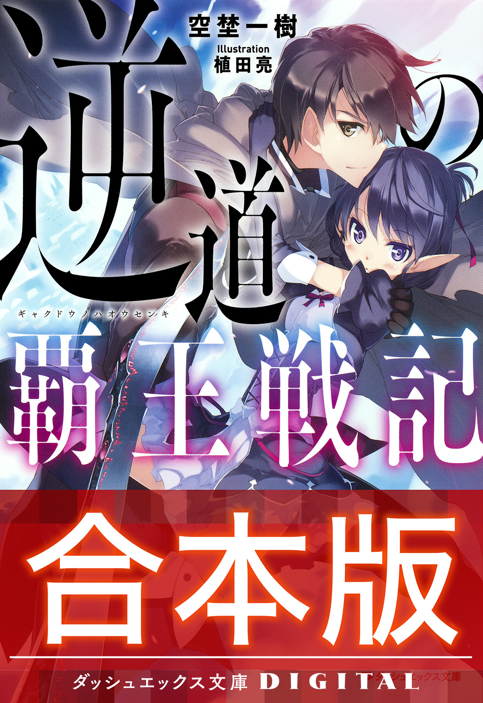
逆道の覇王戦記 合本版
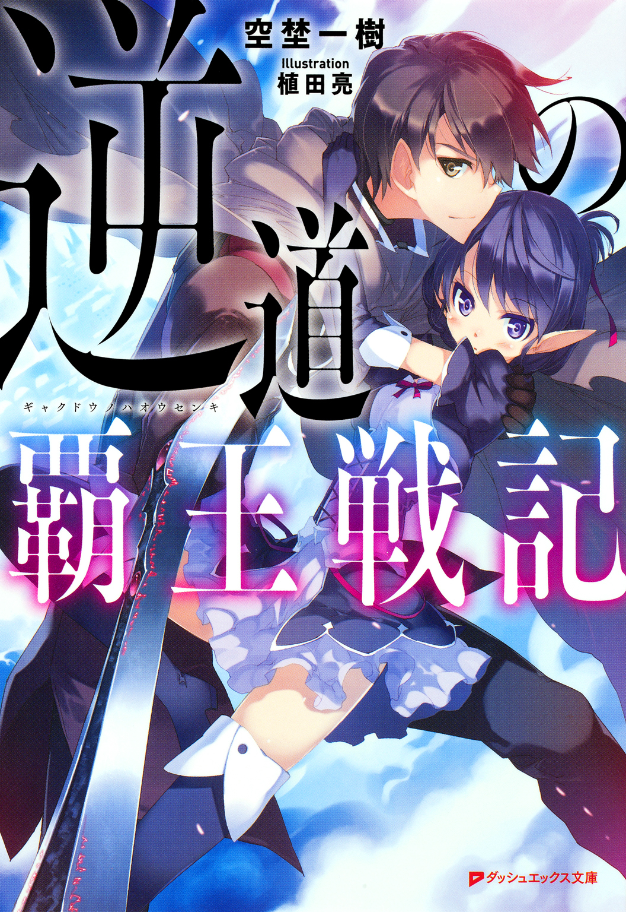
この本は縦書きでレイアウトされています。
また、ご覧になる機種により、表示の差が認められることがあります。
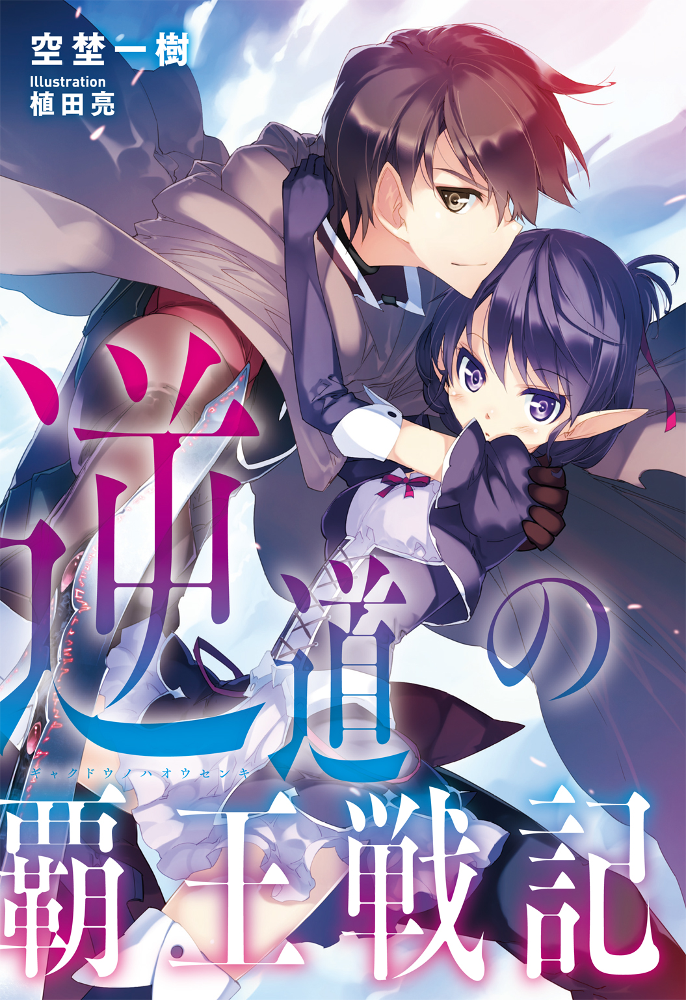
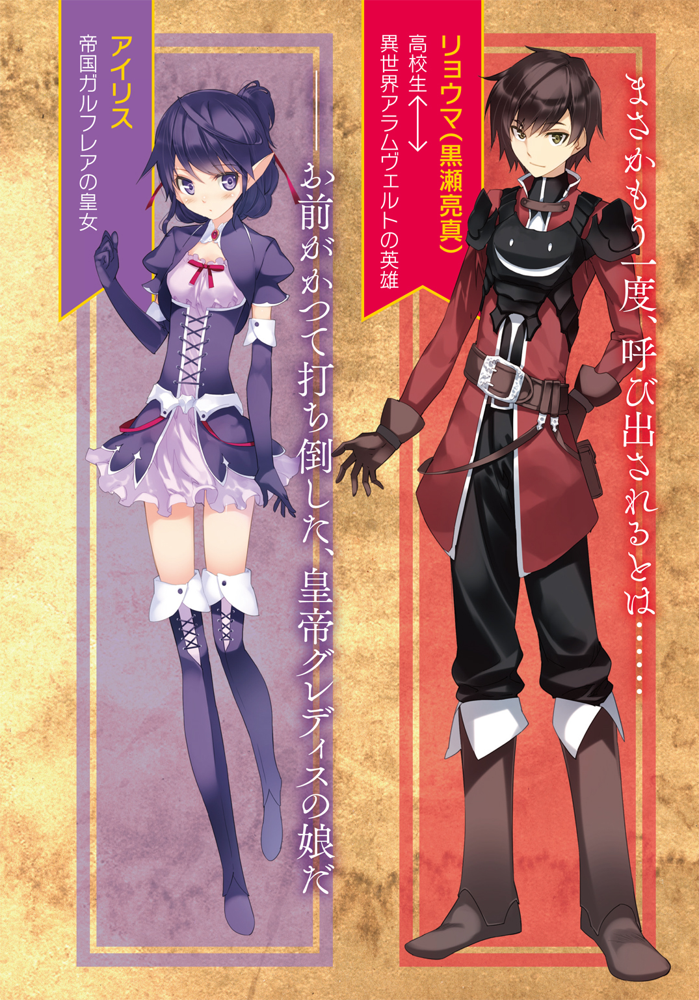
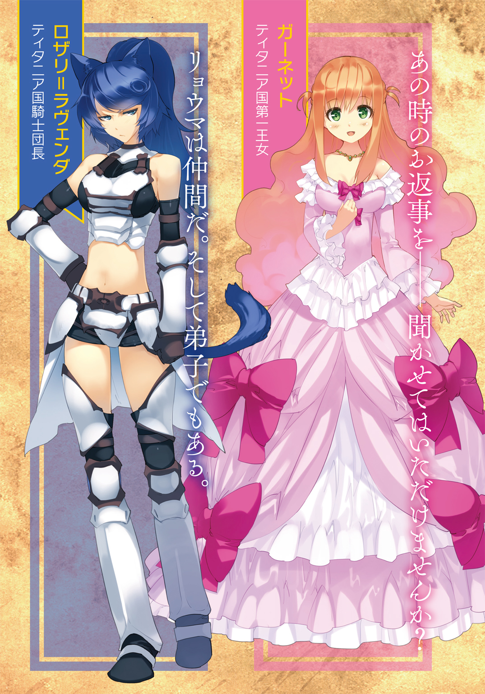
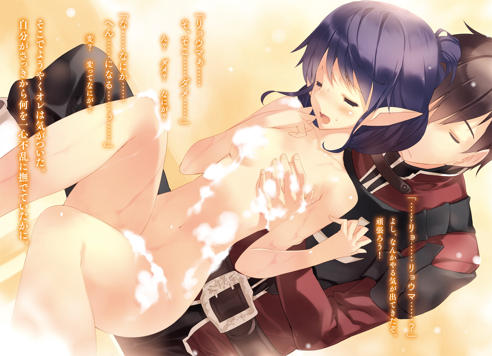
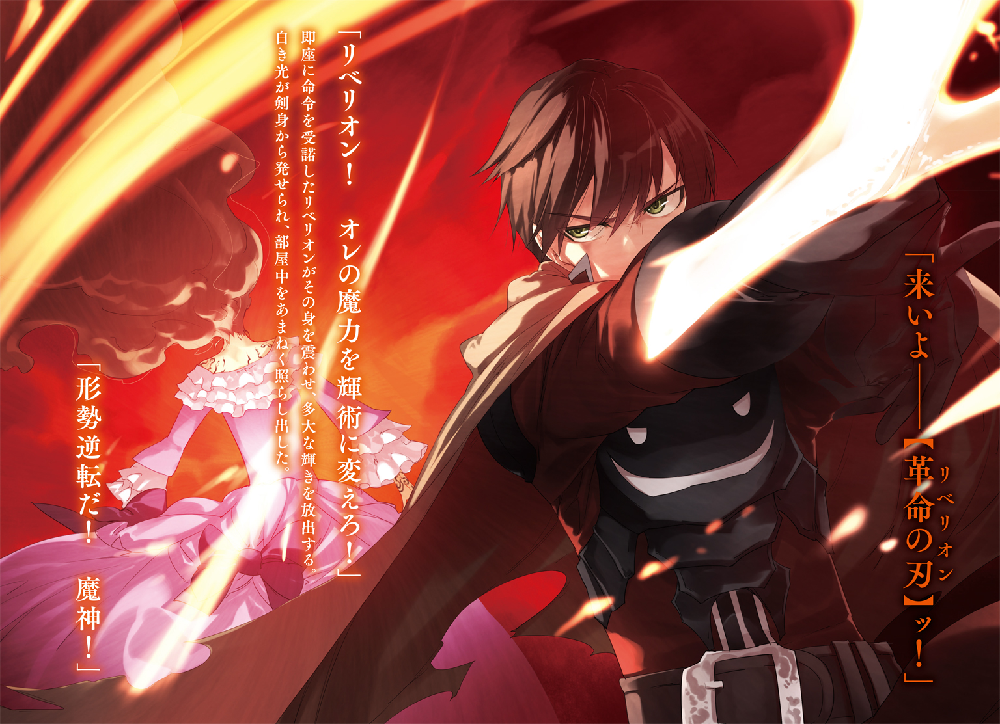
 ダッシュエックス文庫DIGITAL
ダッシュエックス文庫DIGITAL
逆道の覇王戦記
空埜一樹
第一章 終わりから始まる世界
――最後の時が、迫りつつあった。
「リョウマ様、敵は既に追い詰められています。どうか、止めを！」
傍らにいる、黄金の髪を持つ女の子が言ってくる。
「ああ、わかった！」
オレは手にもった一本の剣を掲げ、強く叫んだ。
「光よ――ッ！」
すると刀身が眩い輝きを示し、闇に浸食された世界に光を満たし始める。
『......おのれ......！』
それを疎ましく思うように、目の前の男は憎々しげな声を発した。
『おのれ......異界の男よ......！ 我は......我は、このようなところで滅びぬ！』
彼が両手を掲げると、中空に球体をした暗黒の塊が生まれる。
でも言葉とは裏腹に、度重なるダメージを受け続けたせいで、相手の体はもうとっくに限界を迎えているはずだった。
強大な力を持ち、オレ達と幾度となく戦いを繰り広げてきた因縁の宿敵。
周りの仲間達、そして、常にオレにとって一番の相棒であり続けた『彼女』の協力によって、とうとうここまで来た。
「行くぞ、皆......！」
これで何もかも全てが終わる。こいつに苦しめられてきた皆が救われるんだ。
「リョウマ様！」「リョウマ！」「リョウマ......」「やれ、リョウマ！」
仲間達の声がオレの背中を押してくれる。そうだ。行こう。
これが、最後の時だ！
「ハアアアアアアアアアッ！」
気合を入れるように声を張り上げ、オレは勢いのままに疾走した。
男が闇の力を、こちらに向かって撃ち放つ。
でもオレは少しもそれを恐れずに、ただ前進した。
失ったものを悲しんでいた人達。大切なものを奪われ憤りを覚えていた人達。
力を貸してくれた人達。明日への希望を託してくれた人達。
今まで出会ってきたあらゆる想いを刃に載せ、得物を構えると、その切っ先に全てを懸ける。
「喰らえ、皇帝――ッ！」
突き出した剣が。平和を願う世界の意志そのものが。
未来へと届く、閃光の力が――。
その瞬間、闇を裂き、敵を貫く！
『グォアアアアアアアアアアアアアアッ！』
凄まじい絶叫を上げる男の体から、暗黒の霧が噴出する。
『おのれ......おのれ......おのれええええええッ！』
呪詛の念を吐き出し続ける『それ』は、やがて姿が薄くなっていった。
『このままでは終わらぬ......終わらぬぞ......！』
オレに向かってそう言い残すと、
『忘れるな......人の欲望がある限り......我は滅びぬのだ......！ クク......ハハハハハハハハハハハ！』
哄笑と共に――完全に消え去った。
「......終わった」
何もかもが。オレの長い、長い旅が。
今ここに――幕を下ろした。
だけど未だに実感が湧かなくて、ただ茫然とするしかない。
「やりましたね......リョウマ様！」
傍らの女の子が笑顔を見せた。
他の仲間達も集まって、口々に賞賛の言葉を伝えてくる。
「......ああ......やった」
オレは呟いた。そしてゆっくりと、思い出していく。
平凡な、どこにでもいる中学生だったオレが、これまで辿ってきた激動の日々を。
「やった――」
脳裏を過る記憶の数々。それをまるで昨日のことのように思い出して。
ようやく、オレは、達成感を味わった。
そう。その日、その時、その瞬間。
――オレは、世界を救ったのだった。
意識が覚醒した時、瞼を閉じた闇の中、オレは呟いた。
「......またあの夢か」
懐かしい、という思いはない。事あるごとに見続けたものだったからだ。
でも、考えてみれば、あれは既に随分と前のことだ。
「もう三年――になるのか？」
忘れたいとは思わない。オレにとって大切なことだった。
だけどもういい加減、過去の中で生き続けるのはやめようと思う。
あの時、一緒にあいつと戦った時の仲間はもう、いない。
オレがあの世界に行くことは、二度とないのだから。
「......そろそろ母さんが起こしに来る頃だな」
だとすれば、着替えておくくらいのことはしなくては不味い。
叱られる前に、自分でできることは自分でしなければ。
やれやれと思いながら、目を開けた。
「――は？」
その瞬間、硬直する。意味がわからなかった。
目の前には、フリフリのレースみたいなものがついた豪華な天井がある。
......いや、これは、天井じゃない。確か天蓋っていうんだ。
映画なんかで、お金持ちが使っているベッドの上についているやつ。
更に、そこでオレはようやく気がついた。
自分が寝ているのも、高級ホテルのスイートルームに置かれているみたいな、ふかふかで大きなベッドだっていうことに。
「どこだ、ここ!?」
明らかにオレの部屋じゃない。慌ててベッドから降りる。
すると、やはりというべきか、室内も信じられないくらい豪華だった。
家具や調度品も見るからに高そうだし、絨毯は厚くて柔らかく、壁に飾られている絵画もよくわからないけど相当な値段がしそうである。
「もしかして――誘拐されたのか、オレは!?」
そんな危惧を覚えたが、すぐにそんなわけがないと思い直した。
自慢にもならないが、オレは極々平凡な男子高校生で、父親は中小企業の営業マン、母親は近くのスーパーでレジ係をしている主婦、という絵に描いたようなステレオタイプな家の生まれだ。
つまり、攫ったところで身代金なんてとれるわけがない。
でも、だったら、なんなんだこの状況は？
「......落ち着け、オレ。まずはここがどこなのかを把握するべきだ」
そう、それから後、事態を打開する方法を考えよう。
目が覚めたら、全然知らないところにいた。
幸いなことに、そんな経験は――初めてじゃない。
「よし。どこか外の様子が見える場所は......」
呟きながら視線を巡らせて、オレはある地点で目を止めた。
大きな硝子が嵌まった窓の先に、バルコニーがある。
あそこからなら、何かわかるかもしれない。
早速近づいて、窓を少し押した。......お、鍵がかかってないぞ！
ゆっくりと開いていく硝子窓の隙間に体を押し込み、オレは外へと出た。
びっくりするくらい細緻な造りをしたバルコニーを進み、柵に手をかける。
そして、景色を眺めようとして。
その瞬間、目の前に――竜が舞った。
それは背中に生えた両翼を雄々しく広げながら、悠々と蒼穹を切り裂くように飛んでいく。
「......おいおい」
呆然とした。いやしない奴の方がおかしい。
竜。オレがよく読む漫画やラノベ、それにゲームやアニメではおなじみになった、翼の生えた巨大な爬虫類。
日本にはいつからあんなものが住むようになったんだ？
「いや......待て、落ち着けと言ったろ？ 黒瀬亮真」
そう自分の名を唱え、己に言い聞かせてから、改めて眼下の様子を確かめた。
視界を占めるのは整然とした街並み。でも林立する建物は、そのどれもが現代日本を思わせるような造りをしていなかった。
どちらかといえば、旅番組などでよく見る西洋の地方都市的な趣である。
それも全体としてかなり古く、中世程度の歴史的背景を感じさせるような。
そうか。わかった。ここは外国の、何百年も前から存続してきた由緒ある街なんだな。
やれやれ、全く混乱させやがって。これでひと安心だ。
「......という現実逃避はこの辺りにしておこうか」
いくらなんでも無理があるのは自分でも承知している。
オレは昨日まで確かに日本にいたはずだ。高校が終わってすぐに家へ帰って、二階で図書館で借りた本を読み耽っていた。そうしたら晩御飯だよと母親に呼ばれて、下に降りたらおでんだったので、おいおいまたおでんかよこれで何日目だよ、具材を変えたらいいってものじゃないだろ、何を煮込もうとかつおぶしが主張してくるんだよ！ と不満を漏らしたら父親に、文句言うんじゃねえこのスネカジリが！ と鉄拳喰らって。
「あれ、そこから記憶がないぞ」
鉄拳のせいか？ いや多分違う。
頭の中に靄がかかっているかのようにはっきりとしない。
いやまあそれはともかく――そんな風に平凡な日常を送っていたオレが、気がついたらヨーロッパの地方都市にいました、みたいな超展開に見舞われるはずがない。
......というよりも。
重要なことがある。
オレの知る限り、ヨーロッパに――竜はいない。
「......ここ、どこだよ」
見覚えのない風景。存在するはずもない生物。
そして目が覚めた時にいた、とてつもなく豪華で広い、自室ではない部屋。
一体何がどうなっているというのか。
ただ......オレにはある種の予感がしていた。
どこかこの世界には馴染みがある。
一度、似たような景色を見たことがあるような気がするのだ。
忘れもしない。忘れることなどできるはずもない。
「ここは、ひょっとして......」
そう呟いた時。
「おはようございます、クロセリョウマ様」
背後からの声に振り返ると、そこにはメイドさんがいた。
もう一度言おう。メイド・さんが・いたんだ。
所々にフリルをあしらったシックな色合いのドレスに、頭を飾るカチューシャ――いや正確にはホワイトブリムというのだった――が可愛らしさを演出している。日本ではプリムなんて呼んだりもして、オレは男心をくすぐる響きのあるそちらの方が好きなのだが、いやそんなことはこの際どうでもいいことだ。
「お体の調子はいかがでしょうか。何か問題があればご遠慮なく仰ってください」
「いやそっちは別に問題ないんだけど......」
寧ろ他の方に問題があり過ぎる気がする。
ただオレは抱いた可能性が高まっていくのを感じていた。
目の前にいるメイドさんの髪と目は朝焼けの空みたいな鮮やかな紫で、目鼻立ちからして明らかに日本人じゃない。
それなのにオレは今、彼女の話す言葉がはっきりと理解できた。
自慢にもならないが、英語の成績は万年『二』を保持し、路上で外国人に話しかけられた途端に母国語まで忘れてあたふたとする、このオレがだ。
もちろん、メイドさんがグローバルな感覚の持ち主で、日本語を完璧にマスターしている可能性だってある。
だけど――先ほど見た街の景色といい、竜といい、日本語（？）を話す異国人のメイドさんといい、どうにも要素が揃い過ぎていた。
早急に、確かめなければならない。
「あの......少し質問いいですか？」
「何なりと」
深々とこちらに頭を下げてくるメイドさんに向かって、オレはおそるおそる尋ねる。
「ここって、もしかして......【アラムヴェルト】ですか？」
だが訊いておいて、答えを知りたいような、知りたくないような、そんな二律背反の思いが胸の中でぶつかり合っていた。
なぜまたここに来てしまったのか。一体何が起こったのか。
もしかして、大変なことが起こっているのではないか――。
そんな不安が過り、ここがヨーロッパの地方都市であると言われた方が、まだいくらかマシであるという心持ちですらあった。
......だが。
「はい、ここは、アラムヴェルトにございます」
そう、メイドさんは言った。
微笑みすら浮かべながら、はっきりと。
「......噓だろ」
やっぱりそうだったのか。じわじわと実感が湧いてくる。
アラムヴェルトは――街や国の名前じゃない。
この『世界』そのものを表す言葉だ。
オレは、そのことを知っている。
三年前、既に耳にしていたことだったからだ。
つまり......つまり、だ。
「これって......【異世界召喚】されたってことか......？」
今己が置かれている状況を把握するために、独り言を漏らす。
「しかも――」
だがそれは、あまりに。
「しかも、二回目の!?」
あまりに、自分にとって、意外過ぎる事実だった。
今より遡ること三年前。
中学二年になったばかりの頃、オレはある凄まじい体験をすることとなった。
全くもって唐突に、自分がそれまでいたところとは全く別の、見たこともない世界へとやってきてしまったのだ。
しかも偶然の事故ではなく、意図的な手段によって。
異世界召喚。
映画、漫画、小説、ゲーム――ありとあらゆる創作物ではそれこそ手垢のついたようなジャンルであった。
店頭に並んだそれらの作品を見た時、またそれか、とため息をつき、よくあるパターンだよね、と毒づくこともある。
しかし、実際に自分の身に起こってみると、とてもではないがそんなことを言っている余裕はなくなってしまった。
アラムヴェルト。オレが呼び出された世界が冠する名前である。
それは同時に、この世界において神と尊ばれる存在を意味するものでもあった。
アラムヴェルトには竜、小鬼、軟体動物、醜悪男と、オレの世界では伝説とされてきた生物達がうようよとその辺を跳梁跋扈している。
またそれどころではなく、『魔法』なんていう森羅万象を操る不可思議な術まである始末であった。
何から何まで勝手の違うことに戸惑うこちらに向かって、オレを呼び出したある少女はこう願う。
どうかわたくし達と共に、この世界を支配せんとする悪の皇帝を倒してはいただけないでしょうか。
オッケー、これは随分と金のかかったドッキリだな！
そう思わざるを得なかったオレを許してほしい。きっと誰だってそうなる。
でもいつまで待ってもネタばらしをする芸能人もカメラも姿を見せず、オレは次第に、あれ、これ、現実か？ と認識し始めた。ただ受け入れるまでには至らない。
だって、いや、そんな。いきなり異世界とか。悪の皇帝を倒してくださいと言われても。
こっちは昨日、どこの階段の下に行けば女子のスカートの中身が覗けるかとかそういう話題でですね。非常に盛り上がっていてですね。二組の斉藤さんは意外に下着が派手だった、いやだって普段はあんなに大人しいのに、これがギャップ萌えか！ とかいう、今から思えば宇宙一どうでもいい話で興奮していたのに。
そこにきて、あまりにも突然の申し出。
でも――精一杯、何の冗談だろうと逃避をしてみても、やはり現実は現実で。
女の子は呆然としているオレに説明し続けた。
数年前から各地に侵攻し始め、その圧倒的なまでの力で他勢力を呑み込み、驚くべき速さで肥大化していったある国があると。
それが【皇帝】を名乗るグレディスが治める――帝国ガルフレアだった。
グレディスはガルフレアを含む、自らの支配下に置いた全ての国に対して完全な独裁政権を敷き、その意のままに民を弄んだ。
莫大な税金を課して私腹を肥やし、気に入った女は攫ってきて妾とし、子どもは親元から引き離した上、幼い頃から自らの奴隷として手足のようにこき使う。
その暴政に逆らう者は当然現れたが、誰もがグレディスには敵わなかった。
皇帝は自身も強力な魔法を使う存在――この世界では魔導師と呼ばれる――だったのだ。
グレディスは反逆者をわざわざ皆の前まで連れていき、激しい拷問にかけた末、無残に処刑した。
眼前で展開された惨たらしい光景に誰もが恐れを抱き、以後、彼に抗おうとする者はいなくなった。
そうしてガルフレアの進撃は益々加速し、世界全土を手中に収めんとすらしていた。
しかし、このままグレディスの好きにさせてはなるものかと立ち上がった、四つの大国があった。
そのうちの一つが、オレをアラムヴェルトへと呼んだのである。
オレを召喚した少女の話によれば、どういうわけか異世界の人間がアラムヴェルトへと来ると、凄まじい魔導師の素質を持つらしい。
それこそ、皇帝グレディスに対抗できるほどの、である。
つまりオレは、この世界において悪を唯一打ち倒すことのできる存在なのだ。
全てを聞き終えたあと、オレは燃えた。燃え続けた。
やってやろうじゃないか。そう思った。
噓だ。最初は混乱した。次にかなりの勢いでビビった。
ただ......後に色々とやりとりがあり、紆余曲折を経てそういうことになったのだ。
そして打倒帝国を目指し、オレは四つの大国を率いて戦った。
激しい、途方もなく激しい戦いだった。
いくらこの世界限定で誰よりも強い魔導師となったとはいえ、オレは一介の中学生に過ぎなかった。何度も諦めようとしたが――その度にオレを呼び出した少女や、戦いの中でできた仲間達に励まされ、立ち上がったのだ。
結果、遂にグレディスはオレの手によって倒された。
世界は平和になり、オレは四つの大国共同で盛大なパーティを催されたあと、別れを惜しまれながら役目を終えて元いた世界へと還されることとなった。
この世界でずっと暮らしてはどうですか。
オレの傍に居続けた少女からはそう申し出を受けたが、断った。
やはりオレはこことは違う世界の人間だ。向こうには大事な家族や友達もいる。
本当はかなりその提案に心惹かれたのだけど、強引に言って帰ったのだ。
で、自分の世界へと帰ってきたオレは、それまでのことが夢であったかのようにどこにでもいる中学生に戻った。
もう二度とあの世界に行くことはないだろう。
そんな、一抹の寂しさを胸に抱きながら。
――そして時が経ち、高校二年になったのだが。
「まさかもう一度、呼び出されるとは......」
意外に早かったというべきか、なんというか。
ただ、こうしてまた召喚されてしまった以上、どうこう言っても仕方がない。
切り替えが早いのは、オレの唯一といっていいほどの長所だ。
もしかしたらこれは、三年前にやり残したことを果たせという神の計らいのようなものなのかもしれない。
なぜ再び異世界に来てしまったのかはひとまず置いておいて――それらをこなしていくのも良いと思った。
「やり残したことか......」
ぱっと頭に思い浮かぶのは、一人の女の子だ。
三年前、一緒に旅をした、オレにとって大切な人。
彼女と別れることが一番辛かった。だからこそ......もう一度、会ってみたい。
――リョウマ様は、わたくしのことを、どう思っておりますか？
元の世界へ帰る前、彼女はオレにそう尋ねてきた。
だがそれに対して、オレは何も答えることができなかった。
言ってしまえば、この世界に心残りができてしまうかもしれない。そう考えてしまったのだ。
何故なら彼女とは、もう、二度と会えないのだから。
だけどやはり自分の想いを伝えるべきだったと、オレは帰ってからずっと後悔していた。
だから――二回目の異世界召喚という、稀なチャンスに恵まれたのなら、彼女に会ってちゃんと言いたい。
中途半端なままでいるより、はっきり気持ちを伝えた方がずっといいはずだから。
それに、他にも、久方ぶりに顔を見てみたい人、交わした約束を守らなければならない人はたくさんいた。
（でも......三年前にオレを召喚した国とは違うみたいだな）
周囲の様子を見回しながら、そう判断した。
オレは現在、厚手の青い絨毯が敷かれた長い廊下を歩いているのだが。
左右に嵌め込まれた窓の装飾や、堅牢な壁にある細工模様など、どれも記憶にある風景とは違っていた。
ただ、どこか見覚えはある。
皇帝を倒しに行く際、世界中の色々なところを巡ったから、そのどこかなのかもしれないが、上手く思い出すことができなかった。
「あの......ここってどこなんですか？」
仕方なく、目の前を歩いているメイドさんにそう訊いてみる。
彼女は自分についてくるよう言って、オレが目を覚ました部屋から出て以来、ずっと無言のまま先導し続けていた。
「それにオレを呼び出したのは誰なのかとか、理由とか......教えてほしいんですが」
「申し訳ありません。わたくしに権限はございません」
丁寧ではあるものの、有無を言わせぬ口調で断られる。
「もう間もなく到着致しますので、今しばらくお待ちくださいませ」
「......はあ、そうですか」
そう返されてしまっては、これ以上なにも言えなくなってしまった。
仕方なく、オレはただ付き従う。
やがてメイドさんは廊下の突き当たり、巨大な扉の前で立ち止まった。
右に巨大な満月、左に吼える竜が彫られたそれの左右には、槍と鎧で武装した兵士らしき人間がそれぞれ立ち、その前にローブを身に纏った女性が待っていた。
その格好はいかにもゲームのファンタジー系ＲＰＧなどに出てくるＮＰＣを彷彿とさせて、三年前に初めて見た時は驚いたものだった。
尤も今となってはもう、懐かしさしか覚えはしないけど。
「クロセリョウマ様をお連れ致しました」
事前に連絡がいっていたのだろう。メイドさんの言葉にローブの女性が頷き、扉へと振り返ると、静かに唱えた。
「【扉よ開きたまえ。我が名は汝が主なり】」
その独特の発音に、オレはハッとなる。
それは【魔導言語】と呼ばれるもの。
少しでもオタクが入っている人達にわかりやすく言うとすれば、いわゆる魔法を使う際に唱える呪文である。それ以外であれば、アプリケーションを起動させるために入力するパスワードとでも言おうか。
そう、この世界には森羅万象の現象を操る不可思議な術が本当に存在している。
正確には魔導幻法というらしいが、こっちの世界では縮めて『魔法』と呼ばれている。
魔導言語には様々な種類の単語があって、組み合わせで色んな効果を発揮した。
魔法を使う才能を持つ魔導師達は、日々、新しい力を生み出す研究に勤しんでいるらしい。
ローブ姿の女性は恐らく、この城に勤める魔導師なのだろう。兵士達が警護役だとすれば、扉の開閉役といったところだろうか。
たとえ不審者に兵士達が敗れたとしても、彼女がその間に逃亡するなり、対抗手段を取れば、中に入ることはできない、という二重の備えになっているのだと思う。
ちなみに――魔導言語を含め、どういうわけかわからないがオレは、アラムヴェルトの人達が話す言葉の意味がわかる。
オレを以前に召喚した人曰く、呼び出された時点で世界が異物を取り込み自らのものとして新たに定着させるので、感覚が最適化されるとか、なんとか。難しい話でよくわからなかった。
まあ、なんだ。アラムヴェルトそのものが、ここで暮らしやすいように色々都合をつけてくれたと。そういうことだと思っている。
やがて鈍い音を立てながら、見上げるほどに巨大な扉が左右にゆっくりと開いていく。
メイドさんに続いて中に入ったオレは、その余りに広大な空間に目を見張った。
学校にある体育館くらい。いや、それよりもっと広いかもしれない。
だけどびっくりするくらい何もなかった。廊下から続く絨毯が敷かれているだけで、あとは調度品すら置いていない。
あるのはたった二つ。
深奥の、何段も高くなった場所にある、豪奢な作りをした椅子と。
その背後の壁にかけられた、漆黒の旗である。
「これは......どういうことだ？」
満月の傍に、竜が守るよう佇む様を象った紋章が描かれた国旗を見て、オレは息を呑んだ。二回目の異世界召喚から続いての驚愕とでも言おうか。
オレの記憶が確かであれば、それが掲げられた国に、オレが呼ばれるはずはないのだ。
だって、よりにもよって、それは――。
「よくぞ参った。案内ご苦労。下がってよいぞ」
その時、年若い声が前方から聞こえ、呆然としていたオレは我に返った。
挨拶をしたあと、メイドさんが部屋を出ていく。
扉の閉まる重々しい音が静寂の室内に響き渡る中、オレは視線の先にいる人物。
巨大な椅子に包まれるように座っている、一人の女の子を見た。
同時に――思わず息を呑む。当たり前だ。
（む......無茶苦茶可愛い）
まるでよくできた人形のようだった。
女の子は紫がかった黒い髪を首の辺りで纏めており、同色の細緻な細工を施されたドレスを身に纏っている。
目はやや吊り気味ではあるものの、そんなことが気にならぬほどに整った顔立ちをしており、肌も白雪のように穢れなく、上質の陶器を思わせるように滑らかだった。
背が小さく体つきも幼いが、それが逆に彼女に寓話の妖精を思わせるような神秘性を与えている。
加えて特徴的なのは、その両耳。
尖っているのだ。
言うなれば、最早ファンタジー系の創作物では超がつくほどお馴染みとなった――エルフのように。
「クロセリョウマだな。......よく目を覚ましてくれた。三日以上も眠り続けていたので、少々心配したぞ」
女の子は落ち着き払った声でそう言ってから、音もなく立ち上がった。
「私の名はアイリス。お前を待っていた」
階段を降り、こちらへと歩み寄ってくる。
――が、その途中、彼女はドレスの裾を踏んで思いきり前に倒れた。
「............」
無言のまま微動だにしない、アイリスと名乗った女の子。
「......平気か？」
オレは急いで近づくと、傍に跪いて手を差し出した。しばらくしてからその手を握ると、彼女はゆっくりと起き上がる。
そして、いやに落ちつき払った顔をして言ってのけた。
「平気とはなんのことだ。別に何も起こってはいないぞ」
「いやいやいや。それはさすがに無理があるだろ。すごい派手に転んでたぞ」
思わず突っ込むと、アイリスの顔に朱が差した。
「こ、転んでなどいない。新しい歩行方法を思いついたので、試してみたのだ」
「......はあ。で、その効果のほどは？」
「距離の短縮にはなるが、痛みを伴うのであまり実行しない方がよさそうだ」
そうか。それはそうだろうな。
......毅然としているように見えたけど、結構抜けてるところもあるみたいだな。
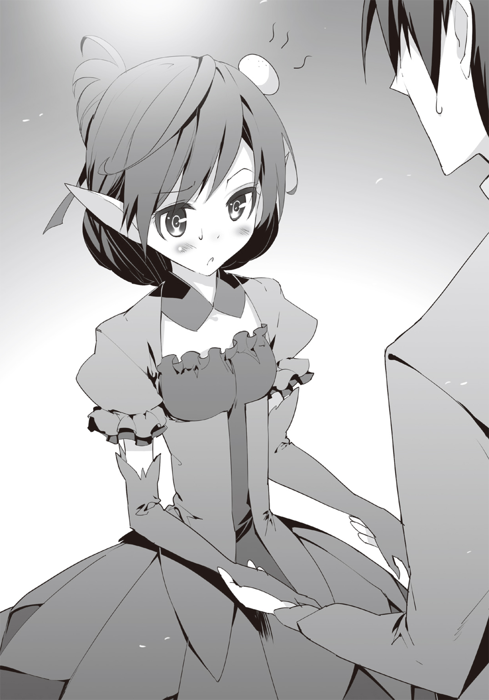
まあ、そちらの方が好感は持てるけど――と思いながら、アイリスの顔を見ると、まだ頰が紅色に染まっていた。
「......本当だぞ」
しばらくしてから彼女はこちらを見つめたまま、ぽつりと呟く。
「なにが？」
「さっきのは転んだわけではないと言ったのだ。理解しているだろうな？」
「え、まだそのやり取り続いてるのか？ もう終わっただろ？」
「お、お前が納得していないかもしれないと思ったからだ。本当にわかっているか!?」
こちらを睨みつけてくるアイリス。いや、正直もう、どっちでもいいわけなんだが。
「......わかってるって。転んだわけじゃないんだよな。オーケー」
「本当に心の底から納得しているのだろうな。もし噓で言っているのだとしたら、私は何度でも説明する気でいるぞ？」
「い、意外にしつこいな!? しました、しました！ もう、どうしようもなく心の底から納得しました！」
「......。そうか。ならよい」
満足そうな顔で、少女は微笑んだ。
なんだ。弱みを見せたくない性分なのか？
不思議に思っているオレに対し、アイリスは――次いで、予想外の行動に出た。
何の躊躇いもなく、こちらに密着してきたのだ。
「お、おい!?」
予想外の行動に慌てたが、アイリスは構わず、そのままオレの体のあちこちを触り続けた。
「ふむ。外傷はないようだな。気分が悪かったり、頭が痛かったりはしないか？」
どうやらオレを心配してくれているようだが、ちょっと、これは危ない。
可愛らしい女の子にそう遠慮なく様々な場所をまさぐられると、段々変な気分になってくる。
「だ、大丈夫だって！ それより、年頃の女の子がそういうことしたらダメだろ」
「そういうこと、とは？」
急いで離れたオレに向かって、きょとんとするアイリス。予感はしていたけど、やっぱり天然の行動だったか。
「その......男に近づいてあちこちを触るとか、そういうのだよ。どうなっても知らないぞ」
「どうなるというのだ」
「......どうにかなるんだよ」
「具体的に教えてほしい」
「それはだから、男のこう、精神的なシンボルが雄々しく――ってなんの話だよ！ もういい！ とにかく、そういうのは駄目だ！」
危ない。もう少しで余りにも堂々としたセクハラになるところだった。
強引に話を終わらせたオレに首を傾げながらも、アイリスは頷く。そして、
「うむ、了承した。よくわからないが、今後は控えることにしよう。ともあれ――」
そのままゆっくりと、口元に笑みを形作った。
「ようこそ、クロセリョウマ。私はお前の来訪を歓迎する」
可愛らしさ倍増しの笑顔に、思わずテンションが限界値を振り切りそうになったが、オレはそんな自分自身にブレーキをかけた。
浮かれるな、オレ。クールになれよ。この女の子がどれだけ可愛かろうと、アイドルなんて目じゃなかろうと、可愛かろうと、天使というものが存在するなら正にこの子のことだろうと、可愛かろうと、この子と同じ空気を吸えているだけで生きていて良かったと思えるような心持ちであろうと――って全然クールになれてない。
とにかく。口振りから察するにアイリスがオレをこのわけのわからないところに連れてきたということなのだ。行動は慎重にせねばなるまい。
「お前......誰なんだ？ どうしてオレの名前を知っているんだ？」
まずは、探りを入れてみる。
すると彼女はごく自然に応えてくれた。
「改めて名乗ろう。私はアイリス」
さっきも思ったけど、外見に相応しい美しい名前だ。
「アイリス＝ナクナ＝フェルモントだ」
次いで名字までしっかりと教えてくれた。なるほど。ナクナ＝フェルモントさんね。覚えておこう。ナクナ......フェルモント？
「ちょっと待て。......フェルモントだって？」
その響きには聞き覚えがある。いくら時が経っているとは言えど、忘れるわけがなかった。
「そう。私は、フェルモントの名を継ぐ者だ」
深々と頷くアイリスに、絶句する。
さっきの国旗といい、アイリスといい、何らかの理由があってオレを騙しているとしか思えなかった。
だって、ありえるわけがないのだ。
アイリスの言葉を信じるとすれば、ここは......ここは。
「帝国、ガルフレア――」
三年前、オレや仲間達が戦っていた、悪しき大国。
「その通りだ。ここは帝都。そして、クロセリョウマ、私は――」
アイリスが、真剣な眼差しをこちらに向けながら、告げてきた。
「――お前がかつて打ち倒した、皇帝グレディスの娘だ」
「......え」
時が止まったかと思った。それくらいの衝撃だった。
「ええええええええええええ!?」
遅れて仰け反り、混乱する。もうさっきからわけのわからないことが起こりっぱなしで、自分の処理能力が限界値を振り切っていた。
「な、なんで、オレが帝国に？ しかも皇帝の娘？ どういうことだ!?」
そのため矢継ぎ早に問いを投げつけて、一刻も早い解答を望む。
「気持ちはわかるが、落ち着け、クロセリョウマ」
そんなオレを宥めるように、アイリスが肩を叩いてきた。
背を伸ばしながらの行動であるため、幼い子が無理をして大人ぶっているようで、状況を忘れてときめく。
「......お、おう」
我ながらどうかと思うが、そのおかげもあって、何とか落ち着きを取り戻せた。
でも、依然としてあらゆる部分が不明のままだ。
何故、彼女がオレを呼んだのか。
考えてみたところ一番はじめに思い当たるのは、復讐、だった。
いなくなってしまった父親の仇を再度呼び出し、殺すことで自らの溜飲を下げる。
実にわかりやすい行動である。筋道が通っていた。
いや通っていては困るのだが。さすがにまだ死にたくはない。
しかしそれ以外となると、皆目見当がつかない。
......オレは、アイリスに気づかれないよう、自らの手を握った。
目を閉じ、その『流れ』を感じてみる。
流れとは即ち、魔法を使うために必要なエネルギーの認識だった。
魔力、と呼ばれるそれはこの世界の至るところに漂っている、目に見えない粒子状のものであるらしい。魔導師はそれを体内に取り込み、魔法という別種の現象へと転換させて、再度外部へと放出する能力を持つ者の総称だ。
この世界に呼ばれたあと、オレは魔法の使い方を習い、ひと通りの術は使いこなせるようになっている。
「......大丈夫そうだな」
体の中を巡る魔力の脈動を感じた。この世界に呼び出された時点で、オレはまた魔法を使えるようになっている。
もしアイリスがこちらに何らかの攻撃を仕掛けようとしてきても、反撃することができそうだった。
いくら可愛いからといって、命を取りに来られたら、こちらとて全力で立ち向かう他ない。
「でも可愛いのでできれば傷つけたくないから、そういうのはなしにしてほしい......」
「なにか言ったか？」
アイリスから怪訝な顔を向けられて、オレは首を横に振った。
ひとまず、万が一のために必要となる手段はあるわけだし、一つ一つ確認していくことにする。
「皇帝の娘って......じゃあ、ここは帝都にある宮殿なのか？」
「そうだ。蒼光宮という」
となるとこの場所は、謁見の間か。どうりで見覚えがあるはずだ。
三年前、オレは確かにここでグレディスと戦った。
よくよく見ればその際の爪痕が、そこかしこに残っている。
「......そういえば仲間と一緒に宮殿に乗り込んだ時、可愛い子がいたな」
混戦の中だった上、皇帝を目指してひたすら駆け抜けていたから、それほど詳しく覚えてはいないけど。
遠くの方で誰かに連れられて去っていく姿を見たような気がする。
「か、可愛いかはともかく」
こほん、と咳払いして頰を赤らめるアイリス。王族らしく振る舞ってはいるが、中身は年頃の女の子らしいところがあるみたいだ。
「クロセリョウマが乗り込んできた際、切迫した事態を危惧した配下の者達が、私を密かに帝都の外へと脱出させた。お前はその途中を偶然、目にしたのだろう。私は父上の傍にいると主張したが、半ば強引に、騒動が収まるまで軟禁されていたのだ」
なるほど。そういう事情だったのか。
「まあ、それは納得したとして......重要なことを訊きたいんだが」
オレは我慢しきれなくて言った。
「なんでオレをまたこの世界に呼んだんだ。しかも、グレディスの娘であるお前が」
「......うむ」
アイリスは頷きつつもすぐには答えを返さず、代わりに高い天井を仰いだ。
「クロセリョウマ。この宮殿を、静かだとは思わないか？」
「え？ あ、ああ、そうだな。言われてみれば」
ここへ来るまでにも、兵士や騎士らしき人達に出会ったが、極端に数が少なかった。
三年前は、もっとたくさんいた気がするけど。
「まるで、皆が揃ってどこかへ行ってしまったみたいだ」
「みたい、ではない。今のところここで働いている者はほとんどいない」
「なんでまた」
「......父上が倒されたあと、全員、帝国から逃げたからだ」
うっ。......そうか。世知辛いものだ。
いや、でも、仕方がないのかもしれない。
実質的に、帝国はグレディスの持つ力によって成り立っていたようなものだ。
その屋台骨が折れてしまったのであれば、あとは自然に崩れ去るのを待つばかり。
いずれ倒れることがわかっている建物の中に、いつまでも居残っている奴はいない。
まあ......オレが他人事のように言えることでもないのだが。
屋台骨を折った張本人だしな。
「そういえばこの謁見の間にも昔はもっと色々なものが飾ってあったよな。壺とか鎧とか」
「父上亡きあと、兵士達の反乱が起こったそうだ。彼らは結託し、近臣達を拘束したあと、城の中にある高価なものを根こそぎ持って逃げていってしまったらしい」
玉座を振り返り、アイリスが言った。その声は、どこか寂寞したような思いを孕んでいるようにも思える。
「オレがさっきいたところには色々あったけど」
「わずかに残った部下が、かろうじて略奪から守ることができたものを保管するために、あそこへ運び入れたためだ」
要するに、この城にはあの部屋以外ろくなものがない、と。そういうことか。
「そんなことがあったのか......」
兵どもが夢の跡、とはよく言ったものだ。あれほど隆盛を誇った国が、たった三年でこうまで変わってしまうとは。
「仕方のないことだ。父上なき今、この国に未来はない。......彼らの気持ちも理解できる」
俯き、短く息をつくアイリス。どんな言葉をかければいいのか、オレには判断がつかなかった。生半可な慰めは逆効果だろう。何故なら帝国をこんな風にしてしまったのは、オレ自身なのだから。
「――クロセリョウマ。お前をアラムヴェルトへ呼び出したのは、何も復讐をするためではない」
唐突に、アイリスは話し始めた。
「というよりも、私はお前にわずかなりとも憎しみを抱いてなどはいない」
「いや、でも......」
理由があったとはいえど、オレが彼女の父親を倒してしまったのは事実だ。そのことに対して何の憤りも感じていないとはさすがに思えなかった。
しかし彼女はこちらを向くと、自然で魅力的な微笑みを浮かべる。
「噓ではない。もしお前が父上の命までも絶っていたのであれば、多少の怒りは覚えたかもしれないが......。お前は最後、皆の反対を押し切って父上を生かそうとしてくれたと聞いている」
「あ、ああ、確かにそうだけど......別にそんな、大したことじゃ......」
何と言うか、単純に人の命を奪うことに気後れがあっただけで。
あとは、当たり前のように人を殺すべきだと主張する他の面々がやや恐くなったということもあった。
彼らに従えば、オレ自身が皇帝に近づいてしまう気がしたのだ。
だから別に、どんな悪だろうと命は命だとか、そんな高潔な考えを持っていたわけじゃない。
「それに――結局、グレディスを助けることはできなかったしな」
「......仕方のないことだ。父上の行ったことを考えれば、あれもまた創造主アラムヴェルトの与えた罰であったのだろう」
アイリスはオレを気遣うような言葉を口にしてから、
「それにお前自身がどういう考えでとった行動であろうと、私にとっては途方もない慈悲に思えた。あれほどの非道を行った父上を生かそうとしたお前の心が、私の中に芽生えかけていた醜い感情を取り払ってくれたのだ」
「......そうか」
そこまで言われると、さっきアイリスを疑っていたことが、申し訳なくなってくる。なんだか居心地が悪くなって、オレは頭を搔いた。
「で......えっと。復讐とかじゃないなら、なんでオレをもう一度召喚したんだ？」
「お前に頼みがある」
アイリスは、アメジストにも似た深い色の瞳に、オレの姿を映した。
「かつて我が父上を倒し、帝国の支配よりこの世界を解き放った英雄、クロセリョウマ」
かつてグレディスの座していた玉座を背に、堂々とした態度で。
「お前に――今度は、このガルフレアを救ってほしいのだ」
「......なんだって？」
意外過ぎる申し出にオレは眉をひそめた。オレが、帝国を救う？
「皇帝亡き今、この国に統治者は存在しない。私が帝位を継承することも考えたが、それでは帝国の現状を変えるにはいささか足りぬのだ」
そう言って、数歩、こちらに歩み寄り。
「だがお前なら。父上に匹敵するほどの力を持つお前になら――それができる」
アイリスは、ゆっくりとオレを見上げた。
揺るぎない意志を込めた眼差しは、真っ直ぐにこちらを射抜く。
「頼む、クロセリョウマ。――私の代わりに、この国の新たな皇帝となってくれ！」
朗々と、広大で空虚な部屋に響いていくその声に。
「............はい？」
オレは、ちょっとばかり間の抜けた言葉を返すしかなかった。
大通りには様々な人達が行き交っていた。
荷物を背負った商人風の人や、腰に剣や斧を提げた戦士風の人。もちろん、軽装に身を包んだ帝都民らしき人達もいる。
左右には屋台のような簡易的な建物がずらりと並んでいて、干し肉や果物、魚などが並べられていた。
どことなく、元の世界の中世時代と似ているようで、どこかが決定的に違う。
そんな風景を眺めていると、改めてアラムヴェルトへもう一度やってきたのだという実感が湧いた。
ただ実を言えば帝都をゆっくりと歩くのは、これが初めてだ。
三年前は既に戦火に包まれていた中を脇目も振らず、王宮に向かって走っていったため、ゆっくりと風景を楽しむ余裕なんかなかった。
だから、懐かしいようで新鮮味があるという不思議な感覚に包まれていたわけだが。
（......なんか、寂しいな）
ふと、そう思った。
人もいる。店も出ている。王宮へと伸びる通りとしては十分だ。
それなのに、妙に活気がなかった。
人々の顔もなんとなく冴えなく見え、商品を売る者達の態度も投げやりに思える。
まるで何かを諦め、自棄的になっているような、そんな印象だった。
「なあ、アイリス。なにかちょっと、街の様子が変じゃないか......？」
そう問いかけようと視線を前に戻したところで、オレは目をしばたたかせる。
前を歩いているはずのアイリスの姿が見当たらなかった。
慌ててあちこちを探すと、間もなくして彼女の後ろ姿を捉えた。
彼女は今、地味な灰色のローブを頭からすっぽりと被っていた。民に自分の正体を知られないようにするためだという。
ちなみにオレの方は、アイリスが予め用意していたこちらの世界の服に着替えていた。
アラムヴェルトでは、オレがこちらへ来る前に身に纏っていた普段着ではさすがに目立ち過ぎるためだ。
それはともかく――アイリスはある露天商の前に屈みこみ、何かを熱心に見つめている。
「......どうしたんだ？」
近づいて声をかけると、アイリスはこちらを振り返って足元を指差した。
「リョウマ、すごいぞ。見たこともない食べ物だ」
彼女の前を覗き込むと、そこには赤い絨毯の上に幾つもの木箱が置かれている。
そのうちの一つは見本として蓋が開けられて中身が明らかになっており、中には七つの色が混ざった奇妙な果実が収められていた。
「店主よ、これは一体どのようなものなのだ」
今にも食いつかんばかりに好奇心を剝き出しにして、アイリスが身を乗り出す。
すると、彼女の前に座っていたヒゲの生えた男は、にやりと笑みを浮かべた。
「よくぞ訊いてくれた。こいつは遙か東方にある国の樹にのみ生える果物でね。一口齧ると、果肉はとろりトロけて舌の上で踊り、蜂蜜のように濃厚な甘みが口全体に広がる。それはまるで、この世のものとは思えないほどの美味さなのさ」
「な、なんと......そのような素晴らしいものがあるとは......」
男の説明に夢中になるアイリスは、堪えきれないというように喉を鳴らす。
「い、いくらだ。いくらで食えるのだ!?」
「そうだな......俺も苦労しながら海を越えて仕入れてきたものだ。そう安い値段では売れないが、お嬢ちゃんと出会ったのも縁だ。特別に銀貨一枚でどうだい？」
人差し指を立て、そう要求してくる相手に、アイリスは「おお！」と目を輝かせた。
「そ、そうか、それでいいのか。よし、わかった！」
彼女は頷いたあと、懐に手を入れると、
「もし本当に貴重かつ美味なもので、流通経路がはっきりしているなら、他国との交易の材料に使うことができるからな......！ その前に味見をするため、買おうではないか。......決して私が食べたいとか、そういうことだけではないのだぞ。決してな！」
なにやら言い訳のようなことを小さな声で口にして、財布を取りだそうとする。
そこまで見てオレは、どうやら彼女が本気らしいと悟った。
そのため、
「待った、アイリス。そんなもん、銅貨一枚の価値もないぞ」
アイリスの背後から手を伸ばし、見本の箱から果物を摑みとる。
「おい、なにをするんだ！」
怒った男が取り返そうとするが、それをするりとかわし、オレはしげしげと掌の中にあるものを眺めた。
「......やっぱりか。よく見ろ、アイリス。これはただの林檎に色を塗っただけだ」
「な......なんだと!?」
驚いたアイリスが大きな目を見張った。
「粘土か何かで加工してあるようだが、作り方が雑だからよく見ればわかる」
手渡した果実を、アイリスは注意深く観察し、低く唸る。
「な......なんと......本当だ」
「露店じゃよくある話だ。以前にも仲間の一人が騙されたことがあったよ」
どこの国でも、こずるい真似をして儲けようとする奴はいるってことか。
「おっさん、いくらなんでもただの林檎で銀貨一枚は高すぎるんじゃないか？」
三年前に旅をしたことで、こっちの世界の通貨価値に関してはオレも知識があった。
アラムヴェルトでは世界共通で金、銀、銅の三種類のコインが通貨として流通している。
銀貨一枚というと、日本円に直せば数万円程度にもなった。
「お、お前、私を騙したのか！」
責めるように言うアイリスだったが、男は謝罪するどころか、そっくり返って鼻を鳴らす始末だった。
「......フン、こんなモンで騙される方が悪いんだよ」
「なんだ、その言い方は！ 私の期待を返せ！」
「うるせえな。今の帝都じゃ、こうでもしないと儲けられないんだよ！」
男は怒鳴り散らすと、商品をかき集め、絨毯を丸めて足音荒くその場を立ち去っていく。
「な、なんという男だ......うう。せっかく貴重なものが手に入ると思ったのに」
ひどく落ち込んだ様子のアイリスに、オレは苦笑した。
「あの手の奴はどこにでもいる。気をつけた方がいいぞ」
「む。では、あれか。以前に買った『高山でのみ育つ青色人参』や『食べれば幸せになれる巨大魚』や『霧の森の奥に生える幻の茶葉』も全て噓だったのか!?」
「もう騙されたあとだったのか!?」
「い、いや、でも、違うぞ、リョウマ。仮にそれがそうだとしても、あれだ。少し前に購入した、『伝説の実がなる種』は噓ではないだろう！ 実際にあれは水をやると大きくなって実をつけたしな！ 実に美味しかったぞ！ まるで赤茄子のような味だった！」
「......。じゃあ、それ、赤茄子だったんじゃないか？」
「ほわっ!?」
言われて初めて事実に気づいた、というように、アイリスは見てわかるほど驚いた顔をした。
「な、なんという巧妙な罠だ......」
「この上なくわかり易い仕掛けだと思うが」
というよりも向こうもよくそれで騙そうと思ったな。
......どうにも、この子はあれだ。物凄く純粋な人間でもあるようだ。
元の世界でもそうそういない。いわんや、こちらの世界でも珍しい存在なのではないだろうか。
皇帝の娘だから――なのか？
「いや、そうだとしても世間知らず過ぎるような......」
いや、まあ、それはいい。
アイリスがその小さく瘦せた姿とは裏腹に、随分な食いしん坊だということもわかったけど、とりあえず置いておこう。
それよりも、今の男の台詞が気にかかった。
今の帝都ではこうでもしないと儲けられない。
人としての道を外れなければ金を得られないほど、帝国は切羽詰まっているのだろうか。
「なあ、アイリス。オレに見せたいものがあるって、ここまで連れてきてくれたけど......それがこれなのか？」
言って、オレは周囲に視線をやった。
――この国の新たな皇帝となってほしい。
そう頼んできたあと、ぽかんとするオレに向かってアイリスは言った。
まずはガルフレアの今を見せる。そこからまた話の続きを聞いてほしい、と。
それは構わないのだけど、何もアイリス自身が城下の案内を引き受けなくてもよかったと思う。仮にも一国の姫であるというのなら、その役目に相応しい従者なりに命じればよかったのに。
それに街に行くにも正門からではなく裏口のようなところから、妙にこっそりとした感じで出てきたし。何か事情でもあるのだろうか？
考え込んでいると、アイリスははたと我に返ったような表情をして、少し頰を赤らめた。
「おっと......つい、お腹が減っていたせいで......もとい、興味深いものがあったために、寄り道をしてしまった。お前に見せたいのはここではない。ついてきてほしい」
「お腹減ってるのか？」
「へ、減ってない！ 減ってないぞ！」
言い返しながら、踵を返し、アイリスは再びオレを先導し始める。
オレは首を傾げながらも、小さな背を追って、歩き出した。
しばらく進むと、アイリスはある路地裏を曲がる。
それに続き、オレも同じ場所に足を踏み入れたが――。
「うっ......」
思わず、口元を押さえる。
すえたような臭いが、そこかしこから漂っていた。
石畳の道のあちこちにはゴミが散乱し、漂う空気は酷く淀んでいる。
まるで汚泥の底にいるかのような感じだ。
先ほど見た大通りは、かつてと変わらぬ状態を保っているように思えた。
だけどここは、まるで別世界のようだ。
住人のほとんどは建物の壁にもたれかかり、項垂れたまま微動だにしなかった。
そうじゃない人達ですら、力のない足取りで引きずるように歩を進め、胡乱な眼差しを虚空へと向けている。
店先には商品がほとんど残っておらず、あっても腐りかけた果物とか、どこかで拾ってきたような服とか、錆びて使い物にならなくなった武器など、到底まともに売れるような代物ではなかった。
「一体......何があったんだ」
呟いたオレにアイリスが足を止め、ぼそりと小さな声で囁いた。
「あの大通りは、かろうじて存在している、帝国が築いた栄華の残滓に過ぎない。一つ道を外れればこんなものだ」
下唇を嚙み、切なそうな表情で、彼女は続ける。
「お前達によって父上が倒されたあと......帝国に属していた全ての国が独立を表明し、次々と離反していった。力を失い、それを止める術を持たぬ我々は承諾する他なく、瞬く間にガルフレアは元の小国へと戻ったのだ」
「......それだけでこうなってしまうのか？」
「いや。そこから更に、打倒帝国を掲げていた四つの大国によって、ガルフレアはそれぞれの支配下に置かれた。搾取する側であったこちらの立場は逆転し、帝国は財産をほとんど没収された上、更に戦争によって生じた被害に対する損害賠償として、莫大な金を支払うこととなったのだ」
でも、そんなものがすぐに払えるわけはない。
ないところからあるものを生み出すべく、ガルフレアは国民に対して度を超える税金を課す他なかった。
当然、物価は高騰し、商品が売れなくなるために潰れる店が続出し、貧困に喘ぐ者が溢れる。また、食料自給率の低い帝国は食料を主に他国からの輸入によって賄っていたが、財政がほぼ破綻しているためにそれすらも不可能となった。
仕事にも就けない。それなのに物の値段は高い。おまけに満足な食事すらできない。
結果的に、国全体が荒み、全ては落ちぶれてしまった。
......以上が、アイリスの話してくれた帝国における現状である。
「そんなことになってたなんて......全然知らなかった」
どうりで、大通りにも活気がないはずである。
「全てが行われたのは、お前が元の世界に帰ったそのしばらくあとだ。無理もない」
「だけど、いくらなんでも酷過ぎるんじゃないのか。どうしてそこまでする必要がある？」
「お前に協力した四つの大国――今ではその成果を讃えられ、【四大聖国】と呼ばれているが、彼らの目的は恐らく、帝国の緩やかなる滅亡だ」
滅亡。その言葉が持つとてつもなく嫌な響きに、オレはぞっとした。
「真綿で首を絞めるようにゆっくりと、あらゆる全てを奪ったあとに、ガルフレアをこの世から完全に抹消するつもりなのだ。実際、私の部下達をはじめとして他国に亡命する者もあとを絶たず、帝国からは徐々に人がいなくなっている」
このまま続けば、国がその形を保つことすらできなくなってしまう、ということか。
「全ては父上のような人間を二度と生み出さないため。......過ちを犯したが故の罰だろう」
「それにしたって、なんていうか、これは......」
凄惨という、その一言に尽きる。
全ては自業自得。好き放題にしていたツケが回ってきたのだ。
そう言われてしまえば、それまでだろう。
実際、皇帝――グレディスのやりようは許されざるものだった。
侵略を受けた国では死が溢れ、数えきれないくらいの絶望と悲しみが氾濫したのだから。
......だけど。
だけどなんだろう。この腑に落ちない気持ちは。
「クロセリョウマ。お前にこんなことを話しても、噓をつけと罵られるかもしれない。だが聞いてほしい」
不意にこちらを振り返ると、アイリスは言った。
「帝国には確かに贖いきれぬほどの罪がある。私はどんな責め苦を言い渡されようとも一向に構いはしない。それがフェルモントの――皇帝の血を引く者の務めだ。しかし、これだけはわかってほしいのだ」
胸に手を当て、懸命な思いを紡ぎ出すように。
「全ての臣下や国民が、心の底から皇帝の行いに賛同していたわけではない。父上は余りに大きな力を持ち過ぎたのだ。それ故に彼らは恐怖によって己を縛りつけられ、皇帝に従わざるを得なかった」
「......嫌々やっていたってことか？」
「その通りだ。そして私もまた幼く――父上の凶行を止めることは敵わなかった」
口惜しさを表すようにアイリスは唇を強く嚙む。
彼女が幾つなのかはわからないが、少なくともオレより年上には思えないので、三年前の当時は今よりもっと幼かったことだろう。
確かに、大人の......それも父親の間違いを正すにはいささか無理がある。
「だが父上亡きあと、帝国ガルフレアは皇帝の呪縛から解き放たれたのだ。国を建て直し、再興させるには今この時を逃して他にはない」
「それと、オレが皇帝になるのと何の関係が？」
「私は、帝国を以前のような恐ろしいものではなく、国民主体の、平和で穏やかな国へと作り替えたいと思っている。だがそのためには、他国からの協力が不可欠だ」
それは、そうだろう。
今までの話を聞いていると、とてもではないが、帝国の自力だけで立ち直ることができるとは思えなかった。
「しかし、他国にいくら言葉で帝国が生まれ変わると説明しても、受け入れてはくれまい」
「......まあな」
あれだけのことをしておいて、窮地に追い込まれてから、反省して良い国になるから助けてください、なんて言っても向こうからすれば虫のよい話だと思われるだけだろう。
「だからお前の協力が必要なのだ、クロセリョウマ」
アイリスがオレの腕を摑んでくる。
「四大聖国を率いて皇帝グレディスと戦い、見事に勝利を手にした英雄。お前がこの国の新たな皇帝となったのなら、帝国の主張が偽りでないことはわかってもらえるはずだ」
――そういうことか。
理屈の上では、納得のいく話ではあった。
「頼む......クロセリョウマ。帝国がある程度再興するまでで構わない。私に協力してもらえないか!?」
「......参ったな」
どうすればいいのか。全く予想外の要求だ。
正直なところ、いきなりそんなことを言われても、という感じである。
重ねて言うがオレはどこにでもいるようなただの高校生だ。
三年前は皇帝を倒すという大きな目的に対してがむしゃらに邁進した結果、どうにかなったが。
それが一国の王、ときたものだ。
ある意味、役目としては前まで以上に大変なものであると言えた。
「......駄目か？」
アイリスが更に尋ねてくる。断るような雰囲気を出してしまったせいか、そのちょっと太めの眉は垂れさがり、瞳の奥に悲愴感が垣間見えた。
「勝手に呼び出しておいて、何を言う、と思うかもしれない。私自身も相当に悩んだのだ。だがやはり、帝国を救うにはお前の手を借りるしかない。頼む、クロセリョウマ。お前の目から見て、ここは最悪の国かもしれない。だが......それでも、私の生まれた場所なのだ」
「うっ......」
そういうことを言われると、ちょっと、弱い。
「私は自分が育ったガルフレアを守りたい。このまま世界からなくなってしまうのを、黙って見過ごすのは嫌なのだ。だから――だから」
あ、不味い。この子、泣きそうだ。いや、間違いなく泣く。不味いぞ。女の子を泣かせるのは不味いぞ。帝国がどうこうというより、ちょっと、そっちの方が今は危険だ。
「あー、いや、あのな。その、アイリスの気持ちはすごくよくわかる。オレもできれば助けてあげたいよ」
「そ、そうか。受けてくれるか？」
「いや、待って。待って！ だからってその、オレが王様になるとかそういうのは、ちょっと。そこまで大それたことができるとは思えないし」
「心配するな。政務的なことは全てこちらが請け負う。お前はただ、この国の象徴となってくれればいいのだ」
「そういう問題でもなくてだな......」
単に責任が大き過ぎるというかなんというか。前みたいに、それこそゲームで勇者が魔王を倒しに行くようなのとはわけが違う。
「それに......もしオレがこの国の皇帝になったら、他の国に行ってガルフレアがもう悪いことをしないって説明しなきゃいけないんだろ？」
「あ、ああ、そうなる」
「それって――つまり、オレ、昔の仲間を裏切ることにならないか？」
かつて共に手を取り合って戦った奴が、いきなり敵国の皇帝になって現れるのだ。
なんでそっち側についてるんだてめえ、みたいな喧嘩腰になるに違いない。
「......。......それは......そうだが」
「だろ？ そうだよな？ オレ、それ、相当にピンチじゃないか？」
もし、呼び出されていたのがガルフレア以外の国だったら、オレは素直に助けることを了承していたかもしれない。
三年前――元の世界では平凡な中学生に過ぎなかったオレを、この世界の誰もが頼りにしてきた。
召喚された当初こそ、それに戸惑っていたけど。
段々とその気持ちは、自分の中での、誇りに変わっていったんだ。
だから、たとえそこで頼まれたのが大変なことだとしても――。
昔の仲間達に協力をしてもらいながら、また一緒にこの世界のために何かできるというのは、悪くないことのように思えた。
でも......折角仲良くなった皆を敵に回してまで帝国の味方になるっていうのは、なんだろう。
正直なところ、どうしてそこまでしなきゃいけないのかっていう思いがあった。
別に三年前も、自分にとって益になるから皇帝を倒しに行ったわけじゃないんだが。
それでも、何の得もないのに、自分の身を危険に曝してまで協力できるかって言われれば、オレだってそこまで底抜けの善人じゃなかった。
「そうか......そうだな。やはり、そうか......」
アイリスは腕を組み、可愛らしい顔をしかめて唸り始めた。どうやら先ほどの指摘については、思い至っていなかったらしい。彼女が相手のことを考えないような無神経とは思えないので、多分、それほど焦ってやったことだったんだろう。
「さすがにオレ、そういうのはちょっとな......」
向こうには、仲良くなった女の子もいることだし。
あの子の顔が怒りで真っ赤になるところはあまり見たくないし、オレが皇帝になってしまうと、彼女に言いたかったことも言えなくなってしまうかもしれない。
「だ、だが、もう方法がこれしかないのだ。......なんとかならないだろうか？」
縋るように懇願してくるアイリス。オレとしてはどうにも答えようがなかった。
何か他に手があるかもしれない。一緒にそれを思案してみるしかないだろう。
考えた末、ようやく出たのはそんなあやふやな提案で。
だがそれ以外、オレの回転の悪い頭では思いつきそうにもなかった。
故に、仕方なく口にしようとした――その時。
「てめえ！ 寄越せっつってんだろうが！」
通りの向こうで大きな声が聞こえて、オレはそちらの方に目をやった。
大柄な男が一人、小さな男の子から何かを奪おうとしている。
男の子が持っているのは鞄で、外れかけた蓋からは、小さめのパンが二つ見えていた。
「や、やめてよ......！」
弱々しい声で抵抗を試みるも、二人の力の差は明らかだ。あっという間に、男の子はパンの入った鞄を奪われてしまった。
「ガキのくせにいいモン持っていやがる。お前が喰うには勿体ないから、おれが貰ってくぜ」
「ま、待って！」
鼻を鳴らして立ち去ろうとする男の足に、男の子はしがみついた。
「それ、お母さんにあげようと思って、貯めてたお金でやっと買ったの！ お母さん、病気だけど薬が買えないから、せめてそれくらいって......」
「うるせえ！」
鬱陶しそうに拘束を撥ね除けると、男は地面に転がった男の子の胸ぐらを摑み上げる。
「てめえの母親がどうなろうがどうでもいいんだよ。今のこの国じゃ弱い奴から死んでいくんだ。恨むんなら、好き放題した挙句におっ死んじまった皇帝にしろよ」
乱暴に投げられた男の子は、硬い石畳に体をぶつけ、苦しげな声を出した。
男はそれを見てせせら笑うと、鞄から取り出したパンを咥え、歩き始める。
「......気分の悪い光景だな」
オレはため息をつくと、男の子を介抱しようと近づいた。アイリスが同行している以上、目立つことをするわけにはいかないが、この程度なら大丈夫だろう。
と、思っていた矢先。
「待て、そこの男！」
目立ってはいけないはずの当の本人が、とてつもない声量で男を呼び止めた。
「お、おい、アイリス！」
なにやってんだ、と言いかけたが、時既に遅し。
「ああ？ なんだ？」
男が振り返り、アイリスの小さな体を見下ろした。
対峙する様はさながら大山を相手どる子狐のようだったが、彼女は少しも動じることなく、真っ直ぐにその指で男を差す。
「こともあろうに子どもの食べ物を強奪するとは恥を知れ！ しかも彼のパンは母親への気遣いから購入したものというではないか。人の心を持つというのなら、今すぐにそれを返してやれ！」
物凄い正論だった。ぐうの音も出ないとはこのことだ。
ただ、世の中、正論がそのまま通用するほどまっとうなつくりはしていない。
「うるせえ！ いきなりしゃしゃり出てきてふざけたこと抜かしてんじゃねえ！ 今すぐおれの前から消えねえと、その面ぶっ飛ばすぞ！」
案の定、男は柄の悪い人間のお手本みたいな言い回しで返してきた。
でもアイリスはまるで怯まない。
「いいや！ この子にパンを返し、先ほどまでの行為を謝罪するまでは一歩も引かん！ どこまででもついていって、同じ要求を続ける！」
「て、てめえ......！」
男の怒りが最高潮に達しようとしていた。オレは男の子の様子を確かめながら冷や汗をかく。幸い彼に怪我はなく、今すぐ治療しなければならないというわけではなさそうだった。これならこの子のことはひとまず置いておいても大丈夫だろう。
「お、おい、アイリス、ちょっと待てって......」
男の子から離れてアイリスを止めようとした。しかし彼女は尚も毅然と男に立ち向かう。
「さあ、申し訳なかったと、少年に言うがいい。そしてパンを彼に返すのだ！」
「――うるせえ！ 黙れっつってんだろうが！」
遂にキレた。男がその手を伸ばし、アイリスの羽織っていたローブの襟首を握る。
「さっきから聞いてたら偉そうに！ てめえ、何様だ！」
そして己の元に引き寄せようとしたその時――最悪なことが起こった。
アイリスの顔を隠していたローブのフードが、後ろへと落ちてしまったのだ。
露になるその美貌に、男は息を呑んだ。
「て、てめえ......!? ま、まさか、皇女か......!?」
見る見るうちに顔色を変えると、声を震わせた。
不逞の輩とはいえ、さすがに帝国の姫である彼女の顔は知っていたらしい。
その言葉に、騒ぎを遠巻きにしていた周囲の住民達がどよめいた。
「......いかにも。私はグレディス皇帝の血を引く唯一の人間。アイリス＝ナクナ＝フェルモントだ」
「いや、名乗るなよ!?」
人違いだと主張するなり、とぼけるなり、多少の無理があろうと誤魔化しようはいくらでもあったはずだ。
この場で自分がアイリスであることを認めてしまうことに、何のメリットがあるのか。
「我が国民に対して噓をつくことはできない。それに間違いを正そうとする者が己を偽っては説得力がなくなる」
いやそれはそうかもしれないけど。もう少し状況を鑑みてほしい。
「......ふざけんなよ」
やがて男は低い声を出した。その目に憎悪の感情が迸る。
「てめえの親父のせいでこの国はこうなってんだぜ。それが何偉そうにおれが悪いみたいに言ってくれてんだよ。全部、皇帝のせいだろうが！」
「ああ。その通りだ。この国の現状の責任は、皇帝、ひいては私の側にある」
「だったら！」
「しかしそれとお前が少年のパンを奪おうとしたことに直接の関係はあるまい。私の父上が行ったことを罪だというのなら、お前のそれも立派な罪だ」
アイリスの指摘に男は口を噤んだ。
またも正論だ。ただ、それは相手の神経を逆なでする行為に他ならない。
「なめんじゃねえ......」
やはりというべきか男は更に剣呑な空気を纏った。剝き出しにした奥歯を、音が鳴るほどに強く嚙み締める。
「なめんじゃねえぞ。てめえの親父が負けたせいでおれは仕事を失った。妻や子どもも腹を空かして死んじまったんだ！ お前の！ お前の！ 全部、お前のせいだ！」
「......そうか」
アイリスの返した言葉は短かった。彼女は目を閉じ、次いで静かにこう続ける。
「すまない。本当に......すまない。父上に代わって謝罪申し上げる」
誠意のこもった言葉だった。罪悪感の欠片もない政治家が形だけ頭を下げるのとは違う。
アイリスは正真正銘、心の底から、たった一人の国民に詫びていた。
「......くそ」
男は拳を握る。行き所のない感情を全てそこに集約させるように。
あるいはアイリスが居丈高に自らの正当性を主張していたら、彼もまた素直に怒りを表現できたのかもしれない。
だけど彼女は一切の取り繕いをしなかった。そんなことをする必要すら感じないというように。あくまでも堂々と。どこまでも真っ直ぐに。
己の罪を、認めたのだ。
「ちくしょう......」
男はアイリスを睨みつけ、そして――。
「ちくしょおおおおおおおおおおおおっ！」
耐えられなくなったように、拳を振り上げ、アイリスへと向けた。
それでも彼女は一切の抵抗を見せず、ただそこに佇み続ける。
まるでそれが、自分の果たすべき義務であるというように。
国民全ての憎しみを受け止めることが、今の自分にできる精一杯のことであるというように。
......だから。
だから――オレは。
「ったく、もう！」
その瞬間、走っていた。
「【我が身を守れよ、永久なる盾】！」
アイリスと男の間に駆け込むと、魔導言語を呟き、掌を翳す。
するとオレの前に、半透明の一枚硝子にも似た壁ができあがった。
それは、男の拳を真っ向から受け止める。
「っ、いってえ！」
顔を顰め、男は自らの手を抱え込んでその場に膝をついた。恐らく彼は今、コンクリートの壁を思いきり殴りつけたような衝撃を味わったことだろう。
物理攻撃を遮断する盾を生み出す魔法だ。
「......お前......」
「どんな無茶するんだよ！ もし一生残る傷でもできたらどうする！」
叱るオレにアイリスは反論してきた。
「そ、そんなものは覚悟の上だ。国民は私に対して如何様にでも責める権利がある！」
「そうやって全部背負い込んで、なんでもやるつもりかよ！」
「そうだ！ それがこの国の主を継いだ者の務めだ！」
「ああもう、クソ真面目か！」
やりとりをしている間に、男は立ち上がった。鼻息荒く、こちらを睨みつけてくる。
「てめえもこの女の仲間かああああ！」
言って、素早く飛びかかってきた。
「うるせえ！ 自分の人生を誰かに押しつけて憂さ晴らししてんじゃねえよ！」
オレは再び掌を男へと向けると魔導言語を唱えた。
「【汝よ翠を運ぶ刃の犠牲となれ】！」
突如として衝撃波が生じ、弾丸のように凝縮されたそれが男へと容赦なく襲い掛かる。彼は抵抗することすらできずに、その場から吹き飛んだ。
「うっ......ぐ......いてぇ......！」
背中から地面に落ちて、男は呻きを漏らす。
「お前にどれだけ不幸があったかは知らねえよ。だけどそれをアイリスにぶつけて満足なのかよ。本当に何もかもスッキリするのかよ」
「......黙れ......おれは......」
地面に仰向けになったままで、男は絞り出すような声を上げる。
「おれは......そうでもしねえと......！」
これ以上は何も言わない方がいいだろう。何もかも男が悪いと決めつけられるようなことじゃない。
「クロセリョウマ......」
名前を呼ばれて振り返る。アイリスが何かを思うようにじっとこちらを見つめていた。
「......アイリス。お前、もし俺が皇帝になることを断ったら、どうするつもりだったんだ？」
「それは......」
しばらく考えるように目を逸らし、彼女は再びオレへと視線を戻す。
「......その。供の者を連れて、私だけでも他国を回るつもりだった」
「なんだ、そういう人達がちゃんといるのか。それなら、わざわざお前がオレを帝都の案内しなくてもよかっただろう」
「お前は帝国にとって大切な人間だ。人任せにせず、私が直接連れていくべきだと思ったのだ」
「だからって、護衛もつけずに......」
「部下に話せば止められるだろうからな。黙って出ていく他なかった。それに、今の帝国には圧倒的に人手が足りない。残った近臣達は皆、ガルフレアを支えていくために寝る間もなく対策案を考え、国中を奔走しているのだ。......彼らに、必要以上の無理はさせたくない」
俯くと、アイリスは何かを堪えるよう、その小さな手を固く握りしめた。
どうやら帝国の状況は、オレが思うより遙かに深刻なようだ。
「......本当に、この国を助けてくれるところはないのか？」
「存在しない。帝国は全世界一致の上で殺されるのだ」
......つまりは、絶望的っていうことか。
部下達がいくらか残っているとはいえど、帝国の実質的な統治者はアイリスだ。
彼女はその小さな背に、帝国ガルフレアの未来という、巨大過ぎる運命を負っているのである。
それなのに――一切誰も、手を貸そうとはしていない。
全てはかつての皇帝、グレディスのせいで。
「......大丈夫か、少年？ 怪我はないか」
やがてアイリスはオレから離れ、男の子の前にしゃがみこんだ。
「恐かったな。もう大丈夫だぞ」
彼女はその手を伸ばし、微笑みながら、彼の頭を撫でようとする。
でも――それは、鋭い音によって拒まれた。
「触るな！」
アイリスの手を撥ね除けた男の子は、その顔を歪め、彼女を強く睨みつける。
「お前のせいでぼくのお父さんは、仕事がなくて大変なんだ。お母さんが病気になったのも、うちにお金がないのも、皆、お前のせいだ！ お父さんが言ってたんだ！」
「......あ......」
呆然としたまま、アイリスは男の子に拒絶された手を見下ろした。
その時――不意に何かの気配を感じ、オレは辺りを見回す。
男との騒ぎを見ていた者達が皆、隣の者と囁き合いながら、こちらに射抜くような眼差しを向けていた。
怨嗟。憎悪。憤怒。悲愴。
彼らが纏っているのはいずれも全て、帝国の荒廃が生んだ禍々しい感情だ。
これからアイリスはこれら全てと向き合いながら、孤独の道を歩んでいかなければならない。
皇女として生まれたという、ただそれだけの理由で。
彼女自身には、何の罪もないというのに。
......もしかすれば、初めて出会った時、彼女が転んだことを隠そうとしたのも。
帝国を率いていく身であるが故、他人に弱みを見せるわけにはいかない、というプレッシャーがあったからかもしれなかった。
「......すまない」
呟きながら、アイリスはその身を小刻みに震わせる。
「本当に......すまない」
苦しみに喘ぐように。体に刻み込まれる痛みを感じているかのように。
そんなアイリスの姿と、この街に蔓延する濁った感情を目の当たりにして。
オレは、その時、ふと思った。
今のこの状況は――本当に全て、グレディスの犯した罪の結果なのだろうか？
確かにそういった部分が大きいのも確かだろう。
だけど、果たして、ここまで帝国を追い込む必要があったのか。
皇帝自身の贖罪ならともかく、彼に従わざるを得なかった人々に対してまで、それを当て嵌めることは果たして正しいことなのだろうか。
それに、オレ自身も。
この現状に関して――オレは本当に、無関係なのだろうか。
こんなことになるなんて知らなかった、そう言い訳するのは簡単だけど。
それでも――オレが皇帝を倒しさえしなければ、この国はこんな風にはならなかった。
倒さなければよかった、なんてことは思わない。
それによって助かった者や、齎されたものもあったはず。
ただ、なにかするべきじゃないのだろうか。そんな風に感じた。
――私の父上が行ったことを罪だというのなら、お前のそれも立派な罪だ。
アイリスはそう言った。その通りだ。
グレディスの罪が帝国の今であるならば。
オレは――オレの罪を贖わなければならないのかもしれなかった。
「......アイリス」
呼びかけに彼女は顔を上げた。その儚げな表情にオレは息をつく。
わずかな迷いが自分の中に生まれた。
だけど、オレはそれを、強引にでも振り切ることにする。
だって、そうだろ。
罪を自覚した以上――全てをアイリスに押しつけて、自分だけこの世界を呑気に謳歌するなんて、できそうにもない。
「協力......するよ」
オレがそう告げた瞬間。アイリスは目を見開いた。
「クロセリョウマ......今、なんて......」
「リョウマでいい。これからは仲間だ。他人行儀な呼び方はやめよう」
手を差し出し、オレは、はっきりと宣言する。
「オレは、この国の皇帝になる。......一緒に、ガルフレアを救おう」
それは途方もなく長くなるであろう、旅の始まりで。
オレにとって、二度目となる異世界生活の、幕開けだった。
「アイリス様ッ！ また黙って城下に出られましたな!?」
宮殿に帰ってきたオレ達に浴びせられたのは、鼓膜が破れるかと思うほどの怒声だった。
出ていった時と同じく裏口から城内に入ったのだが、そこに二人の男が仁王立ちとなって待ち受けていたのだ。
「我々が会議をしている最中を狙うとは、卑怯千万でございますぞ！」
さっきからガミガミとうるさくがなり立てているのは、ゆったりとしたローブを羽織ったじいさんだ。見事な白髪と同じ色のふさふさしたヒゲが腹の辺りまで伸びていて、さながらサンタクロースのようである。顔はあんな穏やかなものではなく、般若のごとく目が吊りあがった恐ろしいものではあったが。
「何度も言っているように、今のあなたが城下に出るということがどれほど危険なことか、ご理解しておいでですか!?」
「わかっている。そう大きな声を出すな」
アイリスは自身の耳を両手で塞ぎながら嫌そうな表情を作った。
「しかし帝国の今を知るためには、直に国民の声を聞く必要があるだろう。それに私は魔法が使える。何かあれば対応できるのだ」
「そういう問題ではございません！ さようなことは、我らにお任せくださいと言っているのです！ 御身がどれほどガルフレアにとって重要な存在か、本当にご理解しておいでですか!?」
「う、うむ。承知しているつもりだ。だから落ち着け、ルッテンガ」
じいさんの迫力に気圧されたかのように、アイリスが身を引いた。
ルッテンガと呼ばれたじいさんは腕を組み、憤懣やる方ないといった姿勢をとる。
「......宰相のルッテンガだ。先々代の王、つまりまだガルフレアが小国に過ぎなかった頃から働いてくれている。私も幼い頃から何かと世話になっていて、未だに逆らえん」
アイリスが耳元で囁きながら説明してくれる。宰相といえば、確か王様の命令で国の政治を手伝う役目をもった人だったはずだ。要するに偉い人ということか。
「ルッテンガ殿の言葉も尤もですよ、アイリス様。一国の皇女である貴女様が、そう頻繁に宮殿からいなくなられては困ります」
ルッテンガとは正反対の落ち着いた声音で諭してきたのは、隣にいる精悍そうな顔つきをした壮年の男だった。黒いマントを身に着け、胸と膝を頑丈な鎧で守っていて、腰元には一本の剣を携えている。
「......そうだな。すまない、リヒター。以後気をつけることにする」
反省を示すように顔を伏せたアイリスに、男、リヒターは微笑みを浮かべた。
「アイリス様が、我らのことを思ってお一人で外に出られていることはわかっています。ただ......もしそれで何かあった時の方が、私達にとっては、己の体を酷使することより辛いのです。何卒、その気持ちをご理解いただけますよう」
「うむ。承知した。以後、軽率な行動は慎むことを約束する」
深々と頷くアイリスに、ルッテンガもようやく怒りの矛を収めてくれたようだ。
熟れた林檎のように血の上っていた顔も、次第に元に戻っていく。
「全く......困ったものですな。もう少しお帰りが遅ければ、リヒターに頼んで騎士を派遣してもらうところでしたぞ」
「そこまで大袈裟にしなくてもよいだろう。彼らも人手不足を補うために、休みなく働いてくれているのだ。余計な手間をかけさせたくはない」
「でしたら勝手に宮殿を出ていかないでいただきたいッ！」
一旦静かになった火山がまた爆発した。アイリス、今のはどう考えても失言だ。
「まあまあ、ルッテンガ殿。我らのことを思うが故のお言葉ですから」
リヒターの宥めもあってか、ルッテンガはまだぶつぶつ文句を言いながらも、それ以上の説教をすることはなかった。
「......リヒターはこの国で父上の頃から騎士団長をやっている」
「ああ、そっちは知ってる。......というか、やり合ったからな」
三年前、皇帝のもとへ向かう途中、オレと仲間の前に部下の騎士達を連れて立ち塞がったのがリヒターだった。
魔法を使うことはできないが、凄まじい剣の腕と類稀なる身体能力をもっていて、かなり苦戦させられたものだ。
「そうか......そうだったな。ルッテンガはあの時、私を安全な場所に逃がすよう父上から命令されて動いていたからな。お前とは会わなかったのだろう」
そうか。どうりで、記憶に覚えがないはずだ。
ルッテンガとリヒター。いわば彼らが帝国の知と力、それぞれの頂点を担う人達であるといったところか。
「ところでアイリス様、先ほどから気になっていたのですが、そちらにいるのは......」
ルッテンガの視線がオレの方を向く。
「うむ。お前に叱られたせいで機会を逃してしまったが、改めて紹介しよう」
アイリスはオレの背を軽く叩いた。
「クロセリョウマ。――この世界の英雄と呼ばれる男だ」
「おお、目覚められたのですな。いや、良かった」
満面の笑みでそう言って、リヒターが手を差し出してくる。オレはそれを握り返した。
変な話だが、親愛を示すために互いの手を握り合うという行為は、世界が変わっても共通するものであるらしい。
「どうも。......お久しぶりです」
「ああ。あの時より随分と成長したようだな。アイリス様が呼び出された時、一瞬君だとわからなかったよ」
かつて戦った相手であるにもかかわらず、リヒターのオレに対する態度は穏やかで、敵意の欠片も見当たらなかった。そういうわだかまりは捨ててしまったのか、あるいは、隠しているだけなのか、その判断はつかない。
「......クロセリョウマ。グレディス様を倒した男め」
その代わりを担うとでもいうように、こちらを思いっきりぎろりと睨みつけてくるルッテンガ。恐い。
「やめないか、ルッテンガ。父上は自身の行いに対して当然の報いを受けただけだ」
アイリスがオレを庇うように前に立った。
「確かにそうです。しかし人の気持ちとは斯様な理屈で片がつくほど簡単なものではございませんでしてな。わしはこの少年を、アイリス様ほどに寛容な心で出迎えられません」
「そのことは何度も話し合っただろう！ 帝国を救うにはリョウマの協力が不可欠だ！」
「何も仇の力を借りずとも、我々の手で帝国は復興させてみせます！」
「そうやってお前もリヒターも連日、度を越えた働きをしている。そのことに関しては感謝してもしきれないが、さすがに限界が来ているはずだ！」
「なにを仰いますか。わしはまだまだやれます。歳を取っても、体が動く限りは帝国のために全力を尽くす所存でございますぞ！」
「そうやって無理を通そうとするから、私はお前達のことが心配で......！」
喧々諤々と言い合う二人の熱は少しずつヒートアップしていく。
そろそろ止めた方がいいんじゃないのか、これ。
「お二人とも、どうか気を静めてください。互いに感情のままぶつかり合っていては、いつまでも経っても議論は終わりません」
リヒターが丁度いいタイミングでアイリスとルッテンガの間に入った。ナイス。
「ルッテンガ殿の言い分もわかりますが、私はアイリス様の意見に賛成です」
「なんだと！ おぬし、グレディス様を打ち倒した者を皇帝に据えるというのか!?」
「そのことに関しては先に結論が出ているはずです。どれだけ納得がいかずとも、やはり帝国の現状を打開するためには、クロセ殿の力が必要です」
食って掛かるルッテンガを押さえつつ、リヒターが言った。
「実際、私もルッテンガ殿もどうにか帝国を立て直そうと様々な手を試みましたが、どれも上手くいっているとは言い難い。現実問題として、この国はもう、他国の力を借りるほかに生き残る術はないのです」
「それはそうだが......！」
「私も最初はアイリス様の話を聞いて驚きました。クロセ殿に対しての憎しみや怒りがまるでなかったと言えば噓になります。ただ......この少年は私や、グレディス様の命までもを奪おうとはしなかった。今までの帝国の行いを鑑みれば、そうされても当然であるというのに」
リヒターがオレに優しげな眼差しを向けてくる。
「クロセ殿がグレディス様を倒したのは、個人的な感情からではなく、彼にも背負うものがあったという、ただそれだけに過ぎません。それに戦争においてどちらが悪いと言えば、キリがなくなりましょう。今必要なのは、彼を責めることではなく――その力を貸していただくよう、願うことです」
「......ぐむむむむ」
納得がいかないとばかりに唸るルッテンガ。それでもリヒターに反論する術が見つからないのか、次いで鼻を鳴らして顔を背けた。
「それでアイリス様、クロセ殿は頼みを引き受けてくださったのですか？」
「うむ。快く受けてくれた」
嬉しそうに胸を叩くアイリス。リヒターは、オレに向かって頭を下げた。
「......すまない。こんなことを望める立場ではないことは重々承知しているのだが」
「いえ、やめてください。それに、リヒターさんもさっき言ったでしょう。戦争でどちらが悪いと言えばキリがなくなる。オレは、オレのやったことの責任をとろうと思っただけです」
そう言ったオレを、リヒターは驚いたような顔で見てくる。
「君は......まだ若いというのに、随分と成熟した考えをもってるんだな」
「まあ、三年前は色々ありましたから。精神的にかなり歳くっちゃったんですよ」
とてもじゃないが、中学生が体験するようなことじゃなかったからな。あれは。
「そんなわけで、オレも帝国に協力します。皇帝になってくれ、なんて言われて驚きましたけど......一時的なものだと考えていいですよね」
「当たり前だ！ おぬしのような男にこのガルフレアをいつまでも任せられるか！」
ルッテンガ、唐突の叫び。やられる度にびっくりするからやめてくれないかな。
「やめないか、ルッテンガ。お前も大概にしつこいぞ！」
「いいえ！ 誰がなんと言おうと、わしはアイリス様のお考えを受け入れませんぞ！」
「ならばお前は、帝国がどうなってもいいというのか!?」
「そうは言っておりません！ しかし、いくら暴君との謗りを受けようとも、グレディス様は我が国の大切な君主だったのです！ それに、そもそもグレディス様のお心が『あんなもの』に乗っ取られさえしなければ......！」
「ルッテンガッ！」
いつまでも続くような言葉を遮ったのは、ルッテンガよりも大きなアイリスの声だった。
「それも含めて父上の愚行なのだ。......加えてもう過去のこと。それ以上続けることは許さんぞ」
転じて低く脅しつけるようになった響きに、ルッテンガは黙り込む。そして、
「......失礼しました」
しばらくしてから、人が変わったように大人しくなると、そのまま項垂れた。
「わかればよい。騒がしくしてすまなかったな、リョウマ」
「いや、オレはいいんだけど......」
今のは凄まじい迫力だったな。アイリスの小さな体が、途方もなく巨大に思えた。
「して、クロセ殿の了解が得られたということは、これより他国に赴くおつもりなのですか？」
リヒターの問いかけにアイリスは頷く。
「そのつもりだ。そのために色々と準備をせねばならん」
「......お待ちください、アイリス様。まさかご自身で国を出られるおつもりか？」
ルッテンガ復活。鷹のように鋭くアイリスを睨みつける。
「そうだ。なにか問題があるか？」
「ない方がおかしいですぞっ！ 先ほど軽率な行動は慎むと約束したばかりでしょう！ いずれ皇帝になられるお方が、自国を留守にするなど！」
「皇帝になるのは、リョウマだぞ」
「わしは認めておりませぬ！ いや、皇女であったとしても！ それは許されませんぞ！」
梃子でも動かないその態度に、アイリスはため息をついた。
「しかしな、ルッテンガ。私とリョウマがやろうとしているのは、他国に協力を依頼することなのだ。いわば限りなく下手に出る行為。であれば、一国の主が直接出向いてこそ意味を持つのではないか？」
「そ、それはそうですが......」
ルッテンガをもってしても、今回の反論に言い返す余地はなかったようだ。確かに国の切羽詰まった状況を示すには、それが一番の方法だろう。
「な、ならば！ ならばせめて、リヒターと騎士団をお連れください！」
「帝国には人手が足りない。彼らを連れていったら、一体誰がガルフレアを守るというのだ。護衛は要らん。リョウマと二人で行く」
「なっ――なんですとっ！ それはいけませんぞっ！ とんでもないことです！ アイリス様ッ！」
どうでもいいけど、いちいち怒鳴り声を上げないと会話できないのか。このじいさん。
非常に耳が痛い。
「アイリス様。......私もさすがにそれは、少々危険かと思われます。帝国は未だ世界にとって忌むべき存在。皇女が無防備に姿を曝していれば、一体どうなることか」
アイリスの考えに、さすがのリヒターも心配そうな顔で申し立ててきた。
「無論、然るべき場所以外では私の正体が明らかにならないようにする。そのためにはやはり、大勢でぞろぞろ歩いていては支障が出る」
「確かにそうですが――」
「それに、だ。私は一人ではない。傍にリョウマがいてくれる」
信頼しきった目で、こちらを見上げてくるアイリス。
「リョウマはかつて父上と対等に渡り合ったほどの力の持ち主だ。彼は数百の護衛にも匹敵するぞ」
「なにを仰います！ この男がアイリス様を守る保証などどこにもありませんぞ！」
本人を目の前によくそういうことが平気で言えるな。ルッテンガ。
「ルッテンガ、リョウマは私をちゃんと守ってくれる。そしてリョウマのことは私が守る。だから大丈夫だ」
「しかしですな......！」
諦めないルッテンガ。いやまあそれはそうか。向こうからすればオレは敵の筆頭だった男なのだ。二人きりにして、大事な皇女に何をされるかわかったものではない。
「いや、あの、まあ、信用できないのも無理はありませんが」
仕方なくオレは口を開いた。
「ただ、アイリスの気持ちはわかるし、そういうことなら、オレのできる全力で彼女のことはしっかりと守りますよ。とはいえ、それを証明できるかと言われれば困りますが」
「ほざけ！ お前などにアイリス様を任せられるか！」
「ルッテンガ！ お前はもう、本当に......！」
どうしたものかと言わんばかりにアイリスは額に手を当て天井を仰いだ。
「......確かにアイリス様の言う通り、現状、たとえわずかでも人員を割くことは、帝国の防衛能力を下げることに繫がります。であれば国を出る人数は少ない方がいい」
ルッテンガより先に、リヒターが理解を示した。
「クロセ殿であれば、生半可な騎士より――いや、私らよりよほど、頼りになることでしょう。実際に剣を交えた私にはそれがよくわかっています」
「リヒター、お前まで何を！」
「ルッテンガ殿。私とて賛成したくはありません。ただ......帝国にはもうそれほどの余裕すらないのです」
切々とした口調で語りながら、リヒターは首を横に振った。
「ここはクロセ殿にアイリス様を任せてみませんか。......恐らくはそれが、今取れる最良の選択のはずです」
「し、しかし、しかし......」
狼狽える様子を見せたあと、ルッテンガはその場で肩を落とす。
「......なんと情けないことだ。一時は世界を席巻せんとした帝国ガルフレアも、そこまで落ちぶれてしまったか」
「口惜しいが、仕方のないことです。ここはクロセ殿のお力に縋りましょう」
そう言って、リヒターがこちらを見据えてきた。
「クロセ殿。――アイリス様を、何卒、危険からお守りください」
「はい。......なんとかやってみます」
もう少し格好よく応えられればよかったのだが、これがオレの精一杯だった。
それでも頼りがいのあるところを少しでも出せるよう、胸を張ってみる。
「うむ。私もお前のために尽力するぞ。その第一歩だ。リヒター、あれを持ってきてくれ」
アイリスの指示に、リヒターは「はっ！」と短く返してから、場を立ち去った。
「あれってなんだ？」
「いいものだ。お前の助けになる」
アイリスのはっきりしない答えに首を傾げていると、しばらくしてからリヒターが戻ってきた。
彼の部下らしき、鎧を身につけた人達が、台のようなものを二人がかりで抱えている。
彼らはそれを床に置くと、こちらに頭を下げて、引き下がっていった。
「なんだ、これ」
台の上には何か載っているのだが、黒い布が被せられていてはっきりとはわからない。
「リヒター、やってくれ」
「承知しました」
アイリスの言葉に従い、リヒターが布に手をかけると――それを、思いきり取り払う。
するとそこに現れたのは、上半身に装着する漆黒の鎧であった。
ただリヒターやさっき現れた彼の部下が身に着けていたものと違い、かなり妙なデザインをしている。
胸の部分に楕円形の紋様が左右に等間隔で彫られ、更にその下には三日月を思わせるような形のものが刻み込まれている。
まるで、何かの顔を表しているみたいだ。率直にそう思った。
「どこかで見たことあるな、これ......」
記憶の隅に埋没していたものを、オレは引っ張り出そうとする。でもそれより前に、
「月輪の鎧――。これは、かつて父上が使っていた鎧だ」
アイリスが、教えてくれた。
「あ、そうだ。思い出した。すげえ力をもってて、どんな攻撃も跳ね返すんだよな」
詳しく言えば鎧自体に防御力があるのではなく、鎧にかけられた魔法の効果によって、身に着けた者の前に強力な障壁を展開するのだ。
物理攻撃はもちろん、どんな魔法でも容易に跳ね飛ばすので、かなりの苦労を強いられたことを覚えている。
その名前は、ガルフレアを象徴する満月から来ているんだっけか。
「うむ。父上が自身の術によって生み出したものだ。私には重過ぎて身に着けられないが、リョウマになら丁度いいだろう」
「......いいのか？ これ、お父さんの遺品だろ？」
オレなんかにあげてしまって問題ないのだろうか。
「構いはしない。お前にこそ貰ってほしいのだ。......帝国が復興するまでとはいえ、リョウマはこの国の新たな皇帝となるのだからな」
「......そうか」
「お前こそ、嫌ではないか？ かつての敵が使っていた防具を身に着けるのは」
気遣うように言ってくれるアイリス。まあ、その辺り、オレは気にしない。
実際、グレディスは相当に最低な奴だったが――先ほどルッテンガが言いかけた通り、それにはある事情が関係していたことだしな。
「あんなに強い鎧を使わせてくれるっていうなら、文句はないさ。ありがとう」
そう言ったオレに、アイリスは頰を染めて、笑いかけてくれた。うむ。可愛い。
「嗚呼、まさかグレディス様の敵に月輪の鎧を使わせることになるとは......」
ルッテンガが何かを嘆いているが気にしないことにした。
リヒターは鎧を持ち上げると、オレに手渡してくる。
受け止めると、ずっしりとした重さが伝わってきた。
鎧に関しては前にも身に着けていたから、慣れたものだ。
留め金を外してから、リヒターに手伝ってもらい、装着していく。
やがて全てが終わったあと、オレは三年ぶりに体を覆う独特の感触を味わった。
グレディスはガタイがよかったからサイズ的に心配だったが、不思議なことに、ぴったりのようだ。
何度か体を回してみたが、動きにも支障はなかった。
「......しかし、変だな」
一通り試してみたあとで、オレは疑念を抱く。
「確か三年前、グレディスが着けていた時とは、ちょっと形が違うような......」
あの時はもっとなんていうか――どこかしら派手だった気がした。
「ああ、それは恐らく、鎧が眠っているからだろう」
「眠っている？」
リヒターの言葉をおうむ返しにすると、彼は続きを口にする。
「月輪の鎧には意思が宿っていてな。身に着けた相手が守りを必要とする場面以外では、消費する魔力を温存するために自ら能力を封印しているんだ」
ということは、この鎧自体が人間みたいに魔力を取り入れられるってことなのか。
「へぇ......。三年前の時も散々思ったけど、魔法って色々不思議なんだな」
確かこうした月輪の鎧みたいに、魔法の力によって作られた武器や防具、道具なんかが他にもたくさんあった。
「さて――無事にリョウマに鎧を手渡せたところで、いよいよ旅の始まりとなるな」
アイリスがやる気を見せるように、腕を組んだ。
「協力を要請するのであれば、まずは四大聖国のどれかに行くべきでしょうな。一国でも帝国と手を組んだとなれば、他国が追随してくる可能性は高くなるはずです」
リヒターの提案は尤もだ。となれば初めに行くのはどこか、という話になってくるが。
「......まあ、正当に考えてみれば一つしかないな」
こうなった以上、色々と騒動が起きそうなので、できれば後回しにしておきたかったが。
「おお、どこだ？ お前の考えに従おう、リョウマ。教えてくれ」
意気込むアイリスに向けて、オレは、頭を搔きながら言った。
「ティタニア」
ひどく懐かしい響きだと、そう思いながら。
「――オレを、最初にこの世界へ呼んだ国だ」
第二章 Ｒｅ：異世界探訪
アラムヴェルトは一つの巨大な大陸と、無数の小さな島々からなる世界だ。
大陸には数多の国々がひしめき合い、時に互いの領地を巡って争いを起こしている。
中でも今や四大聖国と呼ばれているのは、名が示す通り、特に広い領土か強い国力を持つ四つの国のことだ。
オレは三年前、そのうちの一つ、ティタニアというところに召喚された。
「懐かしいな......。皆、どうしてるかな」
揺れる竜車の中で、オレは昔のことを思い出しながら、呟く。
馬車ではなく、竜車である。
この世界には竜と呼ばれる生き物が普通にいて、空を飛べる奴とかとんでもなく皮膚の硬い奴とかそれこそ、たくさんの種類がいる。
故に小型で足が速く、力のある竜を、馬代わりに労働力として使っているのだ。
「......ガーネットが元気にしてるといいけど」
頭の中で、かつて尤も親しくしていた女の子の顔を思い出した。
別れの際、オレに問いかけをしてきた子だ。
再会した時、初めにどんなことを言えばいいだろう。
そういうシチュエーションに遭遇したことなんてないから、どうにもわからないな......。
「リョウマ、あれはなんだ？」
と、考え事をしていると不意に声が聞こえて、オレは隣へと視線をやった。
そこにはアイリスがいて、彼女は窓に顔を押しつけんばかりにして外を眺めている。
「あの、木の傍にいる尻尾が生えた毛むくじゃらの生き物はなんなのだ？」
目をキラキラさせながら尋ねてくるアイリスと同じものを見て、オレは応える。
「エカナキツネだろ。確か帝国の辺りではよく見る動物だったと思うけど」
「おお、図鑑で見たことがあるな。そうか、実物は少し違うではないか。ではあの鳥は？」
「サキバト。斑っぽい模様が特徴的だな。あれはどこにでもいる」
「むむ、そうか、あれがサキバトか。話には聞いていたぞ。では、あれはなんだ！」
「トマリス。林檎を主食にしていて、あいつが止まっている木にはそれがなってるんだ」
「ほうほう！ なるほど！ 興味深いな！」
......いや、どっちが異世界の人間だよ。
いくら三年前に一度来ているとしても、こちらの世界の住人が異邦人であるオレに教えられているという構図は、なんとも奇妙だった。
「ふぅ......満足した。外に出る機会など滅多になく、あってもカーテンが閉じられてろくに景色も見られぬからな」
にこにことしながら、アイリスは次に、自分が今乗っている竜車の様子を確かめ始めた。
「しかし、竜車に乗ったことは何度もあるが、こんな小さなものは初めてだな。腰の辺りががたがたと揺れて、常に地震が起こっているようだ。皆、このようなものに長い間座っていて辛くはないのか？」
客席を叩いて不思議そうな顔をする彼女に、オレは肩を竦める。
「オレも以前の旅では、国が用意してくれた専用の高級竜車を使ってたからな。その辺りの感覚はわからないけど。ただ......まあ、不便さを感じても我慢するしかないんだろうな」
「どういうことだ」
「小さくても体の節々が痛くなっても、これ以上の竜車を使う余裕なんてない。だから選択肢としては耐える以外できない。それが庶民の実情ってわけだ」
「......なるほど。金銭的な問題か。いや、そうだろうな。思い至らなかった私に王族の驕りがあったというわけだ」
腕を組み、真剣な顔で悩み始めるアイリス。
「となれば帝国復興の折には是非その辺りも検討しなくてはなるまい。国民の立場になって為政を行わなければ、また同じ轍を踏むこととなってしまうからな」
そんな彼女の姿を、オレはなんとなく見つめた。
彼女の格好は宮殿で見た時のようなドレス姿ではなく、旅をするのに相応しい簡素なものとなっている。
ただそれはそれで、生まれ持った美貌とのギャップから、妙な色香のようなものを感じることができた。
「どうかしたか？ リョウマ」
じっと見ていたことに気づいたのか、不思議そうな顔を向けてくるアイリス。いかん。これじゃただの不審者だ。
「いやなんでも。ところで、そろそろティタニアとの国境だったよな」
「ああ、うむ。地図によれば確かあと半里ほどで――」
その時、竜車が一際大きく揺れた。オレは咄嗟に体勢を整えたおかげで事なきを得たが、アイリスは振動に耐えきれず、思いきり真横に倒れる。
がごっ！
......結構派手な音がした。
「お、おい、大丈夫か？」
自身のこめかみを手で押さえたまま、蹲るアイリスに声をかける。
「う、うむ......問題ない。こ、これが国民の味わってきた痛みだというのなら、甘んじて受けなければなるまい......だから痛くないのだ」
「いや国民も滅多に受けない級の事故だったと思うが、今の」
「もも、問題がないと言ったらないのだ」
涙目になりながら尚も強がるアイリス。オレは苦笑した。
「ほら、怪我したところ、見せてみな」
そう呼びかけると、しばらくしてから彼女はこちらを向き、こめかみからそっと手を離した。
ぶつかった場所は赤くなっているが、血などは出ていない。大したことはなさそうだ。
「【......この者の傷を癒せ】」
癒しの魔法を唱えると、傷は少しずつ消えていった。
「すまない。礼を言う。......だが、別に痛くはなかったのだぞ」
「わかったわかった」
相変わらず意地を張るアイリスだったが、それが彼女の性格だと思うと愛らしくもある。
「ところで、アイリスはティタニアに行くのは初めてなのか？」
話を変えるためにそう振ると、アイリスは軽く頷いた。
「うむ。帝都に王の使者がやってきたことは何度もあるが、こちらから出向いたことはない。『人族』が多く住む国だということは知っている」
「ああ、そうだな。王様もそうだし」
答えながら、久しぶりに聞いた単語にオレはある種の感慨を抱いた。
アラムヴェルトには、四つの姿が違う種族がいる。
人族はオレ、つまり元の世界の人間に近い外見をしていた。
「......そういや、会った時から気になってたんだけど、アイリスの耳って」
触れていいことかわからずに少々躊躇いながら口にしたが、アイリスは「ああ」と気軽に応じてくれた。
「父上は人族であったが、私の母上は『神族』であったのでな。その血が色濃く出てしまったのだろう」
「ああ、やっぱりそうだったのか......」
神族はアイリスのように特徴的な耳の形を持ち、全員が目を見張るほどの美貌を持つという種族だ。
数が極端に少ないのに加え、他と交わることをあまり好まず、そのほとんどが人目を避けるように揃って山奥で暮らしている。
神族は彼らだけが扱える特殊な魔法を有し、その力はかなりの威力があった。
神族が統治する彼らだけが住まう国【ヴェーラ】は、かつてオレに協力してくれた四大聖国の一つだ。
「いや、なんていうか、変なこと訊いてゴメン」
「うむ？ なにを謝る」
「だって、お母さんの話、全然出てこなかっただろ」
それに、もし生きていたら、グレディスの跡を継ぐのはアイリスじゃなかったはずだ。
でも、現状がそうなってないということは――。
「ああ......そういうことか。気を遣わせてしまったのなら、すまない」
こちらの気持ちを察したように、アイリスは頷いた。
「だが、母上は亡くなったわけではない。いなくなってしまったのだ」
「いなくなった？ どうしてだ？」
「わからない。......父上も何も話してはくれなかったからな」
アイリスの目が、寂しそうな色を宿す。
「......そっか。いや、どちらにしろ、辛いことを思い出させてしまって悪い」
「謝ることはない。物心つく前のことだから、あまり覚えてはいないのだ。......だが、お前は優しい奴だな、リョウマ」
そう言って、花が咲いたような可憐な笑顔を見せてくれるアイリス。ああ、不味い。反則的なくらいに可愛い。
と――オレが見惚れていると、不意に竜車が止まった。
「お客人、すまねえが、国境だ。ここから先には行けねえ」
御者台からの声に、アイリスは「わかった」と短く応えた。
「行こう、リョウマ。......上手く抜けられるといいが」
竜車の扉を開けて出ていく彼女に、オレも続く。
外に降り立ち、前を見ると、巨大な門が聳えていた。左右には高い壁が伸び、延々と遠くまで続いている。
あそこを越えると、その先はティタニアだ。
アイリスは顔を見られないように頭からローブのフードを被り、オレに前を歩くよう頼んできた。無論、断る理由もないのでそれを請け負う。
しばらく歩き、目的地が近づいてきたところで、オレ達は立ち止まった。
たくさんの人達が列をなし、門の両脇に立つ槍を持った兵士達と、門答を繰り返している。国境越えの順番待ちだろう。
行列の最後に並んでしばらく経つと、ようやくオレ達の番が回ってきた。
「ティタニアの者か？」
甲冑を着けた兵士の一人から尋ねられて、オレは首を横に振る。
「いえ、帝国民です。向こうに住んでいる親戚に会いに行くのですが」
「後ろにいるのは誰だ。顔を見せろ」
アイリスのことだろう。予想していたことだ。落ち着いて答えた。
「妹です。顔に大きな傷を負っていて、あまり人に見せたがらないんです。勘弁してもらえませんか」
「......本当だろうな」
疑いの眼差しを向けてくる兵士。ここで変に噓を誇張しては逆効果だ。
「いや......まあ、どうしてもと仰るなら、フードを取りますが」
敢えて受け入れることで、相手の猜疑心を取り払う。案の定、兵士は唸りながらも割合あっさりと引き下がってくれた。
「まあ、いいだろう。通行許可証はあるのか？」
オレはリヒターから受け取っていた羊皮紙を取り出して広げる。確認をしたあとに、兵士は軽く頷いた。
「よし。しかし子どもだけで旅とは大変だな。親はどうした」
「数年前に【魔獣】に襲われまして......」
これまたこの世界においては不自然ではない事柄を口にする。
魔獣、とは、大気中に漂う魔力の影響を受けてその姿を変貌させ、理性を失った動物のことだ。
アラムヴェルトに住む者であれば、その危険性は十分に熟知している。
「そうか......大変だったな。行っていいぞ」
同情するようにそう言われて、無事に許可が出る。よかった。何とかなったようだ。
ほっとひと安心して、オレとアイリスは国境を越えようとした。
「ちょっと待て」
でもその時、後ろから声をかけられて、足を止める。
「忘れているものがあるんじゃないか？」
振り返ると、兵士が目の前に立って、オレを見下ろしていた。
「忘れているもの、ですか......？」
「通行料だ。帝国民がティタニアに入る時には必要になるぞ」
え。いや、そんなもの、全く聞いていないが。
「......いくらくらいいるんですか？」
「そうだな。銀貨二枚といったところだ」
はあ!? と、思わず、声が出そうになった。
通行料としては法外甚だしい額だ。
「ちょっと待ってください。それはいくらなんでも無茶苦茶じゃ......」
「嫌なら自分の家に帰るんだな。これは決まりだ」
無碍もなく告げると、兵士は早く渡せとばかりに手を差し出してきた。
これは思ってもみない展開だ。
一応、リヒターから旅費として結構なお金を渡されているが、そう易々と使っていいものではない。
それに――オレはどうにも不自然なものを感じていた。
確かに帝国は今や、四大聖国によって支配されてしまっている。
だけど、ティタニアの王はそこまで残酷な人間ではなかったはずだ。
皇帝に直接というのならともかくとして、国民にまでこんな仕打ちをするだろうか。
「どうした。払えないのか？」
よく見ると、兵士は口元にいやらしい笑みを浮かべていた。......この野郎。やっぱりそういうことか。
これはティタニアの王が命じたことじゃない。国境の兵士が自分達の金欲しさにやっていることなのだ。
恐らく、力を失った帝国の人間にならば、何をやっても責められることはないと思っているのだろう。多分、オレ達以外にも被害者がいるはずだ。
ふざけるなよ。こんな奴らに誰が従うか。
......ただ、そうするとここを切り抜けるにはどうすればいいのだろう。
迷っていると、高い声が聞こえてきた。
「弱者を甚振るような真似をして満足か？」
アイリスである。――しまった。こういう時、迷わずに動こうとする人間のことを忘れていた。
「......なんだと？」
予想もしていなかった人物からの言葉に、兵士は面食らっているようだ。
「そのような卑劣なことをして許されると思っているのかと言っている」
「なんだお前は。随分と生意気な口を利くな」
むっとしたような顔で、兵士はアイリスを睨みつけた。
「いや、すみません、妹が変なことを......」
「謝ることはないぞ、リョウマ。悪いのはこの男だ！」
代わりに頭を下げようとしたオレを制し、アイリスは兵士に向かって言う。
「確かに帝国は過ちを犯した。しかし、罰せられるのは皇帝自身であり、国民には関係がない。このような扱いを受ける謂われはないぞ！」
おいおいおいおい。勘弁してくれ。言っていることは正しいが、今この場で口にすることじゃない。
「......妹の教育がなっていないようだな」
兵士はドスの利いた声を出した。ほら見ろ。明らかに無茶苦茶怒ってる。
「娘、今すぐ謝り、先ほど提示した額の二倍の金を払えば許してやろう」
「ああ、はい、わかりました。じゃあ、そうしますので......ほら、お前も謝って」
無用な騒動は避けるべく、オレは貨幣を入れた皮袋から銀貨を四枚取り出そうとした。
「断る。私は何も悪いことなどしてない！」
アイリスは意地を張るようにその場で仁王立ちになる。いや、だから！ お前、本当に自分の立場をわかってるか!?
「帝国の人間ならば四大聖国に逆らえないと踏んでこのようなことを仕出かしたのだろう。恥を知れ！ お前のやっていることは、程度の悪いただの恫喝だ！」
はい終わった。全てが終わりましたよ。
「どうやら......兄の代わりにお前をしつけてやる必要がありそうだ」
兵士が手にした槍を、アイリスへと突きつけた。周囲で様子を見守っていた者達がどよめく。
「おい、どうした」
傍にいた仲間も駆け寄ってきた。益々危ない状況だ。
「帝国民のくせにティタニアのやっていることを批判した。これは処罰しなければならない」
兵士の説明に仲間達は、瞬時に剣呑な空気を纏った。
ああ、もう――途中まで上手くいっていたのにどうしてこうなる。
「落ち着きましょうよ、皆さん。妹が失言したことは謝りますから！」
「うるさい。お前も同罪だ。二人とも突き殺し、ここでその首をはねてくれる！」
血走った目で物騒なことを言ってくる兵士。
「やれるものならやってみるがいい。お前のような軟弱な心を持つ者の刃が、私に届くと思うか！」
「お前も挑発するんじゃない！」
どうやらアイリスは、帝国に関することになると後先考えずに行動してしまうらしい。
これは、リヒターやルッテンガが心配するわけだ。
「面白い。......死ねぇッ！」
手にもった槍を、兵士は思いきりアイリスへ向けて突き出してきた。
くそ、こうなったら魔法で防ぐしか――！
そうオレが思った瞬間。
「......なに？」
兵士の顔が、驚愕の色に染まった。
鈍い音と共に、槍の切っ先が、アイリスへ届くその一歩手前で止まったのだ。
いや、正確には、オレと彼女の前にできた半透明の壁みたいなものが、攻撃を防いだのである。
「これは......魔法か？」
確かめようと、壁を手で触れてみた。
見た目は数日前、アイリスを助けるためにオレが生み出したものとよく似ている。
でも、オレは魔法を使っていない。アイリスもそのはずだった。
「これは......まさか」
何かを察したように、アイリスは目を見開く。
『そう、そのまさかさ、お嬢』
すると応える声があった。それは、オレの腹から発せられている。
「な、なに!? まじか!?」
オレは旅装束として纏っていたマントの前を払い、下に身に着けたあるものを見下ろした。そこにあったのは、アイリスの許しを得て譲り受けた、かつて皇帝が使っていた防具。
月輪の鎧である。
ただし今やその形状はわずかに変わっていた。
胸の部分に彫られていた楕円形の紋様が赤くなり、中央に黒い丸がついている。
加えて三日月形のそれが、大きく開いて横向きの半月のようになっていた。
「よ、鎧に顔がついたぞ!?」
『顔は最初からついてんだよ。目を覚ましただけだ、バーカ、アーホ』
「しかも喋り出した!?」
わけがわからない。ただ、脳裏を過るものがあった。
そうだ。グレディスと戦っていた時、彼が着けていたのはこの形状の鎧だった。
――月輪の鎧には意思が宿っていてな。身に着けた相手が守りを必要とする場面以外では、消費する魔力を温存するために自ら能力を封印しているんだ。
そうか......リヒターの言っていたのは、こういうことだったのか。魔法、すげえ。
「しかし、三年前にオレが戦ってた時は一切何も話さなかったけど」
『グレディスの旦那はお喋りが嫌いだったんでな。おれも無口を貫くしかなかったのよ』
そういうことか。納得した。
「オレを助けてくれたんだな。ありがとう」
どういう仕組みかわからないが、鎧自体が生きていて魔法を使えるのだろう。
オレのピンチを感じ取って、防御障壁を張ってくれたのだ。
......と思ったのだが。
『誰がてめえなんぞのボンクラ野郎のためにそんなことするか。アホ』
思いっきり否定された。っていうか口悪いな、こいつ。
『お嬢が危なかったんでやっただけだ。勘違いすんな。マヌケ』
「......感謝するぞ、月輪」
微笑みを浮かべるアイリスに、月輪の鎧は口（に見える紋様）の端を上げた。
『気にすんな。お嬢を守るためなら命を張るぜ。こいつのな』
「勝手にオレの生殺与奪権を奪うな」
『うるせえこのダボが！』
どんだけ罵倒してくるんだ。ヤンキーかお前は。
『いいか、お嬢が是非にということでてめえにおれを譲ったから仕方なくある程度は協力してやるがよ。おれはグレディスの旦那を倒したてめえを心底から認めてやしねえんだ。全力なんか出してやんねえから、そのつもりでいろよ』
「うわ、無茶苦茶面倒くさいな、こいつ......」
魂を持った道具というのも考えものだ。
「な、なんなんだ、それは......」
兵士達は先ほどの勢いはどこへやら、月輪の鎧に対して完全に怯えきっていた。
『おいこらそこの豚共。お嬢に手ぇ出したらタダじゃおかねえからな。こいつが』
「だから勝手にオレの行動を決めんな！」
『頭使えボケ！ おれは手も足も出せねえし攻撃魔法は使えねえんだよ！ お前が働けこの豚が！』
「オレまで豚扱いかよ......」
とことんまで嫌われているらしい。
「仲良くしろ、月輪。これからリョウマがお前の持ち主になるんだ」
『お嬢、勘弁してくれよ。なんでグレディスの旦那の仇なんかと......』
ぶつぶつと文句を言いながら、月輪の鎧は大きくため息をついた。
「どうでもいいけど、話ができるならいちいち月輪の鎧って呼ぶのはなんか億劫だな」
オレはしばし考えてから口にする。
「よし、これからお前のことはマンゲツと呼ぶことにする」
『感性の欠片もねえなてめえは。おれに足があったら尻蹴っ飛ばしてるところだぞ』
「いいじゃないか。マンゲツ。私は気に入ったぞ」
『おれもそう思い直していたところだぜ、お嬢！』
アイリスの意見にコロッと態度を変える月輪の鎧、いや、マンゲツ。かなり調子いいな、こいつ。
『仕方ねえ。受け入れてやるか。全く、どうしようもねえグズだぜてめえは』
「......へいへい」
もうなんでもいい。適当にあしらうことにした。
「妙な防具をつけやがって......おい、お前ら、応援を呼んでこい。全員でかかればこいつら、捕まえられるはずだ！」
兵士がそう指示をすると、仲間達が全員走り去っていく。
「......これはちょっと、いや、かなり危ないか？」
下手をすれば、ティタニアの王様に会うどころか、ようこそ冷たい牢獄へ！ ということになってしまうかもしれなかった。
「大人しくしていろよ......あ、暴れても無駄だからな。すぐ大勢やってくるぞ！」
槍を向けられて、オレはため息をつく。なんで国に着く前からこんなことに......。
「何人来ようとも、私は動じん。必ずお前達の過ちをわからせてみせる！」
こっちはこっちで何か妙なやる気を見せてるし。
......仕方ない。できるだけ傷つけないように、魔法を使うしかないか。
そう思っていた時――不意に、後方から悲鳴が聞こえてきた。
「......なんだ？」
兵士が目を逸らし、そちらを見る。つられてオレも視線を向けた。
途端、大勢の旅人達が喚き声を上げながら、こちらに逃げてくる光景を捉える。
「おお!?」
驚いたオレは、その瞬間、彼らの背後から――轟くような咆哮を聞いた。
小山ほどもある巨大な生き物が、暴れ回っている。
背筋に赤い鬣をもつそれは、びっしりと体に鱗を生やし、丸太のように巨大な尻尾を持っていた。
瞳はルビーのように赤く染まり、牙の生え揃った口からは涎を滴り落としている。
鋭い爪を持つ前足で、手当たり次第に人を襲う様子は、獲物を狩っているようには見えなかった。
まるで何かにとり憑かれているように、無秩序な動きを繰り返している。
完全に正気を失っているようだ。
「魔獣......!?」
間違いない。魔力によっておかしくなった生き物。まさか、本当に出てくるとは！
「あれは、【紅牙竜】だ。動きが素早く力もある。普通の人間が相手をするには、骨が折れるぞ......！」
アイリスが言って、奥歯を嚙み締めた。
魔獣は逃げてくる旅人達を追って、こっちに迫ってくる。
「お、おいおい、あんなもん、どうすりゃいいんだよ！」
兵士が慌て始めた。顔面から完全に血の気が引いていて、腰を抜かしたようにその場にへたりこむ。
「......仕方ないな」
今が逃げるチャンスだけど――放っておくわけにもいかないか。
「おい、あんた、早く逃げろ」
「......え？」
オレの台詞が意外だったのか、兵士は呆けたような表情をとった。
「ここから早く逃げろって言ってるんだよ！ 死にたいのか!?」
厳しく言いつけてから、オレは走り出す。
旅人達の間を縫って近づき、改めて魔獣――紅牙竜と対峙した。
「一応、言っておく。できるなら殺したくない。この場を立ち去ってくれないか」
オレがそう交渉してみると、相手はすぐに返事を寄越してきた。
――鼓膜が破れるかと思うほどの、咆哮。
加えて、上段から刃みたいな爪が振り下ろされてくる。
「リョウマ！」
アイリスが悲痛を含んだ声で叫んだ。
「......やれやれ」
オレはため息をつき――攻撃が当たるギリギリのタイミングを見計らって、地に手をついて横手に転がった。
体勢を整えながら、さっきまで自分のいた場所を、鋭い爪先が抉るのを見る。
「そうなると思ったよ。それじゃあ、文句は言うなよ」
思いっきり、ぶっ放してやる。
「【掌握せし紅の意志がその身を焼き尽くす】！」
魔導言語を組み合わせ、紅牙竜に対して掌を翳した。
すると瞬時に目の前で赤い粒子が集結し、途方もなく巨大な火球と化す。
「喰らえッ！」
オレは大リーグの投手よろしく、それを思いきり紅牙竜に向かってぶん投げた。
――着弾。
直後、轟音が鳴り渡り、爆弾が炸裂したかのような派手な火炎が巻き起こった。
濛々と立ち込める煙。
それが全て晴れ渡ったあと、紅牙竜は断末魔を上げる暇すらなく、その場に崩れ落ちていった。
重い地響きと共に、魔獣は完全に沈黙する。
......やれやれ。なんとかなったか。
オレは勝利の余韻に浸ることもなく、短い息をついた。
「リョウマ、見事であったぞ！」
アイリスの声にそちらを向くと、彼女は笑顔で手を振っている。
オレは軽く手を上げてそれに応え、歩き出そうとしたが、
『ヘッ、ちったぁやるようだが、まだまだだな、小僧』
マンゲツが言った。その瞬間、再び背後から咆哮が上がる。
「なに――？」
振り返ったそこには、満身創痍でありながらも、再び立ち上がった紅牙竜の姿があった。憎悪に満ちた紅の眼が、オレを睨みつけている。
『大方、気絶だけさせりゃいいって手加減しやがったんだろ。甘いんだよ！』
マンゲツの指摘は尤もだ。もっと強い魔法を放っておけばよかった。
オレは舌打ちしながら更に魔導言語を唱えようとして、
「リョウマ！ 伏せろ！」
アイリスの声で、咄嗟に体が反応し、その場に倒れ込んだ。
「【光よ。我が手によって集結し、敵を倒す剣となれ】！」
彼女が紡いだのは、魔導言語とは少しニュアンスの違う言葉だった。
一体何なのかを考えている間に、オレの頭上を――閃光が通り過ぎる。
光の剣ともいうべき形をもったそれが、紅牙竜を真っ直ぐに貫いた。
絶叫が迸る。同時に、不可思議なことが起こった。
魔獣の巨体から、黒い粒子のようなものが現れ、それが空中へと消えていったのだ。
「あれは......」
見たことのある現象だった。丁度三年前、皇帝グレディスとの戦いの時に。
と――オレはそこで、紅牙竜の様子がおかしいことに気がついた。
先ほどまでの紅い瞳は黄色へと変わり、おかしくなっていた焦点も合っている。
やがて、魔獣は自身の窮地を察したように踵を返すと、足を引きずりながらどこかへと消えていった。
「無事か、リョウマ!?」
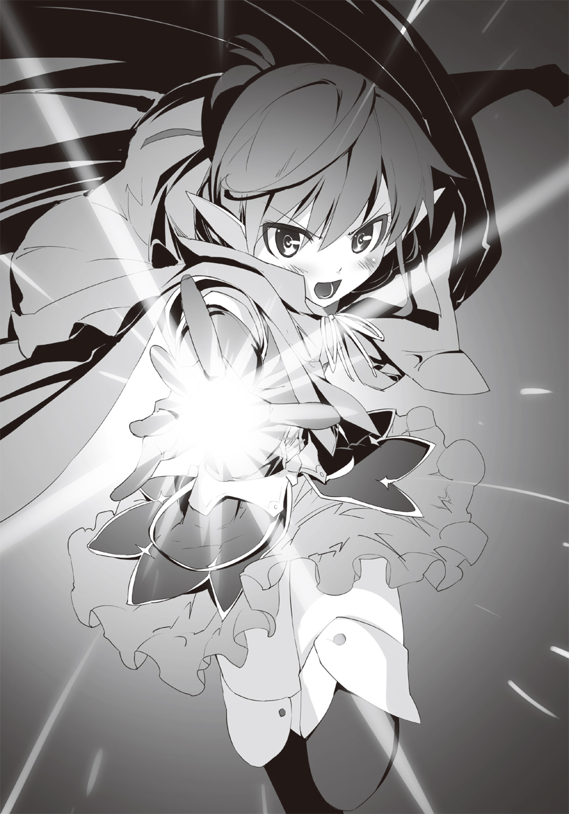
体勢を整えたオレに、アイリスが駆け寄ってくる。
「あ、ああ。なんとかな。しかし、アイリス、今のはもしかして......？」
問いかけると、彼女は頷いた。
「ああ。――私が使った【輝術】だ」
やっぱり、そうか。どうりで見覚えがあると思った。
輝術。それは、神族だけが使える技だ。
かつて魔法が世界に蔓延し、誰もがそれを手にし、醜い争いを始めた中。
後に神族と呼ばれる種族だけは汚らわしいものであると拒否し、決して使おうとはしなかった。
そのことによりアラムヴェルトは彼ら一族を己が尤も愛する者達であるとして、自らの力の一部を分け与えたそうだ。
神族はそのことを誇りに思い、今も魔法ではなく、輝術のみを自分達の戦う力として使っている。
「私は半神族だから、魔法も使うが......母親から教えを受けていて、幼い頃から輝術も扱うことができた」
「助かったよ。おかげであいつを殺さずに済んだ」
そう言ったオレにアイリスは愛らしい微笑みを返してくる。
「うむ。輝術は魔獣に憑いた魔力を取り払うことができるからな」
輝術は普通の魔法と違って物理衝撃という点ではまるで何の力も持たないが、ある一つの効果に特化していた。
それは、魔力を分解し、消滅させてしまうということだ。
いわば反魔法攻撃ともいうべきその力は、アラムヴェルトによる洗礼を受けた証でもあった。
それを利用すれば、さっきみたいに、魔獣の内部にある魔力だけを消して正気に戻すこともできる。
尤も、あまりに相手が強過ぎる場合、それも通じないことはあるらしいが。
「いかに魔獣とはいえど、元はただの生き物だ。そう易々と倒すことはできない。たとえ相手が恐ろしい獣だとしても、その命を救おうとするリョウマの優しい心を助けることができて、私も嬉しいぞ」
「いや、まあ、そんな大したことじゃないんだけど......」
夢見が悪そうだってだけだったし、な。うん。
「......でも、ありがとうな」
礼を述べると、アイリスは嬉しそうに頷いた。
「お、おい、お前......」
そこで、周りに集まってきた兵士の中の一人が尋ねてくる。
「さっきのすごい魔法......それに、そこの娘がさっきからお前のことを『リョウマ』と呼んでいたが」
慎重に、信じられないというようにして。
「もしかしてお前――いや、あなたは......『クロセリョウマ』様では？」
周囲にいる者達が、一斉にざわついた。
「そんな馬鹿な。クロセ様がこのようなところにいるはずがない。あの方はグレディスを打ち倒したあと、自分の世界に帰られたはずだ」
「ああ......いや、そうだ。リョウマ様だ。俺は一度、全てを終えてティタニアへ凱旋された時に、拝顔したことがある。なんで気づかなかったんだ！」
兵士達は互いに会話を交わしながら、次第に動揺が広がっていく。
「ほ、本当か......？ それならおれは、なんてことを......」
オレとアイリスから金を徴収しようとした兵士は震え始めた。
異世界から召喚され、皇帝を倒したオレのことは、世界的に知られていることだ。
故にこういった反応になっているのだろうが――ここまで効果があるとは。
「先ほどは窮地をお助けくださり、ありがとうございます！ そ、それに、無礼を仕出かしまして、大変に申し訳ありませんでした！」
すぐさま、兵士全員がオレに向かって頭を下げてきた。
「いや、別にいいですけど......ってか、謝るなら別の人がいますよね」
アイリスのことを暗に示すと、彼らは彼女に対して再び首を垂れる。
「......よい。もう過ぎたことだ。だが今後、このようなことは控えるように」
『はい！ 承知しました！』
兵士達は揃って敬礼した。
『ふん、わかりゃいーんだよ、わかりゃ。ただ反省が足りねーな。ここで全員、丸裸になって「ぼく達は塵同然の生き物です」って唱和しろよ』
「お前は余計なことを言うんじゃない」
鎧を軽くこづくと、マンゲツは不満そうに舌打ちする。
「......しかし、クロセ様、どうしてまたこの世界に？」
兵士の一人が不思議そうに尋ねてきた。
「ああ、いや――まあ、ちょっと事情がありまして。ティタニアの王都まで行きたいんですが」
「そうですか。わかりました。どうぞお通りください！ なんでしたら、国境を越えた先にある竜車もお貸ししますので！」
彼の言葉を皮切りにして、先ほどとは打って変わった、丁寧過ぎる言動で兵士達はオレ達を先導する。
「ありがとうございます。それじゃ、よろしくお願いします」
折角だから言葉に甘えることにして、オレはアイリスと共に兵士達を追った。
「......まあ、結果的に何とかなったからよかったけど」
一時はどうなることかと思ったぞ。
「アイリス、頼むから、今度暴走しそうな時は事前に教えてくれ」
心から願うようにそう言ったが、当の本人はきょとんとするばかりだった。
「暴走？ 私が？ 正当なことを口にしただけだぞ」
「それが時に危ないことを引き起こすこともあるんだよ。今のアイリスは帝国を救うって目的があるんだろ？ それを途中で中断する羽目になるような、軽はずみな行動は止めた方がいいと思う」
「......むう。そうか。そうだな」
ようやく自分の迂闊さに思い至ったのか、アイリスは頰を搔く。
「すまない。つい、ガルフレアのことになるとな......」
「まあ、それだけアイリスが帝国を大事に思っているってことだから、オレも責めてるわけじゃないんだけどな。庇える範囲ならオレが庇うし」
苦笑すると、彼女は何かを決めたように顎を引いた。
「ふむ。それでもリョウマに迷惑をかけるわけにはいかない。以後は気をつけることにしよう」
「そうしてくれると、助かる」
あの調子でずっとやられたら、さすがに身が持たなくなってくるかもしれない。
『いいんだよ、お嬢、この馬鹿くらい竜車竜のようにこき使ってやれよ』
マンゲツはそう言って笑った。
「お前、本当に余計なことしか口にしないな......」
扱い難いことこの上ない。これからこいつと上手くやっていけるのだろうかと、オレは深いため息をついた。
三年ぶりに訪れたティタニアの王都は、昔と変わらぬ賑わいを見せていた。
覚えのある景色が次々視界に飛び込んできて、オレは不思議な気持ちに包まれる。
たとえるなら、久方に田舎へ帰省した時のような感慨だ。
「おお。何か面白いものがあるぞ。リョウマ、あれは乾物屋と果物屋で合っているか」
アイリスが竜車の窓から外を覗き、オレに訊いてくる。
またか、と少し笑いながらオレは応える。
「ああ、そうだよ。本当、アイリスは見るもの全部が新鮮なんだな」
すると、彼女は目を輝かせながら言った。
「うむ。以前にここを訪れた時は、道中と同様、私だとバレて無用な混乱が起こらぬように竜車の窓を塞がれて外を見ることが叶わなかったからな。帝都とはまた違っていて、見ていると楽しい」
......なるほど。本当、色々と苦労してるよな、アイリスも。
「あれはなんだ。白い板のようなものが棒に刺さっていて、皆が食べているぞ」
「ミルクキャンディーだよ。牛乳を材料にしたお菓子だな」
「美味しいのか？ どんな味だ？」
「美味しいよ。甘い、かな」
「そうか......そうなのか......甘いのか......」
釘づけになっているアイリスは、全身から『あれ食べたいんですけど！』オーラを放出していた。
やっぱり、食欲旺盛なところがあるらしい。
「......あとで買って食べるか？」
「な、なに、いいのか!?」
がばっとこちらを振り向くアイリス。が、彼女はすぐに我を取り戻したような顔になって、咳払いした。
「......いや、やめておこう。私はこの国に遊びに来ているわけではない」
「じゃあ、オレだけ食べるわ」
「な、な、なんだと!? リョウマ、お前は帝国の皇帝となるのだぞ!?」
「うん。でも食べるわ」
「そ、そんなことが許されると思っているのか！」
「思ってるから食べるわ」
オレが深々と頷くと、アイリスは信じられないという表情をしたあとで、ふるふると生まれたての小鹿みたいに震えた。
そしてオレを指差し、
「ず――ずるいぞ、リョウマ！ お前はずるい！」
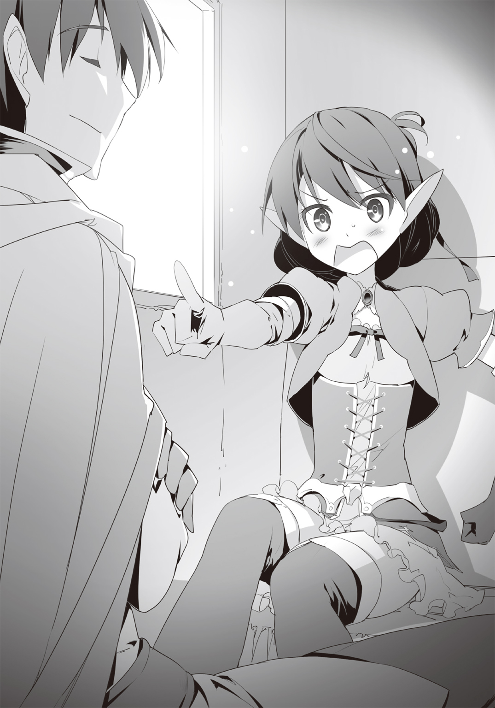
意味不明の叱責をしてくる。
「そうだよ。オレはずるいよ。だから食べるんだよ」
笑うと、アイリスは最大に頰を膨らませたあとで、こちらから顔を背けた。
「なら勝手にするがいい！ べ、別に私は羨ましくなどないからな！」
腕を組み、「全くリョウマは、なんという男だ......」とぶつぶつ呟き始める。
......あとでアイリスの分も買って、こっそり鞄に忍ばせておこう。
オレはそう思いつつ、口笛を吹いた。
そうこうしているうち、オレ達を乗せた竜車は大通りを走り、やがては街の深奥にある巨大な建物へと近づいていく。王都を睥睨するような位置に聳えるそれは、もちろん、言うまでもなく王様の住む城だ。
帝都の宮殿が西洋風だとすれば、こちらは北欧風といったところか。石造りの頑丈な風貌が、無条件に威圧感を与えてくる。
城門の前で竜車が停止し、御者台に座っていた兵士が降りた。
「何者だ」
警備をしていた者達のうち、一人が問いかけてくるのに、兵士は姿勢を正す。
「はっ！ 国境付近にてクロセリョウマ様とお会いし、ご本人の希望によりお連れした次第であります！」
「クロセ様だと......？」
警備兵の男は怪訝な顔をしたあとで、同僚達と視線を交わし、首を捻った。
「なにを言っているのかさっぱりわからん。クロセ様がこの世界におられるわけがないだろう」
「自分もそう思ったのでありますが......」
ここはオレが出た方がよさそうだ。アイリスを連れて竜車から降り立つと、警備兵達に声をかける。
「どうも、お久しぶりです」
警備兵達がこちらの方を見て――その瞬間、目を思いきり見開いた。
「ク、ク、クロセ様!?」「な、なぜあなた様がここに!?」「本物か!?」
まあ、そりゃ、そういう反応にもなるよな。
何しろオレ自身、予想だにしていないことだったんだし。
「ちょっとした事情がありまして。......よかったら、国王様にお会いしたいんですが」
「そ、そうですか......いや、驚きました。ですが、その、私どもの独断でお通ししていいのかが......」
警備兵の一人、赤髪の男が困ったような顔をした。
「おい、誰か。ロザリ殿を連れてきてはどうだ。まだ城内におられるはずだ」
鼻の頭に傷のある別の警備兵がそう言うと、数人が頷いて叫んだ。
「か、開門！」
鈍い音を立てて、城門の扉がゆっくりと内部に向かって開いていく。
「少々お待ちください！ 今呼んで参りますので！」
赤髪がそう言い残し、その場から急いで去っていった。
「......リョウマ、ロザリとは誰だ？」
「ティタニアの騎士団長だよ。修行のために世界中を巡って色んな奴と戦ったあと、傭兵としてこの国に来たんだけど、そのあまりの強さに王様から特別に抜擢されたんだと」
ティタニアにおいて、騎士、即ちお城勤めの兵士は国土防衛の重要な役目を持つことから、貴族と呼ばれる身分の高い人間にしかなることができない。
つまり、一介の傭兵が団長になることなどまずありえないことなのだ。
ロザリの力が如何に常識外れであるかということである。
「異世界に来たばかりのオレに剣の技術を叩き込んでくれた師匠でもある」
「ほう、リョウマのか......それは凄まじい存在なのだろうな」
『いや、逆に大したことなさそーだと思うぜ』
「お前はちょっと静かにしてろ。話がややこしくなる」
鎧を叩いて注意したが、マンゲツは『うるせー、ばか！』とまるで言うことを聞かなかった。
「マンゲツ、これから私達は大切な話し合いをしなければならない。悪いが、ほんの少しばかり大人しくしてもらえると助かるのだが」
『任せてくれ！ これから一言だって喋りゃしねえぜ！』
本当に調子いいな、こいつは......。アイリスの父親の形見でなければ、とっくにその辺へ投げ捨てているところだ。
オレはげんなりとしてため息をついた。
と、そこへ、先ほどの赤髪の警備兵が誰かを伴って戻ってくる。
「お待たせしました！ ロザリ殿を呼んで参りました！」
息を切らしながら報告してくる彼の後ろには、見覚えのある人物が立っていた。
間違いない。ロザリ――ロザリ＝ラヴェンダだ。
長い藍色の髪を後ろで縛った、非常に大柄な女性。猛禽類を思わせる鋭い目と、真一文字に引き結んだ唇が、その厳格な性格を表しているように思えた。
胸、それに両の肘と膝を板金製の鎧で覆っており、その背には鞘に包まれた、自身の身の丈ほどもあるような巨大な剣を負っている。
でも、彼女の外見を表現する上で外せないところは、もっと別にある。
それは髪の間から生えた、狼を思わせるような耳。
加えて、腰の辺りから伸びる、ふさふさの尻尾だった。
戦族――という、アラムヴェルトにおける種族の一つで、彼らは皆、体の一部に獣を思わせるような部位を持っている。
これは戦族の先祖が元々獣であったことに起因するらしいが、あくまでも説の一つであり、確かな文献は残っていないらしい。
「......驚いた。本当にリョウマか」
ぼそりと呟いたその声に、オレは手を上げた。
「久しぶり、ロザリ。元気だったか？」
ロザリは十八歳、つまりオレより年上なのだが、彼女はあまり敬語を使われるのが好きではないらしく、こうしてタメ口で通すことにしている。
「まあまあだ」
否定とも肯定ともつかない言葉が返ってきた。顔も無表情で、内心がいまいち読み取れない。
ただ、これはいつものことだった。
ロザリはあまり感情を表に出さない性格で、口数もかなり少ない。
でもその凜とした顔は、アイリスに負けないくらいに綺麗なので、ティタニアに彼女のファンは多かった。しかも男女問わずに。
「何をしにアラムヴェルトへ来た」
「いやオレが自分で来れるわけないだろ。呼ばれたんだよ」
「......ガーネットにか？」
ロザリの問いに、オレは首を振る。
「違う。彼女にだ」
一歩横に避けてから、アイリスを紹介した。
「何者だ」
短く訊いたロザリに向かって、アイリスは顔を上げる。
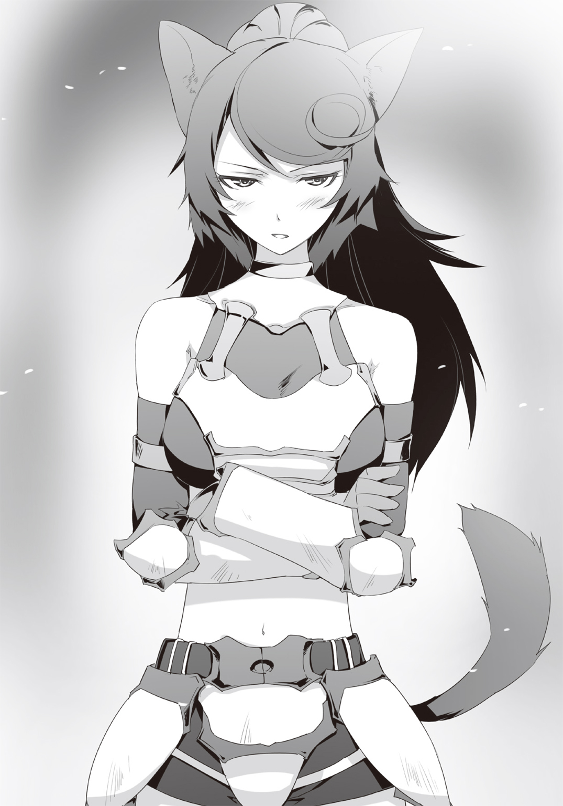
「申し訳ないが、ここで名乗るわけにはいかない。国王に取り次いでもらえると助かる」
下手にグレディスの娘だなんて言ったら、門前払いを喰らう可能性もあるしな。
「......リョウマの関係者か」
じろり、と睨むような目でこちらを見てくるロザリ。ただこれは、別に怒っているとか、不審がっているわけじゃない。彼女は顔がちょっと恐い上に、元々こういう風にぶっきらぼうな対応しかできないのだ。
「そういうことだ。オレからも頼むよ」
「そうか。わかった。いいだろう」
あっさりと受け入れたロザリに、アイリスの方が驚きを見せた。
「よ、よいのか？ 私が何者であるかわからないというのに......」
何か質問でもあると構えていたのだろう。でもロザリはそんな面倒な真似はしない。
「リョウマは仲間だ。そして弟子でもある。そいつが連れてきたのなら問題はない。信用しよう」
ぶつ切りに言ってから、彼女は踵を返した。
「ついてこい」
そのまま大股で歩き始める。揺れる尻尾が、彼女の雰囲気とは正反対に可愛らしく揺れていた。
「......本当に大丈夫なのか？」
心配そうに言ってくるアイリス。無理もないが。
「問題ないよ。ロザリはいい奴だ。行こう。――これが、帝国復興の第一歩だ」
元気づけるために、オレは、彼女の肩を叩いた。
ロザリがオレ達を連れていったのは、王城内にある謁見の間だった。
滑らかな石材が敷き詰められた広い部屋は、帝都にあるそれと構造的に似通っている。
違っているのは、敷かれている絨毯が赤いところと、玉座の後ろにある旗――ティタニアを象徴する太陽と獅子の紋章が縫われたそれ――が、垂れ下がっていること。
あとは、圧倒的に人が多いことだった。
玉座の左右には全身鎧に身を固めた騎士達が控え、部屋の壁にはずらりと武装した兵士達が並んでいる。
彼らはオレが室内に入ると同時に、にわかにざわめき、隣の人と言葉を交わし合った。
「おい......あれ」「ああ、クロセ様だ」「どうしてクロセ様がここに......？」「まさか帝国に何かあったんじゃ......」
それらを戒めたのは、強い音である。
「静まれ！」
一人の男が、手にもった杖を石畳に叩きつけたのだ。
厚手のローブを身に纏う、腰の曲がった神経質そうな老人だった。
「......ロザリ殿。一体これはどういうことだ。なぜクロセ様がそこにいる？」
静寂が戻ったのを確認した後、彼はそう尋ねてくる。
「モーヴェ。国伯っていう身分にある、王様の側近だ。他にもいるけど、あの人が一番信頼されているから、こういう場に出てくることが多い」
オレはアイリスに耳打ちした。
「こちらに訊かれても困る。私はリョウマが来たから案内した。それだけだ」
ロザリは答えると、用は済んだとばかりにオレ達から一歩引いた場所に下がる。
「あの――こちらから説明します。オレはまた、この世界に召喚されたんです」
言いながら、オレは前に出た。
「......なんですと。一体誰が、なんの目的で？」
「それは、ですね。ええと、国王様と会ってから話そうかと......」
「ふうむ。アルバート様に。しかし、今日の謁見は既に終了していまして。いくらクロセ様とはいえど、いきなりそう申されても――」
と、モーヴェが渋い顔をして口にしようとした断りの言葉を遮るようにして。
「国王様の、おな――り――ッ！」
突如として兵士の巨大な声が響き渡り、次いで、背後から激しい音が鳴った。
「リョウマ様ッ！」
呼びかけられ、振り返ったオレは――荒い足音と共に駆け寄ってくる人物を見る。
蜂蜜色の長い髪を腰まで垂らした女の子だ。
その顔つきは非常に可愛らしく、アイリスの美しさを女優だとすれば、彼女のそれはアイドルを思わせる親しみやすさを持っていた。
「ガ、ガーネット!?」
意外な人物の登場に、オレは声を上擦らせた。
薄桃色のドレスを身に纏い、長いスカートをたくしあげながら、その女の子――ガーネットは満面の笑顔を見せる。
「リョウマ様ッ！ リョウマ様ッ！ リョウマ様ッ！ リョウマ様――ッ！」
そして、勢いよく床を蹴ると、こちらに飛び込んできた。
「うわっ!?」
反射的に抱き止めると、オレの首に手を回し、その顔を寄せてくる。
「リョウマ様！ 一体、どうなされたのですか!? なぜアラムヴェルトへ来られたのですか!? リョウマ様ー！」
声に明らかな嬉しさを含ませて、ガーネットは問いかけてきた。
「い、いや、それがさ......」
答えようとしたが、答えられない。当たり前だ。これだけハイレベルな女の子が、心臓の音が伝わってきそうなくらい近くにいるのだ。っていうか胸が。ガーネットの平均以上に大きな胸が思いっきり当たってる！
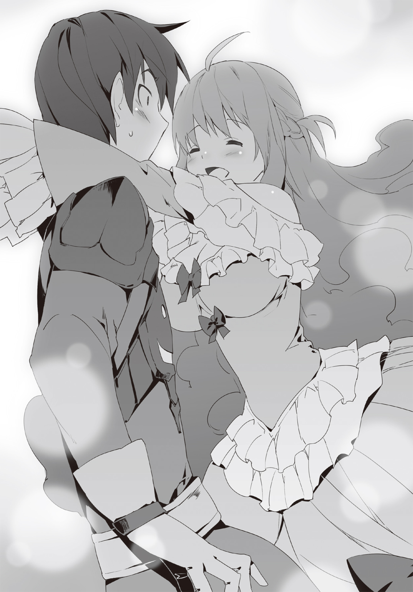
「姫様！ なんというはしたない！ お控えくださいませ！」
モーヴェが叱咤するような声を上げた。
そう。彼女の名はガーネット＝フルメ＝ヴェレイ＝ソレイユ。
正真正銘、このティタニア国の第一王女、つまりはお姫様だ。
「黙りなさい、モーヴェ。三年ぶりにリョウマ様にお会いできたのですよ！ 多少のはしたなさが、何ですか！」
負けじと言い返しながら、ガーネットは笑みを零した。
「ああ、この日をどれほど待ち侘びたことでしょう。リョウマ様......！ ガーネットはこの三年間、片時もあなた様のことを忘れはしませんでした！」
「あ、ああ、俺もだよ」
そういえば当時も彼女はある時から、こんな風にオレに積極的な態度をとってきていた。
その度に困惑したものだが、その辺りは全く変わっていないということか。
「嬉しいです！ リョウマ様！」
「ただ、あの、ごめん。さすがに照れるから、そろそろ......」
やんわりと離れるように伝えると、ガーネットは「そうですか......？」と残念そうに言ってから、オレを解放してくれた。
「彼女がティタニアの王女か......」
何やら虚を衝かれたような表情をするアイリス。まあ、気持ちはわかる。
「わたくしの部屋から、城門にやってくるリョウマ様のお姿をお見かけして、もしやと思い駆けつけてきたのです。まさか、本当にいらっしゃったなんて......」
手を組み合わせ、ガーネットはうっとりとしているような顔を作った。
「それもこれも、アラムヴェルト神のお導きですね！」
「......だといいんだけどな」
少々厄介な問題を頼もうとしている身としては、素直にうんとは返せないところがある。
「ところで、何故、リョウマ様がティタニアへ？ 確か元の世界に御帰還なされたはずでは......」
「ああ、いや、それなんだけど。っていうか、その前に、さっき国王様って言われてなかったか？ ガーネットが王様ってどういうことだ？」
オレの疑問に、ガーネットは「ああ、そのことですか......」と、そこで声を沈ませた。
「実はお父様が、流行り病にかかってしまわれて。わたくしが代わりに政務を担っているのです」
「え、そうなのか？ 大丈夫なのか？」
「はい。幸い、病に対して効果的な治癒魔導言語の組み合わせが見つかりまして。しばらく回復に時間は必要としますが、命に別状はないそうです」
それは何よりだ。オレ自身、親交のあった人物であるだけに他人事とは思えなかった。
「ですがベッドから起き上がれぬ身であることから、わたくしが代理を任命されました」
「そういうことだったのか......」
ティタニアの王様には、奥さんがいない。母親がいないのはガーネットもアイリスも同じだが、その理由は違っていて、オレが来る前に事故で亡くなってしまったのだ。
だから王様が倒れたとなると、代わりができるのはその子どもだということになる。
「あれ、でも、ガーネットには確か兄さんがいたよな？」
「はい。ですが父上は、わたくしに代理を任せる、とそう仰りました。わたくしも、てっきりお兄様が代理であるとばかり思っていましたが......」
ふむ。ガーネットの言う通り、順当にいけば長男が指名されるはずだ。
「ガーネットは優秀だ。政治のこともよくわかる。そこを認められたのだろう」
ロザリが端的に言った。なるほど。
「......そういや、三年前から色々、将来のために勉強とかしてたよな。それで、もう王様の代わりを務めてるのか。オレと同じ歳なのに、すごいよ」
オレも本を読むのは好きだけど、そこで得た知識を学校の授業とか、テストとか、必要なところに活かせた試しがない。
尤も、三年前、アラムヴェルトを旅していた時にはそれらが役に立ったこともあったのだが。
「そんなこと......リョウマ様に褒められては、照れてしまいます」
頰を桃色に染めて、ガーネットはもじもじと体を左右に揺らした。
「確かティタニアって、国民主体の政治をしてたよな。今もそうなのか？」
「はい。税金はできるだけ安く、その代わりに王族の贅を排して、できる限りこの国の人達が住みやすい環境を整えるように努力しています。わたくしも当然、そうしておりますよ」
素晴らしい考えだと思う。口で言うのは簡単だが、中々貫き通せるものじゃない。
ティタニアが四大聖国の一つとして数えられるほどに成長を遂げたのも、ひとえにそういった誠実さが影響して、世界中から人が集まってきたからかもしれない。
庶民から金を搾り取るだけ搾り取って、ちっとも還元しようとしないどこかの国の政治家に聞かせてやりたいくらいだ。
「そのせいで国の財政が逼迫しており、各国伯達が対処に追われているわけですが」
盛り上がっていたところで、水を差したのは、モーヴェだ。
「ともかく。......話を戻してよろしいですかな、クロセ様」
険のこもった声に、振り返って、オレは頭を搔く。
「あ、ああ、すみません。ガーネットが来たもので、つい」
「まあ、お気持ちはわかりますが。して、一体どなたがあなたをこの世界に召喚なされたのですか？」
モーヴェから投げかけられた問いかけに、オレの左隣に立ったガーネットが首を傾げる。
「どなたって......うちの者が召喚したのではないのですか？ 三年前――わたくしが、【異世界召喚】を使った時のように」
......そう。
ティタニアはオレが初めて呼ばれた国だ。
そして、オレを召喚するための魔法を発動したのが、ガーネットに他ならなかった。
彼女は、王女様であると同時に、世界でも屈指の魔導師なのだ。
オレにとっての武術の師匠がロザリであるならば、魔法の先生はガーネットである。
「何を仰いますか。三年前はあくまでも必要にかられて行ったこと。姫様も当然知っておりましょう」
渋い顔で、モーヴェが告げてきた。
「異世界召喚とは――本来、【禁呪】と呼ばれるもの。世界的に扱いを固く禁じられた魔法なのです」
その言葉に、ガーネットは眉をひそめる。
「確かにそれはそうですが......何かよんどころない事情があったのかと」
次いでオレの方を見て、
「では、どなたが禁呪によってリョウマ様をアラムヴェルトに？」
誰ともなく、そう尋ねた。
......さて。本番はここからだ。オレは空唾を呑み込んだ。
この世界――アラムヴェルトには、魔導言語の組み合わせによって、それこそ星の数ほどの魔法が存在する。
だがモーヴェが言ったように『封印された魔法』を示す【禁呪】の名を与えられたものはたった二つしかない。
その内の一つが、三年前、ガーネットが使った【異世界召喚】だ。
理由は、別の世界からアラムヴェルトにやってきた者には、強大な魔力が宿るからだ。
この世界において、魔力が強いとは即ち、大気中に漂うエネルギーを体内に取り込む許容量が大きいということになる。
魔法とは威力が強ければ強いほどにそれに見合った魔力の量を必要とし、足りなければ当然、使うことができない。
要するにコップが大きければ大きいほどたくさん水を汲めるように、魔力が強ければ強いほどにどんどん溜め込むことが可能で、それは転じて色んな魔法を使えることにも繫がるということだ。
そして異世界召喚された者は、魔力を吸収する器とでもいうべきものが、途方もなく巨大なのである。
そのデタラメさはオレ自身も体感していることだが、幻と呼ばれて使える者のいなかった強力な魔法でさえ、子どもの手遊びみたいな感覚で操れてしまうほどである。
これはどう考えても世界のバランスを乱すことだ。
もし色んな国が戦争のためにほいほい異世界からオレみたいな奴を呼び出し続けたら、アラムヴェルトはあっという間に滅び去ってしまう。
よって昔から異世界召喚の魔法を使用することは固く禁じられていた。
もし使えば世界的に非難の的となり、全ての国が敵となってしまうだろう。
でも、ティタニアは召喚を実行してしまった。
いや――そうせざるを得なかったのだ。
それには、どうしようもない理由があった。
「ガーネット。紹介したい人がいる。オレをこの世界に呼んだのは彼女なんだ」
オレは隣に佇むアイリスに、自分の前へ出るよう指示をする。
彼女は従ったあと、オレに視線を送ってきた。
オレが頷くと、人目を避けるように頭からフードをすっぽりと被っていたアイリスは、それをそっと取り払う。
「アイリス＝ナクナ＝フェルモント。――グレディス皇帝の、一人娘だ」
小波のように、周囲でどよめきが起こった。
ガーネットは表情を強張らせ、その場で硬直している。
「......ど、どうして、皇帝の娘がここに？」
しばらくしてからやっと、彼女は、掠れた声でそう言った。
「そのことについて、聞いてほしいことがある。ただ、できればガーネットとアイリスとオレ、三人で話したいんだ。......頼めるか？」
「なぜ姫様のみにする必要があるのですかな？ なにもやましいことがないなら、ここで話せばいいように思えますが」
思いきり怪しむようにモーヴェが眉をひそめた。無理もない。
だが、オレが説得を試みるより早く、ガーネットが言った。
「......よいでしょう。では場所を移し、三人で話し合いの場を設けましょう」
「姫様！ なりませんぞ！ 相手側が何を考えているかわかりません！」
モーヴェが注意するが、
「口を慎みなさい、モーヴェ」
短く、だが、重さに満ち満ちた口調でガーネットがそれを諫めた。
「目の前におわすお方をどなたと心得ます。なぜ憎き皇帝の娘と共にいるのかはわかりませんが......リョウマ様のなさることです。決してこちらを害するようなことはないでしょう」
「しかしですな、姫様......！」
「わたくしは、口を慎めと言ったはずです」
有無を言わせぬ口調だった。ガーネットの言葉にモーヴェは圧倒されるように黙り込む。
「......出過ぎた真似を致しました。ご随意のままに」
しばらくして、彼はようやくそう言うと、不満げな顔のまま頭を下げた。
普段は天真爛漫に見えるガーネットだが、いざという時には大の男でさえ怯ませる迫力と意志の強さを見せる時がある。
そこのところは、三年前と変わってないな。
「折角ですので、お茶の席を用意致しましょう。ですがリョウマ様、その前に少しお話ししたいことがあります。わたくしと二人で別室まで同行願えますか？」
「ん、それは構わないけど」
特に躊躇する必要もなかったので了承すると、
「ありがとうございます。ではフェルモント皇女はわたくしがお呼びするまで、別室にて待機をお願い致します」
微笑みを浮かべながら、ガーネットは静かに立ち上がった。
ガーネットに連れられてやってきたのは、彼女の私室だった。
その内装は三年前と変わらず、豪奢だが派手過ぎない。また設置されている家具も生活に必要最低限なものだけに絞られ、無駄なものは何一つなかった。
だがその中において一つだけ、テーブルに置かれた可愛らしい小さなペンギンのぬいぐるみが目につく。
それは、オレがこちらの世界に来る際、持ってきたものだ。
正確に言えば召喚される直前、たまたまゲームセンターのクレーンゲームで手に入れたものを、ポケットに仕舞っていたのである。
「これ、まだ持ってくれてたんだな」
懐かしく思いながらぬいぐるみを手に取ると、扉が閉まる音と共に、背後からガーネットの声が返ってきた。
「当然です。リョウマ様がお別れの際にくださったものですから。どんな国宝よりも価値があるものです」
「そんな大袈裟なものじゃないけどさ」
単に、この世界からいなくなる前、少しでもガーネットに自分のことを覚えておいてほしかっただけのことだったのだ。
「それにしても......本当、久しぶりだよな――」
そう言って、振り返ったその時。
オレは、温かな感触に包まれた。
ガーネットが自分のことを抱きしめているのだということに気づくまで、少し時間がかかってしまう。
「......ガーネット？」
「本当に......お久しゅうございます。まさか......まさか本当にリョウマ様とまた会えるなんて」
オレの胸に顔を埋めながら、ガーネットは嚙み締めるように言った。
「どれほどこの時を待ち侘びたことでしょう。リョウマ様は別世界の人間。思い煩っても仕方ない。だから忘れよう。そう何度も自分に言い聞かせました。けれど......どうしてもできませんでした」
その声に、少しずつ、嗚咽が混じっていく。
「朝目が覚めた時......政務の途中、ふと外を眺めた時......お茶会の時......夜眠る時......様々な場面で、ふとリョウマ様のことを思い出してしまうのです。もう一度お会いしたい。会ってお話がしたい。その想いが、いつまで経っても消えてくれませんでした」
ガーネットは、脇目も振らず、泣き続けていた。先ほどまで、一国の王女として毅然とした態度を取っていた女の子とは同一人物には思えない。
だけどそれが、彼女の耐えてきた辛さを何よりもオレに伝えた。
「......ごめんな。ガーネット」
だからオレは謝りながら、ガーネットの艶やかな髪を、ゆっくりと撫でる。
オレ自身の決断で彼女を苦しめてしまったことが、こんなことで償えるとは思えなかったが。
それでも、やっぱり、そう言うしかなかった。
「いいえ。リョウマ様は何も悪くありません。ただ......ただ、わたくしは嬉しくて......」
目元を拭いながら、ガーネットはこちらを見上げてきた。
潤んだ瞳にオレの姿を映しながら、彼女は続ける。
「これは、夢ではないのですね。リョウマ様は、わたくしの目の前にいるのですね......？」
「......ああ。夢じゃない。オレはもう一度、この世界に来た」
オレが答えると、ガーネットは何度も頷いた。そうすることで、今目の前で起こっていることが幻想でないことを、強く確信できるというように。
「リョウマ様......なぜ皇帝の娘と共にいるのかも気にはなりますが、それはあとでお話ししていただきたく存じます。その前に......一つだけ、よろしいでしょうか」
次いで、ガーネットはそう口にした。
彼女の頰が仄かに赤く染まり、声が囁くようにか細いものとなる。
「あの時のお返事を――聞かせてはいただけませんか？」
自分の心臓が、大きく高鳴るのを感じた。
あの時の返事ってなんだっけ、なんてとぼけるほど、オレも野暮じゃない。
わかっている。三年前、別れる時にガーネットが訊いてきたことだ。
――リョウマ様は、わたくしのことを、どう思っておりますか？
あの時は有耶無耶にしてしまったが、この場でまた同じことをするわけにもいかないだろう。
機会があれば今度こそはっきりと告げると、オレは決めたのだから。
だから――。
「そ、そうだな......その......」
言わなければいけない。そう自分を急かした。早く。早くしろ。男だろ。
だがオレの中にいるもう一人の自分がそれを制した。待てよ。心の準備ってものが必要だ。そんなにパッと想いを告げられるほどオレは器用じゃない。
躊躇している場合かよ、とオレが叱咤する。ガーネットは三年も待ったんだ。情けないとは思わないのか。
わかってるさ、と違うオレが言い訳をした。だけどいざ現実が目の前に迫るとそう上手くいくもんじゃない。元の世界じゃ、女の子に告白すらされたことがなかったんだぞ、と。
オレとオレが激しい論争を繰り返し、いつまで経っても決着がつかない。
どうする。どうする。どうする！
「リョウマ様......」
不意に、ガーネットが待ち切れなくなったというように、オレに寄りかかってきた。
「っと――？」
その反動でふらつき、オレは、後ろへと倒れてしまう。
そこには丁度よくベッドがあったため、二人とも怪我はしなかったが――。
「......うっ」
オレは、ガーネットに圧し掛かられるような体勢になった。
オレの体に彼女の豊満な胸がぴったりとくっつくと、それは重みによって形が変化し、ドレスから覗く谷間を押し上げ、視界を占領する。
「あ――も、申し訳ありません」
恥ずかしそうに少し離れ、ガーネットはその部分を手で覆った。
しかし、彼女はそれ以上動かず、こちらを半ば押さえつけるような形のまま留まっていた。
それはまるで、はっきりさせるまではこちらを放さないという、彼女の強い意志を表しているようだ。
「い、いや......ええと......」
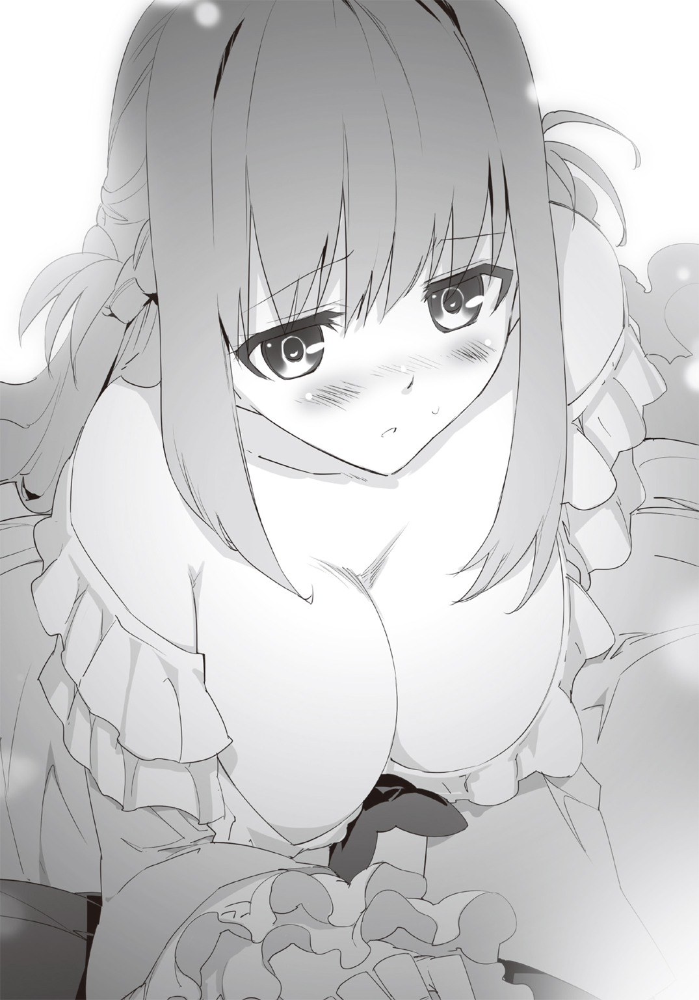
ドキドキとバカみたいに高鳴る心臓を静めたいと思うのに、全く言うことを聞いてくれなかった。
頭の中がぐちゃぐちゃで、上手く言葉が見つからない。
行くんだ、というオレと。やめておけ、というオレ。
その二人が同時に迫ってきた。
オレは散々迷って、悩んで、緊張に唾を飲み込んで。
ようやく――決断する。
「ガ、ガーネット、その、オレは......」
ここでやらなきゃ、絶対に、後悔すると思ったからだ。
ガーネットの肩を摑み、彼女を押すようにして起き上がる。
「オレは、お前のことを......！」
そのまま、勢いに任せて告げようとしたのだが。
「............」
「......リョウマ様？」
急に黙り込んだオレを、ガーネットは不思議そうに見つめた。
オレは視線を下に向けたままで、固まる。
そこには、自分が身に着けた漆黒の鎧が存在していた。
「......しまった。こいつのことを忘れていた」
人格の宿りし魔法の鎧。通称、マンゲツ。
驚異的な防御力を誇り、ヤンキーみたいな性格の悪さを除けば役に立つのだが。
この場においては非常に邪魔な存在だった。
「ちょっとガーネット、ごめん」
断りを入れてからベッドを降りて、部屋の隅に移動し、鎧を外そうとした。
しかし、どうやっても体から離れてくれない。
「あれ......あれ？」
困惑していると小さな声で話しかけてくるものがあった。
『外さねーよ、バーカ』
こ、この野郎！
「お前な......今、大事なところなんだよ。大人しくしといてくれよ......！」
小声で話しかけると、マンゲツは、にやにやといやらしそうな笑みのような形に鎧の模様を変化させた。
『おーおー。愛しいあの子に告白するから邪魔しないで頂戴ってか？ そりゃまあ、しょうがねえよなあ。男の一大事だもんなあ。そりゃあ、おれがいるのは無粋ってもんだ』
「そ、そうだよ。だからだな――」
『だが生憎、おれは限りなく無粋なんだよ、ぶははははははははははは』
こいつ、絶対、ぶっ壊す！
「お前、いい加減にしろよ、この......くそ......この！」
意地でも外そうとするが、全く思い通りにはいかなかった。
思わぬところでこんな障害が発生するとは......なんでこうなる！
「あの、リョウマ様......？」
ガーネットが不審げな声で問いかけてきた。
そりゃ、いきなり端っこに行って何やら独り言を口にしながら鎧と格闘しだす奴がいたら、誰だって怪しく思う。
『いいじゃねえか、告白しちゃえよ。おれが見届けてやるよ。そんであとで街に戻った時、そのことを余すことなく住民皆に詳しく話してやるよ。うへへへへへ』
なんて清々しい鬼畜なんだこいつは。
「......リョウマ様、どうされたのですか？ その、お返事の方は......」
ガーネットが後ろからオレの服の裾を握り、遠慮がちに言ってきた。
うう。言いたい。言いたいけど、言えない。ああ、もう！
「――ごめん、ガーネット！」
仕方なく、オレは振り返って、深々と頭を下げた。
「もうちょっとだけ待ってくれ。必ず、いつか答えるから。頼む！」
失望されても仕方がない、最悪の台詞だ。
終わったかもしれない。オレは、そんな暗澹とした気持ちに暮れた。
だが、
「......そうですか。わかりました。どうかお顔を上げてください」
ガーネットはいつもと変わらぬ、優しい口調でオレにそう告げた。
おそるおそる、視線を上げていくと――彼女は、慈愛に満ちた微笑みを浮かべている。
「わたくしの方こそ、急かすような真似をして申し訳ありません。大切なことです。どうぞ、リョウマ様の御随意のままに」
「......ああ。ありがとう」
こちらの都合で勝手なことを言ったのに、それを許す彼女の心の広さに、オレはただ、ただ、忸怩たる思いを抱いた。
「それでは、あまりフェルモント皇女をお待たせするわけにはいきませんね。共に参りましょう、リョウマ様」
優雅な仕草で身を翻すと、ガーネットはオレを先導しながら歩いていく。
「......わたくしはいつまでもお待ちしております。その時にこそ、こちらの気持ちもお伝えさせていただきますから」
こちらに顔を向け、そう言って笑うガーネット。
「ああ。......わかった」
オレは返しながら、大きくため息をついた。
......近いうち、チャンスが巡ってくるといいけどなあ。
用事が済んだあと、合流したオレとアイリスは、城の一角にある大きなバルコニーに通された。
そこで香りのよい紅茶と様々なデザートが振る舞われ、その豪華さに状況を忘れて思わず喉を鳴らすと、対面に座ったガーネットがくすりと笑みを漏らす。
「どうぞご遠慮なく。リョウマ様のお口に合えばよいのですが」
お言葉に甘えて、本当に遠慮なくいかせていただく。
果実のタルトやスコーンなんかを、オレは口いっぱいに頰張った。うん、美味い。
「......相変わらず、甘いものがお好きなのですね。三年前もそうでした」
ガーネットがオレの方を見て懐かしそうに言った。
「そうだな。親父には男なんだからもっと牛丼とか餃子とかをがっつりいけって言われるけど、どうにもオレはケーキとかの方に惹かれるよ」
「リョウマ、ギュウドンやギョウザとはなんだ？」
隣で紅茶を飲んでいたアイリスが不思議そうに尋ねてくる。
「リョウマ様の世界にある食べ物ですよ。動物の肉を甘辛く煮て穀物の上に載せたものと、小麦粉をこねて作った皮で野菜やひき肉を混ぜたものを包み込み、焼いたり、煮たり、揚げたりしたもの。そうですよね？」
「ああ、そうだな。よく覚えてたな」
三年前、ガーネットに説明したのは確か、一度か二度だったと思うけど。
「リョウマ様のことなら何でも記憶していますよ。何せ三年前、長い時間をずっと共に旅してきたのですから」
嬉しそうに言って、ガーネットは続けた。
「お食事の好みから、ご趣味、歩く時の癖、剣の振り方、元いた世界でよく遊んでいた『げぇむ』のことやそれに......ど、どのような女性を好まれるのかも」
「......え。オレ、そんなこと言ったっけ？」
さすがにガーネットに対して、そこまで明け透けに話したことはないような......。
「リョウマ様のことを見ていればわかります！ だってリョウマ様、通りすぎる女性の胸を特に注視していて......」
「えええええ!?」
バ、バレてたのか!?
「違う！ 違う違うあれは！ 別にそういうことじゃ！」
「お隠しになられなくてもいいんですよ。わたくしはリョウマ様に関することであれば、どのようなことでも受け入れるつもりですので。......運がいいことに、わたくしもそれなりに成長したことですし」
言って、豊満な胸を主張するように体を反らすガーネット。
その拍子に、先ほど間近で見たドレスの谷間が目に飛び込んできて、オレは慌てて視線を逸らした。
「そうか......リョウマは胸の大きな女を好むのか......」
だがその先には、心なしか意気消沈するように顔を俯けているアイリスがいる。
「い、いや、アイリス？ 別にオレは胸が大きければそれでいいとかそういうことじゃなくて、おっぱい全てを愛しているわけで、ないならないなりに魅力があると思っているような、そんな懐の大きいところも持ち合わせているわけで――」
いやなに言ってんだオレは。わけがわからなくなってきたぞ。
「わ、私に気を遣わずともよい。その、別に、その程度、なんでもないことなんだからな！」
完全に強がっているように返してくると、アイリスは無理矢理前を向いた。
「リョウマがそんなことで人間を判断するような男ではないとわかっている。だから、大丈夫なんだ！」
ガーネットは、アイリスの気丈な態度にむっとしたような顔をする。
その時、オレは何故か彼女の両目に、燃えるような対抗心が宿ったように思えた。
「もちろん、それはそうです。で、ですが......わたくしが知っているのはそれだけではありませんよ？」
頰を染め、恥ずかしそうにしながらも、ガーネットははっきりと言う。
「リョウマ様のことについては......その、体についても、お互いに見てしまった仲でもあります」
「ちょ......うおい！ ガーネット！」
思わず派手な音を立てて立ち上がってしまった。それはあれだろ、今言わなくてもいいことだろ!?
「体を？ リョウマと？ どういうことだ？」
不思議そうな顔をするアイリスが詳細を問うようにこちらを見るが、答えられるはずもなかった。
「フフ、内緒です。でも、リョウマ様のことを、文字通り隅々まで見知った人間は、この世界広しといえど、わたくしだけでしょうね」
何故か勝ち誇ったような表情で、ガーネットは口元に手を当てる。
「......まあ、どのような過程があったのかはわからないものの、昨日今日、リョウマ様と出会ったばかりのフェルモント皇女がご存じないのは無理ありませんが」
どこか挑戦的なその視線に対して、アイリスは自分だけ仲間外れにされた気持ちなのか、やや不満そうな顔をした。
ただそれでも、彼女は、改めて思い直したように頷く。
「......それは、そうだな。しかし私は、リョウマに何度も助けられた。彼の優しさは知っている。今はそれで十分だ。これから徐々に知っていけばいい」
「......徐々に知っていく？ ということはこれからもリョウマ様とご一緒されるということでしょうか？」
「そのつもりだ。彼も了承してくれた」
頷くアイリスに、ガーネットは慌てたようにこちらを見た。
「リョ、リョウマ様？ どういうことですか？」
「いや、色々と事情があってな......」
さて、どうやって切り出せばいいのか。そう悩んでいるうちに、ガーネットは少しずつヒートアップしていく。
「どのような事情があれば、かつての敵国を率いていた男の娘とこれからも共に旅をすることになるのです!?」
「だからだな、ええと」
「わ、わたくしの知らないところでどのような密約が為されたというのですか!?」
密約て。ガーネット、何か激しく誤解をしていないか、お前。
「フェルモント皇女！ リョ、リョウマ様と旅をされるというのであれば、そのお世話をなされる技量をあなたは持ち合わせているというのですね!?」
「技量？ どういうことだ？」
きょとんとして首を傾げるアイリス。
「先ほど言ったようにリョウマ様のお食事の好み等だけに止まりません。いつ起床なさるか、どれくらいの距離を移動されればお疲れになられるか、就寝なされる時は横向きか仰向けか、そういったことまで把握されているのかと訊いているのです！」
机に手をつき、ガーネットが立ち上がった。
「ちなみに私は、全てを把握しております！」
「把握してたの!?」
それは初耳だぞ！
「さ、さすがにそこまでは私もわからないが......知っておかなければならないものなのか？」
「当然です！ リョウマ様は世界をお救いになられた英雄。そのお方のお世話をするのであれば、その程度は最低条件です！」
動揺するアイリスに、ガーネットが怒濤のごとく迫る。
「いや別にそんなことオレは望んで......」
「リョウマ様は少しお静かに！ 今はフェルモント皇女と話しているのです！」
「あ、はい！」
まずい。皇帝と戦った時より怖くて何も言えない。
「確かに、私はそこまでリョウマのことを知らない。だが、必要だというのあれば、ソレイユ王女のようになれるよう努力したいと思う」
押され気味でありながらも、かろうじて対抗するアイリス。
「フッ......果たしてあなたにできるでしょうか？ リョウマ様のことを誰よりもお慕いしているわたくしでさえ困難を極めたというのに」
無駄に上から目線だな、ガーネット。
「......確かに一日の長はそちらにあるだろう。だが私とてリョウマに協力を要請した身。気概では負けない！」
アイリスも何故か物凄くやる気を出していた。
「リョウマに関するありとあらゆることを、いずれ、必ず、全て知り尽くすことをここに宣言する！」
するなよ。聞きようによっては恐いよ。
「面白い......ですがいくら情報を知りえたところで想いがなければ何にもなりません」
ガーネットは言って、その頰を染めた。
「わ、わたくしは、リョウマ様が求めるのであればどこまででも応える所存にあります！ そ、そう、その、あの、リョウマ様ご自身のお体を満足させることであってもです！」
なにを仰っているんだ、ガーネット！ ちょっと混乱してないか!?
「あなたにその覚悟があるのですか!?」
「リョウマの体を満足させる......？ 意味はわからないが、挑戦されては受けざるを得ないな」
胸に手を当て、アイリスが告げた。
「私もまた、リョウマのどんな望みも受け入れてみせよう！」
みせるなよ！ オレの方がなにか居心地悪くなってくるぞ!?
『なんでこんな豚にお嬢だけじゃなく、ティタニアの王女まで......世の中間違ってるぜ。どっちもちょっと冷静になった方がいいんじゃねえか？』
オレにだけ聞こえるような小さな声で、マンゲツ。口調は気に入らないが、内容は割と同意だ。二人とも落ち着いた方がいい。
「......あー、ガーネット？ アイリス？」
「なんですか!?」「今大事なところだぞ、リョウマ！」
ステレオで怒るなよ。
「いや、話の途中で悪いんだが。そろそろ本題に入らないか？」
このままだと、延々、言い争っている気がする。
「本題？ どちらがリョウマ様のお世話をするに相応しいか、ですか？」
「いや変わってる変わってる」
きょとんとした顔でずれたことを言うガーネットに、オレはため息をついた。
「オレがアイリスと一緒にここへ来た目的だよ」
「あ。......そ、そうでしたね。失礼しました」
ようやく思い出したような顔で、ガーネットは頰を赤くして座り直す。
「私もつい夢中になっていた。......すまない」
アイリスもまた反省したように頰を搔いた。
「いや、まあ、いいんだが。......とりあえず、話してもいいか？」
「はい、どうぞ、お願い致します」
ガーネットが一礼するのに、オレは咳払いをした。
深呼吸を繰り返し、準備を整えたあとで――口を開く。
「ガーネット。アイリスがオレを召喚したのは、ある頼み事があったからだ」
「頼み事、ですか......？」
「ああ。そしてオレは、それを受け入れた」
「......それは、どのようなものなのですか？」
果たしてどんな反応が待っているのか。
やや緊張しながらも、オレは再び口を開いた。
「帝国ガルフレアが復興するまでの間、オレに新しい皇帝になってほしい。――そんな内容だ」
場に、静寂が訪れる。
ガーネットは、息を呑むような表情を見せていた。
そのまま、現実を受け入れるのに時間がかかっているような沈黙が流れる。
やがて、
「ど......どういうことですか？ リョウマ様」
ガーネットは、ようやくそれだけを言った。
「聞いてくれ。帝国は皇帝が倒れた今、アイリスの手で、平和な国に生まれ変わろうとしてる。もう以前のようなことはしないはずだ。だから、四大聖国それぞれに協力してもらって国を立て直したいんだよ」
「な、何を仰っているのですか、リョウマ様！」
ガーネットが、首を振る。
「帝国が生まれ変わる？ 平和な国に？ ありえません！」
予想していた返答だった。だから、オレは更に言葉を続ける。
「本当なんだって。グレディスとアイリスは全然違うんだ。彼女は噓をついてない。だから俺も協力をして、彼女と一緒に世界を巡ることにしたんだ」
「一体どうされたのですか、リョウマ様。まさか、帝国がわたくし達をどれほど苦しめたかお忘れになったと？ グレディスの血を引いている以上、そこにいるフェルモント皇女も、同じような人間であるはずです！」
ガーネットは憎しみに満ちた眼差しで、アイリスを睨みつけた。
「し、信じてくれ、ソレイユ王女。私は、父上の過ちをもう二度と繰り返すまいと、そのための国作りを――」
「黙りなさい！」
一喝したあと、それまであった年相応のあどけなさとは打って変わった厳しい態度で、ガーネットは続ける。
「あなたの父親がどれほどの愚行をしでかしたと思っているのですか。そのせいで世界中のあらゆる種族が苦しみ、死に続けたのですよ？ もし帝国が元のように復興などしたら、また同じことが繰り返されるだけです」
怒りを表すようにその身を震わせて、
「あなたもまた、グレディス皇帝のように力を求めるのでしょう？」
ガーネットは、喉奥から絞り出すように叫んだ。
「【魔神契約】という――最大の【禁呪】を使って！」
「ちょっと待ってくれ、ガーネット！」
「リョウマ様！ この女はあなたを狡猾に騙し、また世界の覇権を握ろうとしているに違いありません！ 惑わされず、真実を見抜く目を持ってください！」
ダメだ。聞く耳を持たないとはこのことだ。
「ソレイユ王女、どうか気を静めてほしい。私は決してそんなことは......！」
「誰か！ この汚らわしい者を追い出しなさい！ 見ているだけで吐き気がします！」
頑として自らの主張を譲らず、アイリスの意見を無視すると、ガーネットは命じた。
するとバルコニーに続く部屋の奥から、ロザリが現れる。何があってもいいよう、念のために傍で控えていたのだろう。
「ま、待ってくれ！ ロザリ、ガーネット、話はまだ終わってない！」
オレは制止の声を上げたが、ロザリはそれを無視し、アイリスの腕を摑んだ。
そして、引きずるように入り口へと歩き始める。
「頼む、聞いてくれ、ソレイユ王女！ 私は......私は！」
必死で声を上げるアイリスだったが、抵抗することもできず、そのまま退場していった。
「全く......わけがわかりません」
ガーネットは不愉快そうに言ってから、オレの方を見てくる。
「リョウマ様、今までに何があったのかは、これからゆっくりと聞きます。大丈夫ですよ。あなたは何も悪くありません。あの女が、リョウマ様の優しい心につけ込んだだけなのです」
「......そんなわけあるかよ」
面倒事が起こることはある程度、覚悟していた。
でも、ここまで頭から拒絶されるとは。
オレは、腹の底からこみ上げてくる感情を堪えきれなかった。
「そんな酷い奴が、護衛一人つけずに、オレと二人だけで敵国に乗り込んでくるかよ！」
「......リョウマ様？」
「ガーネット。皇帝を憎む気持ちはオレにだってわかる。だけど、それはアイリスには関係のないことだ。それなのに話すら全然聞き入れないなんて、酷過ぎるだろ!?」
ガーネットの方を向き、オレは声を枯らして吼えた。
許せなかった。アイリスのことを何も知らず、彼女のことを否定したガーネットが。
たとえガーネットがかつて共に戦った仲間――それ以上の存在だとしても。いや、だからこそ。
オレの信じたアイリスを、彼女もまた、信じてほしかった。
グレディスの娘としてではなく、一人の人間として相対してほしかったのだ。
「......悪い。オレはアイリスのところへ行く」
「で、ですが、リョウマ様、あの女は......！」
「彼女には今、味方がオレしかいないんだ。――じゃあな」
言い残してから、オレはアイリスを追いかけるために走り出した。
後ろから、ガーネットの制止する声が聞こえてくる。
でも――それに従うつもりは、なかった。
「ちょっと言い過ぎたかな......」
アイリスと共に城の外に出たところで、オレは背後を振り向く。
つい頭がカッとなって、心のままにガーネットを非難してしまった。
しかし啖呵を切って出てきた手前、のこのこと戻っていくわけにもいかない。
結局――ガーネットに大切なことを伝えられなかった。
それが、心残りだ。
ただ、やってしまった以上は仕方がない。思考を切り替えることにしよう。
いつまでも後悔して、ぐじぐじと引きずっているよりは、そちらの方が建設的だ。
「すまない、リョウマ。私のためにソレイユ王女と仲違いをしてしまって......」
オレの声に無念の響きを感じ取ったのだろう。隣にいるアイリスが、シュンとした様子で項垂れた。
「い、いや、気にするなよ。どっちにしろ、あの様子じゃ協力を受け入れてもらえそうになかったしさ」
正に、取りつく島もないといったところだ。
『情けねぇなぁ、てめえ。それでも世界を救った英雄かよ？』
それまでアイリスの願い通り、沈黙を貫いていたマンゲツが唐突に口を利いた。
『大体、女の一人くらい、なんで帰る前にこましとかねえんだよ。姫だろうがなんだろうが、なんでも命令を聞くような奴に仕立て上げときゃ、苦労はいらなかったんだよ』
「お前、ちょっと下品過ぎるぞ......」
完全に言っていることがカタギじゃない。
「マンゲツ、こますとはなんだ？」
『おう、それはだなぁ』
「言わんでいい」
無垢なアイリスに余計な情報を吹き込むな。
「しかし困ったな......ティタニアが駄目だとすると、次の国に行くしかないか」
「うむ。そうだな。残念ではあったが、仕方ないだろう」
「せめて、【リベリオン】だけでも借りておければよかったんだが」
呟いたオレにアイリスがきょとんとする。
「りべりおん？ なんだ、それは」
「オレが三年前に使っていた剣の名前だよ。魔法がかかった特殊な造りをしていて、使い手の魔力の強弱に比例して力を発揮するんだ」
『ああ、あのケッタクソ悪い武器かよ。おれの防御壁でも耐えられなくて苦労したぜ』
マンゲツは露骨に嫌そうな声を出した。
「他にもちょっとした別の能力とかもあって、旅をする上では結構役に立つものだったんだけど......」
「それがこの城にあるのか？」
「ああ。元々はオレのために四大聖国の技術者達が結集して造ってくれた物だったんだが、さすがに元の世界に持って帰るわけにはいかなかったからな。ガーネットに預けたんだ」
これから長い旅になるというのなら、是非とも手元に持っておきたかったのだが......。
あの調子では、こちらに渡してくれそうにない。
「まあ、諦めるしかないか。次の国は上手くいくといいんだけどな」
「......そうだな」
意気消沈といった感じでアイリスが息をついた。
「本当に――上手くいけばいいが」
「......おいおい。元気出せよ。まだ始まったばかりだろ」
こんなところでいつまでも躓いて立ち止まっている場合じゃない。
そう思って景気づけたのだが、アイリスは弱々しい笑みを浮かべるだけだった。
「すまない。諦めたわけではないのだが、改めて、父上の行いによる影響がいかに大きなものであったかと嚙み締めていたのだ」
ああ......そういうことか。
「そうだな。ガーネットは別に頑固ってわけじゃない。大概のことは話せばわかってくれる。それがあそこまで拒絶したってことは......」
それほど、グレディスの所業が許されざるものであったということだ。
「魔神契約――か」
その爪痕は、三年経った今でも、世界に癒されない傷となっているのかもしれなかった。
......アラムヴェルトに存在する二つの禁呪、その一つ目に当たるのが、異世界召喚だ。
そして残されたもう一つは――神話に残る忌まわしき存在【魔神】の封印を解き、その力を授かることだった。
以前に聞いた話では、今からずっとずっと前、それこそ気の遠くなるほどの遙かな昔。
アラムヴェルト、つまり神様はこの世界を創った時、最初に光を満たしたという。
それは全ての命を育むために必要なものだったけど、そのせいで植物や動物、人間が生み出された時、一緒にあるものも現れた。
それは、影だ。
全ての生き物の傍に寄り添い、常に背後からついて回る闇。
そして、やがてそこから――魔神と呼ばれる存在が産声を上げた。
魔神はアラムヴェルトと同じ超常の力を持っていたそうだ。
それ故、アラムヴェルトが人々を導くためにあらゆる知識を授けたのと同じように、魔神もまた人々にあるものを与えた。
魔神はこの世に自らの欠片を撒き散らし、扱う術を皆に教え込んだ。
それこそが、魔法。
現在、魔導言語と呼ばれている呪文は、元々魔神の使っていた言葉だったと伝えられている。
つまり魔法を使うために必要な魔力とは、そのまま、『魔神のもっていた力』という意味なのだ。
無論、そんなわけだから、魔神自身も強力な魔法を幾つも扱うことができた。
でもそれが原因で、彼（というようなものだったのかも定かじゃないが）は調子に乗ってしまう。
アラムヴェルトを倒し、自分自身が世界の神様になろうとしたのだ。
だけどいくら強いといっても、魔神もまたアラムヴェルトがいなければこの世にいなかった存在。
当然返り討ちにあい、神様の力によって、二度とそんなことができないように地の底へと封じられた。
ただ死んだわけじゃないから、魔力は世界に残ったままで、人間達も変わらず魔法を使うことができた。
そして、それから何百年も経った、ある時。
一人の魔導師が、長年の研究の末、ある魔法を開発した。
それは封印された魔神を現世に蘇らせるという、とんでもない代物だ。
ただし全てではなくて、その精神体――つまり魂のみに限定されるものだった。
魔導師は自分の肉体を差し出し、乗っ取らせることで、魔神の力を使うことに成功する。
魔神と融合した魔導師は多大な魔力を有するようになり、様々な魔法を自在に使うことが可能になって、正しく世界最強となった。
でも、世のお定まりのように、人間がそう簡単に神様の力を扱いきれるわけがない。
案の定、魔導師は魔神に意識を乗っ取られてしまって、操られるまま暴走し始めた。
色々あって止めることはできたらしいが、以降、その魔法は危険なものとして使用することを固く禁じられてしまう。
【魔神契約】と名付けられたものは、【異世界召喚】と並んで、世界の禁呪となった。
それを再び発動させたのが、かつての皇帝グレディスだ。
彼は魔神契約を行うために必要な魔導言語が書かれた本をどこからか入手して、己の欲望のために実行した。
そのあとのことは、この世界の人間なら誰でも知っている。
小国に過ぎなかったガルフレアは瞬く間に他国を呑み込んで急成長し、帝国を築くに至った。
ただ――その頃のグレディスは、魔神の意のままに従う人形みたいになってしまって、理性の欠片も残っていない。
彼にあった、ある『事情』というのは、そのことだった。
もちろん、事の発端はグレディスにあるのだから、殊更に擁護するつもりもないんだが。
「まあ、確かに、あれだけのことはしたんだ。そうすんなりとはいかないかもな」
言ってから、しかし、オレはアイリスを元気づけた。
「でも、根気よく続けていけば誰かわかってくれる人はいるさ。俺もそのために頑張る。だからアイリスも、そうしょげるなって」
「リョウマ......お前は......」
オレを見上げたアイリスの瞳が、その時、じわりと滲んだ。
「うお!? え、なに!? オレ、なんか変なこと言った!?」
女の子を泣かせるなんていうのは、異世界だろうがなんだろうが、いけないことだ。
オレは大いに慌てた。
『てめえ、お嬢に何しやがった！ 事と次第によっちゃあこのまま腹ぁ締めて食ったもん吐き出させるぞ！』
「具体的に恐いこと言うんじゃねえよ！ お前そんなことできるのかよ！」
物凄い勢いで装備を外したくなってきたぞ。
「ち、違うんだ。すまない」
目元を拭いながら、アイリスが笑みを浮かべた。
「リョウマとて私の父上が仕出かしたことに巻き込まれた立場だというのに......私に心から協力してくれる。そのことをありがたく思っていたら、つい」
「あ、ああ、そういうことか。いや、別にそんな......」
「すまない。お前は元々、何の関係もないというのにな。この礼は、あとできちんとする。だからあとしばらくだけ......付き合ってもらえると、嬉しい」
アイリスは本当に申し訳なさそうに、そう言ってきた。
だけど――オレからすれば、そんなのはなんでもないことだ。
「お礼なんていいって。オレはオレのやったことの責任を取ろうと思っただけなんだ。それに、これは普通のことじゃないか？」
「......普通のこと、か？」
「魔神とか、国同士のこととか、規模は大きいけどさ。ただ、根底にあるのはアイリスがこれからはガルフレアを導く人間として、正しいことをしたいっていう、ただそれだけだろ？ それを手伝うのは、別に大袈裟なことじゃない。やりたいことが上手くいかなくて困っている奴を助けるのは、なんていうか、人間として当然のことだよ」
......ちょっと格好つけ過ぎか？ オレ。
でも、本音は本音だ。
三年前だってそうだった。いきなりアラムヴェルトに呼び出されて、正直混乱してたけど、この世界の人達があんまりにも不安に暮れていたから。
だからオレにできることがあるなら、やるべきだと思ったんだ。
『ケッ。いい人ぶりやがって。青二才が』
マンゲツが面白くなさそうにそう言って、でもそのあと、付け加えた。
『......まあ、お前に何の得もねえのにお嬢を助けてくれるってのは、感謝するけどよ』
素直じゃないな、お前。でも、ちょっとだけ好感度は上がったぞ。
「リョウマは......本当に英雄だな」
アイリスが嚙み締めるように零した。
「偏見や先入観などに捉われず、自分の信念のみに基づいて行動する。私は、本当にお前がこの世界を助けに来てくれた人間でよかったと思う」
「そ、そうか？ いや、さすがにそこまでストレートに言われるとどう反応していいかわからなくなるんだが......」
正直、そこまですごい奴じゃないと思うし。オレ。
「うむ。お前が傍にいてくれて、私は本当に幸せだ。どんな困難があっても、何とかなると思えてしまう。......これからも頼りにしていいか？ リョウマ」
そんなこと、わざわざ確認をとられるまでもない。
「当たり前だ。どこまでできるかわからないけど、オレがやれるギリギリまで頑張ってみるよ」
「......うむ」
喜びの感情を全身で表すように、笑顔を見せてくれるアイリス。
うん、やっぱり、女の子は笑ってる方がいい。
「よし。いつまでも落ち込んではいられないな。次の国こそ交渉を上手くいかせてみせるぞ！」
『おう、その意気だお嬢。はばかりながら協力するぜ！ こいつが』
「お前、そのパターンちょっと気に入ってるだろ」
喋り出すようになってから連発し過ぎだ。
「でも、今日のところは宿をとって休まないか？ 日も暮れてきたし、正直、腹減ってきたよ。飯が食いたい」
「うむ？ そうか？ 私は別にまだまだ......」
ぐぎゅるるるるるるるぐぐぐぐ。
「............」
おおう。物凄くタイミングよくお腹が鳴ったな。
「ご......ご飯という言葉を聞いたから......」
アイリスの顔が見る見るうちに、熟した林檎みたいな赤色になっていった。
「ち、違うのだ。私は普段、このようなはしたないことなど。ただ、昨日は今日のことに緊張していて、食欲がなかったから」
そういえばそうだったな。食事の時、オレが勧めたけど断ってたっけ。
「本当だぞ、リョウマ！ 私は意地汚くなどないのだ！ 皇女として、そのような真似をしてはならないと、普段から自分を律している！」
「あー、はいはい。わかったわかった」
「なんだその言い方は！ お前、信用していないな!?」
オレの適当な返事に地団駄を踏むアイリス。可愛い。
「そんなことないって。まあ、皇女様にしてはかなり大きな主張だったけど」
「なっ......！ ば、ばかっ！ 私は、本当に、そんなんじゃないんだっ！」
この慌てよう、普段は毅然としているのに、アクシデントには弱いと見た。
『おい、てめえ、お嬢をからかうんじゃねえ。いいじゃねえか。腹が減るのは生きている証拠だ。いくらお嬢が見た目にそぐわないとんでもなくでかい音でぐーぐー鳴らしたって、それは元気だってことじゃねえか。いいか？ それに同じぐーぐーでもお嬢のはそんじょそこらにいるような野郎の腹音じゃねえ。こう、もっと優れた独奏曲のように、耳心地のいいぐーぐーで、いくらぐーぐーと大胆な音を奏でようとも......』
「マンゲツ――ッ！ お前、私を庇う振りをして馬鹿にしているなっ!?」
頭から湯気が出そうなくらい赤面して、アイリスはオレのお腹......じゃなくて身に着けている鎧を叩いてきた。
『ま、待て、お嬢！ 誤解だ！ おれはいつでもお嬢のためになろうと努力しているんだ！ それだけはわかってほしい！ お嬢のお腹の音なら、おれは、何時間だって聞いていられる！ 本当だ！』
それはフォローというよりお前の特殊な性癖を暴露しただけだと思うけど。
「と、とりあえず、落ち着けって。なんか食いに行こう。な？ ここへ来る途中、アイリスの好きなパンプキンパイを売ってる店があったから。それを買おう！」
「うー。......本当だろうな？」
涙目になりつつ、疑いの眼差しを向けてくるアイリス。
「ああ、噓じゃない。だから、機嫌を直してくれって」
「......むう。しょうがない。今度だけは許してやる」
ふい、と顔を背けて、アイリスは歩き出した。......なんとかなったか。
『お嬢、何故だ......何故理解してくれない。おれはお嬢のことをこんなに思っているというのに......ちくしょう......』
「段々言い方がストーカーみたいになってきてるぞ、お前」
エスカレートするとろくなことにならなさそうだ。気をつけないと。
「やれやれ......とにかく、気を取り直して明日、次の国に向かうか」
オレはアイリスを追って、城門に向かおうとした。
「おや。見覚えのある者がいると思えば......クロセ殿じゃないか」
しかしその前に、後ろから声をかけられて振り返る。
そこには、鮮やかな銀色の髪を持つ男の人が立っていた。
その服の豪華さを見る限り、王家に連なっているのは間違いなく――。
というか、オレの知っている人だった。
「アルフレンさん......じゃないですか」
オレが名前を呼ぶと、供に騎士を控えさせていた男の人は笑みを浮かべる。
「驚いたな。随分と久しい。......確か、元の世界に帰ったはずじゃなかったのか？」
「ええ、ちょっと事情がありまして」
オレが話していると、服の裾が引かれた。
視線を移すと、アイリスが戻ってきていて、彼女はアルフレンさんの方を見ている。
「お前の知り合いか？」
「ああ。この人はアルフレンさん。アルフレン＝フルメ＝ヴェレイ＝ソレイユ。――ガーネットのお兄さんだよ」
「こんにちは、お嬢さん」
優雅な仕草で一礼するアルフレンさんに、アイリスもまた同じ動作で返した。
「そういえば先ほど、兄がいると話していたな」
「......正確には、本当の兄ではないけどな」
苦笑するアルフレンさん。ああ......そういえば、そうだったっけか。
「なにか、事情でもあるのか？ ああ、いや、事情があるならこれ以上は聞かないが」
気を遣うようにそう言ったアイリスだったが、アルフレンさんは「構わない」と首を振った。
「王妃様は長らく子どもができなくてね。このままでは王位継承権を持つ者がいなくなってしまうということで、妾に生ませたのが僕だ。それだけのことだよ」
全然それだけのことじゃない気もするけど、実際、アラムヴェルトの王族の間ではたまにあることらしい。
......もしかしたら、王様がアルフレンさんじゃなくてガーネットを代理に指名したのは、その辺りも関係してるのか？
だったらどうにも嫌な感じだ。生まれなんて、政治的な能力には何の関係もないのに。
「そんなことがあったのか......ぶしつけなことを訊いて申し訳ない」
アイリスが謝ると、アルフレンさんは「いいんだ」と微笑みを浮かべた。
「アルフレンさんは、こんなところで何を？」
「いや、特には。夕方に城の周りを散歩するのが趣味でね。......ところで、ガーネットに会ってきたのか？」
「え、ええ、はい」
「一体、何があったんだ？ 元の世界に帰ったはずのクロセ殿がアラムヴェルトに来ていることといい、何か尋常ならざる事態が起こっているようだが」
――そうか。
そこで、オレはあることを思いついた。
「......なあ、アイリス。アルフレンさんに頼んでみないか？」
「む？ 例のことをか？」
「そう。アルフレンさんもティタニアの王族だ。それになにより、ガーネットのお兄さんでもある。オレ達が言うより、話を聞いてくれるかもしれない」
三年前、アルフレンさんは直接、皇帝討伐に参加したわけじゃない。
彼にはガーネットとは違って、魔法の才がほとんどなかったからだ。
ただ、それでもティタニアにいた頃には色々と話をする機会もあったから、どんな人物かはわかっていた。
常に穏やかで、決して感情だけで事を判断しない人だ。
アルフレンさんになら、こちらのやることを理解してもらえるかもしれなかった。
「なにかな。僕にできることなら、協力するが」
ありがたいことに、そう申し出てくれた彼に、アイリスは言った。
「......そうだな。やってみて損はないかもしれない」
だよな。よし......それじゃあ、言うだけ言ってみよう。
「実は、ですね、アルフレンさん。ここにいる彼女は――皇帝グレディスの娘なんです」
「......なんだって？」
驚いたように目を瞬かせるアルフレンさん。
オレはその後、自分達がティタニアに来るまでの事情を、できるだけかい摘んで伝えた。
最初は信じられないといったような表情を見せていたアルフレンさんだったが、次第に深刻な顔つきになっていき、話の終わりには腕を組んで考え込み始める。
「なるほど......そんなことが」
「ええ。ですが、ガーネットは全然こちらの話を聞いてくれなくて」
「まあ、無理もないだろうな。あの子は決して堅物な人間じゃないが、間違った行いをする人間を許さないという強い正義感もある。相手が皇帝の娘ということになれば、話をしたくもなくなるだろう」
「だが、私は本当に帝国を生まれ変わらせようと......」
「ああ、わかってる。クロセ殿は若くして激戦を潜り抜けた人物だ。その過程で人を見ぬく目も確かなものになったはず。彼が信用したというのなら、君は噓をついていないんだろう」
「わかってくれますか、アルフレンさん！」
やっと味方を得た思いだ。話してよかった。
「ふむ......そうだな。じゃあ、僕の方からガーネットに言っておこう」
「本当か!?」
アイリスが目を輝かせるのに、アルフレンさんは頷く。
「どこまでできるかわからないが、せめて、落ち着いて話をするよう説得してみるよ」
「ありがとうございます！」
オレはアルフレンさんの手を握ると、何度も上下に振った。
「まだ上手くいくかどうかわからないんだ。そう期待しないでくれ」
オレ達のテンションの上がりっぷりにアルフレンさんは戸惑っていたが、一歩でも前進しそうなら、それで十分だ。
「よろしくお願いします！」
「感謝するぞ！」
オレとアイリスは、ほぼ同時にそう告げた。
「ああ。明日くらいには返事ができると思う。今日のところは宿にでも泊まってほしい。城に部屋を用意したいところだけど、君達が来るとなると逆効果だろうしな」
「はい、そうします！ よし、アイリス、街に帰ろう！」
拳を握って呼びかけると、アイリスもまた意気込んだ。
「うむ。よし、明日のためにパンプキンパイをたくさん食べるぞ！」
オレ達は、アルフレンさんに何度も礼を述べると、その場を辞することにした。
「いや、どうなるかと思ったけど、光明が見えてきた感じだな！」
「そうだな。上手くいくことを祈ろう！」
嬉しさを分かち合うオレ達だったが、それに水を差す奴が現れる。
『......本当にあいつ、そんなに信用できるのかよ』
「なんだよ、マンゲツ。大丈夫だって。アルフレンさんならきっとやってくれるさ」
出自はどうあれ、ガーネットとの仲はよかったし、可能性は高いはずだ。
『だったらいいんだけどな。どーもおれはあの手の野郎は苦手だ』
「どういうことだ？」
アイリスの問いかけにマンゲツは面白くなさそうに応えた。
『外面がいいから付き合いやすいが、その分、何を考えているかわかりゃしねえ』
「そりゃ単なるお前の好みだろ」
そんなもので疑われては、アルフレンさんもたまったモノじゃないと思う。
『バカ、てめえ、おれの勘は当たるんだぞ!?』
「ヘー。フーン」
『このボケ！ せめてちょっとくらい尤もらしく頷きやがれ！ まるきり棒読みしやがって！ よーし、わかった！ これから賭け事すんぞ！ おれの直感の鋭さを見せてやる！』
「うるさいな。オレ達は今からパンプキンパイを食べるんだよ」
なんでお前のつまらない意地に付き合わなきゃならないんだ。
「そうだぞ、マンゲツ。賭け事はよくない。身を滅ぼすぞ」
ほら見ろ。アイリスにも否定された。
『ちくしょう！ なんだよ、お嬢まで！ あーあー、おれの人生、お先真っ暗だ！ こうなったら街中で卑猥な言葉でも喋ってやろーかなー！』
「おいやめろ！ それ自動的にこっちに迷惑が降りかかってくるだろ!?」
傍から見ていればオレが喋っているようなものなのだ。
変態扱いされてしまうのは勘弁願いたかった。
『ったく......わーったよ。どうなっても知らねーからな！』
不貞腐れたようにそう言ってから、マンゲツは沈黙する。
「妙なところでこだわる奴だな......」
怪訝に思いながら、オレは振り返った。
改めてアルフレンさんに別れの挨拶をしておこうと思ったのだが、彼の隣には先ほどまでいなかった人物がいた。
モーヴェである。何かを話しているようだが、こちらまでは聞こえてこなかった。
邪魔しちゃ悪いな。帰るか。
オレは前を向き、アイリスと一緒に暮れなずむ街を目指した。
明日――事が好転していることを、祈りながら。
一抹の不安を覚えながらも、アルフレンさんに全てを託したオレ達は、ティタニアの城下町に戻った。
そして、適当な酒場で夕食を終えたあと、その日の宿を取ろうとしたのだが――そこで思わぬトラブルが生じる。
「二人部屋しか空いてない!?」
オレの大声をうるさく思うように顔をしかめながら、宿屋『子猫亭』の主人は応えてきた。
「ああ。他は全部埋まっていてね。嫌ならヨソに行ってくんな」
もちろんそうしたいところだが、いかんせん、実行できない事情がある。
既に他の宿屋を散々巡ったあとで、そのどれにも満員だと断られてしまったのだ。
「どうしたものかな......まだ探そうと思えば探せるけど」
ティタニアは王都というだけあって、泊まる場所はたくさんある。
だけど、帝都を出発して数日、カビ臭く薄っぺらいベッドしかない安宿から果ては野宿ばかりで、正直オレは疲れが溜まっていた。これ以上、歩き回るのは勘弁願いたい。
それに何より、アイリスのことがある。
これまでの行程で何一つ文句など言わなかったが、彼女は元々やんごとない身分の女の子だ。
オレでさえ自宅の寝室が恋しくなっているくらいなのだから、今までの生活と違いすぎる環境に、そろそろ限界を感じ始めている頃だろう。
しかし、だからといって年頃の女の子と二人部屋というのは......。
「構わない。その部屋を取ろう」
悩んでいると、信じられないことに、アイリスからそう申し出てくれた。
「いいのか？」
問いかけたオレに、彼女は不思議そうな顔で首を傾げる。
「何か問題あるか？」
「いや、あるだろ！ 二人部屋だぞ？ オレと一緒なんだぞ？ その......色々都合が悪いだろ」
なぜオレの方が必死になっているのだろうか。いやでも、慌てもする。
アイリスは「ふむ」と頷き、しばらく考えるような素振りを見せてたが、
「......わからないな。他の見知らぬ輩ならともかく、相手がリョウマならいいだろう？」
「お、オレならいい!?」
それは、なにか、良からぬことを想像してしまう思春期のオレですけども!?
「お前は私の旅の同行者だ。で、あれば、同室に泊まるのは自然なことだ」
......あ、そういうことな。うん、もちろん、わかってたけど。わかってたさ。
「というわけだ主人。部屋を頼む」
言ってアイリスが一泊分の金を渡すと、宿屋の主人は鍵を投げて寄越した。
「さあ、行くぞ、リョウマ。明日のことは明日考えるとして、今日はゆっくりと休もう」
そのまま意気揚々と、彼女はカウンター横の階段を上がっていく。
「......なんだかなあ」
信用してもらっているのはいいのだが、こう、男として自信をなくすというかなんというか。
『おいこら。お嬢に不埒な真似したらぶっ殺すからな』
アイリスについていくオレに、マンゲツが釘をさしてくる。
「やれるもんならやってみろよ。殺す手もないくせに」
やや落ち込み気味だったオレが、その絡みを鬱陶しく思いながら返すと、
『言いやがったなてめえ。くらえ！』
いきなり腰の辺りが凄まじい強さで締めつけられた。
「いたいいたいいたいいたいいたい！ なに!?」
『おれは自分の体の大きさを自在に変えられるんだ。じゃなきゃお前とグレディスの旦那じゃガタイが違い過ぎて装備できないだろうが。オラオラオラオラ！ ごめんなさいと言え！」
「いだだだだだ！ ご、ごめんなさい！」
『ごめんなさい私は卑しい豚ですと！ さあ、言え！』
「い、言うか！ それだけは言うかああああ！」
「......仲がいいな、お前達は」
必死で耐えているオレに、アイリスが振り返ってそう口にした。やや羨ましそうな響きがある。
「どこをどう見ればそう思えるんだよ......」
げんなりしつつ、オレはアイリスに続いて部屋に入った。
狭い室内に余計な家具はなく、小さな鏡台にベッドが二つ隣り合っているだけだ。
「やれやれ。顔を隠し続けるというのも疲れるな」
ほっとしたように息をついて、アイリスはフードを外した。
長旅の汚れはあるが、それでも尚、輝きを失わない美貌が露になる。
......しかし、本当に綺麗だよな。
改めてそう思った。ガーネットも相当なものだが、アイリスも負けてはいない。
オレは元の世界では極々平凡で、クラスの女の子ともろくに話したことがない。
でも、アラムヴェルトに来れば、三年前と同じで、こんな可愛い子と一緒にいることができるのだ。
役得というか、なんというか。うっかりすると、目的を忘れてそのことに浸ってしまいそうになる。
「どうした、リョウマ。いつまでも立っていないで、お前も休め」
ベッドに座りながら、アイリスが呼びかけてくる。
「あ、ああ、そうだな」
オレは彼女の向かいに腰を下ろした。
「しかし、今日食べた夕食は美味しかったな！ あんな料理は、宮殿でも口にしたことがない」
それはそうだろう。単なる肉を豪快に火で炙って、塩胡椒で味付けしただけのものなのだから。
サラダにしたって、適当に切った野菜にチーズと味付けした油をぶっかけた簡単さだ。
王族の人間が口にするには、少し野生的過ぎる。
ちなみにアラムヴェルトの料理は、オレの住んでいる元の世界と結構似ている。
牛も鳥も豚も存在していて、香辛料もほとんど同じなので、そうなることは必然なのかもしれなかった。
「これまでの旅でも食事の際、見たことがないものばかり出てきたが。国民は皆、あのようなものを日々食べているのか？」
「どうだろうな。竜車の時も言ったけど、オレの旅は世界的に持ち上げられてのことだったからな。その辺りはわからないよ」
どこの国に行っても歓迎されて、豪勢な食事ばかりが用意されたのだ。
宿も街一番のものが常に準備されており、よく考えるとそういった面での苦労をした覚えはなかった。
「そうか......ではリョウマも何かと辛い思いをしているのではないか？」
申し訳なさそうな顔をするアイリス。
「全くない。......って言えば噓になるけど、これくらいは覚悟の上だ。そういうアイリスこそ、宮殿での生活とは違い過ぎるだろ。大変じゃないか？」
「問題ない。国民が味わっている苦しみを思えば、なんでもないことだ」
胸に手を当て、言葉を紡ぐ様は、強がっている風には見えなかった。
彼女は本当に、心の底からそう思っているのだ。
「それにこんなことを言ってはいけないのかもしれないが、リョウマとの旅は、殊の外楽しい。新しい発見がたくさんある」
「......そうか？ そう言ってくれると、こっちも嬉しいけど」
ただ真っ正面から言われると、なんだか照れくさくなってくる。
「オレもアイリスと旅ができてよかったと思うよ。三年前、この世界に置いてきたものがなんだったのか見えてきたしな」
「そうか！ ありがとう。無理に誘ってしまった身としては、その言葉が何よりの救いだ」
頰を染め、微笑むアイリスの表情は、どう表現していいのかわからないくらい魅力的だった。
......なんか、いい感じの空気が流れ出したな。
今更だけど、女の子と二人きりだっていう実感が湧いてくる。
いや別に、だからなんだっていうわけじゃないんだけど、まあ、なんだ。
「......はは」
「ふふ」
妙におかしくなって、笑ってみたりして。いいな。こういうの。
大変な時だけど、ちょっとくらい、こういう安らぎの時があっても――。
『わあああああああああああああああああ!!』
「うわ!? なんだ!?」
突然叫び出したマンゲツによって、それまで漂っていた甘い雰囲気はぶち壊された。
『いやなんでも。ただあんまりにもおれの存在がないがしろにされてたから、主張するべきかと思ってよ』
「あのなあ......」
確かに今完全に、お前のこと忘れてたけど。別にいいだろ、今くらい！
「そんなことはないぞ、マンゲツ。お前にも感謝している」
『へへ、そうかい？ お嬢。お嬢のためならおれは、どんな強力な魔法だって壁になって防いでみせるぜ』
「それだと必然的にオレも壁になるんだが」
『てめえなんざそれくらいしか役に立たねえんだから、いいだろうが』
あれ、オレ、なんでこの世界に呼ばれたんだっけ!?
「む。リョウマ、あれはなんだ？」
と、マンゲツと掛け合いをしているオレに、アイリスが声をかけてきた。
彼女が指差す方向を見ると、部屋の隅に、桶が置いてある。
「ああ、ここは湯浴みができるんだな」
アラムヴェルトにも当然、お風呂はあるが、まだまだ一般には普及していない。
自宅に湯船があるなんて、王族や貴族の屋敷くらいで、あとは公衆浴場に行くか、こうやって桶に湯を入れて体を拭くのが普通だ。
宿に用意されている場合は、店主に言えば沸かした湯水をくれる。
そういえば、今までの宿は外に風呂があるところばかりだったな。
「あれにお湯を入れて体を拭くんだよ」
「ほう。となるとわざわざ出かけなくてもいいわけか。少し狭そうだが、それは便利だな」
「ちょうどいい。オレが貰ってくるよ。汚れを落としたいだろ」
「うむ、そうか？ 私が行ってくるぞ？」
オレにやらせるのは気が引けるというようにアイリスがそう言っているが、別にそれくらいなんでもないことだ。
「いいっていいって。あ、それから最初にアイリスから入っていいからな」
「だがリョウマに任せるのだから、お前が初めに体を洗うべきだろう」
「それはオレのプライドが許さないんだよ。女の子をさしおいて自分が先に風呂入る方が嫌なんだ」
「......そうなのか？ それなら、悪いが、私が先に湯浴みをさせてもらおう」
そうしてくれ、と言い残してからオレは立ち上がり、桶に近付くと持ち上げた。
わずかな重みを感じながら、部屋を出ていくと、階段を降りる。
店主に頼んで湯を入れてもらい、こぼさないように注意しながら運んでいく。
「帰ってきたぞ。ドア、開けてくれ」
両手が塞がっているためにそう扉越しに伝えると、ノブが回された。
オレは体で扉を内側へと開けながら、入っていく。
「ついでに石鹼も貰ってきたから、使ってくれ」
「すまないな。助かる」
桶を床に置いてから、気にするな、とアイリスに言おうとしてオレは顔を上げた。
......ところで、固まる。
「体を拭く用の布、お前の分はベッドの上にあるぞ」
「......はあ」
ごく普通に声をかけられて、自分でも間の抜けたような声で返したものの。
「って、アイリス!? な、なにしてんだ!?」
オレは慌ててその場から飛びのいた。更に目の前の光景を直視できずに目を逸らす。
「なにをしてる、とは、どういうことだ。風呂を入る準備をしているんだが」
怪訝な声のアイリスだったが、そういうことじゃない。
「な――なんで、裸なんだよ!?」
そう。彼女は少し部屋を空けている間に、服を全て脱ぎ捨て、生まれたままの、文字通り一糸纏わぬ姿になっていたのだ。
一瞬だが、見てしまった白い裸体が、頭から消えてくれない。
首から下、アザの一つもない滑らかな肌が、理想的な曲線を描いていた。
胸は控えめだったけど、彼女の小柄な体には寧ろそれが自然で、愛らしさを強調している。その頂点にあった桜色の突起も、そして、下にいくに連れて徐々に見え始める際どい部分も、全てがはっきりと――。
「オラァッ！」
オレは自分で自分を殴った。放っておくと物凄く鮮明に思い出そうとする記憶を消去するために。
「ど、どうした、リョウマ!? なにかあったのか!?」
「......いや別に。自分への戒めが必要だと思っただけだ」
突然の奇行に焦るアイリスへそう説明する。
「っていうか、その格好はどうしたんだよ!? なんで、は、裸なんだ！」
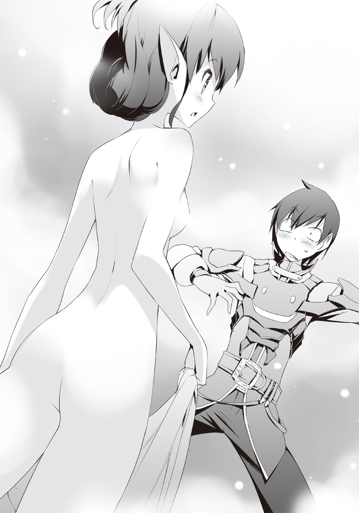
絶対に視界にいれないようにしてオレは言った。
「風呂に入るのに服を着たままということはないだろう」
いや全くその通りなんだけど！ なにも間違ってないんだが！ 強いていえば順番を間違えてる！
「お、オレが出ていってからでいいだろ!?」
「なぜそんなことをする必要がある。私が湯浴みするだけだぞ」
「お前が湯浴みするからこそ出ていかなきゃダメなんじゃないか!? あれ、なにこのすれ違い!?」
人間の会話って時に難しいな！
『無駄だ、無駄。お嬢......というより王族の感性なんてそんなもんだ』
状況を見兼ねたのか、マンゲツが珍しくオレに気を遣ってくれた。
『普段から着替えや湯浴みに至るまで、全部人任せだからな。今更、裸を見られることくらいどうということもないんだよ』
そ、そういうことか。いや、だからといって、そんな。
「マンゲツ、私はそこまでではないぞ。服を着ることくらいは自分でできる。帝国は今、無駄なことに人を使う余裕はないのだからな」
『でも風呂入るのに一人じゃ無理だろ？』
「......うむ。そうだな。そちらは専門に担う者がいる以上、仕事を奪うわけにもいかない」
とにかく、アイリスは人前で全裸になろうと気にしないということは十分にわかった。
しかし、だからといってオレがまじまじと眺めていいわけもない。......わけもないよな？
「惑わされるな、オレッ！」
一瞬『別にいいんじゃないだろうかほら本人が嫌がっていないわけだしセクハラもやられている方が訴えなければいいわけだしとなると何の問題もないのではないだろうか』という考えが怒濤の如く巡ったので、オレは頭を搔き毟った。
その時、不意に昼間のことを思い出す。ガーネットがバラしてしまったことだ。
三年前、旅の途中で立ち寄った村がたまたま温泉の湧くところで、疲れを癒すために入ることにしたのだが。
そこが混浴であることを知らず、オレはばっちり、ガーネットの生まれたままの姿を見てしまったのだ。
ついでに言えばこっちも全裸だったので、彼女もまたオレの全てを目撃することになった。
「うっ......」
アイリスの裸体を見てしまったことで、連鎖的に、三年前のガーネットの姿も脳裏に蘇ってしまう。
そのせいか二人の発育の違いとか胸が小さい子は感度がいいとか聞いたけどどうなんだろうとかそんなどうでもいい知識まで蘇ってきてそれは次第に自分の下半身へと血流を巡らせてオレのオレとしてのシンボルを雄々しく屹立させようとしてだから、
「だあああああああああっ！」
オレはまた自分を殴打した。アイリスの裸を前にしてガーネットを思い出すとか、色々と失礼だろ、オレ！
「リョ、リョウマ、先ほどからどうしたのだ。何か体の調子でも悪いのか？」
アイリスは心配そうに声をかけてくる。彼女にしてみれば、唐突にオレに自傷癖が現れたかのように思えたのだろう。
「だ、大丈夫だ。ガーネットとアイリスの胸が......」
「私とソレイユ王女が？ どうかしたのか？」
「あ、ああ、いや、なんでもない！」
慌てて首を振る。うっかりとんでもないことを言ってしまうところだった。
「そうか？ しかし、お前に何かあってはことだ。医者を呼んだ方がいいのではないか？」
「いや、別にそういうわけじゃ――」
安心させようとしかけたところで、オレは再び硬直した。
「......ふむ。熱はないようだな」
アイリスが、近づいてくると、オレの額に手を当てたのだ。全裸のままで。
「しかし、だからといって油断はできない。隠れた病があるかもしれないからな」
続いて密着してきたまま、俺の体のあちこちを、念入りに調べてくる。全裸のままで。
「あああ、アイリス、アイリス？」
柔らかいやらいい匂いがするやら吐息が肌をくすぐるやら柔らかいやら柔らかいやら！
出会った時にもやられたけど相手が服を着ていない分その差は歴然としているわけであわわわまずいこれはまずい非常にまずい。
そういえば三年前もガーネットから逃げようとした拍子に地面に蹴躓いて転んで、結果的に彼女の胸に思いきり顔を埋めてしまったんだっけ!? 対応を誤ると同じことを繰り返すぞ！
「ガ、ガーネット！ 待ってくれ！」
が、混乱したオレはとんでもないことを口走ってしまった。
「......またソレイユ王女の名か。やはり彼女と喧嘩別れしてしまったことを悔いているのか？」
アイリスが明らかに悲しそうな表情をする。
いかん。現恋人を呼ぶ時に元彼女の名を出してしまって気まずくなるとかそういう状況を聞いたことがあるが、まさか自分が同じような危機に陥るとは。
「そ、そういうことじゃなくて、今のはなんていうか、ものの弾みというか」
「いや、気にするな。お前がそう思うのは当然だ。今日の話からすると、ソレイユ王女とは深い関係にあったようだからな......」
「だから違うって！ 超誤解！ まじで誤解だから、それ！」
なんだか落ち込んでいるようにも見えるアイリスに慌てて説明するが、自分でも酷い言い訳にしか聞こえなかった。
いや、その前にこのままではオレ自身、のっぴきならない状態になりそうで、とりあえず彼女から距離をとる。
「と、とにかく、いいから！ 本当にいいから湯を浴びてくれ。冷めたら勿体ない！」
「......そうか？ 遠慮はいらないぞ。気になることがあるなら言ってくれ」
「オレが今一番気になってるのはお前のことだから！」
「......え？」
なぜか訪れる間。
ん？ 何か今、オレ、どさくさまぎれにとんでもないこと言わなかったか？
「そ......それは......その......ど、どういうことだ？ お前は、ソレイユ王女と親しい間柄ではなかったのか？」
ぽっと顔を赤らめるアイリス。
やっぱり言ってた！ しまった！
そういう意味じゃなかったんだけど、客観的に聞けば、告白ととられてしまってもおかしくないじゃないか。
「な、なんでもない！ さあ、早く、風呂に入ってくれ！」
オレは踵を返すと、強引に話を終わらせて部屋を出ていった。
「あ......危なかった......」
色んな意味で。
『てめえ、おれの前でお嬢を口説くとはいい度胸じゃねーか』
「ちょっと今、そういう絡みやめてくれないかな......」
さすがに付き合う余裕がないぞ、マンゲツ。
『......まあ、なんだ。色々大変だったな』
あ、さすがに同情してくれた。
「三年前とは違う意味で精神力削られるな、これ」
少数精鋭とは言えど、あの時は仲間に男もいたから、必然的に同性同士の部屋割りだったのだ。
『お嬢は聡いところもあるが、いかんせん、世間ずれしてないところがあるからなぁ......』
「全くだな」
これから旅をしていると、色々なことが起こってくるのかもしれない。
『まあ、だからといって妙な真似しやがったら、てめえのアバラ纏めて粉微塵にしてやるからな』
「想像するだけで背筋凍りそうなこと言うなよ」
本当にできるから質が悪い。
「......リョウマ？ そこにいるか？」
と、そこで、扉越しにアイリスが話しかけてきた。
「いるよ。どうした？」
「うむ......ちょっとお前に訊きたいことがあってな。入ってきてくれるか？」
「は、入るのか？ それは駄目だろ!?」
「......駄目か？」
その、切実な言い方にオレの心は揺れた。
う、うーん。まあ、どうしてもと言うなら、仕方ないのか？
「......わかった」
なにか困ったことが起こったのかもしれない。それを無視するわけにもいかなかった。
......というのは、言い訳だろうか。
「一体、どうしたっていうんだ？」
オレは再び部屋に入ると、できるだけ桶のある方を見ないようにしてから訊いた。
「うむ。ここ数日、外で風呂に入る度に思っていたのだが......」
困ったように、アイリスは応えてくる。
「背中に石鹼をつける時は、どのようにすればいいんだ？」
「前から後ろに手を回してやればいいんじゃないのか」
「他の皆もそうやっていて、私も同じようにしようと思ったが、中々できないのだ。届かない部分もあるし、何か上手い手はないかと思ってな」
ああ、まあ、慣れない人には難しいのかもしれないな。
「と言ったところで、オレも何か特別なやり方をしているわけじゃないしなあ」
「少しやり方を教えてくれないか？ 私の前で、お前がいつもやっているようにしてくれればいい」
「いや、それは不味いだろ......」
必然的にアイリスの裸を横目に通り過ぎることとなる。
「......そうか。なら仕方ないな。我儘を言って悪かった」
残念そうにアイリスが零すのに、オレは頭を搔いた。
しかしこればかりは、易々と請け負うわけにはいかない。今度、あの白い裸体を目に焼きつけたら、今夜は眠れなくなってしまいそうだった。
妥協案としては、一つだけ方法がある。アイリスもオレも、納得できる方法だ。
「......あー。じゃあ、背中、洗おうか？」
後ろからなら、直視しないようにすれば、何とかなる。
それに布越しであれば、直接触っているわけではないから、セーフだろう。
「......セーフだよな？」
セーフということにしておこう。そうしなければ、また変な気分になってくる。
「そんなことをしてもらっていいのか？」
「まあ、うん。背中だけならな。背中だけだぞ？」
オレは自分に言い聞かせるつもりで念を押すように口にした。
「そうか！ それはとても助かる。ありがとう、リョウマ」
嬉しそうに返してくるアイリス。うっ。なにか罪悪感が。
『てめえ......アバラいらねえらしいな......』
おまけに鎧が何か恐いこと言ってくるし。いるに決まってるだろ。
「しょうがないだろ......！ 断ったらアイリスが落ち込むんだし！ 布を使ってるから、大丈夫だ！」
『妙なことしやがったら内臓ごと押し潰してやるからな』
こいつ、声が真剣みを帯びている。本気でやるつもりだ。
「......わかってるって」
オレは応じながら、床の木目を見つつ、アイリスの方に歩み寄った。
「すまないな。これを使ってくれ」
差し出された布と石鹼を受け取って、オレはその場に膝をつく。
そして、ぎりぎり視界の隅にアイリスの小さな背中を映しながら、手を伸ばしていった。
間もなく、信じられないくらい柔らかい感触が、布を通して伝わってきた。
こ、これは。思っていたよりも、平静さを保つのが難しいぞ！
「......始めるからな」
宣言をしてから、ゆっくりと石鹼で泡だった布を使い、アイリスの背中をこすっていく。
「フフ。まさかリョウマに洗ってもらえるとはな。恐れ多いとはこのことだ」
「そ、そりゃこっちの台詞だって。なんたって、アイリスは皇女様なんだからな」
咳払いをしながら、慎重にアイリスの体の洗浄を続けていった。
「......私など、そう大した人間ではないよ」
やがて、ぼそりと呟くアイリス。
「なに言ってんだ。グレディ......お父さんの跡を継いで、立派にやってるじゃないか」
「しかし結局、父上が倒れられてから三年、帝国の状態は悪くなるばかりだ。このままいけば、近いうちにガルフレアという国自体が消えてなくなってしまうかもしれない」
「そうならないように、オレ達は旅を続けてるんだろ」
「それは、そうだが。今日、ソレイユ王女に話すら聞いてもらえなかった時、私はひどく衝撃を受けた。帝国というものの有様を、まざまざと見せつけられてしまったようでな」
......まあ、確かに、そうだな。
オレだってあそこまで怒ったガーネットは見たことがない。
いかに世界中の人間が、ガルフレア帝国を敵視しているかということの証明だろう。
「本当に帝国の復興などできるのだろうか――そんな情けない考えが浮かんできたよ。あそこまでこちらを拒絶した者と、私は打ち解けられるのだろうかと」
「アルフレンさんが上手くやってくれるって。......そうダメなことばかり想像するなよ」
「うむ。......リョウマの言う通りであることは、私もわかっているのだが」
水の跳ねる音が、二人きりの部屋で、殊更に強く響いた。
「大見得を切って出てきた以上、どうにか良い方向に進ませなければな......」
まるで自分を鎖で縛りつけるように、アイリスは言葉を紡ぐ。
気丈に振る舞っている彼女とて、まだオレと同じ歳の女の子だ。
先行きが不安にもなるし、自分の不甲斐なさに失望することもあれば、プレッシャーに耐え切れなくなることもある。
だけどそれでも、彼女は大変であることがわかっている旅に出た。
お風呂の入り方さえ知らないのに、自分が背負った重過ぎる荷のために。
......助けてやりたい。素直にそう思った。
自分のできることで彼女の支えになってあげなくちゃならない、と。
それは多分、オレにしかできないことだった。
この世界の人間じゃない、いわば部外者だからこそ――何にも縛られることなく、アイリスの側に立つことができるのだ。
魔法よりも、英雄としての地位よりも、それがオレにとって最大の武器なのかもしれなかった。
「......んっ......」
そのためには何としても、ガーネットに理解してもらわなくちゃならない。
たとえアルフレンさんが駄目だったとしても、もう一度、アタックしてみるべきだろう。
「......リョ......リョウマ......？」
よし、なんかやる気が出てきたぞ。頑張ろう！
「リョウマぁ......そ、そこ......ダメ......」
ん？ ダメ？ なにが？
「な......なにか......へん......になる......ぅ......」
変？ 変ってなにが？
『おいこら！ てめえ、ぼーっとしてんじゃねえ！』
マンゲツに怒られて、オレははっと我に返った。しまった。考え事に没頭していて、自分が何をしていたか忘れていた。
というか、なんだこれ。柔らかい。アイリスの背中ってさっきまでこんなにぽよぽよしてたっけ？ ん、なんか突起がある。にきびかな。
「あんっ」
突然、悩ましい声を上げるアイリス。
............って。
そこでようやくオレは気がついた。自分がさっきから何を一心不乱に撫でていたかに。
他のことに気を取られていたため、意識がおろそかになり、いつのまにか手がアイリスの体の前に回っていたのだ。
更に言うと布は桶の中に落ちていて――素手で触っていた。
アイリスの、胸を。
「......って、うわあっ!?」
あまりに現実離れしたことで感覚が追いつかなかった。
自分でもびっくりするくらい彼女の胸を揉み続けてから、ようやくその場から飛びのく。
「......はふ」
艶やかな吐息をつくと、アイリスは、何かに達してしまったかのようにそのまま前のめりになった。
「ごご、ごめん！ 本当にごめん！」
オレは速やかに土下座する。あれだけ注意してたのにやってしまった。遂にやってしまった！
『覚悟はいいなてめえ。明日から一切物を食えないと思いやがれ』
マンゲツが死刑宣告に等しいことを言ってくる。いやしかし、やむを得ない！ 嫌だけど！ お手柔らかにお願いします！ いや、やっぱり嫌だ！
「ま......待て、マンゲツ」
息を切らしながら、アイリスが体を起こした。背中越しに言ってくる。
「リョウマが背中を洗うことを了承したのは私だ。責任はこちらにある」
『しかしよ、お嬢！』
「そ、それに......リョウマには大変な旅を手伝ってもらっているのだ。ソレイユ王女にも言った通り、これくらいは......その、私とて覚悟していた」
顔を赤らめながら、恥ずかしそうに囁くアイリス。
「ち、違うんだって！ そんなつもりはなかったんだよ！ まじで！ まじだから！」
ああ、なぜだ。言い訳を重ねれば重ねるほどダメになっていく気がする。
「もういい。お互いに忘れることにしよう」
苦笑したあとで、アイリスは、小さく口を開いた。
「......それに、その、そんなに悪くなかった」
え。今なにか、聞き逃せないことを言われたような。
「アイリス......？」
「――な、なんでもない。さあ、次はリョウマの番だ。私はそろそろ上がるぞ！」
自分の気持ちを誤魔化すようにそうわざとらしく声を張り上げると、アイリスは桶から立ち上がった。
「って、いや、だから、少しは隠せって！ ああ、もう！」
これ以上、思春期の男子を惑わせないでくれ！
オレは急いで後ろを向くと、再び部屋を出ていくのだった。
ガーネット＝フルメ＝ヴェレイ＝ソレイユは、その夜、自室で酷く落ち込んでいた。
昼間に起こったことを、まだ引きずっていたのだ。
「ああ、リョウマ様......リョウマ様はなぜ、あんな女と......」
どうやっても、受け入れることができない。
当然だ。自分にとって大切な人と、ありえないはずの再会を果たしたと思ったら、彼の隣には見知らぬ人間がいたのだ。
しかもそれは、あの憎きグレディスの娘であるという。
感情的になってしまった自分を、誰が責められようか。
悲しみを抑えられない自分を、誰が非難できようか。
三年前、今や四大聖国と呼ばれている国々の協議によって皇帝討伐が決定された時。
魔法の才能に恵まれていたガーネットは、四つの大国を代表し、異世界召喚を実行するという大業を授かった。
幸いにもそれは成功し、この世界にその人物――クロセリョウマは現れる。
彼は最初こそ、どこにでもいるような少年にすぎないように思えた。
しかし長い旅の中で少しずつ成長していき、最後には、歴戦の勇士もかくやとばかりの風格が漂うようになったのだ。
彼は、自分達が困っているというただその理由だけで、何も得るものなどないのに協力し続けてくれた。
数々の窮地も、潜り抜けてきた死線も、リョウマがいなければどうにもならなかっただろう。ガーネットとて、何度彼に助けられたかわからなかった。
しかしリョウマはそのことを誇ることも、恩着せがましく言ってくることもなく。
ただ世界の平和のために、己が身を犠牲にしても戦い続けた。
そんなリョウマと共に旅をし、常に傍にいたガーネットは、いつしか彼に恋心を抱くようになる。
いつか別れる人だとしても。元の世界に帰れば、二度と会えなくなるとしても。
リョウマに惹かれていく自分を、止めることはできなかった。
「......だから、嬉しかったのに」
奇跡が起こったと思ったのに。
「まさか、またリョウマ様がこちらの世界にやってくるなんて......」
自分の願望が生んだ幻だと思ったものだ。
本物だとわかった時、今日ほど、アラムヴェルト神の巡り合わせに、感謝したことはなかった。
「それなのに――どうして」
あんな、アイリスとかいう女と一緒にいたのだ。
納得できない。ありえるはずがない。あんなものは現実ではない。
「わたくしは、一体、どうすれば......」
帝国ガルフレアに協力することなど、絶対にできそうもなかった。
グレディスのせいで、ティタニアだけでなく、どれだけの国が被害を受けたと思っているのだ。
父親――国王の体がめっきり弱くなったのも、帝国の侵略によって生じた心労が重なったためだった。
許せない。心からそう思った。
周囲の反対を押し切り、一国の姫でありながら、リョウマの旅に同行したのも、その気持ちがあったからだ。
なんとしても皇帝を倒す。そのためなら、過酷な行程も耐えぬくことができた。
「......リョウマ様。あなただって、グレディスには怒っていたではないですか」
彼に滅ぼされた村を見た時。帝国に連れていかれる奴隷達を目にした時。
憤りに、拳を固めていたはずだ。それなのに。
三年前には通じあっていたはずの彼の心が、全く見えてこなかった。
「ガーネット......少しいいか？」
後ろから声が聞こえて、ガーネットは目元を拭いながら、振り返る。
腹違いの兄、アルフレンが佇んでいた。
「お兄様......どうなされたのですか？」
「うん。実は昼間、クロセ殿に会ったんだが」
「お兄様もですか。......もしかして、なにかを吹きこまれたのでは？」
警戒した自分を、アルフレンは困ったような目で見つめてきた。
「そういうわけじゃないんだが......彼らをろくに話も聞かずに追い出したそうだな？」
「当たり前ですっ！ 誰が皇帝の娘のことなんて！」
「君の気持ちはよくわかる。だが――ガーネット、あのクロセ殿が味方をしているんだ。なにか事情があるのかもしれない」
「そ、そうかもしれませんが......だからといって、あんな女の頼みなんて、聞き入れられませんっ！」
「......まあ、そうだろうな」
腕を組み、アルフレンは考え込むように俯く。
しばらく黙ったままだったが、彼はふと、なにかを思いついたように口を開いた。
「時に――ガーネット。グレディスが魔神を呼び出すために使った魔導書だが、あれは確か我が国にあったはずだな」
「え？ ......ええ、そうです」
突然に話が変わったことを訝しがりながらも、ガーネットは頷く。
「皇帝が倒れたあと、四大聖国で話し合った結果、異世界召喚の任を達成したティタニアが預かるのがよいだろうということで決まりました。今は、宝物庫に保管してあります」
「その鍵を開けるための魔法は、君だけが知っているんだったな」
「......はい、そうです」
アルフレンはなにが言いたいのだろうか。先が見えてこない会話の展開に、ガーネットは眉をひそめた。
半分しか血の繫がっていない兄とは、決して仲が悪いわけではない。しょっちゅう一緒にいるわけではないが、時に茶会を共にすることもあるし、国王の代理を務めている今、相談に乗ってもらったことも一度や二度ではなかった。
しかし、だからといってアルフレンの何もかもを知っているわけではない。
それは立場上、正統な王位継承権を持つガーネットが、彼に対して負い目を感じていたからだ。
自分が生まれなければ、今、この立場には兄がいたはずだったのに。
そんなことを考えてしまうと、どこか距離を取ってしまうところがあり、いまいち彼の内面まで深く踏み込めずにいたのだ。
故に――ガーネットは時折、アルフレンが何を考えているのかわからなくなることがあった。
常に穏やかで、誰とも敵対を好まぬその性格は、決して嫌いではなかったのだが。
「ガーネット。先ほど、モーヴェと今回のことについて話していて、一つの考えに至ったんだが......」
「はい。なんでしょうか」
姿勢を正して聞き入るガーネットに、アルフレンは話し始めた。
「クロセ殿は素晴らしい人間だ。他人のために自分を投げ出し、多少の無茶ですらも躊躇せずに成し遂げようとする」
「ええ、その通りです」
リョウマを褒められると、自分のことを言われたかのような気になる。
微笑んだガーネットに、アルフレンは続けた。
「だが――時にそれが弱点になることもあるんじゃないだろうか」
「......どういうことですか？」
「君も知っている通り、異世界召喚は禁呪だ。それを実行してまで皇帝の娘がクロセ殿を呼んだのは何故だろう」
兄の目が、こちらの姿をはっきりと映す。真剣な口調で、彼は言った。
「僕は思うんだ。ひょっとして、クロセ殿は――」
ガーネットは、アルフレンが語った考えに、呆然となる。
「......まさか、そんな......でも......」
もし――もし、そうだとすれば。
一旦は振り払おうとした不安。
だがそれは、繰り返し、繰り返し、自分の中で頭をもたげるのだった。
第三章 暴かれる真相
結局、その日はほとんど眠ることができなかった。
当たり前だ。すぐ隣にはアイリスがいて、可愛らしい寝息や妙に艶めかしい寝言が、思い出したように聞こえてくるのである。
その度にピンク色の妄想が瞬時に形成され、オレはまんじりともせぬ夜を過ごすこととなってしまった。
おまけにようやく明け方過ぎになってからうとうとし始めたのだが、意識が落ちて間もなく、部屋に鳴り響いた激しい音で叩き起こされる羽目になった。
扉をノックしていたのは、鎧に身を包んだティタニアの兵士で、彼は朗々とした声でオレ達に報告をした。
至急、ソレイユ王女が会いたいと言っている、と。
それを聞いては、もう一度ベッドへ戻るわけにもいかない。冷たい水で顔を洗い、ふらふらの頭をシャッキリとさせて、オレはアイリスと共に、急ぎ城へと向かった。
「......わざわざお呼び立てして申し訳ありません。リョウマ様」
謁見の間に案内されたオレ達を待ち受けていたのは、別れた時と変わらず、厳しい顔をしたガーネットである。
彼女は玉座から強い視線でこちらを睥睨してきた。
「一晩考えまして、わたくしも昨日の対応はいささか礼節に欠けるものであったと考え直しました。ついてはもう一度、そちらの提案を前向きに考える機会を持つことを、お知らせしようと思ったのです」
ただ、告げられたのは意外な言葉である。オレは驚くと共に、嬉しさがこみ上げてくるのを感じた。
「本当か!?」
室内には前と同じく兵士達やモーヴェがいたが、その中に、ガーネットの横に立つアルフレンさんの姿も見える。目を合わせ、頭を下げたオレに、彼は微笑んだ。どうやら、上手くやってくれたようだ。
「やったな、アイリス！」
「うむ。ほっとしたぞ！」
オレはアイリスと手を合わせ、旅の目的に一歩前進した喜びを嚙み締め合った。
「――ただし。それには条件があります」
でも依然として硬い口調のままガーネットが言うのに、再び緊張が走る。
「条件......？」
詳細を尋ねたオレに、彼女は続けた。
「今のままでは、そこにいるフェルモント皇女の言うことが真実であるか、それを確かめる術がわたくしにはありません」
「だ、大丈夫だって。オレが保証する」
「......個人としてはそれで十全であるとは思うのですが」
わずかに躊躇うような間を置いたあとで、ガーネットが首を横に振る。
「城の中にはわたくしと同じく、皇帝を深く恨む者が未だに大勢います。彼らを納得させるためには、たとえ英雄たるリョウマ様のお言葉とて、それだけでは足りぬことでしょう」
「......そうなのか」
無理もないかもしれない。長らく続く帝国との戦争で、大切なものを失った人達は多い。
オレは一度世界を救った人間だ。別に驕っているわけじゃないが、他の人達よりもいくらかは発言に信頼性を持たれる立場にあると思う。
それでも――やっぱり、人の心っていうのは簡単じゃない。
口で主張する以外に何か、理屈で受け入れさせる方法が必要なんだろう。
「でも、それじゃあどうすればいいんだ？ オレにできることなら何でもするから、言ってくれ」
こうして呼び出して、わざわざ前置きするからには、何か案があるのだろう。
そう思っての問いかけだったが、ガーネットは目を閉じたまま黙り込んだ。
「......ガーネット？」
不審に思って呼びかけると、
「やっていただくのは――リョウマ様ではありません。フェルモント皇女です」
やがて彼女は、そう言った。
「私が......？」
アイリスが己を指差すのに、ガーネットは「ええ」と応える。
「あなたがもし、我が身をもってして己に一片の邪心もないと証明できれば、わたくしだけでなく、国全体もそれを受け入れることでしょう。その後、改めて協力の申し出をするのであれば、こちらはそれを前向きに検討するつもりです」
「な、何をすればいい？ やる。やらせてくれ！」
迷っている暇などない、というようにアイリスは間髪容れずにそう返した。
「......本当にいいのですね？」
「ああ。それでこちらを信用してもらえるなら、文句はない」
堂々たる態度で、きっぱりと言い切るアイリス。
しばらく無言を保っていたガーネットだったが、やがて、深く頷いた。
「いいでしょう。それでは――【神籟の儀】を行うこととしましょう」
「......しんらいのぎ？」
オレはおうむ返しに呟く。アラムヴェルトにいる間、長くこの国にいたが、それでも聞いたことのない単語だった。
「古くからティタニアに伝わる習わしです。罪の疑いをかけられた者に直接の証拠がない場合にのみ行われ、見事達成することができれば、無実を勝ち取ることが可能となります」
「そんなものがあったのか......」
「リョウマ様がいらっしゃった頃には、そのようなことを行う必要のある事件は起こりませんでしたから。ご存じなくても無理はありません」
「それで......その【神籟の儀】とは一体なにをすればいいんだ？」
オレとガーネットとの会話が終わったタイミングで、アイリスが尋ねた。
「簡単なことです。こちらが用意した人間と一対一で戦っていただきます。勝つことができれば、儀式は終了。フェルモント皇女は信用に足る人間だと判断します」
「戦うって......それは、危険じゃないのか？」
漂い始めた不穏な空気に嫌な予感がして、オレは確かめる。
すると、全く何の躊躇いもなくガーネットが言った。
「ええ、もちろん。下手をすれば死んでしまう恐れもあります」
「お、おい、ガーネット!? それはちょっとやり過ぎだろ!?」
やろうとしていることはわかる。多少、強引でもアイリスが『自分の正当性を証明した』という既成事実を作ろうとしているのだろう。
だけど、それでも、さすがに無茶だ。オレと一緒ならともかく、アイリス単独で命を懸けたやりとりなんて。彼女はそこまで戦闘経験を積んでいない。
「リョウマ様の仰られることは尤もであるとわたくしも思います。しかし......こうでもしなければ、帝国と手を結ぶなどということを国内で推し進めることなどできないでしょう」
「それはそうだけど......！」
それでもし何かあっては、元も子もなくなってしまう。
「クロセ殿。道理を押しのけ、無茶を通そうとするならば、多少の危険性はやむを得ないのではありませんかな」
それまで黙り込んでいたモーヴェが口を開いた。
「それに帝国が本気で国を生まれ変わらせたいと思っているのであれば、この程度は覚悟の上でしょう」
「いや、簡単に言いますけど、それがどんなに大変なことか！」
「......もうよい。リョウマ」
必死で他の手段を取ってもらおうとしているオレを、アイリスが止める。
「それしか方法がないのであれば、やるしかないだろう。......ソレイユ王女の言う通り、我が国の立場を考えれば、致し方のないことかもしれない」
「アイリス、でも......！」
「私を心配してくれて嬉しく思う」
オレを見て、アイリスは微笑んだ。
「だが......私はどんな困難な道であろうと歩むことを決めたのだ。これがその過程に立ち塞がる障害であるというのなら、見事乗り越えてみせよう」
「......よく言いました。その言葉が噓ではないことをわたくし達に示してみなさい」
玉座から立ち上がると、ガーネットは殊更に強い声を張り上げた。
「アイリス＝ナクナ＝フェルモントの同意を得ました！」
腕を振り、広い謁見の間に響き渡るかのような宣言をする。
「これより――【神籟の儀】を始めます！」
オレとアイリスが連れていかれたのは、城の横にある広い空間だった。
そこには芝生の上に整然と並んだ、大きな正方形の石畳が用意されている。
共に来たガーネットは、石畳の向こう側に用意された豪奢な椅子に腰かけていた。
「これが【神籟の儀】のために用意された舞台となります。フェルモント皇女にはこの上で戦っていただきます」
ガーネットの隣に立ったモーヴェが説明を始める。
この場所には、三年前にも何度か訪れたことがあった。一体なんだろうかと思っていたのだが、まさか、そんな物騒なことに使う場所だったとは......。
「戦いを挑んだ方が死ぬか、途中で儀式を諦めることを宣言すればそこで負けは確定。相手側を殺すか、あるいは参ったと言わせれば勝ちが決まります。加えて先ほども姫様が申しましたが、儀式を行うのは疑いをかけられた者一人。誰かが助けに入った時点で失格となりますので、注意するように」
モーヴェの指示により、アイリスが壇上に上がった。彼女は我が身を支配する緊張を無理矢理抑え込むように、何度も深呼吸を繰り返す。
「......本当にいいのか？ アイリス。他に何かやり方があるかもしれない。そっちを探さないか？」
自分でもしつこいと思いつつ、どうしても放っておけなくて、オレはついそう声をかけてしまった。
アイリスはこちらを振り返り、明らかに無理矢理だと思われる笑みを浮かべる。
「お前の気持ちはありがたいが、あるかどうかもわからない方法を探すほど時間に余裕があるわけじゃない。それに......問題ない。私だって、戦える」
言ってローブを払うと、腰元に手を伸ばし、彼女はそこに提げられた武器を手にとった。
旅の前、リヒターからもらった護身用のナイフだ。
「父上が亡くなられて以来、リヒターに剣の手ほどきを受けてきた。――いざとなれば、魔法も使える」
「それはそうだけど......」
だからといって安心できるかと言われれば、全くのノーだ。
『うう、お嬢よぉ、今回ばかりはこのアホに賛成だぜ。何もお嬢自らがこんなあぶねぇ真似しなくたって。そんなのは、この生贄と書いてボケと読む奴に任しときゃいいんだよ！』
酷い言われようだが、しかし、オレとしてもそっちの方がマシだ。
自分が体を張って挑むより、誰かが戦っているのを見ている方がきつい。
「......私は本当によい同行者を持ったものだ」
口元を緩めながらそう零すと、鞘から刃を抜き、アイリスは構えた。
「さあ、私の方は準備ができたぞ。いつでも来い！」
「......よろしい。それでは、罪人を裁定する者よ、ここに」
モーヴェが呼び掛けると、石畳にある人物が上がる。
「ロザリ......」
オレは呆然となった。ティタニアが誇る騎士団、その団長を務める存在。
よりにもよって、なんて人が相手なんだ。
「......悪いが手加減はしない。仕事なものでな」
無表情のまま、ロザリはアイリスに向かって、淡々と告げた。
「リョウマの師が敵か。相手にとって不足はない。......と、言うことができれば良かったのだが」
アイリスは苦々しい顔で言う。
「少々私にとっては、荷が重い相手となりそうだな......」
ああ、もう、代わってやれるものなら代わってやりたい。
「なんでオレが皇帝の娘じゃなかったんだ！」
そんな我ながらわけのわからない叫びをしてしまうくらい、オレは焦燥にかられていた。
「......すまないな。クロセ殿」
背後からの声に、振り返る。そこにはアルフレンさんがいた。
『あ、てめえ！ 調子いいことばっかり言いやがって、やっぱりろくなモンじゃなかったじゃねーか！ ぶっ殺すぞ！ こいつが！』
「落ち着けよマンゲツ！ っていうか喋んな！」
ほら、アルフレンさんが目を丸くしたまま固まってる。
「いや、これはええと、魔法をかけられた鎧でして......旅立つ前にある人に貰って......」
さすがに元皇帝が使っていた物だとは言えない。その辺りをなんとか誤魔化しつつ、しどろもどろになりながらも解説すると、アルフレンさんは次第に驚きから解き放たれていった。
「......なるほど、そういうことか。不可思議な物もあるものだな」
興味深げにマンゲツを見ながらそう呟き、次いでオレへと視線を移す。
「......と。感心している場合ではなかった。君達の要望に完全に応えることができず、このような結果となってしまってすまなかった」
「いえ、そんな......。アルフレンさんがガーネットに、もう一度こっちの話を聞くように頼んでくれたんですよね」
「ああ、そうだ。その時はわかったと言っていたんだが、まさか、【神籟の儀】を持ち出してくるとは......」
どうやらアルフレンさんも予想外のことだったようだ。恐らく、ガーネットが独断で決行したことなのだろう。
「......とにかく、こうなってしまった以上は君も見守るしかない。彼女の無事を祈ろう」
痛みを堪えるような顔で、石畳を見つめるアルフレンさん。多分、自分の行いでこんなことになってしまったことで、責任を感じているのだろう。
「そうですね。なんとか切り抜けられればいいけど......」
魔法を使うことができるとはいえ、安心することはできなかった。
――と、そこで。
「儀式を始める前に一つ伝えておく」
モーヴェがしわがれた声で、余りにも残酷なことを伝えてきた。
「この戦いは己の身のみを使って挑むもの。よって、外側から与えられる魔力を元にした魔法を使うことは、一切できない。もし少しでも発動した場合、その時点で儀式を行う資格を失うものとする」
「なっ......!?」
どういうことだ。そんなこと、聞いてないぞ！
「魔法が......使えない？」
さすがにアイリスも動揺したように血の気の引いた顔で、一歩退いた。
「ちょっと待て！ そんなの、アイリスが勝てるわけないだろ!?」
オレは壇上に上がろうと走り出した。しかし、アルフレンさんに手を摑まれる。
「待て。手出しをしてもダメだと言われただろう！」
「なに言ってるんですか！ こんなのもう中止ですよ！ ロザリを相手にアイリスがどう戦えっていうんですか!?」
「確かにそうかもしれない。だが、それを決めるのは君じゃない。フェルモント皇女だ！」
オレはその台詞に、アルフレンさんに向けていた目を壇上へと戻した。
そこには、自分の身長の二倍はあるようなロザリと対峙しているアイリスの姿がある。
「アイリス！ 中止しろ！ さすがに無理だ！ アイリス！」
オレは必死に何度も呼びかけた。しかし彼女は応えない。ただ佇み続けるだけだ。
「それでは――始め！」
そして遂に、戦いが始まってしまった。ロザリが、背中に負った大剣に手をかける。
「......やるしか、ない」
小さく、消え入るような声で、アイリスがそう発した。
「やるしかない。帝国を、復興させるためなら」
前を強く睨みつけ、ナイフの柄を握り締めると、彼女は吼える。
「それが、たとえ――どれほど険しい道だとしても！」
石畳を蹴りつけると、勢いのままに疾走を始めた。
気合を入れるような叫びを上げながら、得物を片手にロザリへと飛びかかる。
「その決意は見事」
短く応じると、ロザリが動いた。
「――こちらも、全力でやってみせよう」
甲高い音が鳴り響く。彼女の腕を覆った鉄製の籠手が、アイリスの刃を防いだのだ。
そのまま無造作に振り払われた手によって、アイリスはこちら側に吹っ飛んでくる。
「くっ......！」
彼女は受け身を取ると硬い床を転がり、素早く体勢を立て直した。
そのまま勢いを活かして再度、挑もうとするアイリス。
しかし――その前に、ロザリは自らの得物を轟然と振り被っていた。
大柄な彼女の身の丈ほどもある大剣が、次の瞬間、真っ直ぐにアイリスに向かって落とされる。
「ハッ......ッ！」
しかし彼女の反応は思いの外、速かった。体を沈めると、後方へと移動したのだ。わずかに遅れて、ロザリの大剣が虚空を裂いた。
鼓膜が破れるかと思うほどの派手な音が鳴る。
見ると、剣の切っ先が頑強な石畳を容易く打ち砕いていた。
思わずオレはぞっとする。あんなものを喰らえば、人間の頭なんて一瞬で木端微塵になってしまうだろう。
アイリスもまたロザリの齎した破壊力に慄いていたが、彼女はそんな自分を叱咤するように唇を嚙み締めると、移動を開始した。ロザリに接近し、ナイフを振り回し始める。
ロザリは片手で軽々と大剣を操りながら、それら全てを防いでいった。表情に変化はなく、まるで子どもの児戯に付き合っているかのようなつまらなさが滲み出ているようにすら思える。
「......ダメだ」
ある程度の訓練しか受けていないオレでもわかる。
確かにアイリスは自分でも言う通り、素人とは思えない動きを見せていた。
だけどそれでも、ロザリの領域には到底近づけていない。
「ハアッ！」
一閃。アイリスのナイフが斜めに銀線を描く。
しかし後ろに半歩退き、最小限の動きのみでそれを避けたあと、ロザリは大剣を持つ手にわずかな動きを見せた。
「アイリス！ 伏せろ！」
オレのアドバイスに、アイリスは咄嗟に従う。それが功を奏した。
慌てたように倒れ込んだ直後、彼女の頭上を、凄まじい勢いで大剣が真横に通り過ぎたのだ。
「リョウマ様！ 口出しをすると儀式は取りやめとなりますよ！」
ガーネットからの叱責が飛んできた。
「直接、手は貸してない！ 別にいいだろ!?」
オレがそう言い返すと、彼女はあからさまだと思えるくらい不機嫌になる。
「......今回は許します。でも次からは駄目ですから」
頰を膨らませたまま、ガーネットはそっぽを向いた。
......参ったな。これで助言することも封じられてしまった。
「ハアッ！」
アイリスがロザリに向かって疾駆する。懐に飛び込もうという算段だろう。
大剣を扱う場合の注意点として、どうしても振り幅が大きくなってしまい、次手へ移るまでに時間がかかるということがあった。
要は破壊力がある代わりに、隙が多いのである。
だから、ロザリが行動を終えたあとにとったアイリスの判断は、正しいものだと言えるだろう。
ただ――それは、相手が普通の人間であった場合だ。
「アイリスッ......！」
駄目だ、と言おうとしてオレは慌てて自分の口を塞いだ。くそ！ もどかしい！
ただその言葉が一瞬、アイリスの足を止めた。それが、命運を分けることとなる。
何故なら彼女の鼻頭わずか数ミリ先に、ロザリの大剣が降り落ちたからだ。
「っ......！」
息を呑み、その場に尻餅をつくアイリス。
鋼鉄の塊は石畳をまるで豆腐みたいに砕き割り、瓦礫を吹き上げた。
「は......速い......！」
信じられない顔で、ロザリを見上げるアイリス。
そう。それこそがロザリの強さだ。
戦族は基本的に身体能力が高く、中でもロザリはずば抜けている。
大剣使いに隙が多いのは、一撃を振った時に得物を自分の手元まで戻すのに多大な力を要し、結果的に普通の武器より動きに時間がかかってしまうからだ。
だけどロザリの筋力は常識を遙かに超えていて、オレなら持ち上げるだけでもひと苦労の大剣を、まるで棒切れみたいに扱うことができる。
だから剣速が並外れて速い。そのため、大剣特有の弱点がまるでないのだ。
速い。重い。強い。硬い。
三年前、一緒に旅をしていた時、並みいる魔獣や帝国軍を薙ぎ倒していくロザリの様は、それこそ戦車もかくやと言うべき迫力だった。
「戦場でいつまでも敵の顔を眺める余裕はないぞ」
冷徹な声が発せられ、アイリスに向かってロザリの攻撃が放たれる。
「くっ......！」
アイリスは慌てて立ち上がり、どうにかかわしたが、素早く次の一撃が牙を剝いた。そこから逃れたところで、間髪容れずに三撃目が唸りを上げる。
大気を打ち砕く猛攻は、止め処なくアイリスに襲いかかっていった。
彼女はかろうじて、といった感じでそれらを避けていくが、いつまでも続くとは思えない。いつか限界が来るであろうことは明白だった。
「ああっ......！」
やがて、アイリスは逃げる最中に石畳に蹴躓いて転んだ。膝を強く打ったらしく、顔をしかめたまま蹲る。
そんな彼女に同情することもなく――ロザリは彼女の前に立ち塞がった。
感情を全て削ぎ落としたような顔で見下ろし、無言のまま大剣を振り上げていく。
小さく悲鳴を上げ、アイリスはその場から逃げようとした。しかし、足をくじいてしまったらしく、上手く動くことができずに倒れてしまう。
「そん......な......」
防御するようにナイフを構えたが、気休めに過ぎないことは彼女もわかっているのだろう。その証拠に体は小刻みに震え、顔は見てわかるほど真っ青になっていた。
「......儀式を諦めるか？」
いつでもアイリスを一刀両断できる状態で、ロザリが尋ねる。
「そ、それは......」
目の前に迫る死の恐怖を前にして、アイリスは迷うように視線を逸らした。
「アイリス！ もういい！ 諦めるんだ！ お前がいなくなったら、それこそ帝国を復興させることができなくなるぞ!?」
なんとか儀式の中止を決意させるように、オレは言い続ける。
「やっぱりこんなのは無茶苦茶だ！ 早く！ 早く言うんだ！」
しかしアイリスは中々、オレの求める言葉を口にしてくれなかった。
小さな手をぎゅっと握りしめ、目を閉じたまま、何かを耐えるように体を縮める。
そして、
「......わ、私が」
しばらくしてから、彼女は言葉を紡いだ。
「私が死んだら――ソレイユ王女は信じてくれるだろうか」
「......なに？」
不可解なことを言い出したアイリスに対し、ロザリはわずかに訝しげな顔を作る。
「たとえ、儀式を成功させることができなくても――最後まで敗北を認めず、ここで命を落とせば、それもまた彼女の信頼を勝ち取る術に成り得るだろうか？」
「......なに言ってるんだ、アイリス」
そんなこと、冗談じゃない。
「まだまだ先は長いんだ。馬鹿な真似はするな！」
「始まりが重要なのだ、リョウマ」
わずかに口の端を上げて、アイリスはオレに応えた。
「ティタニアが動くのだとすれば、それに伴い他も続くことが考えられると言っただろう。これは......そのためのきっかけになるかもしれない」
「それでもお前がいなくなったら、誰が帝国を復興させる!?」
「――リョウマがいる。私など、ただの帝国の象徴にすぎない」
自嘲的に言って、アイリスは首を振った。
「帝国が元に戻ったら、私の死を隠したまま、あとはルッテンガに政務を任せるといいだろう。......そうすれば、リョウマが元の世界に戻ったとしても、帝国は何とかやっていける」
「アイリス......お前......」
「......そうか......そう考えれば、恐くはないな」
自分で自分を納得させたように、微笑みを浮かべて。
「殺せ、ロザリ。私は自らの命をもって一切の虚飾なく、帝国が正しく生まれ変わったことを証明する」
あまりにも堂々と、アイリスはロザリにそう言った。
「......いいんだな」
「ああ。――こうなるのも、皇帝の座を継ぐ者の運命だろう」
全てを投げ捨てて、しまうかのように。
「わかった。それでは――その意志を尊重しよう」
ロザリは柄を握る手に力を込めると、抑揚のない声で告げた。
「――見事な覚悟だ、フェルモント皇女」
瞬間。全てを終わらせる一撃が、アイリスに向かって振り落とされた。
彼女は瞼を下ろし、来たるべき時を待ち望むかのように、ただじっと佇む。
それを見ていたオレは。
「......くっ」
オレは――、
「くそおおおおおおおおッ！」
全速力で駆けると、ロザリとアイリスの間に滑り込んだ。
防御魔法を使う暇もない。まさにギリギリのタイミングだった。
それでもオレは、アイリスを庇うようにして腕を交差させる。
目の前に、殺意の塊が迫った。
――不味い。終わったか。
全てがスローモーションのような動きになる中、オレは、妙に冷静にそう考えた。
しかしその直後。
鈍い音と共に、ほとんどこちらに当たる寸前で、剣の切っ先が止まった。
「......あれ？」
空中に制止しているようなそれを、オレはまじまじと眺めてしまう。
よく見ると、ロザリの大剣は、半透明の壁によって防がれているのだった。
『......無茶しやがるじゃねえか』
聞き覚えのある声がして、オレはようやく気がつく。マンゲツだ。マンゲツが、防御魔法を発動してくれたのだ。
『勝算もなしに飛び出しやがって。ヒヤヒヤしたぜ、この馬鹿が』
だけどその言葉とは裏腹に、マンゲツはどこか嬉しそうな口調で続けた。
『ただ――気に入った』
「......え？」
『お前、さっき、本当に命懸けでお嬢を守ろうとしてくれたな。今までグレディスの旦那を倒した奴ってことで心底から信用してはいなかったが......撤回だ。てめえは自分のことなんて顧みずにお嬢を助けた。その心は本物だ。てめえを、これから、おれの相棒として認める！』
「......え、あ、はあ」
ありがとう、と言えばいいのかこの場合。なんだかわからないが気に入られたようだ。
『どんどん協力するぜ。帝国復興のため、ガンガン行こうや、兄弟！』
誰が兄弟だ。いや、まあ、いいけどさ。態度変わり過ぎだろ、お前。
「......リョウマ、なんだそれは」
剣が止められたことを奇妙に思うように眉をひそめ、ロザリが尋ねてきた。
「ちょっとした事情があってな。それはともかく――悪いな、ロザリ。儀式は中止だ」
「リョ、リョウマ！ なにを勝手なことを言っている！」
後ろからアイリスが非難してくるが、知ったことじゃない。
「私は、帝国のためになるならと思って――！」
「帝国、帝国、帝国って偉いことだけどな！ アイリス、お前、ちょっとはこっちの気持ちも考えろ！」
「......え？」
オレは後ろを向くと、驚いたように目を丸くしているアイリスに言った。
「お前が死んで託されて、オレが平気で旅を続けられると思ってんのか!? 生憎とそれほどこっちは無神経じゃないんだよ！」
「し、しかし、リョウマ......」
「しかしもかかしもおかきもねえ！ いや、おかきは遠いけど！ それはともかく！ オレは嫌だからな！ お前が死んだら嫌だ！」
思いっきり個人的なことだとしても、それが素直な気持ちだ。
「帝国の奴らには悪いが、お前が死ぬくらいなら、多少の遠回りでもいいから平和な道を行くぞ！ そうじゃなきゃ、オレはもう協力しない！」
「は、話が違うぞ、リョウマ。帝国が復興するまでは手を貸すと......！」
「ああ、そうだ。オレは帝国が復興するまで皇帝になるって言った。でもそれは、アイリス、お前がいる帝国のことだ」
この上なく、全力で主張してやる。
「アイリス！ 帝国を助けたいって言うなら、お前だってその一部だろうが！ だったら簡単に、諦めるんじゃない！」
「......それは......」
「何でもかんでも自分で背負い込むな！ たまにはこっちにも荷物を寄越せ！ なんとかしてやるよ！」
オレは前を向き、ロザリや、その向こうにいるガーネットに向かって言った。
「これでもオレは――世界を救った男だッ！」
場に静寂が漂う。オレは思いっきり空気を吸い込むと、それを吐き出した。
......ああ、疲れた。ほとんど息継ぎなしに喋ったから途中で咳き込むかと思ったぞ。
「......リョウマ、私は......」
やがて発せられたその声は、今まで我慢してきたもの全てを吐き出すような重みに満ちていた。
「私は――こ、恐かったんだ」
アイリスは悲愴な響きをもったその言葉を形にし、
「本当は、恐くて......恐くて......でも......やっぱり、諦めることなんてできなくて......」
オレにだけ聞こえるように零した。
「だ、だから――無茶をした」
「......わかってるよ」
そんなこと。百も承知だ。
「でも悪いが、これ以上はオレが耐えられなかった」
いくらアイリスが帝国のために尽くそうとしていたとしても――誰かの犠牲によって成り立つ何かなんて、認めたくなかったんだ。
「......すまなかった」
アイリスはそう返してくると、ついに言ってくれた。
「諦めよう。――たとえ回り道でも、お前と一緒に生きて旅がしたい」
「ああ。そうしよう」
そうした方が、絶対にいい。
「ガーネット。儀式は中止だ。手間をかけさせて悪かったな」
オレが伝えると、ロザリは剣を収め、振り返った。
ガーネットは沈黙したままで、こちらを見つめてくる。
「ティタニアに信用してもらえなかったのは痛いけど......これ以上、アイリスを危険にさらすわけにはいかない。ただこれだけは信じてほしい」
オレはその視線を前にして、堂々と告げた。
「帝国は本当に生まれ変わろうとしている。だからオレは――皇帝になったんだ」
こちらの気持ちがガーネットの心へと届くことを、祈りながら。
「......そこまでして、その女のことを......」
やがてガーネットが応えた。
「まさか......それでは本当にそうだったのですか......？」
「......信じてくれたのか？」
思いが通じたのだろうか。だったら、嬉しいことだ。
もしかすると、アイリスの決死の行動が実を結んだのかもしれなかった。
「リョウマ様......」
ガーネットは玉座から立ち上がると、一歩、また一歩とこちらに近づいてくる。
「......まさか、あなたは本当に」
段々と距離を縮めてくるごとに、彼女の顔がはっきりとわかるようになった。
だけどそれに従って、オレは段々と眉をひそめていく。
彼女は何故か、あらゆることに絶望したかのような暗澹とした表情をしていた。
そして、
「本当に、あなたは――皇帝の娘に操られているのですか？」
やがて放たれた言葉を、オレは、最初、理解できなかった。
......なんだって？
「ガーネット、一体......」
「皇帝の娘によって魔法を使われ、意のままになっている。その可能性を聞いた時、そんなわけはないと思いました。だからこそ、試すために【神籟の儀】まで持ち出したというのに」
手を握り、切なさに満ちた声で、ガーネットは叫んだ。
「あなたは、やはり、帝国の傀儡となってしまったのですね!?」
「お、おい、何言ってるんだよ！ そんなわけないだろ!?」
「いいえ！ そうでなければ、いくら事情があるとしても、皇帝の娘をあなたが自らの命を張ってまで助けるわけがありません！ リョウマ様の優しい御心を魔法によって増幅し、利用することで、そこの汚らわしい皇帝の娘はあなたを仲間にしたのです！」
言っていることが滅茶苦茶だ。一体、ガーネットはどうしたというんだ。
「あのなあ！ オレは純粋に自分の意志でアイリスに手を貸してるんだよ！」
「だって！ そうじゃないと、グ、グレディスの娘などに身を挺して守る価値など！」
混乱しているのか頭を抱え、蹲るガーネット。
これは......非常に不味い事態だ。とりあえず、誤解を解かなきゃならない。
「落ち着けって、ガーネット。アイリスと話してみればわかる。あいつはいい奴で......」
でも、最後まで言い切る前に、思わぬ邪魔が入った。
「ご、ご報告します！」
慌てた様子の兵士が現れて、敬礼を始めたのだ。
「何用か！ 儀式の最中であるぞ！」
モーヴェが怒りを露にすると、兵士はたじろいだが、そのまま朗々と声を張り上げた。
「申し訳ありません！ 緊急事態であるが故、急ぎ馳せ参じた次第であります！」
「......一体どうした」
ロザリが尋ねると、幾分か安堵した様子で彼は続ける。
「はっ！ 先ほど、城内を巡回していたのですが――」
誰もが息を呑む、その事実を。
「第一宝物庫が、何者かによって荒らされておりました！」
「なんですって......!?」
ガーネットが血相を変えて立ち上がった。
「第一宝物庫は魔神契約の魔導書が置かれた部屋ですよ!? 私の魔法でなければ鍵は開かないはずです！」
「そ、それが、わたしにもわかりかねる次第でして......」
狼狽える兵士を横目に、ガーネットはこちらを振り返る。
「やはり......そうだったのですね」
「え、な、なにがだ？」
急展開過ぎて、ついていけないんだが。
「そこの女！ あなた、帝国復興の協力などと虚偽を並べ、こちらの注意を引きつけている間に、城内へ自らの間者を忍び込ませていたのでしょう!?」
間者、といえば確かスパイのことだ。つまり、ガーネットはアイリスがこの城で盗みを働くためにわざわざ噓をついたと言っていることになる。
しかも、かつてグレディスが使った【魔神契約】を行うための呪文が書かれた魔導書を狙って。
「って、はあ!? ちょっと待て！ 飛躍し過ぎだ！」
あまりに荒唐無稽でつい冷静に分析してしまった。
「そ、その通りだ！ 私はそんなことをしない！」
アイリスも心外だというように叫ぶ。
「......確かめればわかります！ そこで大人しくしていなさい！」
ガーネットは急ぎ、走り出した。
オレの横を通り過ぎていく彼女の後ろを、モーヴェもまたついていく。
「ガーネット、僕も共に行こう」
アルフレンさんが申し出ると、ガーネットは「お願いします！」と言い残してこの場を去っていった。
「......何がどうなってんだ？」
さっぱり意味がわからない。宝物庫を荒らしたのは誰なんだ。
「どうも妹は様子がおかしいようだ。僕が確かめるから、君達はここで待っていてくれ」
アルフレンさんはオレ達にそう伝えると、ガーネットについていく。
「......どうする？ アイリス」
大人しく従うべきかどうか。意見を訊いたオレに、アイリスは答えてきた。
「私達も向かった方がいいだろうな。確かに儀式の最中に盗みが起こるとは、妙に時機が合い過ぎている。何か私達に関係のあることが起こりつつあるのかもしれない」
もちろん、それに対する異論はない。
「よし――それじゃ行こう、アイリス、マンゲツ！」
声をかけると、オレ達もまた、ガーネットを追い始めた。
アルフレンさんの背を目印にして走り続けていると、オレ達はやがて城内の一角に辿り着いた。そこには向かい合う二匹の獅子を彫刻した扉が、堂々と聳え立っている。
「ここが第一宝物庫か......」
いかにも大事な物を仕舞っていますよ、という体をしたところだ。
「妙ですね......鍵は開いていないようですが」
ガーネットが様子を確かめるように扉に手を触れる。
「ガーネット、やはりここの物を盗み出すなんて不可能だ。何かの間違いじゃないのか。大体、鍵を開ける魔法は君しか知らないはずだ」
アルフレンさんの訴えにもガーネットは耳を貸さない。
「いえ。もしかすると何らかの巧妙な手口を使い、内部に入り込んだのかもしれません」
「......ガーネット、君は犯人がクロセ殿達だと思い込むあまり、その結果ありきで考えてはいないか？」
オレもそう思う。不自然なところは幾つもあるのに、それを無理矢理にこじつけているようだった。
「違います。あらゆる可能性を考慮した上で、もしもの時のことを考えているだけです」
「......では姫様。直接お確かめになってはいかがですかな」
モーヴェが提案する。
「中を見て何事もなければ、それでよいではありませんか」
まあ、一番手っ取り早いやり方だろうな。もし本当に宝物庫が荒らされていたらまた面倒なことになるが、それだって、ここで延々と論争しているよりはマシだ。
「......そうですね」
ガーネットもオレと同じ考えに至ったのか、その手を扉へと触れさせた。瞑目し、静かに魔導言語を唱え始める。
「【我、王の名をもって、閉ざされし至宝の錠を解かん】」
彼女の掌が青く光り始め、それは扉へと伝わると全体を同じ色で包み込んだ。
静寂が漂う場に、何かが落ちるような音が大きく響く。
「これで宝物庫は開錠されました。......中に誰かいるかもしれません。気をつけてください」
周囲に注意を呼び掛けると、ガーネットは扉を押した。
ゆっくりと軋みながら、それは左右に開いていく。
オレは侵入者がいた時に備えて、いつでも魔法を使える準備をした。
やがて内部が全て明らかになり――身構えたオレ達は、宝物庫の様子を目にする。
かなり広めの室内には、煌びやかな装飾品やら宝箱、黄金の彫像に細緻な彫刻の施された調度品などが所狭しと並んでいた。多分、全てこの国に捧げられた貢物だろう。
ただそのどれもが整然と設置されていて、少しの乱れも見られなかった。
「......特に変なところはないように思えるけどな」
オレは辺りを見回しながら感想を述べる。アイリスも同意見だったようで、怪訝な表情をしていた。
「ガーネット、やはり兵士の勘違いだったんじゃないか？」
アルフレンさんが言ったが、ガーネットは腕を組んだまま周囲を油断なく観察していた。
「敵がバレないように、兵士が去ったあと全てを元通りにしていったのかもしれません。ガーネット様、一見すると何の変哲もないように思えますが、重要な物がなくなっている可能性もあります。ご注意くださいませ」
モーヴェもまた、高齢の体をおして室内を探索していく。
......そういえば、リベリオンもここにあるんだろうか？
オレはさりげなくあちこちを眺めたが、それっぽいものは発見できなかった。
第一宝物庫と言っていたから、もしかすれば他にもあるのかもしれない。
「ガーネット。魔神契約の魔導書はどこにあるんだ？」
姿勢を低くして、一つ一つ宝を確認していくガーネットに、アルフレンさんが尋ねた。
「この宝物庫では一番大切なものだ。賊の目的はそれだったのかもしれない」
「あれは更に厳重な封の魔法をかけた箱に仕舞ってありますので、おいそれと持ち出しはできないはずですが......」
それでも気になったのだろう。ガーネットは部屋の奥へと進んでいった。
やがて彼女は、他とは明らかに隔離された場所に出る。
巨大な硝子製の箱に納められて、たった一冊の本が存在していた。
禍々しい黒で塗られたそれには、血のような色の紋様が描かれている。
「あれが魔神契約の呪文が書かれた本か......」
「そうです。リョウマ様がお帰りになられたあとで再度帝国に攻め入った時、回収しました」
ガーネットが説明してくれた。なるほど。それにしても、これでもかっていうくらい気持ち悪い装丁をしているな。
「やはり無事でしたね......。しかしこれも持ち出されていないとなると、一体なにを盗まれたのでしょう」
顎に手を当て、考え込むガーネット。
しかし、オレの方はというと、申し訳ないが胸を撫で下ろしていた。
何故なら、これでオレやアイリスの疑いは晴れたも同然だからだ。
魔導書が無事なら、オレ達がここへ盗みに入る必要もない。
「......姫様、念のため、魔導書が本物かどうかを確かめた方がよいのでは？」
しかしそこで、モーヴェがこちらの方をちらりと見て助言した。
「もし仮に、グレディスの娘が犯行に及んだ場合、何かしらの特殊な魔法を用いることも考えられます。何せあの皇帝の血を引く人間ですからな。何をしても不自然ではない」
なんて余計なことを言ってくれるんだ。とことんまで信用されていないらしい。
「そうですね......一理あります」
ガーネットが俺達の方へと視線を寄越す。
「......いいだろう。やってみるがいい。私とて疑いをかけられたままというのは不本意だ」
アイリスは堂々と応えた。とても後ろめたいことをしている者の行動とは思えないそれに、ガーネットがややたじろぐ。
「......わかりました。それでは」
ただ、彼女もはっきりさせたいと思ったのだろう。硝子の箱に向けて掌を翳した。
「【王の権限をもって、汝、忌まわしき魔神の書を解き放たん】」
再び青い光が箱を覆うと、それは間もなく効果を現す。
文字通り一瞬で、硝子の箱は欠片も残さずにその場から消え去ったのだ。
どうやら、保管容器そのものが魔法によって出現していたものだったらしい。
軽い音を立てて床に落ちた書物を、ガーネットは拾い上げる。
ためつすがめつそれを眺めていた彼女は、中身を広げてページをめくり始めた。 指先が文字を追い、しばらくすると頷く。
「どうやら本物のようですね。以前に見た時と何ら変化があるようには思えません」
「じゃあ結局、何事もなかったってことなのか」
万々歳はその通りだが、しかしそれにしては、あの兵士の報告が妙だ。
「ええ。......申し訳ありません。フェルモント皇女。つい思い込みが先走り、あなたにあらぬ疑いをかけてしまいました」
深々とアイリスに向かって頭を下げるガーネット。
「あ、ああ。いや、わかってもらえたのなら、もうそれでいい」
あまりに素直な謝罪に、アイリスはやや面食らっていた。
たとえ憎むべき相手だとしても、自らに非があると思ったのなら、誠実な対応をとる。
これも三年前と変わらない、ガーネットのいいところだった。
「リョウマ様にも、なんということを......どれほど詫びてもまだ足りません」
大きくため息をつく彼女にオレは苦笑する。
「まあ、いいさ。でも、一体どうしてオレがアイリスに操られてる、なんて思ったんだ？」
「え、ええ、それなのですが......」
ガーネットはそこで、オレではなく、別の誰かに視線を合わせた。
それを追って、オレは振り返ろうとして――。
「【雷撃よ。我が敵を前にその身を迸らせよ】」
瞬間、背中に強い衝撃を受けて体が浮かび上がる。
「――うわっ!?」
何かに吹き飛ばされたのだと思う間もなく、床に叩きつけられる。身に着けていたマンゲツのおかげかほとんどダメージは受けていないが、それでもある程度の痛みはあった。
「リョウマ!?」「リョウマ様！」
アイリスとガーネットの慌てたような声が聞こえ、駆け寄ってくる足音がする。だけど、
「【疾風よ。荒々しき身を躍らせよ】」
続いて唱えられた呪文により強烈な風が巻き起こり、二人は悲鳴と共に派手な音を立てて転ぶ。
「アイリス！ ガーネット！ くそ、一体なにが......！」
床に手をつき、立ち上がろうとするオレを、何か重いものが踏みつけてくる。
「大人しくしていろ」
その声は、あろうことか――。
「アル......フレンさん......？」
オレはかろうじて顔だけを後ろに向けて、確認した。
ガーネットの兄、アルフレンさんが、オレを見下ろしている。
『すまねえ、相棒。後ろからの攻撃に気づけなかった！』
マンゲツが謝ってくるが、今はそんなことをどうこう言っている場合じゃない。
「ど、どういうつもりですか、アルフレンさん！」
問いかけたあとで、オレは、彼が持っている物を見て目を見開いた。
漆黒の装丁に、血のような赤い紋様。
先ほどまで、ガーネットが手にしていた――魔神契約の魔導書だった。
「それは......！」
「お、お兄様......何故このようなことを......」
やがて、崩れ落ちた宝の間から、ガーネットがその身を起こす。先ほどの魔法で撥ね飛ばされてしまったのだろう。
「まだわからないのか、妹よ。存外と愚かなんだな、君は」
アルフレンさんは口元を緩め、魔導書を抱えたままで応えた。
「簡単な話だ。操られていたのはクロセ殿じゃない。――君なんだよ」
「......そ......そんな......では！」
痛みを堪えるように顔をしかめながら、ガーネットは立ち上がった。
「では、昨日話したことは、全て噓だったというのですか!?」
「当たり前だ。君は非常に聡明だが、こと、クロセ殿のことになると驚くほど単純になるな。冷静になってみれば、そんなはずはないと思っただろうに」
愉快そうに、アルフレンさんが声を上げて笑う。
「それとも認めたくなかったのか？ ――愛しのクロセ殿が、他の女にとられてしまったという事実を」
「ち......違います！ それは......！」
必死に訴えるガーネットを無視して、アルフレンさんは再びオレの方を見た。
「......全部、あんたが仕組んだのか？ ガーネットにオレが操られていると吹き込んで、【神籟の儀】なんてものをやらせて。その上で宝物庫に泥棒が入ったなんて噓の報告をさせた」
「ああ、全くその通りだ。僕はこう言ったんだよ。クロセ殿が皇女殿下の傀儡であるかどうかを確かめるには、一度懐に入れてみるべきだ。もし表向きとは違う目的があってこちらに近づいたのなら、その時、必ず何かの行動を起こすはず、とね」
......どうりでガーネットの様子が変だったはずだ。
長い間、一緒に旅してきた仲間がそんなことになっているとなったら、混乱するのも無理はない。
「で、では兵士もお兄様の指示で......？」
「ああ、そうだ。愛しい妹。騎士に取り立ててやるといったら、喜んでやってくれたよ。......尤も、それが叶う前に彼は不幸な事故で死ぬことになるけどな」
ガーネットに言ったあと、アルフレンさんはさもおかしいことであるように唇を深く三日月形に歪めた。
「アルフレンさん......一体、どうしたっていうんだ」
そんな人じゃなかったはずだ。三年前とはあまりに違い過ぎる。
「一体、どうした、だって？ 間違えてもらっては困るな、クロセ殿」
おぞましいと思えるくらいの笑みを浮かべながら、アルフレンさんはオレに言った。
「君が本当の僕を知らなかっただけだ。僕は物心ついた頃から、全く変わらず、このままなんだよ」
「......そんな」
じゃあ、今までそれをひた隠しにしてオレ達と付き合っていたっていうのか。
「僕はね、ずっと自分が嫌いだったんだよ。力もない。才能もない。あるのはただ、生まれついた地位だけ。だがそれも、仮初めのものだ。ガーネットが生を受けた途端、無価値なものに成り下がった」
アルフレンさんは嘆くように天井を仰いだ。
「それに比べてガーネットは強く、気高く、正に次代の王となるべくして誕生した人間だった。僕は腹違いの妹が羨ましくて羨ましくて羨ましくて羨ましくて――」
だけどそこで、堪らなくなったようにくつくつと笑い始める。
「――憎くて、ずっと殺してやりたかった」
寒気が走るようなその言葉には、アルフレンさんの心全てがこめられているように思えた。
「だけどそのためには力が必要だ。ガーネットや、国王さえ凌ぐような絶大な力が」
「......それで......魔導書を......」
アイリスの呻くような声。彼女は肩を押さえながら立ち上がった。
「そうだよ。ずっと機会を狙っていたんだ。だけどようやく訪れた。ああ、嬉しいよ。嬉しいよ愛しいガーネット。お礼に一瞬で命を滅してあげよう！」
「お兄様......あなたは！」
ガーネットが掌を翳し、口元が魔導言語を紡ごうとした。しかし、
「【翡翠の槍よ。汝が敵を討ち貫くがよい】」
凝縮した疾風の矢ともいうべきそれが、彼女の体を強く打ちのめす。
背中から倒れたガーネットが、悲痛な声を上げた。
「大人しくしてもらわなければ困りますな、ガーネット様」
そう言ったのは、モーヴェだった。彼が魔法を使って、ガーネットを撃ったのだと気づいた時、オレは何がなんだかわからなくなる。
「待てよ......モーヴェまでアルフレンさんの味方なのか!?」
この国の大臣みたいなものだぞ。一番ガーネットや国王に近しい立場にいるはずなのに。
「私は力をもつ者のお傍につきたい。ただそれだけなのです」
皺だらけの顔に厭らしい笑みを作り、モーヴェは言った。
「ガーネット様。あなたは確かに才覚あるお方だ。しかし、あまりに甘過ぎる。今のままの税金では、とてもではありませんが国が成り立ちません」
「そ、そんなことは、ありません......！ わたくし達が節制をすれば、少なくとも民は十分に生活していけます！」
荒く息をつき、跪きながら、それでも反論をするガーネット。
「それが甘いというのですよ。国民など放っておいてもそれなりに生きていけます。ならば搾れるだけ搾り取ってやればいい。その分、我らの生活が潤います」
なんて言い草だ。ここまで腐ったことを胸張って主張する奴初めて見た。
「アルフレン様は私の考えをよく理解してくださいました。......よってこちら側についたということなのですよ」
「野郎......！」
頭来た。要するに自分が都合よく生きるためにガーネットを嵌めたってことじゃないか。
「ふざけんな！ 今すぐぶっ飛ばしてやる！」
オレは強引にアルフレンさん――いや、こんな奴、もうアルフレンで十分だ――の足を撥ね除けようとした。しかし、
「さすが英雄。すごい迫力だ。だが無駄だよ。――【恐るべき罪人に枷を嵌めよ】」
アルフレンが唱えると、青い光が弾け、オレの両手足に重い感触が伝わった。
見ると、重い鉄球がついた拘束具によって完全に固められている。
畜生。魔法ってなんて便利で鬱陶しい代物なんだ。
『すまねぇ......おれの防御壁は物理的な攻撃と魔法にしか効果をもたねぇんだ。兄弟、肝心な時に役に立たねえおれですまねぇ......』
マンゲツが意気消沈したような声で言ってくる。
「そこでしばらく大人しくしていることだ。抵抗しなければこれ以上は何もしない」
言ってアルフレンは魔導書を開くと、ページをめくり始める。
「い、いけません！ やめてください、お兄様！」
止めようとガーネットは走り出すが、モーヴェの魔法によって撥ね除けられ、再び床に叩きつけられる。続いて飛びかかったアイリスもまた吹き飛ばされると、二人はオレにかけられたのと同じ魔法によって捕らえられた。
「......ここか」
やがて口端を上げると、アルフレンは静かに唱え始めた。
「......【我は汝。汝は我。始まりにして終よわよりよ。混沌にして秩序の者よ】」
「お兄様！ ダメぇ――ッ！」
ガーネットが強く叫ぶも、それが彼に届くことはない。
「【地の底にありしその汚泥の如き呪縛から今解放せん。汝の罪は今浄化された。現れよ。与えよ。偉大なる絶対なる力を】」
次々と魔導言語が紡がれていき、それは次第に終局へと向かっていった。
「【我、力を欲する者也。望むものが与えられし時、贄として我が身を捧げん......ッ】！」
その瞬間。
――オレ達の前に、二度と会いたくなかった相手が姿を見せた。
どす黒い光が紫電のように空気を焦がし、共に暗雲のような霧が立ち込め始める。
それは部屋中を埋め尽くすように充満し、アルフレンの頭上で不安定な形を成した。
『......我を呼ぶ者よ』
その声を、どう表現すればいいんだろうか。
低くもあるようだし高くもある。女のようでもあるし男のようでもある。子どもみたいに思えるけど老人であるようにも思える。一人であるようにも聞こえるし、千人が喋っているようにも聞こえる。
あらゆるものが明確じゃない。そこにあるのにまともに認識できない。
だけど、一つだけわかっていることがあった。
見ているだけで不安な気持ちを呼び起こすそれ。何でもないのに死にたくなってくるようなその感情。一瞬でも気を逸らせば捉われ、身動きがとれなくなってしまうもの。
それは――恐怖だ。
闇の塊としか言うことのできない、目の前のものは、恐怖の象徴そのものだった。
『我は始まりの影。寄り添う者。夜を司る象徴。かつて神に疎まれ地に落とされしもの』
それ――アラムヴェルトで【魔神】と呼ばれている存在は、アルフレンに呼びかけた。
『汝――何用にて忌まわしき我を望んだか』
「魔神よ。混沌の使者よ。僕は力が欲しい！ お前の力が！」
『我の力を求めるか。......ならばその身を捧げるか？』
「もちろんだ。さあ、僕に宿れ、魔神よ！」
何の躊躇いもなくそう応え、アルフレンは両手を広げた。
不味い。このまま行くとグレディスの二の舞だ。
「させるか......ッ！」
オレは渾身の力を振り絞って、拘束された状態で動こうとした。
しかし、その前に、状況は思ってもみない展開を見せ始める。
『――断る』
魔神が、アルフレンの言葉を拒否したのだ。
「......なに？」
さすがに予想していなかったようで、彼は呆けたような顔をする。
『汝如き体では我の力を使いこなすことはできまい。今まで二度の召喚を受けたが、いずれも我の認める魔力の保持者であった』
「ま、待て！ 断るというのか!? そんな馬鹿な！」
怒りを露にして、アルフレンは魔神に食ってかかった。
「ふざけるな！ 誰がお前を呼んだと思っている！ 僕だ！ 僕がお前の主人だ！」
『吼えるな人間。――それ以上、不愉快な声を上げるとその命を保証せんぞ』
「黙れ！ さあ、僕に宿れ、魔神！ 力を寄越せ――ッ！」
喉奥から絞り出すような願いに、魔神はしばらくの沈黙のあと、ようやく応えた。
『――汝が黙るといい』
瞬間、アルフレンの体が闇のように深い色を宿した炎に包まれる。
「あ......？」
一瞬、なにが起こったのかわからず、アルフレン本人や、オレ達もまた呆気にとられる。
「あ......ああ......あああああああああああああああああああああッ!?」
だけど、そこでようやく事態に気づいたかのように、アルフレンは床を転がった。
「い、いやだああああああ！ ああああ！ 僕はあああ！ 僕はああああああああ！」
なんとか火を消そうとするが、到底間に合うようなものでもなく――そのまま、彼の体は即座に灰と化した。
「ああ、アルフレン様！」
モーヴェは駆け寄り、愕然となる。
『お前もその男の仲間か。苛つかせてくれた礼だ。受け取るがいい』
魔神の意志が絶望を呼び、モーヴェの体もまた炎上した。
「ひ、ひいいいいいいいいいいいっ！」
灰が空中に舞うと、アルフレンのそれに、覆い被さる。
......マジかよ。
あまりに突然のことで、現実感がなかった。
人が二人、目の前で死んだというのに、まるで何とも思わない。
正常な感覚が麻痺してしまったかのようだった。
『......ほぅ。見覚えのある顔があると思えば。お前か、クロセリョウマ』
魔神の体――より詳しくいうならその魂――を形成する黒い霧がこちらを向く。
「お前......なんてことを......」
ようやく我に返り、オレは心の底から怒りが湧いてくるのを感じた。
確かにあの二人はろくでもない輩だった。
だけど......それでも、殺していい道理はない。
『何故、かつて我を破った憎きお前がここにいるのか。何がどうなっているのか――わからないが、まあいい。折角現世に呼び出されたのだ。一つ、誰かの体でも借りるとするか』
揺らめくような動きを見せた魔神は、そのまま、ガーネットの方へと移動する。
『こちらもまた覚えがあるぞ。リョウマと共にいた女だろう』
「......くっ......」
ガーネットは警戒するように身を固めた。
『......ほほぅ。グレディスに乗り移っていた時はわからなかったが、先ほど消した男と違い、大きな魔力の器を持っているようだ』
魔神はそう言うと、
『一つ――お前を選んでやるか』
とんでもないことを言い出した。
「お、おい、やめろ！」
手を伸ばそうとするも、動かない。おい！ なんとかならないのかよ、この鎖！
「や......やめてください......！」
必死で逃れようとするガーネットだったが、相手が魔神である以上、通常の手段ではどうにもならない。
『そう案ずるな。すぐに力を使う快楽に浸ることができるようになる』
魔神は大勢が唱和するような笑い声を立てた。
「止さないか、魔神！ 選ぶなら私にしろ！ 私は皇帝の娘だ！」
アイリスがそう呼びかけるが、魔神はそちらに注意を払うこともない。
「......いや......いや......！」
泣きそうになりながら何度も首を振るガーネットに、
『さぁ――汝が身に、我を宿すがいい』
絶望的な台詞を吐くと、魔神は、風が吹いたかのような動きを見せた。
「や......やめろ――ッ！」
オレは重い枷を、それでも無理矢理に動かしながら、一歩でも近づこうとする。
でも――黒い霧は、オレの目の前で無残にも、ガーネットの体を完璧に覆い隠した。
「ああ......リョ、リョウマ様......」
助けを求めるようにこちらを見る、ガーネットの言葉が。
――正気を保っていられた彼女の、最後の意志だった。
やがて黒い霧は晴れ渡り、場は元に戻る。
だけど、もちろんそれは魔神がいなくなったわけじゃない。
その証拠に、ゆらり、とまるで幽霊みたいな頼りなげな動きで立ち上がったガーネットは......もう、オレの知っている彼女じゃなかった。
外見はまるで変わっていない。だけど目は血のように赤く、頰や腕に不気味な漆黒の模様が浮かび上がっていた。
その上、ガーネットの口元には、今まで見たことないくらい残忍な笑みが形作られている。
......間違いない。
魔神を呼び出しながらも、力に呑み込まれ、意識を乗っ取られてしまったグレディス。今のガーネットは、彼と全く同じだった。
『......人間の意志とはなんと脆弱なものか』
ガーネットの口から、魔神の声が聞こえてくる。それと共に、彼女を拘束していた枷が音を立てて崩れ落ちた。
『瞬く間に喰い潰し、我が物としてくれた。久方ぶりの肉の器だ。存分に楽しませてもらおう』
「お前......！ 今すぐガーネットから離れろ！ さもないと！」
脅しつけるオレの言葉に、ガーネット......いや、魔神はけたたましい笑い声を上げた。
『さもないとどうするというのだ？ 今のお前に何の手出しができる！』
「くっ......！」
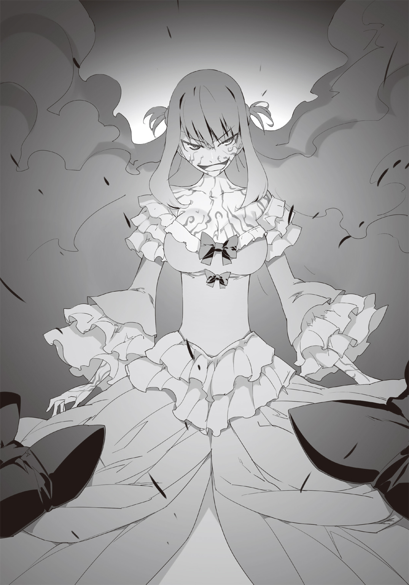
ああ、もう！ この拘束具がなければ！
『愚かだな。......消えろ』
魔神が小さく呟いた。
『【炎よ、爆ぜろ】』
瞬間、極大の炎が生み出され、それは真っ直ぐにこちらに向かってくる。
ダメだ。手が動かせない以上、防御魔法も使うことができない！
「リョウマ――ッ！」
アイリスの嘆くような呼び声が、部屋中に響いた。
――だけど、放たれた火球はオレに当たることなく、その眼前で打ち砕かれる。
『......なに？』
訝しがるように目を細めた魔神に、対抗するものがあった。
『てめえ！ 兄弟に手出しはさせねえぞ！』
マンゲツ！ そうか！ お前がいたな！
オレの前には、マンゲツによって作られた最高レベルの魔法障壁ができていた。
『忘れてもらっちゃ困るぜ、兄弟。さっきは不覚をとっちまったが、もう二度とてめえを窮地には立たせねえ！』
「......ああ！」
頼りにしてるぜ、マンゲツ！
『月輪の鎧か。下らん。我の創りし道具に過ぎぬお前が、逆らうか』
『ほざけ！ おれの主はグレディスの旦那だ。間違ってもてめえなんかじゃねえ！』
『あれは既に我が傀儡であった。お前が接していたのは、ほんの少し、我が戯れに残した人格の欠片に過ぎない』
『たとえそうでも、おれが仕えていたのはガルフレアの皇帝、グレディス＝ナクナ＝フェルモント、ただ一人だ！ 旦那の意識を奪い、好き勝手やりやがったてめえを、おれは絶対に許さねえ！』
『あの暴走が我のせいだと言うのか。笑わせる。我はグレディスの欲望を増幅させる手助けをしたにすぎない。あの男は望んで我に食われ、その意志を委ねたのだ』
『うるせえ！ それを後悔していた旦那を......てめえは、無理矢理に戦わせたんだ！』
『......やれやれ。たかが道具が少し喋り過ぎだぞ』
魔神が両手を、まるでオーケストラの指揮者みたいに振り上げた。
『【我、ここに連鎖する混沌の破壊を授ける】』
周囲に、次々と魔法が生み出されていく。火や雷や風や氷、一つ一つは小さいが、無数に存在する現象――刹那、その全てがオレに向かって襲来してきた。
『うおおおおおおおおおおおおッ！』
マンゲツはそれを前面から受け止めた。激しい音を立てながらも、障壁は連撃を受け止め、立て続けに無効化していく。
『よく耐えるものだ。しかし、所詮は我の創りだしたもの。主に敵うと思うか』
指を振り、新たな魔法を作りだす魔神。それは、まるで夜を懲り固めたかのような漆黒の不安定な塊だった。
『――【砕け散れ】！』
投擲した魔法が、マンゲツの展開した障壁に正面からぶち当たる。
『その程度の力が、このおれに効くかああああ！』
マンゲツが吼える。オレもそう思っていた。今までの攻撃に耐えた壁が、たかだか一発ごときでどうにかなるはずもないと。
その黒い塊が――瞬時に膨張するまでは。
『な......に......』
マンゲツが呟いた直後。――途方もない爆発が巻き起こった。
とてつもない衝撃が弾け、オレは自分の体が後ろへと吹き飛ぶのを感じる。
そう。ダメージを受けたのだ。マンゲツの障壁が......魔法を防げなかった。
「がはっ......！」
背中を壁に打ちつけ、オレは力が入らず、そのままずるずると床に腰をつける。
遅れて、背中がとんでもなく痛くなってきた。
「い、今の魔法は、なんだ!?」
アイリスが戸惑いの声を上げる。
「......油断してた。そうだ。お前にはそれがあったんだったな」
オレは、痛みを堪えながら呟いた。三年前にも、苦労させられたんだ。
「【混沌魔導】......！」
それは、魔神だけが使える究極の魔法。
『そう――その通り。我が人間どもに教えた力......それは火、水、土、風、雷を中心とした、属性を操る術。そして自らの体を守り、癒すもの。しかしもう一つだけ、全く異なる系統を持つものがある。それこそが、混沌魔導だ』
有り体に言ってしまえば、火でも水でも土でも風でも雷でもなく、魔力そのものを単純な破壊エネルギーとして転換して発動するものである。
効果が一辺倒で応用が利かないが、その分とんでもなく威力があり、しかも、防御魔法などでは打ち消すことができなかった。
まさに世界に混沌を齎すためだけに存在する、全ての魔法の上位に存在するものである。
言い伝えによれば、人間に教える前にアラムヴェルトによって封印されてしまったため、結果的に魔神だけがもつものになってしまった、ということだ。
『くっ......ちくしょう！ またかよ！ またおれは役に立てねえのかよ！ ああ、豚だ！ おれは最悪の豚野郎だ！』
マンゲツが自嘲するが、そんなことはない。お前は今まで色々と助けてくれた。今回は相手が悪かっただけの話だ。
『つまらん余興だったな。さあ......かつて我を打ち倒した憎き男よ。汝の助力となった女の手によって、微塵となるがいい』
魔神が心から楽しそうにそう言ってきた。その手に、先ほどと同じく闇の塊が形を成していく。
「......随分とオレを恨みに思ってるんだな。そんなにただの人間にやられたのが悔しかったのか？」
オレは軽口を叩きながら、打開策がないかを頭の隅で探し続けていた。
それを知ってか知らずか、魔神が乗ってくる。
『ああ......そうだな。あれは驚いた。精神体としてしか存在できぬ身とはいえ、まさか、人間如きが我と同じほどの魔力を有し、正面から渡り合うとは。アラムヴェルトに敗れて以来、久しく味わったことのない屈辱だったぞ』
「また同じことが起きるかもしれないぞ。気をつけなくていいのか？」
話しながら、オレはじりじりとした焦りを感じていた。
ほんの少しでもいい。この場を逃げ出せるだけでもいいから、隙が欲しい。
そうすれば、まだ何かの手は打てるのに......！
『もちろん、気をつけている。故に汝はここで確実に消しておくのだ』
一歩、魔神がこちらに近づく。今この瞬間、オレが生きているのは単なるこいつの気まぐれに過ぎない。その気になれば、容易に殺されてしまうのだ。
その事実が、ぞわりとした寒気を生んだ。
――だが、瞬間。
「......ッ！」
鋭い気合の声と共に、入り口から走る影があった。
獣の耳と尻尾をなびかせる姿は――ロザリだ！
彼女は、大剣を掲げ虚空に銀閃を煌めかせた。
それは、魔神を切り裂かんとして鋭利な軌道を描く。
『なに......!?』
でも、その直前に魔神は振り返り様、魔法を発動していた。
中空を貫く氷の礫が、ロザリの身を穿つ。
攻撃を中止し、即座に両腕を交差して防御の体勢を取った彼女は、それらを全て受け止めて尚、微動だにしなかった。
「今だ。――リョウマ！」
短い言葉の指示。オレは生じた隙を見逃さず、即座に反応した。
「うおおおおおおおっ！」
重過ぎる枷に捉われたまま、強引に手を持ち上げた。ふらふらとして、まるで狙いが定まらない。......それでも。
「【空よ、鋭き刃となって斬り裂け】！」
狙いを定めると、一陣の疾風波を発生させ、解き放った。
だが――それは容易く魔神にかわされ、そのまま背後へと突き抜けていく。
『無駄な足搔きを......』
魔神が、愚かさを嘲るように口元を歪める。
『――死ね』
直後、宣告と共に、オレに向けて混沌魔導を発動した。
闇が音もなく、オレの首を狩る死神のように迫りくる。
万事休す。誰がどう見たって、そんな場面だ。
もちろん、魔神とて、そう思っているはずだった――。
「【光よ。我が手によって集結し、敵を倒す剣となれ】！」
――でも。
その時、聞き覚えのある声が高々と響き、魔神の背後で真っ白な光がスパークした。
それはオレの見ている前で凝縮し、丁度、長剣を思わせるような姿となる。
――貫通。
『ガアアアアアアアッ！』
突如として現れた光の剣は、魔神の体に、真っ直ぐに突き刺さった。
『こ、これは......輝術......!?』
初めて苦悶の顔を示し、魔神は振り返る。
「リョウマから離れろ、下郎め！」
アイリスだった。彼女は手に光を収斂させ、先ほど見せた剣を作りだす。
『お......前......神族か......！』
荒く息をつきながら、魔神が憎々しげな口調で吐き捨てた。
「リョウマばかりに気を取られ、私に背を向けていたのが仇となったな。輝術は直接的な攻撃力はないが、お前のように魔力の塊ともいうべき存在には実によく効くぞ！」
「ナイスだ、アイリス！ これならガーネットの体を傷つけずに済む！」
オレの賞賛に、アイリスは微笑んだ。
『お前......あの魔法は、我ではなく......！』
怒りを込めた声で魔神が言ってくる。そう、その通りだ。
あの風の魔法は外したんじゃない。――はじめから、後ろにいるアイリスの拘束具を破壊するためのものだったんだよ！
『おのれ......ッ！』
魔神が動こうとする。でもそれより前にアイリスは再び唱えた。
「【黄金の輝きよ、星となって敵に降り注げ】！」
彼女の頭上にできあがった光の礫が、断続的に魔神の体を穿っていく。
『オオオオオオオオオッ！』
直撃を受けると、ガーネットの体を借りた魔神は床を転がり、悶え苦しんだ。
それもそのはずだ。いわば魔力によってできた生命体ともいうべき魔神にとって、輝術による攻撃は文字通り身を削られるような痛みを伴う。
その間にこちらに歩み寄ってきたロザリが、魔法を使ってオレの拘束具を破壊してくれた。
「ありがとう、ロザリ。だけどどうして......？」
「帰りが遅いから迎えに来た」
「そうか。でも、ガーネット相手によく剣を向けられたな」
「悪いが少し様子を観察させてもらった。その上での行動だ」
納得。全てを把握した上で隙を作ってくれたということか。
「よし......今のうちだ。逃げるぞ、アイリス、ロザリ！」
オレはアイリスの手を引いて、第一宝物庫から急いで出ていった。ロザリも後ろからついてくる。
だけどすぐ背後で派手な音が響き、振り返ると、魔神がドアを破壊して出てくるところだ。もう受けたダメージが回復してしまったらしい。
「どうする、リョウマ。私の輝術だけでは魔神を打ち倒すことができないらしい」
かといって、普通の魔法ではガーネットを傷つけてしまうか......。
『なにか方法はねえのかよ、兄弟。てめぇ、前にグレディスの旦那......いや、魔神と戦った時に使ってた武器があるじゃねえか』
「......リベリオンか」
確かにあれがあれば、魔神に対抗できるだろう。
「だがリョウマ、その剣とて物理的な衝撃を発生させるのだろう？ 無闇に使えばソレイユ王女の命すら危うくなってしまうぞ」
アイリスの言うことは尤もだ。ただ、
「......そうとは限らない。リベリオンがもつ、もう一つの力を使えば」
後ろで何かが爆発するような派手な音が鳴った。魔神が手当たり次第に魔法を使い始めたのだろう。
「もう一つの力......？」
アイリスが必死に走る中、息を切らしながら問いかけてきた。
「前にも言ったけどリベリオンは使い手の魔力に応じて力の強弱を変える。だけどそれとは別にある能力が備わってるんだ」
長い廊下を進みながらオレは応える。
「魔力を輝術に転換して放つ。――そんな能力だ」
「なんだと......？ そんなことができるのか!?」
「リベリオンを造ってくれた種族の中には神族もいて、彼らの協力もあって対魔神用にそういう機能がついたらしい」
尤も、どうやってできあがったのかはオレの知るところではないが。
「そいつを使えば、さっきアイリスがやったように、ガーネットの体に傷をつけずに魔神を追い詰めることはできる」
「そ、それは素晴らしいぞ、リョウマ！ ではそのリベリオンを使おう！」
「ああ。そうしたいところだが......問題が一つある。加えてそれは、この期に及んで解決が相当に難しい代物だ」
ほとんど不可能に近いと言ってもいいかもしれない。
「ど、どういうことだ。なにが問題なのだ!?」
「――どこにあるかわからないんだよ」
この城のどこか、ということまでは多分、間違いないだろうが。
仕舞った正確な場所が全くの不明だ。
宝物庫にあるのかもしれないが、魔神契約の呪文が書かれた魔導書があったところにわざわざ『第一』とつけるところを見ると、多分、他にもあるのだろう。
でも、果たしてそれが二つなのか三つあるのかはたまたもっとたくさんあるのか、こっちにはまるで見当がつかないのだ。
「そ、そうか......さすがにいちいち探している余裕はなさそうだな」
「悠長に待ってくれるほど、魔神も話のわかる奴じゃなさそうだしな」
『兄弟が剣を預けた時、どこに保管するとか、チラッとでもなにか聞かなかったのか？』
そう言われてもな――と、オレはマンゲツの言葉に薄れかけた記憶を探る。
「......ダメだな。特に覚えはない」
『おい！ 頼りねえな！ しっかりしろよ、兄弟！』
無茶を言うな。オレだってまさかこんなことになるとは思わなかったんだよ！
「リョウマ、本当に何もわからないのか？ いつまでも逃げているわけにもいかないぞ」
「......まあ、何もかもお手上げってわけじゃないんだけどな」
ただ、それをするのにも条件があるんだ。
「リベリオンは魔法が込められた剣だから、マンゲツみたいに意志が宿ってる、まあ、喋ることはできないんだが......その代わり、一度力を使いこなせば、そいつを持ち主と決めて、付き従ってくれるんだ。そうしたら――」
「そうしたら、なんだ!?」
期待に満ちた目をしたアイリスにオレは言った。
「呼べば、手元まで飛んでくる」
『いいじゃねえか！ それだ！ なんでもっと早く言わねえんだよ！ さあ、呼べよ、兄弟！ てめえの昔の相棒を！』
「......上手くいくといいんだけどな」
オレは頭を搔きながら、やってみるだけやってみるかと、声を張り上げた。
「――来い！ リベリオンッ！」
その時、どこからか風を切るような音が聞こえてくる。
するとまるで弾丸のような速度で、どこからか現れた銀の光がオレの前に突き刺さった。
それは一本の剣。持ち主の声に応え、再び姿を見せてくれたのだ。
リ、リベリオンッ！ 来てくれたのか！ 嬉しいぞ！
「......ってなればよかったんだが」
世の中、そんなに甘くない。
『おい、どうした、兄弟。ちっとも反応がねえじゃねえか！』
そう。さっきのは『そうなったらいいのに』という妄想だ。実際、リベリオンは影も形も存在していなかった。
「やっぱりダメか......」
「どういうことだ。なにが原因だ!?」
アイリスがすわ緊急事態かとばかりに焦るが、オレにとっては予想できていたことだ。
「実はリベリオンを呼べる範囲、かなり限られてるんだ。割と結構、近くにいないとこっちに来ない」
『それ飛んでくる意味あんのか!?』
うるさいな、マンゲツ！ オレだってそう思ったよ！
「とにかく！ リベリオンのあるところを把握しない限りはどうにもならん」
「むう、参ったな......」
アイリスが唸る。全くだ。
どこか保管場所を示した地図でもあればいいんだが、都合よく発見できるとも思えなかった。
「ロザリは何か知らないか？」
オレが尋ねると、それまで黙っていたロザリが口を開いた。
「リベリオンの扱いは王とガーネットが決めた。どこにあるかはわからない」
......ダメか。どうしたものかな。
「ただ」
と、そこでロザリは付け加えた。
「宝物庫は基本的にある類型に基づいて分けられている。それぞれの宝に合った場所が用意されているんだ」
「具体的に、どういうことなんだ？」
「それは――」
と言いかけたところで、ロザリの背後で爆発が起こった。
彼女は目を見開き――そのまま、ぐらりと倒れる。
「ロ、ロザリ!?」
慌てて足を止め、オレは振り返ると、ロザリの様子を確かめるためにその場でしゃがみこんだ。彼女の身に着けていた鎧が砕け、内側の背中が大きな火傷を負っている。
「......逃げ......ろ......リョウマ......」
ロザリはか細い声でそう言うと、意識を失った。
『そろそろ追いかけっこも終わりにするとしよう』
濁ったような声に顔を上げると、魔神に意識を乗っ取られたガーネットが、こちらに向かって歩み寄ってくるところだ。
オレはロザリを担いで逃げ出そうとして、前を向き、
「......しまった」
会話に夢中でとんでもない失態を犯していたことに気づいた。
目の前には、頑丈そうな扉が厳然と聳えている。行き止まりだ。
ノブを握ってみたが、やはりというべきか、しっかり鍵がかけられていた。
「くっ......！ 【光よ。我が手によって集結し、敵を倒す剣となれ】！」
アイリスが再び輝術を行使する。凝縮された光の束が刃となって、魔神へと放たれた。
『無駄だッ！』
だけど、大声と共に魔神が腕を振るうと、たったそれだけのことでアイリスの攻撃は跡形もなくかき消されてしまう。
「私の輝術が......!?」
『油断していた時ならいざ知らず、いかにアラムヴェルトの威光を帯びているとはいえ、小娘一人の力が我に通じるはずはなかろう』
こちらを馬鹿にしたように鼻を鳴らす魔神。その手に、闇の塊が蠢いていく。
『二度とふざけた真似は許さん。――消えろ』
死の宣告と共に、こちらに向かって、混沌魔導が牙を剝いた。
『なめんじゃねえ！ 根性見せたらあああああ！』
マンゲツが吼え、魔法障壁を張る。それは相手の力と拮抗するように激しい火花を散らし、その進行を防いだ。
『はははは！ どうだ！ おれが本気になればざっとこんなもんよ！』
『......よく喋る道具だ』
魔神を宿したガーネットの口元が、その時、歪められた。
『すぐに、黙らせてやろう』
こちらに差し出してきた両の掌。そこへ――同時に二つの漆黒が生み出される。
『な、なんだと!? 聞いてねえぞ、そんなもん！ 卑怯だぞ、コラァ！』
文句を言うマンゲツに何も返さず、魔神は二つの混沌魔導をこちらに投擲した。
衝突。途方もなく莫大な力が鼓膜を打ち破るかのような轟音を鳴り響かせた。
『負けるかァァア――ッ！』
マンゲツは耐えた。魔法障壁を張ると、自身に備わったもの全てを投じるかのように混沌魔導に対抗し続ける。
『ぬおぉぉおおおおぉぉ！ 男見せたれやあああ！』
その頑張りは誰がどう見たって表彰もので、もしかしたら本当にこのまま力を打ち消してくれるんじゃないか、そんな風にも思えた。――だけど、
『くっ......ぐっ......！』
マンゲツは少しずつ苦しそうな声を漏らし始め、遂には、オレ達に向かって言った。
『く......そっ......！ 兄弟......お嬢......！』
途切れ途切れに、それでも、希うようにして。
『すまねぇ......！ 逃げろォ――ッ！』
障壁が、粉々に砕け散る。マンゲツの殺し切れなかった衝撃が、オレ達目がけて襲いかかってきた。
「――アイリスッ！」
咄嗟にオレは、アイリスを庇って混沌魔導に背を向ける。
特に何かを考えていたわけじゃない。ただ頭の中にあったのは、彼女を守らなきゃいけないという、それだけのことだった。
死んじゃいけない。
そう痛切に思ったのだ。
アイリスを――こんなところで、死なせるわけにはいかない！
「ああああああああああッ！」
全身を言い表せられないほどの痛みと衝撃が苛んだ。オレは自分の口から絶叫が迸るのを聞きながら、そのままアイリスを自分の懐に抱き、自分の体が無造作に吹き飛ぶのを感じた。
壁に激突し、頑強な素材を打ち砕きながら、更に内部へと転がり込んでいく。
その全てが自分の身に起こっているとは思えない、どこか非現実的なものとして認識された。
やがて、気がついた時には――オレは知らない部屋の中で、床で仰向けになっていた。
「リョ、リョウマッ！ 大丈夫か、リョウマッ！」
アイリスがオレに呼びかけている声が、遙か遠くから聞こえてくる。
どうやら、耳をやられてしまったらしかった。
いや、それだけじゃない。体が全くといっていいほど動かないのだ。
オレは一体、どうなってしまったのだろうか。
痛みはない。でもそれが、逆にある種の不安をこちらに抱かせた。
......もしかして、死にかけてるのか？ オレ。
『兄弟！ おい、しっかりしろ！ 大丈夫だ！ 意識をしっかりもて！』
マンゲツが励ましてくれるが、それはなんていうか、相当やばい奴に言う台詞じゃなかったか。
無理矢理に目を開けると、薄らとした視界の中に、涙ぐむアイリスの顔が見えた。
その時オレは、場違いにもこう思う。
ああ、この子......やっぱり可愛い。
可愛くて、しかも責任感が強く、努力家で、誰にでも分け隔てなく優しい。
......そんな彼女を守れて、本当によかった。
「嫌だぞ！ リョウマ！ 私に死ぬなと言ったではないか！ それなのにお前は何故こんな無茶をするんだ！」
オレの体に縋りつき、アイリスはその手で治癒魔法をかけながら、泣いた。
「バカッ！ リョウマの......大馬鹿者ッ！」
ああ、そうだ。馬鹿だ。
結局、こんなことしたって彼女を悲しませるだけなのに。
馬鹿馬鹿しいにも、ほどがある。
『......それにしても、解せぬ男だ。三年前も異世界から召喚され、グレディスと――いや、帝国と戦い、そして今度はその支配者の娘に味方する』
魔神が心底から理解できないというように問いかけてくる。
『汝は――一体、何のために戦っている？』
......それはお前、決まってるだろ。
三年前だって、そうだった。
英雄だとか祭り上げられて、打倒皇帝だとか血気に逸る奴らに頼まれて。
戸惑い、突然のことに迷っていたオレがそれでも決意を固めた最初のきっかけは、ガーネットがいたからだった。
真剣に、心から皆を救いたいと願った彼女の姿を見たから。
次にそんなガーネットが守りたいと思う、この世界のことを知ったから。
オレは、自分にやれることがあるなら、手を貸したいと思ったんだ。
あの時と変わってない。
自分でも馬鹿だと思う。そんなもの、理由にもなってない。それでも。
「男だからさ......」
――それでも。
「困ってる女の子は......守ってやりたくなるんだよ」
たった、それだけのことだった。
『......下らん』
魔神が一歩、また一歩とこちらに近づいてくる。
『こんな愚かな人間に一度でも膝を屈したことが腹立たしい。......汝を滅して、全てをなかったことにしてくれる』
「リョ、リョウマに近づくな！」
アイリスがオレと魔神の間に立って両手を広げる。
「やめろ......アイリス......！」
オレはか細い声を上げたが、彼女は首を何度も横に振った。
「さ、先ほど言われた言葉をそのまま返すぞ、リョウマ！」
そして、激しく、オレを叱りつけるように言い放つ。
「お前を失って、私一人だけ残されたところで――このまま旅を続けることなどできん！」
「......ぐっ」
ああ、そうだ。わかってる。お前がそういう奴だってことくらい。
だけど――だからって、みすみす目の前で殺させてたまるかよ！
「......動け......」
動けよ、オレの体。いつまでも寝転がってる場合か。
皇帝を倒した英雄？ 笑わせんな。
ここで立ち上がらなきゃ――わざわざ異世界に呼ばれた価値がないだろうが。
それに、わかってるのか、お前。
お前はまだ、ガーネットに、大事なことを伝えてないんだ。
それを成し遂げる前に――彼女を魔神なんかに奪われたままで、いいのか!?
「く......あぁぁぁぁあッ！」
オレは気が遠くなるような痛みの生じる体に鞭を打って、強引に立ち上がった。
マンゲツが大部分の混沌魔導を防いでくれたのと、先ほどアイリスから治癒魔法を受けたためだろう。ほんのわずかだが、無理が利くくらいの余力は残っていたようだ。
「邪魔するな......魔神......！」
オレはふらついた足取りで歩き出し、アイリスの隣に並ぼうとする。
「オレと......アイリスは......まだやることがあるんだ......」
帝国を復興させる。そのためにはまだ多くの国を巡らなくてはならなかった。
「それだけじゃない......ガーネットが......オレの返事を待っている......」
だから、意地でも食い下がる。
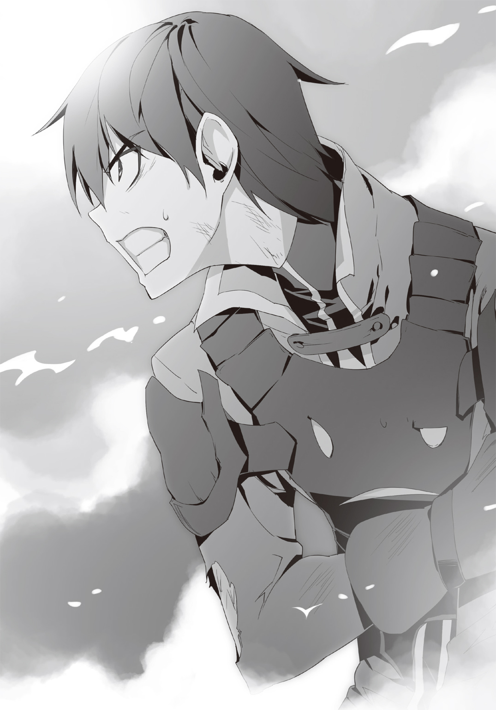
「こんなところで......お前程度の奴に......足止めを食ってたまるか......！」
もうお前の時代は終わったんだ。とっとと元いたところに戻れよ、化物！
「......見てろ......今すぐ、お前を打ち倒してやる......ッ！」
だけど――威勢のいい啖呵を切ったあと、オレは、体を制御する力を失った。
部屋の中に仕舞われていた数々のものを巻き込みながら、倒れ込んでいく。
『クク......ハハハハハハハハハ！』
そんなオレを見て、魔神が哄笑を上げた。
『愚かだな。全くもって愚かだ。間抜けな姿に免じて、一瞬で終わらせてやろう』
アイリスは未だ、攻撃を全身で受け止めるかのような体勢で佇んでいる。
「......なんでだよ」
ここで一矢報いなくて、どうするんだよ、オレ。
「諦めんな！ 戦えよ......ッ！」
オレはもう一度立ち上がろうとして、体を起こした。
でも、意に反してすぐに脱力すると、そのまま横に転がってしまう。
目の前に、部屋の中にあったものが散乱しているのが見えた。
『ふん。後生大事に様々な物を集めているようだが、我からすれば全ては塵だな』
足元に転がった銀の兜を、魔神が蹴る。次いで指先を立てると、黒々とした球体が現れ、渦を巻いた。
オレはその光景を、ぼんやりと眺める。
全てが、終わりに向かって進もうとしていた。
あらゆるものは止めようがなく。ただあるがままに用意された結末へと行き着くだろう。
オレ達の死という、最悪のエンドクレジットに。
「......無念だ。帝国の民に申し訳がない」
アイリスは俯き、唇を嚙み締めた。
「まさか、父上を脅かした魔神に、私までもが敗れるとは......！」
ああ、そうだな、アイリス。
アラムヴェルト。お前が神様だっていうなら、この運命はあんまりだ。
あんまりにも――救いがなさ過ぎる。
暗澹としていたオレの前には、数多の武器や防具が横たわっていた。どうやらここは、何かの倉庫らしい。どれも高価そうな金や銀で作られていた。
だけど普通の相手ならいざ知らず、そんなものでは魔神に傷一つつけることはできない。
この中のどれを手にしたところで、何の意味もなさなかった。
故にオレは、絶望的な気分で視線を這わせていき――。
『お前も塵に埋もれて、同じ存在と化すがいい！』
魔神が遂に混沌魔導を発動したその瞬間、目を見開いた。
――宝物庫は基本的にある類型に基づいて分けられている。それぞれの宝に合った場所が用意されているんだ。
ロザリの言葉を思い出す。そういえば第一宝物庫にはたくさんの装飾品や調度品があった。
そしてここには――ここには、何がある？
「......どけ、アイリス」
オレは、床に手をつき、掠れた声で言った。
「何を言う。私は絶対にここを動かないぞ！」
「言うことを聞け！ 危ないんだよ！」
「嫌だ！ お前だけを犠牲にするわけには......！」
「だああああああああ！」
オレは正真正銘、最後の力を振り絞って体勢を立て直した。
「そういうことじゃねえんだよ！」
「......え？」
震える手を伸ばし、息を吸い込む。
『――消えろ』
瞬間、黒々とした球体がアイリスを屠ろうとした。――だけど。
「こんなところに眠ってたのかよ、相棒！」
オレは、余裕の笑みを浮かべながら、その言葉を解き放つ。
「来いよ――【革命の刃】ッ！」
それが、全ての事態を打開する切り札となった。
部屋の中を閃光が走り、闇の塊を撃ち貫く。
それはその場で爆発し、アイリスは衝撃の余波でこちらに押されてきた。
彼女の体を受け止め、オレは、飛んできた光を――摑み取る。
『......なんだと......!?』
魔神が動揺を示す。当たり前だ。オレだってびっくりだ。
オレの手の中には、今、ひと振りの剣が存在していた。
銀でもなく金でもない金属でできた刃。鍔に埋め込まれた宝玉が、紅色の輝きを示す。
それは正真正銘、本物の、オレの武器。
かつて魔神を破った、究極の魔法剣――リベリオンだった。
「リョウマ......ッ！」
アイリスが満面の笑みで喜びを表す。
オレは剣の柄を握り、目覚めの言葉を言い放った。
「リベリオン！ オレの魔力を輝術に変えろ！」
即座に命令を受諾したリベリオンがその身を震わせ、多大な輝きを放出する。
白き光が剣身から発せられ、部屋中をあまねく照らし出した。
「形勢逆転だ！ 魔神！」
オレは、上段に構えたリベリオンを――そのままの勢いで、振り下ろす。
「終わるのは、お前の方だ――ッ！」
熾烈なまでの光の裂波が迸る。オレの中にある魔力は、アラムヴェルトの齎す光となってガーネットの体に宿った魔神を切り裂いた。
『グ......アアアアアアアアッ！』
直撃を喰らった魔神は頼りなげな足取りを見せ、そのまま場に蹲る。
『ああ......馬鹿な......この程度で......我が......』
するとガーネットの体から、黒い霧が噴出し、それは空中で一つの姿を形成した。
それは悶えるように身をよじり、やがて、
『ギィアアアアアアアアアアアッ！』
世にもおぞましい絶叫を上げて――欠片も残さず消滅する。
あとに残されたガーネットは、薄らと目を開き、
「リョウマ......様......」
オレの名前を呼ぶと、すぐに気を失った。
「......。......お、終わった」
かなりギリギリだったけど、倒すことができた。
「リョウマ......！ リョウマ、やったぞ！ お前は凄い！ 再び魔神を倒したのだ！」
アイリスが諸手を上げて、抱きついてくる。
......いや、まさかオレも、たった一撃で解決できるとは思わなかったぞ。
ひょっとしたら、アルフレンの魔力が弱かったから、現れた魔神も不完全な状態だったのかもしれない。
『さすがおれの兄弟だぜ！ なあ、おい、ここは格好よく勝利宣言といこうぜ！ さあ、存分に張り切ってやれよ！』
「......は、はは」
悪い、マンゲツ、そんな余裕は――ないかもしれない。
「ごめん。......さすがに限界だ」
そう口にするので精一杯で。
オレは、その場で派手に倒れ込んだ。
「......お、おい、リョウマ!?」
アイリスの心配する声に応えたかったけど。
オレは、自分の意識が闇に落ちていくのを感じていた。
最終章 小さい。けれど偉大な一歩
誰かが呼んでいる気がする。
母親が、いつまで経っても起きてこないオレに怒っているのだろうか。
だとしたら、早く目を覚まさないと、朝食を食べながら延々と文句を言われる羽目に遭ってしまう。ああ、あと五分は寝ておきたかった......。
そんなことを考えながら、重い瞼を上げると――二人の女の子がいた。
どちらも残っていた眠気を吹き飛ばしてしまうほど、衝撃的な美貌を持っている。
一流の女優より、華やかなアイドルより遙かに整った造形に、オレは目をしばたたかせて。
「......あれ？」
状況が上手く把握できずにそんな声を上げた。
その時。
「リョウマ様ッ！」「――リョウマッ！」
女の子二人が、同時にこちらの懐へ飛び込んでくる。
「おぶっ！」
いかな可愛らしい子達であるとはいえど、ダブルでのタックルは少々堪えた。
体が大きく沈み、自分が豪華なベッドの上で寝ていたことを今更に知る。
「リョウマ！ よかった！ このまま目を覚まさないのではないかと思ったぞ！」
「ああ、本当に、ご無事で何よりです！」
オレを左右から抱きしめながら、彼女達は交互に言ってくる。
そこでようやく、意識がはっきりとしてきた。
そうだ。オレは異世界に召喚されて、魔神に操られたガーネットと戦って、すんでのところでリベリオンを使ってなんとか事態を上手く収めて......。
あれ、それからどうなったんだ。
「リョウマ様、あなたは七日も眠り続けていたのですよ」
蜂蜜色の長い髪を持つ女の子、ガーネットが目尻を拭いながら口元を緩める。
「受けた傷も深く、治療魔法で回復させるのにも随分と時間がかかった。......一時はどうなることかと思ったぞ」
胸を撫で下ろしたように、黒髪の女の子、アイリスがそう言ってきた。
「そうか。やることやったらそのままぶっ倒れたんだっけ......」
どうやら相当に危ない状態だったようだ。
「アイリスとガーネットに怪我はないのか？」
現状を確認するとそちらの方が気にかかってきた。
でもオレの質問に何故か二人は顔を見合わせ、やがて、さも可笑しいことであるように一緒に噴き出す。
「ん？ ん、どうした？」
なにか変なこと言ったか？ オレ。
「本当にお前は......他人のことばかり心配しているのだな」
「ご心配なく。わたくし達は大事ありません」
アイリスとガーネットが順に言って、笑顔を見せた。
「そうか。それはよかった。いやあ、それにしても結構やばかったな」
まさか魔神が復活するとは思わなかった。あそこでリベリオンがなかったら、確実にやられていただろう。
「......本当に申し訳ありません、リョウマ様」
そこでガーネットが肩を落とし、深く頭を下げてきた。
「まさかお兄様があのような考えを持っていたとは露知らず、わたくしはなんと恥ずかしい真似をしたのでしょう。あろうことか、リョウマ様を疑ってしまうなんて」
「いや、まあ、無理もないって。オレの言ったことも無茶だったしな」
そりゃ、かつて一緒に皇帝を倒したオレが、今度は帝国の味方になって現れたとしたら、混乱することだろう。
「いえ。もっときちんとお話をすべきだったのです。そうすればリョウマ様が操られていないことなどわかったはずです。......フェルモント皇女にもなんとお詫びすればいいか」
「それはもう散々話し合ったことだ。過ぎたことをとやかく言っても始まるまい」
アイリスが首を振ってガーネットをとりなす。
「リョウマの言う通り、かつて父上の行ったことを考えれば、ソレイユ王女の対応は尤もだ。私の方こそ、こちらの行ったことで、ティタニアを我が国の二の舞にするところだった。本当にすまない」
「いえ、それは全てお兄様――アルフレンの邪な心が招いたことです。本当に、どうしてあんなことを......」
「......まあ、わからないでもないけどな」
ガーネットの言葉にオレは頭を搔いた。
「オレ自身、元の世界じゃ何の取り得もないような奴だしさ。ガーネットみたいに頭がよくて才能もある子を見てると、嫉妬みたいな感情が浮かんでくることもある」
だからといって、あんなことを仕出かしていいわけじゃない。
ただ――大き過ぎる力というのは、グレディス同様、人の弱い心を刺激し、その裏に潜む欲望を増幅させてしまうものなのかもしれなかった。
「何を仰います。リョウマ様は、素晴らしいお方ですっ！」
ガーネットが突然、そこで身を乗り出すように言ってくる。
「その通りだ。お前ほど尊敬に値する男はいない！」
アイリスもまた腕を組み、同意するように何度も頷いた。
「リョウマ様はこれで二度も世界を危機より救ったことになるのですよ。ああ、なんと素晴らしいことでしょう！」
「さすが英雄と呼ばれただけのことはある！」
......いや、そう真正面から褒められるとさすがに照れるんだが。
なんとなく背筋がむず痒くなってくる。
『素直に受け取っとけよ、兄弟。元の世界じゃどうだか知らねぇが、アラムヴェルトじゃお前は間違いなくすげぇ奴だ』
最早お馴染みとなったその声に視線を傾けると、やっぱり、そこにはテーブルの上に載った黒い鎧があった。いや、いた、というべきだろうか。
「マンゲツ！ お前も大丈夫だったのか！」
『当たり前だ。兄弟こそ、ずーっと目を覚まさないからやきもきしたぞ。お嬢もそこのガーネットも、これでもかってくらい泣き続けてたんだからな。全く、罪な男だぜ』
「マンゲツ、余計なことを言うなッ！」
「そ、そうですよ！ 何もリョウマ様に教えなくてもいいことです！」
アイリスとガーネット、頰を染めた二人から交互に責められてマンゲツは高々と笑った。
どうやらオレが眠っている間に、ガーネットはマンゲツを紹介されたらしい。
「......それにしても、アルフレンさんとモーヴェのことは残念だったな」
まさか、魔神に殺されてしまうなんて。
自業自得、なんて言ってしまえばそれまでのことなのかもしれないが。
それでも――やっぱり、嫌な気分は拭えなかった。
「ええ......。モーヴェは有能な国伯で、父上も頼りにされていました。それが、あんな野心を持っていたなんて」
ガーネットは嘆くような息をつく。
「それに......アルフレンお兄様も。たとえ半分しか血が繫がっていなかったといえど、わたくしの兄に代わりはありません。直接の国政には関わってはおりませんでしたが、若輩者のわたくしに何度も的確な助言をしてくださり、本当に感謝していました。幼い頃はわたくしが眠るまで本を読んでくださったり、大きくなったあとも、お茶を飲みながら夜遅くまで夢中でお話ししたこともあります。それなのに......」
視線を落とし、込み上げてくる辛さが表情に出るのを隠すように、ガーネットは両手で自分の顔を覆った。
もしかしたら、無理矢理に忘れようとしていたことを、オレのせいで思い出させてしまったのかもしれない。
「ごめん、ガーネット、悲しませるつもりじゃなかったんだけど......」
「......いえ、よいのです」
しばらくしてからようやく顔を上げたガーネットは、もう、いつも通りの彼女に戻っていた。
「お兄様がああした考えをもってしまったのは、わたくしの気遣いが至らなかったためです。そのことを自戒とし――二度と同じようなことが起こらないようにしたいと思います」
......ああ、そうだ。
苦しみも、後悔も、必要以上に引きずらず、寧ろ前へと進む糧にする。
それが、ガーネットの強さだった。
「......よくぞ言ったぞ、ガーネット」
そこで掠れた声が響き渡る。
部屋の入口の扉が開かれて、そこから一人の男が姿を現したところだった。
傍にロザリを控えさせた彼が、こちらに向き直った時。
オレは目を丸くして、思わず声を上げていた。
「こ、国王様!?」
間違いない。ゆったりとしたローブに身を包んだその姿は酷く瘦せ細り、顔も少し落ち窪んでいたため、すぐには気づけなかったが。
ティタニアの君主、アルバート＝フルメ＝ヴェレイ＝ソレイユ、その人だった。
「いや、来るなら教えてくださいよ。びっくりするな......」
慌ててベッドから降りようと動きかけたオレを、アルバート王は制する。
「そのままでよい。ティタニアを救ってくれた英雄に無理をさせるわけにもいかん」
ガーネットとアイリスは慌てたようにオレから離れ、国王に向かって頭を下げた。
「......随分と瘦せられましたね。ご病気のせいですか？」
「うむ。とはいえ、幸いなことに今は随分とよくはなった。もう間もなく政務に復帰できるだろう」
それは何よりだ。大事に至らなかったこともそうだが......アルフレンさんを失った今、アルバート王にまでなにかあれば、ガーネットが立ち直れなくなってしまうところだ。
「ロザリも、傷はもういいのか？」
オレの問いに、ロザリは頷くことで返した。
「今回の一件、本当に世話になった。愚息が迷惑をかけたこと、わたしが代わって謝罪する」
アルバート王は、そう言ってこちらに一礼する。
「いやいやいや、何もオレに謝らなくても！ 本当、もう、終わったことなので。気にしないでください。......オレの方こそ、アルフレンさんを助けられなくてすみませんでした」
「いや――よいのだ。あいつの心根をはかることのできなかったわたしの落ち度だ。......ガーネットの言う通り、二度と同じことが起きぬようにしなければなるまい」
拳を固め、悔しそうに零すアルバート王。
「ガーネットを国王代理に据えたのは、立場上、そうするのが適していると思ったからだ。......しかしわたしとしては、アルフレンと共にティタニアを治めてほしかった。それが伝わらなかったというのは、残念でならない」
......なるほど。そういうことだったのか。
確かに、ガーネットはアルバート王の本妻の子だ。オレの感覚からすれば、能力があればそんなこと関係ないと思うけど、アラムヴェルトではそういうわけにはいかない。
時代的に中世に程近いこの世界では、血が何よりも重要になってくる。
どれほど優れた人でも、選ばれた家系の出でなければ、それに相応しい地位へ就くことは不可能だった。
それは間違っているとか、正しいとかじゃなくて――そういうものだ、と定義するしかないことだ。
もしかすれば将来的に変わってくるのかもしれないが、少なくとも異世界の人間であるオレがどうこう口を出すことじゃなかった。
「......何にせよ、クロセ殿だけでなく、フェルモント皇女にも無用な苦労をかけてしまった。どうか許してほしい」
「もうよいではありませんか、アルバート王。それに――結果的に話を聞き入れてくださったのです。私にはそれで十分です」
アルバート王に対し、アイリスが返した言葉に、オレは驚いた。
「え？ じゃあ......!?」
「あ......そうだったな。すまない。お前が目を覚ましたことが嬉しくて、つい伝えそびれてしまった」
失態を恥じるように頰を染めたあと、アイリスは自身の胸を叩く。
「うむ。そうだ。国王の計らいで――我がガルフレアは、正式にティタニアと協力関係を結ぶこととなった！」
「まじかよ！ やったな、アイリス！」
オレは、喜びを示すために両腕を上げた。
「話し合いの機会を持った結果、フェルモント皇女はかつての皇帝とはまるで違う人物であることがわかった。彼女とクロセ殿の導きにより帝国が生まれ変わるというのであれば、その復興に手を貸すことはやぶさかではない」
アルバート王がそう言って微笑む。
「ありがとうございます、国王様！」
「礼を言うのはこちらの方だ。クロセ殿がフェルモント皇女と共に訪れてくれなければ、わたしはずっと帝国のことを誤解したままだっただろう」
「......本当にそうです」
ガーネットがシュンとした顔を作った。
「それなのに、わたくしとしたことが、冷静さを欠いてフェルモント皇女とリョウマ様を追い返すような真似をして......」
「はいはい。落ち込むのはその辺でいいって」
このままだと堂々巡りになりそうな気がして、オレは苦笑する。
「過去のことをいつまでもほじくり返してたっても何も発展しない。それより今は、上手くいった今の先を見るべきだ。違うか？」
「......リョウマ様......」
ガーネットは目を瞬かせたあとで、ゆっくりと頷いた。
「......そうですね。先ほど言ったばかりです。もうやめましょう」
彼女は振り返り、アイリスと目を合わせる。
「フェルモント皇女。今までの確執や因縁は全て忘れましょう。これからは、帝国ガルフレア復興のため、我がティタニアは全力を尽くします」
「......ソレイユ王女」
アイリスはガーネットの言葉を嬉しく思うように、その口元に笑みを形作った。
二人は互いに握手をし合い、信頼関係を明らかにする。
......うん。色々あったけど――一件落着ってところかな。
「クロセ殿、傷は癒えたが、これからどうするのだ？」
王の問いかけにオレは首を傾げた。
「そうですね......。ティタニアとの協力関係は築けましたけど、残りの四大聖国にも働きかけなきゃいけません。明日にでもこの国を出ようと思います」
「え、そ、そんな！ 早過ぎます！」
ショックを受けたような表情で退くガーネット。
「もう少し、ゆっくりしていってください。せっかく......せっかく、三年ぶりにお会いできたのではありませんか！」
「オレもそうしたいところなんだけどな......。現状、帝国はかなり危ないんだ。一日でも早く色んな国から助力を受けなきゃいけない」
寂しい話だけど、旅の目的を考えれば仕方のないことだった。
「......そうですか......」
ガーネットは見てわかるほどに、落ち込んでしまう。......う、うーん。何か、凄い罪悪感があるぞ。
「......クロセ殿。そういうことであれば、頼みがある。聞いてくれるだろうか」
そこでアルバート王がオレに言った。
「え？ ええ、それはもちろん。......なんでしょうか」
応じたオレに、わずかな間を空けたあと、王は続ける。
「――ガーネットを、そちらの旅に同行させてほしいのだ」
「ええっ!?」
先に反応を示したのは、オレじゃなくて、ガーネットの方だった。
「ど、どういうことですか、お父様!?」
「ガーネット。知らぬことであったとはいえ、お前がクロセ殿やフェルモント皇女に礼を失した行動をとったのは事実。加えて、その結果、魔神契約の発動という事態を引き起こしてしまった。この責任を取るため、お前はクロセ殿の旅に付き添い、帝国復興の一助となれ。ティタニアの王女が味方にいるとなれば、他国もそうおいそれとは彼らを追い返したりはしないだろう」
「そ、それは、そうですけど......」
突然の展開に戸惑うガーネットを横目に、アルバート王は次にアイリスへと視線を移した。
「フェルモント皇女。クロセ殿が目覚める前、既にお話ししたことですが、帝国を救うという目的があったとはいえ、あなたは異世界召喚という禁呪に手を出した。相手が信頼のおけるクロセ殿であった故、滅多なことはないと、わたしはこれ以上何も申しませんが......。そのことを、快く思わぬ者もいるでしょう」
「......そうですね。その通りです」
覚悟している、という風にアイリスが顔を引き締める。
「そんな時、ガーネットがいれば必ず役に立つはずです。未熟な娘ではありますが......共に連れていってはもらえないでしょうか」
「それはもちろん、願ってもないお話です。ですが......仮にも一国の王女がそのような真似をして問題はないのでしょうか」
「ガーネットは強力な魔法が使える。それに――仲間にあなたと、何より英雄のクロセ殿がおられるのです。何があったとして、切り抜けられる。違いますか？」
「......そう......ですね」
アイリスははっきりとは応えないままに、俺の方を見てきた。お前に任せる、とアイコンタクトを送ってくる。
「リョウマ様......本当にわたくしも共についていってよいのでしょうか？」
ガーネットもまた、なにか期待に満ちた目を向けてきた。
「いや、ガーネットはいいのか？ アイリスの時にも言ったけど、何があるのかわからないしさ......」
「わたくしは一向に構いませんッ!!」
無茶苦茶力強く言ったな、おい。
「幸い、わたしの方も近く政務に復帰できそうだ。......クロセ殿さえよろしければ、ガーネットをお願いしたい」
アルバート王が真摯に見つめてくる。
こ、困ったな、おい。
アイリスだけでも色々ハプニング満載だったのに、この上、ガーネットまで来たら、何が起こるかわからないぞ。
『羨ましい話だな、兄弟。両手に花ってやつか？ まあ、最終的にお前がお嬢を選ぶのは確定だとしても、その前にできるだけ女を知っておくってのも悪くはねえ。丁度いいから、この王女様を今夜辺りひいひい鳴かせて――』
「わあああああああ！」
オレはベッドの上を走り、物凄くろくでもないことを口走りそうになったマンゲツを持ち上げて、そのまま床に叩きつけた。
『おでぶっ！ おい！ いきなり何するんだ、兄弟!? おれはお前のためを思ってだな！ ......あ、そうか。初めてだから緊張してんのか？ なぁに、気にすることはねぇよ。ちょっとした技術を使えば、素人のお前だって熟練の指師の如き快感を相手に――』
「だから！ お前は！ 余計なことを！ 言うなあああ！」
持ち上げて遠慮なく振る。振るぞ。振りまくるぞ！
『お、おえええ！ わ、わかった！ わかったからやめてくれ兄弟！ ものすごく酔う！』
......ったく、いい加減にしろよ、このエロ鎧。
「リョ、リョウマ？ どうかしたのか？」
アイリスの声ではっと我に返ると、周りの人達は完全に引いていた。
「あ......い、いや、悪い。なんでもないんだ。忘れてくれ」
咳払いし、オレは、改めてアルバート王に向かって言った。
「その、オレとしてもガーネットが仲間になってくれるのは、ありがたいのですが......」
「......ダメなのですか？ リョウマ様」
断ろうとしたところで、ガーネットが、オレの前に立った。
「わたくしはあなたの旅の同行者に相応しくありませんか？」
彼女は手を組み、潤んだ瞳で訴えかけてくる。......おうふ。やめてその目に弱いから。
「そういうことじゃなくて、やっぱりほら、危険だし」
「それは、フェルモント皇女も同じです！ それにお父様の仰る通り、わたくしは自らの責任を果たさねばならないのです！」
「そ、それはそうだけどさ、えーと......」
......しまった。あとに続く言葉が見つからない。
「リョウマ様......どうか！ このままお二人を見送ったのでは、わたくしもどこか納得いかぬものが残ります！」
更に迫るガーネット。ぐいぐい来るな、お前!?
だけど、アルバート王の言うことも尤もだ。この先、オレとアイリスだけでは今回みたいなトラブルがまた起こらないとは言えなかった。
そんな時、ガーネットが傍にいてくれれば、なんとかなるかもしれない。
王の許可が出たのなら......ついてきてもらった方がいいのだろうか。
「そ、そうだな......」
それでも尚、自分の中で逡巡は渦を巻いたが――。
「......わかった」
やがて、オレは決断した。
「ガーネット、ついてきてくれ。お前の力が必要だ」
「――リョウマ様！」
ガーネットは喜色に満ちた表情で両手を広げると、オレに思いきり抱きついてくる。
「うわっ！ ......ガーネット、国王様がいるんだぞ!?」
「ありがとうございます、リョウマ様！ またリョウマ様と旅ができるなんて......夢のようです！」
ダメだ。全く聞こえてない。
「あの時のお返事――ずっとお待ちしていますからね」
耳元でそう囁き、オレが「お、おう」とかろうじて答えると、
「フェルモント皇女！」
こちらの体を放し、ガーネットはアイリスの方を向いた。
「これから旅へと同行します。何卒、よろしくお願いします！」
「......うむ。リョウマが決めたのであれば私も異論はない。こちらこそよろしく頼むぞ、ソレイユ王女」
「はい！ ......あ、それと、外でも王女、皇女と呼び合っていたのではすぐに身分がバレてしまいます。ここは、お互いに名前で呼び合うのはどうでしょう？」
「ふむ。尤もだな。では、ガーネット。長い旅になるが、道中、仲良くしよう」
「ええ、アイリス！」
仲睦まじい様子で話しあう二人の様子を、オレは微笑ましい気持ちで見守った。
「リョウマ。......ガーネットをよろしく頼む」
それまで口を噤んでいたロザリが、唐突に告げてくる。
それは短い言葉だったけど、ガーネットを想う彼女の気持ちが強く込められているように感じた。
だからオレは、それを承ったことを表すよう、深々と頷く。
アルバート王はその後、まだ体を休める必要があると、ロザリと共にこの場を去っていった。
父親を丁寧に見送ってからしばらく、ガーネットは、会話を再開させる。
「......ところでアイリス、お茶の席でも申しましたが、あなたはまだリョウマ様とお知り合いになったばかりで、あの方のことをよくご存じないでしょう。リョウマ様のお世話はわたくしに全て任せていただいて構いませんよ？」
「ほほう。それは助かる。だが、私も短い間ではあるが、リョウマと二人きりで旅をした身だ。彼のことはそれなりに理解している。ガーネットにだけ何もかも押しつけるつもりはないぞ」
「よいのですよ、無理をしなくても。リョウマ様にはわたくしがずっと付きっきりになりますので」
「なにを言う。私とて彼には世話になっている身だ。その礼を少しでも返すために、できる限りのことはするぞ」
「いえいえ、わたくしが――」
「いや、それには及ばない。私の方が――」
......ん？ ぼうっとしている間に、なんかアイリスとガーネットの様子がおかしいことになってないか？
「......アイリス。どうしてもリョウマ様のことを譲らないつもりですね？」
「そうだな。今回の協力によって、ガルフレアとティタニアは対等な関係となった。で、あれば、リョウマのことに関してもそれは同じであるはずだ。彼は帝国にとっても、私にとっても大切な人物。故にガーネット、リョウマはお前だけのものではないのだ」
「いいでしょう。ならば、どちらがリョウマ様のお世話をするのに相応しいか、旅の中で確かめることにしましょう」
「......面白い。事をはっきりさせるのは嫌いじゃない」
いや、ちょっと待て。なんでいつのまにか喧嘩腰になってるんだ。
「......えーと、二人とも？ これから一緒にいる時間が長いんだから、仲良くしろよ？」
一応、そう注意をしてみる。
「リョウマ様は口出しをなさらぬよう、お願いします。これはわたくしとアイリスの問題ですので」
「そうだ。お前はただ、私達の勝負の結果を受け入れればそれでよいのだ」
おい！ なんかまた変な感じになってる！ いつのまに戦うことになったんだ!?
「フフ......面白い旅になりそうですね」
「ああ。――この上なく燃えてきそうだ」
完全にオレのこと置いてけぼりで、ライバルが火花を散らす的なことになってるし。
「......お前ら、目的忘れてないか？」
オレの問いかけに、アイリスもガーネットも、応えなかった。
「さあ、ではまず、はっきりさせましょう。現時点で、リョウマ様がどちらの世話になりたいと思っているか！ 申し訳ありませんが、わたくしには三年前に結んだ絆があるのですよ!?」
「ふん、そんなもの、これから先でいくらでも追いつける。いいだろう。そこからを始まりとしようじゃないか！」
それどころか、二人はオレの方へと向き直ると、逆に非常に困った質問を投げかけてくる。
「リョウマ様、あなたは、どちらが旅の供として相応しいと思いますか!?」
「答えてくれ、リョウマ！」
......いや、どっちがどっちとかないって。
「だからな、二人とも、そんなことより帝国の復興のためにできることをだな......」
「無論それも重要なことだ！」
「しかし今はこちらも必要なことなのです！」
二人が、ずい、ずい、とオレの方に迫ってきた。
「さあ、リョウマ様！ どちらですか！」
「私とガーネット――どちらを選ぶのだ!?」
いや、ちょっと、本当に勘弁してくれ！
『こりゃあ、先行き大変そうだなあ、兄弟』
床に転がったマンゲツが、面白がるように言ってきた。
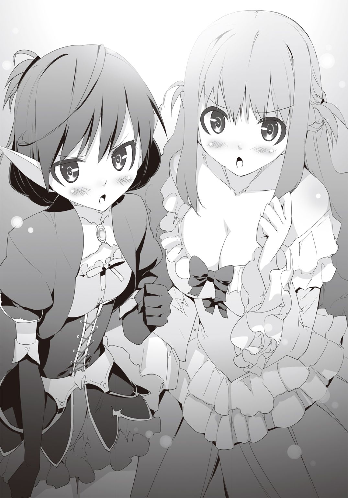
......本当にその通りだよ。
「こんな調子で、これから先上手くやっていけるのか......？」
オレの嘆きに返る言葉はなく。
現実逃避で逸らした視線の先、開かれた窓からは、蒼穹が見えた。
また――空を、竜が舞う。
アラムヴェルト。三年前、平凡な学生だったオレを英雄に変えた異世界。
打倒皇帝を目指し、数々の冒険を繰り広げた道筋を、まるで逆に辿るように再び始まったオレの旅は。
「リョウマ！」「リョウマ様ッ！」
――更なる波瀾を孕み、まだ、遙か遠くに続いていくようだった。
ＦＩＮ
あ と が き
皆様、初めまして！ 空埜一樹です。
普段は他の出版社でちょこちょこと書いている者ですが、この度、縁があってダッシュエックス文庫さんにて本を出させて頂くこととなりました。
突然ですが、皆さんは、「その後の話」についてどう思うでしょうか。
勇者が魔王を倒した。英雄が世界を救った。少年達が街の平和を取り戻した。
全ての物語には始まりがあり、そして終わりがあります。
例えば小説なら、ページを最後までめくり、本を閉じれば、そこで完結となるのです。
ですが、お話を現実と考えればどうでしょう。
当然ですが、倒したあとも、救われたあとも、平和を取り戻したあとも、世界は続くのです。
で、あれば、それに付随して様々な問題が起こってくるはずです。
英雄譚だけでは語りきれなかった裏の部分が、垣間見えてくるかもしれません。
ぼくは、そんな「その後」が気になって仕方のない性質でした。
色んな物語を体験し終えても、それだけでは終わらず、延々と妄想して勝手にアフターストーリーを楽しんでいたものです。
そんなぼくが書き上げたのが、この、本来であれば終わっていたはずの物語の世界を旅する少年を主人公にした、『逆道の覇王戦記』です。
ちょっと変わったお話かもしれませんが、楽しんで頂けると幸いです。
逆道といえば、小学生の時「背中向けて走ると普通より速いんだぜ」と恐ろしいドヤ顔で駆け出した結果、爽やかなほど迷いなくドブに落ちたハヤシダくん（仮名）、元気かなあ。
関係ないですね。次からちょっとだけ謝辞を。
担当のＴ様。長い間、様々な面で本当にお世話になりました。これからも反省しつつ同じような感じでお世話になるかもしれませんが、何卒、宜しくお願いします。
イラスト担当の植田亮様。ぼくの頭の中でイメージとして存在していただけの各キャラクター達が、素晴らしい絵によって次々と魂を吹き込まれていくさまに、ただただ圧倒されていました。本当に、ありがとうございます！
また、各所で応援メッセージを下さる方々、何よりこの本を読んで頂いた全ての読者様へ。
最大限の、感謝を。
それでは、またお会いしましょう。
一月 ＢＧＭ『無し』
ＨＰ 『空ノページ』 http://www.eonet.ne.jp/~tabibito5/
著者紹介
空埜一樹 そらの かずき
ＨＪ文庫にてデビュー。その後、色々書いて今に至った。
ＤＸ文庫では今回が初となり、緊張している。
緊張のあまり、最近は怪獣フィギュアを買い漁ることに没頭。
全ては緊張の為であり、他意はない。ないんだ。
illustration
植田 亮 うえだ りょう
こんにちは、初めまして。
イラストを担当しました植田です。
ラノベとかゲームとかいろいろ描いたり塗ったりしてます。
最近色塗りに使ってるソフトが古くなってきてしまったので変更しようと思っていろいろ試してるんですがなかなかしっくり来るものがなくて困ってます。
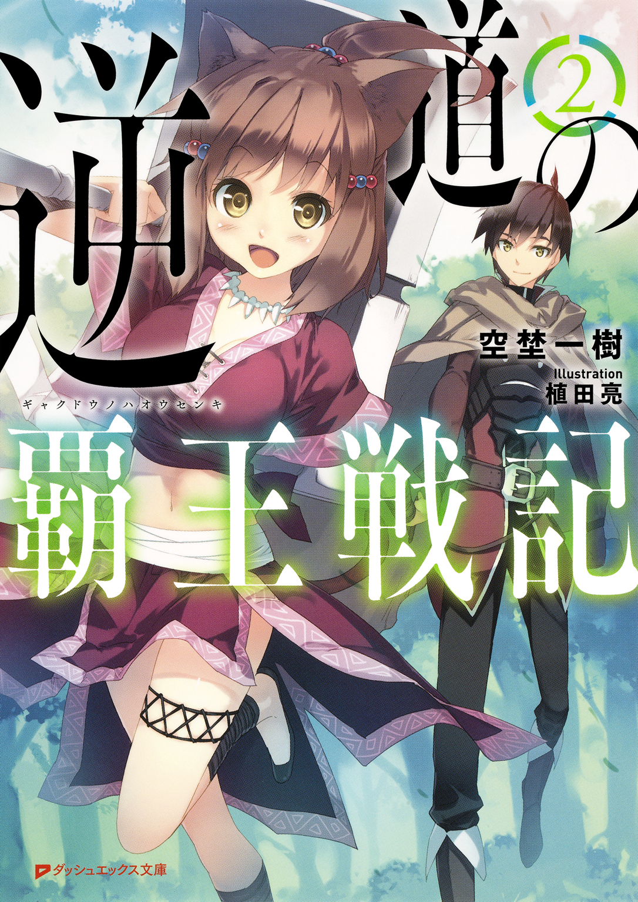
この本は縦書きでレイアウトされています。
また、ご覧になる機種により、表示の差が認められることがあります。

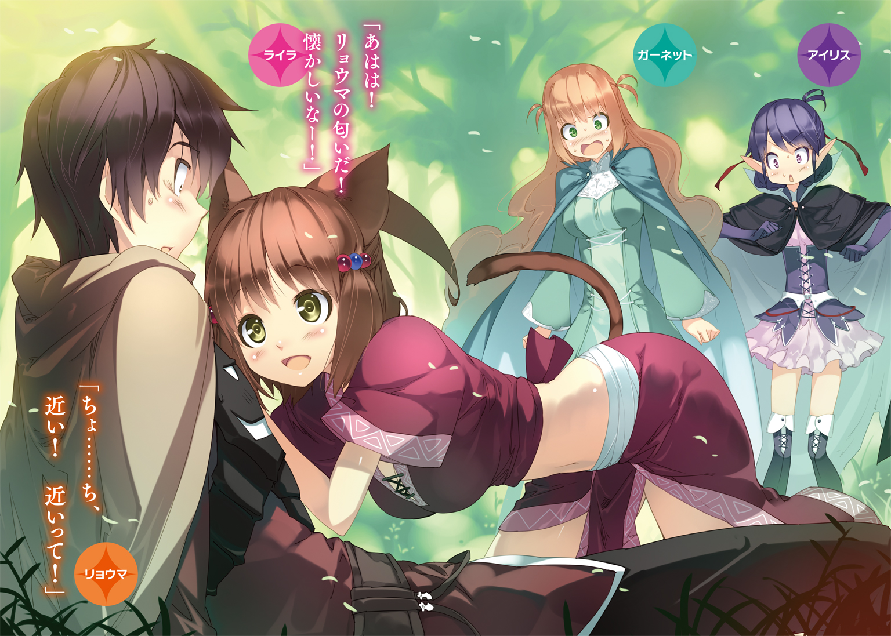
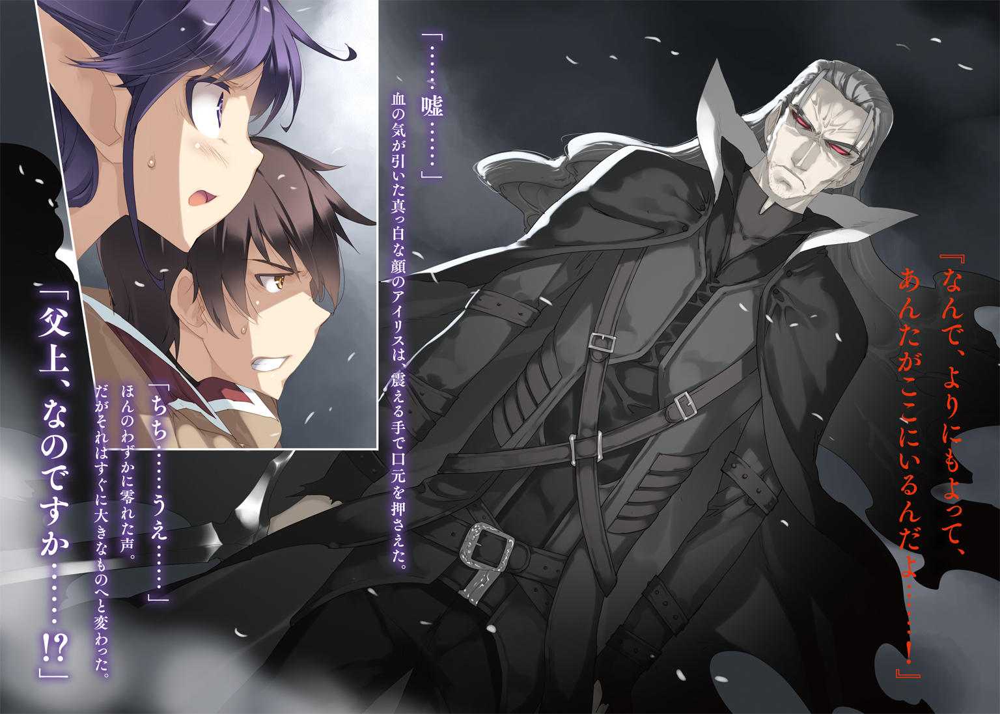
 ダッシュエックス文庫DIGITAL
ダッシュエックス文庫DIGITAL
逆道の覇王戦記２
空埜一樹
序章 強き者を求める少女
目の前に、槌が落ちてくる。
「うわっ!?」
オレは慌てて避けたせいで足をもつれさせ、転びそうになるが、すんでのところで踏みとどまった。
だがまだ終わったわけじゃない。相手は容赦なく、次々とこちらを攻めたててきた。
オレが剣を振るい、相手の攻撃を受け止めるたび、甲高い音が響く。
一撃一撃が尋常じゃなく重かった。おまけに勢い任せに降り注がれるので、防御するのに精一杯だ。とても反撃に出る隙などない。
でも、だからといって、焦りは禁物だ。急いで前に出たところでいいことなんてない。
相手の攻撃を凌ぎながら、一方で動きを少しずつ見極め、反撃の機会を窺うのだ。
無意識的にしろ意識的にしろ、生きて思考するものなら必ず存在する、隙。
それを見つけ出せれば――チャンスは生まれるのだ。
地を踏みしめる音がした。相手が足を後ろに下げている。
ここだ。この瞬間。
大きく槌を振り回すため、彼女は必ず、限界近くまで腰を捻る。
そこから攻撃へと移るまでに、わずかな空白時間が生まれるんだ。
挑むとしたら、今しかない！
オレは気合いを入れ、半ば倒れるように飛び込み、相手へと肉薄した。
彼女の足元ギリギリの地点から、強引に上体を戻し、視線を上げる。
こちら側の思ってもみない行動に、驚いている顔が見えた。
すかさず手に持った剣を勢いのままに突き出す。
「――ここまでだ」
相手の喉元近くで切っ先を止める。
一瞬遅れて、オレに向かって迫っていた得物も、当たる寸前で動きを停止した。
彼女は愛らしい目を丸くして、呆然としていた。
だが、しばらくすると、表情を変える。
「......すごい」
微笑みをたたえ、持っていた武器を落とし、拳を固めた。
「すごいよ、リョウマ！ 初めて、トト様以外の男の人に負けた！」
全力で賞賛されたものの、オレは剣を下ろし、鞘に収めながら苦笑する。
「いや、オレも危なかったよ。ほとんど捨て身の戦法だったから、失敗してたらとんでもないことになるところだった。勝てたのは運がよかっただけかもな」
「そんなことないよ！ あの状態でこっちとの距離を詰めるなんて、よほどの実力と勇気がなければできないことなんだよ？ 全部、リョウマの才能だよ！ 格好いい！」
目をきらきらとさせながら、詰め寄ってくる相手。
あんまりにもストレートな言葉の数々に、オレはさすがに照れくさくなった。
「いや、ありがとう。......お前もすごかったけどな」
「えへへ。それほどでも。だけど、やっぱり外の世界はすごいな。こんな人がいるんだもんね。やっぱりあたし、旅に出てよかった！」
「そうか。そう思えたのなら、よかった」
オレが口元を緩めると、彼女もまた満面の笑みを浮かべる。
「ねえ、リョウマ。またこうやって勝負してくれる？ 負けたままじゃ悔しいからさ」
「ん、ああ。別に構わないよ」
「うん！ 次こそ絶対に勝つからね？」
こちらの手を握り、意気込んで言ってくる相手に、オレは頷いた。
「オレも、もっと鍛えるよ。油断していられないからな」
「いいね！ お互いに頑張って、今よりずっと強くなろう！」
彼女は、元気が溢れ出したような魅力的な笑顔のまま、嬉しそうに応える。
ただそこで、何かに気づいて「あっ」と呟くと、一転して悲しそうに視線を伏せた。
「......でも、リョウマ、この旅が終わったら帰っちゃうんだった」
「ああ......うん。そうだな」
「ずっといるわけには、いかないんだよね？」
「......ごめん。オレはこの世界の人間じゃないから。やっぱりダメだと思うんだ」
おずおずとこちらを見上げてくる相手の、明らかに寂しがっている態度に胸を痛めながらも、オレははっきりと告げる。
すると彼女は、頰を搔いて、小さく顎を引いた。
「そっか。うん。仕方ないよね。わがままでリョウマを困らせちゃいけないしね。......でも、ちょっとだけ、約束してもらってもいい？」
「ん、いいけど......なんだ？」
「もしも。もしもだよ？ リョウマが、アラムヴェルトにもう一度来るようなことになったら......」
こちらの目を真摯に見つめながら、相手は口を開く。
「その時も、あたしと一緒に――」
わかった、と、オレは相手の問いかけに、応えた覚えがある。
実現する可能性が低いことは彼女もわかっていただろう。
それでも尚、求めてくる心を、オレは拒絶できなかったのだ。
いつも明るくて、前向きで、屈託がなくて。
みんなに愛されている彼女が望んだもの。
ほんの――他愛ない、願いを。
オレは、叶えてあげたいと、思った。
第一章 奥深い森を抜けて
アラムヴェルトには、時計がない。
朝、昼、夕、夜と分けて、各国の街の中心部にある鐘が鳴るので、住人はおおまかな時刻程度なら知ることができるんだけど――。
当たり前な話、旅に出ていると聞こえるはずもないので、次第に時間感覚が麻痺してくる。
なのでオレがふと目を覚ました時、眠りに落ちてからどれほど経ったのかがまったく摑めなかった。
周囲には未だ濃い闇が残っていて、外からは微かな虫の音が聞こえてくる。
身を起こしながら欠伸を嚙み殺し、体を伸ばすと、みしみしと骨が軋んだ。
硬い場所で身を横たえたせいだろう。一応、寝床には柔らかい葉っぱや枝を敷いているが、すぐ下は岩肌である。ベッドと同じというわけにはいかなかった。
野宿した時特有の感覚である。三年前も旅の途中、何度も味わったものだった。
「夜明けにはまだ早いか......」
とりあえず、トイレにでも行こう。
そう思って、オレは立ち上がるために手をつこうとしたが――その時。
むにゅり。
掌がえも言われぬ感触を味わった。マシュマロのようでもあるし、よくこねられたパン生地のようでもある。低反発枕のような手応えを感じながら、羽毛布団のような心地よさがある。なにこれ。
むにゅむにゅ。
「......ぁ......」
突如として艶めかしい声が聞こえてきて、どきりとした。
慌てて手をついた場所を見下ろし――オレは絶句する。
「......ダメですよ、リョウマ様......こんなところで......」
滅茶苦茶可愛い女の子が添い寝していた。
金髪碧眼で、テレビに出てくるそこらのアイドルよりずっと完璧に近い顔の造りをしている。
睫の長い目を閉じ、安らかに眠りの世界を堪能している姿は、さながら童話に出てくるお姫様のようだった。
おまけにかけた毛布から少し見えている胸は、規格外な程大きい。寝ている間にずれてしまったのか着ている服の襟辺りが大胆に開いていて、垣間見える蠱惑的な谷間がこの上なくオレを魅了していた。
さっき揉んだのはどうやらこの子の胸だったと気づき、オレは慌てて手を離すと、気まずさに目を逸らした。......が、そこにも試練は待ち受けていた。
「むにゃ......もう食べられない......いやその......いけるといえばいけるが......」
逆側にも、夜明け前の空を思わせるような、紫がかった黒い髪を結わえた超絶可愛い女の子がいる。
無防備な寝顔ながらも、人形みたいな整った相貌は、息を呑む程の美麗さを持っている。
「な、なんだ......なんだ、この状況......」
まさか、また夢でも見ているのか！
だったら早く目を覚まさなくては。いや、欲をいえばもう少し見ていても、寧ろ目覚めない方が......だがしかし！ ああ！ どうすれば！
『なんだ兄弟。どうかしたのか？』
悩んでいるオレに心配そうな声がかかった。誰だかわからないが助かった。何がどうなっているのかオレに説明してくれ。
「すみません、一体どうしてこうなっているのか、知っていることがあれば教えてくれませんか」
『一体どうしてこうなっているのかって、別に昨日と何も変わっちゃいないだろうよ。それともおれがわからないだけで、魔法でもかけられたか？』
「どういうことですか!? 昨日と変わらないって、何があったっていうんですか!?」
オレは救いを求めるようにして、声のした方へと目をやった。
で、硬直する。
『なんで敬語なんだよ。大丈夫か、兄弟。頭でも打ったのか？』
無造作に置かれた鎧が喋っていた。
正確には、ファンタジー系ゲームに出てくる剣士が身に纏う、胸当てのような黒い鎧に描かれた模様が、顔みたいに動きながら。
――喋っていた。
「う、うわああああああああああ!? 鎧が喋った!?」
し、知ってる！ 昔、おじいちゃんに聞いたことがある！ 百年経つと物には魂が宿るんだ！ 付喪神だ！ 妖怪だ！ 悪霊退散だ！
「むむむ、無に還れッ！ 強制成仏ーッ！」
オレはものすごく適当に、前になにかの本で読んだ九字の印を切った。
『......なんだその仕草。兄弟の世界で流行ってるのか？』
しかし鎧は不審がるような声を出すだけで、まったく応えていない。
くっ、やはり、一流の霊能者でなければ効果がないのか......！
『おい、兄弟、しっかりしろよ。ひょっとして寝ぼけてるのか？ 今更おれが喋るからなんだっていうんだよ。お嬢や姫様が起きちまうぞ』
「......え？」
心配そうな台詞に、オレは間抜けな声で返した。
そこでようやく、本当にようやく、オレは我に返る。
目の前にある鎧が、記憶にあるものとして、しっかり認識された。
「......マンゲツ？」
『おう、そうだ。ようやくシャッキリしたか。やれやれだな』
模様の形が安堵した表情のようになった鎧に対して、オレは頭を搔く。
そうだ。そうだよ。寝起きにとんでもない事態に直面して、思わず我を失っていたようだ。ようやく意識がはっきりしてくるのを感じる。
目の前にある――いや、いると表現したい――のは【月輪の鎧】、通称マンゲツ。強靭な防御力を誇り、意志を持った特別な防具だ。
オレの両隣にいる女の子達は、金の髪を持つ方がガーネット。三年前、オレをこの異世界アラムヴェルトに呼び出した、【ティタニア】という国のお姫様だ。
そして、紫がかった黒髪の方がアイリス。とある事情で、オレを再びアラムヴェルトに召喚した【帝国ガルフレア】の皇女様である。
色々あって、オレはガーネットやアイリスと共に、窮地に追いやられた帝国を救うために旅をしていたのだが。
「あー......そうか。夜になったから、野営して寝ることにしたんだった」
昨夜のことを思い出しながら、肩を回した。
人間というのは不思議なもので、頭がはっきりしてくると途端に色々なものを自覚し始める。
今オレ達がいるのは、森の中にある小さな洞窟のはずだった。
「あれ、でも、確かそれぞれ離れたところで寝ることにしたはずなんだが」
二人には、万が一にも問題があってはまずいから、という配慮をしたように見せかけたが、実際はもっと単純な理由だ。
さすがに左右に女の子がいる状態で、しかもこれだけ近距離で安らかな睡眠をとれるほど、オレは肝が据わってはいない。
『おれが言ったんだよ。夜は冷えるから一緒にいた方がいいんじゃないかって』
「なにをとんでもないアドバイスをしてるんだよ。おかげで起き抜けに混乱しただろ」
『落ち着けよ。おれはお嬢にしか言っていないぜ。姫様は対抗するようについてきただけだ』
「そういう問題でもない。大体、アイリス達だって困っただろ」
『まあ、最初はな。ただおれが「お嬢、これは緊急避難行為だ。もし寒気にやられて体調でも崩したらどうする。大事な旅だ。差し支えるんじゃないのか、いや、差し支えるね、断言するよ。差し支える」って親切心で言ったら、顔を赤らめながら「そうか。ならば仕方ないな。差し支えては困る。差し支えてしまうのは、その......そうか、差し支えるのか」と同じようなことを呟きながら、赤らんだ顔で向かったぞ』
「完全に誘導されてるだろ」
『強制はしてねえよ。あと、姫様は「差し支えなくても困ります！」とかわけのわからないことを言って、ものすごい速さで兄弟の左を陣取ったぞ』
「......そうか」
『ありゃ大物になるね。いや、もうなってるのか。とはいえ、お嬢もまんざらでもなかった様子だったし、さすが兄弟。やるじゃねえか。へへっ、体がこそばゆくなってくらぁ』
やすりで磨いてやろうか、とちょっと思ったが、さすがに口には出さなかった。
「とにかく、今後、こういうのはなしにしてくれ。心臓に悪い」
『わかったよ。夜明けまではまだ時間がある。兄弟も寝た方がいい』
そうだな。とはいえ、このままじゃあまりに居心地が悪い。
オレは、場所を移動するために立ち上がろうとした。
「......むにゃ」
しかしそこで、アイリスにがっつりと腕を摑まれる。
「お、おい、アイリス？ どうしたんだ？」
声をかけたが反応はなかった。どうやら無意識の行動らしい。
アイリスはそのままじりじりと近づいてくると、オレの体を這い上り、頰を摺り寄せてきた。
「ふふふ......」
至福の表情で、オレの胸に顔を埋めてくるアイリス。
「ちょ、ちょっと......この状況は......」
非常に不味い。
おまけにいつのまにかアイリスの腕はオレの背中へと回されていて、非常に強い力で抱きついていた。
『おおっと、お嬢が大胆な行動に出たー！ 兄弟はどうするのか、このまま勢いに任せるのか、任せて若気の至りに至ってしまうのか！ 至れ！ 至らなければ男じゃねえー！』
「ちょっと黙っててくれ......！」
小声で叱ると、マンゲツは不満そうに、模様の唇に見える部分を尖らせた。顔文字みたいな表情に、無性に腹が立つ。
以前のようにオレを毛嫌いしなくなったのはいいことだが、たまにこうして本気なのか冗談なのかわからないことをけしかけてくるから対処に困る。
「アイリス、いいから離れろって。やばいって......！」
必死に呼びかけるも、アイリスは顔をしかめて首を振るだけだった。まるで赤ん坊がむずがっているかのようだ。
「......うにゅう......」
しかも奇妙な声を上げて、更に体を密着させてきた。オレの心臓が爆発寸前のように高鳴ってくる。
「アイリス、さすがにこれ以上は――」
と半ば強引にでも彼女を引き剝がそうとした時だった。
「............お父様」
小さく、消え入るような声で、アイリスは呟く。
虚を衝かれてオレは、はっきりと見た。
桃みたいにほんのり赤らんだ彼女の頰を伝う、ひと筋の涙を。
「アイリス......」
やっぱり、まだ、グレディスのことを振っきれていないのか。
いや......当たり前だ。亡くしたのは実の父親で、アイリスはまだオレと同じ歳だ。
普段は気丈に振る舞っているが、心の奥底ではまだその悲しみを引きずっているのだろう。
『お、お嬢......』
マンゲツが悲しげな表情にも似た模様を取った。
オレは息をつき、力を緩めると、引き剝がそうとしていた手を離す。
ゆっくりアイリスの頭を撫でると、彼女は微笑みを浮かべながらしっかりとこっちにしがみついてきた。まるで、愛しいものを決して手放さないというように。
口元を緩めながら、しばらくこのままでいるべきだろうか、と考える。
「......何をしているのですか？」
が、オレの和んでいた心は、背後からの声で一気に冷え込んだ。
振り返らなくても何が待ち受けているのかわかる。だから絶対に振り返りたくない。
だけど、現実は逃避していれば消えてくれるほど甘いものではなくて。
だから――仕方なく諦めて、オレは、ぎこちない動きで首を回した。
まるで錆びついた人形のように、少しずつ、後ろを向く。
「何をしているのですか、と、尋ねているのですが」
やがて見えてきたのは、予想通り、目を覚ましたガーネットの姿だった。
ただ、彼女は怒っていたのではない。笑っていた。
まるで美術館に飾られる絵画のように神々しく、慈愛を感じさせるような表情を見せていたのだ。
しかし、オレには感じ取ることができた。
天使のような笑顔の裏に潜む、悪魔のようなおどろおどろしい怒りの感情を。
「い、いや、これは、ええと......」
しどろもどろになるオレは、救いを求めてマンゲツの方を見る。頼む兄弟。この窮地を脱することのできる、画期的な方法を授けてくれ！
『......ぐーぐー』
兄弟は寝ていた。
「噓つけええええええ！ お前、寝ないだろうがああああああああ！」
だから夜の番を頼んでたんだろうがっ！
全力で突っ込んだが、マンゲツは尚もわざとらしく『ぐーぐーぐー』と寝息を立てていた。しかも、
『寝ています。マンゲツは寝ています。何を言っても無駄です頑張ってください。あー。寝てますよー。ふふふふーん』
とご丁寧に睡眠中アピールをしてきやがった。あとで硬い岩にぶつけてやる。
「リョウマ様？ わたくしの方を見てください。わたくしの目を見てください」
い、嫌だ！ まともに会話できる自信がない！
「リョウマ様に後ろめたいことがないのであれば可能なはずです。もし無理であるというのであればわたくしも相応の処置を取らせていただきます。ただわたくしは信じています。リョウマ様はそのような不埒な真似はなさらないということを。ですからまずわたくしの目を見てください」
言葉が一本調子で怖い！ 絶対信じてないパターンだろ、これ！
「リョウマ様！ こっちを向いてください！」
「は、はい！」
だが悲しいかな、女の子が本気で怒れば男なんて弱いものだ。
オレは急ぎ振り返ると、ガーネットと視線を交わし合った。
「よろしい。で......一体どうしてこんなことになったのですか？」
「い、いや、違うんだよ。誤解なんだって」
「どう誤解なのですか？ 一体いかなる経緯があればアイリスがリョウマ様に抱きつきあまつさえリョウマ様が優しげな顔で彼女の頭を撫でるということに至るのですか？ 今すぐ二十文字以内でわたくしの納得いくように説明してください猶予はないですよ噓や誤魔化しは通じませんすぐにわたくし見抜きますからねさあどうなのですかリョウマ様!?」
「ひいいい！ ごめんなさい！」
もうなんでもいいから許してください！
「......う......」
胸元からアイリスの声がした。起きたか!? よかった！
「なあ、アイリスからも説明してくれよ。お前、ただ寝ぼけていただけだよな。そうなんだよな!?」
オレは慌てて確認を取った。
「おなかへった」
「......はい？」
アイリスは半目を開けたままぼんやりとした口調で言って、
「――いただきます」
顔を上げると、オレの首筋に小さな唇を当てた。
そのまま、ぺろ、と舌で舐めてくる。
「はう......っ!?」
思わずぞくりと反応してしまった。
「............」
不気味な沈黙を経て、弁解の余地を与えられる間すらなく。
「リョ・ウ・マ・さ・まああああああああああああああッ！」
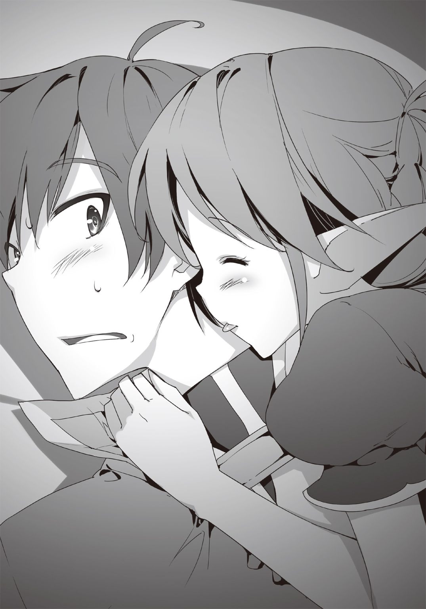
隣で、火山が大爆発を起こしたのだった。
「あー......ひどい目に遭った」
げんなりとしながら、オレは深いため息をつく。
結局あのあと、ガーネットの誤解を解くために多くの時間を費やし、気がつけば東の空から昇ったお日様は高くなっていた。おかげで寝不足だ。
『まったく、誰に責任があるわけでもない、不幸な事件だったぜ』
近くにある岩に載せていたマンゲツが声を出した。
「三割くらいお前のせいな気もするけどな」
『なにを言う。おれが一体何をしたっていうんだ、兄弟』
「何もしなかったから悪いんだろ！」
お前が寝たふりなんかせずにきちんと説明してくれていれば、ガーネットの導火線に火が点くことはなかったかもしれないんだ。
『ハハハ、兄弟が何を言っているのかわからないぜ。なにせおれは安らかな眠りの世界で妖精達と戯れていたからなあ』
あまりにも清々しく噓を突き通すマンゲツ。腹が立ったので足元にあった石を投げつけてやった。
『痛いっ!?』
小気味よい音と共にマンゲツはぐらつき、そのまま後ろへと倒れていった。
『おい、兄弟！ 起こしてくれ！ このままじゃ一生転がったままだ！』
「ははは。何を言ってるのかわからないな。オレは寝てるから。ぐーぐー」
思いきり棒読みで言ってから相棒を突き放し、オレは朝の作業に戻る。
今行っているのは、枯れ木や枯れ葉を集めて焚き火を起こすことだ。朝食を作る流れである。
旅をするにあたり、保存の利く食料は十分持ってきていたが、干し肉やら乾いたパンばかりで味気ないといえば味気ない。
ならばできる限りは現地調達しようということで、アイリスやガーネットとも、意見が合致していた。
食材の調達は三人で分担すると決め、二人は周辺へ探しに行っている。
もちろんオレもサボっているわけではなく、一足早く三人分を確保した上で、二人が戻ってくる前に一通りの準備を終えておこうというわけだ。
「よし......こんなもんかな」
太い枯れ木と細い枯れ木を組み合わせ、それに向かってオレは口の中で小さく呟いた。
「【紅よ、我の命にして灯火を点さん】」
魔法を呼び起こすための呪文のような言葉――【魔導言語】によって、空中に小さな火が生まれた。
火は火口となる枯れ葉に燃え移り、しばらくすると勢いを増す。
やがて現れた巨大な炎が、パチパチと音を立てた。
オレは傍に置いてあった食材を手に取ると、焚き火の近くの地面へと突き刺す。
近くに流れていた川で捕れた魚に串を通したものだ。日本で見かけるイワナとかヤマメといったものに姿が似ていて、白身であっさりとしているが、適度に脂も乗っていて美味しい。アイオウオといって、アラムヴェルトでは比較的簡単に釣れるものらしい。
尤も、オレは魔法で川の中で爆発を起こし、ショックで仮死状態になった魚を捕まえたので、正攻法とはいえないが。
三年前まではキャンプさえしたことのない現代っ子だったオレも、かつての冒険を経て随分とサバイバルの腕を上げた。旅の道中では野宿なんて当たり前だから、技術が身につくのは必然だったといえるけど。
「そういや中学で林間学校に行った時は、みんなにびっくりされたっけな」
自然に還ろうというお題目で山に登り、テントを張るところから火を起こしたり食事を作ったりするまで、全て自分達でやらなければならなかったのだが。
他のみんなが悪戦苦闘する中、オレだけが難なくこなしていくので、非常に珍しがられたのだ。誰が流したのか、子どもの頃は野戦地帯で生きていたらしいという噂まで流れて、対応に苦慮したものだった。
『リンカンガッコウってなんだ？』
「みんなで共同生活を送って絆を深めようっていう行事だよ」
『へえ。なんでリンカンって言うんだ？ みんなでやるからか？ そう、輪......』
「それ以上言ったらまた石投げるからな」
口を開けばろくなことを言った試しがない。
オレはやれやれと思いながら、魚の焼き加減を確かめていた。すると、
「リョウマ様、お待たせしました！」
ガサガサと音を鳴らして草むらからガーネットが現れた。彼女の腕の中には、様々な種類の野草が抱えられている。
「お疲れ。なにかあったか？」
「ええ。運のいいことにモニモ草がありました。これでスープを作ることができます」
ガーネットはオレの足元に野草を置いて、微笑みを浮かべた。
モニモ草とはつる草の一種だが、水で煮るとどういうわけかコクのあるいい出汁になる。味としては昆布に近く、しっかりとした塩味もするので野営をする時には重宝していた。
「じゃあ、鍋を用意しないとな。悪いけど、魚を見ていてくれ」
言い残してオレは寝床にしていた洞窟へ戻り、小さな鉄製の鍋を持ってくる。これは、ティタニアを出る時、国王様からいただいたものだ。特殊な鉱石を混ぜているらしく、丈夫でしかも熱伝導がいいのですぐ湯が沸くという優れものである。
「はい。他にもアシナカの実やトイーカンの花など、食用にできるものが幾つかありましたので、持ってきました」
「お、いいな。じゃあ、それも纏めて鍋に入れてしまうか」
美味いスープができそうだ。
オレは空っぽになった胃が動き出すのを感じながら、腰元に提げた革製の袋から鍋に水を注いだ。手近にあった焚き火用の木と麻縄を組み合わせ、簡易な台を作ると、上に鍋を載せる。これで底を焦がさずに火の上で煮ることができるというわけだ。
「魚の方もそろそろいい感じですね。あとはアイリスが戻ってくるのを待つだけです」
「だな。それまでちょっと休憩するか。飲み物は？」
「いただきます。確か檸檬水がまだありましたよね？」
頷いてからオレは、傍に置いてある鞄から先程とは別の革袋を取り出した。中には水に檸檬を搾って蜂蜜を加えた飲み物が入れてある。アラムヴェルトでは大人から子どもまで好まれているもので、疲労回復にもちょうどいいから、旅人には必需品となっていた。
ガーネットが差し出した二つの陶製の器それぞれに檸檬水を入れ、オレ達はアイリスを待つ間にひと息つくことにした。
「......ふふ。なんだか懐かしいですね」
檸檬水を一口飲んでから、ガーネットは口元を緩める。
「三年前も、こうしてよくリョウマ様と朝食を共にしました」
「......ああ、そうだな。あの時はもっとたくさん人がいたけど、同じ歳ってこともあって、ガーネットや他のお姫様、王子様とかとよく話してたっけ」
「ええ。まさかあの時は、またこうして旅をするなんて思いもよりませんでしたが」
それはオレだってそうだ。
今のガーネットはお城にいる時のようなドレス姿ではなく、可愛らしいデザインながらも動きやすい旅装束に身を包んでいる。
三年前も同じような感じでいたことを思い出すと、なんだか奇妙な気持ちになってしまった。
「まるで、まだ三年前の旅を続けているみたいだな」
「......そうですね」
少しだけ笑いを漏らし、ガーネットは膝を抱える。
「ですがリョウマ様はあの時と変わってしまいました」
「ん？ そうか？」
自分としてはほとんど自覚がないんだが。
「ご自身ではお気づきになられていないかもしれませんが、わたくしと出会った時よりも更に精悍で逞しく、また何事に対しても堂々とされるようになりました。......率直に言って、素敵です」
「......そ......そう......かな」
ど直球で褒められると、さすがに落ち着かなくなってくる。
「ですが変わらないところもあります。弱い人を見捨てられず、誰かを救うために身を挺し、己が傷つくことなど少しも厭わない。三年前からずっと、リョウマ様はご立派な精神をお持ちになられています」
「い、いやいや。いくらなんでも言いすぎだろ。オレはあれだぞ。結構、間抜けなところも多いんだからな？ 今朝のことだって、迂闊だったし」
「フフ、あれはわたくしも少々、寛容な心を持つべきであったと反省しています。確かにリョウマ様は時折失敗をなさいますが、それすらも愛すべき美点であると思いますよ。完璧で何の穴もない人間など、つまらないものですから」
「......参ったな。でも、ガーネットだってすごいと思うぜ。三年前もそうだけど、今回もお姫様なのに苛酷な旅に同行してさ」
皇帝討伐の最初こそ、お城育ち故の気苦労が多く大変そうだったが。次第に旅に慣れてくると、オレなんかよりよっぽど役に立っていた。
まあ......一緒にいたお姫様の中には、最初から余裕で道中を過ごしていた子もいるにはいたんだが。
「全ては己の役割を果たしているまでです。三年前もそうですが、今回も......アイリスにはひどいことをしてしまいましたから。償いになるとは思いませんが、少しでも彼女の手助けになればとついてきた次第です」
と、ガーネットが沈んだ顔で零したので、オレは首を横に振った。
「自分の役割に従うってこと自体、なかなかできるものじゃないんじゃないか？ オレの世界じゃ、立場を悪用して勝手をしたり、本来やるべきことからは逃げてばっかりの奴も多いしさ」
特に大人には、子どもに対しては偉そうにあれをしろこれをしろと命令するくせに、いざ自分のことになると言い訳をしてうやむやにしてしまうようなのがたくさんいる。
「オレと同じ歳で国を背負ってやるべきことをきちんとやるって、ガーネットにとっては普通かもしれないけど、実際はかなり難しいことだと思う。そういうところ、尊敬するよ」
「まあ......リョウマ様」
目を見開き、頰を赤らめると、ガーネットは薔薇みたいな赤い唇を笑みへと変えた。
「嬉しいです。他のどなたに認められるより、リョウマ様にそう言っていただける方が何倍も」
ガーネットの伸ばした手がオレの手に触れ、握り締めてくる。彼女はしばらくそのまま黙り込んでいたが、
「......リョウマ様。あの日に聞けなかったお返事。わたくし、待っていますから」
唐突にかつてのやりとりが思い起こされて、オレの心臓はこの上なく高鳴った。
なんのことだ、ととぼけるほど、オレも間抜けじゃない。
――わたくしのことを、どう思っておられますか？
三年前に別れる時、ガーネットにそう訊かれたが、答えられなかった。
再び召喚された時も、色々なことがあって、結局返事を先延ばしにしてしまったのだ。
もちろんオレだって、このままなし崩しにするつもりは毛頭なかった。
きちんと自分の気持ちを伝えなければならないという決意はあるのだ。
だけど、今この場で、となると、ちょっと待ってくれと思ってしまう。
こういう土壇場になって狼狽えるところは、以前と変わらず情けない。
だけど、逃した機会が再び巡ってきたのだ。
オレは深呼吸を繰り返し、己に問いかけた。
今はアイリスがいない。だったら、タイミングはここなんじゃないか。
男を見せろ黒瀬亮真。こんなに可愛い女の子を待たせてばかりじゃ、あまりにも不甲斐ないとは思わないのか。
「そう、だな......」
言え。言うんだ。どうなってもいい。当たって砕けろ！ いや、砕けたら困るけど！
「......ガーネット」
オレは意を決してガーネットの手を握り返した。
ガーネットは驚いたように体を竦ませたが、やがて覚悟をしたかのように身を引き締める。
「は、はい。なんでしょう、リョウマ様」
「あの時の返事なんだけど......オレ、さ」
喉を鳴らす。胸の内で暴れる心臓がうるさい。少しだけだ。少しだけでいい。大人しくしてくれ。
「オレ......ガーネットのこと......」
さあ、躊躇うな。今だ。今しかない。言え。言うんだ、リョウマ......！
「ガーネットのことが――」
『わああああああああああああああああああああああ！』
「うわあっっ!?」
いきなり大声を出されたので、反射的に素っ頓狂な言葉が漏れてしまった。
『うわあああああああああああ！ 火事だあああああああああああ！』
「え、か、火事ですか!? どこ、どこです!?」
ガーネットは立ち上がって辺りを忙しげに見回し始める。
『あっちだあああああ！ 北の方でなんか焦げ臭いぞおおおおおお！』
「あっちですね！ わ、わかりました！」
慌てたようにガーネットは走り出し、場から姿を消していった。
「............」
あとには呆然とするオレだけが残される。
『......ふう。危ないところだったぜ』
いや、もう一人いた。正確には一つだ。
オレはゆっくりと腰を上げると、騒ぎの張本人がいる場所へ行き、見下ろした。
『お、どうした兄弟。いやしかし、今日はいい天気だよなあ。風も穏やかだし、雲もなく快晴で気分がよくて、歌でも歌いたくなる気分で......』
「地獄で好きなだけ歌えええええええ！」
オレはマンゲツを持ち上げると、遠くの空へと投げた。
『ぎゃぼすっ！』
放物線を描いて飛んでいったマンゲツ、いや、もう、こいつなんてただの鉄塊と呼んでやる。鉄塊は、派手な音を立てて地面に落ちた。
『なにすんだ兄弟！ ひでえじゃねえか！ おれに一体何の恨みがある!?』
「お望みなら手紙にでもしたためて詳しく教えるが？」
殺意の籠もった声で告げると、さすがに鉄塊は黙り込んだ。
オレはもう一度鉄塊を持ち上げて、怒りを込めた眼差しを向ける。
「なあ、なんで邪魔をする？ 今、すごくいいところだったよな。思わずお前が喋る鎧だって忘れるくらいにいいところだったよな。なんで邪魔をする？ 冥土の土産に聞いてやってもいいぞ？」
『よ、よそうぜ兄弟、そんな、おれがこのまま終わること前提の話し方......』
鎧の表面に描かれた紋様が、眉をへの字にした困り顔に変わった。
『しょうがないじゃねえか。あのままだと兄弟の三年間に渡る想いが成就されそうだったんだからよ』
「それの何が悪いんだよ」
これでも、一世一代の勇気を振り絞ったんだぞ。
『困るんだよ、おれは。目的が果たせなくなっちまう』
「なんだよ、お前の目的って。オレと関係あるのかよ」
『んなの決まってんだろ。兄弟とお嬢をくっつけるんだよ』
「は!?」
『あ、くっつけるって言っても比喩表現だからな。物理的にじゃないぞ。いやまあ、男女も恋愛感情が行き着くところまで行くと物理的にくっつくんだけど、うへへへ』
「もう一回投げられたいのか」
『ごめんなさい......』
チャンスがあればシモネタをぶちこもうとする癖、なんとかしてほしい。
『おれはよぉ、兄弟。お前を評価してるんだ。最初こそ、グレディスの旦那を倒した憎たらしい小僧だと思ってたけど、お前はなかなか度胸がある。そんじょそこらにいる男とは格が違うって思ってるんだ』
「......それで？」
『だからよ、お前にならお嬢を預けてもいいかって思ったんだよ！ 本音で言えば男のところなんざ行ってほしくはねえが、さすがにおれもそこまでわがままは言わねえ。なら、どこの馬の骨ともわからねえ野郎のところへ嫁に行くよりは、せめておれが信用できる奴に任せようっていう、そういう親心なわけだよ。わかるだろ？ な？』
「まあ......いや、気持ちはわからないでもないけど」
なんと言ったらいいのか。オレは頰を搔いた。
「でもそれはアイリス自身が決めることだろ？ 無理矢理くっつけようとするのはよせよ」
『なに言ってんだ兄弟。鈍いにも程があるぜ！ お嬢はとっくにお前にホの字だっていうのによ！』
「......いや。いやいやいや」
さすがにそれは......まあ、嫌われてないとは思うけど。
恋愛感情とは別のものだと思うんだが。
『なんだぁ、男気あるくせに本当、乙女心ってのを理解してない奴だな。まあ、いいか。とにかく、おれはお嬢と兄弟を恋人同士にするって決めたんだ。だからガーネットの姫様には悪いが、おれが傍にいる限りは全力で邪魔させてもらう。全てはお嬢のためだ』
「お前、そんな勝手な......」
『こればかりは兄弟でも聞き入れることはできねえぜ。グレディスの旦那がいない今、おれにはお嬢しかいないんだ。お嬢が幸せになるためなら、外道と呼ばれてもおれは構いやしねえ』
鉄塊......いやまあ、マンゲツに戻すか。マンゲツの口調は、あまりに揺るぎないものだった。こいつはこいつで、自分の役割を果たそうとしているらしい。
『それに兄弟だってまんざらじゃないはずだ。ガーネットの姫様と同じくらい、お嬢だって魅力的だからな。本当は好きなんじゃないのか？』
「ば......馬鹿言うなよ」
そりゃ、絶対ないかと言われれば、否定しにくいところはあるけど。
......でも、なんだ。オレはそんな、二股をかけるような最低男に成り下がるつもりもなくて。
『それにもし兄弟が姫様とくっついたら、お嬢は悲しむだろうなー。この上なく悲しむだろうなあ。滂沱の涙を流し、それはやがて帝都を満たし水中へと沈めるだろうなあ』
「お、お前！ 卑怯だぞ!?」
こっちの罪悪感を増長させて躊躇わせるつもりか！
『まあ、ゆっくり考えろよ、兄弟。自分のことなんだからな』
散々プレッシャーをかけておいて、素知らぬ顔で、マンゲツはこちらにウインクした。
なのでもう一度地面に投げ捨てた。
『ぼげぶっ！』
うむ。ちょっとだけスッキリした。
『ひ、ひでえぜ兄弟。おれはただ......おれはただ、お嬢にだなぁっ！』
「私がどうかしたのか？」
まだ何かを言おうとしたマンゲツを遮ったのは、アイリスの声だ。
食材の調達を終えたのだろう。腕の中に色とりどりの何かを抱え込んでいた。
「ああ、いや、なんでもない。マンゲツが鳥に突かれて転んだだけだ」
オレが朗らかに笑って手を振ると、アイリスは首を傾げながら地面に横たわるマンゲツを見下ろした。
「なにをしているのだ。大丈夫か？」
『いや聞いてくれよお嬢。兄弟ったらひどいんだぜ。おれが純情な心で、兄弟とお嬢の仲を』
「あ、お肉が飛んでる！」
オレは明後日の方向を指差し、アイリスが「なに、肉が!? 奇跡!?」とそちらを見た瞬間、風の魔法を放ってマンゲツを吹き飛ばした。
何度か地面にぶつかりながら最終的に洞窟の奥まで飛ばされ、マンゲツは漫画みたいにぐるぐる目玉の模様を浮かべて、黙り込んだ。
......ちょっとやりすぎたかな。まあ、あいつは頑丈だから大丈夫だろうと思うけど。あとで謝っておこう。
「むう。肉など飛んでおらぬではないか。私の胸の高鳴りは無駄になったぞ」
可愛らしく頰を膨らませながら抗議してくるアイリスに、ごめんと謝った。
「おや？ ところで、マンゲツはどこへ行ったのだ？」
「さっき、また鳥に突かれて洞窟まで転がっていったぞ」
誤魔化しながらオレは話を変えるためにアイリスへ尋ねる。
「ところで朝ご飯の食材は何をとってきたんだ？」
「おお、そうだそうだ。喜べリョウマ。とてもいい物を発見したぞ！」
喜色満面で、腕の中にあるものをオレに差し出してくるアイリス。
それは様々な種類のキノコだった。
「野営地で食料を探すなど初めてのことで戸惑ったが、いや、何とかなるものだ。意外にも私には隠れた才能があったのかもしれぬ」
ふふん、と誇らしげに胸を張るアイリス。
ただ、オレはどうにも戸惑いを隠せなかった。
「いや......あのな、アイリス」
「む？ どうしたのだ？」
きょとんとしながら訊き返してくるアイリスに、オレの見解を伝えるべきかと悩んでいたのだが、
「もう、火事なんてどこにも起こっていないではないですか。マンゲツは噓つきですね」
文句を言いながらガーネットが戻ってきて、アイリスの後ろから声をかけてきた。
「あら、アイリス。食材は見つかりましたか？」
「おお、ガーネット。見ろ、これを。キノコがたくさんだ！」
ガーネットの元へ走り寄るアイリス。
「い、いや、アイリス、だからな!?」
傷つくかもしれないが、仕方ない。オレは真実を伝えようとした。
「あら、こんなにたくさんとってきたんですね。素晴らしいです」
だがその前に、ガーネットが告げる。
「ただアイリス、これ――ほとんど毒キノコですけど」
「ふぇ!?」
どさどさと音を立てて、キノコが地面に落ちる。
「ば、バカな!? そんなはずはない！」
跪いて、山になったキノコから一つを取り出し、オレ達に見せるアイリス。
「これなど、見た目が派手でいいではないか！」
「ボランクスキノコ。食べると半刻で吐き気及び眩暈を起こし、大量に摂取すると死に至ります」
ガーネットは丁寧に説明した。
「な、ならばこれは!? 実に味わい深い色合いをしている！」
「バマリンダケ。一口食べただけで全身痙攣を起こし、腹痛と頭痛を伴ったあと、死に至ります」
「い、色が明るいのはダメなのか。よし、これだ！ これなら地味だろう！」
「アイアットキノコ。味は美味しいですが、一刻もしない内に麻痺と幻覚を引き起こす上、キチナムシという寄生虫が卵を植えつけているため、卵が孵ると胃を食い破って死に至ります」
「ならばこれだ！ これこそが私の求めていたキノコなのだっ！」
「バジナダケ。匂いを嗅ぐだけで死にますよ」
「ひいあああああ！ 基本的に死に至るものしかない！」
アイリスは急いで手に持っていたバジナダケを放り投げた。
「うう......そんな......あれだけ苦労して手に入れたのに......」
見るからに落ち込んだ様子で、地面に手をついて嘆くアイリス。
「い、いや、アイリス、ほら。まだ旅に出て間もないんだから、いきなりは無理だって」
慰めるオレにガーネットもまた同調した。
「そうですよ。わたくしだって三年前はそうでした。少しずつ学んでいきましょう」
ガーネットに頭を撫でられ、アイリスは「すまぬ......すまぬ」と言いながら目元を拭う。
「まだまだ私には経験が足りぬな......これではガーネットと同じく姫や王子が旅をしていたティタニア以外の【四大聖国】に認められることなど難しい。前途多難とはこのことだ」
はあ、とため息をつくアイリスにオレは苦笑した。
「まあ、経験が足りてないってのは否定できないかもしれないけど。だからって以前とまったく同じってわけでもないだろ」
オレは足元に転がっていたキノコを摑むと、アイリスに見せた。
「ほら、これ。リカーナダケっていうんだけど、焼いて食べると歯応えがあって美味しいんだぜ」
「それも死に至るのだろう？」
「至らない至らない。な。全部が全部失敗ってわけでもない。失敗の中にちょっとだけ成功があるんだ」
地面に膝をつき、視線を合わせると、オレはアイリスに言った。
「たくさんの失敗から学んで、少しの成功を記憶に留めて前に進むんだ。そうすれば、最終的には成功の方が大きくなってるもんだよ」
「......リョウマ......」
目を見開いたアイリスは、次第に、笑みを浮かべていく。
「そ、そうだな......ありがとう！ やはりリョウマは頼りになる！」
オレの手を握ると、アイリスは嬉しそうに飛び跳ねた。
「と、とにかく、アイリスも戻ってきたことですし、朝食にしましょう。いつまでもここにいるわけにはいきませんからね」
咳払いし、ガーネットはオレの空いた手を取って焚き火の方へと戻ろうとする。
「あ、ああ、そうだな」
やや強引に導かれながら、オレはアイリスと共に戻り、朝食を取ることにした。
魚を食べ、スープを飲み、唯一とれた食用のキノコを炙って三人分に分ける。
腹が空いていたこともあって、全ては瞬く間に胃に収まってしまった。
「ところで......リョウマ様。目的地はもう近いのでしょうか？」
食後に再び檸檬水を口にしながら、ガーネットが尋ねてくる。
オレは魚の頭を齧りながら、鞄を引き寄せ、中から羊皮紙を取り出した。
「オレの記憶が確かなら、多分、もうすぐだと思う」
焚き火から離れたところで広げたのは、アラムヴェルト全体を描いた地図である。
「ティタニアから出発した我らが、今いるところは、ここだったな」
覗き込んだアイリスの指がお城のような記号を差し、滑るように動いてある地点で止まる。
そこは緑色に塗られた地帯が延々と広がっており、中央にぽつんと、先程と同じ記号が描かれていた。
記号の横に書いてある文字を、残念ながらオレは読むことができない。
ただ、三年前にも立ち寄ったことのある場所だったので、まだしっかりと覚えていた。
「そうだ。オレ達が今いるのは【深淵の森】と呼ばれる場所。で――目指しているのは、ここ」
オレは真ん中の辺りを指先で叩く。
「――戦族が住む国【シュトルライデン】の首都【バハーク】だ」
アラムヴェルトには、ガーネットのようにオレと見た目があまり変わらない人族をはじめとして、様々な種族が存在する。
戦族とは、獣のような尻尾と耳の生えた人達で、魔力はあまりないが驚異的な身体能力を誇る。
ティタニアの騎士団長であり、オレにとって剣の師匠と呼べる存在、ロザリもまた戦族だった。
ティタニアとの和平条約を締結し、次へ向かおうとしたオレ達にシュトルライデンへ向かうよう助言してくれたのも、ロザリである。
彼女はシュトルライデンの王に向けて、できるだけ協力してくれるように頼む手紙をしたため、オレ達に持たせてくれた。
絶対とはいえないが、いくらかは効果があるだろう。
そう言ってくれたロザリに感謝しつつ、ならばということで、次の目的地に決めたのだ。
シュトルライデンはほとんどの土地が鬱蒼とした森に囲まれており、慣れない人間が入り込むと方向感覚をなくして迷ってしまう、といわれていた。
おまけに魔獣も多く棲息しており、生半可な実力では首都まで辿り着けない。
よって他国との交易や対外的な交渉には森の入り口に作られた窓口で行うことが普通であり、王族の元へ直接行くことは滅多にないとされていた。
ただオレ達はいわば、無理なお願いをする立場だ。
いくらなんでも王を森の入り口に呼びつけるわけにはいかないだろうと、こうして森を横断して向かっているところだった。
「戦族の王とはどんな人間なのだ？」
地図を眺めながら、アイリスが質問を投げかけてくる。
「そうだなあ。なんというか......豪快な人かな」
三年前のことを反芻しながらオレは答えた。
「そうですね。それに、とてもお強い方です。三年前も、魔法は使えませんが、巨大な斧を片手にどんな相手だろうと叩き伏せておられました」
ガーネットが続くと、アイリスが「ふむ」と相槌を打つ。
「ティタニアの、ロザリといったか。彼女と比べればどうなのだ？」
「比べものにならないな」「比べものになりませんね」
オレとガーネットの声が重なった。アイリスはやや引いた様子を見せる。
「そ、そうなのか。彼女も相当な実力者だったが......」
「なにせロザリを幼い頃から鍛えていたのが、シュトルライデンの王様だからな」
「なんと。それではつまり、リョウマの師匠の師匠か」
そういうことになる、とオレは頷いた。
「リョウマ様も随分と気に入られて、可愛がられていましたね」
くすりと笑うガーネットに、オレは微妙な気持ちになる。
「あれは可愛がられていたというかなんというか......まあ、いいか」
不思議そうな顔をしているアイリスに「そのうちわかるよ」と言って、オレは腰を上げた。
「さて、そろそろ行くか。今日中にはついておきたいからな」
「ええ、そうですね。半日もあれば到着するでしょう」
ガーネットが鍋や食器などを片づけ始める。
「大変なことが待ち受けているとわかってはいるが、少し楽しみだな。バハークとはどのような街なのだろう」
好奇心に目を輝かせるアイリスにオレは口角を上げながら、洞窟の奥にいるマンゲツを拾いに行った。
「ほら、マンゲツ。そろそろ起きろ。行くぞ」
『......兄弟、あんまりじゃねえか。いくらおれでも怒るぜ』
「ごめん、悪かったって。でも、お前が余計なこと口にするからだろ」
マンゲツを持ち上げて身に着けながら答えると、紋様が目を細めてむくれた。
『別に痛みはないが、自分が物のように転がるのはなんとも情けなくなってくるぜ』
「物のようにっていうか、物だけどな」
『違うぞ、兄弟！ おれはたとえ自分が道具でも喋ることができる以上、人のようにして生きたいと常ながら秘めた想いを抱えていてだな！』
マンゲツがくっちゃべるわけのわからない信念を、オレは話半分で聞き流していたのだが。
――突然、辺りから凄まじい咆哮が聞こえて、模様の口のような部分を押さえた。
『もががっ！』
「ちょっと静かに。......今のはなんだ？」
ガーネットやアイリスも気づいたようで、注意深く辺りを窺っている。
「二人はここにいてくれ。確かめてくる」
オレは警戒してガーネットとアイリスに声をかけるが、二人は同時に首を振った。
「そうはいきません。リョウマ様が参られるならわたくしも参ります！」
「私とてそうだぞ！」
「いやでも、何があるかわからないし......」
言い含めようとしたが、そんなことで収まるような気性の二人じゃなかった。
「何があるかわからないからこそ、共に参るのです！」
「その通りだ！ 我ら、旅に出た以上は一蓮托生、リョウマだけを危険にさらすわけにはいかん！」
「お、オッケー。了解した。了解したから、ちょっと声を落として......」
相手に気づかれてしまう。
「いいことを言いましたね、アイリス。共にリョウマ様を守りましょう！」
「うむ、心得た！ よろしく頼むぞ、ガーネット！」
意気投合してるところ悪いけど、君達!? 状況わかってる!?
「二人とも、そのあたりにしておかないとどんな危険が......」
待っているかわからない。
と、最後まで言う前に――オレは背中にぞくりとした寒気を味わった。
「リョウマ様、後ろです！」
ガーネットの声に素早く振り返る。
だが、既に眼前へと、それは迫っていた。
最初に目に入ったのは剣のように鋭い二本の牙だ。続いて大きく開かれた顎門の奥に赤い口腔が見えたと思うと、オレに向かって嚙みついてきた。
「――来い、【リベリオン】ッ！」
だがオレは冷静に叫んだ。一陣の疾風が吹き荒び、目の前に影が現れる。
静かな森に、鋭い音が響き渡った。
人間の頭くらいなら簡単に砕き割れそうな牙は、しかし、オレとは違う物に喰らいついている。
滑らかな光沢を放つ刃と、装飾の施された鍔を持つ、華美な長剣だった。
アイリスの父親でもあり、かつて恐ろしい力を誇った皇帝グレディスを打ち倒した、オレの愛剣だ。
空中に浮かんだリベリオンの柄を握り、オレは渾身の力で相手を蹴った。
悲鳴を上げながら敵は口から刃を放し、悔しそうに後退する。
距離が開いたおかげで、ようやく襲撃者の全容が明らかになった。
ライオンと虎をごちゃ混ぜにしたような姿をしていて、豊かな毛並みと、先ほど確認した長い牙が特徴的だ。
「剣牙獣か......厄介だな」
リベリオンを構えながらオレは呟く。以前にも出会ったことがあった。動きの素早い魔獣で、特別な能力はないが、とにかく攻撃が当てにくかったはずだ。
剣牙獣が吼えた。地面を蹴って、再びオレに牙を剝く。
咄嗟に地面に手をつくと横に逃れた。地面を転がりながら体勢を整え、相手が次の動きに出る前に突撃する。剣を振り翳し、大上段からの一撃を下した。
しかし斬り裂いたのは空中。相手の体は霞のようにかき消えていた。
同時に右から気配を感じる。オレは前に出ながら振り返り様、刃を薙いだ。
だが一瞬遅かった。剣牙獣は大きく飛び上がり、空中からオレを狙って前脚を振るう。
「【炎よ。我が意に沿いて、汝が身より灼熱を吐け】！」
しかしその巨体は業火に包まれ、悶え苦しみながら落下した。
地面を転がりながら必死に火をかき消そうとするも、なかなか上手くはいかないようだ。
「お怪我はありませんか、リョウマ様！」
魔法を放ったガーネットが、安否を気遣ってくる。彼女の手には、装飾を施された高価そうな杖が握られていた。ティタニアを出る時、持ち出したものだ。
オレは笑みを返すことで、無事を伝えた。
やがて剣牙獣は唸りを上げながら再び立ち上がる。体の所々が焦げてはいるものの、致命傷には至らなかったようだ。
森中を震え上がらせるような咆哮を発し、殺意に満ちた眼差しを向けてくると、三度目の攻撃を開始した。
正面から向かってくる相手に対してオレは剣を正眼に構え、呼吸を整える。
敵の姿が徐々に、徐々にとこちらへ近づいてきた。
「リョウマ様、避けてください！」
「リョウマ！ 危ないぞ！」
二人の声が聞こえたが、オレは反応しない。まだだ。まだその時じゃない。
やがて剣牙獣は獰猛な仕草で地面を蹴り、オレに飛びかかってきた。
――よし！
「【束縛せよ、森羅の力たる翠の主よ】！」
オレが魔導言語を紡ぐと、魔法が発動した。周囲の草木が一斉に伸びると、縄のように剣牙獣を束縛する。
魔獣は必死に抵抗するが、すぐには束縛は解けないだろう。
オレはリベリオンを肩に担いで、一歩踏み出した。
「行くぞ......！」
集中すると共に、刃が光を放出する。リベリオンは持ち主の魔力を物理的なエネルギーへ変換させる力を持っているのだ。
「――斬り裂け、リベリオンッ！」
大きく振り払った剣身から、衝撃の波動が空中を走った。
飛翔する波動の刃は剣牙獣を吹き飛ばし、巨体が後方の木へと激突する。目を見開いた剣牙獣はずるずると滑り落ち、気絶するかに思われた。
しかし、あと一歩というところで体勢を持ち直し、涎を垂らしながら尚も敵意を向けてくる。
「しつこいな......くそ」
そういえばこいつ、かなりタフなんだった。どうする。もう一撃加えるか？
「リョウマ、あとは私がやる。下がってくれ！」
だがアイリスの声が聞こえ、そうか、と思い出した。
軽く後ろに跳んで着地すると、代わりに先ほどまでオレがいたところにアイリスが滑り込む。
「【光よ。我が手によって集結し】」
アイリスが右手を突き出し、魔導言語とは違う言葉を唱えた。
すると彼女の前の空中に金色の光が集まり、大きな刃のようになる。
「【敵を倒す剣となれ】！」
虚空を駆け抜ける一条の光が、剣牙獣の体を真っ向から貫いた。
魔獣がわずかな痛みを感じるように小さく鳴いて――直後、体から漆黒の靄のようなものを生み出した。
それはやがて空中へと流れていき、やがては溶けるように消えていく。
すると、剣牙獣は先程の暴れっぷりが噓であったかのように、こちらへきょとんとした顔を向けた。
さらに首を傾げながら辺りを見回したあと、小さな鳴き声を出すと、ゆっくりその場から去っていった。
拍子抜けするくらい、あっさりとした終わり方だった。
「さすが【輝術】......魔獣相手には効果覿面だな」
ほっとして胸を撫で下ろす。
「相手を殺さず戦意だけを喪失させる。素晴らしい技ですね」
ガーネットが手を叩くと、アイリスは頰を染めて照れくさそうな顔をした。
「なにを言う。リョウマやガーネットの協力あってこそだ。これは三人の成果だぞ」
確かにそうかもしれないけど、不必要に命を奪わずに済んだのは、間違いなくアイリスの功績だ。オレは彼女に、ありがとう、と礼を言った。
「しかしこの森は本当に魔獣が多いな。昨日も相当戦ったはずなんだが......」
一体どれくらいの数がいるのだろう、とオレは考える。
「戦族はこのような森の真ん中に、何故首都を構えたのだ？」
アイリスが、可愛らしい顔をしかめて疑念を呈した。
「戦族は、戦うことこそ生きる意味である、という信念をお持ちの方々ですから。わざと魔獣と存分に干戈を交えることのできる土地を選んだのでしょう」
ガーネットが埃を払いながら答える。
「男女関係なく、小さい頃から魔獣と戦うことで経験を積んで、誰よりも強い人間になることが何よりの誉れなんだってさ」
オレは昔に聞いたことを思い出しながら言った。まるでどこぞの戦闘民族のようである。
『要するに滅茶苦茶酔狂な奴らってことか。脳味噌が筋肉でできてる奴らと話し合いをするのは骨が折れそうだぜ』
マンゲツの口の悪さをたしなめるように、オレは鎧を軽く叩いた。
「しかしこう魔物との戦いが続いたのでは、さすがに体力が持たないな。早く首都へ到着した方がよさそうだ」
アイリスの意見は尤もだ。オレ達は荷物を片づけて、急ぎ出発することにした。
「ところで戦族の王に、私やガーネットのような姫、もしくは王子はいるのか？」
鞄を背負ったアイリスが尋ねてくる。
「いるよ。王子様が二人と、あとはお姫様が一人。尤も、戦族の場合は王子や姫じゃなくて若とか嬢様とか呼ばれてるみたいだけどな」
「王も普段は族長と呼ばれていたはずでしたね」
ガーネットが続いたので、オレは頷いた。
戦族は元々、遊牧民族で世界を渡り歩いていたようで、数も少なかったため、国と呼べるほどのコミュニティを築いていたわけではなかったらしい。呼び名はその時の名残だろう。
「......しかし懐かしいな。シュトルライデンのお姫様か」
何を隠そう、先程、ガーネットとの会話で思い出したのが、その件の人物のことである。
「どのような娘なのだ？」
アイリスからの質問に、オレは荷物を肩に担ぎながら、返した。
「そうだな。まあ、なんだろう。......元気な子かな」
間違ってはいないはずだ。三年前も、苛酷であるはずの皇帝討伐の旅を、彼女は寧ろ楽しんで過ごしていた。
「少々、元気すぎるというか、やんちゃといいますか。悪い子ではありませんけど」
ガーネットが苦笑気味に、つけ加えた。
「ほう。そうか。なんとか友好的な関係を結べればいいのだが......」
腕を組み、思案気な表情を作るアイリス。
「あー。まあ、大丈夫じゃないか？ あの子なら」
「そうですね。少なくとも他の国よりは」
だがオレとガーネットから交互に告げられて、アイリスは「そ、そうなのか？」とやや戸惑うように瞬きを繰り返した。
が、そんな和やかな会話は、唐突に途切れる。
「......待った」
歩き出していたオレは足を止めて、後ろに続くアイリスとガーネットを制するために腕を水平に伸ばす。
二人も周囲の変化に気づいたようで、背中越しに緊張が伝わってきた。
唸り声が、四方から聞こえてくるのだ。
全てが似たような音律を持っていて、発生源が何であるのかは容易に想像がついた。
『また剣牙獣か。それも複数。厄介だな......』
マンゲツの言う通りだ。草むらに隠れて、少なくとも四、五匹の剣牙獣がこちらを狙っていた。先程の奴の仲間だろう。完全に囲まれてしまった。
「参ったな。あいつらが集団で行動するってことを忘れてた......」
「どうするリョウマ。戦うか？」
アイリスが慎重な態度で確認をとってくる。
「さすがにこれだけの数を相手にするのは、ちょっと難しいな」
勝てないわけじゃないが、連携を取ってこられると、全員が無傷というわけにもいかないだろう。しかし、だからといって逃げるというのも大変そうだ。
『あんまり悩んでいる暇はなさそうだぜ、兄弟』
「......そうですね」
マンゲツの呼びかけに、ガーネットが同調した。
「そろそろ――来ます！」
彼女の言葉と共に、剣牙獣達は統率された動きで一斉に襲いかかってくる。
だが、全てはこちらへ届く前に弾かれて地に伏せた。
オレ達の周りが、ドーム状になった半透明の壁に囲まれていたからだ。
『畜生どもめが。そう簡単にやられると思うなよ！』
マンゲツが勝ち誇ったように叫んだ。
「そうか。お前の力があったな、マンゲツ」
鎧に向かって言うと、模様がニヒルな笑みを浮かべた。
マンゲツは魔法によって作られた特別な鎧で、喋る他にもある特殊な力を宿す。
魔力によって『壁』を作りだし、物理的な攻撃と魔法を弾き返すのだ。
「でもいつまでもこうしてはいられないな。何か手を考えないと」
オレは悩みながら頭を搔いた。残念ながら、マンゲツの作る壁は移動しながら展開することはできない。
剣牙獣達は警戒するようにオレ達の周りを回り、時折、苛立ったように爪を立てて壁を引っ搔いていた。
「リョウマ様、マンゲツの壁を解くと同時に、わたくしが全方位に向けて魔法を放ちます。相手がたじろいだ隙をついて逃げ出しましょう」
ガーネットが提案する。確かにそれはいい案かもしれない。
「よし、乗った。みんな、走る準備をしておいてくれ」
オレが告げると、アイリスとガーネットはそれぞれ強張った表情のままで頷いた。
「......マンゲツ、オレが今だって言ったら壁を消してくれ。いいか」
『了解、兄弟。いつでもいいぜ』
「よし。それじゃあ......三......二......一......今だッ！」
指示と共に壁があぶられた飴のように溶けて消えていく。
剣牙獣達が、待っていましたとばかりに歓喜の咆哮を上げた。
しかしすかさずガーネットが両手を広げ、魔導言語を唱え始める。
「【疾風よ、竜のように舞い、翼を広げ全てを振り払え】」
が、しかし。オレは重大なことに気づいた。
ガーネットの近くの草むらが揺れ、中からもう一匹の剣牙獣が現れたのだ。
彼女は驚いて魔導言語を中断し、身構えるが、もう間に合わなかった。
反射的にオレは地面を蹴ると、彼女を引き寄せるために手を伸ばす。
だけど無情にも目の前で、鋭い魔獣の牙がゆっくりと見知った顔に突き刺さろうとしていた。
「ガーネット――ッ！」
思わず喉をからして叫んだ、その直後。
「おりゃああああああああっ！」
傍に生えていた木の上から力強い声が響き、やがて葉っぱと共に誰かが飛び降りた。
巨大な何かが落下の勢いをつけて振り下ろされ――剣牙獣の頭を直撃する。
凄まじい異音が発生した。
与えられた衝撃に耐えきれず、魔獣は地面へと突っ伏し、白目を剝く。
巨大な何かの正体は、ハンマーだった。
謎の人物は重量感のある鉄塊によってできたそれを軽々と振り回したあと、肩に担ぐ。
てっきり筋骨隆々なガッシリ系の男かと思ったが、違った。
女の子だったのだ。
しかも、ガーネットやアイリスに負けず劣らず、滅茶苦茶可愛い。
サラサラな栗色の髪は、色鮮やかで民族的な飾りによって幾つかの房になっていた。
日焼けした肌はしかし染み一つなく滑らかで、健康的な色香を漂わせている。
団栗のように大きな目に小さな唇を持つ顔立ちは、野性味と同時に愛嬌を持ち合わせている。
裾がふわりと広がる形のスカートには変わった紋様が刺繡されており、上半身は極めて薄いシャツ一枚。おかげでガーネット程ではないものの、豊満と呼べる胸の形がはっきりとわかった。というか、激しい動きをすればうっかりこぼれてしまいそうだ。
突然の乱入者に、剣牙獣達は警戒するように前傾姿勢をとった。
「フフフ......」
女の子は不敵な笑みを浮かべてハンマーを地面へ下ろすと、大きく息を吸い込む。
刹那――。
「アオオオオオオオオオオオオオオオオオオオオオオンッッ！」
強烈な叫びを迸らせた。
その迫力たるや筆舌に尽くし難いもので、騒音どころかもはや兵器の類である。
思わず耳を塞いだが、それでも尚聞こえてくる程で、うっかりすれば脳がシェイクされて気絶してしまいそうだった。
森全体がびりびりと震え、まるで地震さながらである。
突如として起こった異常事態に、さしもの剣牙獣達も怯えたように何歩か退いた。
「......これでわかったでしょ。あたしはあなた達が勝てるような相手じゃないよ」
堂々と胸を張り、女の子は魔獣達を睥睨する。
「それでもまだやるっていうなら――相手になるけど？」
オレは、全身に鳥肌が立つのを感じた。
恐ろしいまでの殺気が、女の子の体から放たれている。
人間でも察知できるくらいだ。本能に従う獣からすれば、彼女の姿が本来の何倍にも大きく見えていることだろう。
やがて剣牙獣達は少しずつこちらから距離を取ると、尻尾を下げ、互いに目配せをした。
直後、踵を返して、全てが逃げていく。
「よし。賢い選択をしたね」
うんうんと満足そうに頷く女の子。
......あれ。っていうかこの子、どこかで見たような気がする。
オレは女の子の頭の上と、お尻の上辺りから生えたものを見て既視感を覚えた。
犬を思わせるような、耳と尻尾だ。
それ自体は、戦族の国なんだから別におかしいことじゃないんだけど――。
「どなたかはわからぬが感謝する。危ないところだった」
必死に記憶の棚を引っ搔き回していると、アイリスが女の子に向かって頭を下げた。
「いいっていいって。ちょっと人を捜して森をうろついてたら、声が聞こえたからさ」
女の子は振り返って、人好きのする笑顔を浮かべた。
「ところで訊きたいんだけど、この辺りで男の子を見なかった？」
「男の子？ どなただろうか」
「うーんとね。黒い髪で、なんか、ちょっとぼんやりしてる感じなんだけど、やる時はかなりやる！ って感じの」
説明に首を傾げ、アイリスの眉根に皺が寄る。
「おかしいなあ。匂いがしたから絶対この辺りにいると思うんだけど......」
と、女の子の視線が少しずつ動き――オレの前で止まった。
「あの......オレからも礼を言うよ。ありがとうな」
遅れて、アイリスと同じように頭を下げた途端。
「......リョウマ？」
女の子が、呆気にとられたように零した。
「え？ なんでオレの名前を......」
「......ッ！ やっぱりリョウマだ――ッ！」
あっという間の出来事である。
オレは両手を広げた女の子に飛びつかれ、そのまま押し倒されてしまった。
「なっ！ な、な、なんですか、あなたはっ!?」
ガーネットが慌てて引き離そうとするが、女の子はまったく微動だにしない。
「リョウマ、リョウマ、リョウマー！ 会いたかったー！ 君の匂いがしたから、もしかしてって思って里を出てきたんだよ！」
女の子がオレの首元に顔を埋め、ふんふんと鼻を鳴らした。
「あはは！ リョウマの匂いだ！ 懐かしいなー！」
「ちょ......ち、近い！ 近いって！」
完全に胸が当たっているので、どぎまぎするどころの騒ぎじゃない。全身が沸騰して死んでしまいそうだ。
『おい、犬みたいな真似してる女！ 兄弟から離れろ！ こいつはお嬢のモンだ！』
「な、なにを言っているのだマンゲツ！ わわわ、私は別にそんな、そそ、そんな！ マンゲツ！」
顔を真っ赤にして否定するアイリスに、ガーネットも頷いた。
「そ、そうです！ リョウマ様は別にどなたのものでもありません！ その......あの、ちょっとだけ、わたくしのものであったりするのかもしれませんが」
「ず、ずるいぞ、ガーネット！ 一人だけ！ わ、私のもちょっとだけあるかもしれないじゃないか！ なにせ彼は我が国の皇帝だ！」
「いいじゃないですか！ 以前はわたくし達の味方なんですから、わたくしにだってちょっとくらい取り分があっても！」
一体なにを争ってるんだ。申し訳ないがそろそろ助けてほしい。
「あの、ご、ごめんなさい。申し訳ないんだけど、覚えてないみたいです。あなた、誰なんですか？」
オレの問いかけに、ずっとこちらの匂いを嗅いでいた女の子がやっと体を起こしてくれた。ただ、彼女の下半身がずっとオレの股間を押しているので、色々のっぴきならないことになりそうな気もするのだが。
「えー、ひどいなあ。ひょっとして忘れたの？」
不満そうに頰を膨らませて、女の子は言った。
「三年前はあれだけ一緒に旅したじゃん。そりゃ、あたしも少しは変わったかもしれないけどさー」
「......え？」
おいちょっと待て。じゃあ、まさか。
「ま、まさか、お前......」
震える指で、オレは、女の子を差した。
「ライラ――ライラなのか!?」
「へ？ ライラ!? そうなのですか!?」
アイリスと口論していたガーネットもまた驚いて振り返る。
女の子は「やっと思い出したかー。遅いよリョウマ」と嬉しそうに頷いた。
「そうだよ。あたしはライラ。ライラ＝トールニクス！」
オレの体に手を添え、前かがみになった状態で快活な笑みを浮かべる。
「リョウマ、知り合いなのか？」
アイリスが訊いてくるのに、オレは久方ぶりに会う懐かしい顔を見ながら、
「あ、ああ。もちろん。アイリス、彼女がそうだ。さっき話してた――」
呆気にとられたままで、言った。
「――戦族の、お姫様だ」
第二章 強き者達の国
ライラ＝トールニクス。
戦族の王にとって唯一の娘であり、かつての皇帝討伐の旅でも同行していた子だった。
とにかくいつでも元気で明るく、三度の飯より動き回ることが大好きという人間で、趣味は自分より強い相手と戦うことである。
確かに一目で彼女だと気づけなかったオレは、完全に悪かったが――。
「それにしても、変わりすぎじゃないか!?」
ライラの案内で首都へと向かう道中、思わずオレは突っ込んだ。
確か三年前はもっと体が小さかったし、顔も幼かったはずだ。
「そういえば聞いたことがあります。戦族は我々よりも成長が早く、たった数年でも見違えるようになることがあると」
ガーネットが思い出したように告げた。
「まー、確かに前とは大分違っちゃったけどねえ。あたしとしてはあんまり自覚ないけど。ただ、胸はやたら大きくなっちゃって困ったよ。動きづらいから」
ライラは言って、ハンマーを持った方とは別の手で、薄着の胸元に指を入れて大胆に開ける。豊かな曲線どころか、先端部分まで見えそうになった。
「し、しまいなさい！ 今すぐ！」
慌てて止めたオレに、ライラは不思議そうに首を傾げる。
「むう。ということは三年前はそれほどでもなかったのだな。さすれば私にもまだ希望はあるのか......？」
何やらぶつぶつと呟きながら、アイリスは自分の胸を押さえる。
「ところでリョウマ、なんでまたこっちの世界に来たの？ 皇帝倒して帰ったんじゃなかったっけ？」
ライラが大きな目をくりくり動かして訊いてきた。
「あー。うん、色々あってな。そのあたりを国王様に会って話したいんだ」
「そうなんだ。まあ、いいや。じゃあ、あたしが連れていってあげるね」
にこにことしながら、ライラはオレの手を摑んだ。
「......ライラは随分とリョウマに懐いているのだな」
背後から、アイリスの囁くような声が聞こえてきた。
「ええ。旅の途中でリョウマ様の強さを見て惚れこんでしまったらしくて。その時からあの調子です」
ガーネットもまた、ため息交じりに返す。
「ガーネットがいるってことはティタニアに寄ったんだ。ロザリは元気？」
「え？ ああ、おう。相変わらずあんまり喋らなかったけどな」
「あはは。やっぱりか。まあ、ロザリが決めた生き方だもんね。あたしは好きだよ」
無邪気な顔で言って、ライラはオレの手を引き、率先して進んでいく。
やがて、いつまでも続くかのように思われた森は、次第に開けていった。
かわりに見えてくるのは、ぽっかりと穴が空いたような広い土地にある集落だ。
いや、集落と呼ぶには、いささか巨大すぎる程の規模があった。
「ようやく着いたか......」
安堵の気持ちでオレは呟く。
「見ろ、アイリス。――あれが、シュトルライデンの首都、【バハーク】だ」
ほぅ、と感心するようなアイリスの声。
尤も首都とは戦族以外の種族がそう呼んでいるだけで、ライラ達なんかは『里』と言っている。ともあれ――オレ達は、ようやくバハークへと足を踏み入れることができた。
戦族は自然と調和することをよしとする種族で、ガルフレアやティタニアのように石畳と漆喰を利用した西洋風の街並みを好まない。
だから、木材と大きな葉を組み合わせたログハウス風の建物が目立つバハークは、花や果実が溢れていることもあって、南国の村へ来たような印象を受けた。
「のう、リョウマ。バハークの家々は何故あのようなところにあるのだ？」
アイリスがオレの隣に並んで上の方を指差す。
視線を上げると、そこには大きな樹木の枝に乗った家屋があった。
彼女が指摘したところだけじゃない。基本的に、バハークの住居は全て樹の上に建てられている。
「シュトルライデンの国土のほとんどは森が占めてるからな。魔物が村や街に攻めてきた時、簡単に家へ入り込めないようになってるんだよ」
「上から石とか落として迎撃して、それでもダメなら直接打って出るって感じなんだよ」
オレの説明をライラが補足してくれた。
「なるほど。生活の知恵というものだな。帝都とはまた趣が違って興味深い」
好奇心を刺激されたように、アイリスは目を輝かせる。
「ほえ、帝都？ 見覚えないけど、そっちの子は帝都から来たの？」
ライラが意外そうに目をしばたたかせた。
「あ、ああ。まあ、そんなところだ。ライラ、とりあえず国王様のところまで案内してもらえないか？」
今ここで全てを明らかにするのは少し都合が悪い。オレが急いで言うと、ライラは特に異論を挟まず了承してくれた。
「わかった。でもちょっと待って。一応、挨拶しておく」
そう言ってライラは口元に手を添えると、首都中に響くような大声を出す。
「お――いッ！ みんな――ッ！ 帰ってきたよー！」
すると周りの住人全員がこちらを向き、ライラが手を振るのと同時に、歓声を上げた。
果物を運んでいた人や、談笑していた人、樹の上にいた人から追いかけっこをしていた子ども達まで、みんなが集まってくる。
やがて、誰もが口々にライラの名前を親しげに呼んで、彼女のことを囲み始めた。
「驚いたな。王の娘だというのに、民とこれほど近い距離で向かい合っているとは」
住人達と友達のように話すライラを見て、アイリスが呆気にとられた様子で呟く。
「シュトルライデンは他国と違ってあまり身分や階級にはこだわりません。王と臣民というより、どちらかといえば、尊敬する人につき従う仲間達という構図ですね」
ガーネットが言うと、アイリスは益々関心を深めたように息をついた。
これも戦族の特徴の一つだろう。国というよりは大きな家族という感じがして、オレは好きだ。
「ねえねえ、みんな。びっくりしないでね。ほら、リョウマだよ！」
住人達との会話が一区切りついたところで、ライラがオレを紹介してくれた。
みんながオレの方を見て、目を丸くする。
「なんと、本当だ。リョウマ様だ」「ですがリョウマ様は元の世界に帰られたのでは？」「なんにせよまたお会いできるとは、やれ嬉しや」「今日はいい日になりそうね」
あっという間にオレを中心にして円が作られ、誰もが口々に言葉をかけてくる。
次いでガーネットが紹介されると、同じようにして賑やかに歓迎された。
「お久しぶりです。ちょっと事情がありまして、またアラムヴェルトにやってきました。お邪魔します」
オレとガーネットが挨拶をして頭を下げると、住人達はわっと沸いて、一斉に手を差し出してきた。
掌には果物やら魚やら干し肉やら、色々な物が握られていて、オレにプレゼントだと言って笑顔になる。
さすがに全部は貰えなかったけど、腕に抱えられるだけ抱えて、オレは礼を言った。
懐かしいな。前に来た時も、こうやって歓迎されたっけ。
「よし。ちょっとリョウマをトト様に会わせるから。みんな、またあとでね」
ライラが手を叩くと住人達は綺麗に左右へ分かれ、オレ達の道を作ってくれた。
様々な人達から声をかけられながら、オレ達は里の奥へと進んでいく。
立ち止まったのは、目を見張るほど大きな樹の前だった。
多分、数十人以上の大人が手を繫いだとしても囲みきれないだろう。
青々とした葉を生やした大樹の真ん中辺り、数本の太い枝を支えにして、立派な建物が存在していた。
「アイリス、あれがシュトルライデンの王、ギオスが住んでいるところ――いわば王宮だ」
オレが遙か高くを見つめながら言うと、アイリスは無言で頷く。
表情は見てわかるほど強張っていて、緊張がこちらにも伝わってきそうだった。
「そんじゃ行こうか。あ、ちなみにそこの初めて見る女の子、名前はなんだっけ？」
「ライラ、それは――」
「アイリス。アイリス＝ナクナ＝フェルモントだ」
ティタニアを訪れた時と同様、王と対面する前に名を知られると面倒なことになるかも、と思って遮ろうとしたのだが、アイリスがさらっと口にしてしまった。
「お、おい、アイリス......？」
「リョウマの気遣いはありがたい。だがライラは王の娘だ。訊かれた以上は答えなければ無礼に当たるだろう。それに、ガーネットがいる以上は以前ほど無下に扱われまい」
確かにそうかもしれないが、ちょっと危ない賭けかもしれないぞ。
オレは恐る恐る、ライラの様子を窺った。
「アイリス......ナクナ、フェルモント......」
呟きながらライラは首を傾げ、しばらくしてから言った。
「長い名前だね！ わかった！ アイリスって呼ぶよ！」
笑顔のまま前を向くと、ライラは王宮へと続く長い階段を先導して昇っていく。
「......何の反応もなかったな。あえて知らない振りをしているのだろうか。なかなかの傑物だな」
アイリスが腕を組み、感心したような口調で話す。だけど、
「あー。......そういやライラはそうだっけか」
オレとしては三年前のことを思い出して、なんともいえない気持ちになっただけだ。
「懐かしいですね。旅の道中も何度か経験しましたが」
ガーネットも微苦笑を浮かべて、ライラの背中を見つめた。
『どういうことだよ、兄弟』
マンゲツが眉を顰めて問いかけてくる。
「いや、なんていうか、ライラはこう......常に前向きなんだよ。だからあんまり過去に捉われないっていうか」
『なんだそりゃ、意味わかんねえぞ』
「わかり易く言いますと、細かいことは気にしない。もっと言ってしまえば、とても忘れっぽいのです」
ガーネットの言葉にアイリスがきょとんとした顔を作った。
「それはつまり......ナクナ＝フェルモントの姓を単に失念しているだけということか」
「そういうことになるな」
まあ、運がよかったと言うべきか。
「......戦族とは皆そのような、おおらかな者達なのか？」
アイリスが迂遠な言い回しでライラのことを表現した。
「全員がってわけじゃないけど、まあ、大体は。戦族は元々、為政をする立場でも、自国を守るために策略を巡らせたり、他国を利用するためにずる賢く交渉したりとかっていう、頭を使うやり方は好きじゃないんだ」
『要するにやっぱり脳味噌筋肉馬鹿ばっかってことじゃねえか』
「要しすぎだろ、それは」
マンゲツに注意しながら、オレは頭を搔いた。
「でもまあ、だからこそ和平交渉っていっても、小難しい政治的なところは絡んでこないと思うんだが......」
その分、ストレートな感情で拒絶される恐れはある。
「......まあ、やるだけやってみるか」
いよいよ本番だ。オレは深呼吸してから、ライラのあとを追った。
建物の中に入り、ライラに案内されたまま向かった先は、他国で言うところの謁見の間だった。
屋根は椰子の葉にも似た材料で作られており、微かな木漏れ日が差し込んでいる。
広い室内は柔らかな藁が敷き詰められ、その上に細かく編み込まれた絨毯が敷かれていた。
独特の紋様を持つ生地は、ファンという戦族が飼う家畜の毛を糸にしたあと、色料で染め上げており、いわばシュトルライデンに伝わる伝統技術だ。
「ただいまー！ トト様、アニ様達、ライラは今帰りました！」
入口に立って、ライラは叫んだ。
「おお、ライラ！ どこへ行っていたんだ。何も言わずに飛び出していったから心配したぞ」
部屋の最奥に座していた若い男の人が立ち上がり、急ぎ足で歩み寄ると、ライラを抱きしめる。
男の人はもう一人いて、彼もまた嬉しそうに近づくと、ライラの頭を撫でた。
「お前、本当、雲みたいに捉えどころのない奴だな。いつか婿になる男の苦労を考えると、今から同情するぞ」
双方どちらもライラと同じ栗色の髪をして、一房だけに彼女と同じ飾りをつけていた。
細かな刺繡の施された衣装を身に纏っていて、服の上からでも体格のよさがわかる。
日に焼けた精悍な顔つきは、見るからに野に生きる人という感じだ。
ああ、覚えてる。確か、ライラのお兄さん。つまり、シュトルライデンの王子様達だ。
ライラと違って、あまり見た目は変わっていなかった。初めて出会った時、二人は既に二十歳は過ぎていたと思うから、それくらいになると成長は止まるのかもしれない。
「なにを言っている、オイデン。ライラは嫁には行かん」
「将来的な話をしてるんだろ、フィノス。いくらライラが可愛くても、いつかは誰かの妻になるんだ」
二人はライラを挟んで互いに顔を突き合わせ、いきなり言い争いを始めた。
「決めつけてもらっては困る。ライラの旦那になるのは、おれ達が認めた男だけだ。生半可な奴に大事な妹をやるくらいなら、一生おれが養った方がマシだ」
「いい加減にライラから離れろよ。だからお前はいつまで経っても結婚できないんだ。俺だってライラを嫁にやるのは惜しい。だがこいつの幸せを願うなら耐えるべきだ」
「しかしな、オイデン。考えてもみろ。こんなに可愛らしく飛び回っているライラが、おれ達以外の男の元へ行き、尽くすのだぞ。もし相手がこいつのことを粗末に扱っていたらどうする。苦労させていたらどうする」
「フィノス......お前な......。そんなもの、乗り込んでいってぶっ飛ばしたあと、魔獣の餌にでもしてやるに決まってるだろ？」
「だとすれば、相手のことを考えてみてもライラの夫候補は慎重を期すべきだ。もし完全完璧に認められないのであれば、ライラはずっとおれ達の傍に置く」
「ふむ......しかしそんな男はそう現れるものでもないぞ。たとえば、そう、クロセリョウマのような男じゃなきゃな」
「ああ、そうだな。あいつならライラを任せられる。しかしリョウマは三年前、この世界を去った」
「実に惜しい話だよな。今ここにいたら、ライラを嫁にやってもよいのに」
「そればかりはおれも同意しよう。もし今ここにいたらの話だがな」
「いるわけないんだけどな......」
「いるよー？」
オイデンとフィノスが言葉を交わすたび、頭一つ分下から彼らのことを交互に見ていたライラが、突然声を発した。
「なにを言ってる。リョウマがここにいるわけないだろ？」
「そうだぞ、ライラ。あまり適当なことを言っては困る」
「いるってば。ほら」
ライラがオレのことを指差した。二人がこっちへと視線を移す。
「ど......どうも。ご無沙汰してます」
なんと言えばいいかわからず、とりあえず無難に挨拶しておいた。
「おお、リョウマ！ リョウマではないか！」
「ちょうどよかった、リョウマ！」
オイデンとフィノスがライラの背を押してオレの方へ寄越してくる。
『――ライラを嫁にもらってくれ！』
と、唐突すぎる！ っていうか、あなた達、オレがここにいることに関しては気にならないのですか!?
「あ、あの、いきなりそんなことを言われましてもですね......」
「不束者ですがよろしくお願いします」
ライラも受け入れんな！
「なんだ、ライラのことが気に入らないのか？ こいつはいい女だぞ。少し自由すぎるところはあるが、狩りの腕は一級だ。晩飯には困らん」
「そうだぞ、リョウマ。こう見えて料理や家事もそこそこできるし、おまけに身体付きもよくて夜にも困らない。こんな素晴らしい妹のどこが不満だ？ ん？ 言ってみろ。ほら、今すぐ言ってみろ」
「さあ早くしろ。我らを納得させるだけの理由でなければ、残念ながら無事にシュトルライデンから出すわけにはいかないぞ」
「さあ、さあ、さあ！」
「さあさあさあさあ！」
壁みたいに大きい男の人二人から、ものすごい迫力で理不尽に責められている！ 怖い！ 不良にカツアゲされるよりずっと怖い！
「ちょ、ちょっと、勝手なことをなさらないでください。リョウマ様は誰の夫にもなりませんよ!?」
「そうだ！ リョウマは我が国の皇帝となったのだ。い、いずれ、万が一、そういうことになったとしても、その、あれだ。嫁ぐのは私だ！ いや、仮の話だがな!?」
ガーネットとアイリスがオレとライラの間に入り込んだ。ああ、なんか、話がもっとややこしくなりそうな気がする。
『お嬢、遠慮することはねえ。もっと言ってやれ。床上手なら負けてはいない。経験豊富ではないが熱意では負けてねえと！ 堂々と！』
お前は一生喋るなマンゲツ。
「お前達、静かにしねえかッ！」
その時、突如としてとてつもない怒声が響き渡った。
あまりにすごい声量で、この大きな建物が吹き飛んでしまうのではないかと思ってしまう。
オイデンとフィノスはさっきまでの勢いが噓みたいに黙り込み、さっと身を引いた。
代わりに姿を現したのは、見上げなければ全身が把握できないくらい、大きい男の人だった。
年齢は四十代前後。武骨というのが一番相応しい顔つきに、不精髭がびっしりと生えていて、目つきの鋭さと相まってまるで山賊の親玉だ。
鳥の羽を連ねた首飾りに、鈍い光沢を持つ黒い鎧を身に着け、変わった紋様が染め抜かれた麻布のズボンを穿いている。
背中から見えているのは棒状の物体で、先端部分には三日月みたいな形をした刃と、槍の穂先がくっついていた。
戦斧と呼ばれる武器で、かなりの力がないと扱えない代物だ。
「リョウマ......彼はもしや？」
背中越しに投げかけられたアイリスの問いに、オレは小声で答える。
「ああ、そうだ。ギオス＝トールニクス。シュトルライデンを支配する王で――ライラのお父さんだよ」
それにしても......うーん。三年経っても相変わらず、まともに対峙するのにかなりの度胸がいる人だ。
「ライラ......お前、どこへ行っていた」
低く、地を這うような声で、ギオスさんが尋ねた。ライラに向けられた眼差しはまるで視線で射抜くかのような迫力を帯びていて、胆力がある人間以外はまともに直視できないだろう。今のオレみたいに。
「トト様、ただいま。ちょっと懐かしい匂いがしたからさー、探しに出てたんだよ」
「俺の許可も得ずにか？」
「うん。急いで行かなきゃ見つけられないかもって思って」
ライラの言葉にギオスさんの眉がぴくりと動いた。
「言ったはずだな。お前は俺の娘。即ちシュトルライデンの姫だ。もし迂闊に里から外へ出て何かあったら、取り返しのつかないことになると」
「うん。わかってたけど、我慢できなかったんだ。ごめんね」
舌を出して謝るライラ。ギオスさんの目つきが鋭さを増す。
「リョウマ......何やら不穏な空気が漂っているぞ。これは不味いのではないか」
アイリスが不安がるのも無理はない。実際、ギオスさんの体から迸るオーラ的なものは、いつ爆発してもおかしくない、一触即発な雰囲気を伴っていた。
「ライラ......」
一言だけ、呟いて。直後。
「ライラアアアアアアアアアアアアアアッ！」
突如として、ギオスさんは鼓膜が破れるかと思うほどの叫びを発した。
「うわ!? リョ、リョウマ、ライラを助けなくては！」
「うん、まあ、そうだよな」
慌てるアイリスに対してオレは至極冷静に言う。
「そうですね。三年前もわたくし達は同じことを思いました」
ガーネットもまた、過去を思い出すようにして続いた。
「二人とも、なにを落ち着いているのだ！ こ、このままではライラが――！」
見過ごしてはいられない、というように、アイリスが動き出そうとした瞬間。
「あんまり俺を、心配させるなあああああああああっ！」
ギオスさんは、両手を広げてライラを抱きしめた。
「この父が、どれほどお前のことを心配したと思ってるんだ！ いきなり飛び出してもし森で魔獣に襲われでもしたら、いや、川に落ちて流されでもしたら、いや、崖から落ちて怪我でもしていたら、もしくは転がってきた岩に押し潰されていたら、土砂に飲み込まれていたらと、怒濤の如く嫌な想像が頭を巡っただろうがああああああ！」
「......は？」
足を止め、アイリスがぽかんとした表情を作る。
「安心していいぞ、アイリス。ギオスさんはな」
「ものすごく甘いのですよ。――ライラに」
オレとガーネットが告げると、アイリスは「......はあ」と気の抜けた声を漏らした。
『兄貴も親父も娘にべた甘かよ。お嬢の行動は阿呆のようじゃねえか』
マンゲツが呆れたような顔になる。
「三年前も結構大変だったんだよなあ。ライラがオレ達の旅についてくるって言ったら全力で反対されてさ」
「一度は置いていったんですけど、荷物に紛れてついてきたんですよね」
ガーネットの言葉に頷く。それからなし崩し的に旅の同行者になったのだが、事あるごとにギオスさんがライラを気遣うので、そのたびに歩みが止まったものだった。
「大丈夫だよ、トト様。あたしはなんともないからさ」
「そんなことを言ってもお前なあああ！ 俺は、俺は、ライラ......俺はあああああ！」
もうまともな台詞にすらなっていない。相変わらずのやりとりだった。
「ねえ、トト様。そんなことより、リョウマがまたこっちの世界に来てるんだよ。トト様に用事があるんだって」
「......なに？ リョウマが？」
やっと落ち着いたみたいで、ライラに言われてギオスさんはこちらを向く。
「ん、そういえばリョウマは三年前に元の世界へ帰ったんだっけか」
「なんでまたここにいるんだ？」
兄弟二人も今更すぎる疑問を口にした。
「お久しぶりです、国王様。少し事情があってまたこの世界に呼ばれまして......」
「剣を抜け」
「......は？」
いきなり言われて面食らう。なんだって？
「剣を抜け、と言っている」
ギオスさんはライラのことを放し、兄弟共々に距離を取るよう指示してから、背中の戦斧の柄に手をかけた。
「――行くぞ！」
躊躇している暇なんかない。ギオスさんは大きく一歩踏み出すと共に、凄まじい勢いで戦斧を振り下ろしてきた。
「うわっ!?」
慌ててリベリオンを抜いて受け止める。刃がぶつかった瞬間、高い金属音と共にとてつもない重量がのしかかってきた。
まるで、上から山でも降ってきたような感じだ。歯を食い縛り、広げた足をふんばってバランスを取ることでなんとか耐え忍ぶ。
「おおおおおおおおおおおおおおおおっ！」
だがそれで終わりじゃなかった。ギオスさんは立て続けに、恐ろしい速度で攻撃を連続させてきた。
鋼を鋳造したものであるというのに、戦斧は樹の枝みたいに軽々しく扱われる。常識を超えた動きで、得物が何本もあるかのように残像を残した。
オレは一つ一つを見極めながら捌いていくが、次第に手が痺れ、まともに合わせられなくなってきた。もしリベリオンが普通の剣なら、とっくの昔に折れていたことだろう。
「おい、リョウマに何をする！」
後ろから、アイリスが抗議し、踏み出すような音が聞こえてきた。
「まあまあ、待って。大丈夫だからさ」
それをライラが気軽な調子で止めるのに、アイリスは不満を訴える。
「だがいきなりあれは無礼にも程があるだろう！ 一体何のつもりで......！」
二人が会話している間にも攻撃は続いていた。オレは歯嚙みしながら、突き出される戦斧を刃の上で滑らすようにして流す。
刹那、地面を蹴ると同時にギオスさんへと肉薄した。上段から勢いよく刃を振り下ろす。
空を裂く切っ先が、真っ直ぐに相手の頭上に向けて奔り――。
そこで止まった。
「うっ......!?」
リベリオンがぎりぎりと音を鳴らしている。当然だ。
ギオスさんが、頑丈な歯でオレの剣を挟みこんでいたのだから。
「くく......」
笑いを漏らしながら、口を開き、ギオスさんはリベリオンを放してくれた。
呼吸を乱しながら見上げるオレを睥睨し、息を吸い込む。そして、
「はははははははははははははっ！」
いきなり爆発したように笑い声を上げたかと思えば、オレの肩を強く叩いた。
「久しぶりじゃねえか、リョウマ！ 元気にしてたかよっ!?」
先程までの態度とは打って変わり、明らかに友好的な雰囲気となっている。
「な......なにが起こったというのだ」
アイリスが呆然と呟いた。オレはやれやれと思いながら剣を収め、彼女に告げる。
「これが戦族......いや、ギオスさんの歓迎の仕方なんだよ」
ただ全員にやるというわけではなくて、気に入った相手にしか仕掛けてこない、とはライラの談だけど。
「なんだかわからねえが、腕は落ちてないようで何よりだ。で、アラムヴェルトに来たのには事情でもあんのか？」
「はい。そうです。ちょっと国王様にお願いしたいことがありまして」
「ほぅ、そうかい。なんだか見覚えのある顔もあるみたいだな」
オレの背後、つまり、ガーネットとアイリスを眺めながらギオスさんは言った。
「彼女達も関係していることです。......お話を聞いていただけますか？」
「かまわねえよ。じゃ、こっちに来いよ。折角だ。飲み物でも用意してやる」
鷹揚に頷くと、ギオスさんはゆらりと踵を返して歩き出す。
ライラのお兄さん達も続き、三人は部屋の奥にある椅子に腰かけた。
オレはアイリス達を振り返ると、口を開く。
「とりあえず始まりにはこぎつけた。頑張ろう！」
力を込めて言い放った台詞に、アイリスも、ガーネットも、神妙な顔で頷くのだった。
だけどオレ達の決意は、あっという間に打ち砕かれることになる。
「ダメだな」
全ての話を聞き終えたギオスさんは、開口一番にそう言ったのだ。
「お願いします。信じてください。帝国は変わりました。もう以前のような行いはしないはずです」
茶でもてなされ、場に座していたオレは立ち上がり、必死で頭を下げた。アイリスも隣でオレに倣う。
「この通りだ。帝国の寿命は刻一刻と尽きつつある。このままではいずれ滅びてしまうだろう。その前に何としても、復興させたいのだ。過去のことを謝罪しろと言うのならば、いかようにでもする。私個人でできることならば、どのような無理も受け入れよう。だから、どうか......どうか頼む」
「ダメだと言ったらダメだ」
にべもなかった。ギオスさんはあくまでも首を横に振る。
「国王様。あなたが帝国を信じられないというお気持ちもわかります。かつてアイリスが我が国に現れた時は、わたくしとて同じ思いに駆られたのですから」
ガーネットがフォローに入り、熱弁を振るった。
「しかし直に言葉を交わし、触れ合ってわかりました。彼女はグレディスとは違う。真に自国の民について考え、彼らを救わんとしているのです。ティタニアは帝国の解放と協力を約束しました。どうか、シュトルライデンも受け入れてください」
「ティタニアが帝国と同盟を結ぶことに関して、こっちから文句を言うつもりはねえ。だが、それとウチのことは別だ。誰がなんと言おうが、帝国に手を貸すつもりはねえ」
「どうしてですか。......言葉だけでは信用できませんか？」
オレが訴えかけると、ギオスさんは厳しい顔つきのままで応えた。
「まあ、そうだな。リョウマ、お前さんは、帝国は変わったという。確かにそこのお嬢さんの態度や言葉を聞いていれば、あるいはそうかもしれないと思うことはある」
「だったら......！」
「だがあくまでも『今は』というだけの話だ」
続けようとしたオレの言葉を遮り、ギオスさんが強い口調で言う。
「皇帝の娘、アイリスが、絶対に父親のようにならないという保証がどこにある。一年後は大丈夫でも十年後は？ 二十年後はどうだ？ なにかのきっかけで再び魔神の力を利用しようとするかもしれない」
そんなことにはならない。
と、言いたいのは山々だった。でも、無理だ。
未来のことなんて誰にも見通せないし、オレはアイリスのことを信じてるけど、何故信じられるのかと訊かれても説明できなかった。
理屈ではないことで、相手を納得させるのは難しいのだ。
「間違いを犯すっていうのはな、リョウマ。そういうことだ。更生したといくら主張したところで、人は過去に起きてきたことで、物事を判断する。意図的であろうと不可抗力であろうと、仕方のないことなんだ」
ギオスさんの言葉にアイリスは唇を嚙み締めた。
「で、ですが、ロザリの手紙は読まれたんですよね。彼女はなんて書いていました？」
最後の希望とばかりに縋ると、ギオスさんの片眉が上がる。
「自分の目から見てもアイリスは信頼に足る相手だとあったな。ロザリは昔から無口だが噓はつかない奴だ。あいつが言うならそうなんだろう」
「それなのに、どうして......」
「戦場においてはな、リョウマ。どれだけ仲間がいても、最終的に頼ることができるのは自分だけだ」
すげない態度で、ギオスさんは続けた。
「ロザリにしろ、ティタニアの王女にしろ、自分の目で見て、肌で感じて、ガルフレアのことを信じると決めたんだろう。そのことに関して、俺は難癖つけるつもりはねえ。だがな、俺が見て、感じたわけじゃねえ。だったら俺は、俺が経験したことで判断するしかないわけだ」
尤もだ。......反論しようもなかった。折角のロザリの手紙も、効果を発揮してはくれなかったということか。
「戦族ってのは、昔から魔法を使うことが得意じゃなかった。だから自分の肉体を鍛え上げ、己の身一つで全てに挑んできたんだ。そんな俺達は、安易に何かの力に頼ることはしねえ。そんなことをした奴は、戦族にとっては恥知らずもいいところだ。......だから俺は、魔神なんかに頼って、自分の国だけじゃなく世界を滅茶苦茶にしたグレディスを絶対に許さねえ」
父親であるギオスさんの言葉に、ライラのお兄さん達も揃って頷いて、それぞれ口を開いた。
「他ならぬお前の頼みだ、リョウマ。受け入れてやりたいのは山々だが......」
「たとえ俺達が承諾したとしても、里のみんなは納得しないだろうよ。下手をすれば暴動だ。悪いが、提案は呑めないな」
ガーネットが俯く。彼女は無念さを漂わせた顔で、胸に置いた手を握った。
だが、その時、今まで黙って事の成り行きを見守っていたライラが発言する。
「なんだよ、トト様もアニ様達もケチくさいなあ。聞いてあげればいいのに」
「あのなあ、ライラ。俺は里を預かる身だ。気軽に決められることじゃねえんだよ」
ギオスさんがため息交じりに告げるが、ライラは引き下がらなかった。
「リョウマが頼んでるんだよ？ なんでダメなのさ？」
「リョウマは確かにこの世界を救った英雄だ。願いくらいならいくらでも聞いてやる。だがそれはあくまでも俺個人の範囲で片づけられる場合だ。里の奴らにとばっちりがいくようなことは族長としてできん」
「なんでとばっちりが行くって決めつけるの？ 大丈夫かもしれないよ」
「かもしれないじゃダメだ。絶対じゃなきゃな」
「じゃあ、絶対大丈夫だよ」
「なんでそう思える」
「だって、アイリスはリョウマが信じた人なんでしょ？ 大丈夫に決まってるよ」
何の問題もないというように、あっさりと、ライラは言う。
「あたしもアイリスが皇帝の娘だって聞いた時はびっくりしたけどさ。リョウマが助けようとしてるんだから、悪い奴なんかじゃないよ」
ライラ......。オレは胸が熱くなるのを感じた。
「リョウマが協力しているから、アイリスは信用できるというのか？」
オイデンの質問に、ライラは勢いよく頷く。
「あたしはアイリスのことをあんまり知らないよ。だけど、三年前一緒に旅して、リョウマのことはよく知ってる。リョウマはちょっと情けなく見えたり、ドジ踏んだり、すけべなところあったり、鈍感だったり、えーとあとは......そうそう、怖がりだったりするけど」
ライラ......。ちょっとボロクソすぎないか？
『まあ、外れてはいないよな』
小声で余計なことを呟くマンゲツ。
「でも、自分が傷ついたとしても、誰かのために一生懸命になれる人だよ。すごくいい奴。だからあたしはリョウマが悪いことはしないって信じてる。そんなリョウマがアイリスのことを信じたんだから、あたしもアイリスを信じる」
胡坐をかいていたライラは立ち上がり、腰に両手を当てた。
「だからトト様、帝国に協力しようよ。大丈夫だよ」
「......まったく、その通りですね」
反応したのはギオスさんじゃなくて、ガーネットの方だ。
彼女は深いため息をついて、首を振った。
「リョウマ様が信じておられるのですから、わたくしもアイリスを信じればよかったのです。それなのにあのような......うう......今更ながらに罪悪感が」
「き、気にするな、ガーネット。お前の対応は国の統治者として当然のものだ。私はなんとも思っていないぞ」
ガーネットの肩を叩き、言い聞かせるアイリス。
しばらく二人は抱き合って互いの絆を確かめ合っていた。
「お前の言っていることもわからないわけじゃないが」
眉間に皺を寄せて、ギオスさんは言った。
「やっぱりダメだ。俺自身がアイリスを信用できると思わなければな」
「むううううう。トト様の頑固者！ 石頭！」
「おい、ライラ。父上になんて口を利くんだ！」
オイデンが叱れば、フィノスも「そうだぞ！」と同調する。
「迂闊に悪口なんて言うんじゃない！ 親父はライラから罵倒されると三日は熱が出てうなされるのだぞ！」
「この前なんて黙ってライラのお菓子を食べて『バカ！』と言われたあと、もう一生飯を食べないと宣言して大変だったんだからな！」
「お前の一言は親父にとって数千の矢を撃ち込まれるより威力があることを自覚しろ！」
怒るベクトルがちょっとずれてる気がする。
「お前ら......もういい。ちょっと静かにしろ。なんとか堪えたから大丈夫だ」
ギオスさんは低い声で言った。でも顔は真っ青になっていて脂汗でびっしょりだ。かなりダメージを受けているようだった。
「もういいよ。トト様がそんなんなら、あたし、リョウマについていくからね！」
『な、なにいいいいいいいッ!?』
だが、ライラが頰を膨らませて怒りを表すと、ギオスさんとオイデンとフィノスが同時に飛び上がった。
「ま、待て！ なんでそうなるんだよ!?」
慌てふためくギオスさんに、ライラはぷいと可愛らしくそっぽを向く。
「リョウマを困らせるトト様の里になんていたくないし。出て行って一緒に旅する」
「お、おい、ライラ、それは不味いだろ？」
オレは急いで考えを改めるように言ったが、ライラは意地でも自分の主張を譲ろうとはしなかった。
「いいんだよ。トト様が悪いんだから。世界中を回ってるんでしょ？ 戦力は多い方がいいよね」
「いや、そりゃそうだけどさ......」
ライラがついてきた途端、ギオスさんをはじめシュトルライデン中のみんなを敵に回してしまいそうだぞ。
「ぬぬぬぬぬぬぬぬぬ」
案の定、ギオスさんはすごい顔でこっちを睨みつけてきた。怖い。
「親父、どうすんだよ。ライラがいなくなるぞ」
「ライラの笑顔が見られないバハークなど、果実の実らない森のようなものだ」
フィノスとオイデンが心底から困り果てた顔で、ギオスさんに話しかけた。
「だが、戦族を束ねるものとして、自分が納得できないものを受け入れるわけにはいかねえだろうが......！」
ギオスさんが囁くように声を荒げるという器用な真似をすると、オイデンが拳を握る。
「しかしだとすれば、俺の朝早く起きてライラの寝顔を見るという習慣はどうなる！」
「おれだってライラが美味しそうに飯を食べる様を眺めるために生きてるようなもんだぞ。三年前、あいつが親父と旅立った時、どれほど寂しい思いをしたか！ あんな体験は二度とごめんだ！」
「うぐ。お前達の言うことも理解できるが......」
娘あるいは妹がいなくなるというだけで、本気で狼狽える大の男三人。
愛されているのはいいことだと思う反面、生温かい気持ちになるのは何故だろう。
「......くそ！」
壊れるんじゃないかと思うくらい強烈な力で、ギオスさんが座っている椅子の肘かけを叩いた。
「ああ、もう、わかった！ わかったから、ライラ、家出だけはやめてくれ！」
どうやら、天秤は傾いたみたいだった。しかも、娘の方に。
「え、本当？ リョウマに協力してくれるの!?」
ライラが満面の笑顔になった。ギオスさんは、渋い顔で「ああ」と頷く。
「わーい！ さすがトト様！ やったね、リョウマ、アイリス！」
オレとアイリスの手を取って、ライラが嬉しさを表現するように、何度も跳んだ。
「あ、ああ。ライラのおかげだ。ありがとう。感謝する！」
「......ちょっと卑怯な感じもするけど、まあ、いいか」
無邪気に喜んでいるアイリスとライラを見ながら、オレは素直に喜んだ。
「待て、ライラ。まだ話は終わっていない。ただし！ という条件がつくぞ」
「ふえ？ ただし？」
振り返ったライラが目を瞬かせると、ギオスさんは引き続き苦虫を嚙み潰したみたいな表情で言う。
「ああ。リョウマとアイリス、それにティタニアの王女ガーネットで、【四功の洞窟】に挑んでもらう。無事に試練を潜り抜けた時こそ、ガルフレアとの和平と解放を約束しよう」
「しこうのどうくつ、ですか」
オレは鸚鵡返しに訊いた。聞き覚えのない単語だ。
「バハークより二日ほど歩いた場所にある洞窟だ。本来はシュトルライデンを治める立場を譲り渡す時、資格のある奴に課す儀式でな。奥の方に置いてある【四功の証】を手に入れて帰ってきた者が、次代の族長となるわけだ」
「洞窟では『力』と『知恵』と『勇気』を試される。三つの魂を持った者こそが、四つ目の功績を手に入れられるというわけだ」
ギオスさんの説明を、オイデンが引き継いだ。
「......えーと。すみません。じゃあ。その四功の証ってのをここに持ってこなければ、オレ達のことを信用しないと？」
オレが確認すると、ギオスさんは「そういうことだ」と顎を引く。
「やりましたね、リョウマ様。条件を示されたのであれば、あとはそれを達成するだけです。みんなで協力して成し遂げましょう！」
ガーネットが気合いを入れるように両手に拳を作った。
「あ......ああ。そうだな」
もちろん、彼女の言う通りではあるんだが......正直なところ、少し落ち込んでいた。
この間、ティタニアで【神籟の儀】をやったばかりなのに、また、同じようなものをこなさなければならないのだろうか、と。
一度失った信用を回復するというのは、やっぱり、相当に難しいものなんだな......。
「......すまない、リョウマ。また私のせいで、大変なことに巻き込んでしまった」
と、そこでオレの表情から胸中を察したのか、アイリスが悲しそうな顔を見せたので、いけない、と考え直す。
何があっても帝国を救うと決めたのはオレだ。気合いを入れて頑張らないと。
「なに言ってるんだ。こんなの平気だって。アイリスの助けになるのなら、試練だろうがなんだろうがいくらでも受けてやるよ」
オレが景気よく返した言葉に、アイリスは「すまない。感謝する」と頭を下げた。
「盛り上がっているところ悪いがな、リョウマ。事はそう簡単じゃあないぜ」
ギオスさんが言うのに、オレは振り返った。
「どういうことですか？」
「さっきも言ったが、四功の洞窟は戦族の族長候補を試す場所だ。生半可な覚悟じゃ奥へはおろか、入り口で倒れることだってありえる。無理だと思ったら引き返せ。協力関係は結べねえが、死ぬことは避けられる」
脅しをかけているわけではなさそうだ。ギオスさんの声音は真剣そのものだった。
「正直に言えば、無理難題もいいところだ。だが、一度失った信用を回復しようとすればそれくらいのことはやらなきゃいけねえ。これは、己の命を捧げることになるかもしれない、それでも国を救いたいっていう、お前自身の心を確かめるためなんだ。......いいな？」
最後の問いかけは、オレではなく、アイリスに向けられたものだ。
アイリスは息を呑み、喉を鳴らした。
だけどすぐに表情を引き締め、力強く答える。
「わかっている。......リョウマと共に帝国を率いる者として、必ず成し遂げてみせよう」
アイリスの揺るぎない口調を聞いて、ギオスさんはようやく笑みを見せた。
「いい度胸だ。――心意気は気に入ったぞ」
「じゃあ、あたしもリョウマ達についていくね」
だがライラが挙手をしながらとんでもないことを言い放ったので、せっかくいい感じにまとめたギオスさんの威厳は、砂塵のように崩れ去った。
「な、なんだと!? どういうことだ。なんでお前がついていく!?」
「だって、リョウマ達だけじゃ四功の洞窟にはたどり着けないでしょ？ 道案内しなきゃ。あと、ちょっとくらい手助けしたいし」
「ダメに決まっているだろう、ライラ。お前はここに残りなさい」
オイデンが命令したが、ライラは耳を動かして素知らぬ顔をする。
「やだよー。さっきリョウマ達にひどいこと言ったアニ様の言うことなんて聞かないよ」
「おい、ライラ。あんまり親父を困らせるなよ」
当惑している様子のフィノスに、ライラが応えた。
「どっちみち、深淵の森は複雑なんだから、誰かがついていてあげなきゃ。あたしだったらリョウマもガーネットも知り合いだし。アイリスとはこれから仲よくなればいいし」
「ライラ......お前なあ」
眉をハの字にするギオスさんに、ライラは口笛を吹く。
「もう決めちゃったんだ。ごめんね、トト様」
そして、彼女はオレ達に向かって、満面の笑みを浮かべるのだった。
「というわけで。――よろしくね、リョウマっ！」
さすがに到着したばかりで、すぐに四功の洞窟へ向かうことはないと、その日はギオスさんが寝床を提供してくれた。
事情はどうであれ客人は最大限にもてなすのが戦族の習慣だとして、夕飯には食べきれないくらい豪勢なメニューが並び、オレ達は舌鼓を打つ。
胃が破裂するくらいの量を食べたあとは、しばらくみんなと談笑していたが、やがて明日の朝は早いからと各々、自分の部屋へと戻った。
だがオレは、明日への不安からか、久しぶりにバハークへ訪れた高揚感からか妙に眠れず、気分転換に外へ出てみることにする。一人になりたい気分だったので、マンゲツは部屋に置いてきた。
昼間は気温が高いシュトルライデンも、夜半ともなるとさすがに冷える。
ただ、建物の中は火が焚かれていて温かかったので、火照った体にはちょうどよかった。
「......すごいなぁ」
オレは王宮の入り口にある柵へ寄りかかり、空を仰ぎながら、思わず呟く。
闇に染まった天に、たくさんの星々が煌めいていた。
日本の都会に住んでいる身では、絶対に目にできない光景だ。
アラムヴェルトに来てから何度も経験していることだが、何回見ても同じ感想を抱く。
同時に、ここは異世界なんだと、改めて実感することができた。
「あれ、リョウマ。まだ起きてたの？」
その時、後ろから声が聞こえてオレは振り返ろうとしたが、
「......だーれだ」
からかうような言葉と共に、視界を覆い隠されてしまい、動きを止める。
と――同時に、オレの背中に妙な感触が当たった。
独特の柔らかさを持つそれが何なのか、一瞬で悟ってしまい、心臓が高鳴る。
「ラ......ライラ、だろ？」
冷静さを保つように心がけながら答えると、ライラは「なんだ、あっさりバレちゃった」とオレの目を塞いでいた手をどけた。改めて後ろを向いたオレに、彼女は首を傾げる。
「どうしてわかったの？ 声？」
「うん。......いや、まあ」
あと、オレにそんなことをしそうな人物はいないし、胸の大きさからみて結果は明らか......とは、さすがに口にできない。
「それで、どうかしたの？ 早く眠らないと、明日が辛いよ？」
「ああ。わかってるんだけど、なんとなく、寝つけなくてさ。ライラこそ、どうしたんだ？」
「あたしは日課の鍛錬が終わったところ。これやらないと、落ち着かなくてさ」
「相変わらずだな」
「好きでやってることだしね」
えへへ、と屈託ない笑みを見せたあと、ライラはオレをじっと見つめてきた。
「ん......なに？」
「え？ うん、いや、なんでも。三年経ってリョウマも変わったなあって思って」
「ライラほどじゃないだろ。最初、わからなくてびっくりしたよ」
「あはは、そうだね。......リョウマは前のあたしの方がよかった？」
「いや、そんなことないよ。昔も今も中身はライラだ。姿が変わっても関係ないって」
「......そっか。うん」
ライラの視線が落ちる。彼女は後ろに手を回し、足先で床を軽く叩きながら、口を開いた。
「......よかった」
安堵したような口調に、オレがきょとんとしていると、彼女は顔を上げる。
「それにしても、またリョウマと会えるなんてね。想像もしてなかったよ」
「ああ、オレもだ。でも、ガーネットやライラとまたこうして話ができるようになったのは素直に嬉しいな」
「あたしもそうだよ！ 懐かしいね。三年前、ずっと一緒だったのが、すごく昔に思える」
ライラは言って、オレの前を通り過ぎていった。
視線で追うと、彼女は柵にもたれかかり、先程のオレと同じように夜空を見上げる。
「あれからリョウマのこと、忘れたことなかったよ。何せ、初めてトト様以外であたしを負かした男だからね」
「ああ......そんなこともあったな」
三年前、オレはライラと模擬戦をやったことがあった。こちらの強さを見たい、と熱心にせがんでくる彼女の頼みを断りきれなかったのだ。
結果的に、勝敗の天秤は、オレに傾いた。ロザリに剣を習い始めたばかりではあったけど、どうにか隙を探りながら、なんとかライラを倒すことができたのである。
どうもこちらの世界に来ると、魔力だけじゃなくて身体能力も向上するらしい。
以前聞いた話では、なんでも体内を循環する魔力が微弱に身体機能に影響を及ぼして、通常よりも体を動きやすくするとかなんとか。
まあ、そうじゃなきゃ、体育の成績すら三以上取ったことのないオレが、戦族のライラに勝てるわけもないしな。
「あたしにとって、リョウマは初めて会った戦族以外の人でね。他にもたくさんいたけど、中でも特に強烈に印象に残ったんだ。すっごくドキドキしたから。この国の外には、こんなにも強い人がいるのかって」
ライラは星々を眺めながら、オレに語りかけてきた。
「あたしは、自分より強いものや、知らないもの、見たことないものが大好き。だから、ずっと外に出たいと思ってた。皇帝討伐の時にようやく念願が叶ったけど、やっぱりまだ足りなくて。もう一度、世界を旅してみたいと思ってる」
すればいいじゃないか、と応えかけて、オレは口ごもる。
ライラがこちらについていく、と言った時のギオスさん達の反応を思い出したからだ。
彼女はお姫様だ。おいそれと必要もないのに旅をするわけにはいかないだろう。
「......ねえ、リョウマ。あの時、模擬戦をやったあとでした、あたしとの約束を覚えてる？」
「ああ。二つあったよな」
「うん。一つ目は守ってもらったけど、二つ目はまだだったよね」
「確か......『またアラムヴェルトに来た時は、一緒に旅をしたい』だったな」
記憶を辿りながら答えると、ライラはオレの方を振り向いて、頷いた。
「うん、それ！ そっちはどうかな？」
「え。ライラが本当にオレの旅にもう一度、同行するってことか？ ......うーん、そうだな。一度約束したことは、オレも守りたいんだけど」
どうやったら、上手くいくだろうか。里から出るだけでもああなるギオスさん達が、国外に出ることなど、そうそう許可してくれるとは思えなかった。
「......難しいかな？」
眉尻を下げたライラが、縋るような眼差しを送ってくる。うう。そうけなげな態度を取られると、オレとしても困ってしまうのだが。どうしよう。どうするべきか。いい方法が思いつかない。つたない頭を限界以上にフル回転しても、いいアイディアは急に降ってこなかった。
「ま、待ってくれよ。え、えーと、えーと......」
必死に対応策を考えながら、オレは同じ言葉を繰り返した。だが、
「......なーんてね。冗談だよ」
ライラは悪戯っ子みたいな顔で舌を出し、柵に自分の体を預ける。
「いくらリョウマでも難しいってことくらい、わかってるから。あの時はまさかリョウマがまたアラムヴェルトに来るなんて思ってなかったし、あたしも本気で期待してたわけじゃないから。気にしないで」
「いや、でも......」
「いいんだってば。もう、リョウマは真面目だな」
手を振りながら、屈託なく笑うライラに、オレは拍子抜けしたような気分になった。
まあ......考えてみれば、彼女の言う通り、本来ならオレがこの世界に再召喚されることなんてありえなかっただろうし。
あれは、彼女なりの別れの挨拶だったのかもしれない。
二度と会うことはないとわかっていても、仲のいい人達同士が「またね」と言い合うように。ほんの戯れに言ったことなのだろう。
......だが、一時とはいえ、本気だと思って焦ってしまった。ちょっと勘弁してほしい。
「まったく、相変わらずだな、ライラは」
オレは、苦笑しながら応えたが、
「......あたしがこの国に生まれた以上、特別な事情でもない限り、無理な願いなんだよね」
ライラがこちらから視線を逸らし、ぽつりと囁いた言葉に、眉を顰めた。
彼女の横顔に、寂寞とした感情を垣間見たからだ。
......ひょっとして。
やっぱり、さっきのは――本音だったのだろうか。
普段は自分の立場を弁えて堪えている気持ちを、慣れ親しんだオレ相手に、つい漏らしてしまったのか。
「ライラ、お前......」
「ん？ あ、やだな。変に気を遣わせちゃった？ ごめん、ごめん。やりすぎたね。本当に大丈夫だから」
慌てたように手を振るライラに、オレは黙り込んだ。
鈍いところがあるといわれるオレだって、さすがに今のが演技であることくらいはわかる。彼女は、自分の本当の気持ちを隠しているに違いなかった。
今日の昼にギオスさんへ言ったことは、脅しではなく、半ば本気だったのかもしれない。
だとすれば、このまま何事もなかったように過ごしてしまうことはできない。
確かに......ライラは、この国の王の娘だ。役割をまっとうするためには、自分の欲求を抑え込まなければならない時もあるだろう。
だが――少しくらい。せめて、オレがまた元の世界に戻ってしまうくらいまでなら、いいんじゃないだろうか。
それが、彼女の夢だというなら。
オレのできる限りのことで協力してあげられないだろうか、と。
今のライラの姿を見ていて、思い直した。
「......どこまで力になれるかどうかわからないけどさ。オレも手助けしようか？」
「え？......どういうこと？」
「四功の試練が無事に終わったら、ライラがオレやアイリス達と一緒に行けるよう、ギオスさんにお願いしてみようかと」
ライラは、オレの発言に対して、団栗のような目を更に丸くする。
「だ......ダメだよ、そんな！ リョウマの旅の目的とは関係ないんだし！」
「そうでもないよ。ライラがギオスさんに言っただろ。戦力は多い方がいいって。そういうことだ」
「あ、あれはその場の勢いだし、それにこれは単にあたしのわがままで......」
「別に一生外で暮らすってわけでもないんだから、ちょっとぐらい大丈夫じゃないかな。上手くいくかどうかはわからないけど、やるだけやってみるよ」
「......本当に、いいの？」
上目遣いで見つめてきながら、尋ねてくるライラ。普段の彼女とは違い、どこか遠慮しているかのような、しおらしい姿だった。
「もちろん。オレもまた、ライラと旅してみたいしな」
「あ......」
空白は、一瞬。
ライラは呆気にとられたような表情をしていたが――。
やがて、眩いばかりの笑みを作った。
「ありがとう、リョウマッ！」
勢いよく飛びついてくるライラを咄嗟に受け止めると、彼女はオレをぎゅっと力強く抱きしめてくる。
「嬉しいよ。あたしもリョウマと一緒にいたかった。ずっと、ずっと我慢してたんだよ。ありがとう。本当に、ありがとう！」
「ちょ、ライラ、わ、わかった。わかったけど」
その、あんまり密着すると胸の辺りがこう、色々と危ないことに......ああああ、いやだからダメだって押しつけたら、うおおお、た、保て、保てオレの理性！
「試練、頑張ろうね、リョウマッ！」
元気よく言ってくるライラに、
「あ、ああ。......そうだな」
オレは、必死に自分自身の欲望と戦いながら、応えた。
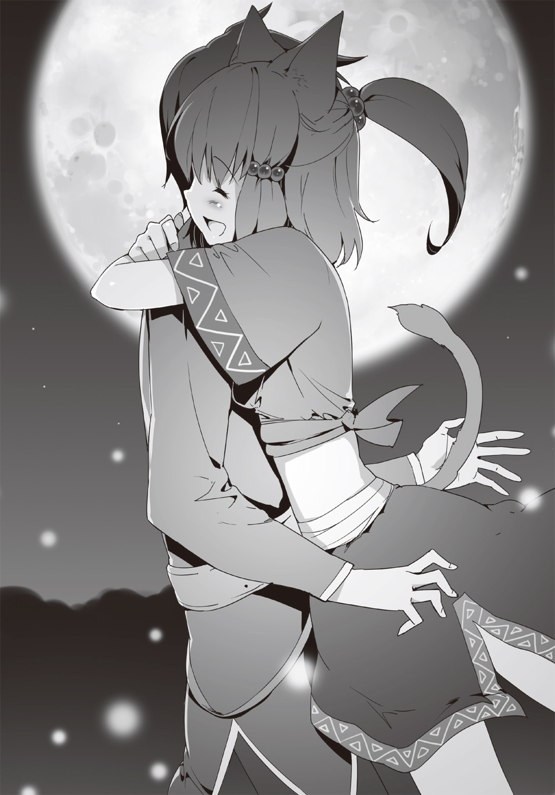
第三章 己との戦い
ギオスさん達には悪かったけど、実際、ライラについてきてもらえたのは僥倖だった。
オレ達は一晩明けてから、四功の洞窟に向けてバハークを出発したのだが――。
深淵の森は進めば進むほど道が複雑になっていって、少しでも気を抜けば自分が今どこにいるのかすら把握できなくなってしまうほどだったのだ。
もしライラが先導してくれなければ、地図があったところで迷ってしまい、下手をすれば目的地へ辿り着く前に力尽きてしまうところだったかもしれない。
「今どの辺なんだ......？」
背の高い草をかき分けて歩きながら、オレは地図を見下ろした。
ギオスさんに教えてもらい、丸をつけた場所は森の北の方だけど、あとどれくらい進めば到着するのかがまったく見当もつかない。
なにせ目印もない上、同じような景色が延々と続いているのだ。
「まだ半分以上あるよ」
率先して前方を歩くライラが、気軽な調子で応えた。
「朝から歩き続けているというのに、まだ半分もいっていないというのか。二日かかるとは聞いていたが......」
隣でアイリスが、さすがに疲れきったような声を出す。無理もない。
平坦な道であるならまだしも、大きな岩があったり、身の丈程もある木の根っこを飛び越えたりしなければならないので、通常以上に体力を消耗するのだ。
「お城暮らしでなまった体には辛いですね」
額の汗を拭いながら、ガーネットはため息をついた。
『なんだなんだ、だらしねえなお前ら。お嬢を助けるためなんだ。もうちょっと奮起したらどうだ』
マンゲツが批難してくる。
「お前はいいよな。歩く必要ないんだからさ」
思わずオレはぼやいた。足がないから仕方ないけどさ。
「しかしマンゲツに足が生えたら、それはそれでちょっと気持ち悪いですね」
ガーネットが半笑いで零した。
「人間みたいな足かな。それとも触手みたいな感じでうねうね移動するのかな」
想像するだけでぞっとするな。
「ふわふわと飛ぶのかもしれんぞ。魔獣でもいるだろう。【動く鎧】というのが」
アイリスが巨大な樹の幹に手をつきながら言った。
みんな、さすがに余裕がなくなってきて、こんなどうでもいい話でもしていないと状況に耐えきれないのだ。
「ああ、それはいいですね。マンゲツが飛べれば、わたくし達は摑まって目的地まで楽に移動できます」
「そうだな。よし、マンゲツ、飛んでくれ」
ガーネットの言葉にオレも賛同した。
『さっきから聞いてりゃ好き放題抜かしやがって。おれが鎧だからって、傷つかないと思ったら大間違いだぞ。これでも繊細な心を内に隠してるんだからな』
「鎧だけにか？」
「あはははははははは。リョウマ様、上手いです」
虚ろな目をするガーネット。ちょっと限界かもしれない。
「もう、しっかりしてよ、みんな。しょうがない。ちょっと休憩しようか」
一人元気なライラが足を止め、振り返った。
「いや、大丈夫だ。少しでも早く洞窟に着かねばならないからな」
アイリスはきりっとしながら言ったけど、顔は青白いし、足が震えている。どう見ても無理をしていた。
「急いだところで、目的地に着いた途端ぶっ倒れたら元も子もないよ。お昼も過ぎたことだし、ご飯食べよう」
ライラが首を横に振って、提案してきたので、オレも乗ることにする。
「そうだな。無理は禁物だ。ここらで一休みするか」
荷物を下ろして、地面にお尻をつけた。幸い、丈の長い草がクッションになっていて座り心地もいい。
「賛成です。アイリス、あなたも座ってください」
ガーネットが呼びかけ、その場に腰を下ろした。
みんなが同じような行動を取り始めたからか、アイリスもしばらくするとそこに座り込む。
「あー......さすがにしんどいな」
ぼやきと共に、オレは少しでも体をほぐしておこうと、腰を回した。
ライラが胡坐をかいたところで、全員が輪になって、昼食を開始する。
といっても手間をかけていられないので、干し肉やパンなどの簡単なメニューだ。
ただ、ギオスさんからもらった干し肉にはたっぷり香辛料がかけてあって、舌が痺れるくらい辛いけど味わい深い。
パンもバハークで飼っている家畜からとれたミルクを生地に混ぜ込んであったり、香草入りのチーズを挟んだりしているので、なかなか味を楽しめた。
「しかし、ライラ、本当に私達についてくるつもりなのか？」
アイリスが干し肉にかじりつき、辛さに痺れたのか、小さな舌を出したあとで尋ねる。
「アイリスやわたくしには事情がありますが、単に外へ出たいというだけではなかなかに難しいのではないでしょうか」
丁寧にパンを千切って口へ運びながら、ガーネットが首を傾げた。
昨夜のライラとの一件のことを言っているのだろう。彼女を旅に同行させる以上、二人にも話しておくべきだろうと、出発の前、既に話してあったのだ。
当初は難色を示していたが、ライラ自身の思いや、オレの感じたことを伝えて説得したところ、最終的には二人とも納得してくれた。
「うーん。そうだねえ。本当はやっちゃいけないことだって、あたしもわかってるんだけど......やっぱり、自分の気持ちが止められないんだよ。どうしても」
「まあ、やってみるしかないよな。できる限りのことはしてみるよ」
オレが言うと、ライラは眩いばかりの笑顔で「ありがとう、リョウマ！」と言ってくれた。
「うむ、そうだな。ライラの気持ちと、彼女に協力したいというリョウマの意志も理解した。微力ではあるが、私も一助となろう」
「ええ、わたくしも同じくです。リョウマ様の仲間を思いやる優しさは尊重したいですし。......恋敵が増えるのはちょっと複雑ですけど」
呟いたガーネットの声に、ライラは「ほえ？」と訊き返した。が、彼女は慌てたように首を横に振る。
「な、なんでもないです。ウフフ」
「そう？ でも、みんな、本当に、ありがとうね！ もし上手くいったら、よろしくね」
ライラが頭を下げたので、オレ達も頷いた。
「......ところで、会った時から気になってたんだけど、リョウマがつけてるの、マンゲツだっけ？ 珍しい防具だよね」
事が落ち着いてしばらくしたところで、ライラがパンを一口で半分も食べながら話題を変えた。
「ああ。アイリスから借りてるんだ。ちょっと対応が面倒なところはあるけど、頼りになるよ」
『対応が面倒くさくて悪かったな』
鎧の模様が半眼になる。
「道具が喋るのって初めて見たかも。帝国にはそういうのがたくさんあるの？」
「あまりないな。そもそも、マンゲツは父上が造ったものだ。ただ、帝都に住むある職人は非常にできのいい武器や防具を手がけ、中には喋るものもあったと聞く」
アイリスの説明に、干し肉を飲み込んだガーネットは目線を上にやった。
「そういえば聞いたことがありますね。その職人が作ったものは、どれも耐久度や切れ味に優れているだけでなく、不思議な能力を秘めていたとか」
へえ。オレは初めて聞いたな。マンゲツみたいなのが他にもいるってわけか。
「ところで、ライラは躊躇うことなく道を歩いているが、この森のことは全て把握しているのか？」
オレの質問に、ライラは「んーん」と檸檬水を飲みながら否定する。
「さすがにそれは無理だよ。深淵の森は無茶苦茶広いからね。小さい頃からうろついてるけど、まだまだ知らないところはたくさんあるよ」
『だけどお前、自信満々に道案内するって買ってでたじゃねえかよ。ありゃ吹かしか？』
だったらタダじゃおかねえ、とでもいうようにマンゲツが睨みつけた。
「違うよ。四功の洞窟のことはあたしもある程度は知ってるし、匂いがするからね」
「......匂い、ですか？」
ガーネットが首を傾げると、ライラは尻尾を振りながら、鼻をひくつかせる。
「そうそう。トト様が言ってたでしょ。戦族で王になる人が四功の洞窟に挑むって。つまりトト様も行ったんだよ。アニ様達ももう儀式は終わってるはずだし。だから三人の匂いを辿ってるんだよ」
「そういえば、戦族って匂いに敏感なんだったな」
三年前もそのおかげで、敵を避けて通ったりできて助かったのを覚えている。
「ああ、だからこちらを助けてくれた時も、リョウマの匂いを辿って追いついたのか」
納得したように手を叩いたアイリスに、ライラはパンを口に中に詰め込んでから頷いた。
「そーいうことだよ。他の人ならともかく、リョウマの匂いは絶対に間違わないからね」
「......やけに自信がありますね？」
不思議そうな顔をするガーネット。ライラは、もちろん、と当たり前のことを言うように親指を立てた。
「なにせ――リョウマは、将来あたしの旦那様になる人だからね！」
オレは、飲んでいた檸檬水を盛大に噴く。
「そういうことですか。なら忘れませんよね。なにせ夫になる方の匂いですから。夫に......夫？」
あまりに自然な流れであったため、聞き逃しそうになっていたガーネットが、硬直した。
アイリスもまた、飲み込みかけていた干し肉が引っかかったのか、激しく咳き込む。
「お、夫だと、なんだそれは!?」
「結婚した相手のことだよ。女の人の場合は妻だよね。奥さんともいう」
「いや懇切丁寧に解説してくれたことには礼を言うが、私もそれは知っている」
胸を何度か叩いて食物を嚥下しつつ、アイリスは言った。
「リョウマが夫とはどういうことか、と言っているのだ！」
「......リョウマ様は何かご存じですか？」
低い声で、ガーネットから尋ねられる。あの、ちょっと、雰囲気が怖いんですが。
「いや、オレも何がなんだか......ライラ、いきなりどうしたんだよ？」
戸惑いながら問いかけたオレに、ライラは無邪気な顔で応えた。
「ん？ 三年前にあたしと約束したことの一つ目だよ？ これからリョウマにずっとついていくけどいい？ って訊いたよね。リョウマは、ああ、よろしくって言ってくれたよ」
「リョウマ様、ライラと約束とはどういうことですか？」「......リョウマ？」
二人分の視線がダイレクトに突き刺さる。痛い。
いや、うん、言った。確かに言ったよ。だけどそれは、もう一度アラムヴェルトに来たらってやつより、遙かに請け負いやすかったから。何故って、
「でも、それは......あれだろ。三年前の旅が終わるまで同行するってことだろ？」
「違うよ。あれは、結婚するってことなんだよ？」
「えええええええええ!?」
そうだったの!?
「いや、でも、なんで!? あの時は模擬戦をやってオレが勝っただけで、他は特に何も......！」
「やだな。なにとぼけてるの。戦族の女はね、気に入った男の人に勝負を挑んで――負けたら嫁ぐって決まりでしょ？」
「初耳ですけども!?」
なにその三年越しに知らされる驚愕の事実！
「あれ、言ってなかったっけ」
「聞いてないよ！ 全然！」
二つ目よりずっともっと重要なことじゃないか、それ！
「そっかそっか。あはは。ごめん。そういうわけなんだよ」
「軽い!?」
あまりにも！
「で......そんなわけで。トト様やアニ様には言ってないけどさ。あたしはもうリョウマのものなんだよ。だから、リョウマが信じる人はあたしだって信じる」
綺麗な歯を見せて堂々と言いきるライラ。
「い、いや、ライラ？ 申し出はありがたいんだけど、オレ、そんなこと全然知らなくてさ......」
「そ、そうですよ！ リョウマ様は慎重なお方です。事情を知っていたのであれば、そのようなことは気軽に請け負わなかったはずです！ そうですよね、リョウマ様!?」
意気込むガーネットに、オレは「は、はい！」と急いで返した。
「う、うむ。ガーネットの言う通りだ。ここここ、こういうものは本人の気持ちもたたた大切だから、あああ、あまりそのような勝手なことを言ってはははははは、ぱぱぱ、パンが美味しい！」
アイリスが明らかに動揺した様子で、大きなパンを二つも三つも咥えこんだ。息ができなくなるぞ。
「えー？ あたしは別にいいんだけどなあ」
「ダメだッ！」「ダメですっ！」
ライラがきょとんとして答えると、アイリスとガーネットはほぼ同時に叫んだ。
「うーん。そっか。まあ、そうだよね。リョウマに言ってなかったのはダメだよね。わかった」
うんうんと頷いて、ライラは立ち上がる。
オレの方へと歩み寄り、笑みを浮かべながら、
「じゃ――いずれ旦那様にするってことで」
ライラは、オレの額に、口づけした。
「おうふっ!?」
あまりにいきなりなことで、オレは意図せず変な声が出る。
体全体が一気に熱くなって、瞬間沸騰してしまったようだ。
「な、な、な......」「は......はわわわ」
アイリスとガーネットは口を何度も開閉させて、何が起こったかわからないというような表情をしていた。
「よし。休憩終わり。行くよー！」
手を振り上げて、ライラは荷物を片づけると、意気揚々と歩みを再開させる。
オレはただ呆然と佇むことしかできなかった。
「きょ......強敵出現ですね......」
「......これは......油断ができぬ」
ガーネットが唇を嚙み締め、アイリスは悔しそうに唸りを上げる。
『......面倒なことになってきやがったなあ』
ぼやくように呟いた鎧の声を聞きながら、オレは頭を搔いた。
稜線の向こうに陽が沈み始めた頃、夜の森を歩くのは危険ということで、オレ達はようやく一日目の野営をすることにした。
それぞれが夕食の材料を探しに三々五々散り、オレは森をしばらく歩いたところで、果実の生る樹を見つける。
モッカンと呼ばれるもので、見た目はオレンジに似ているけど、食べるとバナナの味がするというちょっと変な代物だ。
ただ栄養はあるし、調理も皮を剝くだけで食えるので、キャンプ料理にはちょうどいい。幾つかもぎ取って、ひとまず野営地まで持っていくことにした。
「......ん？」
草をかき分けながら戻っていくところで、オレは不意にあるものを感じ取る。
鼻孔をくすぐるのは、なんともいえない美味しそうな匂いだ。
一体なんだろうと思って進むと、野営地には既にライラが帰還していた。
彼女の前には焚き火があり、鍋がかけられていて、匂いはそこから漂ってくるようである。
「あ、リョウマ、おかえり」
声をかけられて、ただいまと返してから、オレはモッカンの実を地面に置いた。
「それ、なに作ってるんだ？」
「ん。シチューだよ。香辛料と塩で味を調えたスープに、里から持ってきた赤茄子を潰して入れたんだ。あとは肉と骨から出汁が取れるのを待てば、でき上がり」
「へえ、よさそうな感じだな。......にしても肉って？ それも里から？」
「なに言ってるの。肉なんてそこらへんにあるじゃない」
ライラがきょとんとした表情を作ったが、意味がわからず、オレは首を傾げる。
「そこらへんにあるって、お前、果実やキノコじゃないんだから」
「あれだよ、あれ。あれ使ったの」
鍋の様子を眺めながらライラが後ろを指差した。
オレは視線を移動させて、ぎょっとする。
そこには、巨大な生き物の死体が横たわっていた。
頭としっぽが小さく、胴体は極端に太いという、ちょっと珍妙な姿をしている。
【突撃竜】と呼ばれる動物で、見た目にそぐわずかなり足が速く、頭蓋骨も分厚くて硬いので、猛烈な突進で獲物を捕らえることを得意としていた。
「これ、お前が一人で倒したのか？」
「うん。戦ったことがあるから楽勝だったよ」
さすがというべきか、なんというか。
まあ、三年前もライラはそこらの男なんて目じゃないくらい、魔獣相手に奮闘していたはずだ。これくらいはお手の物なのかもしれなかった。
「へえ、こいつをなあ。......美味いのか？」
ふと疑問に思って訊いてみる。三年前の旅は食料も豊富に用意されていたので、さすがに突撃竜の肉は食べたことがなかった。
「大丈夫。毒はないよ」
スープの味見をしながらライラが返してくる。そうか。毒はないのか。じゃあ問題はないかな。毒がないなら......うん、まあ......えーと。
「......美味しいのか？」
「毒はないから安心して」
オーケー。無害ってところは受け入れた。問題はそのあとだ。
「いや、だから、ライラ。美味しいのかって」
「リョウマ、野外っていうのはね、ご飯を食べることが何より大変なんだよ」
ライラはこちらに顔を向けずに続けた。
「携帯食料だけでやり過ごせればいいけど、それだけじゃ栄養だって足りなくなる。旅を続ける体力を維持するためには、やっぱりきちんとしたものを口に入れなきゃ。だけど、毒のある草やキノコだってあるし、水場の確保や疲労回復に役立つ食材の発見も重要になってくるよね」
「あ、ああ、そうだな」
「その点、突撃竜は食べ応えがあって栄養もあるし、精もつく。干せば何日だって持つし、血は濾して薬草と混ぜれば薬にもなるの。いいこと尽くめだよね」
「............そうだな」
何やら有無をいわせぬ迫力が伝わってくる。どうにも嫌な予感がしてきた。
『要は食えるだけありがたいんだから文句は言うなってことか。不味いんだな』
「言うなよマンゲツ、必死で自分の中で誤魔化してるんだから！」
確定してしまうだろ、暗い未来が。
『どうせおれは食わねえからどっちでもいいしよ。へへへへ』
なんて嫌な奴だ。無理矢理鍋に突っ込んで一緒に煮込んでやろうか。
「あー、ダメでした。今日はちょっとしか見つけられませんでした」
「面目ない。私もそれほど収穫はない。キノコは何種類か見つけたが、また前のようになっても嫌だしな......」
ガーネットとアイリスが現れて、彼女達は手に持った食料を地面に置いた。野草や森に自生する果物などで、味を気にしなければ食えることは食えるというものばかりだ。
「いいよ、いいよ。ちょうどシチューができたところだし」
「なに、シチューだと。本当か!?」
ライラが言うと、目の色を変えて、アイリスが鍋に飛びつく。今にも顔を突っ込みそうな勢いだった。
「まあ、助かりました。温かいものが食べたいと思っていたところです」
ガーネットもいそいそと火の近くに腰を下ろす。
ライラは地面にある果物を取ると、素早く持っていたナイフで切り、鍋に入れた。
「それにしても、ライラは随分と料理に手慣れているのだな」
待ちきれない様子で鍋を眺めながら、アイリスが感心したように告げる。
「鍛錬で森に出かけて、そのまま一夜を過ごすことはしょっちゅうだからね。これくらいできなきゃ生きていけないよ」
「そういえば三年前もライラの作ったものをいただきましたね。どれも大変な美味でした」
ガーネットの言葉でオレも思い出した。
そういえば、旅の道中、ありあわせの材料を使って色んな物を用意してくれたっけ。
「うーむ。旅をしているのだから、私も少しくらいは覚えなければならないな」
腕を組んで考え込むアイリス。
「別にオレが作ってもいいけど、できるなら交代でやった方が面白いかもな。アイリスは料理を作ったことがあるのか？」
「あるぞ。何でも自分一人でできなければならないと、以前に肉の串焼きをしたことがある。だが、竈に材料を放り込んで火の魔法を放ったら、爆発して炭になってしまった。あれは悲しかったな」
「それは悲しいだろうな......」
アイリスも材料も。
「おかげでルッテンガから二度と台所に入るなと怒られてしまった。よかれと思ってやったことなのだが......」
シュンと肩を落とすアイリス。気持ちはわかるが、この場合はルッテンガが正しい気もした。
「また今度、オレがある程度なら教えるよ。ガーネットはどうだっけ？」
「わ、わたくしですか？ わたくしはええと、あの......め、目玉焼きくらいなら、以前、試しに......」
頰を赤らめ、恥ずかしそうに両の指同士を絡ませるガーネット。
まあ、二人とも王族だしな。経験のあるライラの方が特殊なのかもしれない。
「ダメだよー、ガーネットもアイリスも。ご飯くらい作れなきゃ、将来の旦那様が喜んでくれないよ？」
皿にでき上がったシチューをよそいながら、ライラが言った。
「で、ですが、お城には専任の料理人がいますし......」
ガーネットが遠慮がちに返したが、ライラが「わかってないなあ」と指を振る。
「料理人がいるのに、頑張って作るからいいんじゃない。ねえ、リョウマ？」
「えっ!? あ、いや、ど、どうかな、そ、そうだな......」
突然に振られて挙動不審になるオレ。
「そ、そうなのか？ リョウマ」「どうなのですか、リョウマ様!?」
アイリスとガーネットから同時に迫られ、なんとも答えにくい状況になってしまった。
「はい、できたよ。どうぞ」
だが、ライラの台詞でひとまずその話題は中断し、夕食の時間を楽しむことにする。
「......ほう、このシチューは変わっているが、味はなかなかだな」
嬉しそうに肉を頰張りながら、アイリスは顔を綻ばせた。
「本当です。材料は何を使っているんですか？」
「聞かない方が賢明だと思うぞ」
後ろの方に横たわっている存在を意識しつつ、オレはガーネットにアドバイスする。
が、実際、シチューはなかなかのものだった。
少し苦みがあるものの、肉は柔らかく、混ぜられた他の材料や香草が協力し合い、赤茄子の酸味を消している。
「なんだよ、美味しいじゃないか。どうして教えてくれなかったんだよ？」
オレが尋ねると、ライラは悪戯っぽく笑った。
「だって、食べてみるまでのお楽しみにした方がいいでしょ？」
そういうことか。どうやらからかわれたようだった。
『なんだよ、美味いのかよ。ちくしょう、おれも食いてえなあ』
「お前の口は模様だから中に入らないだろ。空気中に漂ってる魔力を腹いっぱい食べろよ」
『こんなもんに味があるかよ。いっぺんでいいから肉とか酒を腹に入れてえなあ』
「お前の腹はどこにあるんだよ......どう見ても顔しかないぞ」
オレが突っ込んでいると、アイリスが「ふむ」と思案気な顔を見せた。
「確かにマンゲツだけ何も食せぬというのは不公平だな。材料を押し当てたらなんとかなるのではないか？」
『よし試そう！』
「試すな」
鎧がべったべたになるのが目に見えてる。
「あ、そうだ。リョウマ、口開けて」
「ん？ こうか？」
突然、ライラから声をかけられてオレは素直に従った。だが、
「――はい、あーんっ」
そう言われ、笑顔でスプーンを差し出されたので、慌てて口を閉じる。
「あ、ダメだよ、ちゃんと食べてくれなきゃ！」
「い、いや、いきなりなんだよ？ 恥ずかしいだろ？」
「恥ずかしくないよ、いつかこういうことをする間柄になるんだから」
「なんで決定事項になってるんだよ。ダメだって！ だ、大体、別に夫婦だってやるって決まってるわけじゃないんだろ？」
「え、でも、トト様はいつもハハ様にやってもらってたよ？」
あのギオスさんが!?
「......そういえば、ライラの母君にはお会いできなかったな。どうかされたのか？」
「ん？ ああ。いやー、別に。ハハ様はトト様やアニ様よりずっと狩りが好きでね。しょっちゅう森に出かけてるから、あんまり里に帰ってこないんだよ」
アイリスの質問に答えるライラ。そういえば、そうだった。どうやら、この母にしてこの娘ありという血筋らしい。
ライラのお母さん、つまりお妃様には三年前に一度だけ会ったことがあった。
美人だけど、非常に快活な人物で親しみやすく、ちょっと古い表現を使えば肝っ玉母さんという感じである。
「と、そんなことより、はい、リョウマ。あーんして。ね？」
「ちょ、ちょっと待ってくれって......」
ずいずいとにじり寄るライラに戸惑い、オレは及び腰になる。
「ライラ！ そ、そのようなこと、少なくともわたくしの前では許しませんよ!?」
と、そこでガーネットが立ち上がった。彼女は足音荒くこちらに歩み寄ると、腰に両手を当てる。
「殿方にあーんっ、などと、そんな、わたくしだって妄想でしかやっていない......もとい、品性に欠けるやり方、しゅ、淑女としてどうかと思います！」
「え、そうかな？ まあ、気にしない気にしない。ここは王宮じゃないしね」
だがライラはガーネットの言うことなんて歯牙にもかける様子はなく、尚もオレに迫ってきた。
「そ、そんな......！ い、いえ、でも確かに、ここは城ではありません。だとすれば、殊更に身分を気にする方が無粋なのかも......やはりここは思いきって......？」
なにやらショックを受けたような顔をしていたガーネットだったが、彼女はしばらく目を逸らしてぶつぶつ呟き始める。
そして、
「......わかりました！ では、ライラはそうしてください。かわりに、わ、わたくしは、こうしますっ！」
何かを決心したかのように叫ぶと、その場に跪き、オレの肩を摑んだ。
「リョウマ様っ！ 失礼致します！」
直後、オレはガーネットに引っ張られ、バランスを崩して倒れ込む。
「うわっ、危なっ！ ......あれ？」
あわや地面に激突かと慌てたが、オレのこめかみの辺りは、何か柔らかな感触に包まれた。一体なんだろうかと強引に視線を下に向けて――オレは、息を呑んだ。
「ガ......ガーネット？」
とんでもない状況になっている。オレは、足を崩したガーネットの、太股の上に頭を載せていたのだ。
つまり、いわゆる膝枕の状態だった。
「そちらが『あーん』でくるのなら、こ、こちらはこうです！ リョウマ様をもてなすことであれば、負けませんよ!?」
顔を赤くしながら、胸を張るガーネット。
「お、やるね！ どうせなら、そうこなくっちゃ。はい、じゃあリョウマ、続きだよ。あーんっ！」
「いやいやいやいやいや」
女性に膝枕をされたまま、別の女性に食べ物を与えられる。
どれだけ桃色世界の住人なんだよ、オレは。
よく漫画なんかで大金持ちが似たような感じになっているけど、実際に自分が同じことをされてみると、逆にいたたまれなくなってくる。
「ほら、シチューが冷めるから！ どーぞ」
だが、かといって抵抗するというのも違う気がして、オレはされるがまま、ライラからシチューを貰った。
口の中で咀嚼して飲み込む。
「どう？」
「......美味しい」
噓をつくわけにはいかない、と思って言うと、ライラはにっこり笑った。
『お、おい、お嬢！ お嬢ー！ このままじゃ不味いぞ！ お嬢もなんかやるんだ！ こいつらよりすごいことだ！ よーし、あれだ。そうだ、口移しだ！ シチューを口から口へ、ぶちゅっと兄弟に食べさせてあげるんだ！ 遠慮なく思いきって、お嬢の可憐な唇をこいつの口に！ そうすりゃリョウマは大喜びだぜ!?』
焦ってるのかなんなのかわからないが、マンゲツがものすごいことを言い出す。
「く、く、口移し!? いい、いや、しかし、それはさすがに私には......！」
『いいのかよ、このまま他の二人に先を越されるぞ!? リョウマはお前の皇帝なんだ。横取りされてもいいのかよ！』
「こ、困る、それは困るが......し、しかし！」
頰に両手を当て、真っ赤になるアイリス。照れている姿はこの上なく可愛いが、このままだととんでもない事態に発展しそうだった。
「......そ、そうだな。帝国の新しい皇帝となってくれたリョウマに、私も最大限の努力で尽くさなければならない。そのためには......そのためには仕方ないのだ。これは！ ガルフレアを代表する者としてやるべきことだ！」
アイリスは自分の皿から掬ったシチューを口に入れると、意を決したようにオレに近づいてきた。
「おお、おい、アイリス！ 待った！ 冷静になろう！ 胸に手を当てて数秒だけ考えてみよう！ お前、どう考えても混乱してるぞ!?」
いきなりの行動を必死で止めるも、アイリスは真っ赤になったまま頑なに首を横に振り、オレの顔へと手を伸ばしてくる。両手で頰を包み込むと、そのまま、ゆっくりと自分の唇を――。
「く、口移しなんて許しませんよ!? そんなわたくしさえ躊躇してしまうような、大胆なこと......なんとしても阻止します！」
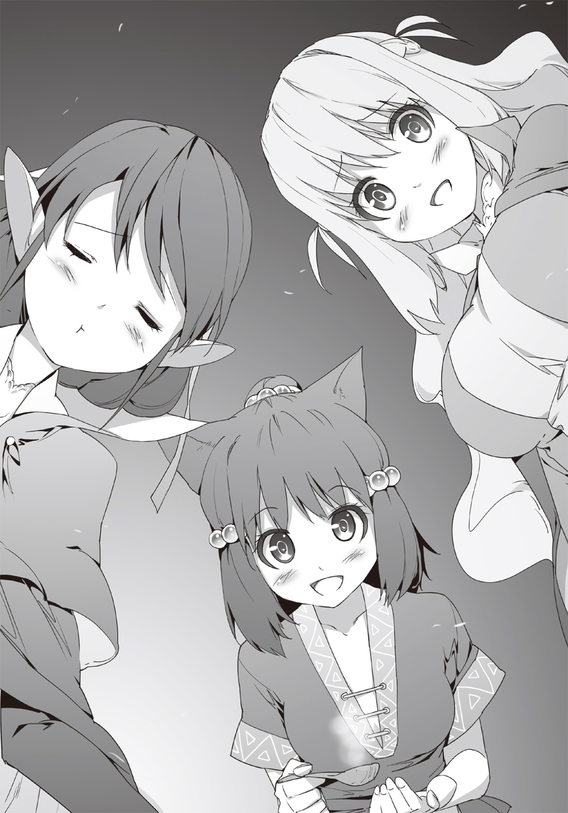
その時、ガーネットが慌てたように立ち上がる。
「うわ......っ!?」
彼女の膝の上に頭を載せていたオレは、自然と上半身が跳ね上がる形になった。
視界が上下に揺れ、目の前に何か赤い物が飛び込んでくる。
「あ！ リョウマ、危ない、そっちには鍋からよそいたてのシチューが......！」
というライラの注意が聞こえたが、何もかもが遅すぎた。
受け身すら取れず、オレの顔面は、思いっきり皿の中にある熱々のシチューに飛び込む。
「あっつぁあああああああああああああああっ！」
顔全体が一気に火をつけられたように痛み、オレは暴れ回る。
「ああ、リョウマ様が！ 水、水を！」
「はわわわわ、リョ、リョウマ！」
慌てるガーネットとアイリスの声。そして水の入った皮袋を取りに行ったのであろう、ライラの足音が聞こえた。
『よし、お嬢、今だ！ 隙をついて口移しだ！』
「お前、本当に鍋に突っ込むからな!?」
騒動の中、未だに目的を諦めようとしないマンゲツに、オレは思わず叫んだ。
すぐに顔面に水をかけられ、さらにアイリスによって治癒魔法がかけられたため、オレは事なきを得た。
「ご、ごめんなさい、リョウマ様。つい我を忘れてしまって......」
「私こそすまない。ガーネットを動揺させるようなことをしてしまったから」
ガーネットとアイリス、二人から交互に謝られ、オレは「いいよ、もう。大したことはなかったし」とわずかな苦笑いを浮かべる。
『まったく、人騒がせだぜ。一体誰のせいだ』
「基本的なボケをかますな。お前だ！」
オレは鎧に向かって言い放ち、軽く叩くと、深いため息をついた。
（洞窟に着く前からこの疲労感......どうかこれからは、平穏無事に過ごせますように）
密かに手を組み合わせると、空を仰ぎ。
天に向かって、オレは祈りを捧げた。
祈りが届いたのかどうなのかわからないが、それからの行程で、オレが困るような事態は起こらなかった。
だけど夜寝る時と時折の休憩以外、ずっと歩き詰めなのはさすがにばてる。
なにせただ進むだけならともかく、蜂みたい姿をした毒蟲や、血を吸う植物、巨大な腕を持つゴリラみたいなやつ等々、多種多様の魔獣達まで襲ってくるのだ。
力自慢のライラや魔法が得意なガーネットがいるおかげで、アイリスと二人だけで旅をしていた時よりは随分と楽になったけど、さすがにこんな強行軍では無理は出てくる。
だから二日目の夕刻、ライラが足を止めて言った台詞には、心底から救われたと思った。
「よし、洞窟はもうすぐそこだよ！ 今日はゆっくりと休んで、万全の体調で挑もう！」
全身から一気に力が抜けて、オレはへたりこむ。正直なところをいえば、もう一歩だって動きたくなかった。
「さすがに......疲れましたね。これ以上進むとなると、倒れていたかもしれません」
膝を折って腰を下ろしたガーネットは、大きくため息をつく。
アイリスも今度ばかりは意地を張る余裕もないらしく、地面に両手をついて苦しそうに目を閉じた。
底なしかと思う程の体力を持つライラだけが、未だに元気を持て余しているらしく、踊るように周囲に石を置いていた。
【鈴鳴鉱】と呼ばれる魔法をかけられた道具で、振動によって高い音を鳴らす効果があり、野外で夜を過ごす時によく用いられる。糸と糸で間を繫ぎ、野営地を囲むと、近くに魔獣が現れた時に教えてくれるというわけだ。
「はい、準備完了。あとは晩御飯を食べて寝るだけ！ ......と言いたいところなんだけどね」
戻ってきたライラがオレ達全員を見回した。
「悪いんだけど、みんなにはもう一仕事してもらうよ。大事なことだから、しっかりね」
「ま、まだ何かあるんですか？ できれば遠慮したいのですが......」
げんなりした顔をするガーネットにライラは首を振る。
「だーめ。これは洞窟へ入る前に絶対必要なことなんだから。どれだけ疲れててもやってもらうよ」
「一体何をするというのだ？」
アイリスが両手を地面につけたままで尋ねた。
「四功の洞窟は戦族にとって神聖な場所だからね。入る前には体を清めなきゃいけないんだよ。近くに湖があるから、みんなで浸かろう」
「ああ......そういうことですか。わかりました。体も汚れていることですし、ちょうどよかったといえばちょうどいいですね」
ほっとしたように言ってからガーネットは立ち上がる。オレはマンゲツを自分の体から外し、肩を回しながら口を開いた。
「じゃあ、先にアイリス達で行ってこいよ。オレはあとでいいから」
だがライラはきょとんとした顔で応えた。
「なに言ってるの。リョウマも一緒に行くんだよ？」
「へ？」
「ただ浸かるだけじゃダメなの。ちゃんと手順があるんだから。ほら、行こう」
予想だにしない言葉に一瞬反応が遅れていると、ライラは近づいてきて、オレの襟首を摑んだ。
「お、おい、やばいって！ 女の子ばっかりのところにオレが交ざるとか、そういうのはやっぱり、道徳的に！」
「わけのわからないこと言ってないで、行くよー」
必死で抵抗したがライラの力は男のオレから見ても相当強く、とてもじゃないが逆らえない。
引きずられるようにして、いや、完全に引きずられながら連行された。
「ライラ！ 聞けって！ まず話し合おう！ 人と人が言葉を持つ意味を考えて！ 平和はそこから始まるんだって、おい！」
我ながらあまり関係ないことを言ってる気もしたが、なんとかして止めなければならないという気持ちが言葉を紡ぎだす。
ただライラは鼻歌交じりに、上機嫌で進むばかりだ。こっちの話なんてろくに聞いてもいない。
やがて辿り着いたのは、森の中にあるとは思えない程大きな湖だった。
暮れかけた太陽を溶かし込み、水面が鮮やかなまでの紅色に染まっている。
こんな時でなければ景色の美しさに見惚れてしまうところだったが、生憎とそんな場合じゃなかった。
「よし。ここだよ。じゃあ、早速入るとしようか」
オレから手を放すと同時に、ライラは上着に手をかける。
そして、まったく何の躊躇いもなしに、あっさりと脱いでしまった。
視界に、大胆に揺れる豊満な胸が映る。
「ちょっ......っ」
慌てて目を逸らした。が、そっちはそっちで相当に危ない。
何故なら、アイリスがとっくに服を脱いで生まれたままの姿になっていたからだ。
「でええええええ!?」
さっきからまるで日本語を話すことができない。
そ、そういえば、アイリスも人前で裸になるのが平気な子だった。いや、そういう言い方はかなりの誤解を招くような気がしないでもないけども！
「どうしたリョウマ。お前も脱がないでいいのか？」
「いやオレはちょっと......あの......は、ははは」
とてもじゃないが直視できるはずもないので、下を向く。
「リョウマ様。お恥ずかしいのは理解できます。ですが理由はわかりませんが、これが必要なことであるというのであれば、一つご覚悟をお決めになってください」
ガーネットが声をかけてきてくれたので、オレは「そう言われても......」と視線を上げたところで硬直した。
彼女もまた素っ裸だったのだ。
豊かに実った胸も、引き締まった腰も、さらにはその下までも――、全てが露になっている。
「うわあああああああああっ!?」
三度目の悲鳴。というか、なんなんだ。男のオレが悲鳴を上げっ放しで、女性陣はまるで平気って、いいのかそれは!?
......あ、そっか。高貴な身分の方は裸を見られることにそれほど抵抗がない。以前、マンゲツに聞いたことだ。
そういえば三年前、温泉でガーネットに鉢合わせした時も、彼女が照れていたのは自分の体を見られたからではなく、こっちの裸を目にしたからだった。
「ほら、リョウマも脱いで。じゃないといつまで経っても終わらないよ」
ライラが目のやり場に困る格好で近寄ってきて、オレの服に手をかけた。かと思えばあっという間に脱がしてしまう。
「い、いやあああ！ やめてえええ！」
乙女の気分でオレは自分の体を抱きしめた。
「はい、最後の一枚、行くよー」
ライラが何故か楽しそうに声を弾ませる。ズボンはとっくに脱がされていて、残っているのは下着だけだ。
「ちょ、ちょっと待て！ ここはダメだって！ 本当にまずい！」
三人が思春期男子にとっては過激すぎる格好をしているが故、オレのオレたる証が今、とんでもないことになっているのだから！
「なにがまずいの？ なんで股間を隠してるの？」
見られたら一番言い訳のきかないところだからです。
「マ、マンゲツ！ 助けてくれ！」
お前だけが頼りだ！ オレは先ほどの場所に置いてきたマンゲツに、救いを求めるように叫んだ。
『悪い、兄弟。オレは文字通り手も足も出ない』
そういえばこいつ、鎧だった......。こっちにもってくればよかった。
「むう......だ、男性の裸は初めて見たが、変な気分だな」
少し頰を染めながら、アイリスがこちらを見ている。自分の体はさらしても問題ないが、他人の、それも異性の裸を見るのはさすがに照れるようだ。
「アイリス、ダメですよ。リョウマ様のことを想うのであれば、視界を覆いなさい」
良心的なことを言っているように見えるガーネットも、両目を覆った指の隙間は大きく空いていた。完全にこっちを見ている。
「はーい、ぐだぐだ言ってないで脱ーぐ」
二人の反応に意識を逸らしている間に、ライラはオレを転がすと下着に手をかけて無理矢理に抜き取ってしまった。
「きゃあああああ！」
万事休す。オレは急いで立ち上がると、ダッシュで湖に飛び込んだ。
水深はそれほどあるわけじゃなくて、せいぜいがオレの腹辺りまでだ。飛沫と共に下半身が水中に沈み、夕日が差し込んでいることもあって上手いこと隠してくれた。
「お、元気いいね。それじゃあたし達も行こうか」
ライラが跳躍するとオレの傍に降り立つ。遠慮なしに足を開いたせいで、咄嗟に顔を背けていなければ、見えてはいけないものがこの上なくはっきりと見えるところだった。
続いてガーネットやアイリスが慎重に入ってきて、近くに寄ってくる。
「かなり冷たいですが、汗や埃が流れて気持ちいいですね」
水を自分の体にかけながら、湖を堪能するように、目を閉じるガーネット。
「これは思わぬ幸運だったな。二日間の疲労が取れるかのような心持ちだ」
嬉しそうに水を掬い上げ、見つめるアイリス。
「この湖は戦族の初代族長、つまり、あたしのお父さんのお父さんの、ずっとずっとお父さんが見つけたところでね。はじめ、バハークはここにあったんだよ。人が増えてきたから今の場所に移ったけどね」
「四功の洞窟へ挑む試練は、その時の名残というわけか」
アイリスが納得したように言うと、ライラは「そういうこと」と答えて湖に潜った。
普段と変わりなく会話を交わす女の子達とは対照的に、オレはといえば、身動き一つ取れない。
当たり前だ。正面を向いても裸。右を向いても裸。左を向いても裸。
お色気漫画もかくやとばかりに、おっぱいに続くおっぱい、そしておっぱいのオンパレードだ。
なんて役得なんだと堪能するくらいに大物であったならまだよかった。だけどオレは残念ながら、まだ女の子とろくに付き合ったこともない最高に素敵なＤＯＵＴＥＩだ。
喜ぶより先に、どうすればいいのかわからない思いがこみ上げてきて、今すぐこの場から逃げ出したくなってしまう。
「そ、それで、ライラ。全員で湖に入らなきゃいけないのはどうしてなんだ？」
なんでもいいから、一刻も早く終わらせて服を着たい。正直、生きた心地がしなかった。
「ああ。ええとね、四功の洞窟に挑む人が複数の場合は、湖の水を互いの体にかけ合わなきゃいけないんだよ。そうすることで初めて全員が資格を得られるんだ」
「単独より複数の方がいいんですか？」
ガーネットが尋ねる。
「そうとも限らないよ。確かに一人よりは二人で挑む方が、試練は潜り抜けやすくなるけど、かわりにどっちかが失敗したらそこで終わりだからね」
「ああ。連帯責任になるということか」
アイリスが腕を組んで頷いた。
「うん。水をかけ合うっていうのは、お互いがお互いの失敗を背負うという誓いの意味もあるらしいよ。......というわけで、リョウマ」
微かな水音をさせながら、ライラがこちらへ距離を詰めてくる。
「はい。あたしに水かけて」
「え。......オレが？ いや別にいいけど、なんで？」
「水をかけ合うのは、挑む人達の中で特に親しい者同士がやるって決まりなんだよ。だから、あたしにはリョウマがいいの」
「ちょ、ちょっと待ってください。勝手に決めないでください。だとすればリョウマ様と水をかけ合うのは、わたくしです！」
ガーネットが負けじとばかりにライラの体を押し退けた。
「なにせ三年前、わたくしはリョウマ様の一番近くにいたのですから！ 絆は最も深いはずです」
「あたしだってリョウマと一緒に戦ってきたよ？ ガーネットよりも過ごした時間は長いはずだし」
「いいえ、わたくしの方が長いです！」
「......待て。そういうことなら私も退いてはいられない」
更にアイリスが迫ってくる。
「アイリス、あなたはまだリョウマ様と出会って日が浅いでしょう。今日のところは二番手に甘んじてください」
ガーネットが眉根を寄せると、アイリスは首を振った。
「なにを言う。共にあった時間が長ければ絆も深いというわけではないだろう。私はリョウマと二人きりで旅をしてきたのだ。お前達よりいくらかは彼のことを知っているはずだ」
「わたくしほどリョウマ様のことを理解し、理解されている者はいません！」
「ちがうよ、あたしだって！」
「いいや、私だ！」
三人は互いに一歩も譲らず、激論を交わし合う。
「い、いや、アイリスもガーネットもライラも、所詮は昔の決まりなんだから、別にこんなの誰だって......あの......それよりもだな」
輪になって押し合いへし合いされると、真ん中にいるオレとしては非常に居心地が悪いというかいいというかその。
三人が三人とも体を押しつけてくるから、胸やそれ以外の部分がダイレクトに当たってとんでもない感触が気持ちいいやら気持ちいいやら。まったくもって未知の体験に男としての機能が、その、段々と、歯止めが......。
「む。先程からなにか硬いものが当たらないか？」
「......そういえばそうですね。なんでしょう」
「リョウマの方からだねえ」
「......わああああああああああっ！」
さすがに耐えきれなくなって、突如として大声を出すとアイリス達は体を竦ませた。
「とうっ！ はいっ！ やあっ！」
オレは湖に手を突っ込んでは次々と跳ね上げ、三人に向かって水をかけていく。
「ちょ、ちょっと、リョウマ!? どうしたの!?」
「いきなり冷たい！ 何事だ!?」
「リョ、リョウマ様！」
三人が異口同音に動揺して声を上げるが、もう気にしてなどいられなかった。
「はい！ 終わった！ 三人ともオレにかけて！ 早く！」
「え？」「む？」「はい？」
「早く！ 水をかける！ さっさとするっ！」
普段なら絶対にしないような強い口調で命じると、ライラ、アイリス、ガーネットは揃って『は、はいっ！』と姿勢を正した。
同時にオレに向かって、水を飛ばしてくる。
「よし！ 儀式終わり！ お先に失礼しますおやすみ！」
矢継ぎ早に言い残して、オレは無理矢理に女性陣の輪を突破した。
「ああっ、リョウマ様！ 待ってください！ あんな風に作業的にやられては困ります！」
「そうだよ！ もうちょっとじっくりやってくれなきゃ！」
「リョウマ、ほぼ同時だからわからなかったが、今のは私が先だったか!? 教えてほしい！」
後ろから呼び止める声が聞こえてきたが、完全に無視した。
これ以上あそこにいたら、色んな意味で爆発してしまう。
オレは湖から上がって急いで服を身に纏うと、寝床に戻った。
『なんか声だけしか聞こえなかったが、兄弟、ひょっとして楽園みたいな場所にいたんじゃないか？』
マンゲツが羨ましそうに言ってくる。
「よく聞けマンゲツ......天国と地獄は紙一重だ」
オレはようやく人心地ついてから零した。
「覚悟のない奴に、すぎた癒しは毒になる」
『......無駄に重い言葉だな。勉強になった』
珍しく真剣な口調で、喋る鎧は応える。
一歩大人になるってこういうことなのかもしれない。
オレは、妙に達観した気持ちに至っていた。
やっとのことで辿り着いた四功の洞窟は、見た目からすればごく普通の場所に思えた。
三年前、アラムヴェルトへ来た時に、同じようなものを何度も見たことがある。
川が増水して向こう岸へ渡れない時に通った、地下にある巨大な墓所なんかは、もっと途方もない規模があった。
かつて存在していた国が遺したものらしく、道が入り組んでいる上、魔獣はいるし罠はたくさんあるし、まさにダンジョンという感じでなかなかに大変だったのを覚えている。
それに比べれば、四功の洞窟は大き目の防空壕といった感じで、これくらいなら子どもでも入って出てくることができそうだ。
「見た目で判断しちゃ危ないよ」
オレの表情で心の中を見抜いたのか、ライラが忠告してきた。
「ここは戦族の中で唯一魔法を使いこなした女の人が、初代族長に頼まれて作ったところでね。中は大変な仕掛けが施されてるんだ」
「......そうなのか」
言われてみると、入り口の周りに浸食するように絡みついた蔓といい、辺りを守るように生えた樹といい、急に不気味な感じに思えてくる。
「国王様の仰られた通り、簡単に踏破できる場所ではないようですね。気を引き締めて参りましょう」
ガーネットの言葉に全員が頷き、ライラとオレを先頭に洞窟内へと足を踏み入れた。
一歩入り込むと同時に、先程まであった周囲の音が一切消え去る。
微かな耳鳴りが聞こえてくる程の静寂で、震えるような冷気が肌を突き刺した。
「【炎よ。我が命に従い導きとなれ】」
ガーネットが魔導言語を唱えると、虚空に火が灯った。
空中高く掲げられた明かりが薄闇を照らし、辺りの様子を浮かび上がらせる。
ぽっかりと開けた場所で、足元や辺りの壁は武骨な岩によって作られていた。
目立って何かがあるわけでもなく、少し奥へ進むといきなり幅が狭くなり、更に道が続いている。
「このまま進めばいいのか？」
アイリスの質問に、ライラは頷くことで返した。
各々、油断なく武器を携えながら進んでいく。
真ん中辺りまで来ただろうか。不意に、声が聞こえてきた。
『よくぞ参った。試練に臨む者達よ。汝が名を我に教えよ』
洞窟中に響くんじゃないかと思うくらい大きい。女の人のものだ。
「この洞窟を作った魔導師のものだよ。魔法で自分の声を残したんだ」
説明したあとでライラは再度、口を開いた。
「ライラ。アイリス。ガーネット。リョウマ。四人で三功を成し遂げ、四功を手にすべく挑みます」
『......汝らの名は刻まれた。然れば見事、試練を潜り抜けてみせよ』
厳かに告げて、声は続ける。
『この洞窟では汝らの資格を試す。即ち力、知恵、勇気の三巧である。力なき者は己が前に立ち塞がる壁に敗れ、知恵なき者は影に翻弄され無様な姿を曝し、勇気なき者は前に進めず立ち止まるだろう。だが恐れることなかれ。全ては汝らの心より生まれしもの。だが油断することなかれ。己自身こそが最も己を知らぬ』
なにか、小難しいことばかりでいま一つ内容が摑めなかった。どういうことだろう。
「つまり色んなことが待ち受けているけど、めげずに頑張れってことだよ」
ライラがとても簡潔に纏めてくれた。
『......全然具体性がないから作戦の立てようもねえな』
マンゲツが不満そうに零す。
「先が見えぬからといって躊躇う者に、大事を成し遂げることなどできないということだろう。さすがは王を試す場所だ。面白い。やってみようではないか」
アイリスは不敵な笑みを浮かべて歩みを進めた。
「ひとまず命を大事にしてくれ。無理せずいこう」
オレの呼びかけに、アイリス、ガーネット、ライラはそれぞれ首肯する。
なるべく離れないようひと塊になって、オレ達は通路を抜けた。
再び現れたのは先程と同じような造りの空間。向こうへ続く道には門が立ち塞がっていた。
オレは先行して門に手をかけたが、ほんのわずかでも開くことはなかった。
「......鍵がかかってるな」
だけど鍵穴はない。魔法か何かがかかっているんだろうか。強引に突破できないようになっているということか。
『第一の功を試す』
突然声が聞こえ、オレは頭上を仰いだ。
『今より現れしは汝らが抱える闇なり。見事『力』によって潜り抜けてみせよ。健闘を祈る』
言い終わった途端、周囲から仲間以外の気配を感じた。虚空に何かが出現したようだ。
「リョウマ様、こちらへ！」
ガーネットが声をかけてきたのでオレは頷き、三人の元へ戻った。
そして振り返ると同時に――あるものを目撃する。
はじめに確認できたのは、全身黄緑色をした体だった。
長い胴に、棒のような細い脚。
頭が小さい割に、目玉が妙に大きく、ぐりぐりと不気味に動いていた。
最も特徴的なのは、腕に存在している二つの『刃物』だ。
剣を握っているんじゃない。
手の代わりに、鎌のように弧を描いた部分が伸び、その内側にはノコギリみたいな歯が無数に生え揃っているのだ。
「これは一体......なんという動物だ？」
アイリスが眉を顰めた。ガーネットやライラも同様、怪訝な顔をしている。
「......う......げ......」
その中で、オレだけは、呻き声を漏らした。これは、なんの冗談なんだ。
今までアラムヴェルトに来て、魔獣をはじめとした色々な動物を見てきた。
だけど、これだけは。こいつだけは目にしたことがなかった。
......だから安心していたのに。
「なんで......」
なんでここで、出てくる!?
「リョウマ？ どうしたのだ？」
アイリスがオレの様子に気づいて声をかけてきた。でも応える余裕がない。
全身に脂汗をかいていた。顔面だって蒼白だろう。アイリス達の前でなければ、声を上げて逃げ去っていたところだ。
「リョウマー？ 大丈夫？」
オレの目の前で、ライラが手を振った。ごめん、まったく大丈夫じゃない。
「......ダメなんだ......」
目の前で、待ちきれないというように鎌を振るう存在を見ながらオレは言った。我ながら滅茶苦茶か細い声だったと思う。
「ダメって、なにがですか？」
「カマキリ」
ガーネットに向かって、オレは喘ぎながら言った。本当なら、声にすら出したくない。
「かまきり、とは、あの生き物のことですか。見たことがありませんが、リョウマ様はご存じなのですか？」
「う、うん、まあ、知ってるといえば、知ってる」
知りたくないといえば、知りたくなかった。
カマキリ。
昆虫綱カマキリ目に分類される昆虫だ。前脚が鎌状で、その前脚を使って他の小動物を捕食する肉食性。名前の由来は鎌で斬るからカマキリというそのまんまなものや、キリギリスの仲間だからだというものもある。
で――最も重要なのが。
「オレが......世界で、一番大嫌いな虫だ」
それこそ、ゴキブリやムカデなんて比べものにならないほどに。
「アラムヴェルトでは見かけないね。見た目的にはちょっと格好いいけど」
どうしてそこまで怖がるのかわからないといった感じで、ライラは首を傾げた。
「ああ。そうだ。カマキリは格好いい。鎌を持ってるところなんて、武器と融合してるみたいでかなり痺れる。子どもにも人気は高い」
オレも例外じゃなかった。小学生の頃、仲間同士で捕まえたカマキリを戦い合わせるのが流行って、夏休みに探し回ったのだ。
「じゃあ、どうして？」
「繁殖させようと思ってな。二匹捕まえて虫かごに入れて飼ってたんだが......見ちゃったんだよ」
夜中、トイレに行こうと思って起きた時に偶然――世にも恐ろしい光景を。
「カマキリの習性を知ってるか？ 雌は産卵時期に入ると、体力をつけるためにある行為に及ぶんだ」
「な、なんですか？ ある行為って」
オレの口振りから平和的な響きは感じなかったのだろう。ガーネットがややたじろぎながら訊いてきた。
「食うんだよ。それまで愛し合っていたはずの――雄をな」
「ひいいいいいいいい!?」
アイリスが仰け反って怯える。
「ななな、なんだその想像するだにぞっとする習性は!?」
「貴重な栄養源なんだよ。カマキリにとっては普通のことだ。オレだって大人になってから目撃したんならまだ耐えられた」
だけど子どもの頃はダメだった。
何せ薄闇の中、雌カマキリがくちゃくちゃ音をさせながら、雄を食べているのだ。
ホラー漫画もかくやとばかりのダークな場面にオレは卒倒しかけ、以来完全なトラウマになってしまった。未だにカマキリを見るだけであの時のことを思い出して硬直してしまう。
「まま、まさか、そのような恐ろしい生き物とは......！」
ガーネットが自分の中に湧いた感情に耐えるように体をかき抱く。
「なるほどね。だからそのカマキリってのが現れたわけだ」
訳知り顔で語るライラが、肩に担いでいたハンマーを下ろした。
「ど、どういうことだ？」
「この四功の洞窟はね。一部屋ごとに、挑んだ人が『恐れているもの』が幻像として具現化するんだ。それを条件に従って倒すことで、試練を乗り越えたと見なされるというわけ」
あ、ああ、そうか。それで『全ては己が心より生まれしもの』なんて言い回しをしたわけか。
「つまりあれか。......このカマキリを倒さないと先に行けないってことか」
最悪だ。最も悪いと書いて最悪だ。
しかも目の前にいるのはただのカマキリじゃない。ものすごく大きいのだ。背丈が洞窟の天井に届くくらいはある。
「......無理だろ」
早くも絶望的な気持ちが頭をもたげた。
「......安心しろ、リョウマ。お前はそこで待っていればいい」
その時、アイリスが前に出て、護身用のナイフを抜き払う。
「何もリョウマが戦わずとも、私達が倒せばよいのだ」
「あ......そういえばそうですね。せっかく四人いることですし、お任せください」
ガーネットもまた、杖を構えてオレを庇うように立った。
「いやでも、お前達だけに頼るわけにも......」
「なにを言う。日ごろ世話になっているのだ。お前のためになるなら、これくらいはなんでもない」
「アイリスの言う通りです。リョウマ様に受けてきたご恩を考えれば、容易いことです」
振り返った二人は笑みを浮かべ、次に巨大カマキリを睨みつける。
「行きますよ、アイリス。試練は始まったばかりです。さっさと片づけましょう！」
「承知した！」
ガーネットが走り出し、アイリスが続いた。
「......あー。一つ言い忘れてたんだけど......まあ、いいか」
ライラが呟きながら、頭を搔いて二人の様子を見守る。
「【雷撃よ。我が敵を前にその身を迸らせよ】！」
ガーネットが魔導言語を唱えながら手を振り払った。空中に紫電が生じて、馬の嘶きにも似た音と共に巨大カマキリを直撃する。
巨体がふらつき、大きな隙ができた。それを見逃さず小さな影が飛び出し、洞窟の薄闇に銀の光が灯る。
跳躍したアイリスが己の得物を振り翳し、巨大カマキリの頭部に突き刺した。
貫通した刃が顎から突き抜けて、二つの目玉が左右非対称に動く。ちょっとえぐい。
ダメージは相当なものであったらしく、巨大カマキリはゆらゆらした動きを見せたあと、あっけなく仰向けに倒れていった。
かと思えば体が砂のように崩れ落ち、場から完全に消え失せる。
「やりましたっ！」「楽勝だな！」
ガーネットとアイリスは二人同時に勝利宣言をしてから、ハイタッチする。
「リョウマ様の敵はわたくしの敵。幾万立ち塞がろうとも叩き潰してみせます！」
「うむ。返しきれぬ恩、わずかでも報えたことを誇りに思おう！」
嬉しそうに手を取り合い、きゃっきゃっとはしゃぐ二人。
初めて出会った時とは比べものにもならないくらい仲よくなった様子に、オレも非常に和んだ。
「ありがとう、二人とも。助かったよ」
正直、あんなでかいカマキリ相手だと一歩も動けなくなっていたので、戦えと言われても土台無理な話だった。
「何を言う。この程度、造作もないことだ」
「ええ。さあ、この調子でどんどん先に進みましょう！」
こちらを向き、胸を叩くアイリスとガーネットに、オレは笑いかけようとした。
「盛り上がってるところ悪いけど、まだ終わってないよ」
しかし、ライラのとんでもない一言に固まる。
「......え？」
オレが視線をライラに向けると、頭の後ろで手を組みながら、彼女はさらに告げる。
「この試練は、現れた幻像を一番恐れている人が倒さないと、攻略したことにならないんだよ。知恵と力と『勇気』って言ったでしょ？」
「で、でも、カマキリはさっき二人が消し去ったぞ!?」
「消えてないよ？」
ライラが指差す。途端に――洞窟内に再び巨大な存在が現れた。
「......え」「まさか......」
ガーネットとアイリスの顔が引きつる。二人は急いで振り返ったが、
「危ないッ！ 避けろ！」
オレの声と共に、弾かれたように一緒の方向へと転がった。
直後に先ほどまで二人がいた場所を、鋭利な刃が真っ直ぐに裂く。
「うそ......」「だろう......？」
ガーネットとアイリスがそれぞれ仰ぎ見た先には――。
復活した巨大カマキリが、不気味に佇んでいた。
「い、いやあああああ！」「うわわわわわわっ！」
急いで逃げ出す二人を、巨大カマキリが恐ろしい速度で追いかけ回す。
「リョウマが直接倒さないと、カマキリは永遠に蘇るよー」
ライラがのんびりした口調で言った。
「そ、そういうことはっ！」「もっと早く言うべきですっ！」
逃げ惑う二人が抗議したが、ライラは頰を膨らますだけだ。
「言う前に二人が飛び出していったんでしょ」
確かにそれはそうだが、無理にでも止めるべきだったんじゃないだろうか。
......と思ったが、今はそのことを責めてる場合じゃない。
「【万物の生命を育む神なる揺り籠よ。敵を討つ槌となれ】！」
「【掌握せし紅の意志がその身を焼き尽くす】！」
ガーネットが魔法で勢いよく硬い土を噴出させ、アイリスが炎球を撃ち出した。
巨大カマキリは土石流に押され、火に巻かれて炭と化す。
だが、すぐにまた元通りの体を取り戻し、執拗に二人を狙った。
「だ、ダメですっ！ きりがありません！」
「こ、このっ！ このっ！」
二つの刃を交互に繰り出すカマキリの攻撃を、アイリスとガーネットが、ナイフと杖でどうにか凌いでいく。
だけど完璧に防ぎきれてはおらず、アイリス達の服がわずかに裂け、肌が露出していった。
「くそっ、やっぱりオレが行くしかないか......！」
鞘からリベリオンを抜き、構える。だが手は震え、頭の中は真っ白で、体がまるでいうことを聞いてくれなかった。
『おい、しっかりしろよ、兄弟！ 昔がどうだか知らないが、たかが虫なんだろ？ お嬢を助けてくれよ！』
マンゲツから請われる。オレだって、わかってる。助けたいのは山々だ。
でも、やるしかないだろ、と自分を叱りつけるが、いざ動こうとすると過去のトラウマがフラッシュバックしてくるのだ。
こちらを見ながら雄を食っていた雌カマキリの顔が迫り、一歩が踏み出せない。
「ああ、もう......ッ！」
近づくことさえできれば、剣を振ることくらいはできるのに。
少しだ。少しでいい。あいつとの距離を縮められれば......！
「くっ!?」
その時、アイリスが足をもつれさせて転んだ。
「大丈夫ですか、アイリス！」
先を行っていたガーネットが慌てて急停止して戻り、アイリスの手を摑んで起こそうとする。
人としては当然の行動だ。でも、この場合、それは自殺行為でしかなかった。
アイリスがガーネットの支えで体勢を整えた時――背後には、既に巨大カマキリが迫っている。
構えた両の刃が、二人の体目がけて振り下ろされた。
「アイリスッ！ ガーネット！」
オレは思わず喉奥から声を振り絞る。
だが、間一髪。アイリスがナイフを、ガーネットが杖を盾にすることで防ぎきった。
ただあまり長くは持たないだろう。巨大カマキリは想像以上に力が強いらしく、二人は金属が削れるような音を鳴らしながら、少しずつ押され始めていた。あのままじゃ、いつか防御が破られる。
『兄弟ッ！ 頼む！ お嬢もそうだが、お嬢に協力してくれてるガーネットも助けてやってくれ！』
やれるもんならとっくにやってるよ、マンゲツ！
「くそっ！ くそっ！ くそ......っ！」
動け、動け、動け！
「仕方ないな......ひとまずあたしが二人を助けてくるよ。足止めくらいならできると思う」
不意に呟いて、ライラが前に出た。
「だけど忘れないで。最後に決めるのはリョウマだよ。――信じてるから」
振り返って見せた彼女の笑顔に、オレは奥歯を嚙み締める。
情けない......本当に、心底から自分に失望した。
女の子に無理をさせて、自分だけこんなところで棒立ちになっていいのかよ。
いくらなんでも最低だろ。おい！
「さあて、行こうかな......！」
ライラがハンマーを振り上げ、肩に担ぐ。前傾姿勢をとって、巨大カマキリのところへと向かおうとした。
が――彼女の後ろ姿を見ていたオレは、瞬間、脳裏に走るものを感じる。
「待てよ......」
次いで驚くべき速さで、シミュレーションの映像が頭を駆け巡った。細かく考えている時間はない。矢継ぎ早に声を出す。
「――ライラ、戻ってこい。いい方法を思いついた！」
これならいける。いや、正確に言えばいかせることができる！
「どうしたのさ。二人をあのまま放っておいたらさすがに不味いんじゃ――」
「ハンマーで、オレの背中を叩け！」
「............は？」
ライラが口をぽかんと開けて、目を丸くした。
荒唐無稽なことを聞いたと思っているのだろう。気持ちは理解できる。オレだっていきなりこんなことを言われたら、相手の頭がどうかしたのかと疑ってしまう。
「説明してる暇はない。早くしてくれ！」
「......被虐趣味になったの？」
「冗談言ってる場合じゃないだろ！」
オレが必死に訴えかけているのを察したのだろう。ライラは戸惑いながらも頷いてくれた。後ろに回り、ハンマーを振りかぶる風音がする。
「リョウマ!? 何をするつもりだ！」
「無茶なことをするのではないでしょうね!?」
オレ達の会話を聞いたアイリスとガーネットが、巨大カマキリの攻撃に耐えながら口々に叫ぶ。悪いが聞いちゃいられない。
「......本当にいいんだね？」
「ああ。思いっきりいってくれ」
そうじゃないと、意味がない。
「なんだかわからないけど......リョウマがやろうとしてることなんだから、意味があることなんだよね。了解。そんじゃ、行くよ」
オレは両足を広げ、剣を握る手に力を込めた。
「せーの......ッ！」
ライラが息を吸い込み、土を削るほど大きく足を踏み込む動作を、背中越しに感じる。
刹那――。
「おりゃあああああああああああッ！」
轟音と共に、オレの背中が強烈な衝撃を受けた。
「いっ......！」
想像を遙かに超えたダメージに、声すら出なかった。
猛烈な痛みが全身を支配し、同時に、日常聞き慣れない異音を耳にした。
肋骨が何本か折れたらしい。
と感じて間もなく――オレの足が、勝手に大地を離れた。
ライラの尋常ならざる膂力によって叩き込まれたハンマーが、オレを強制的に重力の束縛から解き放ったのだ。
こっちの意志とは別に体が宙へとはじき飛ばされ、前方目がけて突進する。
耳元を轟々とした風が流れ、オレの視界に目標が接近してきた。
アイリスやガーネットを追い詰める、巨大カマキリの姿だ。
よし......作戦通りだ。
そう。こっちが動けないなら、誰かに押してもらって接近すればいいんだ！
「おらあああああああああっ！」
オレは渾身の力でリベリオンを頭上高く翳し、巨大カマキリ目がけて振り下ろした。
感情の読み取れない瞳でこちらの姿を映していた相手が、勢いのままに両断される。
真っ二つに分かれた体が左右に倒れ――砂塵のように崩れて、消え去っていった。
「......よっしゃあっ！」
ガッツポーズをとったあと、オレは受け身を取ることすらできずに地面にぶつかる。
「おぐぉっ!?」
そのままごろごろと無残に転がり、最後には奥の壁へとまともにぶち当たった。
息が詰まり、壮絶な痛みを味わいながら、オレは悶絶する。
いくらマンゲツを装備しているといっても、ライラの一撃が生み出したダメージは、殊の外大きかったようだ。
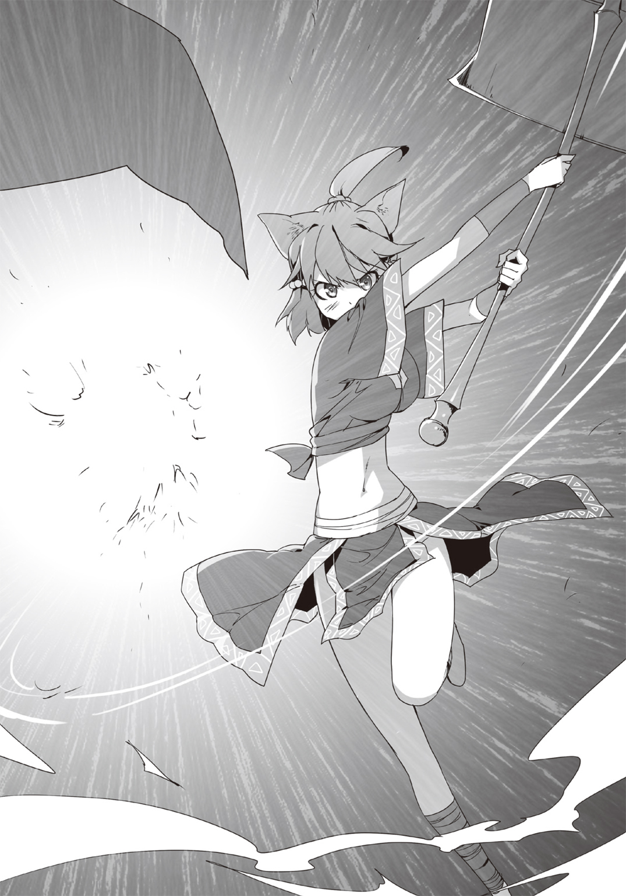
「リョ、リョウマ！」「リョウマ様！」
アイリスとガーネットが近づいてきた。心配させてはならないと、オレは無理矢理に顔を上げて引きつりながらも微笑む。
「は、ははは......試練、攻略」
だが、そこで力尽きた。頭がかくんと落ちて、体を海老のように丸める。
「何をするかと思えば......無茶苦茶だよ」
ライラが複雑そうな顔で近づいてくると、しゃがみこんだ。
「上手くいったからいいものの、失敗したら目も当てられないことになってたんだよ？ トト様も言ってたでしょ。この試練は命さえ奪うんだからね」
「ああ......そういやそうだったな......」
迂闊と言われればそれまでだ。でも、さっきはそんなところまで考えが至らなかった。
「アイリスやガーネットを助けなきゃってことで頭がいっぱいで......いっ......つ」
喋ることすら難しくなっているようだ。
「ごめんなさい、ごめんなさい。わたくし達のせいでリョウマ様が......」
「......すまない。私達が考えなしで突っ込んだせいだ」
ガーネットとアイリスが涙目になって、手を翳し、治療の魔法をかけてくれる。
「いや、オレがカマキリ相手にビビってるからダメなんだよ......。二人はオレを助けようとしてくれたんだ。気にしないでくれ」
魔法が効いてきたのか、少しずつだが痛みがマシになってきた。
「......まあ、かなり危険な手だし、褒められたことじゃないと思うけど。これしかないと思ったら、自分がどうなっても躊躇なく実行できるっていうのは、さすがリョウマだね。三年前と全然変わってないんだから」
ライラが笑みを浮かべながら、頭を撫でてくれた。
「リョウマ様。ですが、もうこのような無茶はしないでください。わたくしは、自分よりもあなたが傷つく方がよほど怖いのですから」
ガーネットは顔を曇らせるが、オレだって同じ気持ちなんだ。
ただ、不必要に心配させたのは完全に失敗だった。
オレが最初からもっと根性出せていれば、スマートに解決できたのにな。
『しかし兄弟、やるんなら何のつもりか先に言ってくれよ。いきなりハンマーで殴られてびっくりしたぞ』
目を斜線のようにして、怒りを表現するマンゲツ。
「ああ、悪い。そうだな。お前にだけは言うべきだった。なんともないか？」
『これくらいなら何ともないけどよ。乱暴な相棒を持つと苦労するぜ』
嘆息するような模様に変わったマンゲツに、オレはごめんと謝った。
「ところで、これで試練は終わったのか？」
ようやく動けるようになったオレは、膝に手をつき、立ち上がる。
「多分ね。おーい、結果はどうだった？」
ライラが呼びかけると、しばらくしてから天井から声が返ってきた。
『見届けた。対象者、リョウマは見事『力』によって試練を退けた。よって第一の功を持つ者として認める』
鍵の開くような軽い音。次いで、門がゆっくりと開いていった。
「うし......次いこうか」
肩を回し、オレは調子を確かめる。どうやら傷は完治したらしい。つくづく魔法は便利だ。
「いいか、リョウマ。ガーネットも言っていたが、二度とあのようなことはしないようにな。次やったら承知しないぞ」
「わかったって。悪かったよ」
アイリスにしかめっ面で説教されたので、オレは頭を下げた。
「でもいざという時にはあれくらい大胆なことしてくれる方が、旦那様としては頼りがいがあるかなーって思うけど」
ライラが鼻の下を擦りながら、耳を動かす。
「ライラ？ 一応、忠告しておきますけど、リョウマ様はまだあなたの夫になると決まったわけではありませんからね？」
ガーネットがむっとしたようにライラへ指を突きつけた。
「えー。でも、予約はしたよ？」
ライラは唇に手を当てて、笑みを零す。
昨日、おでこにキスをされたことを思い出して、オレは顔が熱くなるのを感じた。
「そ、そのようなもの、確約したことにはならん！ お前がいくらリョウマを夫にしたくとも、結局は本人がそう思わなければ無効だろう！」
アイリスが眉根を寄せて否定すると、ガーネットもまた同意した。
「その通りです！ だ、大体、婚前の男性にせ、接吻をするなんて、淑女としては如何なものかと思いますけど!?」
「それは人族の考え方でしょ？ 戦族はね、一度決めた獲物は絶対に他の人に譲らないんだ。そのために、自分の証を刻み込むの」
「結婚を狩りと一緒にするなっ！」
両手を上げて叫ぶアイリスに、ライラは口笛を吹く。
『おいおい、試練の途中だぞ。揉めてる場合かよ？』
言い争いをする三人に、マンゲツが珍しくまともな忠告をした。アイリスとガーネットは我に返ったような顔で、共に頰を赤らめる。
「ま、まあ......この問題はひとまず置いておこう」
「そうですね。あとでゆっくりと時間を取ることと致しましょうか」
二人が咳払いをし、事は一応の収まりを見た。どうなることかと思ったが、何よりだ。マンゲツに感謝しなくては。
オレ達が開かれた門の奥へと向かうと、その先は細い通路になっていた。しばらく進むと、また先ほどと同じように開けた場所に門があった。
『第二の功を試す』
すると、オレ達を待っていたかのように――実際、待っていたのかもしれないが――天井から朗々と声が響いた。
『第二の功は『知恵』なり。力あるものは前に進めるだろう。だが知恵なき者は先が崖であっても気づきはせぬ。武器は一つでは足りず、二つにて完璧に近づく。ここでは汝らの機転を測る。努々油断せぬことだ。足元に注意し、狡猾な罠にかからぬよう気をつけよ』
意味深なことを言って、声は途切れる。
同時に周囲から気配を感じて、オレは身構えた。
しばらくすると、オレ達の前に、何かが姿を現し始めた。
はじめに見えたのは不気味な顔。三日月みたいに不自然な程裂けた口を張りつけ、右頰に涙のペイント、左頰に星のマークが描かれた仮面だった。目の部分にはぽっかりと黒い穴が空いているものの、虚ろに開いたままそこからは何も見えない。
頭には天頂が二つに分かれた大きな帽子を被っていて、サイズが合っていないようなぶかぶかの服とズボンを身に着けている。どちらも裾の部分はすぼめられていて、白い絹の手袋と、爪先の尖った奇妙な靴が見えていた。
「......ピエロ？」
思いついたものを口にする。
「道化師か。私ではないな」
アイリスが腕を組んで、首を傾げた。オレもピエロはそれほど怖いものでもない。
「あたしでもないねえ。たまに里へ来る巡礼雑技団は好きだし」
ライラも否定する。巡礼雑技団とはサーカスみたいなものだ。世界中を回って大道芸をやってお金を稼いでいる集団である。
......それはともかく。
「アイリスでもライラでもオレでもないってことは......」
残っているのは一人しかいない。その場にいた全員の視線が、ある人物へと集まった。
「うっ......よ、よりにもよって、道化師ですか......」
そこには頰を強張らせた、ガーネットがいる。どうやら、彼女が苦手とするものらしかった。
「なんで道化師なんかが怖いの？ いつもおどけて楽しいと思うけど」
目の前の道化師を見ながら、ライラが訊く。今のところ、相手は静かに佇んでいるだけで何もする気配がなかった。さっきと違って、こちらが動くまで試練は開始されないのだろう。
「小さい頃、城に巡礼雑技団が来たことがありました。獣使いや綱渡り、火吹き男に剣舞奏者などはとても面白く、夢中になることができたのですが、道化師だけが駄目だったのです。その......表情のわからないところが、とても怖くて」
「いつも笑ってるのにか？」
「いつも笑っているからです」
アイリスの質問に答えるガーネットの顔からはいつもの気丈さが消え、すっかり青ざめていた。
「人間というものは常に表情が変化するものです。些細なものにしろ、一瞬たりとも同じ顔はしていません。ですが道化師は常に笑っています。まるでそれ以外の感情を失ってしまったかのように。他の者達はなんとも思わなかったようですが、わたくしにはどうしてもそれが受け入れられなくて......」
「わかる気はするな。こっちの世界にもそういうのはあるから」
フォローするつもりでオレは言った。
本で読んだだけにすぎないが、世の中にはピエロ恐怖症というものが存在しているらしい。原因は色々あるから一概には言えないけど、本来なら笑い者になるはずの存在に対して畏怖を感じてしまうようだ。
外国のある有名なホラー作家も同じ感性を持っていて、題材にした本まで出しているくらいだった。
「表情が固定されて一つしかないから、不自然に思うんだろうな」
「そ、そうなんです。さすがリョウマ様です！」
初めて味方を得たように嬉しそうな顔をするガーネット。
「そういうことか。ではガーネットも動けそうにないか？」
どうすれば対処できるだろうかと考えるように、顎に手を当てるアイリス。
「......いえ。確かに道化師は苦手ですが、蛇に睨まれた蛙のようになる、というわけではありません。直接近寄ることは無理でも遠方からなら魔法で攻撃できます」
オレと違って頼りがいのあるところを見せ、ガーネットは掌を翳した。
「早いところ勝負を決めてしまいましょう。いきます！」
青ざめながらも道化師を睨みつけ、意を決したように、ガーネットが魔導言語を唱え始める。
「【閃光の怒りよ、天より降り注ぎ、汝が敵に裁決を下したまえ】！」
輝く粒子が空中で凝縮し、それは青光りする巨大な稲妻となって迸った。
空気を焦がしたような臭いを漂わせながら、真っ直ぐ道化師に向かって牙を剝く。
――だが、それは相手に当たることはなく、壁に当たって霧散した。
道化師が、軽やかな動きで跳躍し、真横に避けたのだ。
「ああっ！ もうっ！」
悔しそうに言うガーネットをからかうように、道化師はその場で急に滑稽な踊りを披露し始める。
相手の仕草に苛立ったのか、ガーネットは眉を吊り上げ、更に魔導言語を紡いだ。
「【掌握せし紅の意志がその身を焼き尽くす】！」
生まれた火球が、尾を引きながら敵へと向かう。
そこで、驚くべきことが起こった。
魔法が直撃する寸前、道化師がこちらに向かっておじぎをしたかと思うと。
二つに、分かれたのだ。
「......えっ!?」
ガーネットをはじめとした全員が愕然となる。
オレは自分の目を疑ったが、間違いなく、道化師の数は増えていた。
火球は道化師と道化師の間を通り抜け、先程と同様に砕け散って消失する。
「あら、なんか面白いことになったね」
ライラが状況とは裏腹に呑気な口調で述べた。
「どういうことだ。何をするつもりなんだ？」
こちらの疑問に答えてくれるはずもなく、道化師二人が再び一礼する。
かと思えば、さらに分かれてまた増えた。
「え、えええ!?」
ガーネットは目を白黒とさせる。オレだって、同じ気持ちだった。
どういう絡繰りになっているんだ、これは。
まるでガムを引き伸ばしたみたいに道化師の体が歪むと、千切れ、増殖するのだ。
しかもオレ達が啞然としている間に、道化師は頭を下げるたびにどんどん数を増していった。
そして、気がつけば、部屋中を同じ姿をした道化師が埋め尽くしている。
「そ、そんな、道化師が一杯......」
ガーネットが眩暈を起こしたようによろめき、額を押さえたので、オレは慌てて彼女の体を支えた。
「これは一体......試練だとしても何を求めているのだ」
アイリスが眉を顰めて警戒する。
道化師達は訓練したかのような揃った動きで軽快なステップを踏み、オレ達に向かっておどけるような仕草を披露した。
これだけ同じ顔に同じ動きが展開されていると、ガーネットでなくても不気味に思う。
「んー。この試練って【知恵】を求めるものだよね。だったら頭を使ってこいつらを何とかしろってことなのかな」
ライラが難しい顔をして考え込んだ。
「......そうか。なるほどな」
だとすれば、試練を作った主が投げかけてくる問いにも自然と見当がつく。
「わかったぞ。こいつらの中から本物を見つけ出して倒すんだ」
一気に何十人となった道化師も、元をたどれば一人から始まった。
その一人を見つけ出すことこそが試練なんだ。
「あ、そういうことか。さすがリョウマ」
ライラが手を打って感心した時だった。
オレの言葉が正解であると示すように道化師達の動きが止まる。
そして、その内の一人が集団の中からふわりと宙に浮かんだ。
緩やかな動きで天井へと移動する道化師の手には、持ち主と同じくらいの大きさのランタンが握られていて、薄暗い室内が淡い明かりで照らされる。
突然の行動を、オレは訝しんでいたが――やがて、残った道化師達は互いに顔を見合わせ、手を繫ぎ合わせると素早く輪になった。
「あ、不味い。このままだと......！」
オレが危惧した通り、道化師達が回り始める。
こちらが止める前に、彼らは目にも止まらぬ速さで旋転し、やがてぴたりと停止した。
「......ちくしょう。これじゃ、どれがはじめの奴だかわからなくなったぞ」
悔しい思いで地面を蹴るオレの前に、アイリスが進み出る。
「構うことはない。私達で片っ端から倒していけばいいのだ。偽者であればその場で消え、本物であればガーネットが討つまでは蘇るだろう。ガーネットには残る一人となった段階で魔法を使ってもらえばいい」
「あー。そうか。そういやそうだね」
ライラがアイリスの隣に並び、ハンマーを構えた。
「ガーネット、最後の一匹になったら魔法を使ってね。また増えられたら厄介だから、機会を逃さないように頼むよ」
「わ、わかりました！」
立ち直ったのか、しっかりと頷くガーネット。
「よし、それじゃ、行くぞ！」
オレはリベリオンを抜き払い、道化師達に向かって飛びかかった。
道化師達は大袈裟なまでに驚いた仕草で両手を上げ、わらわらと逃げ惑い始める。
だが一人たりとも逃さない。追いつき、確実に仕留めていく。
「【散り咲け、凍てつく花弁の嵐よ】！」
アイリスが言い放つと、空中に氷の礫が巻き散る。
大人の拳くらいある塊が、次々と道化師達を直撃していく。
背中を貫かれ、仮面を砕かれ、体を打たれた彼らは次々と消失していった。
その間にライラがハンマーを振り回し、纏めて薙ぎ払う。
三人で共闘して、少しずつ数を減らしていった。
......ただ。
「......あれ？」
最初に気づいたのは、ライラだった。わずかに息を切らしながらハンマーを担ぎ、彼女は首を傾げる。
「なんか......数、増えてない？」
「......ああ」
オレも妙な気はしていたが、やっぱりそうだったか。
ライラが道化師の頭をハンマーで砕き、消し飛ばしても。
オレが魔法や剣を使い、着実に数を減らしていっても。
アイリスが幾度となく敵に挑みかかり、勝利していっても。
一向に、空間内を占める道化師達の数が変わらないのだ。
「何故だ。キリがないぞ！」
オレ達の周りを囲む何十という道化師達の姿に、アイリスは焦る。
「増える速度が尋常じゃないぞ......！」
とてもじゃないが、追いつかない。一人に絞るどころじゃない。これじゃ、こちらの体力の方が先に尽きてしまう。
「み、皆さん、大丈夫ですか!? わたくしはちょっと、くらくらするのですが......」
ガーネットが弱々しい声を出した。
これだけ苦手なものが無数にいれば無理もない。もし全てがカマキリだったらと想像すると、さすがにぞっとした。
「どうやら、手当たり次第に叩き潰す作戦は無理みたいだね」
ライラが困ったように眉尻を下げる。
「しかしこの中でたった一人の本物を探すというのも、いささか無理があるぞ」
アイリスの意見にオレも賛成だ。
勘で当てていく手もあるが、何度も失敗するうちに数を増していくと、それこそ収拾がつかなくなってしまう気がした。
「......落ち着け。これは試練なんだ」
オレは自分に言い聞かせる。そうだ。試練とは潜り抜けるために用意されたものなんだ。
だとすれば、必ずどこかに道筋はある。見つけさえすれば解決できるんだ。
何かないか。注意深く観察しろ。なんでもいい。ほんの少しでもいいから、糸口を摑め。
「どうすれば、切り抜けられる......!?」
オレが思わず口に出したそのタイミングで。
『......なあ、兄弟。ちょっと気になったんだが』
珍しく、ずっと黙り込んでいたマンゲツが口を開いた。
「どうした、何かあったか？」
『ああ。兄弟が戦っている間、あいつらの動きを見ていたんだけどな。変なところが一つだけある』
マンゲツは道化師達を眺めながら教えてくれる。
『あいつら――影がないぞ』
「......何？」
驚いてオレは道化師達の足元を見つめた。......本当だ。
上から煌々と明かりが灯っているにもかかわらず、どの道化師にも影が見当たらない。
そこでオレは思い出した。この洞窟へ最初に足を踏み込んだ時のことを。
――知恵なき者は影に翻弄され無様な姿を曝し――
声は確かに、そんなことを言ってた。
「そうか......そういう仕掛けかよ！」
瞬時に理解した。オーソドックスにも程がある。オレは急いで視線を巡らせた。
いた。たった一人だけ、長い影を落としている奴が。
「二人とも、離れてくれ！」
アイリスとライラに指示を飛ばし、オレは得物を構えて跳んだ。
「行くぞ――吹き飛ばせ、リベリオンッ！」
地面に着地すると同時、刃を真下へ突き刺す。
瞬間、オレの魔力を物理エネルギーへと転換させ、リベリオンが轟音を鳴らした。
漆黒の波動が周囲を走り、群集の一部を吹き飛ばしていく。
残ったのは――たった一人の道化師だ。
「ガーネット、今だッ！ あいつをやれ！ 影のある奴が本物だ！」
オレが叫ぶと、一瞬の沈黙が訪れる。
だが、
「は......はいっ！」
やがて力強い返答が来ると、同時に、オレの傍を疾風が駆け抜けた。
衝撃波が地面を削りながら、影を持つ道化師を打ちのめす。
やがて、おどけた格好をしたまま、相手は粉々に消し飛んだ。
「おおっ！ やったぞ！」
アイリスが歓声を上げる。ライラも無邪気に喜んで、高々と跳躍した。
『兄弟、よくやったな！』
マンゲツが褒めてくれるが、元はといえば彼のおかげだ。
何にせよ胸を撫で下ろし、オレはやれやれと地面から剣を抜く。
これでようやく二つ目をやり遂げた。残るは最後の試練だけだ。
そう思って、振り返ったのだが――。
「......なっ......!?」
予想外の結果に打ちのめされ、体を強張らせた。
道化師達は、少しも減っていなかった。それどころか先ほどよりも数を増し、ほとんど鮨詰め状態で空間を占領していたのだ。
「リョ、リョウマ様!? これはどういうことでしょう......!?」
ガーネットが問いかけるが、オレだってわからない。これが正解じゃなかったっていうのか？
しかも非常に不味い事態になってきた。
これまでは逃げるだけでこちらに一切接触してこなかった道化師達が、不意に立ち止まると懐に手を入れたのだ。
しばらくして取り出した彼らの掌には、鋭利なナイフが握られていた。
「攻撃してくるつもりか!?」
アイリスが自身の得物を抜いて、警戒する。
道化師達はオレ達を取り囲み、じりじりとした動きで迫ってきた。
「どうやら、さっきのは罠だったみたいだね」
ライラがハンマーを手に、油断なく敵を待ち受ける。
「間違えてしまったら、こうなっちゃう仕掛けだったんだと思う」
......おいおい。じゃあ、オレのせいってことじゃないか。
『どうする兄弟。これだけの数に襲いかかってこられたら、面倒だぜ。オレの防御壁も正体のわからない魔法相手じゃ、どこまで通じるかわからねえしよ』
マンゲツが舌打ちして言ってきた。
「どうしてだ......影のある奴が本物ってパターンじゃなかったのか......？」
だったらどうしてわざわざあんなことを言ったんだ。噓をつかれたのか。
いや......違う。少なくとも力の試練の時は声の通りだった。
だとすれば、ヒントの方向性を誤解しているということになる。
「影に翻弄される......影に......」
オレがぶつぶつと呟き、思考を整理している間にも道化師達は距離を詰めてきた。誰一人として声を発しないのが、どうにも気味悪い。
「あ、ああ、リョウマ様、助けてください。このままでは道化師達が......」
ガーネットが恐怖にかられたようにオレへ救いを求めてきた。
彼女のいつもとはまるで違う態度に、オレは自分を殴りつけたい気持ちになる。
何をしてるんだ。ガーネットが――自分にとって大切な人が怯えているのに！
「だけど、どうすりゃいいっていうんだ。影が何を意味しているのか、それがわからなきゃ、何もできないぞ......！」
大体、間違いなんだったらあんなわざとらしく影のある奴なんて残しておくなよ。ややこしいにも程があるじゃないか。
焦るあまり、益体もないことばかりが頭に浮かんでくる。
誰だってそうだろう。影のない奴ばかりのところに一人だけあったら、そいつが本物だって思う。それなのに――。
「......それなのに......」
オレは、ふと、そこで引っかかるものを覚えた。
『おい、兄弟！ そろそろ危ないぞ！』
マンゲツの忠告が聞こえてくるが、応えている余裕はない。
摑んだか細い糸を手繰り寄せ、正体を確かめる方が先だ。
「どうして......あんなことをわざわざ言った？」
影に翻弄され無様な姿を曝し――。
てっきり、本物を見つけるための手段だと思ったが。
しかし、だとすれば『翻弄』という言葉を使うのは変だ。
あれが罠だったのだとすれば、そもそも、影という要素に引っ張られること自体が誤りであるということになる。
だが、かといって影のない奴らを区別する方法はない。
「あ......」
ようやく、そこで。
――オレは、辿り着いた。
「リョウマ様、もうダメですっ！」
ガーネットが悲痛な声を上げる。
ついに道化師達が地を蹴り、オレ達全員に襲いかかってきた。
無数のナイフが鈍い光を照り返しながら、こちらを仕留めんとして振り翳される。
「リョウマ、お前も武器を構えろ！」
「リョウマ、ぼーっとしてたらやられるよ!?」
アイリスとライラの声にも耳を貸さず、オレは視線を動かした。
だが先程のように道化師達の足元じゃない。
まったく逆の――真上へと。
「......いた！」
見つけた。やっぱりだ。いなくなってなんかいなかった。
これが、唯一無二の、正解だ！
「ガーネットッ！」
今まさに、道化師達のナイフがこちらの体に突き立てられようとした瞬間。
「――天井を狙えッ！」
オレは、声をからして叫んだ。
ガーネットが目を見開く。しかし彼女の行動は、神がかったように速かった。
「わかりましたッ！」
何も訊かず、一歩退くと頭上を仰いで掌を翳す。
「【炎よ、汝が敵を焼き尽くせ】ッ！」
一番短い、効果の低い魔導言語。
だがそれで十分だった。
火柱が立ち上がり、焰が天井を大きく焦がす。
そこで初めて、絶叫が迸った。
炎に巻かれた相手が、苦しむようにのた打ち回って、数秒足らずで落ちてくる。
不自然な笑みを仮面に浮かべた、派手な格好の人物――。
最初に、集団の中から天井へと浮かび上がった道化師だった。
彼――もしくは彼女――は巨大なランタンごと、氷のように溶けていく。
同時に、辺りを息苦しいほどに占めていた圧迫感が一気になくなった。
あれだけいた道化師達は、全ていなくなっている。
「や......やった」
ようやく、達成感を味わうことができる。
オレはその場に膝をつき、固めた拳を勢いよく突き上げた。
「やったぞおおおおおおおおッ！」
ガーネットやアイリス、ライラ達は、ぽかんとしたままこっちを見ている。
「ど、どういうことなのだ？ 何故道化師達は一斉に消えたのだ？」
三人を代表するようにアイリスが訊いてくるので、オレは立ち上がりながら答えた。
「簡単だ。ガーネットが本物を倒したからだよ」
ライラが顔をしかめる。意味がわからないという表情だ。
「でも、さっきはダメだったんだよね？ なんで天井にいるって思ったの？」
「洞窟の入り口で聞いた声を覚えてるか？ 知恵なき者は影に翻弄され無様な姿を曝すってやつ」
頷いたライラにオレは解説した。
「つまりそれは、影のある奴が本物だって思い込み、失敗した時に焦って諦める奴のことだったんだ。影のない奴も影のある奴も、どちらも本物じゃない。だとすれば......逆に考えると、『地上でオレ達を惑わせている奴の中には本物がいない』ってことになる」
「あ......だから、天井に行った一人が本物だと！」
合点がいったようで、ガーネットが目を見開く。
「そうだ。最初は影を生み出すために明かりを持って上に行ったんだと思ってたけど、実はあいつ自身が本当の標的だったってわけだ。かなりギリギリだったけど、考えが当たっててよかったよ」
あと少しでも遅れていれば、全員が道化師達によってやられてしまうところだった。
『随分と意地の悪い謎かけだな。二重に仕込んでやがったのか』
「今から考えれば、最初のはあまりにも単純すぎたんだよ。最初から疑ってかかるべきだった」
オレが頭を搔くと、アイリスが首を振った。
「なにを言う。窮地においても冷静な思考を持てたからこそ、事なきを得たのだ。十分すぎる程だぞ」
「そうそう。あたしなんて、もう最初の時点で頭ぐちゃぐちゃになってたもんね」
ライラが快活に笑って歩み寄ると、オレの肩を叩く。
「肝が据わってるし、機転も利く。やっぱりリョウマは、あたしの夫になるべき人だよ」
「......それはもういいって」
また先ほどのような騒動になっても困る。
「ガーネット、ごめんな、怖い思いさせて。オレがもうちょっと早く答えに辿り着いていればこんなことにはならなかったんだが......」
申し訳なく思って告げると、ガーネットはオレを見つめながら、唇を嚙み締めた。
すると次の瞬間、彼女の目が潤んだので、オレは焦る。
「うわっ!? ご、ごめん！ 本当に悪かった！ 泣かないでくれ！」
「......いいえ、違うんです、リョウマ様」
目元を拭いながら、ガーネットは口を開いた。
「リョウマ様がわたくしのために必死で考え、解答を導き出してくれたことが嬉しかったのです。怖くはありましたけど、絶望はしていませんでした」
手を合わせ、ガーネットが微笑む。
「わたくしは、いつも、リョウマ様を信じていますから」
直球で、躊躇いなく言われて、オレは頰の辺りが熱くなるのを感じた。
「あ、ああ、いや、そんな......うん、ありがとう」
「わたくしの方こそ、ありがとうございました。全てはリョウマ様のおかげです」
「なに言ってんだ。最後のやつ、ガーネットがすぐに動いてくれなきゃ、どうしようもなくなってたぞ。お前の方だってすごいよ」
「そんなこと、当然です。リョウマ様が間違ったことをなさるはずがないですから」
そこまで全幅の信頼を置かれると、どうにも、むず痒くなってくる。
「......ガーネットの期待を裏切らないよう、頑張るよ」
「嬉しいです、リョウマ様」
頰を染めて笑みを深めるガーネットは、いつも以上に可愛く思えた。
ドキドキとして、落ち着かなくなってくる。
だからオレは、ガーネットに向かって更に声をかけた。
「ガーネット、オレ......」
『うひょおおおおおおおおおわあああああああああッ！』
ものすごい勢いで邪魔された。
「......マンゲツ。お前な」
『よっしゃああああああ！ 試練を潜り抜けたぞオラアアアアアアア！ あと残ってるのは最後だけだぜわっしゃらあああああああああい！』
ダメだこいつ。話を全然聞く気がない。
「そ、そうだな！ よし、向かおう！ いつまでもここでゆっくりしているわけにもいかないからな！」
「うん、そうだね！ まったくその通りだね！ さあ、てきぱきとやろう！」
しかもアイリスとライラまで、無駄に元気な声を出すとオレに近づいてくる。
更に彼女達は、左右からこちらの腕を摑み、再び颯爽と歩き出したのだ。
「お、おい、アイリス、ライラ!?」
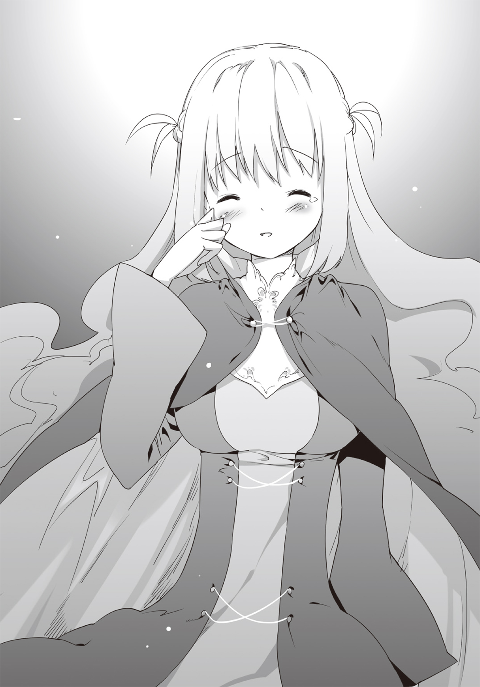
慌てて声をかけるも、彼女達は前を向いたまま無理矢理オレを引っ張って進んでいく。
「さあ、リョウマ！ 気合いを入れて最後の試練に臨むぞ！」
「これ以上いい雰囲気になられたら困る......もとい、のんびりしていたら試練はいつまで経っても終わらないからね！」
「そ、そりゃそうだけど、何もこんな強引に......ちょっと！」
必死で止めようとしても、無駄だった。
遠ざかっていく先で、ガーネットが残念そうな、困ったような顔をしている。
『くくく......そう簡単にはいかせねえぜ、兄弟』
マンゲツが、悪だくみするような低い声で呟いた。
三つ目の部屋、つまり、最後の試練が行われる場所は、これまでに輪をかけてひどく殺風景なところだった。
先程までとは違い奥に門すらなく、ひたすらにだだっ広いだけで、他にはなにもない。
「ここが終点なのか。それにしては、四功の証だっけ？ ありそうには見えないけど」
オレが疑問を口にすると、ライラが答えた。
「三つ目の試練を潜り抜けた人の前に現れるんだよ。普段は魔法で隠れてる」
なるほど、そういう絡繰りか。
オレが納得していると、もうすっかり聞き馴染んだ声が聞こえてきた。
『我に二功を示せし者よ。汝らの偉業をここに讃えよう。だが未だ終わりではない。これより三功の試練を始める。三功とは即ち、『勇気』である』
遙か昔に生きていたであろう魔導師は、朗々と語る。
『汝らは第一の功において『力』を示した。即ち己より強き者へ果敢に立ち向い、勝利する覚悟である。第二の功においては『知恵』を示した。即ちどのような状況においても冷静さを失わず、事態を打開するための方法を編み出す機転である。そして最後には『勇気』を示してもらう。即ちこれは、相手がどのような存在であろうと打ち倒すことを決断する覚悟、どのような手を使われても諦めず挑み続ける意志、二功を持つ者にしか成し遂げられぬものである』
声が話している間、オレ達の前に何かが微かに姿を見せ始めた。
『今より汝らの前に立ち塞がるのは、汝らの心に共通して存在する恐れである。最も強く、最も知恵が回る、最も高い壁である。心してかかるがよい。力なき者に強きは屈せず、知恵なき者に賢きは敗れぬ。剣を持ち盾を構え、己が勇気を以て挑むがよい』
何かは少しずつ実体を持ち始め、明確な形を取り始めていく。
『幻像はこれまでと同じ、汝らの中で現れた存在と最も関わりの深い者のみが止めを刺すことができる。......それでは、これより、最後の試練を始める』
やがて、声が最後に紡いだ言葉と共に――。
『それ』は、現れた。
カマキリみたいな化け物でもなく、道化師みたいに不気味な存在でもなかった。
たった一人の男だ。
オレより背が頭一つ分くらい高く、偉丈夫というのだろうか、筋肉質の体をぴったりとした服で覆い、上からマントを羽織っていた。
線の細い顔には不精髭が生え、鷹のように鋭い目をしている。
手には一振りの剣を携え、佇む様にはどこか威厳があった。
「......おい、これは......」
思わず声が出る。何かの間違いなんじゃないだろうかと、そんな淡い希望を含めて。
「そんな......まさか、彼がここに......」
だがガーネットをはじめとした全員の顔色が変わっているのを見て、抱いていた願望があっという間に崩れ去った。
『おいおい、まじかよ。何の冗談だ、こりゃ』
マンゲツもまたいつもとは違う、緊迫した口調で言う。
『なんで、よりにもよって、あんたがここにいるんだよ......！』
オレだってそうだし、他のみんなだって同じ気持ちだろう。
中でも――アイリスは、特にそうだ。
「......噓......」
血の気が引いた真っ白な顔のアイリスは、震える手で口元を押さえた。
「ちち......うえ......」
ほんのわずかに零れた声。だがそれはすぐに大きなものへと変わった。
「父上、なのですか......!?」
......そうだ。
オレ達の前に現れたのは、ただの男なんかじゃなかった。
かつて誰もが恐れ、平伏し、ただ従うしかできなかった人物。
強大な力を持ち、世界全てを手中に収めんとして、数々の国を吸収しながら覇者として君臨した存在。
かつてオレによって倒されたはずの、相手。
帝国ガルフレアの皇帝――グレディス＝ナクナ＝フェルモントだった。
「確かに......あたし達が揃って恐れていたモノだね」
ライラがハンマーを手に顔を強張らせると、ガーネットが苦い顔をした。
「......これは他とは比べようにならないくらい難しい試練ですね」
「幻像は、どれくらいの力を再現してるんだ......？」
もし最盛期とまったく同じであったなら、簡単に勝てる相手じゃない。ここまで来たらやるしかないとはいえ、オレはリベリオンを抜きながらも、不安を拭うことができなかった。
「所詮はあたし達の中にある恐怖心から作りだされたものだからね。本物とまったく同じってわけでもないと思う。だけど、こっちはたった四人だから。油断はできないよ」
ライラの分析は的を射ていた。
三年前、グレディスと戦った時はオレをはじめ四大聖国の王や仲間達が一緒に挑んでくれて、やっと倒せたくらいだ。
相手がいくらか弱いとはいえ、余裕の勝利とはいかないだろう。
それに、気になることがもう一つあった。
「アイリス......お前、やれるのか？」
オレは、振り返って尋ねる。
幻とはいえ、実の父親だ。直接的な攻撃に出るのに抵抗があってもおかしくなかった。
加えて声の言う通りだとすれば、これまでの試練と同様、彼女が止めを刺さなければ試練はクリアしたことにならないはずだ。
「......案ずるな」
だがアイリスは首を横に振り、腰に差したナイフに手をかける。
「最初は驚いたが、たとえ相手が父上であろうと躊躇うことはない。私の手でやらねば試練が終わらぬというのであれば、やる他はないだろう」
アイリスの眼光は鋭く、虚勢を張っているようには見えなかった。
......でも、本当に、そうなのだろうか。
表面上だけ取り繕っているとは思わない。ただ、オレにはどうしても、彼女が己の中にある迷いを断ち切れていないように見えた。
自身の中にある脆さをひた隠し、あくまでも気丈に振る舞えるのは、アイリスの強さだ。だがそれは同時に――誰にも弱さを見せられず、独りで無理に抱え込んでしまうということでもある。
「その言葉、信じていいんだよね」
オレと同じ印象を持ったのだろう。ライラがやや強い口調で訊いた。
「あたし達はこれから、命懸けで皇帝に挑む。ほんのわずかな失敗が、ちょっとした隙が、容赦なく死を招くかもしれない。もし君が中途半端な決心で挑んでいるんだとしたら、あたし達まで巻き添えを食うことになるんだよ。その意味はわかる？」
『おい、お嬢の気持ちも考えろよ。別にそこまできつい言い方をしなくても......』
「いいのだ、マンゲツ」
気遣いをしたマンゲツを、アイリスが遮る。
「ライラの言うことは尤もだ。胸に刻んでおこう。......安心してくれ。やり遂げてみせる」
引き締めた顔つきのまま、アイリスは揺るぎない口調で断言した。
「......わかりました。アイリス、あなたの覚悟を信じます」
ガーネットが言って、オレ達は揃って頷く。
「因果だよな。まさかこんなところで皇帝と再戦するとは思わなかった」
オレはリベリオンを構えた。するとこちらを見据える皇帝の目が、にわかに剣呑さを宿す。幻像だと言われなければ蘇ったのだと誤解してしまう程、本物そっくりの風格だった。
「よし......まずオレが先行する。すぐあとをライラが続いてくれ。ガーネットとアイリスは後方援護を頼む。ここだって思った時には合図をするから、アイリスは魔法で止めを刺してくれ。いいか？」
確認を取ると、後ろから異口同音に了承の返事が来る。
「じゃあ――行くぞ！」
オレは、宣言と共に地を蹴った。
体勢を低くしながら距離を詰め、グレディスに向かって切っ先を突き出す。
鋭い金属音が鳴った。
グレディスは自らの得物を盾にしてオレの攻撃を防ぐと、強引に弾いてくる。
予想以上の力にオレがたたらを踏んだところで、相手が踏み込んできた。
急いで対応し、刃を振るう。
何度も剣と剣がぶつかり合い、激しい火花を散らした。
「【翡翠の槍よ。汝が敵を討ち貫くが良い】！」
数回目の攻防の最中、オレは敵の剣を滑らすようにして流し、掌を翳して魔法を唱えた。
幾つもの衝撃波がグレディスの体を直撃し、後方へと吹き飛ばす。
「いっけええええええええッ！」
オレの傍をライラが駆け抜け、大きく腰を捻るとハンマーを振り回した。
轟風を伴いながら放たれた鉄塊が、グレディスを容赦なく打ちのめす。
くぐもった声と共にグレディスは大きく息を吐き出し、体をくの字に曲げた。
だが、直後に彼の翳した掌が光を収斂させ、瞬時に雷を生み出す。
目を見開いたライラが後方へ逃れようとしたところで、オレは走り出しながら叫んだ。
「マンゲツッ！」
滑り込むようにライラの前に出たところで、タイミングよくマンゲツの防御壁が展開された。雷は激しい音を鳴らして砕け散り、空中に溶け消える。
「ガーネット、動きを止めてくれ！」
「承知しました！」
オレの指示に、ガーネットが背後で魔導言語を紡ぎ出す。
「【命運び育む大地よ、今汝が身を我が敵捉える鎖とせよ】！」
洞窟全体が揺れ、地響きが鳴った。
音を立てて地面が盛り上がり、たちどころにグレディスの体を土くれが覆う。
だが――魔法によってできた即席の拘束具は、一秒と持たなかった。
爆裂するような衝撃と共に土石が弾け、自由の身となったグレディスが再び襲いかかってくる。
「くっ......!?」
オレはかろうじて刃を受け止め、攻撃へと転じた。
隣ではライラもまたハンマーを器用に使いこなし、間断なく攻め立てている。
グレディスは魔法と剣を巧みに使いこなし、オレ達二人を同時に相手どっていた。
銀閃が走り、炎が燃え、雷が嘶き、疾風が舞う。
三年前とまったく同じというわけじゃないが、それでもやっぱり、グレディスは尋常じゃなく強かった。
ガーネットの魔法をかき消し、オレの剣を捌き、ライラのハンマーを素早くかわす。
合間に見せる攻撃の手はどんな熟練の戦士よりも洗練されていて、隙がなく、一撃一撃が強烈だ。
オレはマンゲツの力を借りながらなんとか対応しつつ、アイリスへ繫げる機会を窺っていた。
「こんの......ッ！」
ライラが外見からは考えられないくらい、勢いのある一撃を振り下ろす。
だがグレディスはそれを軽々と受け止めると、同時に魔法で彼女の体を遙か後方へと吹き飛ばした。
かと思えばガーネットが連続して放った魔法を、全て正確に別の魔法で相殺する。
『さすがグレディスの旦那だな。幻像とはいえ、今までの奴とは格が違う！』
マンゲツが感心したように言った。
「ああ。腹が立つくらい、正確にトレースしてるよ！」
それに比べてこっちは三年のブランクがある。
こんなことなら、だらだら学生生活を送ってないで剣道でもやっておくべきだった。
『兄弟、何か奥の手みたいなのはないのか？ このままじゃ、埒が明かねえぞ』
「漫画じゃないんだから、必殺技なんてあるかよ！」
『何を言ってるかわからねえが、三年前は兄弟、グレディスの旦那に色んな手を使ってたじゃねえか。そのリベリオンはただ斬るだけの代物じゃないんだろ？』
放った火の魔法がグレディスによって無効化され、下段から掬い上げられるようにして放たれてきた一撃を、オレはかろうじて防御する。
「くっ......あ、ああ、そういやそうだったな」
何度かやり合いながら鍔迫り合いに持っていき、オレは目の前のグレディスを睨みつけた。
マンゲツの言う通り、リベリオンは四大聖国の技術者が総がかりで造り上げた、究極の魔法剣の名に相応しく、単純な武器として使えるだけでなく、様々な能力を宿している。
『呼べば飛んでくる』とか、一カ月前に蘇った魔神を倒した時の『魔力を輝術に変える』とか、さっき発動したみたいな、『地面に突き刺して周囲全体に攻撃する』というのも、幾つもある技の一部だ。
「ただ多すぎて、どんなものがあったか、ほとんど覚えてないんだよ。これまでにやってきたことは、かろうじて記憶にあったんだけど......」
他にどんなものがあっただろうか。相手を突き飛ばすようにして離れ、代わりにライラが飛び出していくのを見ながら素早く考えた。
『何でもいいから、グレディスの旦那の動きをほんのちょっとでも止めるものはないのか。このままじゃ、いつまで経ってもお嬢が動けないぞ』
マンゲツの言葉で振り返ると、こちらを見つめるアイリスの姿があった。
そうだ。ただでさえ父親を自分の手で倒さなければならないなんて苦行を強いられているんだ。どうせやらなきゃいけないなら、一刻も早く終わらせてあげたい。
「確か、ちょうどいいものがあった気はするんだが......」
どんなものだったか、うっすらと頭の中に残っているが、靄がかかったようにはっきりしなかった。
「リョウマ様、あれが使えるのではありませんか」
だがそこで、ガーネットが声をかけてくる。
「ほら、三年前の旅の道中、いくら倒しても蘇ってくる厄介な敵がいたでしょう。墓場から蘇った魔獣です」
「......あ。ああ、そういやあったな。ええと、亡霊鬼だっけか」
死体が魔力を帯びて動きだした魔獣で、見た目は完全にゾンビそのものだった。
元が元なので防御力は皆無なのだが、その分、異常にタフというか、倒されても倒されても体を繫ぎ合わせて向かってくるのだ。
火には弱いが灰になったら風で飛び散り、人の体の中に入って厄介な疫病を引き起こすので、弱点もつけない。
だから方法としては一旦打ち倒して、復活する前に別の場所に逃げるというのがセオリーだった。
「そうです。ただわたくし達が遭遇した時は辺り一帯が墓地で、とてもではありませんが逃げきることはできませんでした。そこでリョウマ様のリベリオンが活躍したのです」
「あ......あーあーあーあー、そんなことあったな！」
ようやく思い出してきた。実に懐かしい。何とかして敵を振りきろうとして走り回ったけど、全然ダメで、どうしようってなったところで、創族の仲間が教えてくれたんだ。
「もっと早く言えよって言ったら、これだけの亡霊鬼と出会うなんて滅多にない機会だから、色々と情報を得ていたんだとか答えたんだよな」
「ええ、ええ。あれは実に呆れました」
「まあ、あいつは元からそういう学者肌のところがあったからな。おかげで三年前も何回かえらい目に――」
「ちょっと！ 思い出話で盛り上がってるところ悪いけど、状況を見て！」
甲高い音と共に、ライラが怒ったように声を上げた。
彼女は皇帝の剣をハンマーで受け止めながら、全力で堪えている。
「あ、ああ、悪い！ そうか、あの時もリベリオンで敵の動きを止めてから逃げたんだっけか。すごいな、ガーネット。よく覚えてたな」
「はい！ わたくしは、リョウマ様のことであればどのような細かいことでも、己の内に刻み込んであります」
誇らしげに胸を叩くガーネットに、オレは笑みを返した。
「さすがだな。ありがとう。......よし。なんとかなりそうだ」
先程までおぼろげだった記憶は、今やはっきりとした実像として頭に浮かんでいる。
「待ってろよ、アイリス。もうちょっとだからな！」
オレはリベリオンを手に振り返り、アイリスを励ました。
「う、うむ！ わかった。私はいつでもいいぞ！」
元気のいい返事に、オレは彼女の肩を軽く何度か叩き、再び前を向く。
「待たせたな、ライラ。交代だッ！」
走りながら剣を横に流し、オレは突貫した。
「待ってましたッ！」
ライラは頭上高く持ち上げたハンマーを、地面へと勢いよく落とす。
土煙が舞い上がり、グレディスの視界を一旦覆い隠した。
ライラは腰を屈めると後ろに跳躍し、オレとすれ違う。
疾風が吹くと、濛々とした砂煙が取り払われた。
グレディスは無表情のまま、真っ直ぐにオレと対峙する。
静かに持ち上げた彼の指先が、なにかを虚空に顕現させた。
黒々とした闇の塊のような、おぞましい物体。
どんな夜よりも暗く、どんな闇よりも深いそれを見て、オレは息を呑んだ。
『【混沌魔導】だと......!? 偽者のくせに、あんなもんまで使えるのか！』
マンゲツが信じられないとばかりに零した。
混沌魔導とは、かつて魔法をこの世にもたらした魔神だけが使える最強の攻撃魔法だ。
無秩序な破壊を撒き散らし、全てを一瞬に消滅させる、ほとんど反則級の技だった。
あれを放たれると、相当に不味い。
オレは更に走る速度を上げ、グレディスが攻撃を行う前に決着をつけようとした。
だが、思いの他、魔法の発動は早い。
グレディスの指先から生まれた漆黒の球体が、オレを目がけて飛んできた。
「逃げろ、リョウマッ！」
後ろから聞こえる、アイリスの声。
「そうしたいのは山々だけどな。ここで立ち止まるわけにはいかないんだよ！」
この機会を逃せばもっと混沌魔導を使われるかもしれない。そうなったら文字通り、一巻の終わりだ。
だとすれば、多少は無茶でも突っ込んでいくしかない。
「マンゲツ、頼めるか!?」
オレの、詳細を省いた掩護要請を、胸の相棒は理解してくれた。
『兄弟、そりゃさすがに無茶じゃねえのか？』
マンゲツは模様の口をへの字に曲げながら、仕方なさそうに呟く。
『――って言って、納得するような奴だったらよかったんだけどな』
やれやれと零しながら、彼はオレに答えた。
『やってやるよ。その代わり、絶対に成功させろよ！』
「ああ、任せろ！」
皇帝までの距離は、あと約半分。
だが辿り着くより前に、混沌魔導の結晶が眼前へと迫った。
漆黒の牙が、オレの体を飲み込まんとする。
――瞬間。
『っしゃああああああああああああああああああッ！』
激しい音と共に、鼻先数センチのところで、結晶が止まった。
正確には、侵攻を阻んだのだ。
オレの前には半透明の壁ができ上がっている。マンゲツが作った防御壁だった。
『うおおおおおおおおおりゃあああああああっ！』
マンゲツは気合いを入れながら、必死で混沌魔導に対抗してくれている。
どうやら本物が使うものよりはいくらか弱いようで、どうにか防げていた。
『嘗めんじゃねえぞ、おれはグレディスの旦那が造った本物の防具だ！ たとえ姿がどうだろうと、偽者野郎の使った魔法なんぞに、やられてたまるかあああ！』
だが――腐ってもなんとやらだ。言葉とは裏腹に、壁はやがて、小さな音を立てた。
端の方に亀裂が走り、それはまるで蜘蛛の巣のようにして拡がっていく。
『くっ......ぐっ......おおおお......ッ！』
だが、マンゲツは耐えた。限界以上の力を振り絞り、懸命に堪え続ける。
皇帝まであと少し。オレはリベリオンを握る手に力を込めた。
「頑張ってくれ、マンゲツ！」
『言われなくても......お嬢のためならあああああああっ！』
顔をしかめながら、マンゲツは吼える。
あと数歩。数歩さえ進めば何とかなる。
オレがそう確信した時のことだった。
『......だあああああっ！ 悪い、兄弟っ！ ここまでだっ！』
マンゲツが謝った瞬間、硝子が割れるようにして、壁が砕け散る。
混沌魔導がオレの体に抉り込もうとして唸りを上げた。
「いや――」
オレはおもむろにリベリオンを地面に突き刺し、鍔に足をかける。
「――十分だッ！」
そのまま勢いよく蹴ると、跳躍し、宙で身を翻した。
真下を通り過ぎていった混沌魔導が、途中で方向を変え、オレを追いかけてくる。
ただ、前方にはもう何もない。皇帝はオレを見上げ、新たに魔法を唱えようとしたが――。
「来い、リベリオンッ！」
オレの呼びかけに、空気を斬り裂き愛剣が飛んでくる。
柄を摑むや否や、得物を肩に担ぎ、集中した。
そして、用意していた言葉を紡ぎ出す。
「――楔と化せ、リベリオンッ！」
リベリオンがオレの魔力を吸収し、直後にエネルギーへと変換。
刃を振るうと同時、三日月にも似た光が放たれた。
光は膨れ上がり、間もなく爆散する。
無数に分かれた小さな力の欠片が、流星のようにしてグレディスへ降り注いだ。
胴体を貫いた幾つもの光は急激に伸長し、地面へと突き刺さる。
グレディスの目が見開かれ、彼は体勢を整えようとした。
だが――リベリオンによって留められたその身は、身動きすら許さない。
オレの言葉通り、楔のようにして、彼を地に繫ぎとめていた。
オレは着地すると、間髪容れずに右に転がった。
追ってきた混沌魔導はその動きに反応できず――目の前にいた皇帝を直撃する。
爆炎が上がり、やがて煙が晴れ渡ると、そこに項垂れるグレディスの姿があった。
「......よし、成功した！」
直接の攻撃力はないが、相手の動きを強制的に止めるリベリオンの能力だ。
ガーネットのおかげで、ようやく思い出せた。
グレディスは虚ろな目を見せ、みじろぎするが、そう簡単に解けるものじゃない。
『こいつは便利な代物だ。おれも体を張った甲斐があったぜ』
マンゲツが感心したように言った。
「ああ、お前のおかげだ。ありがとう」
オレは礼を言ったあとで、振り返って告げる。
「――今だ、アイリス！ 止めを！」
こちらの動向を見守っていたアイリスが目を見開いた。
彼女は頷くと、掌を翳す。
魔導言語を呟きながら、魔法を使う準備を整えた。
「【我ここに紅蓮の主を呼ぶ。翼を広げ爪を立て敵の肉を屠るが良い】」
アイリスの体から溢れる魔力が現実世界に干渉し、激しい燃焼を意図的に呼び起こしていく。
「【汝が敵は前にあり。我が命に従い、相手を......】」
徐々に生まれていく炎の塊。もう間もなく魔法は完成する。
あと、たった一言さえ口に出してしまえば、全ては終わるはずだった。
「相手を......」
――だが。嫌な予感が、胸に浮かんだ。
「相......手を......」
いつまで経っても、魔導言語が完成しない。アイリスが言い淀んでいるのだ。
「どうしました、アイリス。あと少しではありませんか」
「早くしないと、皇帝が復活するよ!?」
ガーネットとライラの呼びかけに、アイリスは唇を嚙み締めた。
「わ、わかっている。わかっている......！」
目を閉じ、何かを堪えながら、必死で口を動かそうとする。
だが、アイリスの唇が、最後の魔導言語を紡ぎ出すことはなかった。
「......くっ......何故だ......！」
自分でも歯痒く思っているかのように、アイリスは手を震わせる。
「こんなことはなんでもない。私はとっくの昔に決めていたんだ。たとえどんな相手が敵であろうと、帝国を復興させるために全力を尽くす。だから......だから、平気なんだ！」
だが言葉とは裏腹に、どれだけ待っても、アイリスが魔法を発動することはなかった。
「父上じゃない......！ 父上じゃない......！ あれは父上じゃない！」
何度も、何度も、何度も繰り返す。
躊躇う自分を鼓舞するように。叱咤するように。
「父上じゃ......ない......！」
それでも、ダメだった。アイリスは一向に、たった一言が言えないでいた。
『お嬢......』
マンゲツが悲哀に満ちた声色で告げる。
「......やっぱり、ダメなのか」
どこかこうなるのではないか、という不安はあった。
アイリスは聡明だ。度胸もある。どんな不可能なことであろうと、自分をかなぐり捨てて立ち向かう強い心もある。
だけど。だけど――どうしたって、埋められない溝はある。
彼女は、まだ、十七歳なんだ。
たとえ世界を恐怖に陥れた存在であっても。
たとえ全ての人々の敵であったとしても。
たとえ、オレ達にとっては憎むべき悪だったとしても。
彼女にとってはたった一人の父親で。
かけがえのない人だったはずだ。
それを、偽者とはいえ、自らの手で殺めるというのは――酷なことだった。
「わ......私は......こんなはずでは......」
アイリスの手が、力なく垂れ下がる。
瞬間、オレの背後で轟音が鳴り響いた。
振り返ると同時に、目の前で暗黒が弾ける。
「がっ......!?」
まともに受けてしまったオレは、防御すらできずに自分の体が吹き飛ぶのを感じた。
拘束を破ったグレディスが、暗黒魔導を放ったのだと理解した時には――。
オレは、全身に凄まじい衝撃を受けて崩れ落ちていた。
「リョウマ様ッ！」「リョウマッ！」
ガーネットとライラが駆け寄ってくる。オレは返事をしようとするが声が出ず、代わりに激しく咳き込んだ。
手にぬるりとした感触が伝わった。視線を下ろすと、掌にこびりついた、目にも鮮やかな赤。
ガーネットがしゃがみこむと、掌を翳し、治療魔法をかけてくれる。
「あ......ああ......リョウマ！」
我を取り戻したアイリスがふらついた足取りで近づき、オレの前で崩れ落ちた。
「わ、私のせいで......私がふがいないせいで、またリョウマが......」
気にするな、と言いたかった。だけど、それすらもできなくなっている。
視界が明滅し、頭の中がはっきりしなかった。
「......すまない。こんなことを言っても許されることではないとは思う。だが......それでも......すまなかった」
オレの手を摑み、何度も謝ってくるアイリス。
ガーネットの魔法のおかげか、しばらくすると意識がはっきりとしてきた。
「......オレは......大丈夫だ。だから......そんな顔するなって」
泣きそうな表情のアイリスに笑いかけ、オレは、彼女の頭を撫でる。
「......だけど、残念ながら、アイリスにこれ以上任せるには危険すぎるね」
ライラは呟き、息を吐いた。
目の前ではグレディスが立ちつくし、オレ達を見つめている。
第二の試練と同様、こちらが動かなければあちらも反応しないのだろう。
「ですが、どうします？ アイリスが駄目であれば、この試練は達成できなくなってしまいますが」
ガーネットの問いかけに、ライラは腕を組んだ。
「方法が、ないわけじゃない」
「ほ、本当か!? どうするのだ!?」
縋りつくように迫ったアイリスへ、ライラは少し言いにくそうにしたものの、やがて口を開いた。
「――アイリスがここで帰るんだよ。そうすれば、試練はやり直しになって、あたし達の誰かが止めを刺せばいいことになる」
その言葉に、打ちのめされたような表情になるアイリス。
だが彼女はすぐに俯き、息をつくと、首を振った。
「......そうだな。元々失敗したのは私のせいだ。そうするのが一番だろう」
言葉だけ捉えると、潔く諦めたように思えるが、多分そうじゃない。
アイリスは自分が一歩踏み出せなかったことでオレが傷ついてしまったことを、相当に悔いているはずだ。
彼女の性格上、失態を取り戻したいと考えているはずである。
でもそれは、アイリスの都合だ。わがままを言うわけにはいかないと思っているのだろう。だから、無理矢理に振りきろうとしているのだ。
でも――オレは、アイリスのことを見ているうちに、一つの決断へと至っていた。
「......ダメだ」
ぽつりと呟いた。全員の視線がオレに集まる。
「それじゃダメだ。――アイリスが、自分でやらなきゃダメなんだ」
オレは、はっきりと言い放った。
どうにか立ち上がれるくらいの体力は戻ってきたようだ。
膝に手をついて、体を起こした。
「どういうこと。どうしてアイリスがやらなきゃダメなの？」
ライラが怪訝な顔を作る。
「忘れたのか。オレ達がこの試練に挑んでいるのは、帝国の復興にシュトルライデンの協力を取りつけるためだ。なのに肝心の、皇帝の娘であるアイリスが外れたんじゃ意味がない」
「それはそうかもしれません。ですが、試練を潜り抜けた結果があれば、王も納得されるのではないでしょうか」
「......かもな」
ガーネットの言葉に対して、オレは頷く。どんな過程にしろ条件をクリアできたのなら、ギオスさんだって文句は言わないだろう。
「だけど、それで、アイリスは本当に納得いくのか？」
アイリスが顔を強張らせた。痛いところを突かれたという風に俯く。
「このまま試練から逃げていいのかよ」
「......本音を言えば、いいとは思っていない」
だが、とアイリスは衝動を堪えるように手を握った。
「重要なのはシュトルライデンの協力を得ることだ。私がどうであろうと、それが上手くいくのであれば構いはしない」
「そうだよ、リョウマ。遠回りになったとしても、あたし達でやった方が上手くいくよ」
「遠回りになるとか、上手くいくとか、そういうことじゃない」
アイリスに口添えしたライラに対して、オレは首を振る。
「オレはアイリスに、お父さんに背を向けて本当にいいのかって訊いてるんだ」
視線を傾けると、アイリスは大きく目を見開いていた。
「お前、皇帝に支配されていた帝国を救いたいんじゃないのか。自分の手で生まれ変わらせたいと思ってるんじゃないのか。だったらこのままでいいのか。お父さんの幻影に惑わされて、怖がって、逃げて、それで本当に夢が実現できると思ってるのか？」
厳しい言い方かもしれない。オレは、アイリスにとても残酷なことをさせようとしているのかもしれない。
グレディスはアイリスにとって大切な存在だ。傷つけることができないという気持ちだって理解できる。
でも、だからこそ、乗り越えてほしかった。
辛くとも、挑むことで――アイリスに、彼女自身が知らず背負っているグレディスの呪縛から、真の意味で解き放たれてほしかったのだ。
「この試練は『勇気』を試す。たとえ相手が誰だろうと、自分の目的のために突き進むには必要な資格なんだ。だからアイリス、お前は逃げちゃダメだ。相手がお父さんだとしても、お前の夢の邪魔をするなら退けなきゃダメだ」
オレはリベリオンを握り、前を向く。
「そうじゃなきゃ、オレはもう、お前のために皇帝はできない」
「......リョウマ......」
後ろから聞こえてくる弱々しいアイリスの声。
だがオレはあえて応えなかった。
あとは彼女が、自身の考えで導き出した解答で臨むべきだ。
「信じてるぞ、アイリス。お前が必ずこの試練を乗り越えてくれることを。そのためなら、オレは何度だって、敵に立ち向かってやる」
どれだけ傷つこうが、知ったことじゃない。
それがアイリスのために、オレが為すべきことだって言うのなら。
「オレは――オレ自身の勇気を振り絞ってやる」
一歩を踏み出す。絶対に退かないという、揺るぎない決意と共に。
「......そうですね」
するとオレの隣に、影が差した。ガーネットが並び、杖を握っている。
「ガルフレアが真の意味でグレディスの国でなくなるというのであれば。わたくしも、リョウマ様にお供します」
「不可能なことに挑戦して勝利を得る。......戦族には相応しいやり方かもね」
ライラも不敵な笑みを浮かべて、ハンマーを振り回した。
「ありがとう、二人とも」
心の底から感謝して、オレはリベリオンを真っ直ぐ構える。
『二人じゃねえよ。オレだってそうだ』
マンゲツが紋様を笑みの形へと変えた。
『ついついお嬢には甘くなっちまうが......そうだよな。グレディスの旦那はもういないんだ。だったら、お嬢には偽者くらい軽く倒しちまうくらいの人間になってもらわなきゃ困る。協力するぜ、兄弟』
オレは胸を軽く叩いて、マンゲツにも礼を言う。
「さて、どうする、アイリス。オレ達は全員完全にやる気だ」
敵を見据え、浅い呼吸を繰り返しながら、
「――あとは、お前次第だッ！」
オレはグレディスの幻像に対して、正面から突っ込んだ。
素早く反応した相手が魔法を放ち、こちらを襲撃する。
だがマンゲツの防御壁があれば、敵じゃなかった。
死角を狙ってやってくるものは、ガーネットが魔法を唱えることで相殺してくれる。
躊躇いなんて挟む余地はない。している暇もない。
ただひたすらに前へ。求めるべき、手に入れるべき先を摑むために。
オレは、愚直に見えるくらい、敵を目指して疾走する。
グレディスが指先をオレへと向けた。漆黒の球体が出現し、唸りを上げる。
「混沌魔導......！」
最大の障害だ。マンゲツの防御も通じない。ガーネットの魔法でも無効化できない。
でも、だからと言ってここで退いたんじゃ、意味がなかった。
オレが本気で無茶をやろうとしてるってことが伝わらなきゃ――アイリスだって、決断できないはずだ。
「マンゲツ、悪いがもう一回だけ頑張ってくれ！」
『了解。だがよ、兄弟、情けないがさっきと同じ展開になるぜ？ いや、一度しくじったんだ。向こうだってそれなりの手は打ってくる。もっと悪くなるかもしれねえぞ』
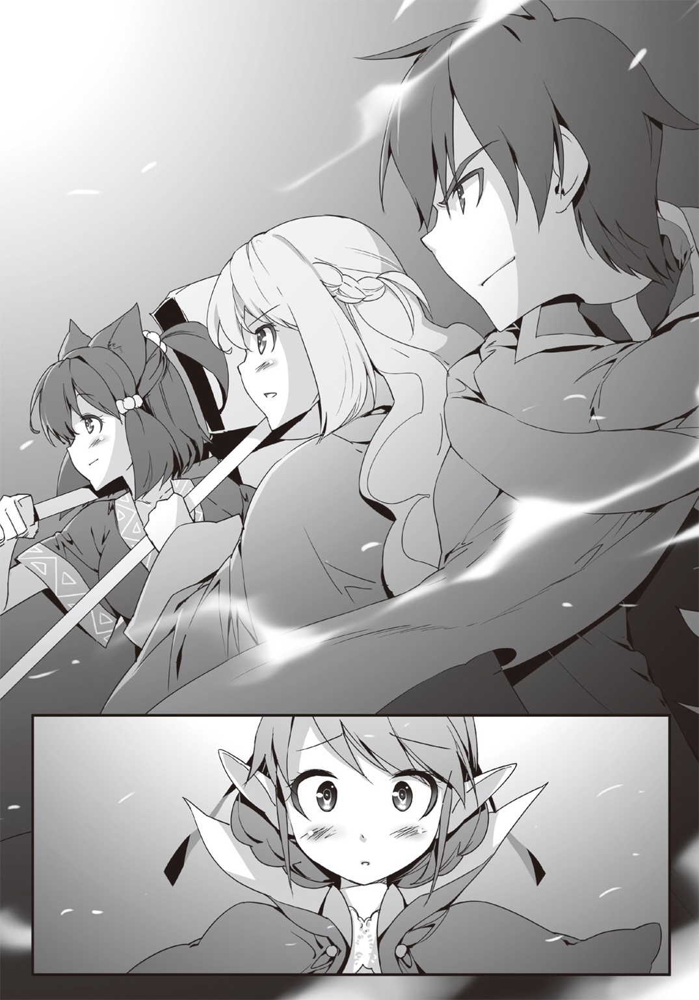
「なんとかするさ。死ぬ気でやればできないことはない！」
『......何の保証もない台詞じゃねえか』
マンゲツが苦笑しながらも、すぐに元の表情へと戻って、こう呟く。
『――だが、面白い。そういうのは嫌いじゃないぜ、兄弟』
混沌魔導が不気味な音を立てながら押し迫る。オレは尚も進み続けた。
『いっちょお嬢のために、命懸けでやってみるかッ！』
眼前に壁が形成され、正面から球体を受け止める。
激しい音と共に一瞬動きは止まったが、しかし、すぐに全面に罅が入った。
グレディスの幻像が、もう一つの混沌魔導を発動したからだ。
『くっ......やっぱりか。さすがに二つは......無理だッ！』
壁が砕け散る。わずかに勢いを落としたものの、未だ目立った衰えを見せない魔法が、オレを打ちのめそうとした。
「ああああああああああっ！」
無駄だと理解しながらも、オレはリベリオンを振り上げて、球体を両断しようとする。
「リョウマッ！ ここは任せてッ！」
だがそれより早く、オレの前にライラが降り立った。彼女はハンマーを持ち上げて、混沌魔導の球体に連続で叩きつける。
凄まじい衝撃が起こった。オレは思わず体勢を崩しかけたが、なんとか立て直し、目の前の状況に目を見張る。
ライラが顔をしかめながら膝をつき、荒く息を吐いていた。
惨たらしいほど全身が傷つき、血が流れている。
当たり前だ。マンゲツのおかげで少し威力が落ち、直撃は喰らっていないとしても、二発分の余波だけで相当なダメージがあるはずだった。いくら戦族の体が頑丈だとしても、さすがに無理がある。
「ライラ!? 大丈夫か!?」
「......なんとか、ね。でも、ごめん......さすがに動けないかも」
ライラの体がぐらつき、ゆっくりと倒れていく。
「あとは――任せたよ、リョウマ」
一瞬、介抱しようと体が動きかける。
だが、オレは、それをすぐに取りやめた。
何のために、ライラがオレを庇ってくれたと思ってるんだ。
「ガーネット、ライラの治療を頼む！」
一言だけ告げて、オレは更に皇帝との距離を詰めた。
「楔と化せ――リベリオンッ！」
刃を振るう。先程と同じく、光が束となって相手へと向かい、体を大地に繫ぎ止めようとした。
しかし、グレディスは手を翳すと魔法を幾つも生み出し、それらを一つずつ正確に潰していく。
『あ、くそっ！ 兄弟、どうする、不味いぜ!?』
「だったらこうするだけだっ！」
オレは皇帝の幻影が光の楔に気を取られている隙に、高々と跳躍した。
「喰らええええええええっ！」
得物を逆手に構え、切っ先をグレディスへと向ける。
次いで落下する勢いに任せ――刃を、体へと突き刺した。
「相手を捕らえろ、リベリオンッ！」
命令に従い、グレディスの体を貫通した剣が光を纏う。
伸びた輝きは大地へと刺さり、リベリオン自身が楔へと変貌した。
「今だ、アイリスッ！」
オレは振り返る。準備は整えた。あとは彼女が全てを決めるだけだ。
「わ、私は......」
アイリスは強張った顔のままで、手を握る。
「どんなことがあろうと帝国を助けたいんじゃなかったのか!? だったら、お前の手で過去を捨てろ！ それくらいの覚悟がなきゃ、誰もお前を信用してくれないぞ！」
だがオレがそう言うと、彼女の表情が変わった。
「取り返しのつかない罪を犯したと思うなら、償えるだけの苦しみを背負え！ オレはお前の手を引けるが、歩き出すことまではしてあげられない！」
グレディスが暴れるのを、オレは強引に押さえつける。
「お前が決めるんだ、アイリス！ どれだけ辛くても......帝国の過去を捨て、未来に生きろッ！」
最後に声をからして叫んだ。オレの心がアイリスに届き、少しでも力になればと。
そして――。
「......リョウマ......」
アイリスの目が、少しずつ、先程とは違う色を宿し始める。
怯えるような顔は、毅然としたものへと変化していった。
「......わかった」
やがて、固めていた拳を解き放ち。
アイリスは答え、掌を翳した。
「下がってくれ、リョウマ。あとは――私がやる！」
声音に虚勢は少しもない。
オレは頷き、その場から飛び退いた。
「やるんだッ！ アイリス......ッ！」
声をかけると、アイリスは大きく息を吸い込む。
「父上、私はあなたのことを片時も忘れたことはない。今までも、そして、これからも」
掌に魔力が集まり、使い手の望む現象を起こす準備を始めた。
「だが――それは思い出として仕舞っておく。心の奥底へと沈め、蘇らせることはしない」
アイリスは、厳然とした態度で静かに言う。
「さよならだ、父上。もう二度と、会うことはないだろう。私は――これから、リョウマと生きていく！」
瞬間、アイリスは魔導言語を唱えた。
「【我が意に沿いて汝に鉄槌を下す】......」
グレディスの頭上に突如として暗雲が立ち込める。
同時に皇帝はリベリオンを強引に引き抜き、地面へと捨てた。
だが――一歩遅い。
「【これは、神の偉大なる罰と知るが良い】！」
魔法が完成。
凄まじい落雷が、グレディス目がけて、無数に降り注いだ！
「――ッ！」
声なき絶叫を上げる皇帝。
かつてオレがその身に剣を突き立てた時と同様。
彼は、現状を憂うように悲しみに満ちた目をオレ達に向けて――。
砂塵のようにして、地に崩れ落ちていった。
「............終わった」
アイリスは膝をつき、両手で顔を覆う。
しばらくして、彼女は、嗚咽を上げ始めた。
「父上......すまない。ありがとう」
涙を零すアイリスを、責める奴はいない。
十分すぎる程の行動を、彼女はやり遂げた。
オレは近づくと、跪き、アイリスの頭を撫でる。
彼女はそのまま、オレの胸に身体を預けてきた。
静まり返った洞窟内に、アイリスの慟哭だけが響き渡っている。
『見事。試練はこれにて終了とする。力、知恵、勇気。三功を示した汝らに最大級の賛辞を。王への道は開かれたり』
声と共に小さな地響きがして、洞窟の最奥に、台が現れた。
魔法によって、地面に埋められていたんだろう。
台の上には鈍い光を照り返す、円盤のようなものが置かれていた。
表面には、剣と盾と炎を表す紋様が描かれている。
「四功の証だよ。......お疲れ様、みんな」
円盤を手に取ったライラが、彼女らしい天真爛漫とした笑みを見せて。
――オレ達は、ようやく、試練を終えたのだった。
最終章 夢と責任
シュトルライデンの首都、バハークにある謁見の間には、重苦しいくらいの沈黙が漂っていた。
戦族の王であるギオスさんは、先程から手の中にある円盤に目線を落としている。
眼差しは、寸分たりともミスを見過ごさないというように厳しく、さながら骨董品の価値を判別する熟練の鑑定家のようだ。
オレ達は沙汰を待つ罪人よろしく、ただ固唾を呑んで事の成り行きを見守っていた。
やがて、
「............よし」
小さく、だけど、確かにギオスさんはそう言った。
円盤から外れた視線が、オレ達の方を向く。
「いいだろう。確かに【四功の証】であると認める」
思わず、全身から力が抜けそうになった。
肩に載っていた重石が、一気に崩れ落ちた感じだ。
「国王様......それでは？」
ガーネットが伺いを立てると、ギオスさんは鷹揚に頷いた。
「ああ。戦族は一度立てた誓いは破らない。――約束通り、帝国ガルフレアと和平を結び、復興に協力しよう」
マンゲツやガーネット、ライラの顔が喜びに満ちる。もちろん、オレだってそうだ。
「やったな、アイリス......！」
声をかけると、隣にいたアイリスが、満面の笑みで「うむ！」と応えた。
「戦族でさえ苦難を強いられる試練を、よく乗り越えたな。さすがは帝国の皇女というべきか」
オイデンが言うのに、アイリスは首を振る。
「とんでもない。私一人ではとても無理だった。リョウマやガーネット、それにライラがいなければ到底、成し遂げられなかっただろう」
『......おれも頑張ったぜ？』
オレの胸元でマンゲツが小さく言って、むくれたような顔になった。
「別に無視したわけじゃない。この場でお前の名前を出すわけにもいかないだろ。説明するのに、余計な手間がかかる」
囁いたオレに、マンゲツは『わかってるけどよ......』と言いながらも、何やら不満そうな様子だった。
「だが、帝国の皇女。この和平は絶対じゃない。もしもお前に父親のようになる兆候が少しでも現れれば、すぐにでもシュトルライデンはガルフレアにとって敵になる」
ギオスさんは重々しい口調で言う。
「過去に罪を犯したものは、それが人であれ国であれ、そういうものだ。......理解できるな？」
アイリスは真摯な顔で、それに応えた。
「もちろん。もし私が自身の弱い心に負け、父上の二の舞になるようなことがあれば、遠慮なく止めてほしい。できるなら、そのような事態は避けたいところだが」
「それはこっちだって同意だ。まあ、できる限り頑張ってくれ。こっちもいくらかは助力になる」
フィノスが軽い口調で言うと、アイリスは頭を下げた。
「大丈夫だと思うけどね、アイリスなら」
その時、ライラが突然発言したので、ギオスさんは眉を顰める。
「どうしてそう思う？」
「ずっと見ていて、それがわかったからだよ」
ライラは頭の後ろで手を組みながら、アイリスを見た。
「この子は三番目の試練で、お父さんの幻像相手に戦った。とても辛いことだったし、逃げても許される場面だったと思うのに、あえて挑んだんだ。欲望に負けるような弱い心は持っていないよ」
「ライラ......だがあれは、リョウマがいたからこそのことだ。私だけでは恐らく、背を向けていたかもしれない」
噓をつき、相手の信頼を勝ち取ることもできたのに、アイリスはあえて本当のことを話した。彼女らしい対応であるともいえるんだが。
「だけどリョウマがいれば、向き合えたんでしょ？ で、アイリスの傍には今、そのリョウマがいる。だったら問題ないんじゃない？」
「し、しかし、リョウマはずっとこの世界にいるわけでは......」
「人は成長するものだよ、アイリス」
ライラはアイリスに歩み寄ると、彼女の肩をぽんぽんと軽く叩いた。
「あたしがリョウマの知らない間に大きくなったみたいに、見えないところでみんながちょっとずつ変わっていく。アイリスだって、リョウマの隣にいればいつかきっと、どんなことにも負けない強い皇女になるかもしれない」
そのままアイリスを抱き寄せ、ライラは髪を優しく撫でる。
「今日、アイリスはそのきっかけを見せてくれた。あたしはそれだけで、君が信用できる子だってわかるよ」
「......ライラ......」
じわりと、アイリスの目に涙が浮かぶ。
「すまない......信じてくれて、感謝する」
ライラの胸元に顔を埋め、アイリスはか細い声で言った。
「......父上、ライラがこう言っているのだ。ガルフレアのことは、当面の間、問題ないのではないか」
オイデンが言うと、ギオスさんは優しげに目を細めた。
「まあ、うちの愛娘の人を見る目は確かだからな」
「......オレからも保証します。アイリスはきっと、帝国をいい方向に導いてくれる。いつか、四大聖国にも並ぶくらい立派な国になるはずです」
オレが胸を叩くと、ギオスさんが口角を上げる。
「まあ、お前がついてりゃ大丈夫だろ。これからも支えてやってくれ」
はい、と大きな声で返事をすると、フィノスが手を叩いた。
「よし。それじゃあ、これで堅苦しい話はなしだ。出発は明日なんだろ？ 今日は盛大な祝いの席を用意するから、楽しんでいってくれ」
「そんなことをしていただいてよろしいのですか？」
ガーネットが目を丸くすると、フィノスが微笑む。
「客人をもてなさないで帰しちゃ、シュトルライデンの名が廃るってもんだからな。遠慮なんかするな。とびきりのご馳走を用意してやるよ」
ぐううぎゅるるるるるるるるるぅ。
唐突に、すごい勢いで誰かのお腹が鳴った。
全員の視線が、ある一人に集まる。
「はっ......こ、これは別に、その、ご馳走と聞いて反応したわけではないぞ!?」
顔を真っ赤にしたアイリスが、自分のお腹を手で押さえた。
「確かにお腹は空いていたが、公然の場でそのようなはしたない真似をする私ではない！ ただの偶然、たまたまほんの少し胃腸が動いただけなのだ！ 本当に、まったく、そんなことはないのだからな!?」
言い訳にもならない言い訳を並べるアイリスに、場にいた全員が笑いを堪える。
「わ、笑わないでほしい！ リョウマからもなんとか言ってくれ！ 私は本当に、ご馳走を欲しがっているわけではないのだ！」
「ああ、わかってる、わかってる。よくわかってるよ」
半笑いのまま手を上げて、オレは言った。
「すみません、アイリスはご馳走が欲しかったわけじゃないんです」
うんうんと必死に頷くアイリスを横目に、
「ただ単に、いつもお腹を空かしてるだけです」
オレはちゃんとした現実をみんなに教えてあげた。
「リョ、リョウマ――ッ！ それでは私がただのいやしい娘のようではないか！」
裏切られたという顔で、アイリスが飛びかかってくる。
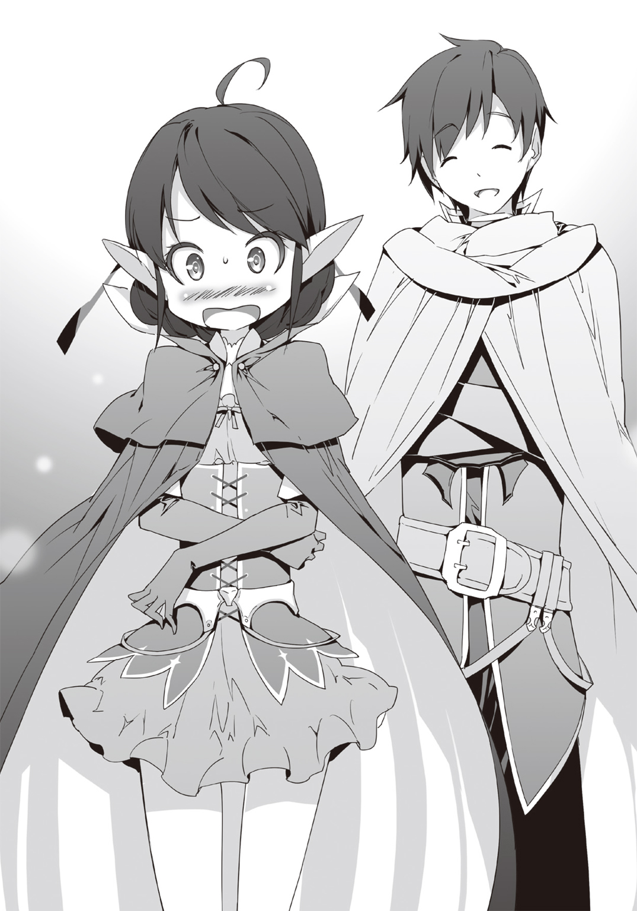
熟した林檎みたいに耳まで赤くして、彼女はオレの体を何度も叩いてきた。
だがいかんせん、力が弱いので、小さな子がじゃれてきているようにしか見えない。
「でも、間違ってはいませんよね。アイリスは随分と食べることが好きなようですから。お腹の音で、ご飯時がわかるくらいです」
ガーネットも口元に手を当てて、くすくすと笑いを漏らす。
「そういえば、洞窟へ向かう道中も食欲旺盛だったもんね。あたしが作ったスープ、何杯もお代わりしてたし」
ライラが思い出すように言うと、ギオスさんが豪快に笑い飛ばした。
「そいつはいい。それじゃ、里のモンにせいぜい盛りだくさんの料理を用意しておくよう言っておくか」
「は、はううう。いや、それはありがたいが......うぬぬぬ」
アイリスは複雑そうな顔で言ったあと、オレを見上げて頰を膨らませる。お前が余計なことを言うからだ、というような表情だ。ごめん、とオレは軽く頭を下げた。反応が可愛かったものだから、ちょっとからかいたくなったんだ。
「まあ、寝所も用意するし、今日のところはゆっくりしていけや。明日に備えて体力を回復させておかなきゃならないからな」
ギオスさんの言葉に、オレ達は揃って頷いた。
色々とトラブルがあったけど、どうにかシュトルライデンとの交渉も上手くいったようだ。この調子で、残る二国ともなんとかなってほしいものだけど......。
「......ひとまずは、今回のことを喜ぶか」
悩むのはあとでもできる、と、オレが思考を切り替えようとした時だった。
「あ、そうだ。トト様にアニ様、言い忘れたけど」
極々、気軽な様子で、ライラが手を上げた。
「――あたし、やっぱりリョウマ達についていくから」
「そうか。そりゃよかった。じゃあ、明日からライラも旅の準備を......」
流されるままに受け答えしたギオスさんだったが、台詞は途中で途切れる。
「......なんだって？」
なにかの間違いじゃないのか、と言いたげな顔で尋ねたギオスさんに、
「だから、あたしもこの国を出るよ。で......リョウマ達と、一緒に行く」
ライラは、容赦なく、あっさりと告げた。
オレもこのタイミングで言うとは思っていなかったので、硬直する。
瞬間――派手な音が鳴った。
ギオスさんだけじゃなく、オイデンやフィノスまでもが椅子から転げ落ちたのだ。
「な......な......な......」
わなわなと震える手でライラを指差したあとで、三人は揃って叫んだ。
『なんだと――ッ!?』
素早く立ち上がったギオスさんが、足音荒くこちらに歩み寄り、ライラの両肩を摑んだ。
「ど、ど、どう、どう、どう......どいうういことだ!?」
焦りのあまり、言語機能を失ってしまっている。
「リョウマ!? お前か!? お前がそそのかしたのか!?」
オイデンからあらぬ疑いをかけられて、オレは反応に困った。そそのかしたわけではないが、無関係というわけでもないからだ。
「......どういうことだよ、ライラ。理由はなんだ？」
フィノスがようやく体勢を整えて訊くと、ライラは小首を傾げたままで返した。
「えーと。面白そうだから？」
「ダメに決まってるだろう！ お前、一国の王女がそんな理由で国を抜けるつもりか!?」
ギオスさんが、怖い顔でライラに迫るも、彼女はまるで意に介さない。
「だって、リョウマ達はこれから三年前みたいに世界中を回るんでしょ？ あたし、シュトルライデンは好きだけど、三年前みたいに、もう一度外にも出てみたい。このままずっと、里に閉じ込められたままなのは嫌なの」
「......考え直せ、ライラ。三年前は特殊な事情だった故、多くの戦力が必要となり、お前の同行も許した。だが、そうでないのであれば駄目だ。父上を困らせるものではない。お前にもしものことがあったらどうする」
低い声でたしなめたオイデンに、ライラが口をへの字に曲げる。
「えー。別にいいでしょ？ 今のところ、差し迫って何があるわけでもないしさ。それに戦族なんだから、危なくなんてないって。寧ろ、世界を巡って色んな奴と戦って強くなりたいよ」
「危険だから言っているんじゃない。自分の立場と責任を考えてみろと言っているんだ」
フィノスが渋い顔をした。ただ、オレからするとギオスさんたちが過保護という点も否めない気もする。
「だって......ねえ、リョウマ？ ついていっても、いいでしょ？」
眉を吊り上げたライラが協力を求めてきたので、オレは覚悟を決めることにした。
たとえ、こちらに向けられたライラの家族の目に、殺意が籠もっていたとしても。
受け入れたらどうなるかわかっているんだろうな、という、そんな類の意志を感じたとしても。
......実を言うとかなり怖いが、ライラとの約束は守る。
「そうですね。オレとしては問題ないです」
オレは気合いを入れ、ギオスさんの鋭い視線を、真っ向から見返した。
「四大聖国との協力を取りつける旅を終えるまででいいんです。彼女が一緒に来てくれればオレも助かる。ほんの少しでいいから......ライラに自由をあげてくれませんか」
「だが、ライラは王女だ。もしも何か問題が起こり、こいつの身に取り返しようのないことがあれば、里のみんなが悲しむだろう。その辺りはどう考えているのだ？」
オイデンからの威圧的な追及に、オレはライラを横目で見る。
少し俯いた彼女の相貌には、陰りがあるような気がした。
オレは気持ちを察して、息をつく。
「ライラも......その辺りはわかってると思います。でも、それでもきっと、外の世界を冒険してみたいっていう心が抑えられないんです。経験したことのないことを知りたいっていうのが、彼女の夢だから」
「だがな、リョウマ――」
「王族が私的な目的で動いちゃいけないってのは、三年前にアラムヴェルトに来て、オレも知りました」
ギオスさんの言葉をあえて遮って、オレは続けた。
「でも......だからって無理矢理この国に押し込めて、ずっと自分を犠牲にし続けろっていうのは、酷な話なんじゃないですか。それに、王族の血を引く人間だからこそ見聞は広げるべきです。狭い世界にい続けたら、小さな考えしか持てない。ライラのためにも、もう一度くらい外に出るっていうのは、悪くないと思うんですが」
こちらの話に、ギオスさんはたくましい腕を組むと、目を瞑り、黙り込んだ。
オイデンやフィノスは、王である父親の判断を待つように、視線を注いでいる。
だが、やがて、
「......トト様やアニ様の言うことも尤もだと思うよ」
不意に、ライラがぽつりと漏らした。
「おお。では、シュトルライデンに残るのだな!?」
オイデンが身を乗り出す。
「ううん。この国を出る」
「なんでそうなるっ!?」
謁見の間が吹き飛ぶかと思うくらい、フィノスが大きな声を出した。
鼓膜が破れるかと思って、オレは思わず両の耳を押さえる。
「あんまりこういうこと、口に出さない方がいいと思ったんだけどさ......やっぱり、ちゃんと説明しないとだよね」
ライラは頭を搔きながら、少し照れくさそうに言った。
「最初、リョウマに頼んだ時は、単純にまた一緒に旅をしたいからってだけだったんだけど。リョウマ達と一緒に行動しているうちに、ちょっとずつ変わってきた。段々、見たくなってきたんだよ。アイリスがこの先、どう変わっていくのか。リョウマと一緒に、なにを見て、なにを聞くのかを」
「......どういうことだ？」
アイリスが尋ねると、ライラは頷く。
「あたし、難しいことを考えるのは苦手だからさ。正直、三年前もただ悪い奴を倒しに行くんだって気持ちでついていったんだ。だけど、アイリスが来て思った。『帝国』っていう記号だけで判断して、中身を見ないで悪者扱いするのはダメだったのかなって。だったら、今度は帝国がどんなものなのかを自分の目で確かめて、アイリスがどんな国を作っていくのかを知りたいって思ったんだよ」
ギオスさんを真っ直ぐに見つめ、
「トト様言ったよね。何事も自分の経験で信じるか決めるって。だからあたしもそうする。アイリスを通して、帝国がどうしようとしているのか、どうなろうとしているのかを自分で見定める。それは三年前に皇帝を倒した人間として、やらなきゃいけないことだと思う」
ライラは、確固とした口調で述べた。彼女の耳も尻尾も、尖るように立っている。戦族が真剣になる時によくする仕草だった。
「リョウマの言う通り、このままシュトルライデンにいたんじゃ、あたしはずっと三年前のあたしのままだよ。それは嫌だと思った。ただの好奇心だけじゃない。もっとアイリスを、帝国を、世界っていう大きなものを深く知って、自分の中の糧にしたいんだよ」
堂々とした態度で、真剣な眼差しのまま、彼女は父親や兄に訴えかける。
「トト様やアニ様達にはシュトルライデンを治める仕事がある。だからこれは、あたししかやれないんだよ。だからお願い。――あたしを外に出して」
ギオスさんやオイデン、フィノスは、呆然としたままライラを見つめる。
「ライラ、お前、いつの間にかそんな立派なことを......」
しばらくしてから、フィノスが呟いた。
ギオスさんはライラを自分の瞳に映したまま、じっと彼女を見つめる。
わずかな間、無言を保っていたけど、やがてギオスさんは大きく息をついた。
そして、
「ライラ――」
何かを言おうとした、まさにその時だった。
「よく言ったよ、ライラ！」
大きな声と共に、王宮の扉が開く音がする。
オレ達が振り返ると、そこにはライラとよく似た綺麗な女性が立っていた。
背は低いが、佇む様はどこか威風堂々としていて、妙な迫力がある。
「カカ様！ 帰られていたんですか！」
ライラが嬉しそうに言って飛びつくと、女性は彼女を優しく受け止める。
「ああ、そうだよ。久しぶりだね、ライラ。それにガーネットにリョウマも」
こちらを見て笑いかけてくれた女性に、オレとガーネットは頭を下げた。
彼女の名はフィディナ＝トールニクス。ライラの母親だった。
「ちょうど、あんた達が出ていったあとに狩りから帰ってきてね。話は全部聞いてるよ。ライラ、旅に出たいなら出るといい」
「お、おい、フィディナ、勝手に決めるな！」
「いいじゃないか。それに、全てを自分の経験で判断するってあんたが言ったんだろ？ ライラはそれに従おうっていうんだ。だったらそいつはあんたの責任だ。そうじゃないか？」
「......まあ、そりゃそうだが」
バツの悪そうな顔をするギオスさん。
「リョウマ、何かと雑な娘だけど、世話してやってくれないかい？」
フィディナさんに言われて、オレは面食らった。思わぬ展開だ。
「......いいんですか？」
オレが尋ねると、ギオスさんはしばらく渋面を作ったまま黙り込んだ。
しかし、やがて不精髭を撫でながら、天井を仰ぐ。
「......まあ、そうだな」
呟いたのは、いつもと違った、ひどく弱々しい声だった。
「わかった。ライラ、リョウマと一緒に旅をしろ」
「ですが、父上......」
「異論は聞かねえ。これは族長としての決定だ」
オイデンを遮り、ギオスさんは視線を戻すとライラに言った。
「行ってこい。――お前自身の目で、耳で、肌で、アイリスが、帝国がどうなっていくのかを知れ。そしていつか帰ってきた時に、それを俺に教えてくれ」
「トト様......！ ありがとう！」
目を輝かせるライラは、オレの方へと体を向ける。
「リョウマ、やった！ また一緒に旅ができるよ！」
「ああ、よかった！ よろしくな、ライラ！」
オレが応えると、アイリスもまた同じように歓迎の言葉で続いた。
「仲間は多いほどありがたい。頼りにしているぞ、ライラ」
「うん、こっちこそ！ アイリス！」
ライラは両手を広げると、アイリスを思いっきり自分の懐へと入れた。
「わぶっ。......ガーネットもいいな？」
ライラに頰を摺り寄せられたことで顔を赤らめながら、アイリスが後ろにいるガーネットへと訊いた。
「ええ、先に決めていた通り、もちろんです。ライラなら不満もありません」
にっこりと笑ったガーネットを、ライラは続けて抱きしめる。
「無事に願いが叶ってほっとしたよ。オレがちょっとでも助けになれたんなら、嬉しいんだけど」
オレが言うと、ライラはまるで光り輝くような満面の笑みをこちらに向けてきた。
「ちょっとじゃないよ、完璧だったよ！ リョウマ、また楽しくやろうねっ！」
ガーネットを放すと、ライラがこちらに手を伸ばし、飛びついてくる。
「うわ......っと!?」
同性ならともかく、オレ相手だとちょっと不味いんじゃないだろうか。
ふくよかな胸の感触とか、香料の甘い匂いとかが鼻孔をくすぐってきて、動揺する。
「リョウマ......お前のことは三年前を通じて信用している」
ギオスさんが低い声を出す。言葉とは裏腹に、どこか脅しつけるような響きがあった。
「だが、くれぐれもライラに余計な手を出すんじゃねえぞ。こいつが望むならともかく、寝ている間とか、無防備な隙を狙って何かをしようっていうんなら俺が――」
「いや、おれ達が――」
「――絶対に、許さないからな」
フィノスとオイデンがギオスさんに続き、ドスの利いた口調で言ってくる。
「わ、わ、わかりましたッ！」
オレは姿勢を正して元気よく返事をした。
その辺にいる不良なんてメじゃないくらい、芯まで震えあがるような迫力である。
「あんたら、いつまで経っても揃いも揃ってバカだね。ちょっとはライラ離れしなよ」
だがフィディナさんからたしなめられ、三人は首を竦めた。
「......おい、ライラ。少しくっつきすぎだぞ。もうそろそろいいのではないか？」
やがてアイリスが、遠慮がちにライラの服の裾を引っ張った。
「そうですよ。リョウマ様が困っておられるではないですか」
ガーネットもまた、腰に手を当ててむくれる。
「えー。もうちょっとだけいいと思うんだけどなあ」
オレの首元に手を回してきながら、ライラは無邪気な笑顔で言った。
「なんたって、リョウマは将来、あたしの夫になる男なんだからさ！」
――空気に罅が入る音というものを、オレは確かに聞いた。
「リョウマ......？ お前、どういうことだ」
「事と次第によっては、ここで制裁を加えることになるが」
「何か裏があるんだよな？ それを教えてくれないか？ ないなら何が起こっても文句は言わせないぞ？」
三人の殺意が鋭い矢、いや、極太の槍みたいにがすがす刺さってくる。
「い、いや、別にこれは......ライラが言っているだけで......」
「えー。確かに返事はもらってないけどさ。ちゃんと君を予約しておいたんだよ？ 額に口づけまでしてさ」
「ライラ!? 申し訳ないけどちょっとだけ静かにしてくれないか!?」
あなたが一言何かを口にするたび、どんどん空気の罅が大きくなっているんです！
「聞き捨てならねえなあ、おい」
「こいつはやっぱり制裁か......？」
「いやあ、久しぶりに体を動かしたい気分なんだよなあ」
オレ、三年前に皇帝と戦って以来の、最大の窮地到来。
「え、えーと......」
オレはじりじりと下がりながら、目をぎらつけるライラの兄とギオスさんに向かって、大きく頭を下げた。
「すみませんっ！ オレはこれで失礼します！」
踵を返し、全力でダッシュする。
王宮を出たところで、背後から、とてつもない怒号が聞こえてきたが、無視することにした。
「あはは。さすがにちょっと言いすぎたかな」
「気づいてくれたか、よかった！ 発言する前にわかってくれたら尚よかったかな!?」
ようやく足を止めたところで、オレの隣に並んだライラに、泣きそうな気分で叫ぶ。
「......まあ、別に噓は言ってないんだけどね」
ぼそりと呟いた彼女の声に、オレが訝しげな顔を向けた時、
「ライラ、そこまでですっ！」
オレとライラの間にガーネットが割って入り、無理矢理引き離した。
「リョウマ様はあなただけのものではありませんよ!? 譲り合いの精神を持ちなさい！」
「えー。でも戦族は基本的に欲しいものは自分の力で取るし、取ったものは人にはあんまり渡さないんだけどなあ」
「で、でしたら、わたくしだって遠慮しませんよ？ あなたが入る隙がないくらい、リョウマ様のお傍にいさせていただきます！」
「お、面白いね。そっちの方がいいや。それじゃ、勝負しようか？」
「大いに望むところですっ！」
互いに顔を近づけながら不敵に笑い合う、ガーネットとライラ。
ぶつかる視線の間に、激しい火花が散ってそうだった。
『兄弟は本当にモテるなあ、おい』
マンゲツが、どこか少しだけ羨ましそうに言う。
二人の様子を眺めながら、なんて答えていいかわからず、オレは無言を貫いた。
「リョ、リョウマ......やっと追いついた」
そこで、息を切らしながら、アイリスも到着する。
「ふう。いきなり走り出したから、驚いたぞ」
「悪い悪い。なんかちょっと、本気で命の危機を感じたもので」
謝ると、アイリスは「構わないが......」と答えながらライラとガーネットの方へと視線を移した。
「あの二人は一体どうしたのだ。なにやら不穏な空気が漂っているが」
「......まあ、色々あるんだよ。あんまり気にするな」
としか言いようがない。
アイリスは首を傾げながらも、そうか、とだけ返してきて、もう一度深呼吸した。
「それにしても......この国は空気が美味いな」
眼下の景色を眺めながら、アイリスが呟く。
大きな木の上にある王宮からは、バハークの里のみならず、シュトルライデン全体を見通すことができた。
「民は皆、元気がよく、王を慕い、懸命に働いている。......ガルフレアも、かつてはそうだった。小国ではあったが、父上の下で皆、健やかに過ごしていたのだ」
アイリスは昔を思い出すように目を細めながら、告げる。
「取り戻さなければならないな。あの時の、我が国を――」
揺るぎのない言葉の響きに、彼女の強い信念が窺えた。
「できるさ、アイリスなら。お前の夢を助けるためなら、ガーネットや、ライラや、何よりオレが全力で手助けする」
「ありがとう、リョウマ。......お前には、助けられてばかりだ」
「礼を言う必要なんてないさ。オレはこれでも結構、心の狭い男でね」
笑いながら、オレは言った。
「どうでもいい奴に手を貸せるほど、器が大きくないんだ。どうせ無茶をするなら、してよかったと思える相手がいい」
アイリスがこちらを見上げてくる。オレはシュトルライデンの、どこまでも広がる緑を眺めながら続けた。
「オレがアイリスを助けるのは、お前がそうしたいと思える人間だからだ。――大丈夫。アイリスならきっとお父さんと同じくらい......いや、もっとすごい指導者になれる」
視線を移して、アイリスを見つめながら、頷く。
「それまでの間――オレが皇帝として、何があってもアイリスを支えるよ」
アイリスの目が、ゆっくりと見開かれていった。
どこまでも澄みわたる空みたいに、あるいは、透き通った湖みたいに。
穢れなんてどこにもない、純粋そのままの瞳に、オレの姿が映っていた。
「......やはり礼を言わせてくれ。ありがとう、リョウマ」
表情を緩め、口元に笑みを浮かべながら。
「私は――お前に出会えて、本当によかった」
アイリスは、心から伝えるように、言葉を紡いだ。
......ふと、思う。
もし、彼女がこちらの世界にオレを呼んでくれなかったら。
ライラと同じで、オレはずっと帝国のことを誤解したままだっただろう。
またアラムヴェルトに来ることができたから。
アイリスと出会うことができたから。
オレは、彼女の苦しみを救う一助になれた。
自分の選択が生んだ結果の責任を、取ることができるのだ。
だとすれば、礼を言わなければいけないのは、こちらの方かもしれなかった。
「あ、ガーネット、アイリスがリョウマと話してるよっ！」
「ほ、本当です！ 抜け駆けはダメですよ、アイリス！」
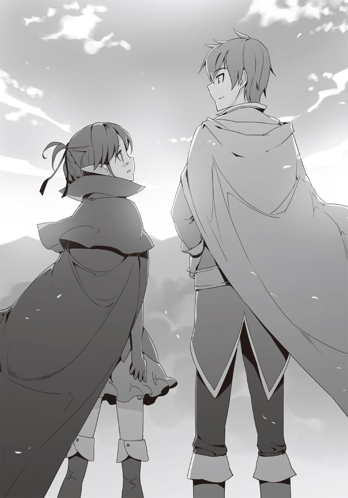
ライラとガーネットの声が、後ろから聞こえてくる。
「べ、別に抜け駆けをしたわけではないぞ!? ならば、二人もこちらに来て話すとよい！」
アイリスが少し頰を染めて提案すると、ガーネットとライラが駆け寄ってきた。
しばらくすると、三人の間で会話が始まり、場はあっという間に賑やかになる。
「――オレこそありがとうな、アイリス」
だから、オレの言葉は彼女達の声に紛れて消えてしまい。
「ん？ なにか言ったか？ リョウマ」
アイリスの問いかけに、オレはちょっと照れくさくなって、ぶっきらぼうに返した。
「別に......なんでもないよ」
シュトルライデンを駆ける、気持ちのいい風が吹く。
オレの胸で、マンゲツだけが全てを知って、ただ笑っていた。
その場所を知る者は、あまりにも少ない。
外界からは隔絶した深山幽谷に位置し、わずかな者達のみが、遙かな昔より連綿と住まい続けてきた。
豊かな自然と共にあり、侵し難い厳粛な空気が漂う様を。
彼女は、バルコニーから眺めていた。
「それで。......どうなのです」
突然、独白のように呟いた言葉。
だが、返る声があることを、彼女は知っていた。
「......ティタニアからシュトルライデンへ。両国とも多少の問題はありましたが、王の協力を取りつけたようです」
背後に降り立った気配が、抑揚を欠いた口調で告げる。
「予想していたよりも随分と早いですね。さすがはかの英雄が手を貸しているだけのことはある、というべきでしょうか」
「順当に行くと次は創族の国になりましょうか」
「ここへ来る手間を考えればそうなりましょう。......困りましたね」
このままではいずれ『彼女』は目的を達してしまうだろう。そうなれば帝国の復興も大きく前進することとなる。
「何か手を打ちましょうか」
「そうですね。上手くいかないのであれば手を出さずにいこうと思いましたが......こうなれば、早急に身柄を確保するべきでしょう。ただあの子の身の安全だけは最優先とするように」
「無論です。お嬢様の御身が何よりも大切ですから」
「お願いしましたよ。それが叶うのであれば、多少、乱暴な手段に出ても問題はありません」
「......他の者に関しては如何しましょう」
「目的の邪魔になるのであれば排除なさい」
わずかな躊躇いすらもなく。彼女ははっきりと言い放った。
「わたしの目的はあの子――アイリスのみです。他は必要ありません」
「......御意」
短い返答と共に、背後から気配が消える。
彼女は視線を上げ、晴れ渡る空に眼差しを向けた。
延々と広がる天に、何よりも愛しい者の顔を思い浮かべる。
「何故そこまでして足搔こうとするのですが、アイリス......」
哀れみを帯びた声を出し、愁いを帯びた相貌で言った。
「帝国はもう滅びゆく定めなのです。理解すればあなたも離れると思っていましたが......ことはそう簡単にはいかないようですね」
バルコニーに沿えた手に力を込め、柵を握り締める。
「でも大丈夫。わたしがあなたをきっと......」
やがて彼女は何よりも強く――誰よりも、揺るぎない口調で零した。
「きっと、ガルフレアの呪縛から、解き放ってあげますから」
ＦＩＮ
あ と が き
気がつけばぼくも齢三十になりまして、世間的に見れば立派な大人であります。
まあ、中身はあまり成長していないので、相変わらず周囲に迷惑をかける情けない日々を送っているのですが......。
ただそれでも時の経過は人を少なからず変えるものでして、ぼくとて意識せずとも一年前、十年前とは幾らか違う人間になっているのでしょう。
先日......と言っても半年ほど前ですが、母校で、二十年前に埋めたタイムカプセルを掘り出すという稀有な機会に恵まれまして。
長らく無沙汰をしていた小学校へ赴くと、思っていた以上に沢山の人で溢れていました。
覚えている人、顔は記憶にあるけど名前が思い出せない人、誰かがまるでわからない人などなど......思わぬ再会に驚きつつ、旧交を深めてきたわけです。
ですが二十年という時は長く、子供の頃に校庭ではしゃぎまわっていたのと同じというわけにはいきませんでした。
なにせ全員、何かしら立派な職業についていて、家庭をもっている人たちも少なくはありません。
皆、昔の面影を残しつつ、やはり「大人」の顔をしていました。
人は同じ場所に止まっているように見えて、実は少しずつ知らないうちに歩き出しているのかもしれません。
突然の再会とはその経過を飛ばすものでして、故にこそ、誰しもが信じられないほど変化した相手に驚くのです。
......ということを考えながら、今回の『逆道の覇王戦記２』を書いていました。楽しんで頂けましたでしょうか。
お久しぶりです、空埜一樹です。
まあ、一番驚いたのは「顔は覚えているのに名前が思い出せない人」の率が異常に多くて脳裏にさっと「老化」の二文字が過ぎったことと、自分のことを覚えている人が想像以上に少なかったことなんですけどね。
確かにクラスじゃ目立つほうじゃなかったけどさ......その......それなりに話をしてる人とかもいたのに......軒並みってお前ら......お前らーっ！
悲しい気持ちになってきたので話題を変えます。
今回の新キャラは犬耳、元気、無防備、力押し、おっぱい、おっぱい、とぼくの好きなものを詰め込んだ娘で、非常に楽しんで書くことができました。
え、同じ単語が二つある？
足りないならもう一つ二つ増やそうか？
割合と積極的な子なので、アイリス、ガーネットの気持ちにもなにかしらの変化が起こるのではないでしょうか。
その辺り、これから書いていければいいなと思っております。
思っているだけなので、もし実現しなかったら、すみません。
いえ、頑張りますが......頑張りますがー！ 努力にも限界はありまして、その辺りをちょっと考慮して頂けるとなんていうか、気持ち的に楽というか、逃げ場所が一つか二つあったほうがいいよねっていう、そういうぼくのナイーブなところを大事にしてほしいというか、こう見えて繊細な人間であるということを踏まえてですね、皆さんの広いお心でなんとか――面倒くさいおっさんだな！
全力で頑張りますので、宜しくお願い致します。
さて、ここからは謝辞を。
担当のＴ様。前作に引き続き様々な面でお世話になりました。これからもなるべく締め切りを破らないよう気をつけて参ります。
なる......べく......明言せずともやろうとしている感の伝わる、素晴らしい言葉だと思います。冗談です。ちゃんと守ります。
イラスト担当の植田亮様。アイリスやガーネットと同じく、ライラもまたぼくの頭の中からそのまま抜け出てきたようなイメージ通りの姿で、非常にびっくりしました。いつもありがとうございます。
様々な場面でメッセージを下さる方々、孤独な作家業にとって皆様の言葉の一つ一つが生きる道標であります。
そして何より、この作品を読んで頂いた全ての読者様へ。
最大限の、感謝を。
引き続き、リョウマ達の冒険を楽しんで頂けると嬉しく思います。
それでは、また次の物語でお会いしましょう。
四月 空 埜 一 樹
ＨＰ 『空ノページ』 http://www.eonet.ne.jp/~tabibito5/
著者紹介
空埜一樹 そらの かずき
ＨＪ文庫にてデビュー。以後、色々書いて今に至る。
猫派か犬派かと言われると後者です。
ただうちで飼っている犬は、呼んでも来ないし、撫でようとすると逃げるし、その癖甘えてくるときに相手しないと怒ります。
日に日に高まる猫疑惑......！
illustration
植田 亮 うえだ りょう
こんにちは、イラストを担当しました植田です。
ラノベとかゲームとかいろいろ描いたり塗ったりしてます。
最近は自宅で仕事してますので体がなまってしかたないです。忙しいときなんかは１週間くらい一歩も外に出ないときも...。
運動しなければ。
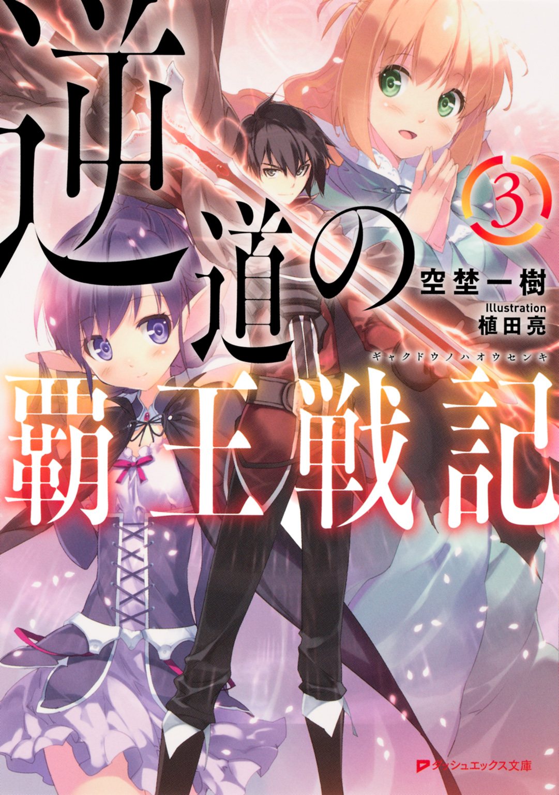
この本は縦書きでレイアウトされています。
また、ご覧になる機種により、表示の差が認められることがあります。
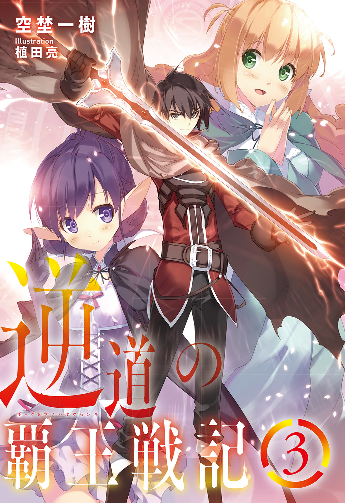
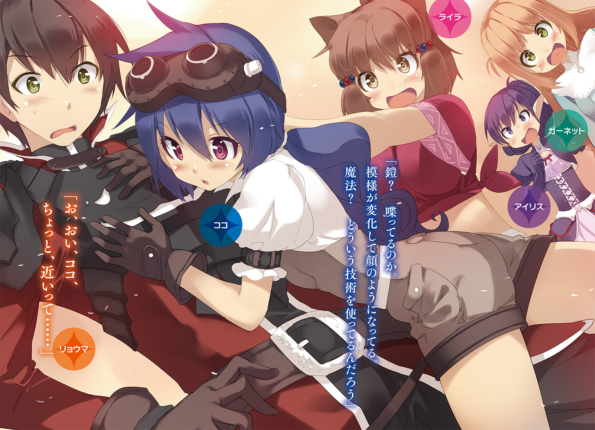
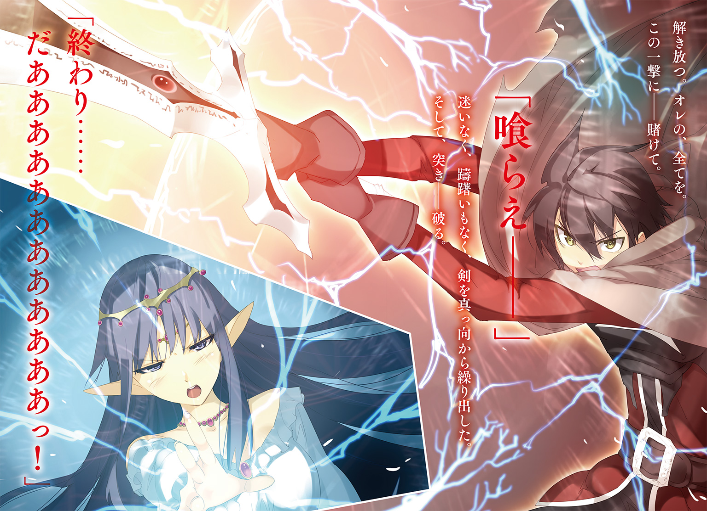
 ダッシュエックス文庫DIGITAL
ダッシュエックス文庫DIGITAL
逆道の覇王戦記３
空埜一樹
第一章 暗雲の街
オレ達が辿り着いた時、街は薄闇に包まれていた。
原因は、空を覆い隠す厚い雲だ。
まるで墨につけたかのような濃さを持つ色は、曇天というよりは黒天といった方が近いかもしれない。
「これは......一体、どうしたというのだ？」
空を仰ぎ見ていたアイリスが、呆然としたように呟いた。
無理もない。初めて見た人にとっては異常な光景だろう。どう考えても、普通の曇り空じゃない。だけど、
「どうもしていないよ。これが、この国じゃ普通のことなんだ」
オレが背後から声をかけると、彼女は驚いたように振り返る。
「『黒霧の国』。それがここ――創族達の国【イルタイン】の別称です」
ガーネットが説明を補足してくれる。
「あれを見てください、アイリス」
そう言ってガーネットが指差したのは、街の中央通りの左右に並ぶ家々だ。
造り自体はティタニアとそう変わらない西洋風の物だけど、一つ大きな違いがある。
どの屋根からも、少々不格好なほど大きな煙突が伸びているのだ。
そこからは常に黒い煙が吐き出されていて、上空へと立ち昇りながらやがては溶け消え、立ち込める雲の一部と化してしまう。
「イルタインでは、あのようにほとんどの家屋から毎日のように煙が大量に吐き出されるため、常に空が暗く翳っているのです」
「なぜそのようなことになっているのだ？」
「創族っていうのは、武器や防具なんかの生産については第一人者でさ。世界中に流通しているもののほとんどはここで作られてるんだ」
ガーネットと交代して、オレがアイリスへ話す。
「だから毎日のように商品を生産したり、あるいは新しい物を研究したりしてる。その過程でああいうふうに特殊な煙が吐き出されるそうだ」
生憎と、どういう過程でそうなるのかまでは、オレも把握してないんだけどな。
「なるほど......納得した。しかし常にこのような薄暗い中では少々、気分が落ち込むのではないか？」
「あー。それは大丈夫だよ。創族の人達って基本的に、外出ないから」
ライラが顔を顰めたままで口を開いた。彼女の性格的にこの街――イルタインの首都、【オレク】の空気は肌に合わないのかもしれない。
「朝から晩まで工房に籠もって延々と何か作ってるんだって。不健康だと思うんだけどねえ」
「まあ、それが彼らの生き方ですから。他国のわたくし達が異議を唱える権利はありませんよ」
苦笑するガーネットに、ライラは「まあ、そうだけどさ」とそれでも不満そうに応えた。
「確かに大通りだというのにほとんど人気がないな......」
周囲を見回しながらアイリスが頷く。
そうなんだよな。初めて来た時も思ったんだけど、本当に人が住んでるのかって思うくらい、道を歩いている誰かの姿を見かけない。精々、首都へ入る前の検問で兵士を見かけたくらいだ。
おまけに彼らですら王様へ会いに来た旨を告げると、そっけなく「城門の前まで行って許可を得てください」とだけ返してきて、元いた立ち位置に戻ると、懐から取り出した何かの道具を弄り始める始末だ。
調べたことといえば、こちらが携帯している武器の数と種類くらいで、オレ達に気づくどころか、何者か問うことすらなかった。徹底的に興味のあること以外への関心がないらしい。
「三年前に知り合った奴の話によれば、一日に数度は外に出るらしいんだけどな。さすがに買い物とかしなきゃいけないからさ」
『要するに必要最低限の目的以外じゃ出歩かないってことじゃねえか。んでずっと家に引きこもってトンカンやってんだろ？ 陰気そうな奴らだな』
「もうちょっと言い方ってモンがあるだろ......」
ため息をつきながら、オレは胸につけた鎧、マンゲツの表面を軽く叩いた。まあ、オレも明確な反論ができないところはあるんだが。
ただ、実際のところ、研究肌の人達なんてそんなものなのかもしれない。
「とりあえず、王城はこの通りを真っ直ぐ北へ向かった先にある。行こうか」
オレは声をかけて、ゆっくりと歩き始めた。
「リョウマのリベリオンを造ったのもこの国の者達だったな？」
アイリスが小さな足取りでついてきながら、オレの右側に並ぶ。
「ああ。正確に言うと中心になっていたのが、だけどな」
「ただ、計画の立ち上げから各員への指揮まで全てを取り仕切っていたのは創族の方々でしたから、彼らが造り上げたと言っても過言ではないかもしれません」
左側に並んだガーネットの話に、アイリスは感心したような表情をした。
「リベリオンの性能を見るに、やはり創族とはすごい技術を持っているのだな。上手く我が国と協力を取りつけられればいいのだが......」
「うーん。それはどうだろうねえ」
オレの前を歩くライラが振り返り、腕を組んで難しい顔をする。
「事によっては、ティタニアとかシュトルライデンよりややこしいかもしれないよ？」
「そ、それはどういうことだ？」
不安がるように、アイリスが眉を顰めた。
「なんていうかさあ。創族の人達ってややこしいんだよ。すぐよくわかんないこと言い出すし。なんだっけ。蜜液にならないとか、甘露的じゃないとかさあ」
「か、甘露？ 蜜液？ ......食べ物のことならなんとかなりそうな気もするが」
ライラの言葉に、なぜか打って変わって自信ありげな態度になる食いしん坊アイリス。
「利益と論理的、な。要するに、自分達にとっての理屈に合わないことや、得にならないことに関しては絶対にうんと言わないってことだよ」
「食べ物のことではなかったのか......」
オレが訂正すると、アイリスは途端に落ち込んでしまう。食べ物以外のことにも、もうちょっと自信もっていこうな。
「相手がどれほど困っていようと、重い事情を抱えていようと、彼らは感情論だけでは動きません。自分達にとって不利益を被る者であれば、すぐに関係を断ち切ります」
「むう......それは、ライラの言う通り、少々交渉が難航しそうだな」
ガーネットの話を聞いて、アイリスは唸ったまま考え込んでしまった。
「我がガルフレアは残念ながら、協力関係を結んだ国に対して何らかの益を与えることはできない。そもそも自国が成り立たなくなりつつあるからこそ、こうして各地を回って手を貸してもらえるよう頼んでいるわけだからな」
「だからややこしいって言ったんだよ。創族って別に他人がどうなろうと知ったことじゃないって人達だからねえ」
「おいおい。それは言いすぎだろ」
ライラの発言にオレは思わず創族の人達をフォローしようとしたのだが、彼女は首を傾げて言った。
「でも三年前、一緒に旅した時はそんなところなかった？」
「うっ......」
それは、まあ。いや、でも、そこまでじゃなかったはずだ。
「す、少なくとも、他人をどうでもいいなんて思ってなかったと思うぞ。まあ、ちょっとだけ、自分を優先するところはあったかもしれないけど......」
『根暗で冷酷で拝金主義ってか。なんか転げ落ちるように創族への評価がだだ下がってるわけなんだが』
「だから、誤解だって！ そんなに悪い人達じゃないから！」
必死で擁護するオレを、マンゲツは『ふーん』とまるで信用していないような横線の目で見てきた。
「ライラの言い分は少々、主観が入りすぎている気もしますが......いずれにしろ、創族の方々が、帝国の置かれた現状を見て協力を受け入れるというのは考えにくいことかと思います」
ガーネットが眉間に皺を寄せながら零す。
「ガルフレアと手を結ぶことで利を得るものがある、という証明が必要ということか。さて、どうしたものか」
アイリスが視線を上げながら思い悩む様子を示した。
空は変わらず、こちらの焦燥を煽るように不穏な黒雲が支配している。
「ひとまずは会って話をしてみよう。考えるのはそれからだ」
オレはアイリスの肩を叩いて、気軽な調子で言った。
彼女に必要以上気負わせないよう、わざと明るい口調にしたんだが――。
実のところオレも、話をどうやっていい方向に持っていけばいいのか、皆目見当がついてはいなかった。
――が。
事態は予想外な方向に展開する。
「別に構わんよ」
身分を明かして王との対面を望み、通された謁見の間。
こちらの要求に対して返されたのは――そんな言葉だった。
「へ......？」
思わず間抜けな声を漏らしたオレに、目の前で玉座に腰かけた男の人はもう一度繰り返す。
「だから。別に構わんと言った」
ルーベンという名を持つ彼は、ひどく小柄で顔も幼いために、まるで子どもみたいに見える。だけど、正真正銘、れっきとした大人だ。しかも五十歳ほどの。
更には――創族達の国を統治する王でもある。
これは、別にルーベンだけに限った話じゃない。彼の周りにいる兵士達も、もっと言えば検問や城門前で会った番人達もそうだった。
創族達は、体が大きく成長しない種族で、顔つきも子どもの頃からさほど変わらないそうだ。
ライラみたいな戦族とは正反対ということになる。
「え、あの......いいんですか？」
信じられなくてもう一度、確認してしまう。するとルーベン王はにわかに顔を顰めた。
「同じことを何度も言わせないでもらおう。時間の無駄だ」
「申し訳ありません、国王。ですが、あまりに容易に申されたもので、少々戸惑っておりまして」
頭を下げたガーネットに、ルーベン王は肩を竦める。
「悩んだ末に遠回しに言おうが即座に簡潔に述べようが、結論は変わるまい。我が国と協力関係を結びたいと申されたガルフレアの要求は、全て受け入れる。これにて帝国と我が国は対等な立場となり、無論、現在、貴国に課している賠償金も今後は払わなくてもいい」
「なんと......まことか、国王！」
アイリスが身を乗り出して目を輝かせた。手間取るかもしれないと思われた話し合いがあっさりと、それも予想以上の成果を得られたんだから、そうなるだろう。
「ふーん。珍しいこともあるもんだね。一体どういう風の吹き回し？」
ライラが頭の後ろで手を組んで、意外そうな口調で訊いた。
「ライラ、失礼ですよ......！」
ガーネットに注意されるも、ライラは特に気にする素振りもなく彼女の方を向く。
「だって創族が何もなしに手を貸すなんて珍しいからさ。裏でもあるのかと思って」
それはそうかもしれないけど、あまりにも率直すぎやしないか。
「別に裏などない」
だがルーベン王は不愉快に思った様子もなく、玉座に肘をついたままで言った。
「単にこれ以上帝国から金を徴収することは不可能だと思っただけだ。そもそもガルフレアに対して【四大聖国】が莫大な損害賠償を課したのは、帝国が持ち得ていた力を削ぐためでもある。貴君の話を聞く限り、それは既に達せられたようだ。だとすれば、今の関係を続けていく意味もあるまい」
......なるほど。理にかなってはいる。
「加えてそちらにはかつて我々に協力をしたクロセリョウマがいる。三年前、我々は彼によって大きな利益を得た。しかしそれを還元してはいない。これは創族にとってはいささか主義に反することだ。我々は理屈に合うことや利になること以外では動かないが、それは相手にも作用する。こちらの利になった相手へは同じく利で返す。そういうことだ」
「......つまり、リョウマ様が三年前にそちらを助けたお礼ということですか？」
ガーネットが伺うと、ルーベン王は少しの間黙り込み、やがて片眉を上げた。
「そういう解釈でも構わない」
アイリスがオレの方を向いて、笑顔を見せる。
「お前のおかげだ、リョウマ！」
「いや、オレは別に何もしてないよ。アイリスの説得が通じたんだろう」
三年前も、別に恩を押しつけるつもりで皇帝討伐に乗り出したわけじゃないしな。
「なにを言う。感謝するぞ、リョウマ」
嬉しそうにこちらの手を握り、ぶんぶんと勢いよく振るアイリス。まあ......結果的に上手くいったなら、よかったかな。
「よかったね、アイリス！ こんなに早く解決するとは思ってなかったよ！」
ライラに抱き締められ、アイリスは「ああ、本当だ。ライラにも礼を言うぞ！」と口元を綻ばせる。
ガーネットもまた、ほっとしたように、そんな二人を見つめていた。
「ただ、帝国への援助ということに関して言えばいささか条件がある」
しかしそこで、ルーベン王が再び口を開く。
「帝国が復興した際には、こちらの援助した額の倍を支払ってもらいたい。つまりは譲渡ではなく貸し付けということだ。構わないな？」
「なにそれ。ケチくさい！ 気前よくばーんとあげなよ！」
ライラが不服そうに頰を膨らませるも、ルーベン王は意に介さなかった。
「我等は絆や信頼といった目に見えぬモノで満足している戦族とは違う。行動を起こすからには最終的に己にとって益にならねばならぬのだ」
「だけどさ、そういうのって――」
「いや、いいのだ、ライラ」
尚も食ってかかろうとしたライラを制して、アイリスが前に出る。
「承知した。では帝国が復興し、民が元の小国であった時のように暮らしていけるようになった時点で、支払わせてもらう」
「......いいのか？ アイリス」
大変な金額になってしまうかもしれないけど、と尋ねると、彼女は笑みを浮かべたままで頷いた。
「元々無理を聞いてもらっている身だ。それくらい、構わない」
「......いいだろう。では帝国との協力を結ぶことをここに宣言する。まあ、金はすぐにとはこちらも言わない。少しずつ返してもらえればそれでいい」
「ご配慮に深く感謝を」
アイリスが丁寧な仕草で頭を垂れると、ルーベン王もまた小さく顎を引いた。
それによって――。
意外なほど迅速に、イルタインとガルフレアとの和平は、締結を迎えたのだった。
......最後はちょっと引っかかったけど。
アイリスが納得したのなら、まあ、いいか。
「さて、どうしたもんか......」
城を出たところで、オレは......いや、オレ達は途方に暮れていた。
別に、やることがなくなってしまったわけじゃない。
かつて皇帝討伐に乗り出し、その功績によって世界的に大きな影響力を持つようになった【四大聖国】は名の通り、四つの国だ。
人族の【ティタニア】、戦族の【シュトルライデン】、創族の【イルタイン】。
そして――。
「神族の国【ファレーナ】......ですか」
ガーネットが呟いた。
そう。残されているのは、その、たった一国だ。
だけどファレーナに関しては、他の三国に比べてやや、というか、かなりハードルが高かった。それも、単純に交渉することに手間がかかりそうだということじゃない。
「神族って、よっぽどのことがない限り、他の種族との関わりを断ってるんだよねえ」
ライラが珍しく眉間に皺を寄せながら零した。
......まさにその通り。問題は、それなんだ。
神族は魔法ではなく『輝術』と呼ばれる違った力を使う。
それは遙かな昔にこの世界の創造主アラムヴェルトから与えられたもので、彼らはそのことから自分達を神様の使いみたいに思っているところがあった。
だからこそ、普段、神族は『俗世の穢れに染まらないように』という理由で山の奥深くの里に籠もったまま滅多に外に出てこないし、こちら側からの接触も強く拒んでいる。
三年前のガルフレア攻略の際には、彼らもさすがに他人事ではないということで自らの意志によって協力を申し出てくれたんだけど――。
今回は、多分、無理だろう。神族がこちらに手を貸すどころか、会ってくれる理由すらない。
「そもそも神族の住んでいるところがどこにあるのかさえ、あたしは知らないんだよね」
「わたくしもそうです。というよりも......この世界において、彼らの故郷を知る者は神族以外いないのではないでしょうか」
ライラとガーネットの会話に、オレは、そういえば、と思い出した。
オレが以前こちらの世界に来た時も、神族達は代表者が何人かティタニアに駐在していただけで、自分達の国には一度も立ち入らせようとはしなかった。
『徹底的な秘密主義ってことか。気に入らねぇな。でも、だったらどうすんだ。手がかりもないのか？』
「今のところはまったく。というか、イルタインとの交渉がこんなに早く解決するとは思ってなかったんだよな。これまでと同じか、それ以上に時間がかかると思ってたから、そっちはあと回しにしてたんだよ」
マンゲツへと返しながらオレは頭を搔く。問題を先送りにしてたツケが回ってきてしまったということか。
「そういえば......確かアイリスのお母上様は神族とのことでしたね。何か聞いてはいないのですか？」
ガーネットに話を振られたものの、アイリスは困惑した表情を浮かべた。
「うむむ。役に立てず申し訳ないと思うが、実はまったく知らないのだ。母上が私の元からいなくなったのが幼い頃ということもあるが、共に暮らしていた時の記憶でも、一度たりとて昔のことを語ったことはなかったように思う。それどころか、帝国へ来る前の――つまり父上と出会う前のことについて触れるのは、あまり好ましく思っていないような節もあった」
ふうん。なにか深い事情でもあるのかな。
......よく考えてみれば、ほとんど外界と関わらないはずの神族の女性が人族の男性と結婚してるんだ。何もないはずはないか。
「だとすればどうしようもないね。どうする？ シュトルライデンに戻って、トト様とかに何か知らないか訊いてみる？」
「時間はかかるかもしれないけど、それしかないだろうな。というか、はじめからそうしてればよかったんだよな」
ライラの提案にオレは自分の失態を悟った。目の前のことをなんとかするのに夢中で、まるで思い当たらなかったのだ。
「仕方ありませんね。そうすると致しましょう。とはいえ、さすがに今日はもう遅いですから、出発は明日にしましょう。宿を取りに参りましょうか？」
背後を振り向きながらガーネットが言った。街に来た時と同じ黒色の空だけど、少しだけ空いた隙間から紅色の陽光が漏れ差している。そろそろ日暮れが近いのかもしれなかった。
「そーだね。ご飯食べたいよ」
ライラがお腹を摩りながら笑った途端、ぐりぎりりりりりあいぎりりりぎゅうううう、という凄まじい音が聞こえてくる。
「......う、うむ。そうだな。そうするとしよう」
気まずさを誤魔化すようにしてアイリスが踵を返した。いや、もうバレバレなんだけどな。毎度のことながら、すごいお腹の音だな。
「......あ。でもその前に、ちょっといいかな」
歩き始めたみんなに、オレは声をかけた。
「まだ夜まで少し時間はあるし、会いたい人がいるんだけど」
「うむ？ 誰にだ？」
振り返ったアイリスに答える。
「ほら、城へ入る前に言っただろ。リベリオンを造る時に創族の人達がかなり貢献してくれたって。その時、中心的な立場にいた人達がこの首都に住んでるんだ。せっかく来たんだから、挨拶くらいはしておこうと思って」
「ああ、そうですね。わたくしも会うのは久方ぶりですし、顔を合わせたいです」
ガーネットはすぐに同意してくれたけど、もう一人は明らかに嫌そうな顔をした。
「えー。別にいいんじゃない？ わざわざ会わなくても」
「いやいや。そんな冷たいこと言うなよ、ライラ。オレにとってはこんな機会、二度とないかもしれないんだしさ」
「それはそうだけどさあ。あたし、なーんか、あの一族......特に末っ子とは相性悪いんだよねえ」
ぶつぶつと呟きながら、ライラは口をへの字に曲げる。
誰とでもすぐに打ち解けられるライラにしては珍しいけど――まあ、別に彼女だけに限った話じゃなかった。
自分の直感や印象に判断を委ねることが多い戦族と、理屈ありきで動く創族は、どうにも反りが合わないようなのだ。
文系と理系みたいなもんかな、と思ったけど、ちょっと違うかもしれない。
ともあれ、三年前もライラを始めとした戦族と創族はよく喧嘩をしていたことがあった。
「まあまあ。ライラだって長いこと会ってないんじゃないか？ 時間が経てば変わることもあるし、案外大丈夫かもしれないぞ」
オレのとりなしに、ライラは「うーん」と納得していないふうだったが、やがて諦めたように頷いた。
「私も是非、会ってみたいな。リョウマのリベリオン製作に携わった者なのだ。きっと興味深い話が聞けることだろう」
アイリスは至って素直に了承してくれたので、オレはありがとう、と礼を述べる。
『なんか根暗で常に俯いててぼそぼそ聞き取れない喋り方して、服装も地味でたまに唐突に変なことで笑いだす奴らなんじゃねーだろうな。だったらごめんだぜ、オレは』
「どっから出てきた偏見なんだよ、それは......。いいから、お前は静かにしてな」
余計なことを喋るマンゲツをたしなめつつ、オレは記憶を頼りに視線を向けた。
「確か、家はあっちの方だったよな」
ガーネットが首肯する。うん、正しかったみたいだ。
「それじゃ、向かってみるか」
オレはみんなと共に向きを変え、懐かしい相手へと想いを馳せながら歩きだした。
「......ん？」
が――すぐに足を止め、振り返る。
「どうした？ リョウマ」
「いや......」
アイリスが声をかけてくるのに、オレは首を傾げつつ、辺りの様子を窺ったあとで、
「うん、なんでもないよ」
そう答えると、再び前を向いて進み始めた。
なにかさっき、誰かに見られてる気がしたんだけど――。
気のせいだな、多分。
※
「......完全に気配を消したつもりではあったが。さすがに英雄と呼ばれるだけのことはあるか」
女は、消え入る寸前の声で囁いた。
オレクに建つ建物の中でもひときわ高い部類にある家の屋根からは、眼下に広がる光景がよく見える。
英雄クロセリョウマとその同行者達、加えて皇帝グレディスの娘アイリスは、共にいずこかへと去っていった。
「如何なさいますか？ フェイ様」
背後から仲間が尋ねてくるのに、女――フェイは静かな口調で返す。
「まだ早い。機会を窺い、もっとも適した時を狙って仕掛ける」
相手はあのグレディスを倒した輩だ。下手な手を打ったところで返り討ちに遭うのが落ちだろう。だとすれば、判断は慎重にしなければならない。
「それまでは監視を続けることとする。お前達は散って街に潜伏しておけ」
「――御意」
わずかな空気の乱れと共に、仲間達が場から消えたことを知った。
フェイは首に手をやると身に纏っていた衣服の襟を引き上げ、口元を覆い隠す。
「......いずれ、お迎えに上がります」
くぐもった声で呟き、うずくまると、フェイは続けた。
「それまで今しばらくお待ちください。――アイリス様」
勢いよく屋根を蹴ると、体を縛りつける鎖から解き放たれたように軽やかに跳躍する。
やがて――フェイは、家々の屋根を跳び渡りながら移動を始めた。
※
中央広場からそう遠くない場所に、目的の家はあった。
建物自体は他と同じような形をしているけど、少し大きめで、煙突から吐き出されるものも一層濃くて量が多い。
「すみません、誰かいますか？」
オレは扉をノックしたが、しばらく待っても返事はなかった。
「留守なのでしょうか？」
「だったら帰ろうよー」
ガーネットの疑問にライラはオレの腕を引っ張った。
「まだわかんないって。もうちょっとだけ待ってくれよ」
頼んでからオレは再度、木製の扉を叩く。
が、やっぱり、誰の声も聞こえてこなかった。
「おかしいな......出かけてるのかな」
創族の性格からして、高確率で家にいるはずなんだけど。
「......あれ？」
試しにノブへ手をかけてみて、オレは目を瞬かせた。
すんなりと回ったのだ。鍵が開いている、ということになる。
「開けっ放しで外出したというのか？ イルタインは随分と安全な国なのだな」
驚いたようにオレの手元を見つめるアイリス。いやいや。さすがにそれはないって。
「あのー。誰かいますかー？」
ドアの隙間に顔だけ入れて、声をかけてみた。
だけど、室内は静まり返っていて、誰かがいるような様子はない。
......いや、待てよ。
「なにか聞こえないか？」
オレはみんなに言ってから耳を澄ませた。
「あら、本当ですね。なにやら金属を叩くような音が......」
ガーネットが同意すると、アイリス達もまたそれぞれ首肯する。
「......入ってみるか」
少々無作法だけど、怒られたら謝ろう。
オレは家の中に足を踏み入れた。
まず目に入ったのは、暖炉のある居間らしき場所だ。机と椅子に、戸棚と最低限の家具がある。だけど、言ってしまえばそれだけだ。暮らしに必要なものだけとりあえず揃えました、という感じだった。
おまけに何やら妙な臭いがする。原因はその奥のキッチンにあった。
皿が山積みになってるんだが、全部が溜めた水に浸けてあるだけでろくに洗っていないから、こびりついた食べカスやらなんやらが腐ってきているらしい。
しかも肉や魚の骨から野菜のクズみたいなものが端っこに山となっていて、それらも全部、いい具合に混じり合って酸っぱい臭いを醸し出していた。
「わー。なにこれ。くっさい！」
ライラが鼻を押さえてしかめっ面をする。人一倍鼻が利く彼女のことだ。多分、オレ達が感じている数倍以上のものを嗅ぎとっているに違いなかった。
「恐らく、どこかの店で買った物を食べて、そのままゴミを適当に放置しているのでしょうね......物作りに夢中になると他のことがおろそかになるのは、創族の特徴です」
口元を手で押さえながらガーネットが分析する。
「それにしても、ひくしゅっ、これはさすがに、へくちっ、ひどいのでは、はしゅふっ、ないのか？ ――へしゅひちっ」
臭気に刺激されたのかアイリスがくしゃみを連発した。......最後のはくしゃみでいいんだよな？
「あー。もう。我慢できない。片っ端から洗う！」
ライラが腕まくりをすると、キッチンへと突撃した。傍らへ無造作に投げ捨てられていたスポンジを手にとると、石鹼を泡立てながら皿を洗い始める。その動きは結構、手慣れていた。
『へえ。ガサツそうに見えて意外に家庭的じゃねえか。見直したぜ』
マンゲツが失礼な物言いで褒め称える。
「料理してるとね、後片づけする癖が自然に身についてくるんだよ。特に野宿が続くと食器は同じ物を使わないといけないからね」
瞬く間に綺麗になったお皿を横に積み重ねていきながら、ライラはこちらを振り向いた。
「ね、だからリョウマ、あたしを奥さんにすると、助かっちゃうよ。他の家事だって大体できるんだから」
「なっ――しょ、少々お待ちください。わたくしも手伝いますっ！」
ライラの発言に顔色を変え、ガーネットは飛ぶようにしてキッチンへと向かうと、皿の一枚を手にとる。
「こ、この程度、わたくしの手にかかれば造作もありません。ほら、こんな簡単に」
がしゃがしゃがしゃがしゃがしゃがしゃがしゃんっ！
「......割ることができます」
「あーあーあーあー。もう、素人が手を出すからそういうことになるんだよ」
ライラは呆れたようにして、身を屈めると皿の破片を集め始めた。
「お姫様は大人しく給仕を待ってた方がいいと思うよ」
「な、なにを言いますか。ライラだって姫でしょう！」
「あたしはしょっちゅう里の外に出てるから、一人で身の回りのことしてるんだよ。無理して怪我しちゃ危ないよ？」
大き目の欠片を一つ所へ寄せると、ライラは壁にかけてあった箒をとって細かいものを掃き始めた。
「むうううううううううううう」
滅茶苦茶頰を膨らませていくガーネット。
「お、落ち着けってガーネット。別にオレは、女性が家事できなくてもいいと思うぞ。男がやればいいんだしさ」
慌ててフォローしたが、ガーネットはそれでも不満そうにライラのことを見つめていた。
がっしゃんがらがらがらがしゃんっ！
「はわわわわわわ」
「で、アイリスは何やってるんだ!?」
いつのまにか見えないところでお皿を派手に何枚も破壊し、転がっていく無事な一枚を追いかけていたアイリスに、オレは突っ込んだ。
「い、いや、私も挑戦しようと思ったのだが、なぜか手がつるりと滑ってこのように......リョウマ、私が考えるにこの皿は、きっと生きているぞ！」
「生きてたらそもそも自分で死ににはいかないだろ......」
『自殺願望の皿だったのかもしれねえ。皿社会の闇を垣間見たな、お嬢』
わけのわからない発想をするマンゲツ。
「なんと。待て。待つのだ。お前にはまだ未来がある。そう死に急ぐものではないあーっ！」
最後の一枚、ご臨終。
「ある意味、地獄絵図だな......」
一体なぜこんなことに、と嘆きながらオレはアイリスの割った皿の破片を回収し始めた。
と、そこで――。
「なんだい、さっきからうるさいな」
扉の開く音がして、奥の方から誰かがやってきた。
「人が新しい作品を作っているっていうのに、全然集中できないじゃないか」
そう言って姿を見せたのは、女の子。それも――懐かしい顔だ。
腰辺りまである藍色の長い髪を首の辺りで適当に縛っていて、瞳は赤。少々色落ちしたシャツの上から、オーバーオールのようなものを身に纏っている。
目はやや鋭く、唇が尖り気味なので、どこかふてくされた表情をしているように見えた。
顔つきが幼くて背も低いので子どもみたいに見えるけど、実際には彼女はオレと同じ歳だ。
「ココ！ 久しぶりだな。オレだよ、リョウマだ。覚えてるか？」
声をかけると、彼女――ココ＝エヴァンスはこちらを向いて、片眉を上げた。
「あれ、誰かと思ったらリョウマか。キミ、元の世界に帰ったんじゃなかったっけ？」
「いや、ちょっと事情があって戻ってきたんだ。で、オレクに来たから寄ってみたんだけど......」
「ふうん、そう。で――なに、この状況は？」
首を傾げて、部屋に散乱している皿の残骸を指すココ。
「申し訳ありません、ココ、わたくし達がお皿洗いに失敗してしまったせいで......」
申し訳なさそうに縮こまるガーネットとアイリスを見て、ココはしばらく黙っていた。
が、やがて、
「あ、そう。まあ、いいや。片づけておいてね。ボクは作業の続きがあるから、これで」
そう言い残すと、踵を返して戻ろうとした。
「ちょっと、ちょっと。せっかく訪ねてきたのにそんな冷たい態度とることないじゃない」
が、ライラが駆け寄って肩を摑んだので、ココは顔だけを彼女へと向ける。
「あとちょっとで新作が完成しそうなんだよ。突然来て邪魔しないでくれるかな」
「なに、それ。三年前に一緒に旅した仲でしょ？ もうちょっと愛想よくしてくれてもいいと思うけど」
「愛想をよくするというのはこちらの判断によってなすもので、強制されるものじゃないだろう。礼儀を欠いた態度をとられたと思うのであれば、キミがその程度の価値しかないということじゃないかな」
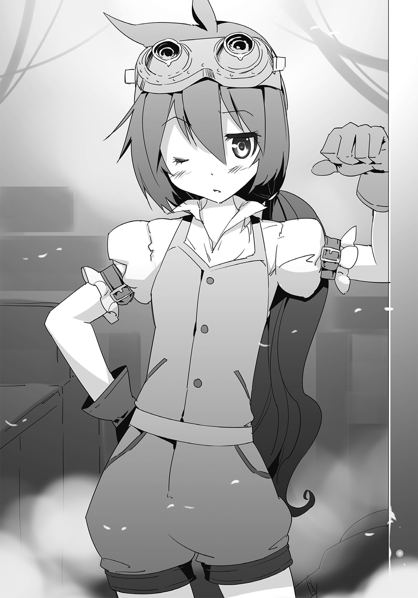
「なにー！ 相変わらず失礼な奴！」
「極めてまっとうな反論をしたまでだよ。キミこそ相変わらずすぐに感情的になるな」
「ほっといてよ！ それにあたし達はともかく、リョウマがいるんだよ、リョウマが！ あんまりにもそっけないと思わないの？」
「ああ......まあ、それもそうか」
ココはオレの方を見ると短く言ってきた。
「久しぶり、リョウマ」
「あ、ああ、久しぶり」
「元気だったかな？」
「まあ、それなりには」
「それはよかった。じゃ」
「まてまてまてまてまてーい！」
会話を早々に切り上げて去ろうとするココだったが、ライラに遮られてしまう。
「なんなんだよ、キミは。ちゃんと旧交を温めただろう」
「あれは旧交を温めたって言わない！ もっと、こう、積もる話もあるでしょう!?」
「別にない」
「あるよ！」
「ない」
「ある！」
「ない」
「あーるー！」
「ま、まあまあ」
ライラが今にも嚙みつかんばかりに怒り出したので、割って入った。
「確かにいきなり訪れたのはオレ達が悪かったし、抑えてくれよ。な？」
「ううううう。わんっ！」
オレが宥めると、ライラはひと声吠えたあとに、そっぽを向く。
「ごめんな、ココ。確かにいきなりすぎたよ。また機会を改めて訪ねていいかな？」
オレが尋ねると、ココは腕を組んで、深くため息をついた。
「......やれやれ。まあ、別に構わないよ。あとは仕上げだけだったからね」
「そうか。じゃあ、明日、出発前に来るから」
「そうじゃなくて。今。お茶くらいなら出すよ」
「......え？」
意外に思ってオレがぽかんと口を開けていると、ココは肩を竦める。
「申し訳ないことに、両親や兄弟達は全員、材料集めやら道具の出張修理やらで外に出ててしばらく家に帰ってこないから、ボク一人のおもてなしになるけどね。それでもいいのなら」
「あ、ああ、いや、大丈夫。問題なし。ありがとうな」
「気にしなくていい。ま、三年ぶりの知り合いを無下に追い返すのもどうかと思ったしね」
そこ、適当に座ってて、と言い残してココは奥へと消えていった。
「......なんというか、少々淡泊な人物のようだな」
席についたところで、アイリスが小声で話しかけてくる。
「あー。まあ。なんていうか、あんまり人付き合いとか興味ないらしくてさ。割と誰に対してもあんな感じだよ。悪気はないんだけどな」
「だから性質悪いんだよ、余計にっ」
まだ立腹している様子のライラが、机に肘をついてむくれた。
「三年前もできるだけ周りの人と関わらないようにしている節がありましたね。後半になるとわたくし達ともいくらか会話を交わすようにはなりましたが......」
ガーネットが苦笑気味に零す。
「ココは三年前のリベリオン製作の時はまだ職人としても見習いだったんだけどさ。才能があるからって、見識を広めるために、彼女の一族と一緒に旅に同行してたんだよ」
「ほう。それはすごい人物だな。となれば今はかつてより一層腕が上がっていることだろう」
「性格は全然変わってないけどね」
アイリスの言葉にライラが不機嫌そうに付け加えた。
「性格に変化がないのはキミも同じだろう、ライラ」
戻ってきたココが無表情のままで告げる。が、彼女の手は何も持っていなかった。
「あら。てっきり茶葉を取りに行ったのかと思いましたが。そうではなかったのですか？ ココ」
ガーネットの問いかけに、ココは山積みになっている食器の中から器用に四つのカップを取り出しながら答える。
「そのつもりだったんだけど、三日前に切れたままだったのを思い出したよ」
次いで皿なんかが入っているところとは別の桶にカップを突っ込んでいくと、彼女はそれらをどんどんと机の上に置いた。
「というわけで、水をご馳走しよう。......異論は？」
目の前でたゆたう水面を見つめながら、オレは思わず噴き出してしまう。
「......ありません」
ここまで堂々としていると、いっそ清々しかった。
第二章 生きた迷宮
「キミは随分と非合理な生き方をしているんだね」
それが、ココから初めてかけられた言葉だ。
三年前の皇帝討伐の旅は、【四大聖国】の代表者に加えて色んな役目を持つ人達がいて、今と違って大勢のメンバーで構成されていた。
だからとてもじゃないけど全員としっかり話をすることなんてできなくて、特に創族の人達っていうのはあんまり自分達以外の種族と関わり合いを持たないようにしていたから、輪をかけて接触がなかったのだ。
そんな中、オレはある魔獣との戦いの中で仲間の一人を庇い、傷を受けてしまったことがあった。
その治療をしてもらいがてら、昼の休憩をとっている時に、近寄ってきたココが不意に話しかけてきたのである。
「非合理って？」
不思議な顔をしたオレに、ココは軽く息をついて腰に手を当てた。
「キミが助けたのは護衛役の兵士だ。つまりキミをはじめとしたお偉い方々の命を死守するために存在している。それなのになぜキミが彼を庇って怪我をする必要があるんだい？」
「なぜって......」
そんなことを考えたこともなかったオレは、しばらく答えを探してから言った。
「......危なかったから？」
「理解不能だね」
オレの隣に腰かけて、ココは呆れたように首を横に振る。
「仮に彼が先ほどの戦闘で傷つく、あるいは最悪死んだとしても、それは己の役目に従ったにすぎない。別に庇う必要なんてなかったんだよ」
「でも、攻撃を受けそうになってる仲間がいたら助けるだろ。おかしいかな」
「人間的にはどうか知らない。だけどキミの立場的にはいささか軽率だったと言わざるを得ないな」
こちらを見るココの目には非難の感情が宿っていた。
「リョウマ、キミはボク達にとって極めて重要な存在だ。この世界を皇帝の支配から解き放つには、どうしたってキミの力が必要だからね」
「うん......まあ、そうみたいだな」
それに関しては反論するつもりはない。最初は戸惑っていたけど、旅が長く続くうちにようやくその立場に慣れつつあった。
「転じてさっきキミが助けた兵士はどうか。たとえ彼がいなくなったとして、戦力の低下には繫がるだろうけど、即座に窮地には陥らない。いざとなればどこかの国から人員を補充するだけだ」
「......なにが言いたいんだ？」
「兵士の代わりはいてもキミの代わりはいないってことだよ」
ココは強く、叱りつけるような口調で言う。
「クロセリョウマという人間は、何十、何百、何千という兵士に勝るほどに貴重な人材なんだ。そのキミが、もし単なる雑兵にすぎない彼を助けて重傷を負ったら、まして、命を落としたりなんかしたら、どうなる？ この旅は意味をなくしてしまうんだよ」
「だからさっきは見捨てるべきだったっていうのか？」
「率直に言えばそうだ」
「だけど――」
「だけど、じゃない。キミはもっと自分の立場を自覚するべきだよ」
オレの言葉を遮ってココは続けた。
「ボク達創族は、効率的な生き方を好む。論理の通じる選択を重んじる。それは手間なく、無駄なく、正しい手順で物事を終えるためだ」
「......オレの行動は正しくなかったっていうのか？」
「ボクからすればね」
ココは立ち上がって、オレを見下ろしてくる。
「キミの迂闊な行動で、皆で積み重ねてきた全ての努力が水泡に帰してしまうこともある。だから気をつけてほしい。ボク達の目的は皇帝を討伐することだ。その達成を邪魔するものはたとえキミであったとしても許されない」
オレは自然と腕を押さえていた。先程負った傷が痛む。
「さっきの兵士のことだけじゃない。キミはとかくそういった、非合理的で感情的な動きが多い。だからそれを注意しに来たんだ。合理的で、無駄のない、美しい生き方を頼むよ。――異世界の英雄、クロセリョウマ」
前を向き、用事は済んだとばかりに、ココが歩き始める。
オレはしばらく彼女の背を見つめていた。
だけど――頭上を仰ぎ、息をついて、静かに零す。
「ごめん、無理」
ココの足が止まった。振り返り、怪訝な顔を向けてくる。
「元の世界でもそうだったんだけどさ。オレってお人好しってよく言われてたんだよな」
オレは立ち上がり、視線の先を、昼食をとっている人達へとやった。
「他人のために動いて損ばかりしてるとか、そんなことしても見返りなんかないんだからやめろとか、悪い奴らに利用されるぞとか。友達にも色々とアドバイスもらったよ」
「どれも正論だね。それだけ言われても改めないのはどういうことなんだい？」
「改めようとはしたさ」
オレも子どもじゃないから、善行が全部報われるなんて信じていたわけじゃない。
『情けは人のためならず』なんて言うけど、実際、誰かに親切にしたところで自分のところへ回り回ってなんかこない。寧ろ、結果的に不幸になったことの方が多かった。
「......だけどさ。どうしてもやめられないんだよな」
苦笑して、オレは、頭を搔く。
「車の通りが多い道を渡ってるおばあさんがいたら手を引きたくなるし、道に迷ってる人がいたら案内したくなる。お母さんとはぐれてる子どもがいれば一緒に捜したくなるし、誰かに殴られてる人がいたら、喧嘩もできないのに助けに入りたくなる。考える前に、動いてるっていうかさ」
ダメだって思ってても、気づけば誰かに手を差し出しているんだ。
「で、何かしっぺ返しを受けたら当然、後悔するんだけど。また同じような状況になったら、同じようなことをしてる。......多分、性分なんだよ。これは」
自分にとって、逃れられないようのものなんだ。
「だから、オレはもう諦めたんだ。誰かにバカにされたり怒られたりしても、やるしかないんだろうなって。もちろん、周りの人を心配させないように、自分の身は大事にするけど。それが大丈夫な範囲で、困っている人がいたら助けるんだよ」
オレはココに対して、深々と頭を下げた。
「だから、ココの言うこともよくわかるんだけど、ごめん、無理だ。オレは自分がどうとか相手がどうとか関係ない。目の前で傷つきそうになってる人がいたら前に出るよ。――そういう生き方しか、できないんだ」
ココは無言で佇んでいる。オレはまた怒られるんじゃないかって、ひやひやしていた。
だけど、
「......理解不能だね」
肩を竦めて首を振り、ココは言った。
「まあ、ボクの忠告がキミにとって意味をなさないというのなら、これ以上は何も言わないよ。精々気をつけるといい。ただし――」
こちらに対して真っ直ぐに指を突きつけてきながら、
「キミの生き方を肯定したわけじゃない。他の人達はともかく、ボクはいいとは思えないし、認めないよ。それだけは自覚しておいてほしい」
「あ、ああ。わかったよ。その......気遣ってくれて、ありがとうな」
オレの無茶を心配して戒めてくれたんだろう。
そう思って返した言葉だったんだけど、
「......さっきまでのを気遣いととるのか。なるほど。確かに『お人好し』だ」
ココは複雑な顔をしながらぼやいた。
「ん、なんか変なこと言ったか？ オレ」
きょとんとしているオレに対して、ココは長いため息をついてしばった髪を揺らし、前を向く。そして、
「別に。お気楽でいいと思っただけだよ」
一言だけ残すと、オレの元を去っていった。
以来――ココはなにかといえば、オレの傍にいるようになる。
会話を交わしたことでいくらか打ち解けてくれたかと思ったのだけど、彼女曰く『いざという時にキミの無茶を止めるため、横で監視するだけだよ』とのことで、実際、こちらとの距離感は旅が終わるまで一定のままだった。
まあ、それでも、さすがに長く一緒にいると、オレやガーネット達ともそれなりに話はするようになっていて――ライラとは最後まで相性が悪いままだったけど――。
今回の再会も、オレとしてはやはり、嬉しいものだった。
「ふうん。そんな事情がね」
水の入ったカップを傾けながら、ココが声を漏らす。
旧交を温める中で、オレ達の旅の目的を全て話し終えたところだった。
「アイリス――だったっけ。帝国を復興させるためにかつての英雄であるリョウマを再びこの世界に召喚するというのは、賭けの部分が大きすぎてボクならやらないという点を除けば、そんなに悪くない考えだと思う。無謀なのか何も考えていなかったのかは別として、本当に実行したというのも評価できるね」
「う、うむ。そうか。ありがとう」
褒めているのかけなしているのかいまいちわからないココの物言いに、アイリスが当惑している様子で礼を述べる。
「でも、驚いたよ。ティタニアとシュトルライデンでは、協力を取りつけてもらうのに結構苦労したからさ。なのに、イルタインじゃあっさりと了承してもらったから」
オレが言うと、ココは片眉をわずかに上げた。
「創族は基本的に自分の利益になり、合理的に納得できることがあればどんなものであろうと受け入れるからね。他の種族みたいに、いつまでも下らない因縁や憎悪といった感情に固執していないだけだよ」
「ちょっと、それ、どういう意味？ 戦族が下らないことにこだわってるみたいに聞こえたんだけど」
ライラがむっとした表情になる。
「そう聞こえるように言ったんだから、そう聞こえるだろうね。キミも少しは察しがよくなったとみえる」
「上等だよ表に出ろコンニャロー！」
澄ました顔でココが堂々と言ってのけたので、ライラは椅子を蹴立てていきり立った。
「こら、久しぶりに会ったんだから喧嘩するなって！ ココももうちょっと言い方に気をつけてくれよ！」
ライラを羽交い絞めにしつつオレが注意すると、ココは腕を組んで目を瞑る。
「わかったよ。昔から根が正直なところがあるもので、すまないね。つい真実を口にしてしまう」
「ぜんっぜんっ、反省して、ないっ!!」
「ココっ！」
ライラが今にも暴れそうなのでさすがにオレがちょっと口調を強めにすると、ココはやっと降参したというように両手を上げた。
「はいはい。すまなかったよ。許してほしい。これでいいかい？」
「うううううー......今回だけだからね！」
荒々しく言ってから、ライラは再びどかっと椅子に腰かける。......まったく。一触即発とはこのことだ。
「ところで、ティタニア、シュトルライデン、イルタインと来たのなら、あとはファレーナだけだね。だけどあそこは自分達の住んでいるところを絶対に他種族へは教えない。他国からの連絡を受ける時も、それ専用に設けた施設でするほどの徹底ぶりだ。その辺りはどうするつもりなんだい？」
ココが話題を変えるように問いかけてきたので、オレはガーネット達と顔を見合わせた。
「それが......実は皆目見当もつかなくて、困り果てているところだったのです」
「ココ、お前は何か知っていないか？」
ガーネットが言って、オレが尋ねると、ココはすぐに首を振る。
「さあ。興味もないから調べたこともないよ。アイリスの耳は尖っているけど、キミは神族じゃないのかい？」
「母がそうなのだが、今、消息を絶っていてな。私もよくはわからないのだ」
「だとすればお手上げか。どうしようもないね。諦めた方がいい」
『他人事だと思って随分簡単に言ってくれんじゃねえか。このちびっ子』
突然、マンゲツが声を出したので場が静まり返った。
「......なんだい、それ」
興味深そうにココがオレの胸の辺りを覗き込んでくる。
「オレ達以外の前では大人しくしてろって言ったろ、マンゲツ」
『いつまでも黙ってるのは性に合わねえんだよ、兄弟。それにさっきからこのちびっ子の言い方が冷たくていちいち癪に障ってたんだ。ちょっとくらいいいだろ』
模様の口に当たる部分をへの字に曲げて、マンゲツが抗議してくる。
「鎧？ 喋ってるのか。模様が変化して顔のようになってる。魔法？ どういう技術を使ってるんだろう」
身を乗り出し、ぺたぺたとマンゲツを触り出すココ。
『こら、ちびっ子、やめろ！ 失礼な奴だな。初対面の鎧には礼儀を払えって親に教わらなかったのか？』
露骨に嫌そうな態度を取るマンゲツ。どうでもいいけど、どんな家庭でそんな特殊なこと教えるんだよ。
「喋るだけじゃない。知性があるのか。使い手の意志に反応する武器や防具は幾つかあるけど、こうまで発達しているのは珍しいな。これじゃまるで一個の生命体だ。面白い」
どんどんと距離を詰めてくるココは、しまいにオレの体に半ばしがみつくような形でマンゲツのことを調べ始めた。
「お、おい、ココ、ちょっと、近いって......」
いくら外見が小柄で幼く見えるからといって、ココは同じ歳だし、ここまで密着されると妙な気分になってくる。
「ココ、ちょっと、リョウマ様から離れてください！」
「そ、そうだぞ！ その、少し、遠慮がなさすぎるのではないか？」
ガーネットとアイリスから交互に言われるも、ココはまるで聞く耳を持たなかった。
「材質としては通常と変わらないみたいだけど、この表面の独特の滑らかさと光沢はどうやって出しているんだろう。魔力を帯びさせているにしても、一般市場に流通しているものじゃないぞ......」
夢中になったまま、鎧だけならまだしも、それを繫ぎとめている金具の部分がある辺り――つまりオレの腕やら横腹辺りを丹念に触り始めるので、次第にこちらの体温が上がってくる。
『や、やめろ、あふ、変な所を触るんじゃねえ、あふん、ちょ、やめ、おうふっ』
「変な声出すなマンゲツ！」
オレが言ってるみたいだろ！
「こら、ココ！ 馴れ馴れしいよ！ リョウマが困ってるでしょ！ 早く離れて、ほら！ はーやーくー！」
ライラがココの腕を摑んで引っ張るが、彼女の体はびくともしない。かなりの力が加えられているだろうに、一度興味のある対象を前にした創族の執着は恐るべきものがあった。
「ああ、もう、うるさいなっ。邪魔しないでよ」
鬱陶しそうにライラの手を振り払おうとしたココだったが、さすがにそれはできず、しばらくしてからようやく解放してくれた。
「まったく......少しくらい、いいじゃないか。リョウマ、その鎧はなんなんだい？」
「あ、ああ。マンゲツっていって......いや、正確には『月輪の鎧』っていうんだけどさ。グレディス皇帝の使っていたものをアイリスから借りてるんだ」
首を傾げて訊いてくるココに、オレは、なぜか未だに喘ぐような声を出しているマンゲツを見下ろしつつ答えた。
「そうか、皇帝が装備していたものか......これで合点がいった。魔神の力を使っているとなると、ボク達とは違う工程で作られたのかもしれないな」
『ま、満足したか？ 今度同じことをやったらぶっ飛ばすからな、ちびっ子』
疲弊したのか、マンゲツの脅し文句にもいつもの迫力がない。
「......そういえばリョウマ、リベリオンは持っているのかい？」
それを華麗にスルーして、ココが首を傾げた。
「ん？ ああ、あるよ。ティタニアの宝物庫に保管されてたのを貸してもらってる」
腰から提げていた鞘を外すと、オレはリベリオンをココへと渡す。
彼女は刃を抜くと、それを窓からわずかに差し込む陽光へと翳し、目を細めた。
「うん......。三年前と変わらず、曇りもなければまったく刃こぼれもしていない。さすがうちの一族が総出で造っただけのことはある」
「ああ。改めてすごい武器だと思ったよ。三年前もそうだったけど、今だって何度も助けられてる」
オレが素直に褒めると、ココは刃を鞘へと収め、リベリオンを返してくる。
「間違いなく今まで製作した中で最高の武器だって、両親も言っていたからね」
「三年前は見習いという立場でしたが、今はどうなのですか？ ココ」
ガーネットに質問され、ココはオーバーオールのポケットに手を突っ込んだ。
「一年ちょっと前に国王から認められて、ボクも仕事を受けるようになったよ。今では他の家族と変わらない量をこなしてる」
「へえ、すごいな！ オレと同じ歳なのに、もうプロとして働いてるってことか」
感心したオレに、ココは表情も変えない。
「別に大したことないさ。創族は十五になったら誰だって独り立ちするものだからね」
「仕事を受けているということは、道具を作っているのだな。何が専門なのだ？」
アイリスが言うのに、ココは「なんでもさ」と答えた。
「魔力を使えば効果を発揮する道具や特殊な力を持った武器や防具まで、ひと通りはこなせるよ」
「それは......素晴らしいですね。さすがは創族の中でも名門で知られるエヴァンス家の職人です」
微笑みと共に拍手をしたガーネットに対して、ココは少しだけ顔を背けた。わかりにくいけど、オレは知ってる。それは、彼女が照れを隠すためにする仕草だ。
「ま、それはともかく――リョウマ、どうせ神族の里へ行く方法がわからないのなら、いっそ他のことをしてみてはどうかな」
「他のこと、か？」
なんだろうか。思い当たらないオレにココはこちらの腰辺りを指差してきた。
「たとえば――リベリオンを完成させる、とかさ」
「......へ？」
唐突すぎて、上手く理解できずに、間の抜けた声を漏らしてしまう。
「完成って......リベリオンはもう三年前にできあがっただろ？」
だからこそ皇帝と正面から渡り合って、打ち倒すことができたのだ。
「もちろん、そうだ。でもね。キミは知らなかったかもしれないけど――リベリオンには当初の計画で断念せざるを得なかった部分が残されてるんだ」
「なんだよ、それ。一体リベリオンに何が足りないっていうんだ？」
「ある鉱物だよ。それを使って鍛え直せば、キミの剣はもっと、ずっと、強くなるはずだ」
「ある鉱物......ですか。なんでしょう」
ガーネットが尋ねると、ココは頷きと共に返した。
「虹光石――と、呼ばれている貴重な鉱石だ。ちょっと特殊な条件下で採取しなければならなくてね。三年前の時点ではどう足搔いても不可能で、諦めるしかなかった」
「聞いたことがないな。どこで採れるものなのだ？」
眉を顰めるアイリス。ココが口を開こうとしたが――それより早く別の人物が声を上げた。
「【百年獣】、だよね。ココ」
ライラだ。それまでむっつりと黙り込んでいた彼女が唐突に発言したので、ココは目を瞬かせた。
が、間もなく彼女はゆっくりと首肯する。
「ああ。そうだよ。百年獣――虹光石は、その魔獣が持っている」
「持っているって、ええと、つまり、お宝みたいに隠し持ってるってことか？」
「違うよ、リョウマ。言葉の通りなんだよ」
ライラがオレに説明してくれた。
「百年獣っていうのはね。ものすごく大きな魔獣なんだよ。それこそ、山かと思うくらいにね。でね、名前が示しているみたいに――百年間眠り続けるの。だけど、百年目を迎えたあと、たった一日だけ目を覚まして、起き上がる」
「そして、目覚めた途端、周囲にあるものを何でも吸い込んで食べるんだ。食べて、食べて、辺りが荒野になるくらい食べ尽くして――また、移動して百年眠る。そんな繰り返しをしている魔獣なんだよ」
「はあ......それはまた、スケールのでかいやつがいたものだな」
ライラとココの話から、クジラみたいな外見を想像してしまうオレである。
「その百年獣が虹光石を持っていると言うのか？」
「そ。正確には――自分の体内に、だけどねー」
ライラがアイリスに答えた。
「虹光石はね。百年獣が体の中にのみ込んだ色んなものの中で、溶かしきれなかった、余った部分が少しずつ寄り集まって、百年をかけて凝縮され、固まったものなんだ。どういう過程を経ればそうなるのかはわからないんだけど、それが途方もなく貴重な鉱石になるというわけだ」
続いて、ココが語りを受け継いだ。
「な、なるほど。なんかすごそうなのはわかったけど......そうか。それで三年前の時は無理だったのか？」
オレが前にこっちの世界に来た時は、時間が満ちていなかったってことだよな。
「その通り。虹光石ができるのは百年獣が目覚める直前――ぴったり百年目じゃないとダメなんだ。で、実に都合のいいことに、それが二日後」
「なんと。まるで計ったような時機ではないか。リョウマ、これは行ってみるべきではないか？」
アイリスの言葉に、オレは頷いた。
残る四大聖国があと一つとはいえ、これから先なにが待ち受けているかわからない。
リベリオンにまだ強くなる可能性が残されているっていうなら、試してみる価値はありそうだ。
「ですが、いくら大きいといっても魔獣の体の中にあるものなど、どうやってとればいいのでしょう？ 食べられてしまうわけにはいきませんし」
ガーネットの疑念は尤もだった。しかし、ココはあっさりと答えてくれる。
「ああ、それは問題ないよ。ちゃんと方法はある。ただ......」
「ただ？」
言い淀んだココにオレが鸚鵡返しで尋ねると、
「いや、目的の物を手に入れるのには、少々危険な行程を辿らなければならないかもしれない、ということを警告しておくべきかと思ってね」
彼女は真っ直ぐにこっちを見てきた。
「もしかすれば予想もしないことが起こるかもしれない。それでもやるかい？」
オレは思わずアイリス達の方を向いた。
すると、彼女達の方も同じようにこちらと視線を合わせてくる。
お互いに何も言わず、だけど――しばらくしてから、頷き合った。
「......その手のことは三年前もそうだし、今までだってたくさん経験してきた」
「今更恐れるものはありませんよ。リョウマ様のお力が増すというのなら、いくらでもご助力致します」
「リョウマが向かうというのなら異論はない。私はどこまでもついていこう」
「百年獣って話で聞いただけで見たことなかったしね。面白そうだからあたしも行くよ」
オレをはじめとした全員の意見に対して、ココは顎に手をやる。
「了解。じゃあ、向かうとしよう。ボクも同行するよ」
「え、いいのか？ 仕事とかあるんじゃないのか。無理しなくても場所さえ教えてもらえればオレ達だけで行くぞ」
オレが遠慮すると、ココが椅子から立ち上がって前髪をかき上げた。
「虹光石の採取はちょっと難しいんだ。キミ達に任せて台無しにされても困るしね。ま――それに、リベリオンを製作した一族の一人として、最後まで責任は取らないと、ね」
そう言いながら、ココは口の端をわずかに上げる。
滅多に見ることのできない――それは、彼女にとって最大級の笑顔だった。
幸いなことに百年獣の居場所はココの方で摑んでいて、探すのに手間をかける必要はないようだった。
ただ山ほどもある魔獣は岩石が何よりの好物であるのに加え、標高の高い場所を好んで移動するらしい。つまりは、険しい山の頂上付近にいるということだ。
そんなわけでオレ達は、オレクから少し離れたところに聳える『フェイアン山脈』と呼ばれる場所を登っていた。
しかしこれが、なんというか......かなりきつい。
道がひどい傾斜になっている上、大きな岩がそこかしこにごろごろしているので、場合によってはしがみつくようにして越えていかなければならないのだ。
三年前の旅では色んな場所へ行ったから、少しは鍛えられたつもりだったが、早々に音を上げてしまいそうになる。まさか二度もアラムヴェルトに呼ばれるなんて思ってなかったから、訓練なんてろくにしておらず、完全に体がなまっているようだった。
距離的にはこちらの方が短くても、下手をすれば以前にシュトルライデンで受けた試練の【四功の洞窟】へ行く途中の道のりよりも辛い気がする。
ガーネットも、オレの隣で額から流れる汗を拭いながら、辛そうな様子で足を動かしていた。
「おーい、みんな、どうしたの。置いてっちゃうよ」
一人だけ元気いっぱいといった感じのライラが、まるで子ども用の滑り台を駆け上がるみたいな軽やかさで見上げるほど大きな岩のてっぺんまで辿り着き、こちらを振り返る。
「さ、さすが戦族......底なしの体力ですね」
引きつったような笑みを浮かべながら、ガーネットが零した。
「少しは見習わないといけないんだろうけど......ちょっと難しそうだな」
だんだんと言うことを聞かなくなってくる膝を叩いたあとで、オレは足を止める。
「アイリス、大丈夫か？」
振り返って声をかけると、後ろの方からついてきていたアイリスが顔を上げた。
「も、もちろん、だ。この程度、どうということはない。気遣いは......無用に、頼む」
言葉は立派だが、息も絶え絶えだし、目もやや虚ろになっている。
だけど、それよりもっと苦しそうな人物がいた。
アイリスの更に後方、先頭より随分と遅れた位置に、ココがいる。
彼女は道中で拾った木の枝を杖がわりにして、どうにかオレ達に続いていたけど、明らかに限界が近いようだった。
いくら呼吸しても酸素が足りないというように顔は青ざめているし、手足は震え、どうにか一歩一歩を踏み出しているといった印象だ。
無理もなかった。首都を出発してから何時間も歩きっぱなしの上、この山道だ。
「ココ、ちょっと休憩するか？」
オレは坂を下りていくとココに声をかけた。
しかし、彼女はこちらを見るとわずかに唇をへの字に曲げ、俯いてから、首を横に振る。
「問題ないよ。早くしなければ百年獣が目を覚ましてしまう可能性がある。このまま行こう」
「だけど、どう見たってこれ以上は無理そうだぞ。時間がないのは確かだけど、そのせいでココが倒れたら意味がないじゃないか」
「それは......一理あるね。でも......ボクのせいで行程を中断すると、その皺寄せが後々に影響することも......あるだろうし......」
喉が嗄れてしまっているのか、声がほとんど聞き取れなくなっていた。こりゃ、ダメだな......。
「だらしないなあ。家の中に籠もってばっかりいるからそういうことになるんだよ」
オレのところまで戻ってきたライラが、腰に手を当てて呆れたように言う。
「うる......さいな......。戦族みたいな......体力バカと......一緒にしてもらっては......困る」
へとへとでも反論はしっかりとするココ。
「うわ、可愛くない。ちょっとは殊勝に『ボクもうダメなの。助けて？』ってお願いしてくれば、背負ってあげるのにさ」
「誰が......そんなこと......ここで倒れた方が......マシだ......よ......」
言っている途中で、ココの体がふらついた。オレは急いで支える。
「ほら、やっぱり無理してた。なあ、少しは休まないと」
「でも......作業効率を考えると、このまま進んだ方が......」
オレの腕の中に身を預けて尚、譲らないココ。ううん。しょうがないな。
「ココ。悪い。文句はあとで聞く」
「......え？」
ココが不思議そうな表情を作った。が――オレは気にせず彼女の脇の下に手を差し入れると、そのまま抱き上げる。
「ちょっ......リョウマ、何をやってるんだい？」
珍しく慌てた様子で手をばたつかせ、逃れようとするココを、しかしオレは強く引き止めた。
「ココが休まないっていうなら、こうやって行くだけだ。これなら目的地までの移動時間は変わらない。そうだろ？」
「確かに、そうだけど......キミだって疲れていたんじゃないのかい？」
「お前に比べたらどうってことないって」
それに、体の小さいココなら大して負担にならないしな。
「......むう。本来であれば、このような状態は不本意なのだけど......」
戸惑っているように、こちらから目を逸らしながらも、ココはやがてオレの首に手を回して密着してきた。
「......致し方ないことか。宜しく頼むよ」
「頼まれました」
軽口を叩き、オレは再び進み始める。
「............」
「......ん、どうした？ ライラ」
視線を感じて振り向くと、こちらをじっと眺めていたライラが、そこで我に返ったように目を見開いた。
「へっ!? ああ、い、いやいや、なんでもないよ。まあ、リョウマが平気だっていうなら、そうやって行く方がいいかもね。かもね......なんだけど......ちょっとうらやましい......」
「うらやましい？」
「な、なんでもないよ。てか、そうだ。ココ、なんならあたしが背負っていってあげるよ。リョウマよりいくらかはこういう状況に慣れてるしさ」
「死んでも嫌だね」
オレの懐でライラに向かって舌を出すココ。
「な、なんだとー！ 君の言うゴーリテキとかいうのに従ったら、そうした方がいいでしょうが！」
「キミが合理的という考えの意味を、どれほど把握できているのかは不明なところだけど......ま、それは置いておいて。ライラに自分の体を委ねるとどんな無茶をされるかわからないからね。将来的に起こり得る危険性を考慮すれば、まだリョウマの方がマシということさ」
「むううううう！ すごい偏見だよ！」
「いいや、過去の情報を分析した結果から導き出される、極めて客観性のある選択だと思うよ」
「なに言ってるのかよくわかんないよ！ とにかく！ ココはずるい！」
「発言の意図がまるで読み取れないよ。とにかく今は先に行った方がいいんじゃないのかい。ここでキミと論争をしている時こそが惜しい」
無表情のままで前を指差すココに、ライラはむくれたままで「わかったよ！」となぜか怒るように叫ぶと、再び進み始めた。
「......どうしたんだろうな。ライラは」
「さあ。ボクには到底理解できない非常に感情的な行動だね」
ココは肩を竦めたあとでオレにもたれかかってくる。
......ううん。まあ、とにかく、山登りを再開するか。
「ああっとー」
と、思った矢先、違う方向から素っ頓狂な声が聞こえてきて、オレは視線を向けた。
「石に足をとられて、つまずいてしまいましたー。これはー、大変ですねー」
ガーネットだ。彼女は道端にうずくまると、足首を押さえて妙に間延びした口調で言う。
「まあ、痛くてー、歩けませんー。誰かー。助けてほしいですー」
まるで演劇を始めて間もない役者みたいに台詞が棒読みだ。しかも、合間合間に、ちらっ、ちらっ、とこちらを見てくる。
「これではー、目的に着くことがー、できないかもしれませんー」
「............」
「............」
「............」
「............」
『............』
場にいた全員が沈黙してガーネットを見つめた。
「............」
しばらくして、彼女の顔が、少しずつ赤くなっていく。
「......ええと、これは、ですね」
咳払いをして、こちらの反応を窺うように、上目遣いになるガーネット。
「つまり、なんていうか、その......」
そして――。
「足が痛くてー動けませんー。これはー、どうしようもないですよー」
『まだ続けんのかよ！ すげえなお前の根性！』
素知らぬ顔で再度声を上げたガーネットに、マンゲツが我慢しきれなくなったように突っ込んだ。
「な、なんの話ですか！ わたくしは石につまずいて転んでしまってですね！ で、で、できたらどなたかに、具体的に言えば頼りがいのある男性などに、その、抱っことはいかずとも、肩を支えていただけたらなんて思って......思って......」
目を泳がせていくガーネットに、ライラが近寄っていくと、肩に手を置いた。
「努力は認めるけど、さすがに無理があるよ、ガーネット」
「......。ですよね。薄々勘づいてました。申し訳ありません」
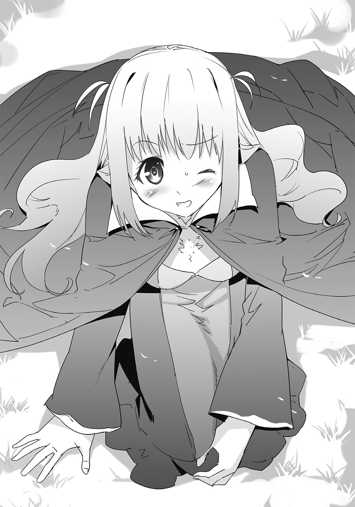
ガーネットは朱に染まった頰を搔きつつ、立ち上がると、何事もなかったように歩き出す。
「なんだったんだい、今の寸劇は」
「さあ......ガーネットってたまによくわからないことするからな......」
きょとんとしているココにオレは首を傾げた。
『ううむ。あざとい。あざといぜ。だが、見事だ。あそこまで堂々とすれば哀れみよりも寧ろ感動すら覚えちまう。これだ。お嬢に足りないのはこれだ』
なにやらぶつぶつと呟いていたマンゲツは、
『よし、お嬢！ そこで転ぶんだ！ できるだけ派手に！ しかし必要以上の怪我を負わないように！ そしてすかさず涙目で兄弟を見据え、か細い声で一言！ 『まずい......もう歩けないようだ。助けてはもらえないだろうか』――これだ！』
「ええ!? なぜ!?」
『考えるな！ 感じるんだ、お嬢！ これで兄弟はイチコロだ、ヒューッ！』
「わけのわからないことで疲れてるアイリスを混乱させるんじゃないよ、お前は」
マンゲツの指示に目を白黒させているアイリスを見て、オレは胸の鎧を小突いた。
「ま、まずい、もう歩けないようだ。助けては、もらえないだろうかー」
「アイリスもやらないでいい！」
本当に素直だな！
「盛り上がってるところ悪いけど、どんどん時間が過ぎていってるよ。早くしないと百年獣が目覚めるんだけど」
目を細めて非難するココに、一同は『尤もだ』と納得したかのように沈黙し、山登りを再開した。
「まったく、呑気というかなんというか。それに、注意しなければならないのは何も時間だけじゃないよ。この辺りは魔獣の巣になってるからね」
「え、そうなのか。そんな気配はないけど」
ココの話に辺りの様子を窺うが、山道が荒れているだけで、今のところ鳥の姿すら見かけていない。
「【鋼肌族】っていう魔獣でね。ちょっと特殊な性質を持っているから、ぱっと見ではわかりにくいんだよ」
「特殊な性質って？」
「擬態って知ってるかな。虫とかでもよくあるんだけどね。周囲のものに溶け込んで姿を隠してしまうんだ」
ああ。そういえば、枝みたいになるやつとか、葉っぱに隠れる蛾とかいたっけ。
「鋼肌族は主食が百年獣と同じで岩だから、この辺りを住み処にしてて、餌として人間は食べないんだけどね」
「じゃあ、別に警戒する必要はないんじゃないか？」
「いや。彼らはちょっと厄介な習性を持ってる」
「あー。そういえば聞いたことあるなあ。なんだっけ」
ライラが歩きながら思い出すように目線を上げた。
「鋼肌族は雌の数が少ないせいか、嗜好として異種族との性的交流を好む傾向にある」
「......え」
思わず立ち止まった。それは、つまり、あれか。あれなわけか。
「あの、ココ？ つまるところ、あなたが仰りたいのは......」
「人間の女性を襲って『食う』ということだよ。もちろん――本来とは、違う意味でね」
再び訪れる沈黙。
「い――いやああああああ！」
今回それを破ったのはガーネットの悲鳴だった。
「なななな、なんですか、それ！ 普通の魔獣より性質が悪いじゃないですか!?」
「だから厄介だって言っただろう。嫌な傷を負いたくなければ気をつけることだね」
「本来とは違う意味で食べるとはどういうことだ？」
一人だけ理解していない様子のアイリス。
「どうやらキミは随分と穢れのない場所で育ったようだね。いいかい。この場合、食べるとは――」
「いい。ココ。それ以上は言わないでいい」
この子の純粋さをもう少し大事にしてやってくれ。
「ど、どうすれば魔獣であると見分けることができるんですか。方法を教えてください！」
こちらに駆け寄り、必死な顔でココに頼み込むガーネット。
「えーと。どうだったかな。山になんか登る機会はないと思ったから忘れちゃったなあ」
「そそ、そんな！ 肝心なところですよ!?」
「だって興味がないからさ。ライラだったら知ってるんじゃないかい？」
ココが水を向けると、ガーネットは踵を返し、今度はライラに飛びついた。
「ライラ！ あなただけが頼りです！ 教えてください！」
「あー。うん。ええと、ちょっと待ってね。あたしもこの辺りまで来るとは思ってなかったから、うろ覚えでさ」
腕を組み、記憶の引き出しを引っ搔き回すみたいに唸っていたライラは、
「――ああ、そうだ。岩だよ。鋼肌族は岩に化けてるの。形は他と変わらないから何も知らないと見極めが大変なんだけど、一つだけ特色があってね」
「なな、なんですか早く！ 早く言ってください！ 純潔を守らなければならないんですから！」
「う、うん、確かね、色が真っ黒いんだよ。炭みたいに。だからすぐわかると思うよ」
「黒い岩ですね！ わかりました！ よし、そうとわかればそういったものが視界に入ったら即座に回避しましょう！ いいですね、皆様！」
全員へ言い含めるかのようにガーネットが述べ、オレ達はその尋常ならざる迫力にしっかりと頷かざるを得なかった。
と、そこで、
「なあ、ガーネット」
アイリスがのんびりとした声を上げた。
「黒い岩というのは、例えば、こういうもののことか？」
彼女は言って――傍にあった、二メートル以上はあろうかという、漆黒の岩石に手を触れる。
「ええ、そうです。そのようなものです。くれぐれも近づかないようにしてくださいね、アイリス。近づきさえしなければ危険はないんですから！」
「うむ、わかった！ では、今後このような岩には一切接近しないようにしよう！」
「これで安心ですね。アイリスのおかげで予めどのようなものに気をつければいいか、わかったのですから！ そう、そんな黒い岩には――」
ガーネットの声が、徐々に、尻すぼみになっていった。
......うん。オレも今、何か、とてつもなく、嫌な予感が頭を過ぎったぞ。
「あ、アイリス？ その岩......他と違いませんか？」
「うん？ ああ、そうだな。だから私もガーネットに訊いたのだが......どうしたのだ、みんな。なぜそのような顔をする」
オレを含めた全員がたじろいで一歩退き、血の気の引いた表情を見せたので、目を瞬かせるアイリス。
そんな彼女の背後で――。
岩が、膨れ上がった。
「まるで件の鋼肌族にでも出くわしたようではないか。いくらなんでもそんなすぐには現れないだろう。それとも私を驚かせようとしているのではあるまいな。侮ってもらっては困るぞ。私もそれなりに経験を積んだのだ。そう簡単にはいかないぞ！」
「アイリス。ゆっくり振り返って」
一人だけ淡々とした態度を保っているココが、アイリスの後ろを指差した。
「そうやって騙そうというのだろう。まったく！ ココまで参加するとは人が悪いぞ」
腕を組み、眉尻を吊り上げたアイリスが、
「どうせ何もないのだろう。どれ、確かめてみようじゃないか――」
と言いながら、後ろを向いた、瞬間。
「.........」
彼女は絶句した。
自分を遙かな高みより見下ろす――巨大な、影を目の当たりにして。
外見自体は、かろうじて人とわかる形を維持していた。だけどまるで小岩を適当に寄せ集めて瞬間接着剤でくっつけたように歪な姿は、ひたすらに異常さを浮き彫りにしていて、自然と対峙した者に恐怖を喚起させる。
目だと思われる部分には切れ目が入っていて、奥の方に赤い、血のような瞳だけが爛々と輝いていた。ぽっかりと空いた穴のような口からは時折、荒い息が漏れ、それがアイリスの前髪を吹き上げる。
「あ............ああ......ああ......」
あまりに突然のことすぎて、アイリスは通常の思考を失い、固まってしまっていた。
鋼肌族はそんな彼女を見つめ、口元をわずかに歪めた。表情はほとんど変わらないというのに、オレは、それだけで相手が何を考えているのかを悟る。
――いい獲物を見つけた。
「ブルオオオオオオオオオオオオオオオオオオオオオオオ！」
風が谷間を通り抜けるような音を鳴らしながら、鋼肌族が丸太のような腕を伸ばし、アイリスを摑む。
『お嬢ッ！』
マンゲツが焦燥の声を上げると同時、オレはココを下ろすと飛び出し、リベリオンを引き抜いていた。
「やめろ！ 放せ！ くっ――【炎よ。我が意に沿いて、汝が身より灼熱を吐け】！」
アイリスの口から【魔導言語】が紡がれ、空気中に集約する炎が鋼肌族を焼く。
が――相手は体をひと振りするだけでそれを完全に消し飛ばしてしまい、彼女を己の懐にかき抱いた。
アイリスが抵抗し、拘束から逃れようとするも、無駄に終わる。
やがて鋼肌族の指先が、アイリスの服の襟へとかかり、少しずつ破こうとした。
「――喰らええええっ！」
刹那、オレは頭上高く掲げたリベリオンの刃を、思いきり相手へ叩きつける。
がいんっ、という鈍い音がして、オレの手に痺れが走った。
「くっ......硬い！」
さすが岩に擬態していただけあって、尋常じゃない肌の強度だ。剣がまるで通らない。
鋼肌族は何の痛痒も感じていないようだったが、邪魔が入ったことに苛立ったのか、オレの方へと視線を向けてきた。
次いで、虫でも追い払うようにして、空いた手を振り払ってくる。
『このボケ......ッ！』
素早くマンゲツが防御壁を張った。鋼肌族の拳は火花のようなものが散ると共に弾かれ、攻撃が無効化される。
「リベリオンッ！」
名を叫ぶと同時に、得物の剣身が輝きを帯びた。オレの魔力を吸収し、物理的な力へと変換させた証だ。
オレは腰を捻ると同時に振り被り、武器を思いきり鋼肌族の横腹に向けて叩きつけた。
鈍い音が響き、体の一部が砕け散る。巨体が咆哮を上げてよろめき、アイリスを手放した。
「リョウマ様、アイリスを！ わたくしが牽制します！」
ガーネットがオレの前に出ると同時、既に詠唱を終えていた魔法を解き放つ。
膨大な水流が鋼肌族を勢いのままに押し、転ばせた。
オレは地上へ落下する寸前のアイリスを抱き止めると、後ろへ跳躍して距離を取る。
「この――すけべ魔獣っ！」
入れ替わるようにして傍を通り抜けたライラが背中に負っていたハンマーを抜くと、全身から絞り出される膂力で、鋼肌族に文字通りの鉄槌を下した。
くぐもった声が上がり、鋼肌族は半歩、足を下がらせる。
が――。
「へっ......!?」
ライラが驚いたような顔のまま、その身を躍らせた。
いや――すぐに体勢を戻した鋼肌族の分厚い掌が彼女を摑み、持ち上げたのだ。
「うわっ、ちょ、噓でしょ!?」
ライラの攻撃が効かないなんて、どれだけ防御力があるんだよ......！
「ブルオオオオオオオオオオオオオオオオオオ！」
喜びの雄叫びを上げ、鋼肌族は指先をライラの衣服にかける。
――瞬間、鋭い音と共に、彼女の身に纏っていたものを上から引き裂いた。
焼けた肌と、豊満な胸が惜しげもなくさらされて、オレは思わず硬直する。
「うわー！ こら、やめろ！ 近寄るなー！」
ハンマーを振り回すライラだったが、不自由な体勢ではさすがに動きに制限が出た。
というか、ライラ、あの、そうやって暴れると、一緒にお前の持ってるものまで大胆に揺れるんだが......いや、そんなところ見てる場合じゃないだろ、オレ！
「【空よ、鋭き刃となって斬り裂け、嵐の如く】！」
ガーネットがライラを助けるために強烈な疾風を呼び起こし、衝撃波で鋼肌族を吹き飛ばそうとした。
「ブルオオオオオオオオオオオオオオオオ！」
しかし、鋼肌族が身を反らしてから吐き出した大量の息が、それを相殺してしまう。
「まずい......！」
ガーネットが自分の失態を悟った時にはもう遅かった。
鋼肌族は空いた手でガーネットを拘束すると、器用にライラを摑んだ方の指先で、同じく彼女の衣服を大胆に破いたのだ。
ライラに負けないくらい成長した双丘と、その下までもが白昼にさらされてしまう。
「いやあっ！ 汚らわしい！ やめなさい！ わ、わたくしの身はリョウマ様のものですよ!?」
睨みつけるガーネットに対して、鋼肌族は目を細めて、口元を三日月のように変えた。いやらしく笑っているように見える。
『兄弟！ やばいぜ、このままじゃお嬢まであんな野郎の餌食になっちまう！』
「わ、わかってるよ。わかってるけどさ」
ああ、もう、目のやり場に困る！
「た、助けてください、リョウマ様！ このままではあなたの返事を聞く前に、わたくしの身が......！」
「え、なにそれ!? 返事ってなに!? リョウマとなにかあったの!?」
ライラが思わぬところで食いついた。
「そ、それは、その、言えません！ だけど、わたくしにとっても、リョウマ様にとっても、何よりも大切なことです！」
「聞いてない！ ちょっと、リョウマ、どういうことなの？ 教えて！」
「ダメです！ 教えてはいけませんよ、リョウマ様！ 絶対に、絶対にダメです！」
「どうして!? あたしとリョウマとの間にあったことは、ガーネットに教えたのにー！」
「そ、それとこれとは話が別です！」
「ずるいよー！ ガーネットずるいよー！ 教えてー！」
「だーめーでーすー！」
「二人とも、状況を見て言い争ってもらえるかな!?」
今結構危ないことになってるんだけども！
「リョウマ、私が魔法を使ってあいつの体勢を崩す。その間にリベリオンの力を使って止めをさしてほしい」
アイリスが言って魔導言語を唱え始めた。もちろん、異論なんてあるわけない。オレは頷いて、再び魔力をリベリオンへと注ぎ込もうとした。
が、
「リョウマ、アイリス、そこをどいて」
背後から声をかけられて、振り返ると――。
凄まじい速度で、ココが接近してくるところだった。
「お、おい!?」
声をかけるが、それが届くよりも先にココは一陣の風のように傍を駆け抜ける。鋼肌族が彼女の姿を見つけ、ガーネットを手放すと、捕まえようとした。
が――ココはそれを軽やかに回避すると、鋼肌族の死角へと回り込み、腰の辺りから何かを抜き払った。
「【起動せよ】」
ココが魔導言語らしき言葉を呟いた直後――。
聞いたこともない音が、轟いた。
同時、鋼肌族の体が爆発し、煙を上げる。
突然の事態に状況を把握しきれないのか、鋼肌族は足をもつれさせて転んだ。
ライラが隙をついて鋼肌族の手から無理矢理に抜け出し、こちらへ駆け寄る。
その間にもココは残像を刻むほどの勢いで鋼肌族の周囲を移動し、先程と同じ現象を起こし続けた。
鋼肌族の頑強な肌がいとも容易く次々と弾け飛び、瓦礫を飛ばす。
見る見るうちにぽっかりとした穴が空くと、ココは接近し、高々と跳躍した。
彼女は懐から何かを取り出すと、相手に向かって投擲する。
まるで吸い込まれるようにして、鋼肌族の体に穿たれた闇へとそれが落ちると、
「みんな、ここから離れて！ できるだけ遠くへ！」
ココはいつになく緊迫した声で指示を出した。意味はわからないが従った方がよさそうだとオレ達は頷き合い、急いで距離を取る。
ココもまた、鋼肌族の頭辺りに着地すると、急ぎこちらに向かってきた。
そして――。
辺りを光が覆い尽くした。
鼓膜をつんざくような音が鳴り渡り、オレは思わず耳を押さえる。
巨大な爆発。
さながら、ダイナマイトにでも火が点いたかのような現象が起こった。
それはすぐに途切れ、場には元のような静寂が戻る。
あとには何も残されていなかった。
先程まで存在していた鋼肌族の姿は、どこにも見当たらない。
完全に、消えてしまっていた。
「な、なにが起こったんだ......？」
呆然と立ち尽くすオレに、ココが言った。
「試作用に作った武器を幾つか持ってきてよかったよ。思わぬ形で役に立った」
彼女が見せてくれたのは、持ち手のついた金属的な光沢のある筒状の何かと、ジュースの缶みたいな物体だ。
「これは【魔導砲】っていってね。戦争なんかで使われる大砲をもっと小型化できないかと思って製作したものなんだ。原理はリベリオンと似ていて、魔力を物理的な力に変換して遠く離れた対象を攻撃する。で、こっちは【魔導筒】っていって、留め金を外すと滞留していた魔力が注ぎ込まれ、時間差で魔導砲のような爆発を引き起こす。尤も、こちらの方が威力は段違いだけどね。で、こっちが――」
と、自分の靴を見せるココ。踵の部分に鉄板のようなものが仕込まれていた。
「魔力を推進力に変換させて放出し、爆発的な起動力を生み出す代物。名前はまだつけてない」
「......とんでもないもの作ったんだな、お前」
まさしく、拳銃に爆弾じゃないか。おまけにジェット機能付きの靴まで。
「創族は戦族よりはマシだけど、人族よりは魔力が低くてね。どうにか補塡できないかと考えた結果さ」
なんでもないことのように言って、ココは肩を竦めた。
「なんでさっきその靴を使わなかったの？ そしたら山登りも楽だったのに」
ライラがどこか不満そうに尋ねる。いいところを取られて気に入らないのかもしれなかった。
「生憎とこれが使えるのは、今のところ一分少々が限界なんだ。一度使えば魔力を補充するためにしばらくは休ませておかなきゃならない」
そう答えたあとでココはオレの方を見上げ、ほんの少し、口元を緩めた。
「じゃ、そういうわけで、気を取り直して行こうか。まだ体力は回復していないから――頼んだよ？ リョウマ」
幸いなことに持ってきた荷物に着替えがあったので、ガーネットとライラが裸のまま歩き回るということはなかった。
思わぬトラブルはあったものの、それからは特にどうということもなく、オレ達は無事に目的地のすぐ傍まで辿り着いた。
そこでちょうど、日も暮れ始めたために、今日のところは野営をすることにする。
「この辺りには食べられる獣もいないと思うし、今晩は持ってる食材だけで料理するしかないね」
近くにある小さな洞穴の傍まで移動し、火を熾したところで、ライラが言った。
「ああ。干し肉はまだあったよな。で、ここへ来る前に買った野菜もまだ幾つか残ってる、と......」
オレは自分のリュックをまさぐりながら、思案する。スープくらいなら作れそうだけど、出汁はどうするかな。モニートっていう豆を磨り潰して溶かすと、コンソメっぽい味になるから、今日はそれでいくか。
「リョウマ様、わたくしは野菜を刻みますね」
「では私はパンとチーズを切ろう」
ガーネットとアイリスがそれぞれ言って、腰からナイフを引き抜くと、食材に手を入れ始めた。
その横ではライラが鞄から干し肉を人数分取り出し、火で炙っている。
オレは鍋に皮袋から水を入れると、火にかけ、横手で大豆に似た形の実を岩の上に置き、掌で潰した。
旅に出てからというもの自然に野営についての役割分担が決まって、皆、スムーズに動いている。
「ご苦労なことだね。それじゃあ、ボクは食事ができるまでゆっくりしていようかな」
ところがココはそう言ってごろりとテントの中で横になり、目を閉じてしまった。
「あ、こら、ココ。君もなんかしなきゃダメだよ。働かざる者腹を満たせず、だよ」
ライラが格言めいたことを口にしたが、ココは片目を開けてこう返す。
「だってボクができることは何もないだろう。だったら、体力を温存させるためにこうして体を休めるのが一番さ」
「ないことないよ。ガーネットの野菜切りを手伝うとか、リョウマのスープ作りの補佐をするとか、色々あるでしょ？」
「別にボクがいなくたって回るんじゃないのかい。だったらやらなくてもいいだろう」
「みんな、働いてるのに君だけサボっていいわけないでしょ」
「生憎と料理は苦手でね。生産効率の悪いことをしたところで得るものは少ない」
「またわけのわかんないことを言って煙に巻こうとする！」
「この上なく理解しやすい内容だったと思うけど。キミの頭がついてこれないだけだろう」
「......肉と一緒に炙ってあげようか？」
「だから喧嘩するなって、お前ら」
鍋に粉状になったモニートを入れながら、オレは言った。
「だってココが自分だけ働かないから！」
「働く必要がないから働いていないことの何が問題だと？」
同時に互いを指差す二人。ココの言い分は聞きようによってはダメな感じだけど、的を射ている気がしないでもないな。
「大体、食事なんてお腹に入ればいいんだよ。料理している暇があるなら、一つでも多くの道具を生産した方がマシさ」
嘯きながらココは腰に下げていた、鋼肌族との戦いで見せてくれた【魔導砲】を取り出すと、虚空に翳し、調子を確かめるよう目を細めた。
「でもココは今、一人で暮らしているのでしょう？ 料理をしないのであれば、一体何を召し上がっているのですか？」
ガーネットが料理をする手を止めて尋ねる。
「んん。基本的には近くの店で買ってきたできあいのものだよ。仕事が忙しくなってくるとそれすらも面倒くさくてしないけどね」
「では、そういう時はどのようなものを食べているのだ？」
想像もできないというふうな顔をするアイリス。
「えーと。少し前はなんだったかな。ああ、そうだ。人参を食べたよ」
「だけか？ 茹でて？」
「いや、生で」
「生で!?」
人参を!?
思わずアイリスと一緒に驚いてしまうオレだった。
「少し硬かったけどね。意外に食えたよ。まあ、以前、作業に夢中になりすぎて三日くらい物を食べるの忘れてて気を失ったから、それに比べれば随分とマシだと思うけど」
「全然マシじゃないと思うぞ......」
最低レベルが酷すぎると思うんだが。
「とにかく！ あたし達の旅に同行してるなら、ココも何かする！ ほらほら」
ライラは言って、テントに近づくとココの腕を摑んで引っ張った。
「うわっ。やめてもらえないか。キミのそういう強引なところがボクは......ちょっと！」
抵抗も虚しく有無を言わせず引っ張り出されたココは、少し不服げではあったものの、しばらくするとアイリスと一緒にパンを切り始めた。
やがて全ての用意が終わり、ランプの灯りの傍で、オレ達は夕食をとることにする。
「鋼肌族が襲ってこないでしょうか......」
炙った干し肉とチーズ、それにハサックと呼ばれる食用の葉――見た目はレタスのような感じ――を挟んだパンを手に抱えつつ、ガーネットが辺りの様子を窺う。
「安心していいと思うよ。既に彼らの巣は抜けたから」
スープに息を吹いて冷ましながら、ココが答えた。
「ま、今のところ気配はないし、大丈夫じゃない？ というわけで、リョウマ、はい」
「うん？ どうした、ライラ」
香辛料の効いた干し肉を味わいながらオレが顔を上げると、満面の笑みを浮かべたライラがスプーンで掬ったスープをオレに差し出してくる。
「おくち、あーんして？」
「ええ!? いや、いいよ！ ってか食事のたびに毎回それやるの勘弁してくれよ！」
「だって全然させてくれないしさー。気にしないでいいってば。ほら、遠慮なく！」
「遠慮とかじゃなくて、恥ずかしいんだって！」
「もう、照れ屋さんだな、リョウマは。どうせ近い将来、毎日のようにすることになるんだから、早く慣れちゃってよ」
「ちょっと！ 聞き捨てなりませんね、ライラ！」
すかさず、といった感じでガーネットは自分の器からライラと同じようにスープを掬う。
「リョウマ様はわたくしとするようになるのですよ？ 勘違いなさっては困ります」
「えー。でもリョウマはあたしの旦那様だし」
「その話はなしになったと言ったでしょう！」
「先延ばしにしただけで、いつかはそうなるんだよ？」
「決まってません！」
「決めたの、あたしが！」
「そんなことは許しませんよ！」
「ガーネットに許されなくてもあたしが許してるの！」
「わたくしが許さなくては何も許されません！」
「勝手だよ！」
「どちらがですか！」
立ち上がると、ガーネットとライラは正面から視線をぶつけ合った。
『こらこらこらこら、お前ら。いい加減にしろ』
と、そこで珍しく、マンゲツが止めに入る。
『兄弟の妻になるのはお嬢って決まってるだろうが！』
全然止めに入ってなかった。寧ろ参戦していた。
「ふぐっ!? な、なにを言っているのだ、マンゲツ！ つつつつつつつつつ、つなど！」
幸せそうにパンと肉を楽しんでいたアイリスが、突然、顔を真っ赤にして叫んだ。慌てすぎたのか、きちんと『妻』と発声できていない。
『なんたってリョウマはガルフレアの皇帝なんだからな？ そりゃ必然的にお嬢の旦那ってことになるだろうよ』
「ちょっと、リョウマ様が皇帝をやられているのは、あくまでも帝国を救うための間だけでしょう」
「そうだよ。だから別に全然決まってないよ。勝手なことばっかり言うと塩水かけちゃうよ？ マンゲツ」
『んだコラやってみろやこの犬っころ娘。こちとらサビようがやすりで削られようが全力でお嬢のために動いたらぁ！』
「よーし、言ったな？ あとで茶色くなってリョウマやアイリスのこと守れなくなっても知らないんだから！」
「大体、マンゲツは最初、リョウマ様が皇帝になることを認めていなかったのではないのですか？ なのに掌を返したように兄弟、兄弟と......」
『うるせえな。おれは兄弟の男気に感服したんだよ。生まれは違えど死ぬ時は共にあり。これぞ男と男の友情ってやつよ！』
「都合がいいと言っているのですー！」
「そうだよ、大体マンゲツはさ。この間もリョウマの傍で寝ようとしたら大声で起こして邪魔してくるしー！」
「え、なんですか、それ。ライラ、どういうことですか聞いてませんが!?」
「あ、しまった。話しちゃった」
「ライラー！」
ああ、もう、なにがなんやら。
三人――正確には二人と一個だけど――が延々と言い争いをしているので、騒がしいどころか場が混沌としてきてる。大体、なんの話なんだ、一体。
「ガーネットもライラもマンゲツも、落ち着かないか。楽しい食事が台無しになってしまうぞ」
アイリスが諭すように言ったけど、まるで聞いてる気配がなかった。マンゲツが点のように表している目を彼女へと向ける。
『お嬢！ お嬢もお嬢だぜ。そうやっていつも消極的だから、この二人にいいようにされてるんだ。もしどっちかがその気になって強引に兄弟の童貞を奪ったらどうするつもりだ？』
「どうていとはなんだ？」
『兄弟の大事なものだ』
「なんと。ガーネットとライラがリョウマの大切なものを奪うのか？ そんなことをするはずがないだろう」
『しちまうんだよ。本気になったら男も女もケダモノなんだぜ？』
「そ、そうなのか？ ダメだぞ、二人とも。リョウマのドウテイはとても大事なものだから、奪ったりなどせず、欲しいならきちんと話し合うべきだ」
真面目にとんちんかんなことを言い出すアイリス。いや、なんか、壮絶にずれてるよな。仕方ないんだろうけど。
『そういう平和的な態度でいるからダメなんだよ、お嬢は。お嬢だってリョウマの童貞が欲しいだろ？ 奪ってみせろよ！』
「しかし奪うのはよくない。大体、私はそれがなんなのかも知らないのだ」
『それもそうか。だったらそうだ、兄弟、お嬢に見せてやれよ。お前の――童貞を！』
「見せられるか！」
なにキメ顔で言ってんだよ、お前は。
「見せられないのか、ドウテイは。一体何なのだ、ドウテイとは。教えてくれ、リョウマ。リョウマのドウテイとは一体......？」
「いや、あの、アイリス、あんまり女の子が童貞童貞って連発するのはよくないんじゃないかと思うんだけど......」
「なぜだ!?」
「それもまた答えにくい問題でな!?」
どうすればわかってくれるんだよ、この汚れのない子は！
「アイリス、そのことはひとまず置いておきましょう。今大事なのは、他にあります。誰がこれからリョウマ様の『あーん役』に収まるかです！」
「そうだよ！ そこが一番重要だから！」
力説するガーネットに続き、地面を叩いてそれに乗っかるライラ。
「いや、そんなに重要か......？」
「リョウマ様は大人しくしていてください！」「ちょっとだけ静かにしてて！」
「あ、はい」
二人からすごい迫力で怒られてしまっては、もう、どうしようもない。
「わかった。じゃあ、今日は前みたいに膝枕とかなしにしよう。純粋にこれだけで勝負だからね」
「よいでしょう。わたくしも以前のように淑女などと甘いことを言いはしません。血湧き肉躍るとはこのことです。フフ、燃えてきましたよ」
......なんかバトル物みたいな展開になってきたけど、何するつもりなんだ？
「――やれやれ。揃いも揃って元気なことだね」
その時、ココが不意に呟いて、スープを飲み干した。
「恋愛なんて非生産的なことでそこまで争えるのは、ある意味で尊敬するよ。大体、わざわざぶつかり合わなくても、もっとわかりやすい方法があるじゃないか」
彼女は口元を拭うとオレの方を見つめて、顎で指してきた。
「リョウマ。――キミは三人の中で誰が好きなんだい？」
「............え？」
思わぬ問いかけに、オレの手からスプーンが落ちる。
スプーンが岩に当たって乾いた音を鳴らすが、そんなことを気にしている暇などなかった。
「キミが自分の意志をはっきりと示せば彼女達が諍いを起こす理由はなくなる。極めて合理的な考えだと思うけど」
「い、いや、それはそうだけど......」
そんなこといきなり言われても、どうすればいいのか――ハッ!?
オレはその時、痛いほどの視線を向けられていることに気づいた。
そこにはガーネット、ライラ、アイリスの姿がある。
三人が三人とも真剣な顔で、食い入るようにしてこちらを見つめていた。
『お、兄弟。こいつはいよいよって時が来たみたいだな。遠慮せず言っちまえよ。お嬢だろ？ お嬢。間違いねえ。だってお嬢は――もががぐ』
余計なことを喋り続けるマンゲツの口（に見える部分）を、オレはとりあえず手で押さえ込んだ。
「ど、どうなのですか、リョウマ様？」
「あたしはいつでも聞く準備、できてるけど」
「わ、私は、その、は、はうう」
ガーネット、ライラに続き、顔を真っ赤にしながら、なぜかパンに食いついているアイリス。
「オ、オレは......オレの気持ちは......」
心臓が早鐘のように高く鳴り続けていた。
ま、まさか、まさかこんなところでこんな展開になるとは。
いやでも、ガーネットへの返事があるし、だからといって整理がついているかと言われればそうでもないし、じゃあライラかアイリスかって言われると、確かに二人とも可愛くてオレなんかにはもったいないくらいだけど、そう急に結論を出せって話なのかとも思うし――ああ、くそ、頭がグチャグチャになってきたぞ!?
「オ、オレは、だな......」
ええい、いつまでもぐじぐじ悩んでいる場合じゃないだろ、オレ。
根性出せよ。脳味噌ねじまげてでも答えを弾き出せ。
よし、言うぞ、言うぞ、言うからな。き、決めろ――！
「オレは......！」
「なんてね。まあ、キミもこんなところで言わされるのはなんだろう。別に口に出さなくてもいいよ」
勢いがつきすぎてスッ転ぶかと思った。
呆気にとられるオレの前で、ココはパンと干し肉を食べ終えると、砂を払いながら立ち上がった。
「明日の朝も早いし、そろそろみんな、寝た方がいいんじゃないかい？」
「え......？ え、ええ。そうですね」
拍子抜けしたような反応でガーネットが返事をすれば、ライラもまた腑に落ちないながらも、「う、うん。そうだね」と無理矢理納得したような対応をした。
「......うむ。明日が本番だからな。十分に体力を回復させるとしよう」
アイリスは、どことなく胸を撫で下ろしたような表情で残った夕飯を急いで口に詰め込んでいる。
なんとなく、緊張感が途切れたかのような感覚で、場は解散となってしまった。
......なんだったんだ、今のやりとりは。
『ちっ。上手くはぐらかされちまったか』
マンゲツが気に入らないというように呟いたが、彼とてこれ以上場を荒らすつもりはないようで、黙り込んでしまった。
「驚かせたかい？ すまなかったね」
オレの前まで来たココが、口元をわずかに上げる。
「......からかったのか？」
だとしたら趣味が悪いぞ。
「すまないね。ま、昼間にキミが無理矢理ボクを抱いたお返しだと思ってもらって構わない」
「あれはお前が辛そうだったから......」
「わかっているよ。その配慮自体には感謝している。......男性とあれくらい密着したのは初めてだったから、動揺したのが悔しくてね」
「......ん、なにか言ったか？」
最後の方、小さくてよく聞き取れなかったんだが。
「なんでも。ただね、リョウマ。ボクは別に間違ったことを言ったつもりはないよ。キミ――三人から異性としての好意を持たれていることは自覚しているんだろう？」
「うっ......ま、まあな」
さすがにここまでくると、わかってくる。
「アイリスの方は、この旅が始まってからの付き合いだから、わからないけど......」
「......キミも相変わらず鈍感だね。度を越していると評価しても過言じゃない」
『そこに関しては同意するぜ、ちびっ子』
うるさい、放っとけ、マンゲツ。
「ま、別にキミの問題だからどうしようが構いはしないが――いつまでもはっきりしないままっていうのは、あんまりよくないんじゃないのかい？」
「あ、ああ、そうだな。にしても、お前からそういう注意を受けるとは......」
どうにも驚いた。
「ボクは合理主義者であって別に冷血ってわけじゃない。リョウマは三年前の知り合いなんだから、それくらいするさ」
皮肉っぽい調子で述べてから、ココは後ろで洞穴へと戻っていく三人を振り返る。
「ま、何にせよいつかは選択する時が来るんじゃないかい。それなりに、心を決めておいた方がいいと思うけどね」
何気なく放たれた声が、オレの胸に深く突き刺さってきた。
「......心に刻んでおくよ。ありがとな」
「お気になさらず」
オレが返した言葉に、ココはいつものように肩を竦めた。
「うわ......これは、すごいな」
ようやく山頂付近へと辿り着いたオレ達を出迎えたのは、想像を遙かに超えた姿だった。
全長、数百メートルはゆうにあるだろうか。まるで、岩山の上にまた岩山が乗っているかのようだ。
全身は硬く尖った鱗に包まれていて、昨日遭遇した鋼肌族よりもっと岩石っぽい体表は、あらかじめココより説明を受けていなければ、魔獣と見抜けなかっただろう。
これが百年獣――改めて、圧倒される存在だ。しかし、
「本当に生きてるのか、これ......？」
まるで微動だにしないその姿を前にして、オレはつい、疑念を持ってしまった。
こう大きくては頭がどこにあるのかも把握できないし、どうやら手や足は体と同化してしまっているようだ。
「手を触れてごらん」
ココに言われて、百年獣の肌にそっと掌をつけてみる。
すると、見た目通りのざらざらとした硬い感触が伝わり、これがどうしたのかと思ったものの。
「......あ」
ほんのわずかにではあるが、指先が感じ取った。
「これは......動いているな」
アイリスもまたオレと同じようにして、感想を漏らす。
そうだ。ともすれば見逃してしまいそうなほどのものだけど――小刻みに、体が脈打っている。相手が命を持つものであることの証だった。
「ふうん。本当に眠ってるんだね。起きないの？」
ライラが物珍しそうに眺めながら言う。
「明日までは絶対に。蹴ろうが叩こうが目を覚まさないよ」
「まあ。まるでライラのようですね」
くすくすと笑みを零すガーネット。
「え、なんで？ あたし、いつも自分で起きてるよ？」
「そうですが、逆を言えばそれ以前はどれほど声をかけても眠り続けていますよ？」
「だな。あと、寝相が悪くてたまに頭蹴られる」
「私など上に乗られて胸に押し潰されそうになったぞ」
オレが言えば、アイリスもまた小さく頰を膨らませた。
「な、なに。そんなんだったら、みんな、言ってくれればいいのに」
ライラがややたじろいだような姿勢を取る。いやまあ、言っても治らないだろうなと思ってさ。
「で、その、ライラみたいな百年獣だけど――」
「こら！ さりげなくあたしと同列に扱うな！」
「件の虹光石はこの中にあってね。もうそろそろできあがる頃だと思う」
思いっきりライラの叫びを無視するココ。
「ですがどのようにして手に入れるのでしょう。何か方法があるのですか？」
ガーネットが訊くのにココは頷き、体に沿って前の方へと歩き始めた。
「虹光石っていうのは武器や防具を作るにはこの上なく最適なものでね。古くより創族は百年経つごとに国のどこかにいる百年獣を見つけては採取してきた」
しばらく進むと、彼女はある地点で止まる。
「つまり採掘方法は昔から伝授されてきたってこと。......この辺りかな」
しゃがみこんでから、岩肌を手の甲で叩き、ココは耳を澄ませた。
「ところで、ココ、貴重な鉱石を勝手にオレ達が使っても大丈夫なのか？」
何かあとで揉め事とか起こらないといいけど。
「ああ、それは平気。何しろ虹光石は採取するのに手間がかかるからね。何か特別なものを作る時にしか用いられないんだ。今回は誰も狙ってないから問題ないと思うよ」
「ですがこれから必要になるかもしれませんし......」
懐に手を入れていたココは、心配するガーネットをちらりと見て、
「残念だけど虹光石が採れるのは今日だけ。明日になれば胃液によって溶けてなくなってしまうんだ。なので、心配は無用。理解できたかな？」
そういうことか。にしても、かなりのラッキーだったな............何かの都合やタイミングで首都への来訪が遅れていたら、リベリオンを強化できなかったかもしれない。
「よし。じゃあ、離れて。ちょっと派手にいくよ」
手を伸ばし、何かを百年獣の岩肌の奥へと置くと、ココはオレ達に指示を飛ばしてきた。
何をするのかはわからないが、避難していた方がよさそうだ。
オレ達が下がり、遠巻きに眺めていると、ココもまたこちらに走ってくる。
そして、
「――【点火】！」
百年獣の方を振り返りざま、彼女が大きな声を上げた瞬間。
閃光と共に轟音が響き渡った。
「うわっ!?」
いきなりのことで驚いて身が竦む。
ばらばらと瓦礫が天から降り注ぎ、地面を強く叩いた。
百年獣の体から、濛々とした煙が噴き上がっている。
「よし......これでいいかな」
ココが満足そうに頷いて、近づいていった。オレはアイリス達と目を合わせつつ、彼女についていく。
すると、
「まあ......これは」
ガーネットが口に手を当てると、ライラも「ふえー」と奇妙な声を漏らした。
百年獣の体に、巨大な闇が覗いている。
まるで洞窟の入り口であるかのようなそれは、ココが【魔導筒】によって強制的に造り上げた、巨大な魔獣の身中へと入り込むための穴だった。
「いいのか？ このような真似をして。いくら目が覚めないといっても、起きた時に痛がるのではないか？」
気遣うように、アイリスがココに問う。魔獣といえど何もしていないわけなんだから、少し申し訳なく思っているのかもしれなかった。
「百年獣の体には一カ所だけ脆くて感覚が鈍くなっているところがあってね。そこを破壊すれば、痛みを感じないんだよ。それに放っておけば体のどの部分でも二日か三日で再生するから、ずっとこのままってわけでもない」
ふうん。なんていうか、随分と大味な体の構造をしているんだな。
「さて、これを通れば魔獣の腹の中だ。準備はいいかい？」
ぽっかりと空いた穴を前にして、ココがオレ達の方を振り返った。
「――それじゃ、虹光石を目指して探索を始めようじゃないか」
オレが頷くと、アイリス、ガーネット、ライラの順で続く。
魔獣の体内を探索するなんて考えもしていなかったけど......ここまできたら、行くしかないか。
腹を決めると、オレは、百年獣の体内へと侵入した。
照明がないから中は真っ暗だと思っていたけど、実際には仄かに明るかった。
空間は円筒状になっていて、周囲の壁は奇妙な桃色をしている。手で押してみるとゆっくりと沈みこんでいった。ぬめるような触感が気持ち悪い。自分のいるところが洞窟じゃなくて生き物の中だということをいやでも自覚させられた。
よくよく見てみると、この明るさは、壁――というより粘膜か――から発せられているものらしい。淡いオレンジの光が全体から灯っていた。
「明苔だね。食べ物と一緒にのみ込んだものが根づいたんだろう」
ココが自分の見解を示す。明苔とは長い時間をかけて熱を溜め込むことにより、暗闇で発光するようになる植物のことだ。見た目はオレの世界にあるヒカリゴケにちょっと似ている。
「それでわたくし達はどこへ向かえばいいのです？」
ガーネットが首を傾げると、ココが肩に提げた鞄から大きな羊皮紙を取り出した。広げると、歪曲した大きな物体の中に通路のようなものが描かれている。
「これ、百年獣の体内図ね。個体によってそう差はないはずだから、ボク達が侵入したこいつもこんな感じになってると思ってくれていい」
へえ。なんだか、子どもの頃に読んだ怪獣の解剖図鑑を思い出すな。
「で、ボク達がいるのはここ」
ココが指差したのは頭だと思われる場所から、少し右に寄ったところだ。
「人間でいう喉だね。のみ込んだものはここを通り、胃へと辿り着く」
「虹光石があるのはどこなのだ？」
「胃だよ。ただしちょっとこの百年獣というのは面倒なところがあって―――」
と、アイリスに答えながらココは続けた。
「小胃と呼ばれる規模の小さな胃袋が幾つもあって、それらを通らないと大胃......説明しなくてもわかるよね。奥の方にある大きな胃袋に辿り着けないんだ」
「なんでそんな造りになってるの？」
ライラが頭上を仰ぎながら言う。どことなく表情が楽しげに見えるのは、未知の場所を冒険することに好奇心が抑えられないからかもしれなかった。
「百年獣はとにかく何でものみ込んでしまうから、それらを確実に溶かすため、胃が一つじゃ足りないんだよ。そうやって少しずつ食べたものを消化していくというわけだ」
「ほう。では一度に大量に色々なものを食べられるというわけだな」
アイリスが何やらうらやましそうな響きを乗せた口調で言った。さすが旅の仲間きっての食いしん坊キャラ。ぶれない。
「ん、わかった。じゃあ、オレ達は大胃を目指して進めばいいわけだな」
「そう。ただね、リョウマ。厄介なことにこの小胃というやつだけは個体によってそれぞれ位置が変わっていてね。おまけにそれぞれ別々の場所に存在しているから、どこを通れば大胃につけるかわからないんだよ。中には行き止まりになっているところもある」
「......うん？ つまり、確実に大胃へと繫がる小胃の道を選んでいかなきゃいけないってことなのか」
「ご明察」
褒められたのはいいけど、ちょっと面倒だな、それは。迷路みたいになってるわけか。
「ま、ともあれ進もう。一つ目の小胃は向こうだ」
ココは後ろの方を指差すと、地図をしまって歩き始めた。
『にしても気味の悪いところだな。薄暗いしじめじめしてるしぐにゃぐにゃしてて、あんまり長居はしたくねえぞ。なんの因果でこんなところにいなきゃいけないんだか』
マンゲツが、口にあたる模様の部分をへの字に曲げて愚痴を垂れ零す。
「文句言うなよ。お前はオレの体にくっついてるからいいけど、こっちは直接歩いてるんだからな。それでも我慢してるんだぞ」
『そうは言うがよ、兄弟。ここまでしてリベリオンの強化をする必要なんて、ないんじゃねえのか？ 兄弟にはなんたっておれがいるんだからよ』
「ですがマンゲツは敵を攻撃できないでしょう？」
「防御は最大の攻撃なりって言葉知らねえのか？ ガーネット」
マンゲツが反論するが、それを言うなら逆だと思う。
「でも、どうする？ マンゲツ。リベリオンが今より強くなって、防御壁まで使えるようになったら。リョウマにいらないって言われちゃうかもよ」
ライラがからかうようにマンゲツをつついた。
『なっ――ん、んなことあるわけねえだろ。どこの世界に攻撃も防御もできる剣なんてあるんだよ。そんな夢のような話、あるわけねえだろ』
「わからないよー。リベリオンはなんたって四大聖国が総力を結集して作り上げたものだからね。それくらいわけないかも」
にやにやしながらライラがマンゲツの不安を煽れば、
「......ふむ。剣と盾を兼ね備えた武器か。面白いね。一考に値する」
ココまで乗ってきたために、鎧の紋様が怒ったように歪んだ。
『てめえらっ！ たとえそうだとしても兄弟がおれを捨てるなんてことあるわけねえだろ！ こちとら兄弟とは血の陶杯を交わし合った仲だぜ!?』
「なんだよそれ。そんな恐ろしいモン交わした覚えはないよ」
ねつ造をするな、ねつ造を。
『きょ......兄弟、なあ、そうだよな？ リベリオンがどうなろうとおれを捨てたりはしねえよな？』
上目遣いで見てくるマンゲツ。先程の台詞とは裏腹に割と必死だった。
「うーん。そうだなあ」
オレは腕を組んで思案してから答える。
「まあ、時と場合による」
『兄弟いいいいいいいいいいいいいっ！ 帰る！ おれ、もう帰る！ リベリオンの強化なんていらねええええええ！』
突然叫び声を上げると、マンゲツは必死にオレの体を締めつけ始めた。
「いだだだだだだ！ こら、やめろ！ おい！」
『いやだああああああ！ お嬢と一緒にいられないならおれは帝国に帰るうううう！』
「お、おい、マンゲツ！ やめろ！ リョウマのあばらが折れてしまったらどうする！」
アイリスがおろおろとしながら止めようとするも、マンゲツは一向に言うことを聞こうとしなかった。
『お嬢、だってよ、兄弟が、兄弟がああああ！』
「リョウマの冗談に決まっているだろう！ 彼が本当にお前を見放すと思うか!?」
『............』
「そこで沈黙するなよ兄弟！」
血の陶杯の絆はどうした。
「ああ、もう、噓だって、噓！ お前はアイリスから預かった大事な相棒なんだから、そんなことするわけないだろ!?」
あまりの痛さに耐えかねてオレが言うと、マンゲツはようやく荒っぽい拘束を解いてくれた。が、恨みがましい眼差しを向けてくる。
『ならいいけどよ......頼むぜ？ 兄弟。お前とお嬢を守るのがおれの使命だと思ってるんだからよ』
「あ、ああ。わかってる。ごめんな、ちょっと悪ふざけがすぎた」
うう、横腹が痛い。滅多なこと口にするもんじゃないな。反省。
「だけどさ、実際、リベリオンが強くなるとどうなるわけ？ ココ」
ライラが問いかけると、先を進んでいたココは前を向いたままで返してきた。
「うーん。そうだね。リベリオンの本質というのはつまり、魔力を物理的な波動に変換して放出するところにあるんだよ。他にも能力はあるけどあくまでもそこから派生したもの。だからそこを伸ばしたものになるかな。ま、具体的にどうなるかは、お楽しみってことで」
「剣自体が巨大化したりするのか？」
なんとなくのイメージでしかないけどさ。
「そんな扱い方が難しくなるようなことにはならない。......けど近いかな。今伝えることがあるとすれば、大きな力は使い手へそれなりに負担を強いるということ。ま、その辺りは覚悟しておいてほしい」
なんだか不穏な物言いだ。まさかマンゲツみたいに意思を持ち始めるんじゃなかろうな。今だって割と扱いに困るところがあるのに、更に増えるとなると頭痛の種になるぞ。
『兄弟、今、なにか失礼なこと考えなかったか？』
「いいや、全然」
妙に勘だけは鋭い奴。
「と......ここが第一の小胃だね」
喉の道を抜けたところでぽっかりと開けた空間に出ると、ココが立ち止まって呟いた。
小、とはいうけど、オレ達人間からすればそれでもかなり大きい。
アパートの一室か二室は丸ごと入ってしまうのではないかと思うほどで、先程まで通ってきたところと違って楕円形になっている。
辺りには枯れた木や石ころ、土などがわずかに残っていた。食べカスらしい。百年経ってもまだあるというのは、ちょっとすごい。
「ほう。ここがそうなのか。ひどく殺風景なのだな」
アイリスが物珍しそうに辺りをきょろきょろと見回す。
「まあ、そりゃ、胃だからな......」
飾りつけられていても困る。
「あ。気をつけた方がいいと思う」
「なにがだ？」
ココが声をかけて、アイリスが振り返った。
「この辺、奥へ押しやられなかった分の魔獣とか人間の死体とかその他よくわからないものとか転がってるから」
「......え」
アイリスが硬直し、数秒ほど経ってから、恐る恐る足を上げる。そして、
「ひ、ひやあああああああああああ！ リョウマあああああああ！」
突然こちらに向かってダッシュすると、しがみついてきた。
「かかか、硬い物が！ さっき硬い物踏んで足をどけたら！ かかかかかかかかか、かた、硬くて白くてなんだか見たこともないものがっ！」
「わ、わかった、わかったから落ち着け。な、よーし、よしよし」
子どもを宥めるように頭を撫でると、アイリスは「あうあうあうあう」と解析不能なことを繰り返したが、しばらくすると、ようやく落ち着いてくれた。
「まあまあ。よかったじゃないか。何にしろ百年経ってるから、腐敗は通り越してるよ」
「慰めにもなってないって」
ココに突っ込みつつ、オレは、アイリスに何を見たのかを尋ねようか迷った。いや、やめておこう。ろくな結果になりそうにない。
「ねえ、なんか出口が二つあるよ？」
その時、ライラが前方を指差した。見てみると、確かに先の方で壁に空いた穴が上下に二つ並んでいる。
「もしかしてココ、小胃の場所が複数あるというのは、このことですか？」
ガーネットが尋ねると、ココは頷いた。
「ああ、うん。これだ。さて、どっちに行くべきかな」
「上じゃない？」
ライラがあっさりと結論を出す。
「一応訊いておくけど、どうしてそう思ったのかな？」
「やだなー。決まってるじゃない、そんなこと。――勘」
「論外」
一言で切って捨てると、ココは顎に手を当てて考えに耽った。
「なにさー。そうやって賢ぶって人のことバカにして。どうせどっちかわからないんだから、適当に進めばいいじゃない」
ライラが不満げに口を尖らせる。
「考慮に考慮を重ねた結果選ぶのならまだしも、キミのように直感などという根拠のない短絡的な思考で進むべき道を決めるのは、愚の骨頂としか言いようがないよ」
「考えて進もうが正解とは限らないんだから、同じようなもんでしょ！ ココみたいに悩む方が時間の無駄だよ。無駄は嫌いなんじゃなかったっけ？」
「慎重だと言ってほしい」
「同じことだよ！」
「違う」
「同じ！」
「違う！」
また喧嘩してる。あの二人、仲が良いんだか悪いんだか。
――と。
「......ん？ ガーネット、なにか言ったか？」
オレは振り返って尋ねたが、言い争っている二人を苦笑気味に見ていたガーネットは不思議そうな顔を向けてきた。
「いいえ？ 何も言ってはいませんが」
「そうか？ おかしいな。さっきなにか聞こえた気がしたんだけど――」
言いかけて、オレは口をつぐんだ。......やっぱりだ。さっき、耳が何かを捉えた。
きちり、という、硬い物がぶつかるような音を。
『兄弟。気のせいじゃないぜ。何かいやがる』
「ああ。オレもそう思う。アイリス、気をつけろ」
「うむ。しかし、私の方からは何も見えないが......」
怪訝な顔で周囲を窺うアイリス。
「だから、言ってるでしょ！ 食事の時に美味しいものから先に食べるのは、いつ何が起こるかわからないことへ備えてるの。だからあたしの意見が正しいの！」
「馬鹿馬鹿しい。食事の順番なんてどうでもいいじゃないか。目についたものから口に入れる。それでいいんだよ」
「ココの食べ方は面白くないんだよ！」
「食事方法に面白いもなにもないよ」
「あるの！」
「ない！」
「おい、二人とも。ちょっと。そんなことしてる場合じゃないぞ」
っていうかどういう流れでそうなったんだ。
「あるったらあるったらあるのー！」
「ない。絶対にない。ありえない」
ダメだ。全然通じてない。こうなると止めようがないんだよなぁ。
「あのなー。状況を見てくれよ。二人がそんなことしている間に、もし妙なことでも起こったらどうするんだよ！」
オレが咎めるために少しだけ声を荒らげた瞬間だった。
鈍い音を立てて、ココとライラの傍で何かが転がる。
それ自体は単なる石ころだった。しかし、オレは視線を傾けて――確かに目撃する。
真っ白い何かが、二人に飛びかかっていくのを。
「ココ！ ライラ！」
オレはリベリオンを引き抜くと同時に疾走した。驚いている二人と謎の何かとの間に滑り込むと、剣を薙ぎ払った。
乾いた音が雑音のない世界に響き渡る。
吹き飛んだ白い何かは、しかし、着地と共にすぐに起き上がった。
はじめに目を奪われたのは、その、不気味な面相だ。
複眼が三つ。口に相当する部分は左右に大きく開き、ぎちぎちとした細かな牙のようなものが生え揃っていた。
胴体は長く、正方形を繫ぎ合わせたような奇妙な形をしていて、二本の細長い腕と、左右にびっしりと小さな足が並んでいる。
まるでバッタとムカデを合わせたような、不気味でおぞましい化け物だった。
「なんだこいつ......！ 魔獣か!?」
「わからない。見たことないよ！」
素早くハンマーを構えたライラが跳躍すると、鉄槌を叩きつける。
だがそれを事前に察知したのか、化け物はさっと避けてこちらと距離を取った。
「ギイイイイイイイイイイイイイイイイ！」
ガラスを爪で引っ搔いたような音が鳴る。どうやら鳴き声のようだった。
直後、化け物は身を反らし、体勢を戻すと同時に口から何かを吐き出す。
嫌な予感を覚え、オレは転がって避けた。
先程まで自分がいた場所に、液体のようなものが降り注ぐ。
そして、溶けた。
まるで硫酸でもぶっかけたように胃の一部に穴が空き、鼻をつく匂いが辺りに漂う。
「これ、喰らったら火傷どころじゃ済まないぞ......」
想像するだに、ぞっとする。
化け物は全身をぎちぎちと鳴らしながら、左右に揺れ動き、いつでも襲いかかれるといわんばかりに嘶いた。
「リョウマ、伏せて！」
背後から聞こえたココの声に、オレは即座に従った。
すると頭上を何かが通り抜けていき、間もなく前方で苦悶の声が上げる。
体を起こすと、殺虫剤をかけられた虫みたいにのた打ち回る化け物の姿があった。頭蓋から煙を上げているところを見ると、ココの魔導砲で撃たれたらしい。
「よし、今だ！」
オレは突進した。化け物が体勢を立て直す前に片をつけようと、剣を振り上げる。
が、一歩遅かった。刃は節くれだった細い手に摑まれて止められてしまう。
とはいえ――そんなもの、どうでもいいことだ。オレが止めを刺せるなんて、端から思っちゃいない。
「――ライラ！」
「了解っ！」
後ろに控えていたライラが疾走し、横手から振り上げたハンマーを――叩きつける。
勢いよく体が飛んでいき、壁へと激突。不愉快な音を立てて潰れると、ずるずると落ちていった。
数分ほど警戒していたが、復活する様子はない。完全に息の根を止めたようだった。
「......やれやれ。なんだったんだ、あいつは」
オレはみんなと共に化け物のいるところへと向かい、見下ろす。
ライラの鉄槌をまともに受けたためか体はばらばらに砕けていて、紫色の体液が飛び散っていた。正直、直視したいものでもないけど、四の五の言ってはいられない。
「これは......魔獣は魔獣だけど、普通のものじゃないね」
跪き、化け物のことを調べていたココが言った。
「恐らくは百年獣にのみ込まれた魔物の一部が、何らかの要因によって長い年月をかけて、独自の生態系を築いたものだと思う。ここを住み処と定めて、侵入してきた外敵を駆逐してるんだ」
「寄生虫みたいなものだって思ってもいいのか？」
「そんなにズレてはいないね」
オレに返しながら、ココは立ち上がる。
「つまり先ほどはわたくし達を敵と定めて襲ってきたということですか」
ガーネットが顔を曇らせた。
「多分ね。問題は、これ一匹なのかってことだけど......」
「このような生き物が、まだいるのか？ どの程度だ？」
アイリスが質問したものの、ココは肩を竦めるだけだ。
「さすがにそこまでは。まあ、しばらくは出てこないんじゃないかと――」
言いながら、ココは腰に手を伸ばした。魔導砲を抜くとアイリスの背後に向けて構える。
「ごめん、訂正する！」
発砲。先程聞いた不愉快な鳴き声が聞こえてきた。
急ぎ振り返ると、アイリスの後ろに先程倒したはずの魔獣が上から降りたっているところだった。
「もう一匹いたのか！」
急いでオレは立ち向かおうとするも、ココの与えたダメージは少なかったようで、相手の動きの方が速い。蛇のような動きを見せながら、アイリスへと襲いかかった。
「くっ！ 【雷撃よ槍と化して我を害する――】」
アイリスが魔法の詠唱をするも、間に合わない。駄目だ。このまま攻撃している暇はない。
オレは咄嗟に飛び出していた。アイリスを庇って、その場に倒れる。
「ギイイイイイイイイイイイイッ！」
刹那――肩の辺りに熱い感触が迸った。同時に脳裏を焦がすような痛みが走る。
「ぐ......っ！」
歯を食いしばり、どうにか絶叫は耐えた。
「リョ、リョウマ！ リョウマ、大丈夫か!? リョウマ！」
アイリスが泣きそうな顔で覗きこんでくる。オレは彼女を安心させるため強引に笑ってみせた。
「リョウマに！」「なにをするんですか、この化け物......ッ！」
ライラがハンマーで魔獣を打ちのめし、ガーネットが火の魔法を放つ。
動きを封じられたあと、炎上した化け物は、炭と化して散った。
「待っていろ。今すぐに治療をする！」
アイリスが手を翳し何事かを呟くと、光がオレの体を包み込んでいく。間もなく少しずつではあるが、痛みが消えていった。
「すまない。私が油断をしていたから......！」
「......気にするな。アイリスは悪くない。無事でよかった」
手を伸ばし、頭を軽く撫でると、アイリスは涙ぐみながら何度も頷く。
『不覚だったぜ。まだいやがったとはな......おかげでおれがいながら兄弟を......！』
マンゲツが悔しそうに零した。オレは「お前のせいでもないって」と慰めながら、鎧をぽんと軽く叩く。
「無事かい？ リョウマ」
しゃがみこんで確認するココに「なんとかな」と答えると、彼女は嘆くような息を一つついた。
「まったく。三年が経っているというのに、何も変わっていないんだね、キミは。あそこでキミが飛び出してどうする？」
「でも、そうしないと、アイリスを助けられなかっただろ？」
「ガーネットでも間に合ったかもしれないし、ライラだって走り出していたから彼女に任せてもよかった。周囲をよく確認せずに動くのはキミの悪い癖だよ」
「あの場合は仕方ありませんよ。緊急だったのですから」
「そうだよ。リョウマを責めたって仕方ないじゃない」
ガーネットとライラが交互にオレを庇ってくれるが、ココは前髪をかき上げて「......あのねえ」と呆れ気味に言った。
「そうかもしれないけど、もしリョウマがもっと深い、動けなくなってしまうほどの傷を負っていたらどうするの。もし、命まで落としていたら？ リベリオンを使えるのは彼しかいない。ボク達の行動そのものが意味をなくしてしまうんだよ」
「そ、それは、そうかもしれませんが......」
押し黙るガーネットから視線を逸らして、ココはオレを見る。
「三年前にも言ったことだけど、リョウマ、キミはもっと自分の重要性を理解するべきだ。我が身を大事にして、考えなしの行動は控えること。キミにしかできないこととキミ以外でも任せられることを見極めるんだ。いいかい？」
「......うーん。言いたいことはわかるんだけどなあ」
そう器用に生きられたら苦労はしないっていうか。
『おい、ちびっ子、てめえ、兄弟の男気をたしなめるってのか？ お嬢を身を挺して守ったんだぜ？ 立派じゃねえか！ なかなかできるこっちゃねえよ！』
「その立派さが彼の行動の足かせになってるんだよ」
マンゲツの言葉に淡々と返して、ココは続けた。
「とりあえず、リョウマはもっと慎重さを心がけ、仲間の危機であっても無条件で助けたりしないこと。冷酷に思えるかもしれないけど――キミの代わりはこの世界のどこにもいないんだからね」
「......そうだな。ココの言う通りだ」
アイリスは気落ちした様子でオレの方を見つめてくる。
「リョウマは何よりも大切な存在だ。多少のことで迷惑をかけるわけにはいかないからな」
「いや、アイリス。それは違うって」
手を振り、オレは、ようやく傷が癒えた体を起こすとココに向き直った。
「なあ、ココ。お前の言うことも一理あるかもしれない。でもさ」
と、オレが自分の気持ちを吐露しようとしたところで。
不意打ちのように。
まさか、空耳であってくれ、という願いを無視して。
――ぎち、と。
また、あの音が聞こえてきた。
「......噓、ですよね」
ガーネットが青ざめた顔で振り返る。
オレも同じようにして顔を向けたところで――。
――ぎち。
確かに、目撃した。またあの化け物だ。
いや......『また』じゃない。
ぎち。ぎち。ぎち。ぎち。
ぎちぎち。ぎちぎち。ぎちぎち。ぎちぎち。
ぎちぎちぎちぎち。ぎちぎちぎちぎち。ぎちぎちぎちぎち。
ぎちぎちぎちぎちぎちぎちぎちぎちぎちぎちぎちぎちぎちぎちぎち。
何匹も何匹も何匹も何匹も。
一体どこに隠れていたのかと思うくらい、白い化け物の大群が、場を埋め尽くしていた。
「......おいおいおいおいおいおい」
冗談じゃない。何十、いや、何百はいないか!?
「ど、どうする？ 戦う？」
ライラがさすがに少し焦り気味に言った。
『そんなもん......決まってんじゃねえのか？』
マンゲツがみんなに問いを投げかける。
ああ、そうだ。決まってる。こういう時は。
「こういう時は――」
オレは、リベリオンを持ったままで、足を踏み出して。
「――逃げるぞおおおおおおおおっ！」
踵を返して、全力で駆け出した。
「いやああああああああ！ 追いかけてきますうううう！」
後ろからついてきたガーネットが絶叫する。
ぎちぎちぎちぎちぎちぎちぎちぎちぎちぎちぎち。
無数の化け物の鳴き声が不気味に木魂した。
「リョウマ、どちらだ。どちらに逃げる!?」
アイリスが尋ねてくるのに、オレは全速力で疾走しながら、
「――下！」
素早く断言した。
「リョウマ、根拠は!?」
「勘だッ！」
ココに対しても間髪入れずに答える。それしかないだろ、もう！
「どうするの、ココ。考慮に考慮を重ねて結論を出す!?」
ライラがハンマーを担いだまま、迫りくる化け物達を見ながら叫ぶ。
ココは荒く息を切らしたままで、歯を食いしばりながら目を閉じていたが、
「――やむを得ない！ 下だ！」
断腸の思いであるかのように、決断するのだった。
一体どれほど走っただろうか。
もう限界だというところまで来て、後ろから音が聞こえなくなったこともあり――。
オレ達は、ようやく足を止めた。
途端に全身の力が抜けて跪く。他のみんなも同じようで、それぞれが座り込んで息を切らしている。
「も、もう、追ってきてないのか......？」
アイリスが乱れた呼吸の中、途切れ途切れに確認してきた。
「多分。もう、あの気持ちの悪い鳴き声は、聞こえませんから」
汗を拭いながら、ガーネットが桃色の壁に背を預ける。
二、三度、行き止まりの道に入ってしまった時は、もう終わったと覚悟した。
幸い、敵が殺到してくる前に抜け出すことができたから、無事にここまで来れたんだけど。
『しかし、随分と移動したが、ここは一体どこなんだ？』
マンゲツが誰ともなく疑問を投げかけるが、答えられる人はいないようだった。
ココですら、疲れた顔のままで地図を眺めながら、眉間に皺を寄せている。
「一応、奥に向かってきたから、道としては間違ってないと思うけど......」
「じゃあ、そろそろってことか。あいつらが追ってこないうちに、出発した方がよさそうだな」
本音を言えば、もう少し休みたいところなんだけど。
「その心配はなさそうだよ」
だがその時、不意にライラがオレ達の走ってきた方向から姿を見せた。
「どういうことです？ 何かあったのですか？」
ガーネットが尋ねると、ライラは指で自分の後ろを指す。
「入口、なくなってた」
「は......？ なくなってたって、なんだそれ。どういうことだ？」
意味がわからずに訊くと、ライラが「あたしもよくわからないんだけど」と前置きをした上で、
「さっき通ってきた穴がね、塞がってた。だから敵もこっちには来れないと思う。まあ、あたし達も戻れなくなったんだけど」
「勝手に穴がなくなってしまうなど、そんなことがありえるのか？」
いささか信じられないといった様子のアイリス。オレも同感だ。
「いや......考えられない話じゃない」
するとそこで、ココが自分の見解を語り始めた。
「ひょっとすれば小胃同士を繫ぐ穴は、時間によって開いたり閉じたりしているのかもしれないよ。みんな、忘れているかもしれないけど、ここは魔獣の腹の中だ。つまり、生きた迷宮といっても差し支えない。そういうことが起こっても不思議はないんだよ」
め、滅茶苦茶だな。なにがあるか予想ができないってことじゃないか。
「でも、それ、わたくし達が入ってきたところから出られなくなったかもしれないということですよね。どうするんですか？」
ガーネットが不安な様子を見せた。
「まあ、目的の物さえ手に入れればあとは用無しだからね。無理矢理、その辺の壁に穴を空けて出ればいいさ。百年獣が起きるかもしれないから、急いで行動しなきゃならないけどね」
ココが自分の懐から魔導筒を取り出して、宙に投げる。
「何にせよ、敵がいなくなったのなら一安心だ。早いところ、大胃まで行って虹光石を手に入れよう」
オレが声をかけて立ち上がると、場にいた全員が頷いた。
重い腰を上げて、しばらく進むと、また穴がある。今度は一つだけだったので、迷う必要はなかった。
ただ、通り抜けて細い道を進み、更に抜けたところで――オレ達は再び選択を迫られることになる。
「左に一つ、右に一つか......」
同じように黒々とした樹の洞のような穴が空いていた。どちらを進めばいいのだろうか。
「ねえ、ここまできたらどっちにしても同じじゃない？ さっきまでだってなんとかなったんだしさ」
ライラが頭の後ろで手を組んで、気軽な調子で言った。
「......まあ、それもそうか」
ココが仕方なさそうに呟いたので、ライラはにやにやと笑う。
「やっとあたしの考えに賛成してくれるようになったってことだね。素直なのはいいことだよ」
「馬鹿なことを言わないでほしい。キミがさっき自分で言っただろう。今まで何とかなってきたから問題はないと。つまりこれは統計に基づいた根拠のある判断なんだ」
「はいはい。わかったわかった。ココが正しいよ」
また話が長くならないうちに、オレはココの背中を軽く叩いて進み始めた。
「リョウマ、その態度はよくないな。いかにも適当にあしらったというふうに思える。ボクの考えに問題点があるというのなら、きちんと指摘してほしい」
「別にないって。ココの意見が全面的に正しい。そうだろ？」
「ええ、その通りです。ココは偉いですね」
ガーネットが笑みを浮かべたままで、ココの頭を撫でる。
「なにか軽んじられている気がする......」
不満げな様子で零すココだったが、すぐに「まあ、今は追及するのに時間が惜しい。ここは置いておこう」と自分を納得させ、オレ達のあとをついてきた。
「じゃあ、とりあえず右に行こうか。しばらく進んで行き止まりだったら戻る。もう一回道がわかれていてもとりあえずここに戻ってくる。それでどうだ？」
「うむ、問題はない」
アイリスがはじめに了承し、他のみんなも異論はないようだ。
よし、とオレは気合いを入れて穴の中へと入ろうとした。
だけどその瞬間――背後から気配を感じて振り返る。
ぞっとした。
百年獣の寄生虫が一匹、ガーネットの後ろへと忍び寄ってきていた。さっきとは別のやつだろう。
「ガーネット！ 避けろ！」
「え？ ――きゃあっ！」
後ろを見たガーネットが体を竦ませ、わずかの間、大きな隙ができた。
そこを狙って、化け物が手を伸ばし、ガーネットの体を摑む。
「しつこいぞ、お前！」
オレはリベリオンの柄を摑みながら迫った。
しかし化け物はおぞましい動きをしながら後退し、ガーネットを捕らえたまま左の穴へと逃げ込んでいく。
「【汝よ翠を運ぶ刃の犠牲となれ】！」
衝撃波の魔法を放つがかわされ、化け物の姿が穴の中へと消えていった。
「待て！」
逃がすわけにはいかない。オレは追って同じ場所へ駆け込んでいく。
「リョウマ、単独行動はよすんだ！」
後ろからココが呼び止めるけど、こればかりは従うわけにはいかなかった。
ガーネットがこちらへと手を伸ばしながら、助けを求めている。
「ガーネットッ！」
穴を抜けると、オレはリベリオンを摑んだまま、大きく腕を引いた。
――真っ直ぐに投擲。
風を切って進む剣が、化け物の背を貫いた。
苦悶の声を上げて暴れ回る相手に対して、オレは接近し、得物を引き抜くと、旋転しながら刃を一閃する。
胴体が真っ二つになり、白い体の上半身と下半身が、地面へと無造作に転がった。
「ガーネット、怪我はないか!?」
急いで確認すると、彼女は安堵したような表情で首肯する。
「ええ。なんともありません。ありがとうございます、リョウマ様」
「いいんだ。しかし、こいつら、本当にあちこちにいるな......」
早く目的のものを手に入れて、ここを脱出した方がよさそうだ。またさっきみたいなことが起こったら、とてもじゃないが身が持たない。
「ご迷惑をおかけしました。早くみんなの元へ戻りましょう」
ガーネットの言葉に「そうだな」と返しながら、オレは視線を奥の方へと向けた。
先の方に新しい穴はなく、丸くすぼまるようにして道が途絶えている。
「どうやらこっちは行き止まりみたいだな。右が正解だったのか」
「そのようですね。......って、あら？」
答えながら、オレが入ってきた穴の方を振り返ったガーネットは、驚いたような声を上げた。
「リョ、リョウマ様。道がありません！」
「え、な、なんで!?」
慌てて振り返ると、ガーネットの言う通り、先程まであったはずの穴が跡形もなく消えている。代わりにあるのは、周りと同じ色の壁だけだ。
「しまった......さっきライラが見つけたのと同じだ。塞がる時間に当たったみたいだ」
「どうしましょう。みんなのところへ帰ることができないのですか？」
ガーネットが顔を曇らせる。オレは頭を搔いて、壁を拳で叩いた。
「おーい。そっち、聞こえるか!?」
耳を澄ませてみるが、返答はない。まいったな。どうしたものか。
試しに魔法を唱えてみたが、威力の高いものを放ってもびくともしなかった。
もちろん、剣で切りつけても無駄だ。弾力性をもっているらしく、ゴムでも相手にしているような反動がくるだけだった。
「......うーん。駄目か」
「他の出口もないようですし、完全に閉じ込められてしまったようですね......」
ため息をついて、ガーネットが腰を下ろす。
『......そう気を落とすなって、兄弟。向こうだってこっちの異変には気づいてるだろうし、対策を考えてくれてるだろうよ。あのちびっ子は生意気だが、道具の扱いに関してはそれなりにやるようだ。なんとかしてくれるんじゃねえか？』
「ああ、そうだな。ココを信じよう」
マンゲツに返しつつ、オレもガーネットの隣に座った。情けない話だが、そうする以外にやれることはもうない。
狭い空間だけど、それだけに全てが見通せるので、不慮の事態に遭遇することはなさそうなのが救いか。
今は待つしかない。オレはガーネットと一緒に天井を見上げながら、黙り込んだ。
そのまま、しばらく、静寂の時が流れる。
「......よく考えれば」
だがやがて、ガーネットがぽつりと漏らした。
「リョウマ様と二人きりになるのは、この旅に出てからでは初めてですね」
「ん？ ああ、そういえば、そうだな」
『おれもいるけどな』
「三年前も大勢が一緒でしたし、あまり機会はありませんでしたけど」
「ああ。仕方のないことではあるけど、意外になかったよな。二人だけってのは」
『いやだから今だっておれもいるんだが』
「こうしてゆっくりとお話しすることも、あまりなかったように思います。リョウマ様の周りには常に誰かが傍にいて、盛り上がっていましたし」
『今だっておれが傍にいるんだぜ？ ガーネット？』
「だな......そう思うと、滅多にない状況なのかもな。旅の途中でオレとガーネットしかいないっていうのは」
『あれ、兄弟も!? おれ、もしかして見えてない？ 見えてないのか!?』
「うるさいですね、マンゲツは......。少しくらい気を遣ってください」
半眼でオレの鎧を見下ろすガーネット。
『よかったぜ......ドキドキさせやがって。そういう態度は地味に精神的にくるんだからやめろよ』
「意外に繊細なんだな、お前」
『意外にってどういうことだよ。おれは前から寂しいと死んじゃう系の鎧なんだぜ？』
なんだよ寂しいと死んじゃう系の鎧って。取り扱いが面倒すぎて使いこなせる気がしないよ。
マンゲツのせいかどうかはわからないが、それきり会話はまた途切れて、オレはなんとなく虚空を見据えた。
だが、隣で空気の抜けるような音がして顔を向ける。
ガーネットが膝を抱え、沈んだ表情でため息をついていた。
「どうした、ガーネット。疲れたか？」
走ったり戦ったりで息つく間もなかったし、と思ったのだが、彼女は驚いたように瞬きを繰り返すと、首を横に振った。
「い、いえ、そういうわけでは。ただ......」
言いかけたあと、一旦口を閉ざし、ガーネットは俯く。
そのまましばらくして――彼女は、ようやく、もう一度喋り始めた。
「自分が。......自分が、とても、悪い女だと思いまして」
「......うん？ どうしたんだ、いきなり」
「アイリスのためにも、それを支えるリョウマ様のためにも、早くこの状況を脱しなければならないと思っているのに――」
わずかに顔を上げて、オレの方を見ると、ガーネットは苦笑する。
「この時間が、もう少し続けばいいのにと、そう思っているんです」
「......ガーネット」
「アイリスも、ライラも、それにココも。わたくしはもちろん、嫌いではありません。一緒にいて退屈はしませんし、皆、よき友だと思っています」
ですが、と口にしたあと、ガーネットはまた黙り込んだ。しかし、少しの間を空けたあとで、
「......ですが、やはり、わたくしはリョウマ様と共にいる時間が好きです。誰にも邪魔をされず、リョウマ様と語り合える瞬間が、一番安らぎを覚えます。故にあなたを独占したい、自分の傍にい続けてほしいと願ってしまうのです。わがままで、いやらしくて、自分でも嫌になる時がありますが――」
紺碧の瞳の奥にオレの姿を映しながら、ガーネットは言った。
「わたくしはそれほど、あなたを大切に想っています」
あまりにも真っ直ぐな彼女の想いが、オレの胸の奥にまで突き刺さる。
――リョウマ。キミは三人の中で誰が好きなんだい？
ココの言葉が脳裏に蘇った。
ライラは時々無茶をするものの、天真爛漫で周りを元気づけ、他の人を気遣い、フォローすることができるすごい人物だ。
アイリスは、空腹に弱くて、どじっ子なところがあって、帝国のことになると後先考えなくなるところがあるけど......責任感が強くて、自分の信念を何があっても貫こうとする、尊敬できる子だ。
そして、ガーネットは。
三年前に出会い、ずっとオレに寄り添ってくれた女の子は、どうなんだろう。
オレにとって、どういう存在なんだろう。
三年前も、今も。
遠く離れた地で、オレとの再会を夢見ていてくれた人。
「ガーネット......」
「はい。どうされましたか、リョウマ様？」
こちらに向かって微笑むガーネットに対して。
オレは、口を開いた。
「前にガーネットに出来なかった、返事なんだけど......」
今、言わなくちゃいけないんじゃないのか。
離れ離れになってしまうから。二度と会えなくなってしまうから。ずっと自分の胸の内に仕舞っていた気持ちと。
今、オレがどう思っているのかを。
いい加減に、彼女へちゃんと伝えなければならないんじゃないだろうか。
オレがこの世界へもう一度呼ばれたのは、そうしろと誰かが言っているからでもあるんじゃないだろうか。
だから――。
「オレ、お前のこと......」
元の世界に戻って、後悔したとしても。
やっぱり、しっかりと、想いを形にして。
――言いたい。
「ガーネットのことを――」
『あ、兄弟！ だからそうはいかねえって！ うおお......！』
いいからお前は黙ってろよ！
マンゲツが例によってこちらの邪魔をしようと叫ぼうとしたので、オレがそれを止めようとして――。
その直後。
「いいんですよ、リョウマ様」
唐突に、ガーネットが自分の指先を、オレの唇に当ててくる。
「いいんです。まだ仰らなくて」
「え、でも......」
「今、リョウマ様はガルフレアの皇帝なのでしょう。で、あればご自身の役目を果たすまではそれに専念してください。今、わたくしへの返事を口にすれば、結果がどんなものであれ、あなたとの関係に変化が生じます。大事を前にそんなことになれば、上手くいくことも上手くいかなくなり、アイリスの悲願も無為に終わってしまうかもしれませんよ」
ガーネットはオレの顔を覗き込みながら、微笑んだ。
「だから、まだ、待ちます。あなたが四つの国全てと協力関係を結び終えるまでは。だから――いいのです、リョウマ様。答えは、ゆっくりとお考えになってください」
「......ガーネットは、本当にそれでいいのか？」
「ええ。もちろんです」
胸に手を当て、笑みを深めながら、
「大切なリョウマ様のお気持ちですから。再会した際、お伝えしたでしょう。わたくしは、いつまででもお待ちしております」
......ありがとう、と言えばいいのか。
ごめん、と言えばいいのか。
オレにはどちらかわからなかった。
ただ、理解できたのは、ガーネットの強さだ。
いくら英雄と言われても。どれだけの力を持っていても。
オレなんか、彼女の足元にも及ばないだろう。
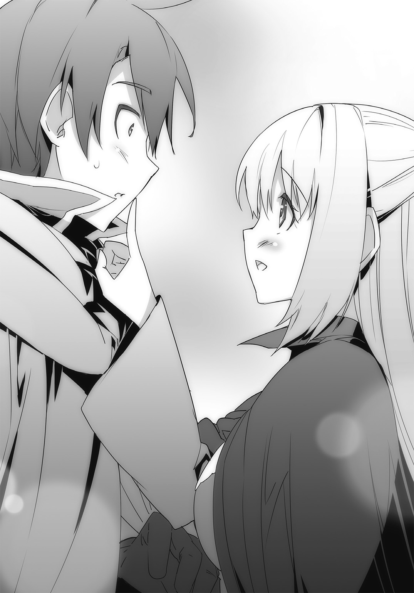
......心から、そう思った。
瞬間――背後から爆音が響き、聞き覚えのある声が響く。
「リョウマ！ ガーネット！ 無事か!?」
「助けに来たよー！ いや、どうなるかと思った！」
振り返ると、アイリスとガーネットがこちらに駆け寄ってくるところだった。
塞がっていた壁には、先程と同じかそれ以上の穴が空いている。
煙が上がっているところを見ると、強制的に穿たれたものだろう。
「ふう。やっと繫がったよ。危うく持ってきた魔導筒が尽きるところだった」
一番後ろから、ココが埃を払いながら姿を見せた。
「一個や二個じゃまるで効果がなかったからね。まとめて十個以上をぶつけてようやくだよ」
「ありがとう。助かったよ。さすがココだな」
オレが手を差し出すと、彼女は一瞥してから、鼻の頭を搔いた。
「ま......これくらい大したことはないけどね」
視線を逸らしながら、照れ隠しのように言って、手を握り返してくる。
「ガーネットに怪我はないようだったが、お前はなんともないか？ リョウマ。傷ついているというのなら隠さずに言うのだぞ」
アイリスがオレにくっついてくると、状態を調べるために体のあちこちを触ってきた。
「へ、平気だって。問題なし。大丈夫だから！」
出会った時も思ったけど、自覚なしに大胆なことするな、この子は。
『聞いてくれよお嬢。体はともかく今し方結構な窮地にあったんだぜ。なんたって兄弟がガーネットに』
「さあ、時間が惜しい。出発しようか、みんな！」
マンゲツの顔に当たる部分を思いきり叩くと、オレは大声を出して歩き出した。
「む？ リョウマがガーネットに何だというのだ？」
『いやだから、さっき二人きりの時に、兄弟が』
「マンゲツ？ 何もありませんでしたよね？」
尚もアイリスに話そうとするマンゲツに、ガーネットが笑いかけた。ただし目は少しも笑っていなかったが。
「何もないのに、何かあるように吹聴するのは、あまりよろしくない行為だと思いますよ？ わたくし、道に外れたことをするモノは、人であろうと鎧であろうと、許さないことにしているのですが」
『............あ、はい』
ガーネットから滲み出る異様なほどの迫力に、さしものマンゲツも、口を噤まざるを得なくなったようだった。......やっぱり彼女は、強い。
「ふむ、よくわからないが、噓をつくのはよくないぞ？ マンゲツ」
『お、おう。気をつけるよ』
マンゲツが引きつったような顔になると、アイリスは「うむ、マンゲツは良い子だな」と満足そうに鎧を撫でてきた。
「しかし二人が無事でよかったよ。やっとこの探検も終わりってところだったのに、何かあったら最悪だもんね」
「え、ってことは？」
ライラの言っていることが意味しているのは、一つしかない。
オレ達は穴から出ると、本来、行くはずだった右の方へと進んだ。
警戒はしていたものの、道中に襲撃が起こることはもうなかった。
そして、やがて見えてきたのは――途方もなく大きな空洞だった。
「ひょっとして、ここが......」
「うん、そう。さっき地図で確認したけど間違いない。この場所がボク達の目的地」
オレの呟きにココが答えてくれる。
「――大胃だ」
さながら、桃色の鍾乳洞といったところだろうか。
空間の全面は百年獣の粘膜で覆われていて、明苔の光で不気味に照り返している。
足元に広がるのは、胃の下半分を占めるエメラルドグリーンの液体だ。ココの話によれば、これは胃液なのだという。小胃にも一応あることはあるらしいのだが、ここと違って目が覚めている時にしか分泌されないらしい。
そして――溶かしきれなかった巨大な岩石がごろごろと転がる中、一つだけ、まるで場違いなものが残されていた。
「......あれが、虹光石か」
美しい、そんな、何の飾り気もない言葉しか出てこない。
オレの中のつたないボキャブラリーでは、表現する適切な単語が見当たらなかったのだ。
赤と蒼と翠と黄、それに金と銀と紫と――。
ありとあらゆる色を閉じ込めているのに、まるで混ざり合うことはなく、まるで共存し合っているように、時折放つ光を変えた。
今まで生きてきた中で見たどんな宝石よりも、あるいは美術品よりも、他に比べようのないくらいの価値があるように思える。
正直、これを持って帰って剣に溶かしこんでしまうというのが、もったいないとすら感じた。
「見事なものだな。これが本当に、魔獣が食したものの集合体なのか」
アイリスが魅せられたような表情で感想を述べる。
「我が国の宝物庫にすら、あのような素晴らしいものはありませんね......」
感嘆の息をつくガーネットの傍を、ココが通り抜け、虹光石へ向かっていった。
「見惚れるのもいいけど、早く回収して帰らないと。思ったより時間を食ったからね」
ココは足元に転がっていた眩い石を手に取り、振り返ると、こちらへと放り投げる。
そして、慌てて受け止めたオレに向かって言った。
「もしかしたら、ここにいるのもそろそろ限界かもしれないし」
「ん、そうだね。じゃあ、そろそろ帰ろっか。どの辺りに穴を空ける？ あそこでいい？」
ライラが適当なところを指差すが、ココは首を横に振った。
「大胃の壁は分厚いからちょっと無理だね。小胃を使おう」
わかった、と返してから、オレ達は来た道を引き返し始める。
「......っと？」
だが、一歩目を踏み出した時だった。オレはバランスを崩し、よろめいてしまい、傍の壁に手をついて事なきを得る。
「どうされたのですか、リョウマ様？ まさか、先程の化け物との戦いで怪我を？」
ガーネットが心配そうに走ってくる。しかし――その彼女も、何でもないところでふらついた。
「あ、あら？ わたくしも知らないうちにどこかを打って......？」
「いや、違うよ。ガーネット。ねえ、ココ。――なんか、揺れてない？」
ライラが注意深く周囲を見回す。言われて初めて、オレも気づいた。確かにそうだ。小刻みに周りが震えている。
『んだよ、こんな時に地震か？』
「いや、違うぞ、マンゲツ。地震の揺れにしては妙だ。これは、一体なんだ？」
アイリスが疑念を呈している間にも、少しずつ、少しずつではあるが、振動は大きくなっていく。
「これは............まさか！」
ココが何かに気づいたような表情で頭上を仰ぎ、舌打ちする。
「みんな、早く移動するんだ！」
「どうしたんだ、ココ。なにかわかったのか？」
「これは地震じゃない。――百年獣が、目覚めたんだ！」
ま、まじかよ!? まだもうちょっと余裕があるんじゃないのか!?
「さっきリョウマ達を助けるために使った魔導筒が、胃壁を傷つけたせいかもしれない」
「そ、そんな......！」
悲痛な声を上げるガーネットに、ココが叫んだ。
「とにかく、このままじゃまずい。吸い込んだ物があっという間にここまでやってくるよ！」
それは、確かに尋常じゃなく危険そうだ。
オレ達は目を合わせると頷き合い、急いで駆けだした。
そうこうするうち、揺れは踏ん張っていなければ立っていられないほどの規模にまで発展している。
気をつけなければ転んでしまいそうな中、オレ達はなんとかして、大胃を抜けて小胃へと続く道を急いだ。
だがすぐに、前方から吹きつけてくる突風に、足を止められた。
「ココ、これってもしかして、百年獣が辺りの物を吸い込んでるんじゃないの!?」
「――みんな、横に避けるんだ！」
ライラの発言にココが即座に指示を飛ばす。
直後――穴の向こうから、無数の何かが飛んできた。
「うわっ!?」
慌てて近くにいたアイリスとガーネットを庇いながら、オレは後方へと跳躍する。
まさに間一髪。
前方を――礫というにはあまりに大きい岩や草木が猛速度で通りすぎていった。
「行くよ！ 次が来る！」
ココが言って、オレ達は移動を再開する。
風に抗うようにして進むため、なかなか前に行くことができなかったが――。
それでも小胃へと無事に辿り着くことができた。
「よし、少しだけ待って。この辺りに魔導筒を仕掛ければ――」
ココがしゃがみこみ、鞄から取り出した爆弾を下に置こうとする。
まさにその時だった。
今まで以上の突風が吹き、オレ達は堪えきれずに吹き飛ばされる。
魔導筒が宙へと浮かび上がり、ココが目を見開いた。
「面倒をかけさせる......っ！」
彼女は暴風の中を走ると、跳躍し、それを摑もうとする。
「――やめろ、ココ！」
寸前で、オレは声を張り上げた。
しかし、ほんのわずか遅い。
ココを目がけて――百年獣の吸い込んだものが、轟音と共に殺到した。
ひと呼吸をする間もなく、鈍い音が連続し、ココのらしからぬ悲鳴が聞こえてくる。
「ココッ......！」
ライラが焦燥のこもった声音で呼びかけ、駆け寄った。
オレ達も急いで向かう。
不幸中の幸いというべきか――大胃へと続く道は今、閉ざされていた。
恐らくこうやって吸い込んだ物を小胃の所々で留めておいて、各所で少しずつ溶かしていく構造になっているのだろう。
だから、ココはまだこの場所に残っていたんだけど......。
体のほとんどが、瓦礫の山に埋もれてしまっていた。
「おい、ココ、大丈夫か。ココ！」
声をかけると、やや間をあけて、彼女は閉じていた目を開けた。
「......なんとか、ね」
言葉とは裏腹に、口調には力がない。
「待ってろ。今助けるからな！」
オレは、瓦礫に手をかけて、どかそうとした。
だが、びくともしない。岩石が幾つも重なっているようで、とんでもない重さになっているようだ。
「みんな、手を貸してくれ！」
ガーネット達に助けを求めて、協力したけど、やっぱり無理だった。
「どうする、リョウマ。何か方法を考えなければ！」
アイリスの訴えに、オレは奥歯を嚙み締める。でも、どうすればいい。
このままじゃまた、前から同じような瓦礫がやってくる。それも一度や二度じゃないんだ。
じっとしてたら、オレ達までココみたいになってしまう。そうなってしまえば、本当に絶望的な状況に陥ることになる。
なにか打開策はないのか。あるはずだ。あと少しだ。あと少しで何もかも上手くいくはずだったんだ。
諦めるな。考え続けろ！
「くっ......何かないのか。何か......！」
瓦礫に思いきり拳を叩きつけ、オレが零した時。
「――もういいよ、リョウマ」
信じられないことを、ココが言った。
「もういいんだ。このままボクを置いていってほしい」
「バカ言うな！ 絶対に助ける！」
強く言い返したが、彼女は尚も力なく首を横に振る。
「どう考えても今の状態じゃ脱出不可能だ。キミ達がここでこうしているうちに百年獣は次々に周囲のものを取り込んでいくだろう。じっとしているのは危険すぎる」
「だからってお前を見捨てて行けっていうのか!? ふざけるな！」
「冷静になるんだ、リョウマ！」
ココを怒るつもりが逆に叱咤され、オレは愕然となった。
「イルタインには優秀な技術者がいる。なんならボクの両親に頼んでもいい。わかるだろう。キミが虹光石さえ持ち帰れば、リベリオンは強化できるんだ」
「そのような問題ではありません。あなた、自分で動くことすらできないではありませんか。放っておいたらどうなるか......！」
ガーネットも熱っぽく訴えかけるが、ココはそんな彼女に向かってあくまでも淡々とした調子で言う。
「そのような問題なんだよ、ガーネット。目的をはき違えちゃいけない。ボク達がここに来たのはリョウマの戦力を増すためだ。ボクのために全滅してしまうことだけは避けなきゃいけない。わかったら早く行くんだ」
ココは、かろうじてといった感じで手をオレの方へと差し出してくる。中には魔導筒が握られていた。
「魔導筒の最後の一つだ。これで脱出してほしい。起動方法はボクが言った魔導言語を唱えるだけでいいから」
「ココ、でも......！」
「時間がない。早くするんだ！」
有無を言わせぬ口調でオレに叫ぶココ。
実際――揺れは最初とは比べものにならないくらいひどくなっていた。
おまけに絶えず突風が吹いていて、そのたびに岩や木や土くれが舞い込んでくる。
幸いなことに先程のように纏めてってわけじゃないが、いつその瞬間が訪れてもおかしくはなかった。
「気に病むことはない。ボク一人をここに放置してキミ達が進む方が、どう考えても理屈に合ってる。創族のみんなだって、非難するはずはない」
ココがわずかに口の端を持ち上げて、オレを説得してくる。いや、これは、彼女なりにこちらを気遣ってくれてるんだろう。だけど、普段ならあまり見ないことをしている時点で、相当に追い詰められているということを感じ、オレは寧ろ心が痛んだ。
オレは視線を逸らし、奥歯を強く、砕けるほどに嚙み締めた。
様々な考えが頭を過ぎり、逡巡し、苦悩する。
でも。
「......みんな」
やがてオレは立ち上がると、絞り出すようにして言った。
「みんな――ここを出よう。確かに今のままじゃ危険だ」
「リョウマ......」
アイリスが何かを伝えようとする声を遮って、オレは続けた。
「ただし、オレは残る」
「......なにを言ってるんだい」
ココが目を見開いた。今聞いたことが間違いであるかのように、オレを睨みつけてくる。
「キミは人の話を聞いてるのか。キミがいなければ意味がないんだよ。三年前も今も。キミを求めてる人がいるんだろう。だったら感情に従うより、先を見据えて動かなきゃダメじゃないか。そんなことだからボクは、キミを――」
「そんなこと、どうだっていいんだよ！」
もう我慢できなかった。オレは瓦礫に手をかけると、力を込めて持ち上げようとする。
「オレに価値があるとか必要だとか！ ココの話は正しいのかもしれない。だけどオレは嫌だ！ お前を見捨てて自分だけ助かって、それでよかったなんて思えない！ だからオレはお前を助ける！」
びくともしない岩石を、それでもオレは全身全霊をかけて押し上げる。
「......キミは、本当に馬鹿なのかい？ 自分がどれだけ愚かなことをしているのか、非合理的なことをしているのか、理解しているのかい!?」
「ああ、馬鹿だよ！ オレはな、大馬鹿なんだ！ だから先のことなんてわからない。目の前に見えてる誰かを助けることしかできない！」
三年前だってそうだ。オレに力があるから使命を受け入れたんじゃない。
ガーネットが、四大聖国の人達が困っているから。
自分のできる範囲で手助けしたいって思っただけなんだ。
オレは賢くなんてないから――それくらいしか、できないんだ。
「合理的かどうかなんて知ったことか！ オレはお前を救ってみせる！ 文句なんか――文句なんか、言わせないからな！」
一つ目の岩を強引に持ち上げて、横に落とす。だけどまだ岩は幾つも積み重なっていた。即座に二つ目へと移る。
「みんな、そういうわけだから、先に逃げてくれ。大丈夫。絶対にココを連れて帰る！」
振り返って断言した。これは、オレの覚悟の証明でもある。残るからって、易々と死ぬつもりはなかった。
「くっ......ぐっ......あああああっ！」
ひときわ大きな岩を、それでもどかそうと、オレは歯を食いしばる。
「......あああああっ！」
そこへ、別の力が加わった。視線を傾けると、アイリスが同じようにして肩で岩を押し上げようとしている。
いや、彼女だけじゃなかった。ガーネットやライラまでが、懸命にオレに協力してくれていた。
「リョウマ様を一人残して、逃げるわけにはまいりません......！」
「そうだよ。戦族の矜持にかけて、やってみせるから！」
ガーネットとライラがそれぞれ言って、岩に摑みかかる。
「リョウマとココを救えずして......帝国臣民全てを救うことなどできるものか......！」
アイリスが声を嗄らして叫んだ。
「私も諦めないぞ、リョウマ！ 共に――生きて帰ろう！」
呆然としたあと――オレは胸が詰まって、言葉が出てこなくなる。
俯き、目を閉じて、静かに零した。
「......ありがとう」
突風。
そんなオレ達の行為を嘲笑うように、衝撃が襲ってくる。次いで、巨大な瓦礫の塊が怒濤の勢いで迫ってきた。
「みんな、一旦伏せろ！」
オレは呼びかけるが――それより早く、こちらにぶつかるより前に、瓦礫は砕けて四方に散った。
『おいおい兄弟。おれを忘れてないかってんだ！』
マンゲツが防御壁を張りながら、誇らしげに言い放つ。
「さすがだ相棒！ よし......行くぞ――ッ！」
力を合わせ、オレ達は一つ、また一つと瓦礫を崩していった。
その間にも百年獣は次々と様々なものをのみ込んでいき、周囲に積み上がっていく。
少しずつ胃液で溶かされていくようだけど、到底追いついていなかった。多分、ここを一杯に埋め尽くすまでは現状が続くんだろう。
「やめるんだ、みんな。早くしなければ、ここから出ることすらかなわなくなるんだよ!?」
ココが必死に警告するも、オレ達は聞いていなかった。いや、聞かなかったという方が正しい。
ただ眼前にある障害を取り除くことのみに心血を注いでいて、それ以外のことに気を遣ってる暇はなかったのだ。
そして――。
「これで......最後だッ！」
オレ達はようやく、なんとかぎりぎりで、最後の瓦礫を排除し終えた。
「よし。ココ、逃げるぞ！」
オレは倒れ込んでいるココに肩を貸して、みんなと共に歩き始める。
ほとんど隙間もなくなってしまった小胃の中をどうにか通り抜けながら、奇跡的にわずかに見えていた胃壁に魔導筒を置くと、距離を取る。
「よし――いいぞ。ココ、頼む」
「くっ......まったく、キミ達は......」
「はいはい。そういうのはあと！ 時間ないよ！」
ライラから急かされ、ココはため息を一つつき、呟いた。
「――【点火】」
爆音が轟いた。尋常じゃない量の煙が噴き出し、周囲にあった瓦礫をも押しのける。
やがて姿を見せた、大きな穴を通り抜けるため、オレ達は駆けだした。
その時――何度目かの風を背中越しに感じた。オレはぞっとして、みんなに指示を出す。
「――飛ぶぞ！」
同時に足元を蹴って、外へと脱出した。外の眩い光に頭がくらむような感覚を覚えながら、ココを抱きしめつつ、地面を転がっていく。
ようやく止まってから体を起こすと、アイリス達も同じように近くに転がっていた。
次の瞬間、凄まじい音と共にオレ達が出てきた穴が瓦礫で塞がれる。
間一髪っていうのは、こういうのをいうんだろうな。危なかった......。
目の前で岩山が、よく観察しなければわからないほどゆっくりと移動していく。
百年獣が、空が皹割れんばかりの咆哮を上げた。
オレ達はこれ以上の被害を避けるために、ココを支えながらその場から離れる。
そこで、ようやく――腰を落ち着けることができた。
「......はあ。やっと脱出した」
さすがに、本気でどうなることかと思ったぞ。
「いやあ、なかなか経験できないことしたねえ。いい思い出になるよ」
ライラがにこやかに言い放った。ただ、申し訳ないことに、オレはそこまで前向きに思えない。
「しかしどうにか目的の物は手に入れることができたな。みんなも無事のようだし、何よりだ」
「ええ。終わりよければ全て良し、ですね」
アイリスとガーネットが和やかに会話を交わし合った。
「――全然よくないよ」
唯一不機嫌なのが、ココだ。
彼女はオレの手を振り払い、胡坐をかくと、鼻を鳴らした。
「リョウマ。キミはどうやら相当に覚えが悪いらしいね。ボクがあれほど忠告したのを聞いてなかったのかい？」
「いやあ、そんなことは。ちゃんと記憶してるよ」
「だったら、どうしてあんな無茶苦茶なことができるんだい。言ってることもわけがわからないし、どうかしてるとしか思えないよ！」
身を乗り出して、ココが鋭い目つきでオレを睨みつけてくる。
「たまたま上手くいったからいいものの、もし四人ともあそこで瓦礫に潰されちゃってたらどうするつもりだったんだい!?」
「いや、それは......その。なんとかしたさ」
「なんとかって、どうなんとかするの？」
「そりゃ、あれだよ。あのー......こう、上手い具合に、ががーっとさ。はは」
「具体性がない！」
一刀両断されてしまった。いやオレもさっきの答え方はどうかと思ったけどさ。
「ああ、もう、キミは本当にどうしようもない......！」
頭を搔き回して、ココがやりきれない思いを吐き出すように声を上げた。
「......悪い。でもさ、お前を助けなきゃって思うと、あとのことは何にも考えられなくて」
ただ無我夢中でやってしまったんだよな。
「だからって、あんなことを――」
「ところで、ココ、歩けるか？」
「......え？」
「いや、ここから下山しなきゃいけないだろ。歩けるかなって。なんならオレが背負っていくけど」
「.........キミねえ。今の自分の立場、わかってるのかい？ 一応ボク、キミを説教しているんだけど」
「いや、わかってるけど」
オレは曖昧に笑みを浮かべながら、理解し難いといった顔のココに答えた。
「なんていうか、ちょっと、心配になったもんだからさ」
すると、ココの顔が、魂の抜けたかのような表情になる。
しばらくしてから彼女は、がっくりと項垂れて、「......ダメだねこれは。やる気なくした」とぼやいた。
「無駄だよ、ココ。リョウマってこういう人だからさ」
なぜだか慰めるように、ライラがココの肩に手をかける。
「そうだな。何をどう是正しようとしても、リョウマがリョウマであることは、覆せない」
「ええ。ですからココ、この方を理屈で丸め込もうとしてもダメですよ」
アイリスとガーネットが交互に言うと、ココは天を仰いだ。
「......どうやら、そうみたいだね」
なんだか褒められているのかそうでないのかわからないけど、とりあえずココの怒りは収まったみたいだから、いいか。
「いや、でもよかったよ、ココ」
「......なにが？」
「決まってるだろ。――お前と一緒に、帰れそうだからさ」
口元を緩めながらそう言うと、ココは面食らったような顔つきになった。
「......まったく、キミは」
顔を背け、ぼそりと呟く彼女の頰には、わずかな朱が差している。
『お、兄弟、さすがだな。このむっつりちびっ子の心まで奪いやがったか。いや、罪な男だな』
「なに!?」「なんですって!?」「ちょっと、ココ!?」
アイリス、ガーネット、ライラが色めき立った。しかしココは、咳払いと共に手を振る。
「そんなわけないだろう。寝言はベッドで言うものだよ、鎧クン」
『本当かよ？ だったらなんでまだ顔が赤いんだ？』
「う......うるさいな。なんでもないよ、これは！」
こちらに背中を向けると、ココはなにかを誤魔化すようにして大声を出した。
「さあ、とにかく帰ろう。目的の物は手に入れた。いよいよ――リベリオンを、完全な姿で生まれ変わらせるよ」
リベリオンを強化するためには、一旦虹光石と混ぜ合わせる必要があるため、それなりの時間がかかってしまうとのことだった。
「多分、突貫でやっても一日はかかると思うから。それまで、適当に時間を潰していてほしい」
オレクへ帰還するなりココはそう言ってリベリオンを預かると、かわりに別の剣を差し出してきた。
「これ、ボクが最近作ったもの。とはいえ、特別な能力はないんだけど。まあ、新生リベリオンができあがるまでの代わりに使ってほしい」
「ああ。ありがとう。でも、いいのか？ 体の調子、悪いんじゃないのか」
ココの自宅へ戻ってきてから一応、休んだものの、まだ数時間くらいしか経っていない。
「問題ないよ。手が動けば仕事はできる。ほら、集中したいから、早く出て行って」
ココは肩を竦めると、オレの背中を押して家から追い出そうとしてきた。
「わ、わかった。じゃあな。冒険まで付き合ってもらって、何から何まで世話かけるけど」
「好きでやってることだから気にしなくていい」
ぶっきらぼうに告げてから、ココは家の奥へと引っ込んでいく。
「へへ、あれ、照れてるね」
ライラが面白がるように言った。
「うむ。段々とココがどんな人物かわかってきたぞ。最初は少し驚いたが、私は彼女が好きだ」
アイリスが腕を組み、頷きながら述べる。
「ええ。なんだかんだ言って、素直じゃないだけで、良い子なんですよね」
ガーネットも微笑ましそうに同意した。
「――そこ。余計なこといつまでもくっちゃべっていない」
ひょっこりと顔だけを出して、ココが睨みつけてくる。
オレ達は余計な怒りを買わないうちに、慌てて家を出た。
「しかし時間を潰せって言われてもな。どうする？」
ココから借りた剣を腰に差しながら、オレはみんなに尋ねる。
「せっかくですし、買い物でもしましょうか。この街では創族が作り上げた最新鋭の道具を売っているはずですから」
「うむ、それは面白そうだな。なにか旅の役に立つものがあるのかもしれない」
ガーネットの提案にアイリスが乗った。
「あたしは食べ物屋でも行こうかなあ。創族のお店なんて、あんまり美味しそうじゃないけど」
ライラが首を傾げつつ、思案した。するとアイリスが「そっちもいいな！」と素早く反応する。同時に、盛大に腹の音が鳴って顔を赤らめた。
オレは、頰に両手を当てて「は、はしたない......」と恥ずかしがっているアイリスの頭を、笑いながら軽くぽんぽんと叩きつつ、
「オレは、街のあちこちでも見て回ろうかな。よく考えれば着いてからゆっくりしていなかったし」
「まあ。ではわたくしもそちらにお供します！」
「ガーネット、自分の考え変えるの早過ぎじゃない!?」
あまりの変わり身にライラが目を丸くしたが、ガーネットは素知らぬ顔でオレの腕を摑む。
「いいでしょう？ リョウマ様。途中、いいお店があったら一緒に巡りませんか」
「ん、いや、そりゃいいけど」
「じゃあ、あたしも行く！」
素早く手を挙げ、空いた方のオレの腕に自分のそれを絡ませてくるライラに、アイリスが「わ、私もそうするぞ！」と続いた。
「その、食べ物屋とかあったら、寄ってみたりなんかしてもいいかもしれない。いや、強制はしないが！ しないがリョウマも冒険のあとでお腹が空いているだろうし、ここは一つ行ってみるのもありではないかと......思わないでもないことを、勧めてみる感じがしている、私だぞ！ なぜって今日はよく晴れているからな！」
「アイリス、焦って言ってることが支離滅裂になってるぞ」
そんなにお腹減ってるのか？
「......じゃあ、まず、どこか食事できるところに行くか」
そうしないと、アイリスも安心できないだろうしな。
オレはどこか適当なところがないかと街を歩くことにした。
と――そこで、前から歩いてくる人物に、なんとはなしに目をやる。
ローブのフードを目深に被った、性別不明のその人物が、妙な動きをしていたからだ。
足元がおぼつかない様子で、あっちへ行ったりそっちへ行ったりと落ち着きがなかった。昼間から酔っているのかと思ったけど、もしかしたら体調不良かなにかかもしれない。
心配になったオレが注意深く見ていると――その人は、何かに蹴躓いたように倒れてきた。
「おっと。......大丈夫ですか？」
ガーネットとライラが放してくれたので、咄嗟に支えると、その人はか細い声で答えた。
「ありがとうございます。......その、少しあなたにお願いがあるのですが」
女性特有の高い声音に対して、オレが「なんでしょう？」と問い返した途端。
「――動くな。動けば切る」
首筋に、冷たい感触が伝わった。
見なくてもわかる。刃物を突きつけられていた。懐に入られていたため、避ける暇がなかったのだ。
「な、なんですか、あなたは!?」
ガーネットが慌てて指を突きつけると、女性は先程までの動きが噓のように身軽な動作でオレの背後へと回り、改めて喉元にナイフを当ててくる。
「他の者も同様だ。少しでも妙なことをすればこの男を殺す」
「ちょっと。なんのつもり!?」
ライラがいきり立ってハンマーに手をかけた。すると女性はオレに当てたナイフをわずかに押し込んできた。鋭い痛みが走る。
「言うことを聞け。ワタシは本気だ」
押し殺したような微かな声に、ライラが手を止めた。
「......何の目的があってリョウマを狙う」
アイリスが問い質すと、女性は冷淡な口調で返す。
「この男だけではありません。全員に用があります」
......どうしてアイリスにだけ敬語なんだ？
オレが疑念を抱いた時――周囲に、影が降り立った。
いずれも女性と同じくローブを頭から被っていて、不気味な威圧感を放っている。
「ご安心ください。大人しくしていれば危害は加えません。......我々に同行してもらおう、クロセリョウマ」
「あんた、一体誰なんだ......？」
「答える必要はない」
女の返答と共に、周囲に展開した集団は、揃ってローブの下から長剣を取り出した。
黒雲の下で、銀の輝きが不気味に照り返す。
「自分の正体も伝えず、一方的に武器で脅すような相手に、ついていくと思うか？」
「現状を把握すれば、それもまた然りだろう？」
余裕ぶった態度で、刃をちらつかせる相手に、オレは苛立ちを覚えた。
随分と、嘗めてくれるな......。
「だったら、変えてやろうか？」
「......なにをだ？」
「現状を、だ！」
オレはあえて、前に踏み出した。ナイフの刃が滑り、肌を切り裂いていく。
だが、まさかそんな行動に出ると思っていなかったのだろう。力は入っておらず、傷は浅いものに留まった。
オレはココから借り受けた剣を抜くと、振り返りざまに相手へ斬りつける。
「貴様......ッ！」
ナイフでそれを受け止めると、女性が踊るように攻撃を仕掛けてきた。
瞬く間に連続した衝突音が響き渡る。オレは果敢に突っ込んでいくが、いずれも受け止められ、弾かれた。かなりの実力者だ。
リーダーらしき女性が反撃を受けたのを見て、周囲の者達が動き始めた。
しかしいずれも、アイリス達によって阻まれ、前進できていない。
『どこのどいつか知らないが、兄弟に手を出すとは運の悪い野郎だな！』
加えてマンゲツが防御壁を張ってくれたので、彼らは完全に手出し不可能になった。
「リベリオンを手放した隙を狙ったが、剣の腕もなかなかのものだ。さすが皇帝を倒した英雄ということか」
何度目かのオレの攻撃を流しながら、相手が踏み込んできた。オレは刃の先で向けられた得物を絡め取り、弾き飛ばす。
「そういうことだ。悪いが――少し痛い目を見てもらうぞ！」
懐へと飛び込むと、オレは剣を逆手に持ち変え、柄頭で相手の顎を打とうとした。
だがその寸前、鼻が奇妙な匂いを嗅ぎ取る。
甘い果実のような香りに眉を顰めた直後――オレは脳味噌を揺さぶられたような気分になり、足元がぐらついた。
思わず膝をつく。こめかみを押さえ、目を閉じるが止まらない。
「我が一族に代々伝わる妙薬だ。わずかでも吸い込めば意識を喪失し数時間は目覚めない」
しまった。油断していた。
オレはどうにかして立ち上がろうとしたが、体はまったく言うことを聞いてくれない。
「さっきから一体何の騒ぎを起こして......リョウマ!?」
視界の隅で、家から出てきたココと目が合った。
「に......げろ......ココ......」
ようやくのことで、オレはそれだけを絞り出す。
体勢を保つことができなくなって、その場に倒れ込んだ。
目の前がチカチカとして、保とうとする意識が徐々に削り取られていく。
やがて――。
オレは、闇に落ちた。
第三章 少女の邂逅
彼女はいつものように、ただ、バルコニーでじっと佇んでいた。
目の前では蒼穹の下、山々が連なり、遙か先まで続く様子が展開されている。
鬱蒼と茂る緑の中、所々で花々が彩る様は、まるで一流の職人が紡ぐ上質なタペストリーにも似た美しさを誇っていた。
遠目には小さく見える滝の流れに、飛行する竜が絡み、離れていく。
まるで一枚の絵画の如き様を見せる、風光明媚な景色は、見る者に感動を呼び起こすものだった。
しかし、彼女にとっては何年も前から見慣れた光景にすぎない。故に何の情動も湧かずに、ひたすら黙然と眺めるのみだった。
......あれから何年が経ったことだろうか。
自分を取り囲む、人々が夢見る理想郷の如き、俗世離れした小さな世界。
かつて一時、ここを出て暮らしていたことが、まるで夢物語のようにすら思えていた。
だが、そうではない。あれは確かな現実だったのだ。
その証拠が、間もなく、訪れるはずだった。
「――お連れしました」
控え目なノックの音と共に、小さく告げられる。
彼女は前を見据えたままで、入りなさい、と静かに言った。
やがてドアの開く音と共に、四つの気配を感じた。
「失礼致します。ご指示の通り、アイリス様をお連れしました」
そのうちの一つが厳かに声を発する。
「ご苦労様でした。下がっていいですよ」
わずかな間のあと、失礼致します、という言葉と共に三つの気配が消え去った。
ドアが閉まり、場には彼女とあと一人だけが残される。
「一体なんのつもりだ。お前は誰だ。ここは一体どこなのだ」
凜としているが、明らかに敵意の滲んだ声で、背後の相手が問いかけてきた。
「リョウマ達はどこにいる。事と次第によってはただでは済まさんぞ」
虚勢ではない。後ろの相手は本気で脅しにきていた。
ここがどこかもわからない。相手にしている自分が誰かも知り得ていないというのに。
大した度胸だ、と思うと共に、似ている、と彼女は思った。
初めて自分がこの国に住む者以外で名を覚えた人間に。
あの人の――若い頃に。
「さすが、親子というべきですね」
彼女が呟くと、相手は沈黙した。意味がわからず、訝しんでいるのだろう。
「あの方もそうでした。相手がたとえどのような人間であろうと己を曲げず、正面から立ち向かい、決して退くことはありませんでした。昔、ガルフレアがまだ小さな国だった時、臣民はそうした王を心から崇敬し、つき従っていたものです」
「......なぜ、お前が我が国のことを知っている？」
警戒というよりも、疑念の方が増してきたような口調で、背後の人物が尋ねてくる。
「当然でしょう。わたしは帝国のことであれば何でも知っていますよ。恐らくは、アイリス――あなたよりも、ずっとね」
身に纏ったドレスの裾を翻しながら、彼女は振り返った。
眼前に立つ、紫がかった黒髪を持つ少女を視認し、口元に微笑みを浮かべる。
自分の知っている彼女とは、まるで違っていた。
当然だ。あれからもう、十年以上は経ってしまったのだから。
しかし――それでも、嬉しい。
相貌の微かな部分に、当時のおもかげが残っていた。
少し吊り気味の目に、瑞々しくふっくらとした頰に、そして――。
自分と同じ、尖った両耳に。
「大きくなりましたね、アイリス」
久方ぶりに名を呼んだ。
この時をどれほど待ち侘びただろう。
この瞬間をどれほどに望んだことだろう。
ようやく会えた。
アイリス＝ナクナ＝フェルモント。
彼女が誰よりも愛した――存在に。
「わたしを、覚えてはいませんか？」
アイリスが眉を顰めた。眉間に皺を寄せ、小さく唸り、迷うように目を泳がせる。
「無理もありませんね。あなたはまだ言葉さえ喋れぬ幼子だったのですから」
駆け寄り、抱き締めたい衝動を抑えながら、彼女は言った。
「アイリス、わたしは――」
真実を、口にする。
瞬間、アイリスの目が、大きく見開かれた。
※
穏やかな風が顔を撫でていき、オレは、うっすらと目を開けた。
ぼやけた視界の中、覚えのない天井が映る。
複雑な線が引かれ、中央部に太陽に似た紋様が刻まれていた。
「......ここ、どこだ」
少なくとも、野営に使っている洞窟や、旅の途中で寄った宿屋じゃない。
まるで寝すぎてしまった時のように、まだ頭がぼんやりとしていて、はっきりしなかった。欠伸を嚙み殺し、オレは体を起こす。
ベッドに寝かされていた。それもかなり豪華なものに。
既視感があるな、と思ったら、アイリスに召喚された時に似ていたのだ。
部屋も、内装や調度品こそ違いがあるものの、大体造りは同じだった。
まさか、ガルフレアに戻ったわけじゃないよな。オレは目を擦りながら、ベッドから降りた。
「あ......リョウマ様。よかった。お目覚めになられたのですね」
室内にある椅子に腰かけていたガーネットが立ち上がり、オレの方へと近づいてくる。隣にはライラもいて、ほっとしたように息をついた。
「あたし達はとっくに起きたのにいつまでも眠ったままだからさ。ちょっと心配してたんだよ」
「悪い、二人とも。......アイリスは？」
捜したが、部屋にはガーネットとライラ以外は見当たらなかった。
「申し訳ありません、わからないんです。この部屋にはわたくし達以外いないようで......」
「え、じゃあ、アイリスだけ別のところに移されたとか......？」
「それもわからないんだよね。あたしもガーネットも気づいたらここにいてさ。窓から見えるのは山ばっかりだし、出ようとしたら扉に鍵はかかってるし」
ライラに言われてオレは部屋の入口まで向かったが、なるほど、確かにノブが回らない。
「強引に扉を吹き飛ばそうとしたんだけど、びくともしないんだよね」
「恐らくは何らかの魔法が作用しているのだと思います。ただ、どんなものなのか分析ができなくて......」
ガーネットがわからないくらいなんだから、かなり複雑で高度なものなんだろうな。
「外から出ることは？」
「やってみようとしたけど、ダメだった。何回やっても部屋に戻ってくる。多分、そっちにも魔法がかかってるんだと思う」
渋い顔をして、ライラは腕を組んだ。
打つ手なしってことか――アイリスはどこにいるんだろう。何も情報がない以上、無闇に悪いことばかり想像するのはよくないとは思うんだけど、どうしてもやっぱり不安になる。
多少、乱暴な手を使ってもなんとかしてここを出て、彼女を捜さないと――と、オレは無意識に腰に手をやったところで、そこが心もとないことに気づいた。
「あれ、オレの剣は？」
『兄弟達をこの部屋に放り込んだあと、襲った連中が奪っていったよ。ガーネットやライラの分までな』
胸元でマンゲツが答える。見るから不機嫌そうに目の模様が三角になっていた。
『おれも引き剝がそうとしてたみたいだが、意地でも離れてやらねえって気で耐えてたら、そのうち諦めた』
「そうか......お前だけでも無事でよかったよ」鎧の表面を撫でながら、「そういや、マンゲツは薬が効かなかったんだろ。なにか見なかったか？」
『いや、生憎と。あいつら、兄弟達を大きな袋に突っ込んで、そのまま竜車みたいなのに乗りやがったみたいでな。随分と長く移動していたようだが、どこに来たかまではわからねえ。兄弟と一緒に転がり出た時点でお嬢はいなかったしよ。ちくしょう、おれがいながらみすみすお嬢を......』
悔しそうに零すマンゲツに「あんまり思いつめるなよ」と声を掛けながら、オレは頭を搔いた。
しかし、だとすると、状況を把握する手段は今のところないってことか。参ったな。
「創族の方達は外に出ていませんでしたし、ココ以外の目撃者もいないとなると、助けが来るのは難しそうですね。ここがどこなのかもわかりませんし......」
「ああ。ココはどうしたんだろう......」
ガーネットに返しながら、オレは募る焦燥感をどうにか抑え込み、冷静さを保つよう心掛けた。
襲撃者がオレ達をあの場で殺さなかったってことは、何かしらの意味があるんだろう。だとすれば多分、ココだってそのはずだ。この場所にいないってことは、アイリスと同じく他のところにいるのか。あるいは、あの時に逃げ延びたか見逃されたかのどちらかなんだろう、きっと。そう信じることにした。
「にしても、見事に全部持ってかれたな。武器はともかく鞄まで持っていかなくてもいいのに」
オレはやけにすっきりとしてしまった身の回りをチェックしようと、衣服のあちこちを手当たり次第に探った。が、やっぱり、何にもない。
「......ん？ なんだこれ」
と思った矢先、足元に何かがくっついているのを、オレは摘まみ取った。
ピンバッヂみたいな形をした豆粒くらいの物で、中央に橙色の宝石みたいなものが嵌め込まれている。時折光を放つので、ただの飾りって感じじゃなさそうだけど、意味がわからなかった。こんなもの、買ったことも貰ったこともないはずだけど。
「どうしたの？ リョウマ」
ライラが問いかけてきたが――オレが答えるより早く、部屋に異変が起こった。
ノブが回り、扉が開き始めたのだ。
オレは反射的に飛び退くと、ガーネットやライラを背後にし、構える。
が、意に反して訪れた相手は、落ち着き払った態度でゆっくりと姿を見せた。
頭まですっぽりとローブで覆った人物だ。間違いない。あの時、オレ達を襲った奴らのリーダーだった。
「お前......！ 一体なんなんだ。どういうつもりでオレ達をこんなところに連れてきた！ アイリスはどこにいる!?」
強い口調で問い質すが、ローブの人物は反応しない。
やや間を空けたところで、吐息を一つして、短くこう言った。
「落ち着け」
「落ち着かなくしたのは君だよね」
頰を膨らませるライラに取り合わず、ローブの人物はオレの方へと顔を向ける。
「クロセリョウマ。会わせたい人物がいる。ついてこい」
「その前にアイリスとココの無事を確認させろ。全てはそれからだ」
「要求ができる立場だと思っているのか？」
ローブの人物が部屋に入ってくると同時に、後ろからぞろぞろと同じ格好の人達が続いてきた。全員が、即座に剣呑な空気を纏う。
「教えてくれないなら、ここで一戦始めてもいいんだぜ。武器はなくても魔法は使えるからな」
オレは一切怯まず、寧ろ挑発的な言葉を投げつけた。主導権をあちらに握られたままというのはあまりよくないと判断したからだ。
ガーネットやライラもまたオレの横に並び、同じく戦意を漲らせた。
「......まったく。大人しく怯えてくれていれば面倒がないものを」
ローブの人物は辟易したように呟いてから、オレに向かって垣間見えている口を開く。
「ココなどという奴は知らん。連れてきたのはお前達三人とアイリス様だけだ」
「だったらアイリスはどこにいる」
「安心しろ。あの方はこちらで丁重にもてなしている」
「......本当だろうな」
確認しながら、オレは相手がアイリスに敬称をつけたことに違和感を覚えた。
いや、待てよ。そういえば、こちらを奇襲してきた時もそうだった。アイリスにだけやけに丁寧な話し方してたよな。
彼女と関わりのある人間なのか。でも、帝国だったらわざわざこんなことをする意味なんてないはずだし――。
「信じられないというのも致し方ないことだ。だがこれからお前達を連れていく場所にアイリス様もいる。それで証明できよう」
衣擦れの音がした。相手がローブのフードを落としたのだ。
「我々がアイリス様を傷つけるなどということは万に一つもないことだ。あの方は――この国にとって、重要な存在だからな」
現れた顔を見て、オレは、息を呑んだ。
白磁のような白い肌。切れ長の目。夜明けの空を思わせるような美しい紫の瞳。
端整な顔立ちの左右にあるのは――尖った耳だった。
「あ、あなた達は、まさか......!?」
ガーネットのうろたえる声に、ローブの人物......美しい女性は、微かに頷いた。
「そうだ。ワタシ達は神族。古くより創造神アラムヴェルトに身を捧げ、主の御使いとしてこの世に生きる者達」
彼女に続いて背後にいた人達も次々にフードを取っていく。
その全てが、神族であることを示す尖った耳を持っていた。
「ここは【ファレーナ】。――神族達の住まう国だ」
ど、どうして、神族がオレ達をこんなところに連れてくるんだ。
しかも、あんな目に遭わせてまで。
「クロセリョウマ。アイリス様にお会いしたいのであれば抵抗をせずについてこい。そこで我らの主が話をする」
「神族の主って......あの、滅多に表に姿を現さないっていう？」
意外な展開にライラが目を瞬かせた。
そういえば三年前も、オレが見たのはファレーナから来た使者だけで、主――つまり王様には会ったことがなかったな。
「そうだ。主はもっとも強くアラムヴェルト様の洗礼を受けしお方故、穢れを避けるために滅多に俗世とは関わりにならぬ。このような機会に恵まれたこと、僥倖と心得よ」
滅茶苦茶上から目線なことを言って、女性は踵を返すと、他の人達と一緒に歩き始めた。
「......どうする？」
思わずガーネット達と顔を見合わせて相談するオレである。
「そうですね。このままここにいたところで何も変わりません。ついていくのも一つの方法かと存じますが」
「うん。なんか妙なことしようとしたら、その時こそ反抗しちゃえばいいんだよ。また妙な薬を嗅がされる前にさ」
まあ、そうだな。とりあえず、今は追従しておくのが無難ってところか。
「なにをしている。早くしろ」
居丈高に促され、オレ達は仕方なく部屋を出た。
長い石畳の廊下には、左右に大きな柱が何本も立っている。外には見事な庭が広がり、噴水が絶えず水を噴き出していた。なんとなく、外国の神殿を思わせるような感じだ。
ファレーナ――山の奥にあって、よほどのことがない限りは他国との接触を阻む国とは聞いてたけど、なるほど確かに隔世の感はあるな。
オレやガーネット達がきょろきょろと辺りを見回しているうちにも、女性は他の人達と共に黙々と先を歩き続けていた。
「......あの」
しばらくしてからオレは、思いきって話しかけてみる。
「なんだ」
極めて短く返事が寄越された。
ティタニアの騎士団長をしていて、オレの剣の師匠でもあるロザリも必要最低限のことしか口にしない人だけど、それとはまた違う。
なんていうか、できるならこちらとコミュニケーションを取りたくないと思っているような印象を受けた。
「あなたの名前はなんていうんですか」
女性が足を止める。が――ほんの少しの間だけで、すぐにまた歩き始めた。
「どうしてそんなことを知りたい。何の意味がある」
「いや、別に意味なんてないですけど。ただ、なんとなく。それにそちらがこっちのことを知っているのに、こっちは何も知らないなんて、ちょっとずるくないですか」
「ずるいとか、ずるくないとか。そういう問題か」
「そういう問題です。リョウマ様は気遣って迂遠な言い回しをされましたが、要はあなた方の得体が知れないと仰っているのですよ。それともなんですか。名前を言えない理由でもあるのですか」
ガーネットがむっとしたように追及する。いや、別にそういうことじゃなくて本当になんとなく気になっただけなんだけど......まあいいか。
「そんなものはない。ただお前達に伝える必要性がないと思っただけだ」
「いけ好かない奴ー」
はっきりと言って、舌を出すライラ。そんな彼女の言葉が癪に障った、というわけではないだろうが、女性はやがて短い吐息と共に答えた。
「......フェイラインだ。仲間からはフェイと呼ばれている」
「ありがとうございます。他の人達の名前は？」
「知らないでいい。お前達も喋るな」
命令をされると、周りにいた人達は微かに頷いた。
「神族って、いつもそうだよね。自分達はお前達とは違うんだーって感じでさ。三年前も妙に偉そうに指示飛ばしてきたし。なんでなの？」
ライラが尋ねるのに、フェイは顔色一つ変えずに答える。
「当然だ。我々はアラムヴェルト神の御加護を一身に受けた者。お前達下賤な民とはそもそもから格が違うのだ」
『なんだてめえ、そのクソ生意気な言い方は――むぐっ』
マンゲツが喧嘩を吹っかけようとしたので、オレは慌てて口の紋様を手で塞いだ。
気持ちはわかるが、今は少しだけ大人しくしておいてくれ。無駄な争いは避けたいし、余計な真似をして、またあの部屋に閉じ込められるような羽目にはなりたくない。
「神族が特別なのって、輝術が使えるから、ですよね？ さっき扉や窓にかけてたのもそれですか？」
オレが質問をすると、少しの間だけ沈黙の間があったあと、フェイが頷いた。
「ですが輝術は魔力を消し去る以外に、目立った力はなかったように思いますが......」
「それはあくまで一般的な解釈だ。お前達が知らないだけで、輝術は使い方によって他にも効果を発揮する」
ガーネットが意外そうに言うと、フェイは鼻を鳴らして返し、角を曲がる。
そのまましばらく進むと、やがて、武装した兵士が左右に二人並んだ扉の前に出た。
「連れてきた。通せ」
フェイが命令すると、二人は頷き、それぞれが扉に手をかける。
やがて少しずつ開いていき、内部が明らかになっていった。
「行け。ワタシ達は後ろから見張っているから、妙な真似はするな」
顎で指示され、オレ達は中へと足を踏み入れる。
だだっ広い部屋は、独特の色合いと模様を持つ絨毯が敷かれ、細かな意匠の施された壁に囲まれていた。
天井から下がる垂れ幕には、大きな樹に太陽からの光が差している様子を描いた紋章が縫われていた。
奥の方にはステンドグラスがあって、煌めくような陽光が差し込んでいた。なんとなく、全体的にお城というよりは教会のような趣がある。
「初に目にかかりますね。救世の英雄よ」
流麗な声が響き渡った。ステンドグラスの前にある、豪奢な椅子からだ。
大人の女性らしき人物が、腰かけている。
らしき、とわざわざ使ったのは、顔がはっきりとわからなかったからだ。
純白のドレスに身を包んだ女性は頭に茨を象ったような金の冠を被っていて、そこから薄いヴェールのようなものが下りているので、表情がまるで読み取れない。
「あなたは......」
オレが問いかけるより早く、女性は再び口を開いた。
「わたしはアルヴェーヌ。アルヴェーヌ＝カイエナ＝リザ＝リスティス。――このファレーナを治める者です」
そうか。この人が......そうなのか。
三年前ですら会うことのできなかった、神族の王。
「......待ってください。神族の王は男性ではなかったのですか？ 直接御目通りがかなったことはありませんが、話には聞いています」
ガーネットが困惑したように言うと、アルヴェーヌさんはわずかにヴェールを揺らした。
「いかにも、そうです。しかしそれはしばらく前のこと。前王は――わたしの父は、高齢により亡くなりました。よって、わたしが王位を継いだのです」
「......そういうことでしたか。事情を知らぬ故、失礼致しました」
胸に手を当て、ガーネットが深々と頭を下げる。
「構いません。このことは今のところ、ファレーナの民以外は知らぬことですからね」
「それより、女王様、アイリスはどこなの？ この国にいるんじゃないの？」
ライラが身を乗り出すと、後ろから「不敬な」という声が飛んできた。
「アルヴェーヌ様に不躾な物言いをするな。分を弁えよ」
「なんでよ。あたしだって戦族の長の娘なんだからね」
振り返り、ライラが注意をしたフェイに食ってかかる。
「フン。戦ばかりしか能のない、野蛮な一族の血を引いているからなんだというのだ」
「......よーし、わかった。喧嘩売ってるんだね？」
戦族のことを批判されたことにはさすがに我慢できなかったのか、ライラが拳を鳴らした。
「......やめなさい、フェイ。ライラ＝トールニクス、部下の非礼を代わって詫びます。何卒お許しください」
しかし、アルヴェーヌさんからそう申し出られ、ライラは不満そうにしながらも引き下がった。
「アルヴェーヌ様。オレにお話がある、とのことでしたが、その前にアイリスに会わせてもらえませんか？ そうじゃないと、落ち着きません」
ここはなるべく穏やかにいこうと、オレは丁寧にお願いしてみた。
すると、アルヴェーヌさんはまたヴェールを揺らしてから、答えてくれる。
「わかっています。――アイリスを、ここへ」
指示が出されると、それほど待つこともなく、扉の開く音がした。
「リョウマ！」
聞き馴染んだ声に振り返ると、アイリスが駆け寄ってくるところだ。
彼女は途中で飛び上がると、オレに抱きついて、嬉しげな声を上げた。
「リョウマ！ ――ああ、よかった。お前やガーネット達が何をされたのかと気が気でなかったぞ。再会できてなによりだ」
「ああ。こっちこそ。なんともないか？」
微笑んで尋ねると、アイリスは涙ぐみながら何度も頷く。
「問題ない。お前達こそ怪我などしてないな？」
「ええ、大丈夫ですよ。この通り、傷一つありません」
「よかったー。アイリス、もう会えないんじゃないかと思ったよ」
ガーネットが笑いかけ、ライラがアイリスの頭を撫でた。
『お嬢、うう、お嬢......！ よかったぜ。本当によかった。もしお嬢になにかあったら、兄弟と一緒にこの国を草一本、虫一匹残さない荒地に変える――うぐぐ』
だからマンゲツ、お前は余計な口出しをするんじゃないって。
「ありがとうございます。おかげでほっとしました」
アイリスを傍に置いたまま前を向くと、オレはアルヴェーヌさんへ言った。
「それで――改めてお尋ねします。オレに、話とはなんでしょうか」
「ええ。......クロセリョウマ殿。かつてこの世界を救い、そして、今、アイリスを手助けしてくれているあなたにお伝えしなければならないことがあります」
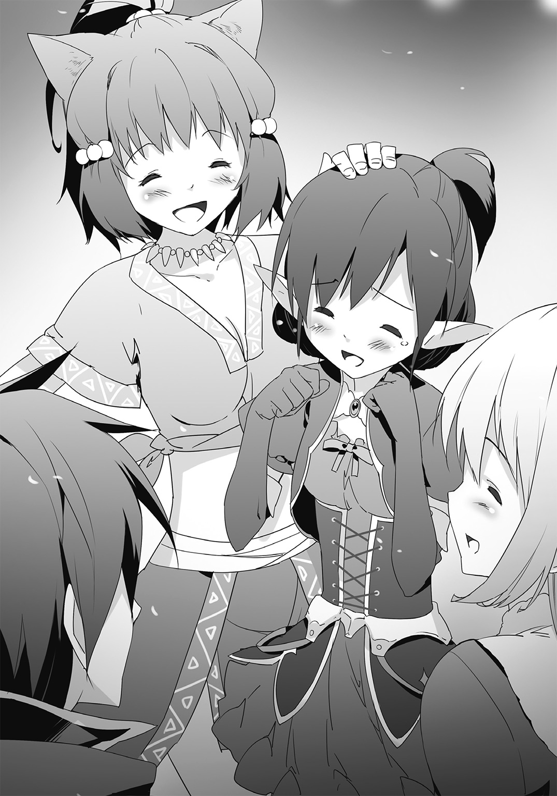
ヴェールを通しても、オレにはわかった。
目の前の相手が、こちらを真っ直ぐに見つめていることを。
「わたしは、アイリスを――」
やがて透き通るような声で、アルヴェーヌさんは言った。
オレにとって......衝撃的すぎる、台詞を。
「――娘を、この国に迎え入れます。よって、あなたの旅はここで終わりということになります」
「............え？」
自分の耳を、疑った。
「あなたには娘が随分と世話になりました。改めてお礼を申し上げます」
「ちょ、ちょっと、ちょっと待ってくださいよ」
突然すぎて、なにがなんだか。アイリスが娘？
「本当なのか、アイリス。この人がお前のお母さん？」
オレが確認を取ると、アイリスが神妙な顔で顎を引いた。
「私もはじめは信じられなかった。だが、事実だ。アルヴェーヌは......この方は、正真正銘、私の母上だ」
「ですがアイリスのお母上様は確か、あなたが幼い頃にいなくなられたとか......」
ガーネットが困惑したようにアルヴェーヌさんを見る。
「事実だ。母上はある日突然、私のもとから去った。以来、一度として会ったことがない。だが、彼女が先程、それについて私に話してくれた内容に不自然な点はない。加えてアルヴェーヌという名は父上から聞いていた」
「そうなのか。で、でも、どうしていきなりこんな真似までしてアイリスを？ あと、お前をこの国に迎え入れるってどういうことなんだ？」
まだ不明なところが多すぎる。オレが動揺していると、アルヴェーヌさんが声をかけてきた。
「混乱なさるのも無理はありません。順を追って説明致しますので、しばらくお付き合い願えますか？」
もちろん、異論はない。オレが微かに頷いてみせると、アルヴェーヌさんは顔を覆うヴェールに手をかけた。
次いで、それを――ゆっくりと上げていく。
「アルヴェーヌ様。御尊顔をこのような者達に......」
「いいのです。今のわたしは神族の女王ではなく一人の親として彼らに接しています。今まで娘を守っていただいた方々に対し、いつまでも顔を隠したままでは失礼に当たるでしょう」
止めようとしたフェイを制して、アルヴェーヌさんが微笑みを浮かべた。
一方のオレはといえば......言葉を失っている。
アルヴェーヌさんが、途方もなく、綺麗な顔をしていたからだ。
まるで美術館に飾られている女神像が命を吹き込まれたような、ある種の非現実的な趣さえあり、思わず我を忘れて見惚れてしまう。
だが目元や唇の形、少し尖った顎など、アイリスと似通った部分があるのは、なるほど、確かに彼女の母親だ。
「クロセ殿。あなたはアイリスから、わたしが彼女のもとを一方的に去ったと聞いておられるかもしれませんが、それは少し違います。わたしは、娘が物心つく前に、無理矢理引き離されてしまったのです」
「どういう、ことですか？」
オレの投げかけた疑問に対して、アルヴェーヌさんはひと呼吸置いた。そして、
「......お話ししましょう。少し、長くはなりますが」
前置きをすると、やがて静かに語り始めた。
それは、今よりずっと前のこと――。
かつてアイリスのお母さんが、まだこの国に住んでいた頃まで遡る話だった。
「当時、わたしは次代の王を担う者として厳格な父の下、この城にて暮らしていました。ファレーナは今も昔も国と呼ぶのもおこがましいほど小さなものですが、外界との接触を避け、深い山奥に位置していることから無用な争いが起こることもなく、至って平和な日々が続いていました。臣民や世話役の者達には優しい者が多く――わたしは、幸せであったのだと思います。ですが、やがて時が経つにつれ、わたしは自らの穏やかな生活に不満を抱くようになりました。城の中でのみ時を過ごし、変わらぬ毎日を繰り返すことに、段々と嫌気が差してきたのです」
......なんとなく、わかる気はする。
平和っていうのはない時には渇望するものだけど、ずっと続けば感覚が麻痺して退屈に感じてしまうものだ。
オレ達だって、何か不幸なことがあってどん底まで落ち込むと、平凡だけど幸せだった日常を取り戻したいと思うはずなのに、いざそれが手に入ってしばらくすると、当たり前になって飽きが生じ、また刺激が欲しくなってくる。同じようなものだろう。
「そこでわたしは、父や母、御目付役の者達の目を盗んでは城を抜け出し、里を見物することを覚えました。はじめのうちは、それだけでもある程度の満足を得ることはできました。ですが、次第に心の渇きをそれだけで癒やすことができなくなり、わたしは、徐々に自分の中の欲求が大きくなっていくことを知りました」
里の外に出たい。見たこともない世界を目にしてみたい。経験したこともないことを肌で感じてみたい。
アルヴェーヌさんはそんな思いを抱くようになり、やがて、大きな決意をする。
「ある日のことです。わたしは夜半、警備の網をかいくぐり、思いきって里を出ました」
初めて触れる外の世界。鳥が鳴き、葉がざわめき、風が吹く。
誰もが当然のようにして享受しているもの全てがアルヴェーヌさんにとっては新鮮で、特別で、輝かしいものに思えた。
「わたしは心地よさに包まれ、野に転がり、ひたすら開放感に浸っていました」
これが自由ということなのだ、とアルヴェーヌさんは嚙み締めていた。
ここには、自分を縛りつけるものは何もない。種族も里の掟も関係なく、ただシンプルに己と世界だけが存在しているのだと。
......でも、アルヴェーヌさんは忘れていた。
いや、知らなかったと言えるのかもしれない。
外の世界は良いものばかりがあるとは限らない。
同じくらい、悪いものがうろついているのだ。
「今でも覚えています。不意に聞こえた低い唸り声。まるで夜のしじまを裂くようにして響く咆哮が、安らいでいたわたしの心をざわめかせました」
魔獣だった。
巨大な体を持ち、獰猛な敵意を宿した化け物が、アルヴェーヌさんの前に突如として現れた。
「情けない話ですが、単なる小娘にすぎなかったわたしは腰が抜け、微動だにできませんでした。立ち向かうことなど考えもしません。ただ、ただ、恐怖に支配されるばかりだったのです」
魔獣はしばらく、涎を垂らしながらアルヴェーヌさんに狙いを定めていたが――次の瞬間、地を蹴って襲いかかってきた。
「わたしは無力さを呪い、腕で己を庇いました。悲鳴を上げ、近く迫りくる死を嘆き、怯えていたのです」
しかし、そこで奇跡が起こる。
化け物の牙がアルヴェーヌさんの肌に食いつく寸前、鋭い音と共に矢が相手の頭部を貫いたのだ。
攻撃を仕掛けたのは、ある男だった。
「野性的な顔つきではありますが、どこか品位を感じさせる立ち振る舞いをする不思議な方でした。彼はわたしを助け起こすとこう言いました。他国との交渉が終わって帰還の途にある中、あなたの声を聞き、止める皆を振り切って急ぎ駆けつけたのだと」
そのまま男性は、震え、まともに口の利けなくなっているアルヴェーヌさんが落ち着くまで、ずっと傍にい続けてくれた。
「彼が――ある小国の王子であると知ったのは、少しあとのことです」
「母上。その男性とは、もしや......」
アイリスの訊きたいことを察したように、アルヴェーヌさんは柔和な笑みを深める。
「ええ。――あなたの父上、グレディス＝ナクナ＝フェルモントです」
後に色々なことがあった、と、アルヴェーヌさんはそれだけを言った。
「詳しくは省きましょう。とかく窮屈な日々から抜け出したかったわたしはそのままグレディスについていき、様々なことを経て、彼と愛し合うようになりました。やがて結婚。わたしはグレディスと共に暮らすようになり、二度と里には帰らぬことを己へ誓いました」
理由は、アルヴェーヌさんのお腹に新しい生命――アイリスが宿ったからだった。
「たとえ故郷へ戻ったとしても、俗世との関わりを厭う神族にとって、人族と神族、両方の血を引くアイリスは異端の者でしかありません。きっと受け入れてはくれないでしょう。故にそうした決意をしたのです。里を出て数年ばかり、刺激を欲していただけのわたしは消え去り、ただあったのは、夫や赤ん坊と共に新たな地で健やかに生きていきたいという思いだけでした」
だがその、ささやかともいえる願いは、アイリスが二歳になった頃に砕け散る。
「ある日、突然――父がやってきました」
神族の前王は娘の居所をやっと摑むと、グレディスが諸事情から国を離れていた隙を狙って刺客を差し向け、半ば強引にアルヴェーヌさんを攫った。
「わたしは城の一室に閉じ込められ、昼夜問わず泣き崩れましたが、父は決して許してはくれませんでした。そうして、長い、長い時が流れます」
アルヴェーヌさんはひどいショックから立ち直り......全ては一時の幸せにすぎなかったのだと自らに言い聞かせ、諦め、放心状態となっていた。
状況が変わったのは、つい数カ月程前のことだ。
「先程もお話ししましたね。父が――前王が、死んだのです」
これにより、王位はお父さんからアルヴェーヌさんへと移譲された。
「わたしはようやく、父の支配から真の意味で解き放たれたのです。そこで部下に頼んで調べてみれば、帝国が暴走し、結果的に悲惨極まりない状況となっていたという事実。加えて、何よりも大事な娘――アイリスが、ガルフレアを復興するためにある少年と旅立ったということを知りました」
......以上が、今までの経緯だそうだ。
オレとしては、色々と壮大すぎて絵物語でも聞かされているみたいだけど、アルヴェーヌさんがわざわざでっち上げる意味もないから、全部現実に起こったことなんだろう。
「それで、アイリスをこの国に連れ戻したってこと？ でも、あんな乱暴な手を使う必要あったの？」
ライラが腑に落ちないといった表情で唇をすぼめる。
「それに関しては謝罪致します。ただこの国の場所を神族以外の者に知られるわけにはいきませんし、だからといってアイリスのみを連れてくることも、難しいように感じられたので」
まあ、そう言われればそうかもしれないけどな......。
いきなり神族が現れてアイリスだけを招待したいと言っても、彼女が警戒し、拒否することも考えられた。母親が待っていると言われたところで、素直に信用するかどうかは不明だ。あるいは、オレやガーネット達が怪しいと思って止める可能性もあった。
とはいえ、ちょっとすぎた手段だと思わなくもないし、オレ達まで連れてくる必要があったのかは謎なところだけど。
「でも、アイリスをこの国に迎え入れるって、どういうことなんですか？」
「簡単な話ですよ、クロセ殿。アイリスはわたしの娘です。ならばこのファレーナで暮らすというのが道理でしょう」
「ですがアルヴェーヌ様。先程、あなたはアイリスが神族と人族の間に生まれた子であるが故、この国では受け入れてはもらえないと仰いましたが」
ガーネットの指摘に、アルヴェーヌさんは目を細めた。
「それは昔の話です。今、このファレーナを統治しているのはこのわたし。で、あればわたしが特例を出せば認められます」
うーん。わかりやすい話って言えばそうなんだけど。
ただ重要なことがある。
「アルヴェーヌ様、アイリスは今、帝国を救うための旅の途中です。この国に住むということは、ガルフレアはどうなるんでしょう」
「訊かなくてもわかることをわざわざ問うな。我が国がガルフレアと国交を結ぶことはありえない。となれば残る三国とやりとりをしながら、立て直していくしかあるまい」
フェイが不愉快そうにオレへ言ってきた。
「フェイの言う通り。【四大聖国】全てとはいきませんでしたが、ティタニア、シュトルライデン、イルタインと三国まで協力関係を結んでいれば、復興は成し遂げられるでしょう」
「確かにそうかもしれませんけど......」
やっぱり納得いかない。なんか、中途半端だ。それに、
「アイリスがガルフレアに戻らなければ、帝国臣民が不安がります。彼女は帝国が元通りになった時、先頭に立つべき人なんですから」
「お前がいるだろう。英雄にして現ガルフレアの皇帝クロセリョウマよ」
「オレはあくまでも代理です。それにこちらの世界の人間じゃない」
そこまで重いことを任されても、責任を負いきれない。
第一、とオレはフェイの方を振り向いて続けた。
「さっきから聞いていればもう決定事項みたいですけど、アイリスの意志は確認したんですか。彼女がうんと言ったんですか？」
だとすれば外野がどうこう文句をつけることではないかもしれないけど――。
アイリスの様子を見たところ、どうにも、そういう感じではなかった。
「母上。母上と再会できたことは、もはや叶わぬことであると思っていたということもあり、私としても嬉しいことだ。だが――やはり私はこの国では暮らせない。私は父上に代わって最後まで帝国を導くと決めたのだ」
予想通り、アイリスは前に出て首を横に振る。
『だよな、お嬢。それでこそおれの見込んだお嬢だ』
マンゲツが褒め称えたが、オレだって同じ気持ちだ。
オレがアイリスに協力することにしたのだって、彼女にそういう強い覚悟があったからってのもあるわけだしな。
ガーネットやライラも、いつものアイリスらしい答えに満足したように、笑みを零していた。
だけど。
「――なぜ、あなたでなければならないのですか？」
アルヴェーヌさんが声色を変えず、尋ねてきたので、アイリスは目を瞬かせた。
「帝国を復興させ、導いていく役目を、なぜあなたが担わなくてはならないのですか？ アイリス」
「え、でも、それは、母上、私が父上の血を引く者で......」
「そうです。全てはそこにあるのです」
まるでアイリスの思いを覆い隠してしまうように、アルヴェーヌさんが彼女の言葉に自分の声を重ねた。
「つまるところあなたは、かつての皇帝グレディスの娘であるという理由から、帝国再興の任を遂行しているにすぎない。違いますか？」
「そ、それはそうだが......母上、どうしたのだ」
アイリスの動揺する気持ちがオレにもよく伝わってくる。
だって、そうだろう。
明らかにアルヴェーヌさんの態度が先程とは違っていた。
優しさが消え、威圧感が増したように思える。
「......可哀相に」
やがて、アルヴェーヌさんは哀れむように言った。
「アイリス、あなたはグレディスがいなくなった今ですらも、帝国の呪縛に囚われているのですね。だからそのようなことを口にするのでしょう」
「呪縛、だと......？」
アイリスが信じられないといった表情をする。
「ええ。皇帝の血という忌まわしき呪いに蝕まれ、自分が全てを抱え込まなければならないと思い込んでいるのです。だってそうでしょう。どうしてわざわざまだ幼いあなたが国の責を負う必要があるのです。ここで暮らせばいいではありませんか」
静かに玉座から立ち上がると、アルヴェーヌさんがこちらを見下ろしてくる。
「ここにはあなたを害する者はいない。拒絶する者はいない。罵倒し、石を投げつけ、嘲笑う者はいない。わたしの庇護下で温かく迎え入れられ、何不自由なく生きていくことができるのですよ？ なぜ受け入れないのです」
アイリスは絶句していた。どう反応すればいいのか見当もつかないんだろう。
オレだって、そうだ。薄々勘づき始めていた。
アイリスが神族達の国ファレーナで暮らすこと。
それは、アルヴェーヌさんから娘へ出した『提案』なんかじゃない。
――『強制』なんだと。
「あなたは帝国の、皇帝の呪縛に苦しめられていることを自覚していない。わたしにはそれが悲しくてたまりません。早く救ってあげたい。母の腕の中で慈しんでやりたいのです」
「ち、違う。違うぞ、母上」
ようやく我に返ったように、アイリスは激しく手を振った。
「私は自分の意志でこうしているのだ。自らが望んで帝国を率いていきたいと思っているのだ。だからこそ反対を押し切ってリョウマをこの世界に召喚した。これは断じて呪いなどではない」
「そう思っていることこそが、呪いなのですよ」
にっこりとアイリスに笑いかけるアルヴェーヌさん。
だが、どうしてだろう。その表情にさっきと同じ印象を抱けない。
まるで――見ているこちらが凍りついてしまうような笑みだった。
「安心なさい。わたしも今すぐあなたが正常な判断ができるようになるとは思っていません。まずはこの国で過ごし、食や水に慣れなさい。そうすればいずれは自然と理解できるようになるでしょう。今のあなたが、どれほど愚かしいことをしているかを」
「......失礼ながら申し上げます。アルヴェーヌ様」
そこで、ガーネットが二人の会話に割り込んだ。
「恥ずかしながらわたくしはアイリスと出会った当初、彼女のことを疑い、ひどい仕打ちを施しました。しかし彼女は決して屈しなかった。それどころか策略にはまり危機に陥ったわたくしを、リョウマ様と共に助けてくれたのです。これは呪いなどというものにかかった人間には到底できぬ所業ではありませんか」
胸に手を当て、ガーネットは堂々と主張した。
「ティタニアの姫として保証します。アルヴェーヌ様の娘アイリスは、真っ直ぐで芯が強く、己の信念のみに従い動く者。帝国のために働いているのは、紛れもない、彼女自身の考えによるものです」
「ガ、ガーネット......」
自分のために朗々と声を張り上げたガーネットに感動を覚えたのか、アイリスは涙ぐんだ。オレも胸が熱くなる。
「――そんなことは、どうでもいいことです」
だが。アルヴェーヌさんは、一言で切って捨てた。
「あなたがアイリスをどう思っているかなど、些細な問題。根本的な証明には成り得ません。そうしたことも含めて、娘が帝国を助けなければならないという思いにとり憑かれての行動であればどうするのです」
「そ、そのような......それではどのような弁明をしても無駄ではありませんか！」
ガーネットの言う通りだ。なにもかもが無茶苦茶だ。
『アイリスが帝国に操られている』というような前提が先にあって、それ以外は受けつけないみたいじゃないか。
「はじめから話し合うつもりはありませんよ。まずはアイリスをこの国に迎え入れることが重要なのですから」
......ダメだ。これじゃ、どれだけ説得してもまるで意味がない。
「了承してくれますね？ アイリス。長い間離れていたのです。これからはゆっくり、母と過ごしましょう」
「母上......」
アイリスが悲愴に満ちた顔をして、下唇を嚙んだ。
オレだって落ち込んでしまう。だって、あんまりだ。
久しぶりに再会できた母親と娘が、まったくわかり合えないなんて。
「......さあ、アイリス。こちらに来て、母の手を取って。あなたのことを、抱き締めさせてください――」
両手を広げて、アルヴェーヌさんが要求する。
アイリスは俯いたまま、ぎゅっと拳を握った。
そして――。
「......すまない、母上」
はっきりと首を横に振り、アイリスが言った。
「母上の願いには応えられない。私は帝国のために我が身を尽くすと決めたのだ。だから――この国には、いられない」
震える声は、こみ上げてくる感情を必死に耐えているが故だろう。
アイリスだって、お母さんに抱きつきたかったはずだ。
十数年間の想いをぶつけたかったはずだ。
だけど、できない。
少なくとも、今の、アルヴェーヌさんでは。
だからこそ、彼女は、必死で自分の心を抑え込んでいた。
「アイリス......どうしても、駄目なのですか。母と共に暮らせないというのですか」
「ああ。無理だ」
深々と頭を下げ、アイリスがはっきりとした声で言う。
「会えて嬉しかった。だが帝国に協力してもらえないというのであれば、私がここにいる意味もない。――失礼する」
踵を返し、アイリスは力ない足取りで歩き出した。
オレは小さな背を見つめていたが、やがてガーネット達と視線を交わし、頷き合うと、彼女を追おうとする。
「......そうですか。仕方ありませんね」
だけど。オレ達は大きな失敗を犯した。
「では、最後の手を使うとしましょう」
アルヴェーヌさんのアイリスへの想いは、既に。
――通常の枠から、大きく逸脱していたのだ。
「アイリスを、捕らえなさい」
短い命令。オレ達が異変に気づき、行動しようとした時にはもう遅かった。
フェイをはじめとした神族達が音もなくアイリスへと近づき、彼女を両側から拘束する。
「なっ、なんだ!? 放せ！」
アイリスは抵抗を示すが、まるで通じることはなく、フェイが「失礼します」と断わりを入れてからアイリスの口を手で塞いだ。【魔導言語】を唱えさせないためだろう。
「ど、どういうつもりですか、アルヴェーヌ様！」
オレが振り返って尋ねると、アルヴェーヌさんは薄い笑みを浮かべた。
「呪縛とは恐ろしいものです。そう簡単にいかぬであろうことはわたしも理解していました」
聞く者に癒やしを与えるような流麗な声で、アルヴェーヌさんがぞっとするようなことを口にする。
「だからこそクロセ殿、あなた達をここまで連れてきたのですよ」
何もかもを察した。同時に、ここへ来る前に無理にでも暴れておくべきだったと後悔する。
「アイリス。――わたしに従えないのであれば、この者達を殺します」
神族達に押さえ込まれながら、母親のところまで連れてこられたアイリスの目が、いっぱいに見開かれた。
「随分と過激な真似をするんだね。......頑張ってるアイリスに呪いがどうとかふざけたこと言い出した時点でかなり頭きてたけど、これでも結構我慢してたんだよ。お母さんだしさ」
ライラが耳を立て、歯を剝き出しにして唸る。
「やれるものならやってみなよ。でも、タダでやられると思わないでね」
「やはり戦族は野蛮ですね。――いいでしょう。フェイ」
アルヴェーヌさん......いや、こうなったらもう敬称なんてつけてられない。
彼女はアイリスのお母さんではあるけど――同時に今、こちらを害する敵になってしまったのだから。
アルヴェーヌから目配せをされたフェイが頷き、アイリスを別の神族に託すと、数人と共にオレ達を取り囲んできた。
「足搔けるものなら足搔いてみるがいい。大人しくしていた方が苦しまずに死ねるとは思うがな」
羽織っていたローブを翻したフェイの手には、長剣が握られていた。他の者達も同様、槍や鉄槌、ナイフ、弓を手にしている。
『相棒。安心しろよ、いざという時には壁を張る。お嬢を取り戻そうぜ』
「......ああ。頼りにしてる」
マンゲツに告げながらオレはそれでも不安を隠せなかった。
手持ちの武器がない。どうにかして連中のを奪わないと。
「やりなさい。少し傷でもつけてやれば、アイリスも目を覚ますでしょう」
アルヴェーヌが指示すると、アイリスが焦ったように、くぐもった声を上げた。が、言葉になっていない。口を塞がれているためだ。
「......御意」
短くフェイが返事をして間もなく――。
戦闘が、始まった。
瞬間、前へと出現した刃に、オレは目を瞠る。相当に速い。
かろうじて地面に手をつくと、左手に転がった。フェイは踏み込みと同時に、即座に方向を変えて切り込んでくる。低く跳躍しながら後方へと逃れ、一撃、一撃を避けていった。
『兄弟、防御壁を張るか!?』
マンゲツが尋ねてくる。だが、オレは無言で首を横に振った。
マンゲツの技は強力だが大量の魔力を消費するため、連続して使うことができなかった。いざという時までとっておくべきだ。
ロザリとの訓練を思い出しながら、顔のすぐ傍を掠める剣をなんとか避けていく。
だがいつまでも受け手に回っているわけにはいかなかった。オレはわずかに息を吸い込むと、タイミングを見計らい、右腕を突き出す。
ちょうど得物を振り下ろした直後だったフェイの手首に指を絡ませると、そのまま力を込めて捻った。目の前で相手の顔が驚愕に染まり、体勢が崩れる。
この隙を逃さず、手を放すと身を傾け、オレは思いきりフェイにぶつかった。
向こうがよろめき、ふらついたところで、掌を翳す。
「【紅蓮の竜となりて、この者を灼熱へと連れ行け】！」
魔導言語の詠唱。爆発的な勢いで炎が肥大化し、フェイへと襲いかかった。
威力は抑えているものの、喰らえば火傷でまともに戦ってなどいられないだろう。これで一人はなんとかなった。あとは彼女の部下を倒すだけだ。
オレはそう思っていた――が。
「【輝きよ。剣となりて邪悪を切り裂くが良い】」
奇妙な旋律の言葉が奏でられ、フェイの周囲に光が集結した。それはひと塊となってオレの生み出した炎を貫き、霧散させる。
「輝術で魔法を......!?」
「魔力を消し去るんだ。少しやり方を変えればこの程度のことはできる」
フェイが踏み込んでくると、剣を一閃させた。オレは反射的に地を蹴って離れており、ギリギリのところでかわすことに成功する。
『妙な芸当をしやがる。これじゃ本当にこっちの対抗手段が一つもないことになるぞ！』
マンゲツが焦ったように言った。
「待てよ。魔法が無効化される――」
オレは、フェイと対峙しながら、そこから導き出される事実にぞっとする。
「――ガーネットッ！」
急ぎ叫んで視線をやると、案の定、そこには神族によって追い詰められたガーネットの姿があった。
魔法が通じない以上、彼女が身を護る術はほとんどない。
「どけ、フェイ！」
横薙ぎにされた剣身に拳を当てると、オレはそのまま刃を反らした。接近してから至近距離で胸ぐらを摑み、床に向かって叩き落とす。
「ぐっ......！」
後頭部を打ったフェイが痛みに顔を顰めているうち、横をすり抜けてガーネットのもとへと向かった。
二人の神族が迫り、彼女に向かって一人が槍を突き出し、もう一人が弓を放つ。
「【疾風よ。その荒々しき身を躍らせよ】！」
オレは手を振り払い、嵐の如き衝撃波を放った。横から不意打ちで喰らわせたために、輝術を使う暇がなかったのか、二人は吹き飛ばされる。
「ガーネット、大丈夫か!?」
オレはガーネットの前に立つと背中越しに尋ねた。
「は、はい！ 申し訳ありません、魔法を封じられ、戦う術がなくなってしまい......」
「気にしないでいい。お前はオレが守る！」
宣言すると共に、声がかかった。
「リョウマ、これ使って！」
飛来する影を見定め、摑み取る。神族達が使っていた長剣だった。
声のした方を見ると、ライラが素手で神族を打ち倒し、武器を奪い取っている。
彼女もまた鉄槌を取ると、振り回し、構えを取った。
「さすがだな。ありがたく使わせてもらう！」
フェイが再びオレの方へと向かってくる。彼女が剣を振るうと同時、オレもまた真っ向から刃を斬りつけた。
鋭い金属音が響き渡る。
「これで互角の勝負ってわけだな。悪いが手加減はできないぞ」
「......面白い」
フェイが口端をわずかに歪め、一旦引き戻した得物を、息つく間もなく繰り出してきた。
突き出された切っ先に己の刃を絡め、弾き飛ばす。間合いを詰めると、オレは剣身を跳ね上げた。
だが、切り裂いたのは虚空。動きを予測していたのかフェイは既に攻撃範囲の外にいた。
振るう。振るう。振るう。
一見無造作ながら、無駄のないアクションで、フェイがオレを攻め立ててくる。
防御し、受け流し、オレは前に出た。
上段から刃を振り下ろされたが、オレが懐へと踏み込む方が先だ。剣を振るい、弧を描くように斬りつけようとした。
が、そこへ先程オレが吹き飛ばした二人が戻ってくると、槍を突き出し、矢を打ってくる。オレは舌打ちして前に倒れ込み、双方をかわした。
「背中ががら空きだぞ、英雄！」
身動きの取れないオレに向かって、フェイが剣を突き刺そうとしてくる。
「――どうかな」
オレは、不自然な体勢のままで持っていた剣を無理矢理に薙いだ。
フェイの足首から血飛沫が上がり、苦痛の声が漏れた。と同時に相手の攻撃が中断されたのを感じる。
地面に手を突いて起き上がりざま、オレは刃を横にすると、平たい部分を振り被った。
遠慮なく、それを、相手に向かって叩きつける。
「がっ......！」
短い言葉を吐くと、フェイがふらふらと頼りない動きを見せた。止めに足払いをすると、彼女はそのまま倒れ込む。
「貴様、よくもフェイ様を......！」
二人の神族のうち、一人が弓を引き絞った。しかし、それは放たれる前に強制的に止められる。
矢を持った手に、ガーネットが嚙みついたからだ。相手がこちらに気を取られている間に近づいていたのだろう。
「魔法が使えなくても、これくらいはできます！」
なんとか引き剝がそうとする神族に対して、ガーネットは文字通り、喰らいつき続けた。
『......割と野性的なところがあったんだな、ガーネット』
「オレも初めて知ったよ。だけど、悪くない！」
マンゲツに答えながら、オレは背後から肉薄していた神族の槍を避け、裏拳で殴りつける。
「ガーネット、下がってくれ！」
オレが声をかけるとガーネットは頷き、急いで相手から離れる。
その時にはもう、オレは飛び上がり、フェイと同じように刃を横にした剣で相手の頭蓋を打っていた。
よし、これで全部だ。片づいた！
「ライラは......！」
と、確認するために振り返ったが、確認するまでもなかった。
「まあ、なかなかやるけどまだまだだね。武器を使った戦いで戦族に勝とうなんて百年早いよ」
余裕綽々といった態度で、倒れ伏す神族達の中心にいるライラが、腕を組んでいたからだ。
「で、ご自慢の部下は全員のしちゃったけど、どうする？ まだやるの？」
挑発的な物言いで、ライラがアルヴェーヌに呼びかけた。
「......さすが、というべきでしょうか」
アルヴェーヌは嘆くように息をつく。
彼女は部下達を眺めていたが、しばらくすると、手を上げた。
「仕方ありませんね。ここは諦めましょう」
オレは眉を顰めた。アルヴェーヌの顔には未だに笑みが浮かんでいる。どう見ても、窮地に追い込まれた人のそれじゃなかった。
「やはり部下達だけに任せるべきではありませんでした」
淡々と述べてから、アルヴェーヌがオレ達に向かって言い放つ。
「――わたしが、直接手を下すことにしましょう」
口元が何かを紡ぎ出そうとした。オレは嫌な予感を覚え、止めるために走り出す。
だが、もう遅い。アルヴェーヌが唱えた。
「【汝は我。我は汝。その全てはこの指先に】」
まるで誘うようにこちらへと差し出された掌に、仄かな光が宿る。
球体をした輝きは、無数の針にも似たものを生み出した。
それは凄まじい速度で空を渡り、瞬時にオレの体を幾つも貫く。
途端――オレは、異変に気づいた。
「な......っ!? なんだ、これは......！」
前に進むことができない。
何かに拘束されている様子はなかった。それなのに、まったく動けない。
いや――正確に言えば動こうと思っているのに、体が言うことを聞いてくれないのだ。
まるで首から下が別物になってしまったかのようだった。
「ど、どうして......これは、魔法なのですか......!?」
ガーネットに続いて、ライラも悔しげに唸り声を上げている。多分、オレと同じ目に遭っているのだろう。
「魔法ではありません。これも輝術です」
にこやかなままで、アルヴェーヌが口を開いた。
「あなた達、部屋にいた時、外に出ようとしても出られなかったのではありませんか。鍵がかかっている様子がないのに、扉が開かなかったでしょう」
「あ、あれも輝術だっていうのか......!?」
オレの質問に対して、アルヴェーヌは穏やかに頷く。
「輝術は正確に言えば魔力を消し去るのではありません。その根源的な部分に作用し、使い手の思うように操るのです。故に極めれば、先程のフェイのように魔法を消し去ることをはじめとして、相手の体を巡る魔力を使い、意識に直接働きかけて行動を自在に操ることも可能。あなた方が扉に鍵がかかっているように思い込んでしまったり、窓から出られなくなったりしてしまったのも、そのため」
「......待てよ。じゃあ、今も輝術を使ってオレ達の体を無理矢理止めてるっていうのか？」
オレの問いかけに対し、アルヴェーヌは、笑みを浮かべたまま首肯した。
「そ、そんなの、滅茶苦茶だよ......！ なんでもありじゃない......！」
ライラが思うようにならない自分の身に苛立つように言った。
「フェイよ。起きなさい。まだ死んではいないはずです」
アルヴェーヌの呼びかけにより、しばらくしてから、フェイが体を起こす。
頭を振りながら、息をついたあとで、アルヴェーヌへと頭を下げた。
「さあ。再び剣を持ちなさい。わたしが止めているうちに、彼らを」
「――御意」
転がっていた剣を拾うと、フェイがゆっくりと近づいてくる。
『おい、なんだよ、こんな展開ありかよ！ くそ、いいぜ、上等じゃねえか。こうなったら、おれが限界まで防御壁を張って――』
「【神よ。愚かな全てを削ぎ取りたまえ】」
アルヴェーヌによって一筋の光が投げられた。
それはマンゲツが最後まで言い終わらないうちに――オレの鎧に当たって砕け散る。
沈黙が、下りた。
「......おい、マンゲツ？」
噓だろ、と思いながら声をかけるが、いつもの軽快な返事はない。
いや、それどころじゃなかった。常に鎧の表面にあった顔文字のような紋様までもが消え去っている。
「マンゲツ!? どうしたんだ、マンゲツ！」
「無駄です。彼には眠ってもらいました」
アルヴェーヌがあくまでも落ち着いた口調で告げてきた。
「聞いたところによると魔力で動く鎧のようですね。となればその生命の源を断ち切ればいい。永遠に、とはいきませんが一時的には黙らせることができるでしょう」
「そん......な......」
いつもオレの傍にいて、守ってくれた相棒が、こんなにあっさりやられるなんて。
もう、駄目なのか。終わりなのか。
「――残念だったな」
フェイの言葉と共に、オレの腹を何かが通り抜けた。同時に内側から熱が溢れ、激しい痛みが生じる。
「ぐ......がああああああああ！」
剣を突き刺されたのだと感じたのは遅れてのことだ。オレは絶叫し、身をよじろうとしたが、できたのはただ奥歯を食いしばることだけだった。
「リョウマ様！ いやぁ――ッ！」
ガーネットの悲痛な声が木魂する。
「やめて！ やるならあたしの方をやってよ！ リョウマを狙わないで！」
ライラが叫ぶも、フェイは刃を引き抜いて、鼻を鳴らした。
「ダメだな。アイリス様はクロセリョウマをお前達の中で一番頼りにしていたようだ。だとすれば痛めつけて効果があるのはこいつだろう」
続いて腕の辺りで痛みが弾けた。オレは再び苦悶の声を上げ、顔を顰める。
傷口から大量の血が溢れ、床を赤く汚した。
「や......やめろ、やめてくれ......」
視界の中で拘束から解放されたアイリスが、震える声を出す。
彼女はふらついた足取りでオレの方に向かうと、場に跪いて手を合わせた。
「頼む。リョウマを傷つけないでくれ......！」
「――やりなさい」
アルヴェーヌの無情な一言。フェイが刃を音もなく振るった。
胸から脇にかけて火傷でもしたような衝撃が起こり、脳を焼くような激痛がオレを苛んだ。
「......が......あ......ああ......ッ！」
オレはどうにかなりそうになりながらも、必死に声を抑えた。オレが無残な姿を曝せば、アイリスはきっと動揺する。脅しに負けてしまうかもしれない。
そんなことをさせてたまるか。
耐えてやる。耐えて耐えて、耐え抜いてやる。
「志は立派だが、どれほど持つかな」
オレの胸中を見抜いたかのように、フェイが冷笑を浮かべた。
そして――一閃。
オレの体にまた傷が刻まれ、目の前が真っ白になった。
しかし今度は痛みを実感する間もなく、目の前で何度も刃が舞う。
血飛沫が散乱し、オレの意識を奪い取ろうとする。
「やめてくれ！ 母上！ お願いだ！ リョウマが死んでしまう！」
アイリスは這うようにしてアルヴェーヌに縋りつくと、涙を流して懇願する。
「ではアイリス。母と共にこの国で暮らしますね？」
アルヴェーヌは笑顔のままだ。それを見て、意識が朦朧とするのを感じながら、オレは心底から恐怖を覚えていた。
この人はもう、自分が何をしているかわかっていないんだ。大事な娘に何を味わわせているかすら――理解、できていないんだ。
「あなたが、はい、と言うのなら、すぐに彼らは解放しましょう。傷の手当てをし、里の外まで送ります」
「だ、だが、私は......」
「いいえと言うのなら、今の状態を続けるだけです。クロセ殿に限界が訪れれば、次はガーネットにしましょうか。その次はライラです。あなたが了承しなければ、仲間が次々と傷ついていきますよ」
猟奇じみた言動を、何の不自然もないというように、アルヴェーヌは口にする。
「ごめんなさいね、アイリス。でも仕方がないのです。全てはあなたのため。帝国に縛られているあなたを救うためです。許してくださいね」
「......わ......私は......」
アイリスは崩れ落ち、蒼白になった顔で、自分の両手を握った。
「私は、ただ、帝国を......」
「もういいではありませんか、アイリス」
そんなアイリスへ、実の娘へ、アルヴェーヌは語りかける。
「諦めなさい。何もあなたが背負う必要はないのです。好んで逆境に抗うことなどないのです。安寧に身を委ねなさい。平穏を無上の喜びとしなさい」
殊更に優しげな眼差しを向けたままで。
「全てはわたしが整えてあげましょう。あなたにとっての――理想郷をね」
オレは、目を閉じた。荒く息をつきながら、考える。
体が冷えているのは、血を流しすぎたためだろうか。
あるいは怒りを通り越して、呆れ果ててしまったためだろうか。
いや、そんなもの、どっちだっていい。どうだっていい。
今重要なのは――他にあった。
「......ふざけるなよ」
ぽつりと漏らした。フェイが何度目かの攻撃を仕掛けようとした手を止める。
「ふざけたことばっかり言ってるんじゃないぞ」
顔を上げたオレと、アルヴェーヌの目が合った。
「アイリスが帝国に囚われてる？ あんたそれ、本気で言ってるのか」
「......ええ、勿論」
「彼女は自分の意志で全てを行ってきたんだ。どんな辛いことがあっても、誰に何を言われても。前を向いて、目を合わせて、自分の想いを伝えてきた。それを呪いのせいだと？ 馬鹿を言うのも大概にしろ」
「それも含めて呪いなのですよ。だからこそわたしはこの子を――」
「あんたに一体、なにがわかるっていうんだッ！」
部屋中にこだまするほど大声を上げた。傷に障るが知ったことじゃない。とにかくもう、むしゃくしゃしてどうしようもなかった。
「オレは見て来たぞ。アイリスと一緒に旅をして、傍でずっと、彼女の全てを。この子がどれほど帝国のことを案じていたと思う。住んでいる人のためにどれほど尽くしてきたと思う。色んな人達に怒りをぶつけられても受け入れ、頼りにした人達から難題を吹っかけられても挑んできた。傷ついて、苦しんで、それでもガルフレアのために身を粉にしてきたんだ。あんたはそれを知ってるか。直で見たのか。聞いたのか」
許せなかった。たとえ相手がアイリスの母親だったとしても。いや、だからこそ。
「勝手なことばっかり抜かすなよ。アイリスはアイリスとして生きるために今までやってきたんだ。それを呪いだなんだのと片づけるのは、オレが絶対に、認めない！」
「リョウマ......お前は......」
アイリスが口元に手を当て、涙ぐんだ。オレはそんな彼女に微笑みかける。
「屈するな、アイリス。オレに協力してほしいと言った時のことを思い出せ」
あの時の、お前の、決意に満ちた顔を。
「お前がお前であることを――絶対に、捨てるな！」
渾身の叫びが、広い室内に満ちていった。
アイリスは虚を衝かれたように、ずっと目を見開いている。
でもしばらくすると、俯き、服の裾を強く握ると、か細い声を漏らした。
「......ありがとう」
目元を拭い、アイリスは顔を上げる。もうそこに、先程までの怯えはない。
「リョウマ......お前はやはり、いつも私に力をくれるんだな」
彼女は口元を緩ませたまま、ゆっくり母親であるアルヴェーヌを見上げた。
やがて、確固とした調子で言い放つ。
「――母上、すまない。やはり私はこの国には住めぬ。やりたいことがある。やらなければならないことがある。だから......従うことはできない」
「......そうですか」
アルヴェーヌが深い息をつく。彼女はまるで無知蒙昧な輩を憐れむようにしてアイリスを見下ろすと、
「これだけやっても目が覚めないのであれば致し方ありませんね。――フェイ、心臓を貫きなさい」
「なっ......ま、待ってくれ、母上。それではリョウマが死んでしまう！」
「あなたが殺すのですよ、アイリス。あなたが大人しく従わないから」
あくまでも慈愛に満ちた表情を浮かべながら、アルヴェーヌはオレを指差してくる。
「ここで――英雄クロセリョウマは、死ぬのです」
フェイが剣を肩に担いだ。オレを真っ直ぐに見据えてくる。
「悪く思うな。これで最後だ」
まずい。なんとかしないと。でも、マンゲツもいない今、どうすればいいんだ!?
「リョウマ様！ ダメです！ やめなさい！ リョウマ様を殺めなどしたらどうなるかわかっているのですか!? ティタニアは全戦力を挙げてこの国に攻め入るでしょう！」
「シュトルライデンもだよ！ 絶対に容赦なんかしないからね!?」
ガーネットとライラが口々に止めようとするが、フェイは薄笑いを浮かべたままだ。
「安心しろ。ここで全員殺せばこのことも知られまい。いずれ全員、旅の道中で野たれ死にしたことになるはずだ」
ゆっくりと得物を構え、オレに狙いを定めるフェイ。
......駄目だ。死ねない。
こんなところでやられたら、アイリスがどれだけ自分を責めると思う。
いや、それだけじゃない。せっかく乗り越えたのに、また自分の気持ちを抑えこんで、母親の言うことを聞いてしまうかもしれなかった。
そんなことさせるものか。絶対にやらせない。
でも、このままじゃ到底――。
「......さて、行こうか」
フェイが足を踏み出す。それと共に剣を、真っ直ぐにオレの胸へと突き出してきた。
「リョウマ！ ダメだ......！」
アイリスが魔導言語を紡ごうとするも、後ろの神族にまた摑まってしまう。
「リョウマ様......！」「リョウマッ！」
ガーネットとライラの声が鼓膜を打った。
オレは肉薄する切っ先を前にして、ただ、不甲斐なさに目を閉じるしかない。
これまでなのか。これで――本当に、終わりなのか......!?
「リョウマッ！」
声が、した。聞き覚えのある声が。
だが、アイリスのものじゃなかった。
――刹那。爆撃音が、響き渡る。
フェイが小さく悲鳴を上げた。
突如として起こった異変と、いつまで経っても予想していた痛みがやってこないことを訝しみ、オレは目を開ける。
すると――見えた。
目前で仰向けにフェイが倒れ、その体から煙が噴き出ている。
剣は投げ出され、床に転がっていた。
「え......どう......なってんだ？」
思わず呟いたオレの真横を何かが過ぎる。影は真っ直ぐにアルヴェーヌへと向かい、やがて――閃光。
すぐさま爆裂し、濛々と煙を噴き上げた。
アルヴェーヌが戸惑うような声を漏らし、腕で己を庇ったまま退く。
と、同時にオレは糸が切れたように体が自由になった。恐らくは術者の集中が途切れたから効果がなくなったのだろう。
「リョウマ様！」
駆け寄ってきたガーネットがすぐさま治療魔法をかけてくれる。先程まであった痛みが噓のように消えていった。
「ありがとう。でも、さっきのは誰が......」
「やれやれ。苦労させてくれたよ」
ぼやくように言ってこちらの傍に立った人物を見上げ、オレは息を呑んだ。
藍色の長い髪。ふてくされたような顔。小柄な体。......間違いない。
「ココ......ココなのか!?」
どうしてこんなところに。いや、その前に、どうやって!?
オレの疑問を見抜いたように、ココが口端をわずかに上げる。
「キミ達が連れ去られる前に、ある道具を仕掛けておいた。ボクが開発したもので、身に着けている相手の魔力をこのゴーグルを使えば辿ることができる」
どことなく得意げに言って、頭につけた分厚いゴーグルをココが叩いた。
あ、もしかして、あれか？ オレはポケットをまさぐった。
ここで目が覚めた時に見つけた豆粒大の何かを取り出す。
「そう、それ。試作品だから上手くいくかどうかわからなかったけど、どうやら効果は上々のようだね」
手に持った【魔導砲】を振り回すと、ココは懐に入れた。
「へえ......大したもんだな。でも、それにしたってお前がどうしてここまで......一人なのか？」
「生憎とね。他の人達を募る時間がなかったもので」
「どういう風の吹き回し？ 君が誰かのために無茶をするなんて」
ライラが眉を顰める。いや、確かにそうだ。
よくよく見ればココの服はボロボロで、あちこち擦り切れていた。ここへ来るまで神族がたくさんいただろうし、辿り着くには並大抵の労力じゃなかっただろう。普段の彼女からすれば考えられない行動だった。
「......自分でも驚いたんだけどね」
鼻の頭を搔きながら、ココは少しだけオレの方を見てくる。
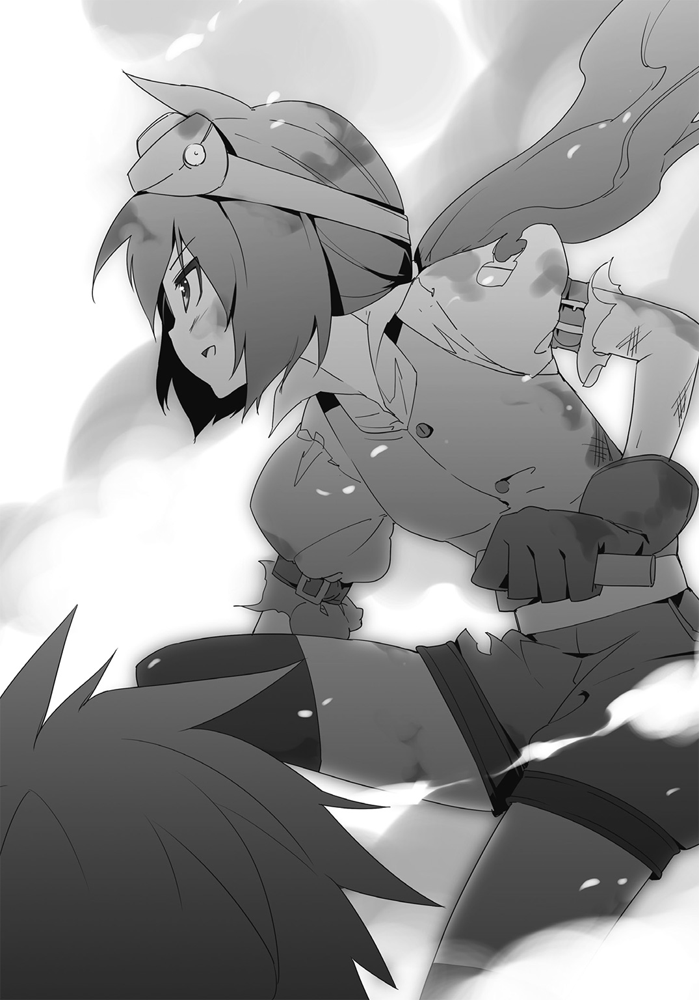
「キミ達が神族に連れ去られた時、詳細はわからないけど危ないかもしれない、と思ったら、自然とそうした選択を取っていた。その......まあ、リョウマには【百年獣】のところで助けてもらった借りがあるし、なんていうか、それを返さないままになってしまうかもしれない、なんて考えると......たまにはこういうのもいいかなと思ってね」
「......ふーん。それも合理的な考え？」
ライラがにやにや笑うと、ココは頰を赤らめ、そっぽを向いた。
「当然だろう。別に、百年獣でのリョウマの行動に感化されたわけではないよ。決してない」
「......そうか。ありがとうな、ココ」
「おかげでリョウマ様が危ういところで助かりました。心より感謝します」
オレやガーネットから礼を言われて、ココは咳払いし、頭を搔き回す。
「ココ！ すまない。お前がいなければどうなっていたことか......！」
アイリスが言って、こちらに駆け寄ってこようとした。
が――その前に、フェイが目を見開くと、素早く体勢を立て直し、彼女を抱き止める。
オレは取り戻そうと動いたが、間に合わず、再びアイリスはアルヴェーヌのところへと連れていかれた。
「......手間をかけさせてくれますね」
アルヴェーヌが顔を手で覆いながら、怒りを滲ませたような声で言う。
「ですが、誰が現れようとも無駄な足搔きです......！」
再び掌に生まれる球体。光は針を吐き出し、オレ達を操ろうと空を走った。
そして――。
『っしゃらああああああああああああああああっ！』
目の前で展開された壁に弾かれて、消える。
『っざけんな、この野郎が！ 輝術だろうがなんだろうが、初めに物理的な攻撃に委ねるならおれの出番だろうがッ！』
復活したマンゲツが、高らかに声を上げた。
「マンゲツ！ やっと起きたか！」
『おうよ、兄弟！ 心配かけたな。もう大丈夫だ！』
元気のいい答えに、オレ達は歓喜する。
「皇帝の造りし魔の鎧――おぞましい。ならばフェイ、あなたの手で葬りなさい」
アルヴェーヌの命により、フェイが頷きと共に動き始めた。オレは対抗するためにさっきまで使っていた剣を構えたが、
「リョウマ。そんなしち面倒くさいやりとりをする必要はないよ」
ココが横で言ったので、怪訝な顔を向ける。
「どういうことだ。何か作戦でもあるのか？」
「ボクがただキミ達を助けに来ただけだと思ってるのかい？」
オレの目を見て、ココは、わずかではなく――確かな笑みを零した。
「呼びなよ、新しく生まれ変わった、キミのもう一つの相棒を」
「え、あるのか。ここに!?」
「いや、重いからオレクに置いてきた」
「それ駄目だろ!?」
あいつは範囲外だと応えないはずだぞ。
「問題ないよ。生まれ変わった、と言っただろう？」
オレにそう返すと、ココは座り込み、欠伸を嚙み殺した。
「ボクは疲れた。ここで休んでるよ。あれが誰だか知らないが、早く片づけて帰ろうじゃないか」
簡単な使いでも頼むような口振りのココに対して、呆気にとられていたオレだったが、
「リョウマ様、前を！」
ガーネットの焦った声に我を取り戻し、慌てて肉薄してくるフェイの刃を防いだ。
ぎりぎりと音を立て、数度の攻防を経たあと、強引に相手を弾く。
距離が空いたところで、オレは思考を巡らせた。
でも本当なのか。ここに来るのか？
オレはココへと視線をやった。でも彼女は泰然と座ったままで事の成り行きを見守っている。
......どうする。
フェイは少しずつ、だが確実に距離を詰めてきていた。恐らくは間もなく攻撃を仕掛けてくるだろう。このままじゃどうせじり貧だ。
だったら――。
「リョウマ、あたしも協力を......」
「いや、いい」
ライラが申し出てくるのを遮り、オレは柄を握る手に力を込めると、
「――オレ一人でやれる」
剣を明後日の方向に放り投げた。
「リョウマ、何をするつもりだ!?」
アイリスが愕然となるのにも無言のまま、呼吸を整える。
「血迷ったか。まあいい。事が早く済むのは何よりだ」
フェイが冷酷な眼差しを向けてきて、身を沈めた。
――来る。
予感通り、まるで弾丸のようにしてこちらへと接近してくる。
剣が大気を裂いて掲げられ、オレに向かって振り落とされた。
だがオレは何もしない。ただ佇んで、時を待った。
「リョウマ様！ 危ないです！」「なにしてるの、リョウマ！」「リョウマ、避けろ！」
周囲から次々と声をかけられるが、一切応えない。
そして、刃が、躊躇いなど覚えるはずもなくオレの眉間へと到達する――。
間際。
「リベリオン......」
オレは、迷いなく真っ直ぐに、敵に向かって手を翳した。
「......来い......ッ！」
風がなびくような音がする。轟々と唸り、全てを薙ぎ払う強い風が。
刹那、アルヴェーヌの背後にあるステンドグラスが大きく砕け散った。
陽光を受けて煌めく欠片が舞う中を、一筋の銀光が駆け抜ける。
それは呼ぶがまま、求めるがまま、全てをかけてやってきた。
使い手である、オレの、もとへ。
耳障りな金属音。
フェイの顔色が変わった。
彼女の剣は、真っ向から受け止められている。
オレの眼前へと突き立った――一本の、美しい剣に。
「ははっ......本当に来たのかよ」
これが進化した魔法剣リベリオンってわけか。
「さあて......」
柄を握り、オレは自分の得物を引き抜いた。
馴染んだ感触に笑みを零しながら、フェイとアルヴェーヌに向かって宣言する。
「それじゃあ、ここから反撃開始といこうか！」
オレは思いきり魔法剣を振り上げると、強く呼びかけた。
「ぶちかませ――リベリオンッ！」
真下に向かって大気を一刀両断する。
直後、凄まじい熱量を持つ漆黒の輝きが床を走った。
オレの魔力を物理的な現象として変換したリベリオンの一撃が、フェイを正面から打ちのめす。
一度は得物で受け止めものの、耐え切れたのはほんのわずかにすぎなかった。
フェイの持つ剣の刃が粉々に砕け散り、彼女は轟風に巻かれたように吹き飛ばされる。
壁に強く背を打ちつけたフェイは、そのまま、気を失ったように頭を垂れた。
「さすがリベリオン！ リョウマと組めば無敵だね！」
ライラが自分の成果のように喜び、手を叩いてくれる。アイリスが、やっと笑顔を見せてくれたのが嬉しかった。
オレは息をつき、アルヴェーヌを睨みつける。
「さあ、どうする。頼りになる部下は今度こそいなくなったぞ。降参するか？」
アルヴェーヌは沈黙を保ったままでオレを見返してきた。瞳の奥にどんな感情が宿っているのかは読み取れない。
「何度も同じことを言わせないでください。アイリスはわたしが預かります。あなたには渡せません」
『しつこいぞ、てめえ。母親だかなんだか知らねえが、お嬢はお前の所有物じゃねえんだ！』
「マンゲツの言う通りだ。アイリスはアイリスの道がある。それは誰であろうと邪魔できない！」
言い切ったオレに対してアルヴェーヌが目を閉じた。しばらくしてから声を漏らす。
「わかり合えないのであれば対立するしかありません。どうしても娘を取り戻したいというのであれば、わたしを倒しなさい」
「母上！ もう無理だ。お願いだ。受け入れてくれ。私は母上と共に暮らせない！」
「――いいえ、アイリス。あなたはわたしと暮らすのです」
アイリスの必死の願いも虚しく、アルヴェーヌは決して自分の主張を譲らなかった。
「十数年ですよ。あなたにとってもっとも大事な時期にわたしは共にいることができなかった。それがどれほど悲しいことであったか。わたしはもう二度と、あなたを手放したくはないのです、アイリス」
アルヴェーヌの掌が、アイリスの頭をゆっくりと撫でる。
気持ちがわかるだけに、オレも胸が痛んだ。
なにが悪いなんて、一概には言えないだろう。
彼女はただ娘と生きたいだけなんだ。だけど、そんな当たり前のことがかなわなかったから、壊れてしまった。
求めても求めても得られなかったものがある時、人は時に過ちを犯す。
かつて、力を得ようとするあまり魔神を召喚してしまった皇帝グレディスのように。
でもそれは、許しちゃダメなことなんだ。
少なくとも――誰かを悲しませている、以上は。
「......わかった」
オレはリベリオンを正眼に構えると、言い放った。
「これ以上の説得が無駄だっていうなら――オレがあんたを止める。力ずくで、無理矢理にでも！」
できるのがオレしかいないっていうなら、やってやる。
三年前と――同じように。
「リベリオン――行くぞ！」
刃が漆黒の光を纏った。煌々とうねる輝きを浴びながらオレは、踏み込むと同時に、自分のもう一つの相棒を振るう。
衝撃が空を切り裂いていった。アルヴェーヌ目掛けて、牙を剝く。
しかし、寸前、アルヴェーヌの口が動いた。
「【光よ。我が前に全てを回帰させよ】」
白い煌めきが弾ける。瞬間、オレの放った光が弾け飛んで宙に散った。
「防がれた......リベリオンの力が!?」
驚愕すると共に、アルヴェーヌの体から純白の輝きが立ち昇る。
「わたしを誰だと思っているのです。代々、神族の長は特別に強い輝術を扱う。それはアラムヴェルトの寵愛を一身に受けた証でもあります」
次々と生み出される光が、それぞれに形を変えてオレ達を狙った。
「何度やっても無駄です。魔神から生まれた力など真なる創造主の御力の前では塵に等しい。どれほどあなた達が足搔こうとも、わたしが全て無にして差し上げましょう」
そんな......じゃあ、剣で直接切りつけるしかないのか。
でも、そうすれば恐らく、輝術の餌食になってしまう。
それに――仮にそっちがなんとかなったとしても、代わりにアルヴェーヌを深く傷つけてしまうことになってしまったら......。
たとえ暴走してしまっていても、アイリスにとって唯一残った肉親だ。
この期に及んで甘い考えかもしれないけど――やっぱり、命を奪いかねないような真似はしたくなかった。
「何を迷っているのです。わたしを止めたいのであれば殺しなさい」
凍てつくような微笑を浮かべながら、アルヴェーヌがオレを挑発する。
彼女にはわかっているのだ。オレにはそれができないと。
「早くした方がいいですよ。そこの少女が侵入してきた以上、異変に気づいた者も少なくないはず。間もなくここへ、他の大勢の神族がやってくるでしょう。そうなればいかに英雄であるクロセ殿でも潜り抜けられるかどうか」
「......くっ」
悔しいけど、アルヴェーヌの言う通りだ。もしそうなったら相当にまずい。
オレは自分の中に湧いた葛藤と必死に戦っていた。
「......いいのだ。リョウマ。もういい」
すると――アイリスが不意に、儚い笑みを浮かべる。
「私自らがやる。お前に手は出させない」
彼女は床に転がっていたナイフを拾い上げると、刃をアルヴェーヌへ向けた。
「ま、待て、アイリス！ それはダメだ！」
「お前ばかりに任せるわけにはいかない。こうなればもう母上を止めるにはこれしかないのだ」
「ですがアイリス、ようやく会えたお母様なのでしょう!?」
「自分の手でなんて、絶対ダメだよ！」
『お嬢！ 考え直せ！ きっと方法があるはずだ！』
ガーネットとライラ、マンゲツが説得するが、アイリスはただ静かに首を横に振る。
「母上、済まない。あなたの言うことを聞けぬ不出来な娘を許してくれ」
アイリスは瞑目し、ナイフの柄を握る手に力を込めた。
止めなければ、と思うけど手段が思い浮かばない。
ああ、もう、どうにかなんないのかよ!?
オレは焦りのあまり、頭をただ搔き回した。
「......あとでどうなるかわからないからあえて言わなかったんだけど、仕方ないか」
その時、ココがぼそりと呟いて、オレに声をかける。
「リョウマ。リベリオンの柄頭に触れて」
「......え？」
「早く！」
急かされて、オレは慌てて言われた通りにする。
手を触れると、以前までは何もなかったそこに、宝玉のようなものが埋め込まれていた。
途端――紅色の光が灯り、リベリオンがわずかな間だけ震える。
「ココ、これは......？」
「一種の制御装置。もしもの時用につけておいたもので、本当に奥の手として使ってほしかったんだけど......まあ、今がその時か。リョウマ、あとは普通にいつも通り使えばいい」
「え、でも、輝術があるんじゃ......」
「ボクを信じて。アイリスに過ちを犯させてもいいのかい？」
うっ......そ、そうだな。よし。
「アイリス、待て。オレがやる！」
「だが、リョウマ、お前ばかりに全てを委ねるのはやはり納得がいかない！」
「そういうことじゃなくて......ああ、もういいや。リベリオン！」
オレは呼びかけて、いつものように剣を掲げた。
「オレに、力を貸せ......ッ！」
その瞬間、オレは、全身から異常なほどに『何か』を持っていかれた気がした。
立っていられなくなり、思わず一歩踏み出したところで、跪く。
直後、リベリオンが爆発した。
いや、そう思えるほど、途方もなく――漆黒の光を放出したのだ。
「......これは!?」
アルヴェーヌの顔に初めて動揺が浮かぶ。だがそれは、使い手のオレだって同じことだった。
リベリオンの刀身から流れる輝きだけが莫大な規模を持ち、部屋中を覆い隠さんばかりに広がっていた。
「これがリベリオンの持つ本当の力さ。使い手の魔力を際限なく無尽蔵に吸い込み――全てを力へと変える」
ココが自身の成果を誇るように胸を張った。
「だけど気をつけるんだよ、リョウマ。それは間違いなく一発勝負。もし相手に通じなかったら、リベリオンが一時的に普通の剣に戻るだけじゃなく、キミもしばらくは魔法を使えなくなる」
「......なるほど。そういうことか」
確かにこれは奥の手だ。だけど構わない。
この場を切り抜けられるなら、オレの魔力なんて、丸ごと持っていけばいい！
「さあ、見せてやるといい。神の御使いを気取って偉そうなことを言う勘違い女に」
アルヴェーヌを指差し、ココが口角を上げた。
「英雄の強さっていうのを、存分にね！」
オレは体を起こすと、立ち上がり、目の前の相手を見据える。
「所詮は邪道の力......アラムヴェルトの威光に届くはずもありません」
アルヴェーヌが冷ややかな声で断言した。
「......かもな。だけど試してみるさ」
そうする価値が、この戦いにあるのなら。
「アイリスを助けられるのなら――相手が誰であろうと、斬ってみせる！」
気合いを入れるように声を張り上げ、オレは勢いのままに疾走した。
「【光よ。愚かなるこの者に神罰を】！」
アルヴェーヌがリベリオンの生み出したものと同じくらい極大な光の力を、こちらに向かって撃ち放つ。
轟々と迫るそれを前に、しかしオレは少しも恐れず、ただ前進し続けた。
失ったものを悲しんでいた人達。二度とは帰らぬ存在に憤りを覚えていた人達。
オレに力を貸してくれた人達。帝国の未来を託してくれた人達。
今まで出会ってきたあらゆる想いを刃に乗せ、得物を構えると、その切っ先に全てを委ねる。
解き放つ。オレの、全てを。
この一撃に――賭けて。
「喰らえ――」
迷いなく、躊躇いもなく、剣を真っ向から繰り出した。
そして、突き――破る。
光の嵐を潜り抜け、オレは尚も進むことを止めずに走った。
走って、走って、我武者羅に剣を構える。
目を見開き、硬直するアルヴェーヌへ向けて。
「終わり......だああああああああああああっ！」
刃を、振り下ろした。
リベリオンの力が相手の体を打ちのめす。抵抗することすらできず、アルヴェーヌの体は後方へと飛んだ。
「母上ッ！」
アイリスが彼女の後ろへと周り、受け止めた。それでも勢いは止まずに、地面を削るようにしていき――。
壁に当たる寸前で、ようやく衰えた。
「ぐっ......くっ......」
オレは膝をつき、大きく息を吐き出す。魔力を吸い込まれただけだというのに、妙な疲労感があった。
「リョウマ様、お体の具合が......!?」
ガーネットが駆け寄り、心配してくれるが、オレは笑みと共にそれを否定する。
「オレはなんともない。それより、アイリスのお母さんは......」
直接ぶつけた力そのものはできる限り加減したつもりだから、大丈夫だとは思うんだが。
「......大丈夫だ。リョウマ。息はある！」
やがて、アイリスが報告してくる。やれやれ、とオレは胸を撫で下ろした。
リベリオンを鞘へと仕舞い、ガーネット達と共に歩み寄る。
アイリスに支えられ、息も絶え絶えではあったが――確かにアルヴェーヌは目を開けていた。
「アイ......リス......」
うわ言のように呟く母親の顔を、アイリスは覗き込んだ。
「すまない、母上。このようなことになってしまい、本当にすまない......」
涙を零し、謝る娘を、アルヴェーヌはじっと見つめていた。
やりきれない想いを抱きながら、オレは拳を握る。
やがて――。
「......よい......」
アルヴェーヌは、消え入るような声を出した。
「良い仲間を、持ちましたね......アイリス」
予想もしない言葉が聞かされて、オレは目を見開く。
「彼らならば......何があろうと、帝国復興を成し遂げることが......できるでしょう......」
「ど、どういうことだ。母上。母上は私と共に暮らそうとしていたのでは......」
「最初は......確かに、そうです」
笑みを零しながら、アルヴェーヌがアイリスへと震える手を伸ばす。
「ですが......あなたの言葉を聞くうちに、それがかなわぬ願いと......理解できました......」
「だ、だったら、どうして......!?」
「情けないことですが......こうでもしないと......諦めきれなかったのです」
アイリスの頰を撫でながら、アルヴェーヌは言った。
「長い間、あなたと会える日を、共に生きることのできる日を、待ち続けたわたしにとって......。徹底的な......敗北でもなければ......また娘を失うことに、耐えられなかった......」
「そん......な......」
目を細め、口元を緩める姿に、先程までの様子はどこにもない。
ただあったのは、娘を想う、優しい母親の姿だった。
「クロセ殿......愚かなわたしを......許してほしいなどとは......言いません」
こちらへと視線を移すと、アルヴェーヌ......アルヴェーヌさんは言った。
力が入らないだろう手を、ゆっくりと持ち上げ、
「ですが......アイリスを......娘を頼みます......どうか......」
「......わかり、ました」
跪き、オレはアルヴェーヌさんの手をとった。
「母上......母上......ッ！」
体に覆い被さり、泣き叫ぶアイリスを、アルヴェーヌさんはそっと抱きしめる。
「大きく......立派になりましたね......アイリス」
か細い声を、それでも、懸命に紡ぎ出しながら。
「あなたが、もう誰かを頼るだけの幼子ではなくなっていたと気づいていたのに......受け入れて......あげられなかった......。ごめん......なさい......」
アルヴェーヌさんは一筋の涙を零しながら、そう謝ると、
「だけど......これだけは信じて......」
うっすらと目を閉じながら、最後に囁いた。
「アイリス――母は、あなたを、誰よりも愛しています」
最終章 彼は選んだ道のりを
幸いなことに、アルヴェーヌさんは助かった。
さすがにしばらくの休養は必要となるものの、命に別条はないとのことだ。
戦いのあと、部屋になだれ込んできた神族の兵士達にオレ達は拘束されたものの――目を覚ましたアルヴェーヌさんの指示により即座に解放された。
「あなた方に敗れたわたしには、もう何を言う権利もありません。好きに生きなさい、アイリス。それが苦難の道だとしても、他ならぬあなた自身が選んだのであるならば」
アルヴェーヌさんはベッドに横たわりながらアイリスにそう告げて、彼女の体をもう一度抱いた。
アイリスもまた抱きしめ返し、ようやく、母娘は心から再会を喜び合う。
更にアルヴェーヌさんはオレ達へ多大な迷惑をかけたことを改めて心から謝罪し、どのような罰でも受けると申し出てきた。
だが――オレは、全てを水に流すことにする。
確かに色々とあったけど、無理矢理に引き離されてしまった一人娘との再会を夢見てきたアルヴェーヌさんの気持ち自体は、理解できたからだ。
ただ、その代わりといってはなんだが、ガルフレアとファレーナが協力関係を結んでくれるようにお願いした。
するとアルヴェーヌさんはこちらへの深い感謝の言葉を伝えると共に、すぐにそれを了承してくれた。
時間はかかるかもしれないが、神族達に呼びかけ、必ず成立させてみせるという。
となると......ひょんなことから二国の交渉が済んだことで、オレとアイリスの当面の目的は果たされたことになった。
オレ達はアルヴェーヌさんにまたファレーナを訪れることを約束し、神族の案内によってイルタインへと戻ると、しばらく休んでから出発することにした。
だがココは「やれやれ。疲れたよ」と零し、自分の家に帰るなりベッドに倒れこむと、そのまま眠ってしまった。
しかも次の日になっても目を覚まさず、なにをどうやっても起きなかったので、仕方なくお礼の言葉を書き置きとして残し、オレ達は街を出た。
「本当に今回は、母上が大変なことをしてしまった。言葉だけでは足りぬかもしれないが、私からも謝る。すまない、リョウマ」
オレクから離れたところにある丘の上で、アイリスが頭を下げてくる。
「だから、本当にいいって。終わりよければなんとかっていうだろ。こうしてみんな、元気なんだ。それで十分だよ」
な、と呼びかけると、ガーネットやライラも笑顔で頷いた。
このことについては、二人とも話し合って解決したことだ。これ以上、なにか問題にするつもりもなかった。
「......本当にありがとう、みんな」
アイリスは再度一礼してから、ようやく、口元を緩めてくれる。
「ところでアイリス、これからどうするの？」
その時、街を眺めながら、ライラが問いかけた。
「私達が達成したのは帝国が復興するまでの助力を得ることだけだ。ならば、帝国がこれから生き残っていく術を見つけていかなければならないだろう」
穏やかな風を受けながらアイリスが答える。
「それがなんであるのかはわからないが......ひとまずは帝国へと帰還したあと、考えてみようと思う。ただ――」
と、そこで彼女はオレを見た。
「リョウマ。最初に私がお前に要請したことは全て済んだ。その......お前が望むのであれば、帝国へと戻り次第、元の世界へ帰そう。無論、その際には相応の礼をするつもりではあるが」
......相変わらず素直じゃないな、と思う。
言葉とは裏腹に、アイリスが何か別のことをこちらに求めているのが丸わかりだ。
でもオレのことを考えると、とてもではないが口にはできないし、そこまで頼ってはいけないと自制しているんだろう。
だからこそ、オレは頰を搔いて言った。
「......アイリス、オレとお前の約束は帝国が復興するまで皇帝でいるってことだったよな」
「うむ？ う、うむ。そうだが......」
「だったら、ちゃんと元に戻るかどうか見届けないとな。じゃないと、無責任だ。それまでの間、一緒にガルフレアが生き残る方法を考えよう」
アイリスの目に輝きが宿る。だが、すぐに彼女は自分を戒めるように首を振ると、
「し、しかし、それには何年かかるかわからない。リョウマにだって元の世界の都合があるだろう。いつまでもお前に縋るわけにはいかない」
「どんな苦難な道でも、それが自分の選んだ道ならば、好きに生きなさい」
オレは、記憶の中にある台詞を述べて、微笑んだ。
「アルヴェーヌさんがアイリスに言ったことだよな。このまま帰ったんじゃ、他ならぬオレ自身がすっきりしないんだよ。だから――オレはまだこの世界にいる。......ダメか？」
アイリスは茫然となったように佇んだ。しかし、やがて彼女の目が潤み始める。
「だ......ダメなことなど......ダメなことなど、あるか」
手で口元を押さえながら、震える声で言って、オレのもとへ歩み寄ってきた。
「ありがとう――リョウマ。本当に、感謝する......！」
両手を広げ、抱きついてくると、アイリスは零す。
「これからも宜しくな、アイリス」
オレは笑みと共に、彼女の頭を撫でた。
......正直、元の世界に未練がないかと言われれば、答えはノーだ。
だけどそれ以上にオレは、この世界にもっといたかった。
アイリスという少女が、かつてオレ達が追い詰めた帝国をどう変えていくのか――。
その行く末を見守りたいと思ったのだ。
「わっ。リョウマ、まだこっちにいるんだ。じゃあ、あたしも帝国についていこうかな」
ライラの言葉に、オレは苦笑した。
「おいおい。シュトルライデンの王様が帰りを待ち侘びてるんじゃないのか？」
「いいんだよ。いつまでに帰るって言ってないし。リョウマ達についていった方が面白そう！」
『遊び半分かよ......ガルフレアの未来がかかってんだぞ』
マンゲツが目を半分にして呆れたが、アイリスは涙を拭いながら微笑んだ。
「良いではないか。ライラであれば歓迎する。是非、知恵を貸してくれ」
「やった！ 任せてよ！」
ライラが力強く、胸を叩いた。
「ではわたくしも同行しましょうか」
ガーネットが言うと、アイリスは目をしばたたかせる。
「いいのか。ティタニアに戻らずとも」
「ええ。幸い、お父様の病状も回復しているようですし、しばらくはわたくしがおらずとも為政に問題はないでしょう。ティタニアの使者として、及ばずながらガルフレア復興に協力しますよ」
「......みんな、ありがとう。私は本当に幸せ者だな」
アイリスは体の前で手をぎゅっと握りしめると、嚙み締めるように呟いた。
「では、帝国へと帰還しようか。帝国のみんなに良い報告をしなければならない」
その場にいる全員を見回し、アイリスが告げるのに、オレ達は頷く。ただ、
「あ......と、その前に。ごめん、ガーネット、ちょっとだけいいかな」
オレがそう声をかけると、ガーネットは小首を傾げた。
「ええ、もちろん構いません。どうされましたか？」
「ここじゃなんだから、あっちで」
向こうの方を指差すと、ガーネットが頷き、歩いていく。
『......おい、兄弟。まさかあれか。あれな感じのあれか。そうはいかねえぞ。なんたって兄弟にはおれがいるんだからな。そう簡単に事を運べると思ったら大間違い――』
「マンゲツ。お前はここに残れ」
オレの考えを察したのかマンゲツがいつものように騒ごうとしたが、アイリスが静かに命じた。
『なんでだよ、お嬢！ ひょっとしてわかってないのか？ あのな、兄弟はこれからガーネットにとんでもねえ話をしようとしてるんだぞ！』
「いいから残れ。私の言うことが聞けないのか？」
珍しく威圧的な口調になるアイリスに、オレだけじゃなく、マンゲツまで目を文字通り点にする。
だが、しばらくしてから、
『......わかったよ。兄弟、ここに置いてってくれ』
マンゲツは渋々従った。オレは鎧を繫ぎとめている部分に手をかけ、外していく。
「悪いな、マンゲツ。それに......ありがとう、アイリス」
「気にすることはない。早く行ってあげてほしい」
オレは頷くと、マンゲツをそっと地面に置く。
「じゃあ......ちょっと、ここで待っててくれ」
言い残すと、オレは、ガーネットの待つ場所へと向かった。
※
リョウマの背が小さくなっていくのを、アイリスはじっと見つめ続けていた。
『なあ、お嬢、本当にいいのかよ。このままじゃ、ガーネットにリョウマをとられちまうんだぞ』
「リョウマは物ではない。とるとか、とられるとか、そういう問題ではないだろう」
マンゲツに応えると、彼は不満そうに口をへの字に曲げる。
『そりゃそうだけどよ。おれは、お嬢とリョウマをだな......』
「お前の気持ちは嬉しい。が――良いのだ、これで」
微笑みを浮かべながら、アイリスは言った。
「帝国のことといい、母上のことといい、リョウマには返しきれぬ恩がある。これ以上、私が何を望めようか」
だからこれでいいのだ。彼の思うままを受け入れ、ただ、傍にいるのが一番だろう。
（......そう。私はもう、リョウマに何も望んではならない）
自分に言い聞かせながら、胸に手を当て、服を握る。
浮かび始めてきた寂寞とした感情を、無理矢理抑え込むように。
「......諦めるのはまだ早いんじゃない？」
しかし、そこで黙り込んでいたライラが平然と言ってのけた。
「リョウマがどんな答えを出したところで、それは『今』なんだよ」
「......どういうことだ？」
「未来はわからない。ガルフレアの先と同じで、あたし達の努力で変えられる」
歯を見せて笑い、ライラは近づいてくると、こちらの肩を叩いた。
「あたしはリョウマを夫にするよ。『過去』と『今』がどうでも『いつか』は決まってないんだからね」
「......ライラ」
迷いのない言葉に、アイリスは心を動かされる。
視線を逸らし、彼方にいるリョウマの姿を見つめた。
「だが――私はリョウマに世話になりすぎた。更に何かを求めるというのは、いささか貪欲だろう」
「いいんだよ、わがままで」
こちらの頭をくしゃくしゃと撫でたあとで、ライラが断言する。
「誰かを好きって気持ちは、どうしようもなく真っ直ぐで、抑えきれないものだから。なにもリョウマに押しつけなくたっていい。アイリスが、アイリスのままで想いを届けるように頑張ればいいんだよ」
「私が、私のままで......」
繰り返すことで、言葉が、胸の内に浸透していった。
「で、それを踏まえた上で訊くけど」
こちらの顔を覗き込んでくると、ライラは悪戯っ子のような目つきで尋ねてくる。
「アイリス。君は――リョウマのことが、好き？」
虚を衝かれ、アイリスは息が詰まった。
顔が熱くなり、しばらく硬直したまま動けなくなる。
だがやがて、咳払いをし、深呼吸を行ったあとにようやく落ち着きを取り戻した。
そして。
「うむ。......好きだ」
素直に、言葉を紡いだ。
「私はリョウマが好きだ。英雄としてではなく――一人の、異性として」
いつからかはわからない。
だが、気づけば彼に確かな好意を持っていた。
「うん。じゃあ、とりあえずは好敵手ってことで」
ライラは拳を突き出し、片目を瞑る。
「あたし、負けないよ？ ――絶対、リョウマを振り向かせてみせるから」
「......ああ。望むところだ」
アイリスも微笑むと、ライラの拳に自分のそれを突きつけた。
帝国の復興に、想いの成就。
これからもやらなければならないことは山積みだ。
（だが、なぜだろう）
少しも辛いとは思わなかった。
寧ろ、胸が弾んできそうな気さえする。
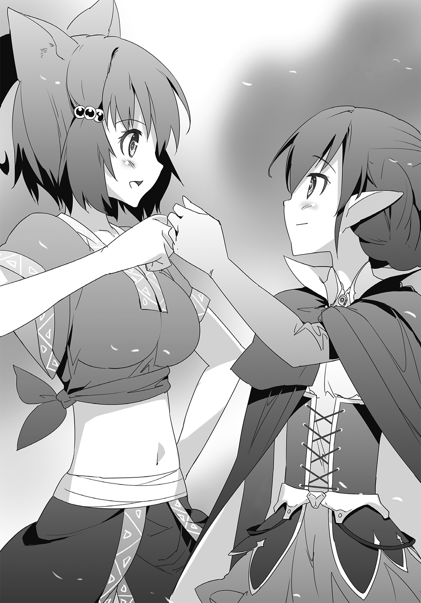
『お嬢、本当に......立派になったな』
マンゲツが嬉しそうにそう言うのを聞きながら、アイリスは顔を上げた。
目に眩いほどの蒼穹が、どこまでも広がっている。
「......いい天気だ」
清々しい気持ちで、呟いた。
※
「リョウマ様、お話とは......？」
アイリス達から離れた場所で、ガーネットが尋ねてくる。
オレは目を閉じ、何度も息を整えながら、必死で言うべきことを整理した。
とんでもない緊張感だ。多分、皇帝と戦った時よりもっと張りつめている。
「......あの、さ」
瞼を上げ、ガーネットを正面から見据えると、オレは言った。
「ガーネットへの返事、あっただろ。帝国の復興って意味ではまだまだだけど......区切りはついたことだし、あれをしようと思って」
「あ――は、はい」
ガーネットの顔に驚きが浮かび、彼女は姿勢を正す。
「その......色々考えたんだ。オレは所詮、別の世界の人間だ。いつか帰らなきゃいけない。それなのに想いを伝えていいのかって」
無言で佇むガーネットに、オレはどうにか落ち着きを保ちながら続けていった。
「ガーネットに寂しい思いをさせるんじゃないか。元の世界に戻って後悔するんじゃないか。そんなふうに思って――でも」
ふと気づいた。
じゃあ、言わなければお前は後悔しないのか？
一度目にあった心残りは、二度目になるとなくなるのか？
いつかガーネットに別れを告げる時に見せる笑顔に噓はまったくないと――心から言えるのか？
と。
「やらなければならないことをやって悔いるのと、やらなきゃいけないことをやらずに悔いるのとじゃ、オレはやっぱり、前者をとりたい」
この世界を救おうと思ったのと同じように。
自分の想いへ、素直に従うべきなんだ。
「だから、ごめん、ガーネット。オレはいつか必ず、お前に寂しい思いをさせると思う。オレだっていつか必ず、寂しい思いをするはずだ。だけど......」
だけど。
それでも、言わせてほしい。
「――好きだ、ガーネット」
オレは歩み寄ると、目を見開くガーネットの体を、深く懐に入れた。
「三年前からずっと、お前のことが、大好きだった」
「......リョウマ、様」
オレの名を呼び、ガーネットがか細い声を漏らす。
「わ、わたくしも......」
オレのことを抱き締め返してくると、彼女は震えながらも、力強く言った。
「わたくしも、あなたが大好きです...ッ！ 三年前から、ずっと！」
「......ありがとう」
オレは一旦、ガーネットのことを放すと、じっと見つめる。
そして――。
そっと、口づけをした。
「あ......」
突然のことに驚いていた様子のガーネットだったが、すぐに力を抜き、オレに身を委ねてくる。
「......オレはもう少しだけ、この世界にいる」
唇を離したあと、頰を赤らめるガーネットに向けてオレは告げた。
「だから、できればガーネットにも一緒にいてほしい。......いいかな？」
ガーネットは、すぐに返事をしてくれた。
出会った時と同じように。
太陽のように、輝かしい笑顔のままで。
「――はい、リョウマ様」
強い風が吹いた。まるでオレ達の背中を押すように。
同時に影が差し、その正体は、間もなく目の前を通り過ぎていった。
天空を――竜が舞う。
遙か彼方に待つだろう、未来まで誘ってくれるように。
「いこう、ガーネット。オレ達にはまだ、やらなきゃいけないことがある」
オレは声をかけ、歩き始めた。
元いた場所とは異なる世界を。
オレに守るべきものを与えてくれた、アラムヴェルトの大地を。
――なによりも大切な、人と共に。
ＦＩＮ
あ と が き
何かしら過ぎた力を持った者には、必ずその資格を試される時が来る。
そんな風に思います。
この『逆道の覇王戦記』というシリーズの主人公もまた、そうでした。
卓越したものを持つということは、持てなかった者の矢面に立つことがある、ということも同時に意味しています。
そこには、辛く、苦しい場面も多い。
けれど主人公であるリョウマは自身の覚悟を示し、その試練を乗り切ったからこそ、「英雄」と呼ばれる資格を得るに至りました。
また、リョウマだけでなく他のキャラクター達も、それぞれに「力」と「資格」の中で懸命に生きなければなりませんでした。
彼らの生き様が、読者の皆様にどんな印象を与えたかは計り知れぬことではありますが、もしこちらの思った通りに伝わっているのであれば、これ以上嬉しいことはありません。
......などと、締めの時くらいは真面目に語ってみました。
お久しぶりです。空埜一樹です。
『逆道の覇王戦記３』はいかがだったでしょうか？
小難しいことは抜きにして、気軽に楽しんで頂いたのだとしても、もちろん感謝感激雨霰の次第であります。
勇者が魔王を倒したあとの話がどうなるか、がコンセプトのこの作品でしたが、夢見たあとには現実が待っているという感じで、微妙にシビアなことも書いたりしました。
そんな中、作者であるぼくの一服の清涼剤として作用したのは、喋る鎧マンゲツの存在であったりします。
「基本的に好き放題言わせる」ということだけを決めて作ったキャラでしたが、やっているうちに本当に遠慮なく好き勝手言い始めたので、慌てて修正したりすることもありました。
とはいえ、彼を中心にすると不思議に会話が上手く回ったりもしたので、ありがたい人物（？）でもありましたが。
主人公が真面目な分、良い相棒になってくれたのではないかと思います。
もう一つ、マンゲツの他にこの作品で思い入れがあるものといえば――。
リョウマが使っていた剣、リベリオンです。
二つ続けて人間じゃないのかよ、と突っ込まれそうですが、実はリベリオンのような「呼べば来る剣」を自分の作品で出すのは念願の夢であったりしました。
というのも過去に読んだぼくが今でも大好きな作品のいくつかに、リベリオンのように呼んだら主人公のところへ来る武器、というものがありまして。
槍とか剣とかロボットとか色々ありますが、物言わずとも意思をもっているかのように主人へ付き従う姿が非常に格好よく、いつか自分で創る作品にも登場させるのだと決意を固めたものです。
実は当初、このリベリオンも喋らせようかとは思っていたのですが、実際に書いてみるとマンゲツが思いのほかお喋りだったので「あ、これは収拾がつかん」と危惧し、やめました。英断だったと思います。お喋り＆お喋りで主人公がノイローゼになる可能性も否めませんし！
とはいえ、ファンタジーといえば、でぼくが思いつく「喋る道具」「呼べば来る武器」二つを満たせたので、何か色々と感慨深いものがありました。
やりたいことはまだまだたくさんあったりするので、全て実現するために頑張っていきたい所存です。
しかしうちで飼っている犬は意思をもっているのに呼んでも来ないので、これはあれですかね、ぼくにその資格がないということですかね。伝説の勇者でなければ従わないという、そんな、何段階も上からの態度。もしや神か。
閑話休題。
この本が出る頃にはそろそろ秋の気配を感じる頃かと思いますが、ぼくは恐らく、その頃発売する新作ゲームをしていると思います。
ちなみに今もゲームをしています。
某大作ＲＰＧです。
昨日もご飯を食べてから寝るまでずっとゲームをしていました。
しかもレベル上げです。
ストーリー進んでません。
終わったあと、謎の達成感に溢れていましたが、直後に虚しさに襲われました。
でも、きっと気のせいだと思います。
なので多分これを書いたあともゲームをします。
でもレベル上げではありません。
そこまでぼくも馬鹿じゃありません。
侮ってもらっては困る。
お金を稼いで新しい武器と防具を買うのです。
いや――それだけじゃない。
ゲーム内で、カジノだってやるんですよ！
............うん。
わざわざ溜めを挟んでまで言うことではなかった、と、他ならぬぼく自身がわかっています。
何もかもを振り切ってここで謝辞へと移ります。
担当Ｔ様。企画立ち上げから色々とお世話になりました。ぼくにとって新しい舞台ということで緊張もありましたが、どうにかここまで辿り着けたことに感謝致します。
挿絵担当の植田様。物語に新たな魅力を与えて下さった素晴らしいイラストの数々、毎回頂くのが楽しみで、楽しみで、至福の時でした。
多方面から様々なメッセージを下さる方々。日々を皆様の想いで生かされております。
そして何より、この作品を読んで下さった全ての方々へ。
最大限の、感謝を。
またどこかでお会いしましょう。
九月 空 埜 一 樹
ＨＰ 『空ノページ』http://www.eonet.ne.jp/~tabibito5/
著者紹介
空埜一樹 そらの かずき
ＨＪ文庫でデビュー。以後、色々書いて今に至る。
二度目の異世界を旅する少年の物語もいよいよ佳境。
話も盛り上がって参りますので、楽しんで頂けると幸いです。
ポロリもあるよ！（多分）
illustration
植田 亮 うえだ りょう
こんにちは。イラストを担当しました植田です。
ラノベとかゲームとかいろいろ描いたり塗ったりしてます。
最近またちょっと通いで仕事する時があったりで、満員電車で押しつぶされそうになったりしてます。
なまった体にちょうどいい運動になっております。
ダッシュエックス文庫DIGITAL
逆道の覇王戦記 合本版
著者 空埜一樹
© KAZUKI SORANO 2017
２０１７年１月31日発行
この電子書籍は左記を底本としています。
ダッシュエックス文庫
「逆道の覇王戦記」２０１５年２月28日発行 第１刷
「逆道の覇王戦記２」２０１５年５月27日発行 第１刷
「逆道の覇王戦記３」２０１５年９月30日発行 第１刷
発行者 茨木政彦
発行所 株式会社 集英社
〒１０１－８０５０
東京都千代田区一ツ橋２丁目５番10号
０３－３２３０－６０８０（読者係）
制作所 株式会社ＩＣＥ
本作品の全部また一部を無断で複製、転載、改竄、インターネット上に掲載すること、および有償無償に関わらず、本データを第三者に譲渡することを禁じます。なお個人利用の目的であっても、コピーガードを解除しての複製は、法律で禁じられています。